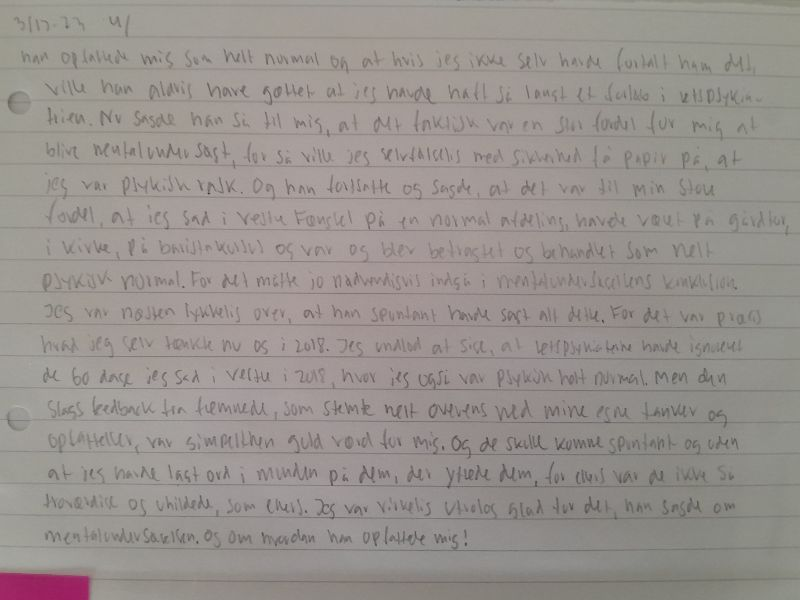

Fængslet

Optakten
Faktisk meget enkelt
Alt, jeg blev udsat for i det, man kan læse i denne del af bogen, skyldtes en praktiserende læge, der hed Camilla Mie Elvekjær. Hun troede, at jeg i 2016 havde misbrugt hendes CPR-nummer og brugt det til at hacke mig ind på den IT-platform, der hed Det Fælles Medicinkort, eller bare FMK. Hvordan den paranoide vrangforstilling opstod i lægens hoved, fandt jeg aldrig ud af, men jeg kunne læse i an aktindsigt til embedslæge Elisabet Tornberg Hansen i Styrelsen for Patientsikkerhed at det var, hvad hun mente. Der var selvfælgelig intet i hendes anklage, men for at sætte mig ud af spillet og straffe mig, gav Camilla Elvekjær mig en alvorlig psykiatrisk fejldiagnose og tvangsindlagde mig på røde papirer den 1. juni 2016. Hun gjorde det i et anfald af raseri og jeg blev hurtigt udskrevet igen, men nu havde Camilla Elvekjær givet mig en dødsdom og fået sin hævn. Alt, der skete i årene efter 2016 var Camilla Mie Elvekjærs fortjeneste og resultatat af hendes fejldiagnose.
Nedenstående optagelser giver et meget godt oprids af min situation, samt hvad, der gik forud herfor, ikke mindst mine problemer med at få politiet og anklagemyndigheden til at følge loven.
Afhøring den 1. november 2021
https://drive.google.com/file/d/1PqAHMSagmlrMB9suD-PdexSn74G10ja1/view?usp=drivesdk
Samtale med anklager Henrik Pedersen den 18. April 2023.
https://drive.google.com/file/d/1QPYmUrgAJQ2GMrvgBZQtuPluzCWPM0zK/view?usp=drivesdk
Samtale med Annette Vester, Statsadvokaten, 12. maj 2023
https://drive.google.com/file/d/1N0vgwtN3YOywWxLr21Dv7pR0ZerBPyls/view?usp=drivesdk
| Hanne Rahbek | Lægeforeningens advokat |
| Lis Middelbo | Psykiater i Vestre Fængsel |
| Ole Nielsen | Efterforsker Vestegnens Politi 2018 |
| Arne Woythal | Efterforsker Vestegnens Politi 2018 |
| Mie Vang | Anklager Vestegnens Politi 2018 |
| Copy/paste dommere | Østre Landsret |
| Nanna Blach | Dommer i Byretten i Glostrup |
| Nina Borum Nielsen | Socialpsykiatrisk sygeplejerske Høje Taastrup |
| Dorthe Olsson | Efterforsker Vestegnens Politi 2021 |
| Henrik Pedersen | Anklager Vestegnens Politi 2021 |
| Karoline | Forsvarsadvokat nr. 3 i 2021 sagen |
| Hanne Ziebe | Forsvarsadvokat nr. 2 i 2021 sagen |
| Kira Iqbal | Forsvarsadvokat nr. 1 i 2021 sagen |
| Peter Cramer | Jurist i Styrelsen for Patientklager |
| Ræven | Fængselsbetjent i Vestre Fængsel |
| High Tower | Fængselsbetjent i Vestre Fængsel |
| Svenskeren | Fængselsbetjent i Vestre Fængsel |
| Den Leende Ko | Fængselsbetjent i Vestre Fængsel |
| John Wicks Mekaniker | Fængselsbetjent i Vestre Fængsel |
| Jonah Hill | Fængselsbetjent i Vestre Fængsel |
| Hyggeonkel | Fængselsbetjent i Vestre Fængsel |
| Den Milde Lebbe | Fængselsbetjent i Vestre Fængsel |
| Nipset | Fængselsbetjent i Vestre Fængsel |
| High Tower | Fængselsbetjent i Vestre Fængsel |
| Mandehænderne | Fængselsbetjent i Vestre Fængsel |
| Pitbull | Fængselsbetjent i Vestre Fængsel |
| Rikke | Retspsykiatrisk Middelfart P7 |
| Camilla | Retspsykiatrisk Middelfart P7 |
| Cecilie | Retspsykiatrisk Middelfart P7 |
| SOSU-Helle | Retspsykiatrisk Middelfart P7 |
| Ergo-Helle (en af de kompetente) | Retspsykiatrisk Middelfart P7 |
| Fys-Anne | Retspsykiatrisk Middelfart P7 |
| Kim | Retspsykiatrisk Middelfart P7 |
| Phoung (Fun/Fjong) | Retspsykiatrisk Middelfart P7 |
| Nanna | Retspsykiatrisk Middelfart P7 |
| Carina | Retspsykiatrisk Middelfart P7 |
| Bine | Retspsykiatrisk Middelfart P7 |
| Sabrina | Retspsykiatrisk Middelfart P7 |
| Henrik (bodybuilder, en af de kompetente) | Retspsykiatrisk Middelfart P7 |
| Henrik (sygeplejerske, en af de kompetente) | Retspsykiatrisk Middelfart P7 |
| Henrik (fedladen, luddoven) | Retspsykiatrisk Middelfart P7 |
| Sanne | Retspsykiatrisk Middelfart P7 |
| Louise | Retspsykiatrisk Middelfart P7 |
| Knud-Erik | Retspsykiatrisk Middelfart P7 |
| Jenny | Retspsykiatrisk Middelfart P7 |
| Brian | Retspsykiatrisk Middelfart P7 |
| Julie | Retspsykiatrisk Middelfart P7 |
| Violetta | Retspsykiatrisk Middelfart P7 |
| Erika (en af de kompetente) | Retspsykiatrisk Middelfart P7 |
| Rikke | Retspsykiatrisk Middelfart P7 |
| Glenn (en af de kompetente) | Retspsykiatrisk Middelfart P7 |
| Leila (en af de kompetente) | Retspsykiatrisk Middelfart P7 |
| Rikke | Retspsykiatrisk Middelfart P7 |
| Mary | Retspsykiatrisk Middelfart P7 |
| Karl | Retspsykiatrisk Middelfart P7 |
| Kathrine | Retspsykiatrisk Middelfart P7 |
| Ulla Norring | Retspsykiater Retspsykiatrisk Klinik |
| Robert | Enheden for Kriminalpræventiv Indsats |
Fængselsbetjentene i Vestre Fængsel
Der var selvfølgelig altid nuancer og undtagelser fra min generalisering, men når det var sagt, så var der også en gennemgående fælles kultur blandt fængselsbetjenene og nogle personlighedstræk og væremåder, der var meget karakteristiske for gruppen. Generelt var der en forståelse blandt betjentene om, at man ikke var ansat til at resocialisere de indsatte eller tale med os om hvordan vi havde det, om følelser eller om skyld og skam. Det var slet ikke det, det handlede om, og man gad simpelthen ikke noget pis med de indsatte. Det kunne jeg vældig godt lide, for ligesom de ikke spurgte mig, om hvordan jeg havde det, så gad jeg heller ikke fortælle dem det, hvis de havde spurgt mig om det.
Rollerne var velkendte, vi var indsatte og de var ansatte og man skulle ikke tro andet eller blive for gode venner. Det handlede om rutiner, om at gøre tingene i dag, som man havde gjort dem i går eller for et eller ti år siden. Alt var skemalagt og ingen burde være i tvivl om noget, hvorfor der slet ikke var nogen diskusion om hvorfor dit eller hvorfor dat. Det handlede mest om at åbne eller låse døre, at udbringe mad eller følge indsatte frem og tilbage.
Man elskede effektivitet, at alting gik præcis efter bogen eller ihvertfald at man ikke brugte et sekund mere end højest nødvendigt. Fælgselsbetjentene brød sig mindst af alt om afvigelser fra normen. Det vigtigste var, at udføre opgaverne så gnidningsfrit og hurtigt som muligt, så man kunne komme tilbage på vagtkontoret og slappe af. Vagtkontoret var højdepunktet for betjentene og alt andet var lidt irriterende, fornemmede jeg.
Men dermed ikke sagt, at man ikke kunne have en god relation med fængselsbetjentene, for mange var venlige, havde et blink i øjet og var som regel klar med en frisk bemærkning eller hurtig joke. Og i det tidsrum det tog at gå fra afdelingen til besøgsrummene, eksempelvis, kunne man have en fornuftig samtale med den betjent, der fulgte en. Og vigtigst af alt for mig, så behendlede de fleste én som et voksent menneske og med den værdighed og respekt, der fulgte med. Ingen behandlede mig som var jeg retarderet, tosse eller et lille barn, hvilket var helt modsat af personalet på retspsykiatrisk afdeling.
Og med det sagt, så var der også små sprækker i betjentenes hårde overflade, eksempelvis når Hyggeonkel uopfordret gav mig en ekstra portion aftensmad eller Pitbull gav mig lov til at vaske skabe. Man kunne også være heldig at ringe gratis eller lidt længere tid, hvis man have telefontid. Nogle betjente lærte man som ugerne og månederne gik at kende en lille smule, de huskede detaljer om en og man fik en udmærket relation, mens andre forblev afvisende og sure.
Jeg blev da også irriteret på en betjent engang i mellem, f.eks. hvis jeg måtte vente 45 minutter på at blive lukket ud af toilettet eller hvis en havde glemt et eller andet, men generelt havde jeg det ganske fint med dem alle og der var aldrig nogen egentlige konflikter mellem os. Mange havde en grovkornet humor, ligesom jeg, og den holdning med 'ikke så meget pjat', var også noget, jeg satte pris på. De fleste kvindelige, ældre fængselsbetjente opførte sig lidt som rejekællinger, med deres ligefremme sprog, men det var ikke negativt ment, nok bare et krav for at være i tjenesten i mange år som kvinde, at man skulle være lidt brovtende, men med et smil på læben.
Hvis man gerne ville have en god relation med betjentene var det vigtigt at være høflig, effektiv, tale tydeligt, være renlig og ikke ryge eller misbruge på cellen. Man skulle ikke skabe sig eller give betjentene ekstraarbejde, så de var nødt til at forlade deres vagtkontor og for alt i verden skulle man ikke bruge kaldet for meget eller for sent for at komme på toilettet.
Der var markante forskelle på fængselsbetjentene og de ansatte på retspsykiatrisk afdeling, hvilket jeg skulle blive mindet om efter jeg blev overflyttet til Middelfart. Selvom personalet på retspsykiatrisk var rigtig mange på arbejde til meget få patienter, så turde de ikke gribe ind, når konflikter begyndte og derfor udviklede de sig altid. Personalet på retspsykiatrisk (fraset en enkel markant undtagelse) var kronisk skræmte og flygtede ved den mindste ballade og lod alle andre patienter i stikken. Fægselsbetjentene var helt anderledes mere kontante, hvilket var meget befriende, de fandt sig ikke i noget fra de indsatte og hvis der var nogen, der skabte sig, så tog de fat med det samme og den provokerende eller voldlige indsatte blev ført bort i et førergreb.
Jeg overværede et par af den slags magtanvendelser i Vestre, så hver gang var berettigede og i de tilfælde, så jeg aldrig stav eller peber blive anvendt (det gjorde det dog i mange andre tilfælde), det var fastholdelse af flere fængselsbetjente hver gang. De kunne altså finde ud af det, og det virkede, hvorimod man på retspsykiatrisk afdeling bare låste sig inde på kontoret og ventede på at politiet ankom fra Fredericia.
Af de faggrupper, jeg havde været tvunget til at omgåes i retsvæsenet, var fængselsbetjentene i Vestre Fængsel dem, jeg hadede mindst.
Praktiserende læge Camilla Mie Elvekjær
Praktiserende læge Camilla Mie Elvekjær var en af de primære bødler. Hun gav mig fejldiagnosen, fik min autorisation fjernet og gjort mig hjemløs. Hun var paranoid og troede jeg havde misbrugt hendes cprnummer og hacket det fælles medicinkort, hvilket selvfølgelig var en løgn. Så Camilla tvangslagde mig i sit raseri og ønske om hævn, hun brugte løgne i erklæringen som blev tilbagevist og hun vidste at hun ødelagde mit liv. Camilla har mere end nogen andre mit liv på samvittigheden, bortset fra at hun ikke har en.
"citydoctors.kbh@gmail.com
Jeg skal hermed anmode om aktindsigt i samtlige oplysninger om mig fra mit forløb hos praktiserende læge Camilla Mie Elvekjær. Jeg har i 2016 anmodet Camilla Mie Elvekjær om det samme, hvilket hun desværre har nægtet at efterkomme.
Jeg skal bruge oplysningerne til at retsforfølge Camilla Mie Elvekjær for en lang række forhold, både i civilretlig og strafferetlig sammenhæng.
Da jeg stadig i skrivende stund er hjemløs, primært pga. Camilla Mie Elvekjærs alvorlige psykiatriske fejldiagnose og falske anklager, skal aktindsigten sendes til min e-Boks.
Såfremt Camilla Mie Elvekjær fortsat nægter at give mig aktindsigt, skal jeg - ligeledes igen - melde hende til politiet og Styrelsen for Patientsikkerhed for denne klare lovovertrædelse.
Jeg har ikke været i stand til at finde andre mail adresser til praksis hvor Camilla Mie Elvekjær arbejder og da hun qua sine falske anklager mod mig, uberettiget tvangsindlægge på farekriteriet, hendes alvorlige fejldiagnose etc. kan finde på at bruge alt mod mig, tør jeg ikke ringe til klinikken eller møde op mhp. anmodning af aktindsigt.
Men jeg vil og skal have den aktindsigt. Det har jeg ret til.
Kjeld Andersen,
CPR."
Opkaldet
Kort efter klokken 10 om formiddagen, netop som jeg havde pakket teltet ned og stod og børstede tænder, før jeg cyklede afsted, ringede advokaten. Jeg havde løbende sendt mails og enkelte sms'er til hende vedrørende min situation, som var uudholdelig, og bedt hende om at gøre noget og om at hjælpe mig.
Hellere indsat end udsat
Advokaten fortalte, at politiet havde kontaktet hende og sagt, at jeg skulle anholdes, have taget fingeraftryk og fremstilles i grundlovsforhør med krav om fængsling. Jeg svarede hende, at det passede mig fint, at jeg var ret ligeglad, fordi det jo var bedre at være spærret inde i Vestre Fængsel end at bo i et telt som hjemløs i to år.
Advokat omsonst
Advokaten holdt en lang pause, som om hun ventede, at jeg havde noget på hjerte, men da det ikke var tilfældet, fulgte hun op med en standardbemærkning om, at hun rådede mig til ikke at udtale mig, samt at det jo var op til dommeren, om en fængsling var berettiget. Der var ikke mere at tale om, så jeg sagde for en god ordens skyld, at jeg straks ville begive mig til Station Amager og melde mig selv, og så løb mobilen tør for batteri og slukkede.
Forberedelse
Jeg lagde det sammenfoldede telt, liggeunderlaget og soveposen i to sorte affaldssække og gemte dem væk i buskadset i tilfældet af, at jeg returnerede på et tidspunkt. Så cyklede jeg fra Kalvebod Fælled. Først ind til PureGym på Amagerbro, hvor jeg gik i bad, som jeg plejede, derefter hen til mit lagerskab på Prags Boulevard, hvor jeg pakkede tøj, bøger og andet, der ville være godt at have med i arresten. Jeg stillede cyklen et sted, jeg håbede den ikke blev stjålet og begav mig hen til Amager Centeret for at købe de sidste fornødenheder til opholdet, især badetøfler, da jeg af erfaring vidste, hvor uhumske badefaciliteterne var.
Verdens bedste sekretær
Før jeg tog metroen fra Amagerbro Station, ringede jeg til min praktiserende læge. Der var aftenkonsultation hver onsdag, og netop som klokken passerede 14.00 og der var åbent for henvendelser, ringede jeg til klinikken.
“Skal væk i lang tid”
Sekretæren tog telefonen. Jeg kendte hende efterhånden rigtig godt og jeg kunne virkelig godt lide hende og lægen, Peter, omend jeg ikke havde talt så meget med sidstnævnte. Da sekretæren præsenterede sig, lagde jeg ud med at oplyse mit navn, og inden hun nåede at få et ord indført, sagde jeg:
“Jeg ringer, fordi jeg skal være væk i lang tid og derfor har behov for ekstra recepter”, hvorefter jeg forklarede hende om baggrunden herfor. Hun lød oprigtigt chokeret, men så fik hun hurtigt samlet sig og vi talte kortvarigt om situationen. Sekretæren var ked af det på mine vegne, sagde hun trøstende, og opmuntrede mig med, at jeg nok snart ville blive løsladt igen, samt at jeg nu i det mindste ville komme indenfor i varmen vinteren over.
Jeg var noget følelsesmæssigt berørt og fortalte hende det, som det var, nemlig at jeg var utrolig taknemmelig for hendes og Peters hjælp og rummelighed og jeg forsikrede hende om, at havde det ikke været for hende og Peter, så ville jeg ikke have holdt ud så længe.
Selvhenvender
Jeg tog metroen til Nørreport Station og S-toget videre herfra til Albertslund Station, hvor jeg til fods fortsatte det forholdsvis korte stykke vej til det nye parkområde umiddelbart ved siden af politigården. Jeg satte mig på en bænk ved den lille sø. Jeg skiftede trøje og sorterede de sidste ejendele, så der var styr på alt. Tusmørket ved at falde på, men gadelygterne var endnu ikke tændt, himlen var lidt overskyet og det var tørt, koldt og gråt og de sidste blade fra træerne lå overalt på græsset i gullig brune nuancer.
Jeg burde måske bare gå ind på stationen med det samme og få det overstået, men omvendt var der ikke grund til at stresse og jeg havde ikke fået påbud om at kaste alt, jeg havde i hænderne og skynde mig ind for at blive sat i detentionen eller kørt direkte i Vestre fængsel, så jeg besluttede mig for at blive siddende på bænken, så længe, det var lyst nok til, at jeg kunne skrive. Pludselig tændte alle gadelygterne, det var blevet mørkt, så jeg rejste mig og gik op mod politigården.
Politiets venteværelse
Inde på politigården var der mørkt i venteværelset. Jeg gik de få skridt op ad trapperne og ringede på døren. Jeg trykkede på knappen til samtaleanlægget og en kvindestemme spurgte mig, hvad min henvendelse drejede sig om. Jeg sagde, at jeg kom for at blive anholdt. Jeg fik besked på at åbne døren og gå ind og trække et nummer.
Døren klikkede et par gange, før jeg kunne åbne den. Jeg gik ind i det mennesketomme venteværelse og trak nummer seks. Netop, som jeg skulle til at tage plads, åbnede døren til selve ekspeditionen. Klokken var 17.20.
Skrankebetjenten
Jeg gik hen til glasvæggen, som en yngre kvinde med lyst krøllet hår stod bag. Hun havde en noget bleg ansigtskulør, dog med så tilpas påfaldende højrøde kinder, at jeg bed mærke i det. Hun var klædt i civil og bag ruden kunne jeg se overkroppen og den helt lys blå sweater, hun var iført.
Hun spurgte igen til mit ærinde, og bad om at jeg viste ID. Jeg lagde mit sundhedskort ned i den skuffe, der var under glasset mellem hende og jeg, og hun trak skuffen ind til sig og tog mit sundhedskort op. Hun tastede derefter noget ind på computeren og spurgte, om jeg havde billedidentifikation.
Snitcher ikke
Jeg svarede benægtende, for jeg havde hverken pas eller kørekort. Hun sagde så, at hun ville stille mig nogle kontrolspørgsmål for at sikre sig, at jeg var den, jeg gav mig ud for. Først spurgte hun om mine forældres fornavne. Det ville jeg gerne oplyse. Så spurgte hun om mine søskendes navne. Jeg svarede, at jeg ikke ville inddrage mine søskende på nogen som helst måde, og sagde, at jeg nægtede at svare.
Hun spurgte herefter igen tre gange, og jeg svarede hver gang stille og roligt, at jeg nægtede at svare hende. Hun virkede irriteret og nærmest stormede væk fra sin skranke. Kort efter vendte hun tilbage og sagde, at jeg skulle vente på, at der kom en patrulje. Jeg tog derfor plads og ventede. Ikke længe efter dukkede to uniformerede betjente op, Mads og Færingen, og anholdt mig. Klokken var 17.20.
Ikke forvirre sygeplejersken
Sygeplejersken kom med medicinoversigten, og jeg kunne se, at præparater og doseringer var næsten korrekte. Det var fint nok og selvom det ikke helt passede, så nævnte jeg det ikke for hende, for at undgå at hun blev forvirret. Vestre var notorisk for ikke at have styr på den slags.
Introduktionssamtale med Hyggeonkel
Ikke længe efter kunne jeg høre nøglerne rasle uden foran min celle og en fængselsbetjent åbnede døren til cellen. Det var Hyggeonkel, der kom forbi for at holde en introduktionssamtale med mig. Det var noget, alle nyindsatte skulle igennem, hvor man blev sat ind i hverdagen i fængslet, med rutinerne i dagligdagen, pligter og rettigheder, og jeg fik udleveret et skema over dem, hvor jeg kunne se hvornår vi blev vækket, fik mad og kunne vaske tøj mv, samt fængslets husorden.
Hyggeonkel var super vendig og jeg fik udleveret et telefonkort på Kriminalforsorgens regning, idet alle nyindsatte kunne få enten cigaretter eller telekortet, indtil man fik optjent nogle penge til det meste essentielle, og da jeg ikke røg, valgte jeg telekortet.
Ingen kontakt til advokat
Jeg fortalte Hyggeonkel om episoden i går før gårdturen, hvor min mundtlige og skriftlige anmodning om at tale med min forsvarsadvokat, blev afvist af hans kollega Svenskeren, med en bemærkning om, at det ikke kunne lade sig gøre før dagen efter, hvor jeg skulle aflevere anmodningssedlen ved udlevering af frokosten.
Det kunne Hyggeonkel ikke forstå, sagde han og rynkede brynene, for det var altså ikke den måde, det foregik på, og desuden havde han selv været på arbejde i går. Jeg sagde, at det var en anden betjent end ham, én der var på min højde, senet og muskuløs, kortklippet, grænsende til skaldet og med en accent, der mindede mig om et eller andet nordisk sprog, måske svensk.
Jeg fortalte ham desuden, at det ikke var for at brokke mig eller bebrejde ham noget, men kun for at få afleveret anmodningssedlen vedrørende kontakt til min advokat. Han sagde, at jeg slet ikke skulle aflevere nogen anmodningsseddel, men bare skulle sige det til ham, at jeg ville tale med min advokat.
Jeg sagde, at det ville jeg faktisk gerne og han svarede, at han så snart han havde tid i dag, ville sende en mail til min advokat og bede hende om at ringe op til fængslet, så jeg kunne tale med hende.
Fejlmedicinering
Senere kom frokostvognen forbi min celle og det var Hyggeonkel og en yngre kvindelig kollega, Nipset, der gik rundt med den. Menuen bestod af frikadeller og det, der skulle forestille en slags kartoffelsalat med grønne ærter, jeg fyldte termokanden med varmt vand og tog et æble fra vognen. Jeg fik herefter udleveret medicinen af den kvindelige betjent Nipset. Den tablet, jeg fik udleveret, var hvid og rund uden delekærv.
Mens jeg lagde tabletten på tungen, undrede jeg mig over, at den havde en helt anderledes form og farve end jeg var vant til, så jeg spurgte Nipset: "Er medicinen til Kjeld Andersen?". Uden at sige noget, gik hun væk fra mit synsfelt foran døren til cellen, som jeg stod i, og forsvandt hen til et sted ude på gangen.
Hun kom hurtigt tilbage og udbrød "gud nej!", holdt medicinæsken frem mod mig og gjorde tegn, til at jeg skulle tage tabletten ud af munden og lægge den tilbage i æsken, hvilket jeg gjorde. Så forsvandt hun igen kortvarigt og returnerede med en anden pilleæske og udleverede den korrekt udseende tablet til mig. Jeg sagde, at det var lidt ærgerligt, at det ikke lykkedes mig at få den anden indsattes medicin, for måske var det en af de sjove præparater. Betjenten reagerede dog ikke på min dumme kommentar og lukkede tavst celledøren igen.
Slidt, ikke beskidt
Ikke længe efter bankede det på igen; det var Hyggeonkel og han stod med et rengøringssæt til mig, som jeg tidligere havde bedt om, men som jeg ikke troede kunne jeg kunne få udleveret før i morgen. Sættet bestod af en gulvspand, handsker, skuresvamp, moppe, kost og karklud.
Det var super fint gjort af ham og jeg gik straks i gang med at gøre cellen rent. Jeg fejede og moppede gulvet, tørrede de indre og ydre overflader af på skabene, hylderne og bordet, rengjorde håndvasken, spejlet og vinduerne og sluttede af med at skrubbe det meste af gulvet med svampen.
Til min store overraskelse var cellen meget ren i forvejen, det var faktisk kun panelerne der var rigtigt beskidte, og det, jeg havde fejltolket som skidt og møg, viste sig at være patina, eller rettere slid. Jeg var fortsat generet af kropslus, men ville først fortælle om det, når jeg formentlig snart skulle tale med lægen.
Skolegården fra helvede
Jeg var ikke på gårdtur den første dag i Vestre Fængsel, fordi jeg havde det fysisk mindre godt, formentlig som følge af det, jeg havde været igennem af kulde og udmattelse på Fælleden i tiden før indsættelsen. Det havde ellers været min klare intention at tage på gårdtur og gøre alle de andre ting, man burde gøre et fængsel fra første færd af, også selvom det ikke virkede som noget, der var særlig sjovt eller noget man havde lyst til det.
I dag var jeg dog frisk nok. Da betjenten åbnede døren til min celle klokken 15.30 og sagde "gårdtur?" i et spørgende tonefald, sad jeg allerede parat med sko på og var fuldt påklædt. Ned ad trappen, af med bæltet, et trin op på den lille trækass i kropsscanneren og videre ud i gården og ind i det forholdsvis lille, overdækkede trådnetsbur.
Gensynet
I forbindelse med visitationen før gårdturen, genkendte jeg en yngre betjent fra opholdet i 2018. Han stod ved metaldetektoren og lignede fuldstændig sig selv; lav af statur, almindelig af bygning, et drenget ansigt uden antydningen af skægvækst, mørkt, tilbagestrøget hår og den blå uniformsjakke, der var lynet helt op i halsen.
Dyr i bur
I buret var omkring 25 til 30 andre indsatte. Jeg begyndte at gå rundt i cirkler, svarende til burets indre omkreds, hvilket mange af de andre indsatte også gjorde enten enkeltvis eller i små grupper. De resterende havde taget plads på bænkene, der stod rundt omkring i buret eller stod i smågrupper og talte sammen.
Jeg sørgede for at holde lav profil og ikke nedstirre de andre, men samtidig alligevel være opmærksom på i forhold til hvem, jeg måske kunne henvende mig til og starte en samtale. Jeg så nogle yngre fyre træne TRX og lave forskellige øvelser på det ene af de to grønne træningsstativer, hvor de lavede dips og pull ups, og jeg henvendte mig til dem og spurgte, om de brugte begge træningsstativer og hvordan de uskrevne regler var, i forhold til brugen af faciliteterne og vi fik en kort sludder.
Træning i buret
De var venlige og fortalte, at jeg bare kunne bruge det stativ, de ikke selv havde gang i. Jeg gik nogle flere runder, mens jeg tog mod til mig og så lavede jeg 10 dips, mens jeg kiggede ned i jorden for ikke at være provokerende eller udfordrende. Så gik jeg et par runder til, lavede endnu 10 tips og dette gentog jeg endnu en gang.
Jeg vil gerne lave flere sæt med flere gentagelser, men det gjaldt virkelig om ikke at føre sig for meget frem, for mit formål med træningen var ikke at spille smart, men derimod at jeg udelukkende trænede, fordi jeg elskede det. Allerede efter første sæt dips kunne jeg mærke euforien strømme igennem mig og jeg vidste, at hvis jeg bare havde mulighed for at træne, så kunne jeg klare alt.
Jeg var ikke nervøs eller følte mig utryg før træningen, nærmere affektflad og indifferent, men efter træningen var jeg nærmest opstemt og afslappet på samme tid. Nu var det vigtigt at jeg socialiserede med nogen, for ellers ville opholdet blive endnu hårdere. Blandt de andre indsatte i buret, var der ingen, der var oplagte at henvende sig til og jeg røg ikke, hvilket ellers var en fremragende anledning til at lære nogen at kende.
Alene i buret
Jeg var ved at blive pinlig til mode, fordi jeg efter nogle flere runder stadig ikke havde indledt en længere samtale med nogen. Alene på en af bænkene sad en mand med en sort hættetrøje, hvor hætten var trukket godt ned over hovedet og kiggede ned i jorden. Jeg satte på modsatte side af bænken og tænkte som en gal på, hvad jeg skulle sige til ham for at indlede en samtale, men jeg kunne ikke finde på noget og manden lod ikke til at ville forstyrres, så jeg mistede interessen og rejste mig igen og begyndte at gå nogle flere runder.
I buret var omkring 25 til 30 andre indsatte. Jeg begyndte at gå rundt i cirkler, svarende til burets indre omkreds, hvilket mange af de andre indsatte også gjorde enten enkeltvis eller i små grupper. De resterende havde taget plads på bænkene, der stod rundt omkring i buret eller stod i smågrupper og talte sammen.
Jeg sørgede for at holde lav profil og ikke nedstirre de andre, men samtidig alligevel være opmærksom på i forhold til hvem, jeg måske kunne henvende mig til og starte en samtale. Jeg så nogle yngre fyre træne TRX og lave forskellige øvelser på det ene af de to grønne træningsstativer, hvor de lavede dips og pullups, og jeg henvendte mig til dem og spurgte, om de brugte begge træningsstativer og hvordan de uskrevne regler var, i forhold til brugen af faciliteterne og vi fik en kort sludder.
Nye venner?
Jeg gik forbi en anden bænk i buret, hvor der sad to mænd i mørket. Den ene sagde noget, hvoraf jeg kunne tyde ordene: "Ham i den grønne jakke". Jeg vendte mig om og hilste på de to. Herefter sad jeg og talte med de to resten af tiden, gårdturen varede. Jeg var utrolig lettet og følte både glæde og taknemmelighed strømme igennem mig. Nu gjaldt det om at fastholde og udbygge forholdet til de andre indsatte, samt træne mest muligt.
Advokaten lettet
Jeg fik ikke lov til at tale med min advokat i går, trods løfterne herom og fordi det var lørdag i dag, kunne jeg være sikker på, at det ikke kom til at ske før tidligst mandag. Min advokat havde fortalt mig i telefonen, da jeg var i detentionen hos Vestegnens Politi, at hun var lettet over, at jeg var blevet fængslet, og hun spurgte mig, om det ikke var det bedste for mig og om jeg var sikker på, at jeg ikke bare skulle acceptere det.
Nej, havde jeg svaret hende, det bedste for mig var, at jeg var ude i friheden og at man påbegyndte processen om generhvervelse af min lægeautorisation.
Weekend i Vestre
I Vestre blev man først vækket klokken 9.00 og morgenmadsvognen kom kl. 9.30. I dag var det den lille og lidt budtede kvindelige, midaldrende betjent med det lyse pagehår. Hun havde et stenansigt med et vredladent og fjendtligt udtryk i ansigtet og hun gengældte ikke mit imødekommende smil.
Hyggeonkel og Pitbull
Hun svarede mig kort og brysk, og det var klart, at der ikke var nogen god emotionel kontakt mellem os. Da hun havde lukket og låst celledøren, kunne jeg høre hende skælde ud på en anden indsat på ude på gangen, hvor det primært var hendes stemme, der var hørlig. Hun virkede umiddelbart som et menneske, man ikke kunne nå som indsat, forrådet, udbrændt, PTSD-ramt og en af de vagter, der mentalt for længst havde tjekket ud og som burde finde et andet job.
Hun stod i skarp kontrast til vagten fra i går, som havde holdt introduktionssamtalen med og som med en smil på læben havde påstået, at han havde kokkereret hele dagen, for at vi indsatte kunne få chilli con carne til aftensmad og som uopfordret havde givet mig hele to ekstra portioner mad.
Ham havde jeg særdeles god emotionel kontakt med, og jeg døbte ham “Hyggeonkel” og den bryske vagt skulle fremover gå under navnet “Pitbull”.
Underholdning i cellen
Der var TV i cellen og med så mange kanaler med film, natur og dokumentarprogrammer, så underholdningen var sikret. Jeg havde TV2 News kørende i baggrunden, hvis der ikke var noget specifikt, jeg så, og det var ikke tilfældet, så jeg fulgte med i Danmarks Demokraternes første landsmøde.
Savn
Jeg savnede Kofoed Skole, selve stedet, samt eleverne og lærerne i produktionsværkstedet og medieværkstedet. Samtidig var jeg bekymret for min cykel, som jeg havde været nødsaget til at stille op ad muren til en bygning, som lå tæt på Kvarterhuset Bibliotek på Amagerbro, før jeg meldte mig selv.
Mit sammenpakkede telt, soveposen, liggeunderlaget, kuftmadrassen, som lå i Fasanskoven var jeg ærgerlig over med stor sikkerhed at miste, men ikke så ærgerligt som at miste min cykel, og især mit skimmelsvamp-angrebne og defekte telt ville jeg ikke begræde tabet af. Jeg havde dog netop investeret i en ny sovepose, og den ville jeg gerne have beholdt.
Celletræning
Jeg trænede mavebøjninger for de lige og de skrå mavemuskler, samt lændeøvelser hen over stolen i cellen og sluttede af med squats. Jeg huskede tydeligt hvor svag jeg var i underkroppen og benene, da jeg var i Vestre i over to måneder i 2018 og ikke trænede, og det måtte jeg sørge for at forebygge denne gang.
Use it or lose it
Man skulle for alt i verden undgå at se tiden an og falde tilbage i magelighed og inaktivitet, når man var indespærret. Man skulle komme i gang med det samme med at træne dagligt og socialisere mest muligt, både på gårdtur og ved fællesskab, for ellers risikerede man at synke ned på bunden og aldrig komme op igen.
Ingen advokat i dag
Jeg hostede stadig og det var blevet værre. Pitbull serverede frokost. Jeg havde udfyldt tre anmodningssedler, en til bibliotekaren, en til præsten og en til lægen, men Pitbull sagde brysk, at jeg ikke kunne aflevere dem i dag, men skulle vente til at frokostvognen kom forbi i morgen og aflevere dem dér.
Pitbull gav mig fire stykker rugbrød, men så sparsomt med pålæg, at det ikke dækkede brødet. Jeg var fræk og snuppede fire tebreve fra vognen og fyldte termokanden op med varmt vand. Pitbull havde glemt min medicin, døren til cellen blev lukket og låst, og kort efter blev den åbnet igen og jeg fik medicinen.
Den grå mand
Pitbull var et menneske, man ikke skulle joke med, man skulle ikke spille smart, og man skulle heller ikke give hende indtryk af, at man ikke led, for ellers skulle hun nok sørge for det. Man skulle være underdanig, sølle og usynlig.
Restriktioner
I morges, da jeg var i bad, bankede Pitbull hårdt på døren og spurgte, om jeg snart var færdig. Der var kun gået få minutter, men jeg slukkede bruseren og skyndte at tørre mig og klæde mig på. Man måtte ikke have hårvoks, shampoo, deodorant, trimmer eller bodylotion med ind i Vestre, alt skulle enten købes eller for få ting vedkommende udleveres af vagterne.
Jeg havde taget førnævnte med, men måtte intet få udleveret og jeg havde endnu ikke penge på fængselskontoen. Jeg havde også taget tre bøger med, men selvfølgelig måtte jeg heller ikke have dem, og jeg savnede desperat noget at læse i. Der var naturligvis masser af film, men det var tomme kalorier, og jeg så Charlies Angels uden den store entusiasme.
Ulidelig uvished
Jeg håbede, at gårdturen i dag ville forløbe lige så godt, som i går, samt at jeg fik trænet pull ups i buret.Jeg blundede en smule og lavede squats efterfølgende. Det var selvfølgelig et mareridt at være varetægtsfængslet, når jeg ikke engang kunne få adgang til bøger, fortsat intet vidste om min fremtid, intet havde at glæde mig til, når jeg ingen havde at ringe til eller få besøg af.
Hævn
Jeg havde intet incitament til at undlade at begå selvmord og jeg fortrød intet, jeg havde gjort. Alt, der var sket, skyldtes Vestegnens Politi, Styrelsen for Patientsikkerhed, samt forskellige andre myndigheder, og nogen skulle stå til ansvar for det en dag.
Hoste
Min hoste var tiltaget og nu forværret med klar opspyt. Jeg var også rastløs og gik frem og tilbage i cellen, indtil jeg gik over til at lave lunges fra den ene ende til den anden, hvilket svarede til tre lunges hver. Jeg opgav at tælle hvor mange gentagelser, det var blevet til og jeg blev ved til det brændte i lårmusklerne.
Træning
Efter en kort pause, begyndte jeg at hoppe på stedet, som om jeg sjippede, og jeg fortsatte indtil mine lægmuskler begyndte at brænde, holdt en pause og gentog øvelsen.
Hvorfor fængselsbetjent?
Jeg fattede ikke, at nogen gad at være fængselsbetjent, for det lod ikke til, at deres arbejde bestod i andet end at låse døre op og i, at visitere ansatte, komme med mad og den slags.
Men hvis man elskede at være perfid overfor mennesker, var jobbet imidlertid perfekt, fordi vi indsatte var helt og aldeles i vagternes vold og uanset hvor meget vagterne end tog fejl eller lavede fejl, hvilket ikke var sjældent, så fik det indsatte aldrig ret og vagterne bøjede sig aldrig eller indrømmede noget som helst, de havde gjort forkert.
Udover dette lod deres arbejde til at være så dødkedeligt og rutinepræget, at det nærmere var slavearbejde, meningsløst, uden noget perspektiv og hvor alle hadede én, på nær ens kolleger i bedste fald, og den eneste afveksling var, når de indsatte gik amok eller begik selvmord.
Fængselsbetjentenes vilkår
Jeg havde talt lidt med Hyggeonkel i går om de aktuelle arbejdsvilkår for dem, qua det, jeg havde hørt og læst om overbelægning i fængslerne, det lave og faldende antal fængselsbetjente, de utilstrækkelige vilkår i Vestre Fængsel, hvor det var umuligt at ringe udefra til indsatte, fængselsbetjente, der fik PTSD og meget andet. Hyggeonkel svarede, at de havde det godt, og at det var værre for os indsatte.
Værkstedshumor
Da jeg blev indsat den 8 november og skulle visiteres, bad de to fængselsbetjente mig om at afklæde mig helt. Jeg var så hurtig, at den ene af dem bemærkede det anerkendende. Jeg svarede, at jeg jo havde set dokumentarserien "Huset" og hvor det fremgik, hvor presset personalet faktisk var og at jeg derfor gerne ville være til mindst muligt besvær.
De to fængselsbetjente kiggede på hinanden og grinede. De var flinke nok. Jeg var effektiv og de satte pris på en arrestant, der var effektiv. Ikke så meget pis.
På gårdtur
Ved indgangen til gårdtursburet sagde en indsat noget til Pitbull, som vredt råbte "Hvad sagde du?!", hvilket den indsatte ignorerede og fortsatte ind i buret. Den Unge Fyr på bænken var institutionsbarn, fortalte han mig, og Den Erfarne, som var lidt yngre end jeg, havde været i Vestre Fængsel første gang som 15-årig og efterfølgende havde han været en tilbagevendende gæst, og Den Yngre Kvinde havde været på M21 på Sankt Hans Hospital med en behandlingsdom.
Tvungen selvmord
Om aftenen startede cellesnakken mellem de enkelte celler, mellem etagerne og fløjene. Om natten var det allerværst; alene i mørket i cellen dukkede tankerne op om al den tortur og umenneskelig behandling, jeg var blevet udsat for af Københavns Vestegns Politi, psykiatrien og retpsykiatrien, om alle afsavn, om lidelserne, sulten, ensomheden, og den over 9 år lange og nådesløse kamp for at overleve og for at genere min autorisation som læge.
Når jeg vågnede af et mareridt, begyndte flashbacks at dukke frem om overgrebene og de satte ind med uformindsket styrke, efterhånden som jeg vågnede igen og igen, og den mest forfærdelige desperation ramte mig, når jeg tænkte over, at jeg var gået glip af de knap 10 bedste år af mit liv og at min fremtid var udsigtsløs, uden autorisationen og lægearbejdet og uden kæreste, barn, min egen familie og uden venner.
Det sidste var det mest forfærdelige og gav mig en uimodståelig lyst til at begå selvmord. Jeg havde lidt i så mange år, at jeg ikke kunne huske hvordan det var at være lykkelig eller bare tilfreds med tilværelsen, jeg havde mistet alt, ingen gode minder at varme mig på og intet at se frem til. Det var at tvinge mig til selvmord, det var når den danske stat og det danske samfund tvang en borger til at slutte livet for egen hånd.
Søndagsrutinen
Jeg vågnede sidste gang klokken 8.45 og blev vækket igen klokken 9.00, som var det tidspunktet vi blev vækket på i weekenden. Det var Nipset og John Wicks Mekaniker, som var på arbejde i dag. De var stille og rolige og egentlig meget venlige.
Fordi det var søndag i dag, var der sørme pulverkaffe, i form i de klassiske små aflange portionaspakker.
Da Nipset så min begejstringen over kaffen, gav hun mig to ekstra breve pulverkaffe. Også qua det var søndag, var der krydderboller til morgemaden, de billigste fra Aldi, som jeg fik en enkelt af, samt cornflakes og havregryn.
Det var for lidt til at blive mæt af, men jeg brokkede mig ikke, da jeg jo havde fået ekstra kaffe. Efter morgenmaden, i forbindelse med jeg skulle i bad, spurgte jeg John Wicks Mekaniker, om de havde en bibel eller bare hvad som helst, jeg kunne læse i, liggende på afdelingen.
Biblen
Det havde de desværre ikke, sagde Mekanikeren. Årsagen var, at en udlånt bibel erfaringsmæssigt ikke ville blive behandlet godt. Jeg jokede med, at det jo snart ville være ulovligt at skænde hellige skifter, men sagde, at jeg godt forstod rationalet.
En fin gestus
Efter badet da Mekanikeren lukkede mig ud, sagde han at han alligevel havde undersøgt, om de skulle have en bibel liggende, n at de faktisk havde en bibel, men at den var på et sprog han ikke selv forstod.
Jeg takkede ham for hans gestus og han låste mig ind på cellen igen. Her trænede jeg mave, lænd og lavede armbøjninger. Jeg var vant til at gå ret langt hver dag, så jeg var meget rastløs og gik frem og tilbage i cellen, mens TV2 News kørte i baggrunden. Hosten var blevet værre. Jeg glædede mig til gårdturen.
Nåde gå for ret
Frokostvognen ankom og den stod på smørrebrød. "Lidt af hvert?", spurgte Nipset. Jeg svarede bekræftende og spurgte, om jeg måtte bede et ekstra stykke rugbrød. Hun vidste mig pakken og sagde, at hun ikke var sikker på at det var nok til alle. Jeg undskyldte og sagde, at det selvfølgelig ikke gjorde noget. Nipset gav mig dog brødet og sagde, at det nok gik alligevel.
Anmodningssedler
Jeg fik afleveret mine fire anmodningssedler, men den til advokaten ville de ikke modtage, fordi jeg bare skulle sige det, når morgenmads vognen kom forbi i morgen og så ville fængselsbetjentene skrive mig op en liste.
Hold dig
Herefter stod den på flere mavebøjninger, squats og lunges. Jeg ringede herefter på klokken, fordi jeg skulle på toilettet, men der gik omkring 40 minutter før vagten kom.
Frygten for selvmordstankerne
Jeg frygtede for i aften og nat, hvor tankerne ville dukke op på ny, de uudholdelige selvmordstanker, og jeg måtte sørge for at undlade at drikke te og kaffe efter aftensmaden og samtidig gøre rent i cellen, altså udføres lavintensivt fysisk arbejde, for at udmatte krop og sind, så jeg forhåbentligt kunne falde hurtigt i søvn og ikke vågne flere gange om natten.
Gårdtur
Så blev det endelig tid til gårdtur. Da jeg kom ned i buret, startede jeg med at gå en runde, lave 10 dips, gå endnu en runde efterfulgt af 10 dips og det gjorde jeg fire gange i alt.
Herefter satte jeg mig på bænken og talte med de sædvanlige. Min cellenabo stødte til, han anbefalede mig at se 'Oxen' på TV2, og så talte vi om andre interessante serier i fjernsynet. Vi talte om løst og fast, blandt andet om hvor i verden han stammede fra, hvilket var Tyrkiet.
Tyrkiet
Nu havde jeg at forskellige årsager et positivt syn på netop dette land, specifikt et sted, der med Ismet, og det kendte Naboen selvfølgelig godt, og fortalte, at det var et deligt sted med mange turister, som lå tæt på Istanbul.
Han fortalte, at en ganske særlig fordel ved Tyrkiet var, at landet ikke havde en udleveringsaftale med Danmark, samt at Erdogan ikke gav et fuck for det danske politi eller Danmark i det hele taget. Der var sød musik i mine ører, ikke fordi jeg brød mig om Erdogan, men fordi jeg heller ikke gav et fuck for dansk politi, og jeg sad og drømte om at forsvinde til Tyrkiet en dag.
Samtaleemner i buret
De andre, der sad ved bænken, talte mest om stoffer, hvilket var et emne jeg ikke kunne bidrage til samtalen med, så jeg sad mest og lyttede til de andres beretninger eller stillede opklarende spørgsmål.
Der blev ivrigt debatteret om alle aspekter af rusmidler af alt fra Sanax til rygekokain, LSD, ketamin, amfetamin, samt en blanding af flere af disse.
En af de to unge fyre, der var nogle af de eneste, der trænede hver dag i buret med TRX og egen kropsvægt, udover mig, kom hen til bænken og han og jeg talte sammen om træning. Han havde trænet Muay Thai i en berømt klub på Vestegnen på et højt niveau og også deltaget i mange kampe.
Udover at gå rundt i cirkler inde i buret og snakke, var det, de indsatte brugte mest tid på, at ryge cigaretter, for de havde kun den ene time til forehavendet (hvorfor mange røg i cellen), jeg blev fysisk dårlig af at blive udsat for den passive rygning fra de andre på bænken, og da jeg efter endt gårdtur returnerede til cellen, stank alt mit tøj af røg.
Blackout
Så snart celledøren blev lukket og jeg forsøgte at tænde lyset i cellen, forblev den bælgmørk, fordi strømmen tilsyneladende var gået. Jeg trykkede på kaldet, men intet skete før aftensmadsvognen kom kl. 18. Det viste sig, at vagten havde afbrudt strømmen til min celle, fordi jeg ikke havde slukket lyset, før jeg gik på gårdtur. Det var vist konsekvenspædagogik, og strømmen blev genetableret.
Skabsarbejde
Jeg fortsatte arbejdet med at vaske skabslågerne rene igen i dag. Jeg var fortsat forkølet, med høj feber og udtalt svedtendens, blev hurtigere forpustet end normalt, ja, faktisk bare af at gå i et normalt tempo.
Overdrevet forkølet
Jeg hostede og havde purulent opspyt, mine øjne sved, halsen var øm og det gjorde ondt, når jeg sank. Arbejdet med skabslågerne var anderledes, langvarigt og uvant hårdt, men det var ikke normalt, at jeg blev så udmattet og at det var tæt på at være uoverkommeligt, i en grad, at jeg var tvunget til at holde pause af ren og skær udmattelse.
Psykiater-heksen
Jeg talte med psykiateren i dag. Den gamle indtørrede kvinde kom pludseligt, mens jeg stod og arbejdede med skabslågerne. Det var ikke mit ønske, og selvom jeg var super dårlig, var jeg nødt til at sidde og forklare hende hele sagen og alt, der var sket igennem de sidste ca 10 år. Det var følelsesmæssigt meget belastende, og jeg var stadig hæs, havde feber, hostede, og mine øjne gjorde ondt og løb i vand. Jeg italesatte alt dette over for hende og undskyldte min tilstand, men hun var ligeglad og jeg havde intet valg end at fortsætte samtalen.
Teflon-psykiateren
Psykiateren var ikke uvenlig, hun var bare uempatisk, ufølsom og konsekvent mistroisk over for alt, jeg fortalte hende. Jeg var dødssyg, og det var enormt udmattende og ubehageligt, og jeg orkede ikke at blive mistænkeliggjort af den vindtørre psykopat af en kvaksalver. Jeg havde dokumenteret alle mine påstande, hun kunne jo bare finde og læse det på nettet, og så ville jeg slippe for at blive udsat for hendes psykiske vold.
Gårdtur
På gåturen umiddelbart efter samtalen med heksen, brugte jeg frustrationerne over samtalen med hende til at lave dips og bruge TRX for første gang, idet jeg brugte systemet til at træne triceps og det gik heldigvis fremragende.
Oppe i cellen igen, stod den på armbøjninger. Jeg havde 100 kroner på min fængselskonto, fordi jeg tilfældigvis havde det beløb i kontanter, da jeg blev anholdt. Jeg havde nogle penge på min bankkonto, men dem kunne jeg ikke få adgang til.
Nye pengeregler
Jeg vidste nemlig ikke, at det ikke længere var muligt at overføre penge fra sin egen bankkonto til fængslets konto, det var nyt i forhold til i 2018. Jeg havde dog bestilt købmandsvarer og jeg modtog dem i dag; det drejede sig om nogle billige romkugler til 16 kroner pakken, som jeg kunne huske fra 2018, samt en deodorant og tandtråd. Det blev 85 kroner i alt og på næste købmandsseddel bestilte jeg en blyantspidser til 14 kroner og så var kassen tom.
Lusebehandling
Den gode tættekam og den balsam, jeg havde fået af sygeplejersken forleden, anvendte jeg på hele kroppen flere gange dagligt og det hjalp enormt godt. Og jeg havde desuden masser af tid til at kæmme.
Advokatsamtale
Jeg talte i telefon med min advokat i cirka 12 minutter om aftenen, fordi hun havde ringet til fængslet. Vi aftalte ikke at anke varetægtsfængslingen, da det ville være åbenlyst omsonst. Dommerne i byretten i Glostrup var notorisk korrupte og gjorde stort set altid, som politiet og anklagemyndigheden dikterede.
Uventet solidaritet
Jeg var på det seneste blevet mødt af en omsorg, generøsitet og venlighed af de andre indsatte, som jeg følte var ufortjent og som var så overvældende, at jeg havde svært ved at rumme det. For jeg var jo ingenting, havde ingen magtfulde venner eller masser af penge.
Ekstra forplejning
Jeg fik til aftensmad en dobbeltportion pulled pork med sesamboller, coleslaw og ovnstegte kartofler. Det var enormt venligt af vagterne at tilgodese mig med ekstra mad, og sulten som jeg var, føltes det nærmest, som havde jeg vundet i lotto.
Jeg blev faktisk behandlet ret godt, især af gangmændene, det var utroligt heldigt, at jeg havde lært dem at kende, og jeg ville ønske, at jeg en dag kunne gengælde deres hjælpsomhed og generøsitet.
Snitches get stitches
Fordi den vigtigste regel blandt indsatte var, at holde tæt om alt, man erfarede om hinanden, kunne jeg desværre ikke skrive om gangmændene og hædre dem, som de fortjente. Men at de havde behandlet mig så godt, forpligtede. Jeg skulle vise dem, at de ikke havde spildt deres tid på den forkerte, og at jeg var værdig til den imødekommenhed, de havde udvist. For mennesker, der ikke havde prøvet at være indespærret i 23 timer i døgnet og udsat for alskens psykiske traumer af politiet og retsstaten, virkede det måske som om jeg overdrev betydningen af den venlighed både fængselsbetjentene og de indsatte havde mødt mig med, men til det var der kun at sige, at det ikke var tilfældet.
Skabsarbejdet
Jeg vaskede skabslåger igen i dag, men jeg havde irriterende nok lagt for mange kræfter i opgaven og været for effektiv. Det lød ikke som en dårlig ting, men det var det i høj grad, for når opgaven var løst, var det tilbage i cellen i 23 timer i døgnet igen. En af gangmændene fortalte mig i dag, at der på den anden etage havde været to mand om opgaven, som det havde taget dem halvanden uge at fuldføre. Jeg havde brugt fire dage og kunne have været færdig med det hele i dag. Uanset hvad, havde det været skønt at være ude på gangen og udfolde mig fysisk, omend jeg alligevel satte hastigheden ned, så jeg kunne trække den en dag ekstra, hvor jeg var ude af cellen.
Anmodning om undervisning
Jeg udfyldte en anmodningsseddel om at
Jeg blev vækket af lyden af raslende nøgler, og døre, der blev åbnet, en vagt, der sagde godmorgen, døre, der blev lukket igen og ikke længe efter var det blevet min tur til at blive vækket. Jeg havde hverken sovet længe eller godt, men med det lunkne vand i termokanden fra i går aftes og kaffen, jeg havde fået af A, hjalp det noget.
Hundesyg
Jeg var stadigvæk syg af luftvejsinfektionen, som ganske vist var toppet, men som stadig rasede i kroppen med abnorm udmattelse og hoste, opspyt af sejt sekret, samt alment ubehag til følge. Min største bekymring var, om jeg havde smittet gangmændene. Det ville have været det mest utaknemmelige at gøre, efter alt de havde gjort for mig og efter den enorme villighed og imødekommenhed, de havde udvist.
Fake It
Reelt set var der ikke meget arbejde tilbage, fordi jeg havde lagt så hårdt ud, dum og ivrig som jeg var, så jeg måtte rende rundt, for at give vagterne indtryk af, at jeg lavede noget således, at jeg havde en undskyldning for at have celledøren åben, med den frihed, det afstedkom.
Overdådigt behandlet
Jeg var dog på nuværende tidspunkt så udkørt, udmattet, overbebyrdet og syg, at jeg helst bare ville tage en lur. Jeg blev behandlet så overdådigt af gangmændene, at jeg næsten blev bekymret for, at de havde bagtanker med det. Jeg havde fået kaffe, the, sukker, frugt og mad, således at jeg ikke skulle frygte at sulte på noget tidspunkt.
Sulttraume
Fordi jeg havde sultet periodevis gang på gang gennem årene, og et par gange ret alvorligt endda, sidst for ikke mere end et par måneder siden og fordi jeg var blevet så traumatiseret af det, var det et mindre mirakel, at jeg nu takket være dem blev skånet for det.
Generøsitet
Gangmændene var mere erfarne og veletablerede end jeg, og de vidste, at jeg ingen penge eller pårørende havde, at jeg levede på vagternes nåde og velvilje, og måske huskede de, hvordan de selv havde haft det de første gange de var i fængsel, alene og fortabte?
For godt til at være sandt
Eller også havde de bare en god indlevelsesevne og et oprigtigt ønske om at gøre noget godt for et medmenneske, der havde stort behov for deres hjælp? Uanset deres bevæggrunde, for at give mig uvurderlig støtte, så talte deres handlinger deres helt eget sprog, og de vidste som sagt, at jeg ingen magt, penge, andre værdier, venner, eller netværk havde, at jeg var hjemløs, ruineret og dybt forgældet, samt at jeg ingen udsigt til en fremtid havde.
Kudos til gangmændene
Hvis man havde bagtanker eller ond hensigt for at hjælpe mig, så spildte man tiden, for man kunne ikke vride så meget som en krone ud af mig. Dem, der imidlertid havde slette hensigter, ville straks erfare dette, og ikke spilde tid med at udnytte mig. Jeg vidste derfor at gangmændene hjalp mig af et godt hjerte, at de var gode mennesker.
Lige så arrogante, perfide, ubehagelige og primitive politiet havde været overfor mig, lige så meget havde gangmændene været, bare med modsat fortegn. Jeg havde ikke gårdtur med gangmændene, vidste intet om dem, deres baggrund, historik, og sager, om de havde gjort det, de var sigtede for eller ej, og det spillede ikke den mindste rolle for mig.
Politi vs. Indsatte
Jeg vidste til gengæld ret præcist, hvad Vestegnens Politi havde udsat mig for af grov chikane, justitsfejl og justitsmord, samt at navngivne betjente ansat hos Vestegnens Politi systematisk havde brudt loven i forbindelse med hetzen mod mig,
Etaten vs. ut.
Ergo var det de pågældende betjente, der reelt var kriminelle, mens jeg i indfølelig desperation, presset til det af omstændighederne igennem flere år pga. myndighedsfejl, havde brugt ord, som var ulovlige. Ja, betjentene havde med fuldt overlæg, uden skyggen af begrundelse eller berettigelse i ro og mag og fordi de vidste de vil slippe afsted med det, overtrådt dansk lov. De var verdens største hyklere og langt mere kriminelle end jeg.
Naiv tillid til politiet
At den danske befolkning havde så stor tillid til politi, skyldtes uvidenhed og og naivitet, samt at dansk politi var så eminente til at dække over hinanden.
Resocialisering
En fængselslærer kom forbi i dag og spurgte, om jeg var interesseret i at deltage i et AMU-kursus med start den 27. november, hvor der stadig var ledige pladser. På kurset kunne jeg lære at lave baristakaffe med de klassiske mønstre i, samt bage småkager, der fulgte med kaffen. Med kurset ville jeg nemlig stå bedre, når jeg blev løsladt igen, mente læren.
Jeg takkede ja, og lod som om, jeg faktisk troede på hvad hun sagde, for at give et positivt indtryk, så hun måske huskede mig, hvis der måske skulle være pladser på mere relevante AMU-hold senere hen.
Jeg sov længe til morgen og vågnede nogle minutter før vagterne gik morgenrunden og vækkede de indsatte til morgenmaden. Nogle minutter efter vækningen, spurgte John Wicks Mekaniker mig, om jeg var færdig med at vaske skabslågerne og jeg svarede bekræftende og jokede med, at det først var i fængslet, at jeg fik mulighed for at få noget, der mindede om fast arbejde.
Intet varer for evigt
Intet godt varede for evigt, og nu hvor opgaven var fuldført, blev celledøren låst og jeg skulle igen opholde mig på min celle 23 timer i døgnet. Lige i dag var det dog udmærket, for det havde været hårdt, men godt at vaske skabslågerne, der var møgbeskidte af støv, skidt og snavs.
Skabslågerne
Der var vel omkring 32 nicher på gangen, som gik fra gulv til loft og hver niche var dækket af i alt tre høje skabslåger, og selv om der var enkelte afvigelser i højden, var de fleste skabslåger ca. 1 meter høje og omkring 30 cm brede. Skabslågerne dækkede over en skakt med en dybde og bredde på ca 30 cm og som gik vertikalt mellem etagerne.
En gangmand fortalte mig senere, at disse skakter blev brugt til at smugle beskeder og stoffer mv. mellem etagerne. Alle lågerne var taget ned, som det første før afvaskningen, og straks var der nogle, der begyndte at råbe til hinanden mellem etagerne, hvilket vagterne dog hurtigt fik stoppet. Der var i forvejen åbent mellem alle etager, så det var nok mere princippet, det gjaldt om for vagterne.
Omvendt var der en meget hypotetisk risiko ved skakten, nemlig at man i teorien kunne kaste genstande ned til de underliggende etager, men det krævede at man befandt sig uden opsyn på gangen, hvilket aldrig forekom alligevel, med mindre man var hurtig. Man kunne måske gemme noget i skakten på ens egen etage til eget eller andres senere brug, men det krævede igen, at man skulle være uden opsyn.
Clementiner på radiatoren
Der var clementiner på morgenmadsvognen, jeg snuppede én og den karakteristiske duft af jul bredte sig i cellen. Jeg lagde skrælderne på radiatoren, som en af gangmændene forleden havde fortalt mig, man kunne, for så duftede det ekstra længe.
Det var et smukt og koldt, tørt og solrigt efterårsvejr i dag og eftermiddagssolen stod direkte ind i cellen og badede den i en orange varm farve og blindede vagten, så han måtte holde sig for øjnene, da han åbnede celledøren.
Træning
Jeg trænede mave efter morgenmaden, og før gårdturen lavede jeg rygøvelser. På gårdturen lagde jeg ud med pullups samt andre rygøvelser med kropsvægt, foruden bicepsøvelser med TRX og i går lavede jeg dips og brugte TRX til tricepsøvelser.
Bøddel i buret
Jeg vågnede i nat og lå og rumminerede i nogle timer med påtrængende selvmordstanker over mine udsigtsløse fremtidsudsigter. Det eneste, der gav mig ro i krop og sind, var at ligge og tænke på, hvad jeg ville gøre hvis en af mine bødler ved et utroligt tilfælde kom på gårdtur sammen med mig. Det var rart at tænke på det scenarie. Jeg havde fået det tiltagende psykisk dårligere efter arbejdet med skabslågerne var færdigt og jeg rådnede op i cellen i 23 timer i døgnet. Det var tortur og jeg havde intet at komme ud til.
I retten
Til min store overraskelse blev jeg hentet af en vagt til formiddag, mens jeg var midt i rengøringen. Jeg skulle i retten, ikke videoretten, men i den fysiske udgave af Byretten i Glostrup. Vagterne på afdelingen var lige så overraskede som jeg, og én sagde, at det ikke stod at læse nogen steder, mens han bladrede i sine papirer. Jeg lod rengøringsartiklerne ligge, mens jeg skyndte mig at skifte arbejdstøjet ud med noget mere præsentabelt. På vej ned ad trappen jokede jeg med vagten, der fulgte mig, med at jeg skulle i retten så pludseligt, fordi dommeren havde opdaget, at man havde fængslet mig ved en beklagelig fejltagelse, og at han nu ville give mig en undskyldning personligt.
Ud at køre
Jeg blev ført ned i modtagelsen, ved skranken, og der stod to ældre betjente i civi. Den ene var særdeles kraftigt bygget og jeg kunne genkende ham fra mit fremmøde hos Vestegnens Politi den 1. november 2021, hvor jeg blev afhørt af efterforsker Dorthe Olsson og med deltagelse af forsvarer Kira Iqbal. Det var i øvrigt en afhøring, jeg optog, ligesom efterforskeren gjorde. Jeg skulle i den forbindelse havde taget fingeraftryk og dér så jeg betjenten.
“Du ligner ellers ikke en hjemløs”
Efterforskeren turde ikke være alene med mig og kaldte fedtbjerget ind som backup, selvom jeg var fuldstændig rolig, venlig og samarbejdede fuldt ud. Jeg fik ikke håndjern på under transporten. Den voluminøse betjent, der mindede mig lidt om en af mine onkler, sad på bagsædet ved siden af mig og den mere normalt byggede kollega kørte. Betjentene og jeg talte om løst og fast, og da jeg fortalte, at jeg havde boet i et telt i Fasanskoven på Amager i over halvandet år og var taget direkte derfra ind og meldte mig selv, vendte føren sig om og så direkte på mig og sagde: “Du ligner ellers ikke en hjemløs”. Jeg takkede ham oprigtigt.
I selve retten
I Glostrup Byret blev jeg placeret i et lokale ved siden af retssal 103, mens de to seniorer tog plads ude foran. Efter et stykke tid ankom den kvindelige vikar for min advokat. Hun var yngre og højere end advokaten og lignede hende en smule. Vi talte kort om strategien og om, at jeg ville acceptere fortsat varetægtsfængsling, men stadig under ingen omstændigheder en mentalundersøgelse under indlæggelse. Anklageren var også vikar for den faste anklager, han hed Bo og lignede en [...] Derudover var der også en ny dommer, en gammel, hvidhåret mand, og han fulgte selvfølgelig anklagerens påstande uden at blinke, og lod til at køre på rutinen.
“En parodi”
Jeg ankede afgørelsen om mentalundersøgelsen under indlæggelse på stedet og sagde højt, men behersket og roligt, at dommerens beslutning var en joke, en parodi, og forsvareren tyssede på mig. Men hun var luft for mig, jeg var ligeglad med hende og hendes elendige præstation, og jeg kiggede på de to betjente og bad dem om at køre mig tilbage til fængslet, så jeg slap for at spilde mere tid på det cirkus. Før retsmødet havde jeg aftalt med advokat vikaren, at min advokat skulle ringe til mig i aften, men da vikaren efter retsmødet som en slags afsked sagde, at hun ville få den rigtige advokat til at ringe til mig senere, svarede jeg at ikke havde spor lyst til at tale med hende alligevel. Jeg sagde ikke farvel til vikaren.
Advokaten
Min advokat ville skide på mig, og det havde hun til fulde demonstreret igen og igen. Der var ingen forskel på advokaten, politiet, anklagemyndigheden og dommerne. Jeg havde skrevet en hel del yderst relevante spørgsmål, jeg brændte for at drøfte med advokaten, men hun var jo ligeglad med mit liv og at jeg blev behandlet umenneskeligt, så jeg smed mit medbragte papir med spørgsmålene ud. Og dommeren var ligeglad med mine relevante, rationelle og velformulerede argumenter, som jeg havde brugt så meget tid på at forberede, han var ligeglad med, at jeg aldrig havde fået de nye tider til den ambulante mentalundersøgelse, ligeglad med at retspsykiater Ulla Noring og retspsykolog Michael Schiødt havde taget faktuelt fejl, at de var inhabile, at jeg havde bedt om en anden retspsykiater af samme årsag, at jeg dokumenterbart havde accepteret de to kvaksalvere Ulla Noring og Michael Schiødt ikke desto mindre, at jeg fungerede fint i fængslet osv. Jeg var tvunget til at tage loven i egne hænder, når retsvæsenet var defekt og udgjorde en fare for mit liv og helbred.
Nye sikkerhedstiltag
Jeg læste på tekst TV senere, at Kriminalforsorgen nu ville indføre gummiredskaber, hvor der var behov for det til erstatning for alt lavet af hård plastik. Altså tandbørster, opvaskebørster og den slags. Gummitandbørsterne var så ringe, at man ikke kunne børste tænderne tilnærmelsesvis ordentligt. Men nu kunne ingen omforme de farlige eksisterende tandbørster til våben.
PET-agent rygtet
Hun sagde vredt, “det er på grund af den der PET-agent, kræver det at du skal have en stor tatovering i panden, før de tror at du ikke arbejder undercover?”. [resten følger].
Fængselshumor
…sagde den vagt, der åbnede celledøren højt “alt for politiagenten!” med et stort smil på læben. Jeg grinede med ham. Hvis de andre troede, at jeg var politiagent qua vagtens morsomhed, ville det være en potentiel dødsdom og meget uprofessionelt. Omvendt var hans joke et signal til alle om, at jeg selvfølgelig ikke var politiagent.
Besked til gangmændene
Jeg hilste på alle gangmændene på vej til bad og signalerede til den ene, at jeg havde skrevet en seddel. På sedlen stod min forklaring til dem. Det betød alverden for mig, at de vidste sandheden og hørte alt, der var sket fra min egen mund. Det skyldte jeg dem efter alt, de havde gjort for mig, Man skulle stoppe sladderkællingers løgne med sandheden og hurtigst muligt.
Uanset hvor jeg blev flyttet hen, vidste gangmændene så forhåbentligt, hvad der var op og ned. Jeg glædede mig over, at jeg snart var ude i friheden igen, mens sladderkællingerne forhåbentligt rådnede op i fængslet og blev arresteret igen og igen, skulle det alligevel lykkes dem at blive løsladt. [...] Hvis jeg havde en atombombe, ville jeg detonere den over Danmark med det samme.
'Du er politiagent'
Og hvorfor skulle PET dog bruge en læge, som politiagent. Sådan nogle mongoler [resten følger].
Efter truslerne
Der skete intet på gåturen, og jeg hørte hverken tilråb mod mig fra afdelingerne eller nogen, der kiggede skævt til mig. Oppe på afdelingen igen sagde vagten, at det der var gået meget godt. Jeg sagde bare ja. Men jeg vidste udmærket at faren langt fra var overstået, at jeg ikke kunne vide mig sikker på de andre afdelinger, samt at jeg altid måtte være ekstra opmærksom på omgivelserne. Det var enormt psykisk belastende oven i alt det andet, og det var grotesk og uretfærdigt, fordi jeg intet som helst galt havde gjort. Men jeg skulle nok huske den beskidte rotte, der havde truet mig, og jeg håbede at jeg en dag fik hævn over svinet. Selve den pågældende sjakal var en lille, spinkel, hærget og usikker nar, han var intet i sig selv, men da jeg ikke anede hvem gruppen, der havde fået ham til at true mig, kunne jeg ikke rigtigt bare give ham nogle på munden. Og det var det værste. Ikke ham skravlet, han havde næppe trænet noget som helst og han manglede et par tænder i sin mund.
Hævn
Jeg var blevet behandlet så umenneskeligt i rigtigt mange år, at jeg nu kun ønskede at få hævn. Jeg havde aldrig været typen, der godt kunne lide at skade mine medmennesker, at gøre andre mennesker ondt, men nu var jeg ved at ændre opfattelse. Nu måtte det snart være min tur til at være ond, til at agere bøddel og skade andre for at give tilbage. Jeg måtte forsøge at slippe af med min samvittighed og skyldfølelse. Jeg skulle i stedet lære at glæde mig over andres lidelser. Jeg var faldet i søvn, da der lød et hult drøn fra gården. Kort tid efter buldrede og bragede det dernede fra, da den store batteri med fyrværkeri antændte og væggene i min celle blev oplyst i alle regnbuens farver ledsaget af høje brag.
På væggen i cellen havde nogen skrevet:
Jeg har levet og elsket
og jeg kan se
begge sider af det meste
og stadig grine og le
Jeg kunne også se begge sider af det meste, men derudover kunne jeg ikke relatere til digtet.
På AMU-kursus
På baristakursus fra klokken 8.00 i morges. Jeg var som sædvanlig iført T-shirt, men det kom jeg hurtigt til at fortryde, da undervisningslokalet, der lå i en rød træbarak bag gårdtursburet ikke var varmet op og radiatorerne ikke virkede.
Aften i cellen
Det begyndte at brage fra gården, det var fyrværkeri. Det var mørkt, jeg havde ikke gardiner for vinduet på cellen og da jeg rejste mig fra sengen og kiggede ud, kunne jeg se hele sydfløjen lyste op i mørket i de smukkeste farver og jeg åbnet vinduet, så jeg kunne nyde de hule drøn bedre. Det var et herligt syn og jeg kunne ikke lade være med at smile stort.
Læg dig ned!
Det var et befriende skue, en manifestation af frihed og glæde og en påmindelse om, at de ikke kunne isolere os helt fra omverden bag tremmerne og de kolde og slidte mure i det gamle og uhyggeligt udseende fængsel. Indsatte på etagerne piftede og hujede ud af vinduerne. Pludselig kunne jeg høre hende aggressiv stemme råbe “læg dig ned!, læg dig ned!”. Det lød som om stemmen kom et sted længere væk, og samtidig hørte jeg en anden stemme fra en af cellerne råbe “små ludere!”.
Til baristakurset talte vi om det hændte og det var tilsyneladende politiet, der havde råbt til dem, der havde affyret fyrværkeriet, at vedkommende skulle lægge sig ned, måske var det en hundepatrulje, og ham der havde råbt luder var selvfølgelig en indsat. Kurset varede fra klokken 8.00 til frokost, hvor vi blev ført tilbage til cellerne, og igen fra efter frokost til kort før gårdturen kl. 15.30.
Om baristakurset
Foruden jeg selv deltog tre andre fyre fra modtagelsen og de var flinke nok og alle talte godt sammen. Læreren var også meget flink, meget pædagogisk og nede på jorden. Han var uddannet bager, siden fængselsbetjent og fungerede nu mest som både lærer på AMU-kurser. Han havde været betjent i 18 år og tidligere været ansat i blandt andet Vridsløselille Statsfængsel. Der blev talt lige så meget om alt muligt andet end selve kursets indhold. Niveauet var utroligt lavt og det var ret kedeligt, men dog bedre end at sidde i cellen hele dagen og ud over det gode selskab, var der god kaffe ad libitum.
Garanteret ansættelse - not
Meningen med kurset var, at man kunne kvalificere sig til at arbejde på en café som barista. En kaffekæde, der hed Ricco’s havde sagt at den ville ansætte alle med bestået kursus. Det var vist noget med socialt ansvar, men ikke en eneste af de 20 som hidtil havde gennemført kurset var blevet ansat af kæden. Hvor mange af de 20, der havde ansøgt om en stilling hos Ricco’s forlød der dog intet om. Hele kurset var en uge for første del og så fortsatte det efter en længere pause igen en uges tid samlet set.
For at bestå skulle man svare rigtigt på mindst 17 ud af 25 spørgsmål i en multiple choice test. Jeg skrev de rigtige svar ned fra dagens lektion. Som stikord var det:
Kaffen blev opdaget i Etiopien, der var to bønner for hvert bær, Brasilien var største eksportør med kaffesorten Arabica og en andel på 40% af markedet, Vietnam var næststørst eksportør med kaffesorten Robusta og 16% af markedet, i gamle dage tilberedte man kaffen i små portioner, som man ristede over åben ild i folks eget hjem , de største kaffeproducenter i verden var udover førnævnte, Honduras, Uganda, Etiopien og Indien. Der var en våd forarbejdningsmetode og en tør eller naturlig forarbejdningsmetode af kaffebønnerne, hvor den våde metode gav bitterhed og var til lys og mellemristet kaffe i stempelkande og kaffen skulle trække i 4 minutter for at være optimal.
Vagt overfaldet
Efter kurset afslutning oppe på cellen igen, først en kvindelig stemme, der råbte, så en kraftig larm og dernæst en mandestemme, der råbte tilbage, og endelig alarmen, der blev aktiveret på alle etagerne og lyden af mange løbende støvler ude på gangen. Så kortvarig stilhed efterfulgt af manden, der blev ført forbi min celle og sagde noget uforståeligt på et sprog, jeg ikke kunne genkende.
På den efterfølgene gårdtur fortalte en indsat, der havde siddet i celle tæt på manden, som havde råbt, at den pågældende havde overfaldet en kvindelig vagt, havde fået peberspray og lagt i benløs. Efter gårdturen glemte vagterne at låse min celledør, som stod på klem. Det var ligegyldigt for mig, om døren var åben eller lukket, faktisk foretrak jeg at den var lukket, men ikke så meget at jeg gad at gøre opmærksom på det. Pludselig hørte jeg igen tumult, en alarm, nogen der råbte og lyden af løbende fodtrin. Først en time efter, da aftensmaden blev serveret, blev serveret, låste vagten celledøren.
B&B eller ikke B&B, det er spørgsmålet
Nogen erfaring med. Hun ville imidlertid undersøge, hvordan jeg generhvervede den for mig. Jeg spurgte hende, om jeg havde besøgs- og brevkontrol, hvilket hun bekræftede. Jeg sagde, at jeg var overrasket over dette, idet jeg jo huskede fra retsmødet, at det netop ikke var tilfældet [resten følger].
Det falske rygtes opståen
Jeg fandt i dag ud af, hvordan det falske rygte var opståt [resten følger]
Nyt jobtilbud
Efter jeg havde været i bad og idet vagten lukkede mig ind i cellen igen, spurgte han mig, om jeg havde lyst til at være gangmand på etagen nedenunder, altså i stueetagen. Jeg sagde, at jeg ikke var meget for det. Vagten sagde, at dem fra Sydfløjen bare var nogle idioter og gråzone bandemedlemmer. Det var noget helt andet med hollænderne nedenunder. Jeg spurgte, om jeg måtte tænke over det en dags tid, hvilket blev accepteret.
Stillegudstjeneste
Lidt over klokken 10 kom præsten og hentede mig. Vi tog trappen, som var en gammel vindeltrappe med reb som gelænder, op til næste etage og de andre indsatte blev hentet på deres respektive afsnit, indtil vi var 12 mand. I samlet trop gik vi op til en slags kontorgang med skilte ved dørene med navn og stilling, eksempelvis “Indsatsleder” og “Bibliotekar”. På væggene hang dystre sorthvid closeup billeder af Vestre Fængsel, eksempelvis af en sektion af muren eller hegnet. For enden af gangen lå biblioteket, hvilket jeg kunne genkende fra 2018, hvor jeg havde været ufrivillig gæst første gang. På vej igennem biblioteket så jeg bøger med titler som “Sofies verden”, “Egyptologen” og en bog af Tolkien.
For enden af biblioteket lå kirken, som vi blev lukket ind i. Selvom jeg ikke var den mindste i gruppen, var jeg en af de mindste, de andre var nogle høje fyre, med masser af tatoveringer og flere af dem med stort fuldskæg. En del kendte tilsyneladende hinanden ret godt og også præsten, som flere i gruppen gav en krammer. Inde i kirken var der lange rækker med hyndebeklædte bænke uden ryglæn og hver række med sin egen pastelagtige farve, blandt andre mintgrøn, lilla og så videre. Bænkene stod vinkelret på hinanden og dannede to store grupper. Der lå en salmebog og et stykke papir med noget tekst placeret med mellemrum på bænkene, som vi tog plads på.
Introduktion af præsten
Først fik vi en introduktion fra præsten, Erik Adrian, hvor han bød os velkommen, præsenterede en kvindelig kollega, samt en specialestuderende (Malene), som skulle observere os og bruge det i forhold til sit speciale. Malene stod oppe ved orglet og gemte sig lidt, men vovede sig ned til os på præstens tilskyndelse. Først læste præsten et stykke fra en salme, som han dernæst prædikede kort over, så skulle vi lægge os på bænkene og meditere i 10 minutter, mens oplæsningen fortsatte.
Velsignelse og overskudskage
Bagefter kunne vi få en slags individuel velsignelse, mens dem, der ventede på den eller undlod, kunne skrive en synd eller bare et eller andet på en enkelt overhead af plastik med en tusch, som gik af, når vi efterfølgende vaskede det i døbefonten.
Jeg droppede velsignelsen og lod som om jeg skrev noget, for jeg kunne ikke komme i tanke om noget konkret. Så var det mere prædiken og dernæst kaffe og overskudskage og brød af forbavsende høj kvalitet. Først på dette tidspunkt måtte der tales sammen, fordi det var en stille gudstjeneste og det blev respekteret af alle.
Overbelægning
Efter gudstjenesten læste jeg på TV2 News, at Københavns Fængsler havde en belægningsprocent på 105 i år, i absolutte tal var det 622 mod tidligere 595 indsatte. Det gik vist ikke så godt.
Nipset og Pitbull
Det var Pitbull og Nipset, der gik med morgenmadsvognen i dag og sidstnævnte sagde, at hun synes det var ærgerligt, at jeg ikke ville være gangmand, og at hun virkeligt ikke kunne forstå det. Jeg sagde, at det jo ikke var gået specielt godt sidst. Hun spurgte så, om jeg i stedet for havde lyst til at udføre en anden type arbejde, for måske havde hun noget til mig. Jeg sagde, at det ville jeg rigtig gerne, at alle former for opgaver var mere end velkomment.
For smuk til Vestre
Nipset var en ung, kvindelig vagt, der måtte have taget uddannelsen til fængselsbetjent direkte eller kort tid efter gymnasiet, da hun havde to stjerner på skuldrene, hvilket vist tog et par år at opnå. Hun var stort set altid ret skrap, uvenlig og havde et surt udtryk i ansigtet. Hun smilede aldrig, og hun gad ikke at smalltalke med de indsatte. Jeg var ikke klar over, om det spillede en rolle for hendes fjendtlige attitude, men faktum var, at Nipset var alt for smuk til at være fængselsbetjent.
Kunne blive alt
Hun lignede nærmest en fotomodel og et sted som Vestre Fængsel kunne hun qua sit udseende formentlig ikke tillade sig at være det mindste indladende, ikke engang at gengælde et venligt smil. Som indsat kunne man også opfatte det som nærmest en hån, at man skulle se på en så smuk kvinde som Nipset, der samtidig var så utilnærmelig. Det var en gåde for mig, hvorfor hun havde valgt det job, for alene med sit udseende kunne hun komme meget længere i alle andre brancher, men måske havde hun nogle udtalte mangler eller fejl, der ikke kunne ses på hende, at hun havde? Måske var hun voldsomt ordblind eller psykisk svært karakterafvigende? Måske elskede hun magten som fængselsbetjent?
Om kvindelige fængselsbetjente
Der var nogle få attraktive kvindelige betjente i Vestre, omend ingen tilnærmelsesvist på niveau med Nipset, hvilket selvfølgelig var noget, vi brugte meget tid på at tale om, os indsatte, men selvom alle var enige om, at de var en fryd for øjet, så var der ingen, der syntes, at de var særligt sympatiske eller empatiske som mennesker.
En ubekvem sandhed
Der stod de ældre og mindre fysisk attraktive kvindelige vagter lidt bedre, især Den Leende Ko var der mange, der roste for den måde hun behandlede dem på. Det var nok lidt sexistisk, men virkeligheden var i fængslet, at man lidt betragtede de grimme og ældre kvindelige vagter som mænd. På den måde distraherede deres udseende heller ikke for kontakten til dem, så på den måde var det ikke så negativt endda.
Nyheder for 30 år siden
Efterfølgende repeterede jeg anatomi og nåede at gennemgå de fleste benævnte arterier til forsyning af hjernen. Jeg så nyheder for 30 år siden på TV2 Kosmopol. Jeg var blevet så gammel, at jeg nød indslagene i denne programserie, der blev vist hver dag på kanalen, ligesom en dement person, der livede helt op ved duften af Rich’s erstatningskaffe eller ved synet af logoet for et vaskemiddel vedkommende brugte engang i fyrrene.
Bedre hjemløs end arrestant
Et indslag handler om Statens Serum Institut, hvor man kunne se en ung og næsen smuk Else Smith udtale sig om et emne (det var før hun fik smag for bizarre brillestel). Men omvendt var jeg også i fængsel, så min æstetiske standard var sænket betydeligt. Der skulle nok være nogen ude i Friheden, herunder min advokat, der havde den opfattelse, at det var bedre at være varetægtsfængslet end hjemløs, når nu det frøs op til 13 grader om natten, som det var tilfældet i øjeblikket. Men de vidste i så fald absolut intet om noget som helst. Jeg ville klart foretrække teltet, uanset hvor koldt eller ekstremt vejret var. Jeg havde jo prøvet det sidste vinter, og jeg havde det fint i teltet.
Tumult
Klokken 14.53 kunne jeg pludselig høre en masse tumult, der lød som om det kom fra etagen ovenover, måske endda fra min overbo. Det lød som om at flere personer hoppede rundt deroppe. Kort efter kunne jeg høre råb fra en mand, lyden af alarmen, der blev aktiveret på alle vagternes telefoner på min egen etage, en masse løbende fodtrin og en kvindestemme, formentlig fra vagten Nipset, der råbte “hvor er i?!”. Så blev der stille. Det eneste, jeg herefter kunne høre, var lyden for dem, der var på gårdtur.
Proceduren ved alarm
Måske var det indbildning, men det virkede som om at disse lyde steg i styrke, at der blev grinet mere og højere, samt at der lød spredt jubel og råb fra mængden. Som jeg havde forstået det, var proceduren, at når alarmen blev aktiveret på en etage, så skulle alle indsatte straks låses ind i cellerne i hele fløjen, indtil situationen var under kontrol. Nu var flertallet låst inde i 23 timer i døgnet, det var faktisk problemet ved hele systemet, men gangmændene, dem på gårdtur, på toilet, i bad eller andre steder, var det vigtigt at have fuldstændig styr på i nødstilfælde.
Rygtedannelse
Så kunne jeg høre lyden af ophidsede stemmer, sikkert fra indsatte, der havde fællesskab på etagen over min, som måske diskuterede episoden. De indsatte, der havde gårdtur og som skulle have været tilbage på cellerne klokken 15.00, gik stadig rundt i buret klokken 15.20, så et eller andet var der nok sket. Da jeg selv kom på gårdtur klokken 15.30, talte dem, jeg gik sammen med og jeg om hvad der var sket. Bodybuilderen havde været i bad, mens alarmen lød og vagterne havde ladet ham blive derude i rigtig lang tid, uden at han helt vidste hvorfor.
Der var forskellige teorier om det faktiske forløb, for selv om alle havde hørt postyret, så havde ingen overværet det. Jeg trænede skuldre og ryg, men ikke med så mange sæt eller gentagelser som normalt, fordi jeg på cellen forinden havde lavet øvelser for lænderyggen, samt en masse spark- og slagserier.
Rotten i Sydfløjen
Det var ikke en indsat, men derimod en kæmpestor rigtig rotte, der løb på græsset langs sydfløjens mur. Jeg havde set den i sidste uge, men ikke nævnt det for nogen. Pitbull og Nipset sad i vindfanget i sydfløjen og holdt øje med os i buret, da den ene af dem pludselig kom med et højt udråb, netop som rotten løb lige forbi hende, hvorefter de begge begyndte at grine.
To grupper af sjakaler stoppede pludselig op og skulle glo på vagterne og rotten, og bodybuilderen kom til at gå ind i en af dem, så jeg kortvarigt frygtede, at det ville komme til håndgemæng, men ingen af dem reagerede heldigvis på det. Om aftenen så jeg filmen “Brooklyn’s Finest”, som jeg havde set før et par gange, men som alligevel var værd at se igen. Det var en spændende skildring af forråelse, korruption og arbejdsvilkår i politiet, som nok var fiktion og overdrevet, men givetvis alligevel ikke var helt galt på den.
Opfattet som helt normal
[...] Han opfattede mig som helt normal, og hvis jeg ikke selv havde fortalt ham det, ville han aldrig havde gættet, at jeg havde haft så langt et forløb i retspsykiatrien. Nu sagde han så til mig, at det faktisk var en fordel for mig at blive mentalundersøgt, for så ville jeg selvfølgelig med sikkerhed få papir på, at jeg var psykisk rask. Og han fortsatte og sagde, at det var til min store fordel, at jeg i Vestre Fængsel sad på en normal afdeling, havde været på gårdtur hver dag, i kirke, på baristakursus og at jeg blev betragtet og behandlet som helt psykisk normal, for det måtte jo nødvendigvis indgå i mentalundersøgelsens konklusion.
Anmodningsseddel til bibliotekar af 3. december 2023
“Medicinsk fysiologi, genetik, biokemi, farmakologi, alt om klinisk medicin, bøger af Frank Jensen (ikke politikeren, men den tidligere ansatte i efterretningstjenesten), bøger om Vestre Fængsel, biografier om forskellige, nyeste første prioritet, alt med Peter Øvig. Tak.”
Jeg var næsten lykkelig over, at han spontant havde sagt alt dette, for det var præcis hvad jeg selv tænkte, både nu og i 2018. Jeg undlod at sige, at retspsykiaterne havde ignoreret de 60 dage, jeg sad i Vestre i 2018, hvor jeg også var psykisk normal. Den slags feedback fra fremmede, som stemte helt overens med mine egne tanker og opfattelse, var simpelthen guld værd for mig og det skulle komme spontant og uden at jeg havde lagt nogle ord i munden på dem, der ytrede dem, for ellers var det ikke så troværdigt og uhildet, som ellers. Jeg var virkelig utrolig glad for det, han sagde om mentalundersøgelsen, og om hvordan han opfattede mig!
Fast arbejde
Hvis man udførte arbejde eller var på AMU kursus i fængslet, fik man løn for det og det samme var tilfældet, hvis man anmodede om at arbejde, men hvor man måtte vente på at påbegynde det, fordi der ikke var noget arbejde at få. Og det beløb sig til den nette sum af 360 kr om ugen, hvilket var det jeg havde modtaget. Men fordi jeg nu var gangmand, modtog jeg 423 kr om ugen.
EKI - Erklærede Kæmpe Idioter - Er Klart Inkompetente
Jeg fik at vide, at jeg skulle være parat klokken 8.00 præcis, fordi Enheden for Kriminalpræventiv Indsats (EKI) ville komme og tale med mig om hvordan de som et kommunalt tilbud kunne hjælpe mig ved løsladelse, således at jeg ikke faldt tilbage i kriminalitet og kunne indgå som en lovlydig borger i samfundet igen. Det var socialrådgiveren i Vestre Fængsel, der havde fortalt mig om tilbuddet og forklarede mig, hvad de kunne gøre for mig, samt at det var frivilligt tilbud.
Jeg regnede absolut ikke med, at EKI kunne hjælpe mig med noget som helst, for jeg havde en vis erfaring med offentlige hjælpeforanstaltninger, men for at udvise god vilje, sagde jeg, at jeg gerne ville tage imod tilbuddet, hvis det så godt ud på papiret. Socialrådgiveren forsikrede mig om, at det slet ikke handlede om det, men at de virkelig kunne hjælpe mig. Så jeg var for en gangs skyld positivt stemt før mødet.
Den sædvanlige procedure
Jeg kunne ikke nå at tage bad eller gå på toilettet, fordi mødet lå på det tidspunkt, det gjorde, og jeg var parat fem minutter i otte. Først tyve minutter over otte blev celledøren åbnet af fængselsbetjenten, der skulle følge mig ned i besøgsrummet. Jeg fik allernådigst lov til at tage min papirblok og blyant med. Jeg skulle igennem den obligatoriske visitation først og den ene af de to vagter, som var en helt overdrevet steroidepumpet mand, bladrede den igennem for at sikre sig at jeg ikke smuglede noget ud og fik øje på mine dagbogsnotater og spurgte, om det virkelig var mig selv, der havde skrevet dem.
Det handlede selvfølgelig om, at han ville sikre sig at jeg ikke sendte beskeder ud af fængslet. Jeg svarede, at det var mine dagbogsnotater, samt at jeg ikke havde besøgs- og brevkontrol. Han sagde, at det var flot skrevet, og jeg takkede. At skulle stå nøgen til skue foran vagterne var i begyndelsen grænseoverskridende, men med så meget andet, vænnede man sig til det og det var ikke værre end som så, for eksempel havde jeg aldrig skulle ned på hug og hoste (vagten, der underviste på baristakurset, fortalte senere, at man alligevel ikke kunne afsløre genstande på den måde, hvis de altså var gemt ‘langt nok oppe’) eller andre ydmygelser.
Kommunens Kornfede Klaphatte
Jeg blev ført ind i besøgsrum 106, hvor to kvinder allerede havde taget plads. Den ene var yngre og af afrikansk afstamning, den anden etnisk dansk, lidt ældre med grå strøg i det mørke hår. Det var sidstnævnte, der førte an, mens hendes yngre kollega mest sad og nikkede bekræftende og smilende venligt til mig.
Under anonymitetens slør
Jeg hilste på begge ved at give dem hånden og oplyse mit navn, sådan som jeg plejede at gøre når jeg skulle introducere mig, men ingen af dem opgav hvad de selv hed. Måske var det et udslag af den paranoide og ansvarsforflygtigende tendens, der herskede blandt især inkompetente offentligt ansatte, der gerne ville springe over hvor gærdet var lavest, men ikke stå ved det, når de skvattede over det lave gærde fordi de ikke engang formåede dette? Det var meget ligesom politiet, der aldrig oplyste deres markeringsnummer, når jeg venligt bad om det, fordi de godt vidste at de brød loven ved eksempelvis ikke at vise ransagningskendelse eller bare fortælle hvorfor de nu for syvende gang kom rendende og vækkede mig.
Good cop, bad cop
Når de to end ikke oplyste deres fornavne, gjorde de sig fortjent til at jeg beskrev deres udseende grundigt i stedet for. Så begyndte samtalen. Ingen af de to fortalte mig heller hvilken jobfunktion de besad, men det fremgik ret hurtigt at den yngre hattedame var 'good cop' og den kornfede og ældre hattedame var socialrådgiver og 'bad cop'. Sidstnævnte var ret usympatisk og det virkede som om hun nød sin dominerende position, hvor hun anonymt kunne sidde og rakke ned på en ussel kriminel, som efter samtalen skulle tilbage til cellen, mens hun som magtfuld og i egen optik kompetent kvinde kunne forlade fængslet igen. Hun kunne godt lide magten og at sparke nedad, hvilket skinnede tydeligt igennem.
Forhøret
Den ældre matrone agerede forhørsleder, for det var, hvad samtalen reelt var, et ubehagelig og nedladende forhør, hvor kvinden for hvert ydmygende spørgsmål jeg skulle besvare, fik det en smule bedre med sig selv i den magtens beruselse, hun ikke kunne skjule strømmede gennem hende. Mens Praktikanten forblev tavs, men smilende og nikkede hver gang jeg sagde noget, stillede den tydeligt uforberedte forhørsleder mig bryskt mistroiske spørgsmål til min baggrund og alt, der var sket i de sidste 10 år.
For det første var der ikke tilnærmelsesvist tilstrækkeligt tid til at genfortælle bare de store linjer i min beretning om de mange år, for det andet havde jeg jo allerede fortalt alt til jobcentret, som havde skrevet det ned i en handleplan, som EKI med sikkerhed havde modtaget, men ikke besværet sig med at læse, samt også til fængslets socialrådgiver, som var hende, der havde fortalt mig at EKI havde fået min handleplan.
For det andet så var det traumatiserende for mig at skulle genfortælle alt. For det tredje var det vel irrelevant i forhold til det fremadrettede forløb og vi nåede ikke rigtigt at tale om indsatsen efter løsladelse, som jeg troede det skulle handle om. For det fjerde havde jeg slet ikke forberedt mig på, at det skulle dreje sig min baggrund, men det værste var at forhørslederen var konstant mistroisk og bebrejdende og med sine spørgsmål afslørede en enormt mangel på empati og viden.
Omdrejningspunktet for samtalen var, at jeg skulle sidde og forsvare mig, men ikke så meget over mine egne handlinger; det var i højere grad i forhold til myndighedernes svigt. Forhørslederen troede ikke på mig, selvom jeg understregede at jeg havde dokumenteret mine påstande og forklaringer og lagt det hele på nettet.
Forhørsliden kunne ikke forstå, at jeg ikke ville bo i mine forældres lille kælderrum som 35 årig til evig tid og fastlåst i en alvorlig og livsfarlig fejldiagnose, hun forstod ikke at STPS havde ignoreret de lægeerklæringer, der konkluderede, at jeg intet fejlede og sagtens kunne arbejde, at flere kommuner havde nægtet mig hjælp og kontanthjælp, og der var meget meget mere hun ikke fattede.
Det var meget frustrerende for mig og jeg var meget tæt på at afbryde mødet. Men heldigvis tog jeg en dyb vejrtrækning og sagde så, at det ikke var min skyld, at myndighederne ikke havde fulgt reglerne, at alt som jeg nogensinde ønskede var at arbejde som læge, at jeg aldrig havde fejlet noget eller haft nedsat funktionsevne, at jeg troede, at møde skulle handle om hvordan jeg kom videre i tilværelsen, herunder i beskæftigelse, om det så var ved at gå med aviser eller udføre frivilligt arbejde, samt hvordan jeg fik en bolig, da jeg jo var hjemløs.
Bolig og beskæftigelse betød alt og sådan havde det hele tiden været. Jeg fortalte om mine frugtesløse forsøg på at få begge dele og sagde, at jeg havde været tilknyttet Kofoeds Skole fra august 2022 til september 2023, med dagligt fremmøde, selvom jeg boede i et telt i hele perioden.
Jeg sagde, at det ville have stor kriminalpræventiv effekt, hvis jeg fik bolig og beskæftigelse og jeg fortalte, at jeg efter løsladelse igen ville være beskæftiget på Kofoed Skole, at jeg havde kontakt til Café Exit og via det tilbud ville søge om frivilligt arbejde, eksempelvis i en Røde Kors genbrug eller lignende. Forhørslederen var ret almindelig af udseende, af middelhøjde og med en ernæringstilstand over middel.
Hun havde et følelsestomt udtryk i ansigtet og talte hurtigt og med en bureaukratisk distance. Hun havde skulderlangt mørkt hår som var gråt svarende til pandehåret. Trods stor indsats med make-uppen kunnedet kunne ikke skjule rynkerne omkring hendes øjne, på halsen og hendes håndrykke. Hun havde sorte læderagtige stramtsiddende bukser på, hvilket blev afsløret, da hun rejste sig for at kalde på vagten, da mødet var overstået.
Jeg nåede at fortælle hende at jeg afventede mentalundersøgelse, så forhørslederen sagde, at hun ville kontakte min advokat på et tidspunkt for at høre hvor jeg befandt mig i forløbet, for når jeg ikke havde en løsladelsesdato, kunne hun intet gøre for mig. Det var jo lidt mærkeligt i og med at de færreste i varetægt havde en løsladelsesdato, så man skulle tro, at hun var klar over dette faktum. Der var ikke en egentlig dårlig stemning under mødet, men det var klart, at EKI ikke kunne og ikke ville hjælpe mig.
Tæt på at afbryde samtalen
Socialrådgiveren var så utilsløret nedladende, at jeg havde svært ved ikke at ringe på samtaleanlægget og bede vagten om at føre mig tilbage i cellen igen. Jeg skulle senere erfare, at det eneste heltinderne i EKI havde formået at hjælpe mig med, var telefonnummeret til Hjemløseenheden. EKI var en ydmygende og unødvendig joke og det samme var de ansatte.
Hvad man burde have gjort
Det ville have været meget lavthængende frugter at hjælpe mig, for med min baggrund som læge, som aldrig havde misbrugt mit fag eller fejlbehandlet nogen, kunne idioterne fra EKI have arrangeret at jeg kunne arbejde på et plejehjem som sygehjælper eksempelvis eller noget andet inden for den sektor.
Det var ikke engang noget, jeg skulle have penge for og det behøvede ikke nødvendigvis at være en 37 timers arbejdsuge til at starte med, men bare det at få en eller anden tilknytning til arbejdsmarkedet, ville være guld værd for mig og give mig relevant og meningsfuld beskæftigelse og ikke mindst håb. Men ikke engang det formåede de to kommunalt ansatte heltinder. De og EKI var jo til grin. Det eneste EKI formåede var at sikre de to tåber beskæftigelse, men de kunne intet.
Evaluering af samtalen
Jeg skulle udfylde et evalueringsskema efter samtalen, og mens de to kvinder sad overfor mig. Jeg gav de to heltinder topkarakterer. For Forhørslederen skulle tilbage på kontoret og skrive i kommunens journalsystem om hvor kriminalitetsforebyggende samtalen havde været, og jeg havde ikke lyst til at blive straffet mere end det allerede var tilfældet. I virkeligheden havde det været en rædselsfuld samtale for mig. Den var ikke blot ligegyldig, den var direkte skadelig og den virkelige evaluering var en helt anden end den, jeg følte mig tvunget til at give EKI.
Desværre kunne evalueringen på den måde, den blev udført på, nu give hattedamerne i EKI et falskt positivt og virkelighedsstridigt billede af, at deres indsats var en succes, at den virkede og at hattedamerne var berettigede som ansatte i kommunen. Praktikanten spurgte, om jeg havde taget nogle gode noter, i et toneleje, der på samme tid var både venlig og nedladende. Jeg havde ikke hørt noget, der var værd at notere, men jeg svarede hende, at jeg ville skrive om mødet efterfølgende, samt at jeg kunne huske stort set alt, vi havde talt om, at det var hvad jeg plejede at gøre, samt at blyant og papir kun var til at nedskrive informationer, der var essentielle og som jeg skulle være helt sikker på var korrekte, som eksempelvis telefonnumre og adresser.
Jeg skriver et vidnesbyrd
Jeg nåede også at få indført, at jeg oppe i min celle løbende skrev om mine oplevelser, som jeg ved løsladelse ville udgive som et vidnesbyrd om, hvordan myndigheds- og justitsfejl kunne føre til en alvorlig psykiatrisk fejldiagnose, som kunne ødelægge et helt liv, mens alle andre, også myndighedspersoner, bare så passivt til.
Den kønne vagt
Netop som jeg havde sagt dette, blev døren til besøgslokale 106 åbnet af vagten, der skulle føre mig tilbage i cellen. Jeg tog venligt afsked med de to tosser. Vagten, der hentede mig, var lidt højere end jeg selv, slank, køn og med mørkt hår og brune øjne. Mens vi gik tilbage til hovedbygningen, talte vi sammen. Vagten havde en ubestemmelig accent, som var svær placere geografisk. Hun spurgte ind til mit møde og jeg fortalte hende, at det bare var kommunen, som forsøgte at resocialisere mig, men at det bare var spild af tid og en joke.
Exitprogram?
Hun spurgte om det var exitprogrammet, jeg deltog i fordi jeg ville ud af en gruppering, men jeg sagde, at det skam bare var kommunens tiltag til alle indsatte. Jeg sagde også, at jeg havde forsøgt at få hjælp før indsættelsen, mens jeg boede i halvandet år i et telt på Kalvebod Fælled. “Er det på Vestamager?”, spurgte hun, og jeg bekræftede.
Hun spurgte nysgerrigt, om det ikke var mærkeligt at bo et sted hvor folk hele tiden rendte rundt i området, men jeg sagde, at der hvor jeg teltede var der sjældent nogen der kom, fordi det var så afsides. Vi talte videre indtil vi blev afbrudt af hendes telefon, der ringede og hun præsenterede sig som ‘Bjørk’. Endelig var vi fremme ved min celle, og hun ønskede mig held og lykke, og døren blev låst.
Brev til Folketingets Retsudvalg af 5. december 2023
"Kære Folketingets Retsudvalg
Jeg har været varetægtsfængslet i Vestre Fængsel siden den 8. november i år og er det fortsat i skrivende stund. Jeg afventer overfølelse til lukket retspsykiatrisk adeling til mentalobservation, hvilket dommeren har bestemt, selvom jeg er åbenlys psykisk rask og også har papir på det.
Jeg er havnet i Vestre Fængsel, fordi politiet og anklagemyndigheden, Københavns Vestegns Politi, mener at jeg har truet dem i en mail af ultimo oktober i år. Jeg har erkendt, at jeg har sendt pågældende mail, men jeg har ikke truet nogen som helst i denne.
Årsagen til at jeg sendte mailen var, at jeg var dybt fortvivlet og desperat. Dette skyldes, at jeg blev sigtet for ærekrænkelser i oktober 2021 og som følge heraf blev jeg fastholdt i hjemløshed og dyb fattigdom, idet sigtelserne betød, at jeg ikke måtte generhverve min lægeautorisation.
Jeg bad forgæves politiet og anklagemyndigheden om at afhøre vidner, om at indhente journalmateriale og andre former for dokumentation, men man forbrød sig mod objektivitetsprincippet og nægtede det. Efter halvandet år bad jeg om at få min sag for retten, men forgæves.
Jeg fik utilstrækkelig juridisk hjælp og var ikke berettiget til hjælp fra det offentlige i forhold til min boligsituation.
Jeg skrev også til retsudvalget. Efter to år med sigtelserne hængende over hovedet og halvandet år som hjemløs og bosiddende i mit telt i Fasanskoven på Kalvebod Fælled, blev jeg desperat og sendte mailen, der resulterede i, at jeg er frihedsberøvet.
Jeg har gjort alt menneskeligt muligt og dokumenteret det på de sociale medier, og selvom det er rædselsfuldt at være varetægtsfængslet i Vestre, så er det på mange måder bedre end at bo i et telt.
I kender mig og min baggrund. Jeg fortalte alle hvordan det ville ende, for det var uundgåeligt, at det kom her til. Det er for mange grelle aspekter til, at jeg kan redegøre for dem her.
Jeg har indtil videre skrevet over 40 siders dagbog fra mit ophold i Vestre Fængsel og forholdene er horrible. Jeg når at skrive over det dobbelte antal sider og det bliver skrevet ind og udgivet på de sociale medier, så snart det muligt.
Jeg drømmer stadig om, at nogen vil hjælpe mig ud af dette Kafkaske juridiske mareridt, men jeg ved, at det ikke kommer til at ske.
Min udløbsdato er snart overskredet. Men jeg insisterer på at informere jer og hele Danmark om hvor farligt det er, når retsvæsenet er defekt, før jeg giver definitivt op.
Venlig hilsen,
Kjeld Andersen,
CPR:
5. December 2023,
Vestre Fængsel."
Ovenstående henvendelse resulterede i ingenting.
Mere i løn
Jeg så på TV News i går at fængselsbetjentene skulle have et lønløft i i trepartsforhandlingerne. Hvorfor skulle de dog det? Det eneste, de gjorde, var at spise vores mad og de evnede ikke engang at åbne døre, når man skulle på toilettet, selvom de ikke havde spurgt travlt. De skulle da om noget have mindre løn, som de robotter, de var.
Krigen mellem Israel og Hamas i Vestre
På væggen på et af toiletterne var der skrevet: “Stop jødehadet" og “Støt Israel”. Det var usædvanligt med disse budskaber, som jeg ikke havde set nogen steder ellers, for på samtlige toiletter var det støtte til Gaza og Hamas, eller et ønske om at udrydde Israel og jøderne, der i skrift blev udtrykt. Også holdninger til krigen i Ukraine blev der på væggene ytret holdninger om.
Nye bøger
Jeg modtog bøger i dag. Der var tale om en biografi om Putin, en fortælling om efterretningstjenesten, men skrevet af en journalist, der havde sammenflettet sin egen historie tjenestens, en bog om Vestre Fængsel skrevet i anledning af arresthusets 100 års jubilæum i 1995, samt en bog om 1864. Bibliotekaren havde lagt en seddel sammen med bøgerne, hvor hun skrev, at hun forsøgte at skaffe resten af de bøger, jeg havde bedt om, som var om klinisk medicin, de medicinske basisfag fysiologi, biokemi, genetik og farmakologi, samt alt af Peter Øvig.
Glemt på toilettet
Jeg havde skrevet en anmodningsseddel til afdelingsledelsen om, at jeg forleden havde ventet i 45 minutter på toilettet, samt at vagterne havde glemt at lukke mig ud på gårdtur. Intet andet end blot disse fakta. Jeg afleverede mit vasketøj, da morgenmaden kom og bad om et rengøringssæt til min celle, da det var tid til den ulige cellerengøring. Jeg afleverede biblen til vagten, da jeg ikke ville læse mere i den, rengjorde cellen overalt, og redte min seng med rent sengetøj, jeg fik sammen med mit rene tøj.
Celletræning, læsning og skrivning
Jeg trænede sideplanke, lunges, reverse lunges og squats. Læge læste bogen om Vestre Fængsel og skrev noter fra den til introduktionsafsnittet til min egen bog. Jeg skrev en kopi af mit brev til Folketingets Retsudvalg og sorterede alle mine dokumenter, så jeg havde orden i mine ting.
“Vil du være gangmand?”
Så blev celledøren pludselig åbnet og vagten, der havde ladet mig være låst inde i 45 minutter på toilettet forleden, stod i åbningen og spurgte mig, om jeg havde lyst til at være gangmand i Vestre hospital. Jeg vidste, at jeg alligevel snart skulle flyttes til en anden fløj i fængslet eller - som dommeren havde bestemt - på lukket psykiatrisk afdeling til mentalobservation, men at jeg ikke ville blive løsladt eller blive tilbudt denne meget eftertragtede og betroede stilling, hvis jeg afslog for tredje gang.
Pest eller kolera
Men jeg vidste også, at det var ulideligt at være indespærret i 23 timer i døgnet. Omvendt kunne det være et problem, at de spurgte mig om jeg ville være gangmand i Vestre Hospital, hvis det var fordi de betragtede mig som en, der hørte til på en sygeafdeling. Jeg spurgte derfor vagten, om det var tilfældet, om jeg ville blive betragtet som en, der var syg, hvis jeg blev gangmand der, for så ville jeg bestemt ikke tage imod tilbuddet.
“Ingen mener du fejler noget”
Vagten sagde, at det på ingen måde var tilfældet, at det ikke var derfor, jeg blev spurgt og at ingen mente, at jeg var andet en psykisk helt normalt, at jeg var en stille og roligt fyr, der havde ordenssans og god til at gøre rent, samt at arbejdet med at vaske samtlige skabslåger før malerarbejdet havde bevist mit værd. Desuden sagde han, at de aldrig ville tilbyde den betroede stilling som gangmand til en indsat, der var noget galt med fysisk eller psykisk. På de betingelser takkede jeg ja.
Brev til Advokat af 6. december 2023
"Kære Advokat
Tak for dit besøg i Vestre forleden! Jeg er lidt trist over, at jeg ikke vidste, at du ville komme forbi, for jeg havde forberedt nogle meget essentielle spørgsmål til dig og skrevet dem ned kort og koncist, men sedlen lå i cellen og jeg blev hentet direkte fra baristakurset. Men altså:
Free Sanjay Shah!
Sanjay Shah landede i Kastrup klokken 12.30, hvor han ville blive anholdt og fremstillet i grundlovsforhører i Byretten i Glostrup og selvfølgelig blev han fængslet, da de danske dommere bare var anklagemyndighedens gummistempel, som igen var regeringens gummistempel, personificeret konkret af den feminine og afpillede, væksthæmmede mandsling af en justitsminister. Hvis Hummelgaard nogensinde blev fængslet, ville han formentlig at de andre indsatte blive tvunget til at gå i kjole, lade håret vokse og herefter voldsomt og dagligt sodomiseret, hvilket han på mange måder også fortjene i min optik, som den politi bitch, jeg opfattede ham som.
Dømt på forhånd
Sanjay Shah ville havne i Vestre Fængsel, formentlig Vestre Hospital, ligesom Britta Nielsen i 2018, men hvis jeg var heldig, kom han først i modtagelsen, hvor jeg håbede at se ham på gårdtur, hvis ikke i dag, så i morgen. Jeg skrev “Free Sanjay Shah!” på væggen i cellen. Shah var dømt på forhånd af politikerne.
Fra mødet med EKI
Vedrørende mødet med EKI, kom jeg i tanke om, at socialrådgiveren fejlagtigt havde ment, at politiet ikke kunne få adgang til mine journaloplysninger. Jeg forklarede hende, at selvfølgelig kunne politiet det, især når det var i en straffesag og når jeg lige havde givet politiet og anklagemyndigheden både mundtligt og skriftligt samtykke til det. Det sagde en del om hendes faglige niveau og påståelighed, at hun ikke var klar over hvordan den slags fungerede.
Stilling annulleret
Jeg lavede tre sæt crunches og 3 sæt leg raises. På TV2 News klokken 20.00 fremgik det, at Sanjay var varetægtsfængslet i Vestre. Yes! Ham ville jeg have fællesskab med. Jeg havde ikke sovet hverken særligt meget eller godt i nat, fordi jeg var så spændt og nervøs over overflytningen og mit nye job. Jeg havde pakket alt i to poser, så det hele var parat til at jeg blev hentet klokken 8.00, som jeg var informeret om af vagten. Jeg gik og ventede og blev tiltagende angst til mode, sveden piblede frem, især under armene. Det var angstens sved og jeg måtte gå frem og tilbage i cellen, for at holde ventetiden ud.
Klokken blev 8.30, intet skete, 9:30 og 10:30, stadig ingenting og så kom frokostvognen klokken 11.30. Vagten spurgte, om jeg havde hørt noget om flytningen. Nej, svarede jeg. Nå, men det var fordi, det var blevet aflyst. De havde ikke brug for en gangmand alligevel. Okay, svarede jeg. Jeg var både lettet og følte mig til grin. Det var psykisk nedbrydende, for når man sad i varetægt, blev alt bare værre. På gårdtur efterfølgende fik jeg en overraskende hjertelig modtagelse af de to, jeg plejede at gå sammen med i buret. Jeg havde forinden fortalt dem om stillingen og at jeg ville blive flyttet, så de var lidt overraskede over at se mig. Jeg fik trænet mave på stativet i gården samt skuldre med TRX og aftalte fællesskab med den ene i morgen. Jeg læse desuden bogen om Vestre Fængsel færdig, 366 sider på to dage.
Når det, der er sket mig, kan finde sted, så er der en alvorlig defekt i retsvæsenet og så er der ikke et retsvæsen, ingen retfærdighed og ingen berettigelse for at være advokat, udover kun at tjene mange penge.
Men så falder jeres principper, teori og system jo til jorden og er intet værd. Objektivitetsprincippet? Det eksisterer ikke i Danmark. Det har jeg til fulde bevist og det ved du selv, da vi har diskuteret det. Havde politiet været objektive, var sigtelserne frafaldet i oktober 2021 og jeg var ikke fængslet nu.
Ja, undskyld Karoline og det har intet med dig personligt at gøre, og jeg ved, at jeg spilder tiden med dette brev, men retsvæsenet er intet værd i Danmark. Er du sød at gemme dette brev? Jeg skal bruge det i min bog, ligesom de mange siders dagbog, jeg har skrevet i Vestre indtil videre.
For hele verden skal vide hvor grotesk ringe og umenneskeligt jeg er blevet behandlet i et land, der på papiret skulle være en retsstat, men som reelt er en bananrepublik, hvor alle aktører svigter og hvor en rask yngre læge kan få sit liv ødelagt på grund af en åbenlys fejldiagnose, fordi alle er ligeglade.
Tak!
Venligst,
Kjeld."
Lidt over klokken 21 lød det første brag. Jeg hørte kun lyden og så ikke lysglimtene, fordi jeg havde gardinerne trukket for vinduet, Jeg lå og håbede lidt på, at der kom mere fyrværkeri og da de næste hul drøm lød i gården, stod jeg op og trak gardinet fra, åbnede vinduet og kiggede ud. Det var det smukkeste og mest højlydte fyrværkeri, jeg havde set siden nytårsaften og det blev bare ved og ved. Så snart jeg troede, det var ophørtm så startede det igen og det skete to gange. Jeg kunne høre de andre indsatte huje og råbe ud af vinduerne og en råbte "ekstra nummer!". Det sluttede med at en person, deer stod ude på boldbanen bag fængslet råbte "tillykke bror!", mens han stod og viftede med et nødblus.
Den Milde Lebbe og Den Skaldede
retsudvalget, samt en anmodningsseddel om deltagelse i stillegudstjenesten.. Desuden anmodede jeg om cellefællesskab med celle 480. Der var stor forskel på vagterne, deres ansvarsfølelse, samvittighed og erfaring. Den Skaldede og Den Milde Lebbe havde tjansen i dag og de havde tjek på afdelingen. Jeg kunne godt lide begge om selvom mine sympatier overfor nogle af vagterne var flydende, fordi den afhang af deres behandling af mig, der kunne variere meget afhængigt af dagsformen og overskuddet, så var mine erfaringer med de to gode og stabile over tid.
Venner og fjender
Politi, anklagemyndighed, dommere og enkelte vagter var mine fjender, men langt fra alle vagter, faktisk var det kun et par stykker højest, og når jeg tænkte efter, så var der tale om vagter, som ganske vist havde været nogle idioter ved nogle lejligheder, men flinke nok ved andre, så ingen var kun fjender, Den Milde Lebbe havde eksempelvis accepteret at sende mit brev til retsudvalget, også selv om jeg ikke kendte den eksakte adresse, hun skulle nok undersøge det og skrive den for mig på kuverten. Det var meget sødt af hende, for det ville de fleste af hendes kolleger formentlig ikke. For det betød det alverden.
Nogle indsatte var genstridige og provokerende overfor alle vagter, måske skulle de vise sig overfor deres kammerater, måske hadede de alle i systemet og måske havde nogen en god grund til deres opførsel, fordi de havde været mishandlet af en vagt, men der var også en del, der havde det som jeg. Min oplevelse var, at der generelt var en mere nuanceret holdning til vagterne end til politiet, men der var meget vel andre, der havde den modsatte opfattelse.
Det var et lidet flatterende pseudonym at kalde vagten for Den Milde Lebbe, men dels anede jeg ikke hvad hun hed, dels ville jeg ikke offentliggøre hendes navn, fordi jeg vidste at fængselsbetjentene ble truet og chikaneret mere end de fleste i retsvæsenet eller etaten og endelig så var hun unægtelig mild og de fleste andre ville også gætte på at hun var homoseksuel. Det havde været super hyggeligt med fællesskab med 480. Jeg blev meget glad da han, der var i slutningen af tyverne, troede at jeg var mellem 30 og 35 år gammel og lød oprigtigt overrasket, da jeg fortalte ham, at jeg var 42. Jeg sagde, at jeg jo heller ikke havde foretaget mig i mange år og derfor ikke var blevet særligt slidt.
Månedsdag
Jeg havde månedsdag i forhold til opholdet i Vestre Fængsel. Jeg lagde ud med at bede om et rengøringssæt, gik i bad og hilste på vejen på to gangmænd, samt fik vekslet et par ord med begge. Tilbage på cellen igen stod rengøringssættet allerede parat til mig. Den ene gangmand, der også fungerede som vaskemand, havde som sædvanlig lavet en spand varmt vand med lidt skyllemiddel i, så cellen duftede skønt efter rengøringen og han havde desuden lagt lidt ekstra sager til mig, herunder en ny tandbørste. Og også en pakke helt nye boksershorts. En pakke med nye strømper havde han også givet mig tidligere.
Antyder du, at jeg er transvertit?
Jeg tog pakken med boksershorts op og så, at det ikke var boksershorts, men trusser. Jeg kunne ikke lade være med at grine. Var det en hentydning til, at jeg var transvestit? Synes han, at jeg var en tøs? Man kunne aldrig vide, for det var jo på mode den slags, og Kriminalforsorgen havde for et par uger siden fået en instruks for transpersoner indsat i fængsler og arresthuset. Men han måtte alligevel gerne få trusserne tilbage. Jeg havde overtaget cellen fra en yngre kvinde, S, som jeg havde talt godt med på gårdtur, så jeg håbede, at det var årsag til gaven.
Træningsprogrammet
Jeg gjorde cellen super grundigt rent, moppede overalt og aftørrede samtlige overflader. Jeg havde i går trænet ryg på cellen og i dag stod den så på mavebøjninger efter rengøringen. Det skulle jeg egentlig have trænet i går, men havde valgt at have fællesskab i stedet. Det var blevet en vane at træne ryg og mave på cellen hver anden dag og ben hver anden dag, foruden træning i buret med ryg og biceps, bryst og triceps eller ben og skuldre og endelig lavede jeg udstrækningsøvelser så ofte som muligt på cellen.
Retshjælp og Cafe Éxit
Jeg bad om at låne telefonen, så jeg kunne ringe til KRIM, andre former for retshjælp og Café Exit, med henblik på økonomisk rådgivning og en mentor Jeg havde for et par år siden været meget imod en mentor men dels var der dengang tale om en mentor via Kriminalforsorgen ligesom jeg dengang ikke havde behov for en mentor Men nu var det via Cafe Exit og desuden havde jeg behov for hjælp til at tage kontakt i forhold til offentlige myndigheder.
Efter drabet
Jeg havde i går og i dag læst 165 sider i bogen “Efter drabet” af Peter Øvig Knudsen. Under besættelsen og i tidligere tider, skulle de indsatte slå sengen op hvor morgen, hvorefter den blev låst fast indtil om aftenen, så ingen skulle dovne den af. På gårdtur trænede jeg kropshævninger, samt andre ryg- og bicepsøvelser med TRX. Om aftenen kom vagten forbi med telefonen. Men det var alt for sent at ringe til retshjælpsordningerne, som var lukkede på det tidspunkt, cirka klokken 18.00 på en fredag, så jeg sagde jeg ville vente til på mandag.
Jeg skrev nedenstående tekst til to retshjælpsordninger, hvis adresser jeg havde og sendte brevene.
Brev til Københavns Retshjælp og Københavns Advokater af 9. december 2023
“Kære retshjælp
Jeg skal venligst bede om hjælp til at generhverve min autorisation som læge, som blev frataget mig på et faktuelt forkert grundlag, nemlig en fejldiagnose, som jeg fik i 2016, men som fuldstændig er tilbagevist.
Jeg er desværre varetægtsfængslet i Vestre Fængsel, uden udsigt til løsladelse, hvorfor jeg ikke kan vente, til jeg er på fri fod igen med at henvende mig til jer. Jeg er fængslet fordi anklagemyndigheden mener, jeg har truet den i en mail, som jeg sendte i desperation over, at jeg var hjemløs og over at Justitsministeriet ignorerede min anmodning om generhvervelse af min lægeautorisation.
Jeg ville ringe til jer, men det er i praksis umuligt. Jeg uddyber selvfølgelig, hvis I er søde at kontakte mig, enten telefonisk til Vestre Fængsel eller per brevpost til samme sted.
Venlig hilsen,
Kjeld Andersen,
CPR:,
Vestre Fængsel, den 9. december 2023.”
Brev til Advokaten af 9. december 2023
“Kære Advokat
Det er beklageligvis i praksis umuligt at ringe til retshjælpsordninger, da ventetiden på at foretage et opkald er en uge, og da jeg først har kunnet ringe om aftenen, hvor alle har lukket. Jeg har sendt breve til de to retshjælpsordninger, hvis adresser du oplyste mig om, men intet som helst hørt. Det er essentielt for mig og mit liv, at jeg får juridisk hjælp til at generhverve min lægeautorisation.
Det er også essentielt for min movitation for at overleve, for det er ret hårdt at være indespærret 23 timer i døgnet, uden at have noget at se frem til.
Jeg skal venligst bede om din hjælp som advokat til at søge om generhvervelse af min lægeautorisation, og det er vigtigt at processen starter straks. Alternativt ved jeg, at en af dine kolleger, US, hjælper en bekendt med at generhverve vedkommendes autorisation som sundhedsprofessionel. Pågældende har haft et forløb, næsten identisk med mit, og er meget glad for hans hjælp.
Måske kan jeg få dig til at spørge ham, om han vil hjælpe mig, hvis du ikke selv kan eller vil? Det betyder alverden for mig.
Tusinde tak!
Venligst,
Kjeld.”
Røvcigaretter
På gårdtur i dag talte jeg med en ny fyr. Han fortalte, at han var blevet nøgenvisiteret fem gange i går og var nægtet fællesskab i dag. Årsagen var, at han havde røget på cellen lidt for mange gange. Han tiggede cigaretter fra de andre på gårdturen, da man åbenbart havde konfiskeret hans eget lager og måden han fik cigaretterne med sig op på cellen, var ved at gemme dem mellem ballerne, lige før gårdturen sluttede, for på det tidspunkt var det sværre for vagterne at opdage. Jeg så ham med sin ene hånd nede i sine bukser på bagsiden, mens han placerede sine røvcigaretter til aften.
Nyheden om den aflyste stilling
På vej på toilettet mødte jeg to af gangmændene og jeg nåede at tale lidt med dem. De vidste åbenbart besked med jobbet som gangmand på Vestre Hospital, og de havde hørt, at jeg havde afslået tilbuddet om stillingen. Jeg fortalte dem, at jeg skam ikke havde afslået jobbet, men at tilbuddet pludselig var blevet trukket tilbage, uden at jeg havde fået årsagen oplyst. Det eneste, jeg vidste var, at de ikke havde behov for mig alligevel. Jeg vidste at det lød en smule utroværdigt, hvilket irriterede mig lidt, men det var jo sandheden.
Anbefalet til jobbet
Den ene gangmand sagde, at han havde fortalt en af de gangmænd, han kendte på Vestre Hospital (de skulle være to i alt), at jeg var en fin fyr. Denne anbefaling var jeg ikke klar over, men den havde ellers været guld værd for mig. En blåstempling fra netop ham betød, at jeg var helt sikker på, at ingen ville krumme et hår på mit hoved. Den anden gangmand sagde, at årsagen til at jeg ikke fik tjansen alligevel nok var fordi, jeg snart blev løsladt. Det var jo meget positivt, men øjeblikket blev ødelagt ved at første gangmand bagefter sagde, at han syntes, at jeg havde taget på. Det var de satans romkugler, som jeg havde købt så mange pakker af. Ikke mere at den slags fremover.
Julepynt
Der var pyntet op på gangen med julehjerter i grøn og rød karton, som der hang to af på hver eneste skabslåge. Jeg sagde i spøg til gangmændene, at det måtte have været et større arbejde for dem, at sidde og klippe alle de hjerte ud, men de havde nu kun hængt julepynten op, andre havde lavet den, sagde de. Det morede mig ellers at tænke på, at de to granvoksne og skaldede mænd, der hver havde talrige tatoveringer i ansigtet og på halsen, sad og klippede julepynt. Så kom vagten tilbage og samtalen sluttede. De eneste meninger og holdninger, jeg kærede mig om, var disse to personers.
Jeg havde svære og meget påtrængende selvmordstanker her til aften, de var værre end normalt og de skyldtes min desperate situation, at alle ignorerede mig, samt de manglende fremtidsudsigter. Værst var det at også Advokaten sjoflede mig og nægtede at gøre det hun fik penge for. Hun blev nødt til at tage sig sammen.
Manet i jorden
Det erfarede jeg på en gårdtur forleden. Han havde været utrolig venlig imod mig, eksempelvis forsynet mig med rigeligt med pulverkaffe lige ved min indsættelse, hvor jeg ingen penge havde og hvor kaffe var særdeles tiltrængt, ligesom han havde fortalt mig, hvem sjakalen var, der i sin paranoide psykose havde startet det falske rygte om, at jeg skulle være politiagent.
Og vigtigere endnu, så havde han manet rygtet eftertrykkeligt i jorden (“de kom hen til mig på gårdtur og sagde, at ham i den grønne jakke er politiagent. Jeg sagde, jeg kender ham, han har bare vasket skabslåger, er I helt væk? Han er ikke politiagent”). Inden for lægeverdenen var der mindst lige så tåbelige rygter, men da ingen havde nosser i Lægeforeningen, både bogstaveligt talt og i overført betydning, florerede og voksede rygterne uhindret.
Bedre end nogen læge
Overlæge Egill Rostrup havde eksempelvis startet et rygte om, at jeg ‘planlagde at tage ham af dage’, en klam og fej løgn, han havde viderebragt til embedslæge Elisabet Tornberg Hansen i Styrelsen for Patientklager, før jeg endegyldigt mistede min autorisation. Samtidig havde Egill Rostrup, slimet som han var, udtrykt sin ‘bekymring’ for, at jeg var alvorlig psykisk syg, selvom også det var en fed løgn, hvilket Egill udmærket vidste, ligesom han vidste, at han med den påtagede og forlorne begrundelse ift. 'bekymring', samtidig med at han stak kniven i ryggen på mig, selv fremstod i et sympatisk og samvittighedsfuldt lys.
Den indsatte, der havde hjulpet mig, overgik samtlige læger hvad angik mod og samvittighed og han var et virkeligt fint mennesker, jeg håbede det allerbedste for ham og hans hjælp ville jeg aldrig glemme, præcis ligesom jeg heller aldrig ville glemme kriminelle løgnere som overlæge Egill Rostrup. Det var desværre ret let at huske mennesker, der havde hjulpet mig, for gruppen var så lille. Jeg ville ønske, at jeg var læge igen eller på anden måde var i stand til at gøre gengæld en dag og være der for dem, der havde været der for mig.
Paranoia i Vestre
Der var en meget vigtig uskreven i Vestre, hvor overtrædelser blev håndfast og kontakt sanktioneret. Det var en selvfølgelighed, at man aldrig sladrede. Men fordi de fleste var arrestanter, hvis sager endnu ikke var afgjort i retten, var der for en del meget at tabe, hvis nogen begyndte at synge til grisene, altså politiet. Især i sager med flere sigtede eller tiltalte, var man på stikkerne, for de andre sad enten i andre fløje i Vestre eller i andre arrester, og det var ikke ualmindeligt at nogen knækkede og snitchede til politiet i troen på, at de så slap billigere.
Snitches get stitches
Selvom man formelt set i Danmark ikke kunne indgå handler med anklageren, så kunne man i et vist omfang alligevel godt, fordi et samarbejde med politiet i opklaringen af sagen var en formildende omstændighed. Om det i sidste ende kunne betale sig at sladre, selv med opnået strafrabat, var jeg ikke så sikker på, for det havde potentielt enorme konsekvenser at være stikker og i de hårde kriminelle miljøer ordnede man den slags selv. Der var selvfølgelig også nogle indsatte, der stak og var pisse ligeglade med det, fordi det handlede om at rette fokus mod alle andres rolle i forholdet.
For mit vedkommende handlede det om at være hudløst ærlig omkring alt og ikke skjule selv det mindste, og ellers holde lav profil indtil andre havde lært mig bedre at kende. I begyndelsen på etagen, hvor jeg var gangmand, så en af de andre gangmænd, at jeg ofte sad og skrev. Han spurgte flere gange, om han måtte læse hvad jeg havde skrevet. Jeg sagde, at det måtte han ikke, at det skam ikke ragede ham, hvad jeg skrev.
Han var en super fin fyr og han lærte efterhånden, at jeg læste og skrev meget, mens han sad og spildte sin tid med at se hjernedødt TV, sådan var vi så forskellige og det var der intet galt i. Jeg havde intet at skjule og faktisk ville jeg ikke have det mindste imod at han læste alt, jeg skrev, men det handlede mere om, at han ikke skulle plage sig til at få sin vilje, og sådan var det. Han var faktisk afsoner, så han havde intet at være paranoid over, så måske kedede han sig bare. Han var intelligent og havde den bedste humor modsat den tredje gangmand, som stort set altid var muggen, og tvær og absolut ingen humor ejede.
Men at skrive dagbog i Vestre burde ikke foranledige paranoia og vrangforestillinger blandt de andre indsatte, alle vidste at et af de råd man fik eller gav var at skrive dagbog for at være i stand til at holde torturen som arrestant ud, på samme måde som at gå på gårdtur hver eneste dag, og det at skrive var så udbredt et råd, at det stod i Fængselshåndbogen såvel som på døren til en af cellerne, jeg sad i. Omvendt var der ingen grund til at sidde og demonstrere, at man skrev dagbog med åben celledør, så jeg ventede som regel med at skrive til vagterne låste vores celler om aftenen. Som gangmand var det nødvendigt med åben celledør, fordi vi skulle varetage mange opgaver dagen lang.
Manet i jorden
Det erfarede jeg på en gårdtur forleden. Han havde været utrolig venlig imod mig, eksempelvis forsynet mig med rigeligt med pulverkaffe lige ved min indsættelse, hvor jeg ingen penge havde og hvor kaffe var særdeles tiltrængt, ligesom han havde fortalt mig, hvem sjakalen var, der i sin paranoide psykose havde startet det falske rygte om, at jeg skulle være politiagent.
Og vigtigere endnu, så havde han manet rygtet eftertrykkeligt i jorden (“de kom hen til mig på gårdtur og sagde, at ham i den grønne jakke er politiagent. Jeg sagde, jeg kender ham, han har bare vasket skabslåger, er I helt væk? Han er ikke politiagent”). Inden for lægeverdenen var der mindst lige så tåbelige rygter, men da ingen havde nosser i Lægeforeningen, både bogstaveligt talt og i overført betydning, florerede og voksede rygterne uhindret.
Bedre end nogen læge
Overlæge Egill Rostrup havde eksempelvis startet et rygte om, at jeg ‘planlagde at tage ham af dage’, en klam og fej løgn, han havde viderebragt til embedslæge Elisabet Tornberg Hansen i Styrelsen for Patientklager, før jeg endegyldigt mistede min autorisation. Samtidig havde Egill Rostrup, slimet som han var, udtrykt sin ‘bekymring’ for, at jeg var alvorlig psykisk syg, selvom også det var en fed løgn, hvilket Egill udmærket vidste, ligesom han vidste, at han med den påtagede og forlorne begrundelse ift. 'bekymring', samtidig med at han stak kniven i ryggen på mig, selv fremstod i et sympatisk og samvittighedsfuldt lys.
Den indsatte, der havde hjulpet mig, overgik samtlige læger hvad angik mod og samvittighed og han var et virkeligt fint mennesker, jeg håbede det allerbedste for ham og hans hjælp ville jeg aldrig glemme, præcis ligesom jeg heller aldrig ville glemme kriminelle løgnere som overlæge Egill Rostrup. Det var desværre ret let at huske mennesker, der havde hjulpet mig, for gruppen var så lille. Jeg ville ønske, at jeg var læge igen eller på anden måde var i stand til at gøre gengæld en dag og være der for dem, der havde været der for mig.
Paranoia i Vestre
Der var en meget vigtig uskreven i Vestre, hvor overtrædelser blev håndfast og kontakt sanktioneret. Det var en selvfølgelighed, at man aldrig sladrede. Men fordi de fleste var arrestanter, hvis sager endnu ikke var afgjort i retten, var der for en del meget at tabe, hvis nogen begyndte at synge til grisene, altså politiet. Især i sager med flere sigtede eller tiltalte, var man på stikkerne, for de andre sad enten i andre fløje i Vestre eller i andre arrester, og det var ikke ualmindeligt at nogen knækkede og snitchede til politiet i troen på, at de så slap billigere.
Snitches get stitches
Selvom man formelt set i Danmark ikke kunne indgå handler med anklageren, så kunne man i et vist omfang alligevel godt, fordi et samarbejde med politiet i opklaringen af sagen var en formildende omstændighed. Om det i sidste ende kunne betale sig at sladre, selv med opnået strafrabat, var jeg ikke så sikker på, for det havde potentielt enorme konsekvenser at være stikker og i de hårde kriminelle miljøer ordnede man den slags selv. Der var selvfølgelig også nogle indsatte, der stak og var pisse ligeglade med det, fordi det handlede om at rette fokus mod alle andres rolle i forholdet.
For mit vedkommende handlede det om at være hudløst ærlig omkring alt og ikke skjule selv det mindste, og ellers holde lav profil indtil andre havde lært mig bedre at kende. I begyndelsen på etagen, hvor jeg var gangmand, så en af de andre gangmænd, at jeg ofte sad og skrev. Han spurgte flere gange, om han måtte læse hvad jeg havde skrevet. Jeg sagde, at det måtte han ikke, at det skam ikke ragede ham, hvad jeg skrev.
Han var en super fin fyr og han lærte efterhånden, at jeg læste og skrev meget, mens han sad og spildte sin tid med at se hjernedødt TV, sådan var vi så forskellige og det var der intet galt i. Jeg havde intet at skjule og faktisk ville jeg ikke have det mindste imod at han læste alt, jeg skrev, men det handlede mere om, at han ikke skulle plage sig til at få sin vilje, og sådan var det. Han var faktisk afsoner, så han havde intet at være paranoid over, så måske kedede han sig bare. Han var intelligent og havde den bedste humor modsat den tredje gangmand, som stort set altid var muggen, og tvær og absolut ingen humor ejede.
Men at skrive dagbog i Vestre burde ikke foranledige paranoia og vrangforestillinger blandt de andre indsatte, alle vidste at et af de råd man fik eller gav var at skrive dagbog for at være i stand til at holde torturen som arrestant ud, på samme måde som at gå på gårdtur hver eneste dag, og det at skrive var så udbredt et råd, at det stod i Fængselshåndbogen såvel som på døren til en af cellerne, jeg sad i. Omvendt var der ingen grund til at sidde og demonstrere, at man skrev dagbog med åben celledør, så jeg ventede som regel med at skrive til vagterne låste vores celler om aftenen. Som gangmand var det nødvendigt med åben celledør, fordi vi skulle varetage mange opgaver dagen lang.
Jeg havde svære og meget påtrængende selvmordstanker her til aften, de var værre end normalt og de skyldtes min desperate situation, at alle ignorerede mig, samt de manglende fremtidsudsigter. Værst var det at også advokat Karoline sjoflede mig og nægtede at gøre det hun fik penge for. Hun blev nødt til at tage sig sammen.
Brev til Advokaten
"Kære Advokat
Jeg har undret mig over, at jeg forgæves har kæmpet i 9 år for at generhverve min lægeautorisation, samt alt det andet, søgt al juridisk hjælp jeg kunne som ruineret og hjemløs, men endnu ingen fået og at jeg ligeledes forgæves har brugt de klagemuligheder en borger har. Hvordan kan det være?
Jeg har jo eksempelvis meget objektiv dokumentation for, at jeg intet psykisk har fejlet og det er tydeligt for enhver med øjne i hovedet, at jeg intet psykisk fejler, så hvordan kan Styrelsen for Patientsikkerhed, politiet, anklagemyndigheden og det Psykiatriske Patientklagenævn etc. så bare ignorere det?
Og hvorfor skal jeg lide og få mit liv ødelagt, fordi at ingen gider at hjælpe mig juridisk i min håbløse kamp mod myndighederne? Jeg har jo intet valg. Kender du en advokat, der kan hjælpe mig med alt det andet, udover autorisationssagen, som jeg allerede har bedt dig om hjælp til?
Jeg har behov for hjælp til:
Kan du hjælpe mig med ovenstående punkter, eller kender du nogen, der kan?
Jeg håber, at du forstår, at jeg ikke skriver til dig for sjov eller fordi jeg er kværulant.
Du må gerne gemme dette brev, så jeg kan bruge det i min bog. Den del, der omhandler min aktuelle varetægtsfængsling, fylder over 50 sider indtil videre.
Det er i almen interesse, at jeg dokumenterer hvor rædselsfuldt og ydmygende det er forgæves at tigge og bede om hjælp til at få myndighederne til at acceptere, at jeg fik en åbenlys og tilbagevist alvorlig psykiatrisk fejldiagnose, også selv om det kommer til at koste mig mit liv, samt at jeg blev hjemløs og endte i fængsel, fordi ingen tog mig alvorligt og fordi at ingen gad at hjælpe mig juridisk.
Tak!
Venlig hilsen,
Kjeld,
10/12-23."
Psykiske konsekvenser
Jeg havde det usædvanligt psykisk dårligt i går aftes og i nat med svære selvmordstanker, vrede og udholdelig desperation og fortvivlelse. Det var tortur og egnet til at nedbryde mig. Min advokat var ligeglad og selv politiet havde bemærket, hvor uforberedt mit forsvar var til fristforlængelsen.
Baristakurset
I dag startede baristakurset igen. Nu var vi nået til den del af kursetm hvor vi skulle lære at bage. Jeg mødte en gangmand på vej ned i den røde barak, hvor kurset blev afholdt og han spurgte mig, om jeg manglede noget. “Sokker”, svarede jeg og fik en kort sludder med ham mens jeg ventede på at underviseren havde talt færdig med vagterne på kontoret.
Mandefald
Vi var nede på tre deltagere på kurset; én deltager var blevet flyttet og én skulle slet ikke have været med på kurset til at starte med, fordi man mente, at han var flugttruet, så nu var han taget af holdet igen. Vi er bagte vaniljekranse og finskbrød, drak meget kaffe og fik sludret en hel del. Det var hyggeligt nok. Kurset fortsatte hele ugen og de to andre kursister var dem, jeg talte bedst med.
Ikke mit land
Jeg havde intet hørt fra advokaten eller andre. Jeg rådnede op og var fysisk og mentalt detroniseret. Jeg havde læst til side 329 i “Slagtebænk Dybbøl”. Selvom jeg hadede Danmark, kunne jeg ikke føle noget for Prøjsen og Østrig. Jeg måtte have fat i “Dommedag Als” snart, som var efterfølgeren.
Derudover trænede jeg to sæt kropshævninger på gårdtur, samt lavede rygøvelser og øvelser for bagsiden af skuldrene med TRX. Der var Transformers eller Jurassic Park i fjernsynet næsten hver dag, genudsendelser hele tiden og det var til at brække sig over. Og fortsat intet syn af Sanjay Shah.
Fanget af celle visitationen
Da jeg kom tilbage på pinden, lå der en pakke med tre par nye sokker fra gangmanden på min seng. Vagten Mekanikeren kom ind på cellen og fortalte, at min celle var udvalgt til visitation, samt at man havde fundet en enkelt cigaret. Det kunne Mekanikeren dog ikke forstå, for så vidt han vidste, så røg jeg ikke. Dette bekræfter jeg. Jeg kunne heller ikke forstå det, for hvor pokker havde han fundet den cigaret? Jeg havde jo gjort rent overalt i cellen flere gange, og de to cigaretter, jeg havde fundet første dag i cellen, som min foregænger havde lagt på toppen af radiatoren, havde jeg straks smidt ud.
Hemmelige gemmesteder
Mekanikeren gik hen til mit køleskab, åbnede lungen og pillede en liste på oversiden af den af, hvilket afslørede et hulrum i lungens væk, som nogen havde gravet ud. Jeg anede ikke at dette gemmested eksisterede, men jeg var glad for, at jeg ikke blev skrevet for fundet af den ene cigaret, for det ville have givet mig en bøde første gang og senere ved gentagelser stod den vist på strafcelle, så det var ikke for sjov.
Anmodningsseddel til socialrådgiver af 12. december 2023
“Kan du hjælpe mig med at skaffe adresser på gratis retshjælpsordninger? Måske tid til et møde med, hvor vi kan drøfte, hvordan jeg klager til Styrelsen for Patientklager og STPS? Det kræver udprintning af formularer. Min advokat gider ikke at hjælpe mig, har tigget hende om det."
Jeg sov langt bedre i nat end i de sidste par dage, men jeg var dog meget bevidst om, at jeg intet koffeinholdigt skulle indtage efter AMU-kurset var slut omkring klokken 14 (og dertil var jeg mentalt udmattet efter kurset), gå celletur til så sent om aftenen som muligt og ikke gå tidligt i seng.
Slagtebænk Dybbøl
Jeg sov næsten uafbrudt indtil jeg vågnede cirka klokken halv syv, hvor jeg som sædvanlig blev vækket af vagterne, der larmende trampede op ad trappen, raslede med nøglerne og talte og lo højlydt, når de mødte ind. Jeg var ikke den eneste, der syntes det var pisse irriterende med larmen. På AMU-kurset var der intet at lave, så vi gik bare og sludrede med hinanden, og jeg var totalt smadret i hovedet efterfølgende. Jeg læste “Slagtebænk Dybbøl” færdig og afleverede den til vagten Mekanikeren.
Ny celle
Så kom en anden vagt og fortalte mig, at jeg om en times tid skulle flytte celle til etagen over min nuværende. Jeg pakkede alle mine sager i to affaldssække og lige før jeg blev hentet, kom sygeplejersken forbi cellen. Årsagen var, at jeg havde anmodet om en træningselastik til skulderøvelser, jeg kunne udføre i cellen. Sygeplejersken kom såmænd bare for at fortælle mig, at det ikke kunne lade sig gøre at sikkerhedshensyn at udlevere en sådan elastik til mig. Jeg vidste fra de andre, jeg havde talt med i gården, at det ikke passede, for et par stykker havde netop en sådan elastik, men der var ikke noget at gøre.
‘Find dit træningstøj frem’
Så kom en vagt, der skulle følge mig til min nye pind. Mens jeg gik hen ad gangen, nåede jeg at tage en hurtig afsked med en af gangmændene, som sagde til mig, at jeg nu kom til at gå på gårdtur med dem og at jeg derfor hellere måtte finde træningstøjet frem. Jeg grinede og fulgte med vagten op ad trappen, og blev låst inde på min nye pind.
Tilbage til 90’erne
Mit nye sted havde udsigt til samme side som det gamle, men lå to celler fra vagtkontoret på højre side modsat det tidligere, som var nabo til vagtkontoret på venstre side. Jeg havde stadig udsigt til gårdtursburene mellem øst- og sydfløjen, bare en smule bedre, og jeg kunne nu se mere af fodboldbanerne i Bavnehøjområdet. Jeg pakkede hurtigt ud og gjorde cellen ‘indflytningsren’, samt tændte for TV'et, som modsat det tidligere havde teksttv. Ligesom med at sende brevpost som en hulemand, var teksttv noget man begyndte at sætte stor pris på som arrestant uden adgang til internettet.
Træning
Jeg begyndte at gå frem og tilbage i cellen for at få bevæget mig lidt og trænede derefter lunges, jump squats, samt øvelser for læggene og lænderyggen. Jeg havde nu gårdtur klokken 10.00 i hverdagene og fordi baristakurset derfor forhindrede mig i at få frisk luft i buret, fik jeg af en venlig vagt tilbudt en erstatningsgårdtur om aftenen, hvilket var meget generøst og ikke en selvfølge, men som jeg desværre måtte takke nej til, da jeg simpelthen var for mentalt træt, opgivende og ligeglad.
Fra nedtrykt til henrykt
Jeg var ikke det mindste bekymret eller nervøs over at skulle på gårdtur i et andet bur, hvor jeg ikke kendte nogen, jeg var bare opgivende og indifferent. Dagens eneste højdepunkt var, da jeg senere på aftenen vej fra toilettet tilfældigvis fik øje på bodybuilderen længere nede ad gangen, som var på vej tilbage fra badet eskorteret af en vagt. Det var jo min gårdtursmakker, som jeg havde gået sammen med i buret under mange en gårdtur, indtil han pludselig en dag uden varsel var væk.
Vild film
Han var altså blevet flyttet til denne etage og heldigvis havde vi nu igen gårdtur sammen, men desværre først i weekenden på grund af kurset. Jeg glædede mig til at tale med ham igen, og det var alligevel meget rart at kende bare en enkelt anden, når man stod første dag i et nyt gårdtursbur. Jeg kom i tanke om den film jeg så i går, og som var en af de fedeste, jeg havde set længe. Den hed ‘Avengement’ og handlede om en fyr i et engelsk fængsel, som hele tiden blev overfaldet af medfangerne, indtil han en dag var blevet hærdet og nu bankede dem i stedet for.
Jeg havde intet køleskab endnu, fordi den tidligere ufrivillige gæst havde skåret ledningen til det over, så han kunne bruge den til at tænde cigaretter med inde på cellen. Det var selvfølgelig forbudt, for de kriminelle skulle ikke have det for godt i deres eget ensomme selskab, men noget som stort set alle gjorde alligevel; hvordan man kunne tænde cigaretter uden lighter på ens celle var en hel videnskab eller kunst her på stedet og mange indsatte udviste en forbavsende kreativitet i den forbindelse.
Jeg afleverede min anmodningsseddel til frokost om at tale med socialrådgiveren om at klage, samt om at få adresser på retshjælpsordninger, så jeg kunne bruge dem, når nu min advokat ikke rigtigt gad at hjælpe mig med generhvervelse af lægeautorisationen.
Sightseeing
Vi brugte en del tid på at komme tilbage på vores celler, når der var frokost og når kurset var færdigt for den pågældende dag, for vi fire sad på tre forskellige afdelinger og jeg var altid den sidste, der blev fuld tilbage til cellen. Omvendt så fik jeg set de andre fløje, fordi vi fulgtes ad i takt med at de andre deltagere blev afleveret til deres respektive celler.
Barista-Morten
Der var underviseren, Morten, der førte mig ind på min etage, da det var frokosttid, og idet vi passerede en af de faste vagter på etagen, sagde jeg højt til underviseren, mens jeg holdt masken: “Men Morten, tror du ikke det skal forbi en dommer, før du bare sådan løslader mig nu?”. Heldigvis trak både Morten og vagten på smilebåndet. Nogle gange kunne jeg simpelthen ikke dy mig.
En anden gang han førte mig tilbage til afdelingen efter kurset og der stod en anden vagt på gangen på min etage, lavede jeg en variation af joken, idet jeg igen med en oprigtig stemme højt og inden for hørevidde af vagten sagde til Morten: “Jamen så tak for i dag, Morten, det var sgu venligt af dig, at du tog os med på værtshus, så kan man lige klare et par dage til”. Også denne gang fik jeg et behersket positivt respons, men så kunne jeg også godt mærke at den var slidt op.
Formidling af livet som indsat
Tilbage i undervisningslokalet igen efter frokost var der en mindre pause og jeg fandt i snak med en af værkførerne, som nogle gange kiggede forbi, mens vi var i gang med at lære at lave kaffe på barista-maskinen. Hun var en ret høj og meget slank, yngre kvinde med mørkt krøllet hår og et kønt ansigt med påfaldende perfekte tænder og et venligt smil.
Hun var altid interesseret i at tale med os og til mig fortalte hun blandt andet, at hun super gerne ville lave nogle podcasts om det at være indsat i Vestre Fængsel, fordi for både at informere befolkningen og afstigmatisere det at være indsat. Der havde ganske vidst været dokumentaren Agger Indefra fra netop min fløj i Vestre Fængsel, samt en podcast serie med en komiker, hvis formål det vist var at prøve at rekruttere flere fængselsbetjente, men ingen af disse to beretninger var særligt oplysende og repræsentative for virkeligheden i fængslet.
Podcastserie om at være indsat?
Jeg sagde til hende, at jeg synes det var en fremragende ide og at jeg mens jeg var tilknyttet Medieværkstedet på Kofoed Skole, havde lavet podcasts om det at være socialt udsat og præcis med samme formål, at oplyse befolkningen om en virkelighed de færreste havde berøring med eller viden om. Hun bad mig om at kontakte hende, når jeg en dag blev løsladt, hvis jeg var interesseret i et samarbejde om en podcast.
Meget engageret
Hun var meget engageret i sit arbejde, kunne man tydeligt mærke, og hun skabte en positiv stemning blandt os på kurset. Hun elskede sit job og ville forfærdeligt gerne lave et oplysningsarbejde, så befolkningen kunne få et indblik i, at man altså også forsøgte at beskæftige og resocialisere de indsatte i Vestre, idet man bl.a. kunne tage baristakurset eller lave andet arbejde i værkstedet. For det fokuserede de forskellige udsendelser om Vestre ikke på, og der var faktisk - ganske vist sparsomme - muligheder for aktiviteter her, og det burde man oplyse om, for på den måde at give et mere nuanceret og dybdegående indblik i hverdagen i fængslet.
Må ikke propagandere
Desværre måtte hun ikke selv tage initiativ til eksempelvis en række med podcasts om livet i fængslet, fordi Kriminalforsorgen var underlagt Justitsministeriet og at der derfor var der en regel om at de ansatte ikke selv måtte lave den slags på egen foranledning, fordi det bl.a. kunne opfattes som propaganda for institutionen, men at de gerne måtte gøre det, hvis de blev kontaktet af nogen udefra der foreslog dem et eller andet samarbejde. Det var derfor jeg skulle tage initiativ i givet fald.
Talte for længe
Vi kom mange emner igennem, vi talte om Kofoeds Skole, der var en socialøkonomisk virksomhed, ligesom værkstedet i fængslet, men som havde mere frie rammer end i Vestre, vi talte om Ina Eliassen, som værkføren syntes var ‘rigtig sød’, om forholdene i fængslet, om fordomme i befolkningen, som forhindrede tidligere indsatte i at finde beskæftigelse, om hvor destruktive de stadig hårdere straffe var og om at der ikke længere var tid til relationsarbejdet mellem betjente og indsatte.
Bedste kompliment ever
Jeg havde en god relation til de fleste betjente, og jeg ville hellere have hjælp af en betjent i givet fald, end en hattedame af en socialpædagog eller socialrådgiver, fordi betjentene kendte vores verden som indsatte modsat de andre tosser. Værkføren sagde, at hun ikke syntes, at jeg passede ind i det typiske klientel i fængslet, fordi jeg var velformuleret, ikke havde tatoveringer og ikke var hærget at se på (det gjorde mig pinligt til mode og forlegen).
Desuden sagde hun, at de typiske indsatte primært var sigtede for narkotikarelaterede forhold, for personfarlig kriminalitet og diverse banale forhold, men at der var kommet mange nye indsatte, der var sigtede efter samtykkebestemmelsen, hvor det var ord mod ord, og som gruppe skildte sig markant ud fra de traditionelle voldtægtssigtede indsatte, at det mest var almindelige mennesker, men at de alligevel måtte gå i frivillig isolation for at undgå at få tæsk og så videre. Jeg kunne mærke at hun havde en sjælden dedikation og engagement, samt stor viden og erfaring. Vi snakkede så længe, at underviseren måtte afbryde os, så undervisningen kunne fortsætte.
Jeg ville meget gerne deltage i et oplysningsarbejde om at være indsat, for jeg var ligeglad med at stå frem med navns nævnelse, for jeg skammede mig på ingen måde, alle kunne alligevel finde ud af min baggrund og jeg havde ingen udover mig selv at tage hensyn til i forhold til at stå frem med navn. Men Ina Eliasen som var chefen, havde været min kontakt på LinkedIn ret længe, vidste hvem jeg var, og jeg tvivlede stærkt på at hun ville godkende min deltagelse i noget som helst i Kriminalforsorgens regi.
Et brøl fra buret
I dag havde jeg større overskud og jeg klarede opgaverne som gangmand en smule bedre og jeg lavede færre fejl og forglemmelser i de udgaver, jeg skulle udføre. Vi blev vækket samtidig med de andre og døren låst igen, men så vendte vagterne tilbage og åbnede for gangmændene. Vi tre gangmænd sad i den enes celle, da vi hørte en vild jubel nede fra gården, hvor indsatte fra Nordfløjen var på gårdtur. Vi troede først, at der var udbrudt slåskamp, men det viste sig, at der var en indsat, der blev løsladt direkte fra gårdtursburet. Angiveligt blev han frifundet i Østre Landsret og han var ellers blevet idømt fængsel på livstid i byretten. Der var stor forskel på de to afgørelser. Jeg læste på TV2 News, at seks indsatte idømt livstid i byretten, alle var blevet frifundet i Østre Landsret.
Død i Vestre
I forgårs gik alarmen. Det skyldtes, at der var et dødsfald i Nordfløjen, hvor en indsat havde fået hjertestop.
I dag på gårdtur trænede jeg dips, armbøjninger og forskellige tricepsøvelser. I morgen skulle jeg på baristakursus igen, så jeg fejede og moppede gulvet på hele etagen i dag, fordi jeg egentlig skulle gøre det i morgen, men pga. kurset ikke kunne nå det. Som en belønning for en ekstraordinær arbejdsindsats, fik vi gangmænd fra 1, 2 og 4 etage en kort aftengårdtur.

Billede. Mit nye gårdtursbur, som jeg som gangmand havde gårdtur i, sammen med alle gangmændene fra østfløjen og de indsatte på tredje sal. Det var døren til højre i buret vi gik ind ud ud af, men den kan ikke ses på billedet. De grønne træningsstativer var dem, vi trænede på (fra "Indefra med Anders Agger: Vestre Fængsel).
Baggrunden for dødsfaldet
Jeg var igen på baristakursus, som gudskelov stoppede tidligere, fordi et bord i kursuslokalet skulle udskiftes. En af fyrene vidste mere om hvad der skete med den indsatte, som døde forleden. Angiveligt hed han - eller blev kaldt - Mo, var kun 32 eller 35 år gammel, havde flere børn og netop været på gårdtur, hvor han skulle have opført sig upåfaldende, hvorefter han pludseligt fik hjertestop. Vagterne forsøgte med livreddende førstehjælp og en ambulance blev tilkaldt akut, men han stod ikke til at redde.
Han var angiveligt ikke kendt med nogen alvorlige sygdomme, sagde en af fyrene, der var på samme etage som afdøde. Men det kunne han nok ikke vide med sikkerhed. Hvor var det tragisk for afdødes efterladte kone og børn. Der var mange rygter og mange indsatte, der påstod noget med stor overbevisning, som ikke var sandt, så man skulle virkelig tage alt med en gran salt, men i dette tilfælde var der nok noget om snakken, for jeg havde hørt en ret enslydende beretning om afdøde fra flere.
Aflevering af anmodningsseddel
Jeg afleverede en anmodningsseddel til vagten til lægen vedrørende kontaktlinser, samt afsendt et brev til Café Exit. Desuden fik jeg Den Venlige Lebbe til at undersøge hvor halvdelen af mit tøj var blevet af, men hun sagde bare, at ingen vidste det. Sidst på aftenen trænede jeg mave og lænd på cellen.
Frustrerende afventen i uvished
Jeg læste bogen “Jeg, Putin”, af Samuel Rachlin, færdig til formiddag. Baristakurset var påvirket af, at der skulle udskiftes borde i undervisningslokalet, hvor jeg og de andre deltagere blev hentet “lidt” senere i dag, men ingen kom og jeg blev mere og mere rastløs mens jeg lavede gangmandsarbejde og moppede gulvet igen. Jeg kunne ikke tage på gårdtur kl. 10.00 i tilfældet af at jeg blev hentet, hvilket var meget frustrerende, da jeg heller ikke havde været på gårdtur i går, ligeledes pga. kurset. Det var latterligt, at underviseren ikke bare gav besked til vagterne på min etage, det krævede ikke mere end en opringning.
Uanmeldt advokatbesøg
Pludseligt, da klokken havde passeret 11, kom en vagt, jeg ikke havde set før og sagde, at der var advokatbesøg. Det var heller ikke noget, jeg havde fået noget at vide om, hvorfor jeg var helt uforberedt. Jeg havde specifikt skrevet til advokaten, at hun skulle varsle sine besøg, så jeg kunne forberede de vigtige og relevante spørgsmål om forhold, jeg brændte inde med, og som havde så stor betydning for mig, men også så jeg kunne forberede mig mentalt, men sådan var det bare ikke for mig.
Anklageskrift og agentmistanke
Jeg spurgte Karoline om at få udleveret anklageskriftet og fortalte hende om agentmistanken. Karoline ville tage en kopi af anklageskriftet med på torsdag. Jeg fortalte hende om mit problem med de manglende kontaktlinser. Hun brugte næsten samme styrke kontaktlinser som jeg og hun tog nogle endagslinser op af sin taske. Hun kom så i tanke om, at man ikke måtte medbringe kontaktlinser eller andet med op fra besøgsrummet.
Men hun ville tage nogle kontaktlinser med til retsmødet på torsdag, hvilket var ret sødt af hende. Z havde skrevet at hun ingen kontaktlinser havde, så jeg fik advokaten til at skrive til Z, at hun gerne måtte købe nogle med til mig. Der var ingen dato for mentalundersøgelsen. Eller for retssagen. Det var en skueproces, et mareridt og alle var pisse ligeglade. Jeg kunne snart ikke holde ud længere. Nogle skulle…for at ødelægge mit liv. Jeg ville have…
Efter det meningsløse og frugtesløse møde med advokaten, da jeg var oppe på cellen igen, kom underviseren langt om længe og fortalte at kurset var aflyst og gav mig et kursusbevis, men ikke et for det sidste modul i dag. Bare fordi et bord skulle udskiftes, hvilket havde taget to dage, men underviseren havde intet sagt og jeg havde ventet og ventet og mistet min gårdtur. Jeg skrev et brev til Z, som jeg ville sende i morgen.
Brev til Folketingets Retsudvalg af 19. december 2023
"Kære retsudvalg
I kender mig og min sag, så her blot en kort opdatering:
Venlig hilsen,
Kjeld Andersen,
Celle 555, Vestre Fængsel,
den 19. december 2023."
Ovenstående henvendelse resulterede i ingenting.
Manet i jorden
Det erfarede jeg på en gårdtur forleden. Han havde været utrolig venlig imod mig, eksempelvis forsynet mig med rigeligt med pulverkaffe lige ved min indsættelse, hvor jeg ingen penge havde og hvor kaffe var særdeles tiltrængt, ligesom han havde fortalt mig, hvem sjakalen var, der i sin paranoide psykose havde startet det falske rygte om, at jeg skulle være politiagent.
Og vigtigere endnu, så havde han manet rygtet eftertrykkeligt i jorden (“de kom hen til mig på gårdtur og sagde, at ham i den grønne jakke er politiagent. Jeg sagde, jeg kender ham, han har bare vasket skabslåger, er I helt væk? Han er ikke politiagent”). Inden for lægeverdenen var der mindst lige så tåbelige rygter, men da ingen havde nosser i Lægeforeningen, både bogstaveligt talt og i overført betydning, florerede og voksede rygterne uhindret.
Bedre end nogen læge
Overlæge Egill Rostrup havde eksempelvis startet et rygte om, at jeg ‘planlagde at tage ham af dage’, en klam og fej løgn, han havde viderebragt til embedslæge Elisabet Tornberg Hansen i Styrelsen for Patientklager, før jeg endegyldigt mistede min autorisation. Samtidig havde Egill Rostrup, slimet som han var, udtrykt sin ‘bekymring’ for, at jeg var alvorlig psykisk syg, selvom også det var en fed løgn, hvilket Egill udmærket vidste, ligesom han vidste, at han med den påtagede og forlorne begrundelse ift. 'bekymring', samtidig med at han stak kniven i ryggen på mig, selv fremstod i et sympatisk og samvittighedsfuldt lys.
Den indsatte, der havde hjulpet mig, overgik samtlige læger hvad angik mod og samvittighed, han var et virkeligt fint mennesker, jeg håbede det allerbedste for ham og hans hjælp ville jeg aldrig glemme, præcis ligesom jeg heller aldrig ville glemme kriminelle løgnere som overlæge Egill Rostrup. Det var desværre ret let at huske de mennesker, der havde hjulpet mig, for gruppen var temmelig lille. Jeg ville ønske, at jeg var læge igen eller på anden måde var i stand til at gøre gengæld en dag og være der for dem, der havde været der for mig.
Paranoia i Vestre
Der var en meget vigtig uskreven regel i Vestre, hvor overtrædelser blev håndfast og kontant sanktioneret: Det var en selvfølgelighed, at man aldrig sladrede. Fordi de fleste indsatte var arrestanter, hvis sager endnu ikke var afgjort i retten, var der for en del meget at tabe, hvis nogen begyndte at synge til grisene, altså politiet. Især i sager med flere sigtede eller tiltalte, var man på stikkerne, for de andre sad enten i andre fløje i Vestre eller i andre arrester, og det var ikke ualmindeligt at nogen knækkede og snitchede til politiet i troen på, at de så slap billigere.
Snitches get stitches
Selvom man formelt set i Danmark ikke kunne indgå handler med anklageren, så kunne man i et vist omfang alligevel godt, fordi et samarbejde med politiet i opklaringen af sagen var en formildende omstændighed. Om det i sidste ende kunne betale sig at sladre, selv med (ofte ret beskeden) opnået strafrabat, var jeg nu ikke så sikker på, for det havde potentielt enorme konsekvenser at være stikker og i de hårde kriminelle miljøer afregnede man den slags selv. Der var selvfølgelig også nogle indsatte, der stak og var pisse ligeglade med det, fordi det handlede om at rette fokus mod alle andres rolle i forholdet. Mange andre kunne garanteret fortælle meget mere om emnet end jeg, for min viden havde jeg mest fra bøger og podcasts, det var aldrig noget jeg havde talt med andre om. Måske.
For mit vedkommende handlede det om at være hudløst ærlig omkring alt og ikke skjule selv det mindste, og ellers holde lav profil, indtil de andre havde lært mig bedre at kende. I begyndelsen på etagen, hvor jeg var gangmand, så en af de andre gangmænd, at jeg ofte sad og skrev. Han spurgte flere gange, om han måtte læse hvad jeg havde skrevet. Jeg sagde, at det måtte han ikke, det ragede skam ikke ham, hvad jeg skrev.
Han var en super fin fyr og han lærte efterhånden, at jeg læste og skrev meget, mens han sad og spildte sin tid med at se hjernedødt TV, sådan var vi så forskellige og det var der intet galt i. Jeg havde intet at skjule og faktisk ville jeg ikke have det mindste imod at han læste alt, jeg skrev, men det handlede mere om, at han ikke skulle plage sig til at få sin vilje, og sådan var det. Han var derudover afsoner, så han havde intet at være paranoid over, så måske kedede han sig bare. Han var ikke uintelligent (‘retardant’ som var det udtryk han brugte om andre, der var mindre end kloge) og havde den bedste humor (‘tror du hun er jomfru i munden?, spurgte han ofre retorisk om flere studieværter) modsat den tredje gangmand, som stort set altid var muggen, tvær og absolut ingen humor ejede.
Men at skrive dagbog i Vestre burde ikke foranledige paranoia og vrangforestillinger blandt de andre indsatte, alle vidste at et af de råd man fik eller gav var at skrive dagbog for at være i stand til at holde torturen som arrestant ud, på samme måde som at gå på gårdtur hver eneste dag, og det at skrive var så udbredt et råd, at det stod i Fængselshåndbogen såvel som på døren til en af cellerne, jeg sad i. Omvendt var der ingen grund til at sidde og demonstrere, at man skrev dagbog med åben celledør, så jeg ventede som regel med at skrive til vagterne låste vores celler om aftenen. Som gangmand var det nødvendigt med åben celledør, fordi vi skulle varetage mange opgaver dagen lang og det var en velsignelse at jeg havde fået tjansen, hvilket jeg var meget bevidst om.
Vådeste år nogensinde
Discount-sygeplejersken kom forbi og vi talte om, hvordan jeg skaffede nye kontaktlinser, som jeg snart ikke havde flere af. Jeg fik afleveret mit brev til Folketingets Retsudvalg og så i fjernsynet, at 2023 var det vådeste år, der nogensinde var registreret. Det var noget, jeg selv i al beskedenhed havde erfaret på egen krop, for det havde været et sandt pløre på Fælleden, hvor jeg havde teltet i det meste af perioden, og jeg, teltet, mine sko og sovepose havde været mere eller mindre gennemblødte utallige gange, hvorfor det heller ikke var nær så slemt at være arrestant i Vestre med tag over hovedet og alle de andre frynsegoder, der fulgte af at være i Kriminalforsorgens vold.
På gårdtur trænede jeg pullups på stativet og ryg og bicep med TRX. Jeg læste om blodprøvemarkører i hærmatologibogen, herunder infektionstal og gennemgik alle de forskellige målinger, man kunne foretage.
Fængselsfrisør
Jeg blev klippet i dag af en af de andre gangmænd. Han gjorde et fremragende stykke arbejde, var meget omhyggelig og tog sig god tid, næsten lidt for god tid, da jeg ikke var vild med at sidde stille særlig længe, og han brugte trimmer såvel som skrabere. Det var et par år siden, jeg var blevet klippet så perfekt. Jeg var ikke ligefrem frisure-connoisseur, men der var vist tale om en ‘high fade’, det klassiske fængsels cut. Faktisk var det over 10 år siden, hvis da ikke længere, at jeg var blevet klippet af andre end jeg selv.
Luft i budgettet
Og fordi jeg ikke qua gangmandens mellemkomst nu behøvede at bruge 350 kroner på en hårtrimmer - hvilket var omkring 10 kroner mindre, end jeg fik som gangmand for en 37 timers arbejdsuge - havde jeg nu råd til at købe både tandtråd, deodorant og hårvoks hos købmanden, foruden frimærker og pulverkaffe, og det betød ret meget for mig.
WTF frimærker
At få købt frimærker inden årsskiftet var meget vigtigt, da prisen i det nye år for et enkelt frimærke til Danmark blev sat kraftigt op fra de nuværende 12 kroner til hele 25 kroner. Det med prisen for frimærker var noget, der blev talt en del om på gårdturen, for der blev sendt rigtigt mange breve fra de indsatte til familie, børn, ægtefælle og myndigheder uge efter uge og måned efter måned (og i nogle tilfælde år efter år).
Det var dyrt allerede og nu altså over dobbelt så dyrt, og samtidig var muligheden for at foretage telefonopkald og få besøg holdt på et absolut minimum, hvorfor det at holde kontakten til omverdenen var yderst begrænset, så havde man et par børn og en hustru og sad man i varetægt i de i gennemsnit 177 dage, som det var tilfældet i 2023, kunne det hurtigt blive dyrt i porto. Og det var ikke altid man kunne lægge flere breve i samme kuvert, som modtageren så efterfølgende kunne distribuere videre til de enkelte modtagere.
Mentalt presset
Jeg havde det psykisk elendigt under og efter mødet med advokaten i går. Jeg kunne ikke holde tanken om morgendagens skueproces og den psykiske vold i den forbindelse ud. Politiet, anklageren og dommeren var nogle per…. sadis…… sv… og fortjente at br.….. i h.l….
Forkølet
Jeg var blevet tiltagende forkølet i løbet af dagen, med nysen, hoste, tåreflåd, en næse der løb, samt ondt i halsen og let feberfornemmelse. Mange af de indsatte og ansatte var begyndt at hoste og nyse i forgårs, og når enkelte i fængslet havde en viral luftvejsinfektion, så havde alle det kort tid efter, blandt andet fordi der ikke var adgang til håndsprit til desinfektion af åbenlyse årsager. Oppe i cellen om aftenen lavede jeg flere sæt leg raises. Jeg havde erfaret på gårdturen, at en gangmand fra en af de andre etager var kommet på hospitalet og ikke returneret, hvorfor vagterne nu havde tømt hans celle.
Vestre Hospital
Jeg krydsede fingre for vedkommende og håbede han hurtigst muligt kom sig. I det mindste var han på et rigtigt hospital med veluddannede, samvittighedsfulde og kompetente læger og sygeplejersker, frem for at blive flyttet over til Vestre Hospital for at dø. Jeg havde med selvsyn observeret den faglige kvalitet af det sundhedsfaglige personales behandling på Vestre Hospital, og havde forholdene været de samme på et rigtigt hospital, ville Styrelsen for Patientsikkerhed straks have fået politiet til at lukke stedet ned.
I retten
Jeg blev hentet lidt over klokken 8 af en fængselsbetjent fra Visitationsenheden eller Besøgsenheden, eller hvad det var de kaldte dem, der fulgte de indsatte frem og tilbage, når de skulle ud at køre. Han var flink og vi fik på vejen en sludder om sigtelserne, baggrunden for dem, min tidligere profession som læge og min status som hjemløs.
Køreholdet
Jeg blev hentet af to uniformerede betjente, som iførte mig det ydmygende transportbælte. Jeg sagde, at jeg ved sidste kørsel med politiet hverken var iført håndjern eller transportbælte og er det oven i købet havde været to ældre betjente i civil, men det var beklageligvis en ufravigelig procedurer, oplyste den ene betjent høfligt.
Gøg og Gokke
Han var meget høj og havde en udpræget jysk dialekt. Hans makker var noget lavede og på min højde. Det var en helt typisk betjent makkerpar konstellation: Én betjent var enten meget høj eller lidt lavere og til gengæld meget kraftig bygget, og han var sat sammen med en betjent, som var af gennemsnitlig højde og drøjde, måske endda under gennemsnittet, eller en kvinde.
Ynglingspansere
Mit yndlingspanser makkerpar var Mads og Færingen, som kørte mig til Vestre den 8. november. Mads var den store af dem og overraskende empatisk, nærmest grænsende til det omsorgsfulde. Han havde været fåmælt under køreturen, hvor jeg mest havde talt med Færingen om alt muligt, bl.a. hvordan jeg havde kunnet gætte, at han var fra Færøerne, om retsvæsenet på Færøerne, om at jeg havde været indlagt med den eneste færing med en anbringelsesdom på Sankt Hans, om hvordan uddannelsen til betjent var, om fordelene og ulemperne, samt holdningen i etaten til politiets nye elbiler, som vi kørte i og meget mere.
Dum og Dummere
Næste makkerpar, som havde kørt mig til retten, bestod af en meget høj rødhåret betjent med rødt skæg, som havde en utrolig usympatisk og flabet attitude. Den Røde Djævel var sat sammen med Gameren, som var en lille, buttet, yngre kvinde, som lignede én, der spillede alt for meget computer; faktisk var hun den betjent, jeg indtil videre havde set, der mindst lignede det, hun var ansat som.
De fjolser gav mig håndjern på, som strammede, så det gjorde vanvittigt ondt og jeg fik hurtigt føleforstyrrelser i flere fingre. Jeg påpegede det stilfærdigt, men fik at vide af Den Røde Djævel, at jeg måtte holde ud, til vi kom frem til retten. Nå, men i det mindste sad håndjernene på forsiden af kroppen og ikke bag på ryggen. Fucking tabere.
Det Grå Guld
Det tredje makkerpar var to ældre, gråhårede civile betjente, som slet ikke gav mig noget på, hverken håndjern eller transportbælte. Som det altid var tilfældet, var den ene af de to seniorer relativt høj og særdeles kraftig med et enormt kødfyldt hoved og den anden var mere normal af bygning og med noget større sølvgrå hårpragt. De var begge meget flinke og vi talte især om hvordan tilværelsen havde været i teltet på Kalvebod Fælled, og den ene af de to udbrød spontant, at jeg da slet ikke lignede en hjemløs.
Den bemærkning gav bonus hos mig og jeg forklarede, at jeg faktisk var lidt ambivalent i forhold til fristforlængelsen, da det på mange måder var at foretrække at være varetægtsfængslet frem for at bo i teltet, især en dag, som den pågældende dag, hvor det regnede kraftigt. Men jeg ville nok alligevel foretrække ikke at være frihedsberøvet. Det kunne de godt forstå, sagde de.
Da vi kom frem til Byretten i Glostrup, sagde den voluminøse af betjentene, at jeg bare skulle lægge min jakke over mine hænder, så det så ud som om jeg havde håndjern på, når jeg gik ind i bygningen. Efter retsmødet havde de to gamle rotter kigget på hinanden i bilen og så på mig og spurgt, om hvorfor min forsvarer havde været så passiv og om hvorfor jeg dog ikke havde valgt en anden, for det havde de da gjort. Jeg måtte forsvare min forsvarer med, at det nok var fordi sager som min var så uinteressante for forsvarerne generelt, samt at jeg desværre ikke kunne få en bedre en af slagsen.
Dagens Par
Makkerparret i dag havde jeg den bedste dialog med. Den Høje Jyde stillede gode uddybende spørgsmål og vi kom overraskende meget igennem, hvad angik samtaleemner, både om DUP’en (den lille makker havde en verserende sag kørende), om forskellen på fængselsbetjente og transportbetjente, politiets mangel på ressourcer og mandskab, om politiets uddannelse (et emne alle havde en holdning til), samt deres opgaver under den aktuelle storm ‘Pia’ (afspærring, hvor der blæste tagsten ned på gaden, ligesom ved sidste storm).
Smalltalk med etaten
Vi talte også om de tidligere betjente Lars Kragh Andersen og René Dahl (førstnævnte havde de ingen holdning til, sidstnævnte var de positivt indstillede overfor), min baggrund som læge, især på retsmedicinsk og politiets forhold til retsmedicinere, min situation som hjemløs, om politiagent mistanken mod mig (hvis de siger ‘Shorta’ om dig, sagde den lille makker, betyder det politi), hvor Jyden spurgte mig, om jeg følte mig sikker og om mit arbejde som gangmand på en rocker-bandeetage og meget mere.
Jeg fortalte selvfølgelig ikke noget om de andre indsatte, sådan var det i min nye verden. Jeg tænkte på turen ud, om hvor venlige de to betjente mon ville være på hjemturen, efter jeg havde kritiseret (med rette!) deres kolleger i retten. Heldigvis skulle bekymringen vise sig at være ubegrundet, for de var mindst lige så flinke efter retsmødet, hvor vi talte om bøger, jeg havde læst i Vestre (den om fængslets historie og den om Putin).
Politi vs. Fængselsbetjente
Vi kom også ind på forskellen mellem politi og fængselsbetjente, hvor man som indsat fik et slags forhold eller en relation på godt og ondt til sidstnævnte, hvilke ikke var tilfældet med politiet, som mange kun så kortvarigt og derfor ikke lære at kende på samme måde.
Selve retsmødet
Først sad jeg og blomstrede et godt stykke tid i et venterum i retten, indtil min advokat ankom. Herefter gik vi i samlet trop ind i retslokalet. Stemningen var tyk af vilkårlighed, påtaget alvor og idioti. Efter det sædvanlige skuespil var blevet opført, hvor advokaten lod som hun kæmpede min sag, anklageren lod som om, at det han sagde var rigtigt og dommeren lod som om, han hørte efter hvad de sagde og vurderede for og imod, og at intet var givet på forhånd, spurgte sidstnævnte, om jeg havde nogen kommentarer.
Jeg læste nedenstående op i retten, da dommeren spurgte, om jeg havde nogen kommentarer, efter at anklageren og forsvareren var færdige:
“Jeg ville ikke være fængslet nu, hvis Styrelsen for Patientsikkerheden ikke havde frataget mig mit levebrød, som følge af en åbenlys og for længst tilbagevist psykiatrisk fejldiagnose og dermed gjort mig hjemløs, hvis ikke min ret til en retfærdig rettergang inden for en rimelig frist ikke var blevet krænket, eller hvis anklager Henrik Pedersen og efterforsker Dorthe Olsson fra Vestegns Politi ikke konsekvent havde forbrudt sig mod objektivitetsprincippet. Denne retssag er derfor en skueproces, hvor resultatet er givet på forhånd og hvor dommerne ignorerer mine oplysninger og automatisk tager anklagemyndighedens påstande til følge.”
Jeg sad fuldstændig rolig under retsmødet, talte klart, langsomt og tydeligt, og holdt øjenkontakt med anklageren og dommeren, som var henholdsvis Jackie Chan og Dementos, som også havde dømt sidst jeg var i retten. Der var dyb tavshed efter oplæsningen, så jeg benyttede chancen til at understrege:
"at politiet og anklagemyndigheden blev nødt til at gøre sit arbejde, at de bevidst havde ignoreret speciallægeerklæringer, som psykiaterne havde udfærdiget i 2016, 2017 og 2021, som entydigt konkluderede,
at jeg intet som helst fejlede psykisk, udover den helt banale tilstand ADD, som var beslægtet med ADHD og intet havde at gøre med psykose, og
at hele præmissen for retssagen, at jeg skulle have været sindssyg, var helt, helt forkert. Desuden,
at min bog jo indeholdt objektiv dokumentation fra tredjepart, samt at alt, jeg havde påstået, var på baggrund af dette,
at jeg ikke havde anklaget nogen for noget, der ikke var fuldt belæg for og
at jeg jo havde henvendt mig til samtlige myndigheder forinden, men havde fået afslag, således at jeg var tvunget til at rundsende og publicere bogen.
atpolitiet havde ignoreret mine vidner.”
Jeg sad fuldstændig rolig under retsmødet, talte klart, langsomt og tydeligt, og holdt øjenkontakt med anklageren og dommeren, som var henholdsvis Jackie Chan og Dementos, som også havde dømt sidst jeg var i retten. Jackie Chan var iklædt en beige eller hvid skjorde med ærmerne smøgede op til halvt på underarmene, så hans dyrt udseende armbåndsur var synligt, og når han ikke selv førte ordet, sad han med venstre hånds fingre hvilende på hagen, så alle de tilstedeværende kunne se hvor stort hans ur var.
Jackie Chan
Hvilket plejede at være en indikator på, at noget andet, som ikke var synligt, var knap så stort. Jackie Chan troede måske han var en dygtig anklager, men det var kun fordi dommerne i Byretten i Glostrup stort set altid automatisk gav dem medhold. Så det var et meget let job at være anklager, hvilket Jackie Chan måtte have glemt, og jeg tænkte på, at anklagere måtte være retsvæsenets svar på psykiatere. Anklageren nævnte, at min bog fyldte 2269 sider og jeg kunne ikke lade være med at trække på smilebåndet.
Dommer Dementos
Dommer Dementos dømte selvfølgelig til anklagerens fordel. Jeg ankede på stedet fristforlængelsen på fire uger og sagde, mens jeg kiggede dommeren direkte i øjnene, at retssagen var en skueproces og en parodi. Jeg var ikke modstander af, at Domstolsstyrelsen forsøgte at afhjælpe den udtalte underbemanding, som var en medvirkende årsag til de groteske lange ventetider, men ligefrem at tømme plejehjemmene og hive ældrebyrden, som Dementos, tilbage i retssalene, var måske ikke den bedste løsning.
Det blev i øvrigt oplyst under retsmødet, at jeg fik min autorisation frataget den 28 november 2018, samt at det var Lægeforeningens advokat, Hanne Rahbæk (mon i familie med min tidligere praktiserende læge Malene Rahbek i Rødovre?), der havde anmeldt mig den 13. april 2021. Retsmøder startede i retssal 103 klokken 9.15, og der var ingen til stede under selve retsmødet, heller ikke ude foran retssalen, ud over min forsvarer, de to betjente, anklageren og dommeren.
En lille sejr
Men jeg havde vundet en lille sejr: Mentalundersøgelsen, som jeg stadigvæk afventede, skulle nemlig foregå i en anden region, fordi der forelå et habilitetsproblem. Det var præcis det, jeg havde indvendt og som var årsagen til, at jeg først havde nægtet at fortsætte undersøgelsen i København, med den inhabile Ulla Norring, dernæst alligevel nødtvungent accepteret at deltage i undersøgelsen, men var blevet straffet af Ullas løgne.
Retspsykiaterens løgne skyld i nye sigtelser
Dette havde igen foranlediget alle de nye sigtelser. Hvis anklageren havde lyttet til mig fra begyndelsen, så var jeg ikke i fængsel nu og så var jeg sluppet for førnævnte sigtelser. Men det var en sejr til mig, så fuck anklageren og Ulla. Advokaten fortalte, at hun havde skrevet til sin kollega Ulrik Sjølin, men ikke hørt fra ham endnu. Før jeg blev hentet, afleverede jeg en seddel til Advokaten vedrørende tøj og kontaktlinser fra Z.
Dementos og advokaten
Efter domsafsigelsen begyndte min advokat at hyggesludre med både Jackie Chan og Dementos, og jeg tænkte på, at hun og Dementos opførte sig i hvert fald som gamle bekendte, nogen, der havde en fortid sammen, sådan som de grinte og talte helt uformelt sammen efter afsigelsen af dommen. Skiftet fra højtidelighed til tant og fjas var ret markant.
Min advokat spurgte mig, om hun måtte fortælle Dementos og Jackie Chan om truslerne mod mig, som følge af, at nogle sjakaler i deres psykose havde troet, at jeg var politiagent og det måtte de gerne, sagde jeg. For det var jo dommerne i Byretten i Glostrup, der havde godkendt den hemmelige agent Frank i drabssagen, som havde afstedkommet truslerne mod mig.
Delegation fra Justitsministeriet
Om aftenen, mens jeg gik op vaskede gulv på etagen, så jeg en lille gruppe fint klædte mennesker; det var angiveligt en delegation fra Justitsministeriet, der blev vist rundt.
Afslag fra retshjælpen
Til aften modtog jeg et udprintet dokument fra Københavns Retshjælp, dateret den 21. december 2023. Det var et afslag. De kunne ikke hjælpe mig med at generhverve min autorisation og henviste bare til min forsvarsadvokat. Endnu et bevis på, at jeg havde haft ret, når jeg fortalte om mine egne forgæves forsøg på via den slags ordninger, at generhverve autorisationen. Det var simpelthen umuligt og derfor var det en parodi på et retssamfund. Jeg havde været så fysisk syg i dag, at jeg måtte droppe både gårdtur og træning. Til gengæld var jeg begyndt at læse “Farvel til våbnene” af Hemingway.
Status
Det var lillejuleaften, og jeg havde været gangmand i 10 dage og indtil videre gik det fint. Men jeg havde været svært stresset, fordi jeg samtidig både skulle oplæres i opgaverne, som gangmændene varetog, møde en del nye mennesker i den forbindelse, og jeg havde derudover advokatmøde, et retsmøde og et baristakursus. Og dertil havde jeg kun været indsat i halvanden måned.
Sygdom og julestemning
Jeg var fortsat, men i bedring. Jeg var på gårdturen igen den eneste gangmand fra min etage, men jeg mødte en af gangmændene fra modtagelsen, jeg kendte, samt min faste gårdtursmakker fra etagen under min og vi fik trænet bryst og triceps og i pauserne mellem sættene gik vi runder i buret, mens vi talte sammen. Jeg fortsatte med at læse i “Farvel til våbnene" og var nået til side 197. I anledning af den forestående juletid, fik vi indsatte i dag cookies, muffins og en snickers, foruden en halv liters sodavand. Det var faktisk mere end jeg havde regnet med, taget den behandling man fik som varetægtsarrestant i betragtning.
Dårligt ry
Vi havde i begyndelsen haft problemer med at rekruttere en ny gangmand til etagen, fordi det var en rockerbande etage, hvorfor mange ikke havde lyst til at komme derop og sidde. Jeg havde selv første gang jeg fik tilbudt stillingen takket nej af samme årsag. Der var LTF’ere, Commanches og en trejde gruppering på etagen, jeg ikke vidste hvem var og førstnævnte havde celler direkte overfor min, så jeg kunne ikke undgå at se medlemmerne flere gange på daglig basis, mens jeg udførte arbejde på gangen, men jeg havde aldrig oplevet nogen problemer, ikke nogen, der var truende overfor mig og de indsatte, der var relaterede til en eller anden gruppering, var som jeg oplevede det, aldrig i konflikter med vagterne, heller ikke LTF’erne, der ellers havde ryg for at overfalde disse. Men man skulle ikke dømme en bog på omslaget, og der var sikkert en årsag til at de pågældende var indespærrede, ligesom det gjaldt jeg selv og alle andre. Men forklaringen på at medlemmerne af grupperingerne var så relativt fredelige i hverdagen var nok, at de var mere disciplinerede og målrettede end gennemsnittet af indsatte. De gad nok ikke spilde tid og kræfter og få ekstra straffe på ligegyldige konflikter med vagter, gangmænd eller andre tilfældige indsatte.
De forskellige afdelingers ry
Der var forskel på fløjene i Vestre Fængsel, hvis man skulle tro rygterne: Sydfløjen gik for at være en skraldespandsfløj, den værste af alle. Hvis man gjorde sig uheldigt bemærket, men ikke så meget, at man kom på min etage eller på den særligt sikrede afdeling, kunne man blive flyttet til Sydfløjen, som en slags straf. Vestfløjen havde angiveligt en undervisningsetage, som gik for at være det bedste sted at være indsat i Vestre; her var alle indsattes celler åbne i dagtiden, som man kunne socialisere med de andre. Vestfløjen havde vist også en behandlingsetage til indsatte med et misbrug. Den skulle efter sigende også være et godt sted at være indsat. Vestre Hospital gik for at være et rigtigt skodsted. Nordfløjen, herunder den nye tilbygning, “Nye Nord” gik for at være det næstbedste sted at være: her kunne man nemlig få adgang til at arbejde i køkkenet og på værksted. Til sidst var der Østfløjen, som var bedre end Sydfløjen, men dårligere end Nordfløjen.
Jul i Vestre
Vejret i går aftes var meget juleagtigt, med store tykke snefnug, der dalede langsomt ned fra himlen, men i dag kunne vejret ikke have været mindre juleagtigt, for det var gråvejr og regnede. Nede på gårdtur ønskede vi hinanden god jul og jeg fik trænet mave og skuldre, mens jeg gik rundt sammen med min faste gårdtursmakker. Oppe i cellen igen kunne jeg fra etagen nedenunder høre to indsatte, der havde fællesskab og sang julesange og bagefter var de flade af grin.
Julefred?
Der var mere jul og julestemning i Vestre end jeg havde oplevet ude i friheden og det manglede bare, at betjentene åbnede dørene til alle cellerne, så de forskellige rockere- og bandegrupperinger kunne tage hinanden i hænderne og danse rundt om det lille juletræ, der stod ved trappen.
Hvem er julemand?
Jeg spurgte for sjov en af vagterne, hvem af dem, der skulle være julemand, og hun smilede og sagde uden tøven “Klaus”. Jeg grinte, for det var netop den vagt, jeg havde kaldt “Hyggeonkel”. Han var stor og havde en tyk mave, og han var altid smilende og i godt humør. Klaus eller Hyggeonkel var et godt valg som julemand, for han var vellidt af alle indsatte. Jeg blev færdig med Hemmingway’s “Farvel til våbnene”, som ikke overraskende var fremragende skrevet, men havde en elendig og trist slutning.
Man skulle bare vide
Jeg kunne ikke klage over forplejningen hér i juledagene; den stod på andebryst med det sædvanlige tilbehør, samt risalamande, foruden en muffin og en cookie, samt en halv liter sodavand. Desuden var der mulighed for ekstra lang fællesskab i dagens anledning. Desværre nåede jeg ikke at få andet end and, fordi vagterne også skulle spise med (og sådan var det jo med samtlige måltider, men jeg kunne ikke tillade mig at klage over dette, for der blev generelt sørget godt for mig, som gangmand, men de ordinære arrestanter, havde det mere end hårdt. Det var ulidelig tortur at sidde indespærret hver eneste dag i 23 timer i døgnet, især hvis man røg, og man tog skade af det, selvfølgelig gjorde man det. Befolkningen skulle vide, at det foregik, og at det ødelagde ikke bare den pågældende arrestant, men hele vedkommendes familie, og man var endnu ikke dømt.
Men mon ikke at befolkningen udmærket godt var klar over det? Måske glædede de sig ligefrem over at andre led, så længe det ikke var dem selv? Det, idioterne måske ikke var klar over, var, at lidelsen skabte vrede, bitterhed og hævntørst hos arrestanterne på den anden ende. Og at dette igen skabte mere kriminalitet, flere ofre og at det risikerede at gå ud over befolkningen. Men sådan tænkte de færreste åbenbart, eller også troede de, at det ikke var dem, det eller deres familie eller venner det gik ud over næste gang. Men det skulle den nok på et tidspunkt.
Opgiver at anke
Jeg fik en god samtale med en af de andre gangmænd til aften. Han var nu i meget bedre humør og havde fuldstændigt skiftet karakter, og var venlig at tale med. Et af de emner, vi drøftede, var præcis det samme, som min gårdtursmakker og jeg havde talt om i dag, nemlig hvor elendige besøgsforholdene var, især hvis man havde børn. Et andet grotesk forhold vi talte om var, at mange indsatte ikke ankede deres domme, og at den eneste årsag til dette var, at det typisk tog et år at vente på at komme i landsretten og at man så i et helt år til skulle sidde varetægtsfængslet under de helt horrible forhold.
Rengørings halløj
Jeg trænede skuldre på gårdtur og ben og mave i cellen efterfølgende. Udover min gårdtursmakker, fik jeg også en længere samtale med en af gangmændene fra modtagelsen, som jeg talte særligt godt med. I dag havde jeg brug for nogle rengøringstips og det emne havde netop denne gangmænd god forstand på, qua sit rengøringsfirma. Ingen af gangmændene fra min egen etage anede i virkeligheden hvordan man faktisk skulle gøre korrekt rent, hvilke redskaber, teknikker og rengøringsmidler, man skulle bruge og hvad, der i virkeligheden skulle rengøres, så uvidenheden gav anledning til irriterende diskussioner, men nu fik jeg alt at vide af ham, der vidste mest om emnet.
Etnisk opdeling
Det var sådan i gårdtursburet, at måske 70 til 80 procent af de indsatte havde en anden etnicitet end dansk, og selv om man var ikke fuldstændig opdelt i etniske grupper, så var der alligevel en tendens til det. Det morsomme var, at gangmanden, jeg henvendte mig til, var af mellemøstlig oprindelse og stod sammen med den gruppe med samme aner, der hang fast ud ved en af bænkene, som der ikke var nogen lyshudede i blandt. Men det var både han og jeg ligeglade med. Alt det pis med etnicitet gad han og jeg ikke. En anden af gangmændene var dansker og et rigtigt dumt svin. Denne gangmand var muslim fra Mellemøsten og læste i koranen flere gange dagligt og var det måske venligste og mest sympatiske menneske i Vestre. Kursusunderviseren Morten var i dag trukket i uniform og havde taget en vagt og det var pudsigt at se ham i den funktion.
Træningselastik af ergoterapeuten
Jeg fik besøg af ergoterapeuten Kristan, fordi jeg ville have en træningselastik. Jeg havde tidligere skrevet en anmodningssed til sygeplejersken og direkte anmodet om en sådan, men hun havde givet mig afslag og begrundet det med hensynet til sikkerheden. Men jeg havde hørt, at man skulle få ergoterapeuten, som også var idrætslærer, til at kigge forbi ens celle under et eller andet påskud, som intet havde med træningselastikker at gøre, og så spørge hende direkte og håbe på, man var heldig. Det gjorde jeg så og var også heldig, for hun sagde at hun vil tage en træningselastik med mig til mig i næste uge.
Lokket til fodbold
Hun prøvede også at få mig til at starte på fodboldholdet, og da jeg kunne se entusiasmen i hendes øjne, sagde jeg, at jeg ville tænke over det og melde mig til på mandag, hvis jeg følte for det. Jeg havde ikke lyst til at give hende et afslag med det samme. Jeg kunne godt lide at spille fodbold, men jeg havde ikke lyst til at få skader og desuden var de fleste andre deltagere på fodboldholdet halvt gamle som jeg. Derudover var fodboldholdet pudsigt nok årsagen til, at jeg fik jobbet som gangmand, fordi min forgænger var på holdet og kom op og slås med en anden indsats under en kamp, hvorfor han blev fyret. En af de andre gangmænd havde været venlig, at lave en ekstra portion mad til mig, samt givet mig 12 til 15 frimærker, han havde i overskud, som han ikke kunne nå at bruge inden taksterne blev forhøjet i det nye år.
Undtagelsen
Jeg læste "Undtagelsen" færdig i dag.
Anmodningsseddel til sygeplejerske af 28. december 2023
“Har overfladisk, men smertefuld hudinfektion svt. bagsiden af højre øre. Den er tiltagende, selvom jeg vasker stedet mange gange dagligt. Er det muligt at få antibakteriel creme?”
Det sædvanlige bøvl
Jeg havde endelig fået bestilt en hårtrimmer, fordi jeg ikke kunne undvære én på sigt, men fik den ikke udleveret, fordi noget som sædvanligt var gået galt hos købmanden. Derfor havde jeg en masse bøvl med at opklare hvad der var gået galt, indtil det viste sig, at købmanden havde trukket beløbet for trimmeren på min fængselskonto, som var den nette sum af 350 kr, men glemt at levere den til mig (det skulle senere vise sig, at en anden indsat havde fået den ved en fejl). Da jeg så genbestilte trimmeren, fordi jeg troede, det var mig, der havde lavet en fejl, kunne jeg efterfølgende konstatere, at jeg ikke havde flere penge på min fængselskonto.
Hudinfektionen
Jeg havde pådraget mig en heftig hudinfektion, udgående fra bagsiden af højre øre, og der var de klassiske infektionstegn med hævelse, rødme, varme og smerte, og selvom jeg var meget omhyggelig med at vaske området grundigt med varmt vand og sæbe flere gange dagligt, så havde infektionen bredt sig til større område på halsen, og huden skællede af over det hele.
Ingen behandling at få
Jeg havde afleveret en anmodningsseddel til sygeplejersken i går, hvor jeg skrev netop alt dette, samt høfligt foreslået, at man måske kunne udlevere noget antibiotisk salve eller creme, da jeg jo i flere dage selv forgæves havde forsøgt at behandle infektionen, men måske var det en tand for frækt eller uforskammet en anmodning, for jeg var end ikke blevet tilset af hverken sygeplejerske eller læge endnu, jeg havde skrevet en anmodningsseddel tidligere. Såret væskede så meget, at min hovedpude om morgenen var snasket helt ind i det halvt størknede rødlige sekret.
Det var en klar behandlingsmæssig fejl for uanset hvad, uanset om man ville udlevere antibiotisk creme eller ej, så skulle jeg tilses af en sundhedsprofessionel. Med en let behandlelig banal omend udtalt bakteriel hudinfektion, som gjorde mig lettere alment påvirket og febril, og som bredte sig så hurtigt, så skulle man skulle ikke vente og se tiden an, så skulle jeg bare have den behandling, der var brug for, det var ikke et uland. Derudover var der også risiko for, at jeg smittede andre, men så langt tænkte genierne nok ikke.
Slåskamp i buret
Nede på gårdtur til formiddags skete der for første gang noget dramatisk, nemlig slåskamp i buret. Optakten var, denne: Jeg gik som sædvanlig rundt i buret med min faste makker, bodybuilderen, og for hver anden eller tredje runde, lavede vi nogle øvelser på stativet eller med TRX, og i dag trænede jeg bryst, triceps og mave. Fordi ergoterapeuten K havde været forbi tidligere med en træningselastik, havde jeg fået varmet godt op med den, og jeg havde ingen skuldersmerter under eller efter træningen i buret.
Optakten
Hvis smertefriheden varede ved, var det et mindre mirakel. Henne ved den bænk, der stod helt op ad hegnet, der adskilte vores bur fra naboburet, stod og sad der den sædvanlige gruppe af indvandrere og på en runde, mens vi passerede gruppen, hørte jeg to fyre fra den sige “fuck dig!” dig og lignende ting til hinanden, men jeg troede bare, at det var den sædvanlige jargon og derfor drejede jeg end ikke hovedet for at se hvem, det var der havde sagt hvad og til hvem.
Men idet min makker og jeg på næste runde gik med front mod bænken og gruppen og var fire - fem meter fra den, begyndte to indvandrere at råbe, slå og sparke på hinanden meget voldsomt. Min makker og jeg stoppede op, så vi ikke blev uforvarende involveret i konflikten. Det hele gik meget hurtigt, og det lykkedes nogle af de tos venner fra gruppen at adskille de to deltagere i slåskampen. Imens råbte en af de kvindelige vagter højt ”Hey, stop så det dér lige nu!” og alarmen gik.
“Koran, vi tager den udenfor!”
De få vagter, der som altid stod uden for buret i døråbningen til opgangen, skyndte sig hen til døren til buret og hurtigt kom til de tilløbende kolleger hen til dem. Jeg kunne genkende Hyggeonkel, der med sit store korpus sprang i øjnene. Der var seks til otte vagter, men de stod bare langs hegnet til buret og kiggede ind i det. En kvindestemme råbte højt noget, jeg ikke kunne høre og så et cellenummer, samt at vedkommende skulle komme hen til hegnet straks. Den ene slagsbror gik hen mod døren, som blev åbnet, og mens han gik, råbte han “Koran, vi tager den udenfor!”.
Vagterne gav ham håndjern på bag ryggen og han blev ført væk stille og roligt. Den kvindelige vagt råbte igen noget, jeg ikke kunne decifrere og så “Vi finder ham på overvågningen!”. Min makker og jeg var begyndt at gå videre, efter noget tid blev et cellenummer råbt og den anden slagsbror gik hen til døren til buret, blev lukket ud og ført væk.
Som intet hændt
Den sædvanlige snak, træning og aktiviteter, var for længst startet igen. Min makker og jeg trak bare på skuldrene, i hvert fald mentalt, og fortsatte også. Jeg havde modtaget bøgerne fra bibliotekaren, og hun havde skrevet til mig, at hun havde bestilt flere hjem fra et andet bibliotek.
Hvem var det?
Om eftermiddagen, da jeg vaskede gulv på etagen, så jeg på etagen nedenunder en overordentlig muskuløs, skaldet mand med tatoveringer overalt og iført en T-shirt, som hans overkrop havde svært ved at være i. Han var på vej i bad og først kunne jeg ikke genkende ham, for jeg havde kun set ham med overtøj på i gården, men det var simpelthen min gårdtursmakker.
Senere på aftenen blev der ringet alarm igen. Det lød meget voldsomt, men jeg kunne ikke høre nok til at danne mig et indtryk af, hvad der skete. Den ene gangmand klippede mig og ville bagefter forære mig trimmeren, fordi han havde flere andre. men jeg måtte takke nej, fordi jeg netop havde modtaget den trimmer, jeg selv havde bestilt og som bare ventede på at blive plomberet af vagterne, så jeg kunne få den udleveret.
Sanjay Shah
Det var et skønt vejr, luften var mild og solen badede os i et gyldent og varmt skær nede i buret. Jeg havde forinden varmet op med den af ergoterapeuten udleverede træningselastik og det fungerede rigtig godt, uden smerter eller ubehag, hvorfor jeg fortsatte med skuldertræningen ned i kroppen nede i gården. En af gangmændene, jeg kendte godt, gik rundt i buret sammen med Bogholderen, som var medsigtet i udbyttesagen, hvor Sanjay Shah var hovedmistænkt.
Jeg havde fortsat ikke set Sanjay Shah, men han skulle efter sigende fortsat befinde sig i Vestre et sted. Gangmanden havde fortalt Bogholderen om mig, min sag, at jeg var ‘doktor’ og havde foreslået at introducere mig for ham. Jeg ville gerne tale med Bogholderen, men ikke for at udfritte ham om sigtelserne mod ham eller om de medtiltalte. Generelt var min holdning den, at jeg aldrig spurgte ind til de indre indsattes sager, for jo mindre, jeg vidste om dem, jo bedre, og det var faktisk heller ikke noget, der interesserede mig synderligt.
Omvendt, så lyttede jeg gerne, hvis nogen spontant fortalte mig noget, men det røg ind af det ene øre og ud af det andet, og jeg ville helst tale om alt andet end noget, der havde med retsvæsenet at gøre, på nær hvis det var generelle forhold, der var omdrejningspunktet for samtalen.
Bogholderen
I forhold til Bogholderen, så ville det være interessant at tale med ham, fordi jeg fra gangmanden kunne forstå, at han besad en enorm indsigt om mange generelle forhold i samfundet, for at øve mit mundtlige engelske, samt fordi jeg savnede at tale med andre mennesker, som ikke kun gik op i at skrive raptekster eller tale om stoffer. Flertallet af indsatte interesserede sig for helt andre ting end jeg; træningen var det eneste, vi i bedste fald havde til fælles, men næppe meget andet.
Min gårdtursmakker havde det på præcis samme måde som jeg, men han var bare bedre til at italesætte det. I dag fortalte han mig, at der stort set ikke var nogen på hans etage, som han havde noget til fælles med, eller ihvertfald virkede som om, han havde noget til fælles med og så var det lidt af et sats at prøve lykken og få cellefællesskab, for det kunne blive nogle meget lange fire timers selskab med én, man absolut intet havde at tale med noget som helst om. Jeg var helt enig med ham og selv om jeg talte med en del i gården efterhånden, så var min gårdtursmakker den eneste jeg selv kunne holde ud at tale med i den tid vi var i buret.
Min makker kunne ikke forstå, hvorfor Kriminalforsorgen ikke sørgede for at dele de indsatte bedre op efter fælles karakteristika eller forhold, eksempelvis alder, uddannelses- eller erhvervsbaggrund, opførsel etc. Jeg synes absolut han havde en pointe og var man ikke gangmand, i køkkenet, på uddannelsesafdelingen eller havde anden daglig beskæftigelse, som på ugentlig basis tangerede et fuldtidsjob, kunne det hurtigt blive enerverende ensomt at være arrestant med 23 timers ophold alene i cellen i døgnet.
Jeg sagde, at det nok passede Kriminalforsorgen meget godt at der var en blanding af forskellige typer af indsatte, måske ud fra den betragtning, at man mente at mere modne, rolige og fornuftige indsatte kunne have en afdæmpende effekt på nogle af de unge lømler, eller måske var det slet ikke noget man overvejede, fordi der notorisk var pladsproblemer og folk derfor måtte sidde hvor der var ledigt og først flytte rundt på de indsatte hvis der opstod problemer.
Byretten i Glostrup værst
Hvor meget de hadede Byretten i Glostrup, at det var den værste ret, de havde erfaring med og at dommerne der var de strengeste og altid bare gjorde som anklagemyndighedens dikterede. Tænkte dommerne i Glostrup mon på, hvor forhadte de var, hvor uretfærdigt de dømte og at de ødelagde mennesker i deres vanvittige had og hævntørst?
Der var mere fyrværkeri til aften end ellers og selvfølgelig af indlysende årsager. Jeg glædede mig til at fejre nytår i Vestre. Jeg havde prøvet at passere fra 2018 til 2019 på retspsykiatrisk afdeling i Glostrup, hvor jeg var den eneste ud over personalet, der var vågen da vi passerede midnat, fordi alle andre var dopede til op over begge ører. Cirka klokken 22.00 begyndte et kæmpe fyrværkeri meget tæt på fængslet og mange indsatte begyndte at pifte, men desværre kunne jeg ikke se showet fra min celle.
Infektionen
Infektionen havde bredt sig og foruden huden, der dannede store skorper, var der tilkommer flere egentlig sår. Jeg skrev derfor dette på en ny anmodningsseddel og denne gang til lægen, men selvfølgelig skete der ændret. Jeg var nedtrykt, bitter og opgivende. Jeg havde intet tilbage og intet at se frem til. Det var én stor parodi, en skueproces, alle vidste, at jeg intet psykisk fejlede, men ingen gad at virkelighedskorrigere myndighederne og dommerne. Sidstnævnt fortjente at kommet i helvede, især dem fra kongerigets værste ret, Glostrup Byret, og alle jeg talte med i Vestre fortalte mig spontant og med vrede i stemmen, at den og retten i Nykøbing Falster var de værste og strengeste i landet. Her talte vi altså om indsatte med betydelig erfaring inden for det retlige system og fra hele landet. Dommerne i Glostrup var dem, der altid gik anklagemyndighedens ærinde, og hvor man ingen chance havde.
Anmodningsseddel til læge af 30. december 2023
“Har hudinfektion bag højre øre. Trods hyppigt vask med vand og sæbe er infektionen forværret.”
Ebbe Preisler
Han havde ikke anvendt nok Metadon til at tage livet af både sin hustru og sig selv, så han var blevet fundet og nu frisk nok til at være indsat på Vestre Hospital, hvor han befandt sig nu. Jeg undrede mig over at medierne allerede før grundlovsforhøret havde nævnt hans fulde navn og jeg kunne også genkende det, men ikke på det tidspunkt forbinde det til en profession. Jeg regnede med at han var en offentlig person og det var årsag til at man afslørede hans identitet i medierne.
Fængselsbetjenten Svenskeren
Fængselsbetjenten Svenskeren, svarede mig ikke, da jeg ønskede ham godt nytår, idet han lukkede døren til min celle kort før Dronningens nytårstale. Svenskeren havde været ansat i Vestre Fængsel i fire år, havde han sagt i går til en kollega, hvilket jeg tilfældigvis overhørte. Han var næppe meget over 30 år gammel, af middel højde, med helt kort lyst hår og skægløs. Han havde en iskold attitude, et udtryksløst ansigtsudtryk, var meget fåmælt og hans blå uniformsskjorte var et nummer for lille, så den sad stramt om hans slanke og markerede, men ikke særlig muskuløse overkrop. Jeg skulle senere erfare, at indsatte fra en af grupperingerne havde skrevet trusler på væggen på et af toiletterne specifikt rettet mod ham, så måske havde det påvirket hans indstilling overfor de fleste indsatte i negativ retning, måske havde han altid været sådan. Men efterhånden som Svenskeren havde lært en at kende, kunne man godt joke lidt med ham og få et smil frem på hans læber.
Dronningens nytårstale
Jeg var spændt på Dronningens nytårstale og selvom talen til at begynde med var forholdsvis upåfaldende, så detonerede Hendes Majestæt pludselig bomben. Jeg have som de fleste gættet, at hun ville meddele at hun abdicerede, da hun i talen så at sige tog tilløb til at sige det, men jeg var alligevel til min store overraskelse lettere følelsesmæssigt påvirket, da hun erklærede, at hun ville overlade tronen til Kronprins Frederik. Det var et stort øjeblik i danmarkshistorien, men jeg følte ikke længere et tilhørsforhold til det land, hun var regent for, Danmark, som havde udsat mig for årelang tortur og uret og ødelagt mit liv.
Jeg var glad for at Dronningen advarede mod antisemitisme, for det var absolut på sin plads. Derudover var talen ikke specielt fremragende og jeg blev fortørnet, da Dronningen takkede politiet for deres indsats, for de svin havde jo misbrugt deres magt talrige gange og gennem flere år over for mig, så de fortjente intet som helst. I det mindste takkede Dronningen ikke Kriminalforsorgen og det var da altid noget.
Tumult
I formiddags opstod der en masse larm og tumult fra en af etagerne under min. Det var en kvinde, der råbte og skreg, hvilket hun havde gjort flere gange tidligere, men denne gang blev det ved længe og vagterne løb ned ned af trappen for at komme deres kolleger til undsætning, men underligt nok blev alarmen ikke aktiveret. Alligevel gik vi gangmænd ind på vores celler, for det skulle vi hver gang der udbrød ballade. Vagterne havde så mindre at holde øje med på deres monitorer, for der var flere overvågningskameraer på hver etage.
Åndehullet
En anden gangmand kom ind på min celle med et magasin for indsatte, der hed “Åndehullet”. Det læste jeg med stor interesse, for de fleste artikler var relevante, eksempelvis en længere artikel om sagsomkostninger og hvordan man greb det an at tilbagebetale disse, også selvom det for størstedelen af de indsatte var komplet umuligt at gøre. Der var også nogle læserbreve, hvoraf et par stykker var så fejlbehæftede at man skulle tro de var skrevet af børn i indskolingen, hvilket den anden gangmand og jeg var flade af grin over.
Færdiglæste bogen “Efter krigen - kampen for et nyt liv” af Christian Richardsen og Michael Jensen. Bogen handlede om en udsendt dansk soldat, som fik bortsprængt begge ben på en patrulje i Afghanistan, men som formåede at få det bedste ud af tilværelsen trods alt, herunder at lære at anvende nogle avancerede benproteser. Det var dybt imponerende hvad den sårede soldat havde præsteret, men desværre på bogen i min optik ikke særlig velskrevet, for at sige det mildt, så jeg var glad for at ligge den fra mig.
Under faglig standard
Jeg havde stadigvæk ikke hørt noget fra lægen vedrørende mine henvendelser angående hudinfektionen bag mit øre, og det var simpelthen for ringe og under laveste faglige standard. Gudskelov var infektionen ikke forværret i dag, og med lidt held og god hygiejne kunne det være, at den ville gå sig selv igen i løbet af et par dage. Nede på gårdtur fik jeg talt med flere end jeg plejede, og jeg ønskede dem, jeg hilste på, et godt nytår.
Jeg vågnede som jeg plejede, når det var weekend, lidt over otte til morgen. Jeg havde vasket alt mit tøj og gjort min celle ekstra grundigt rent i går aftes, så der var styr på alt. Desuden var det vigtigt med streng hygiejne, når det var lykkedes at pådrage mig en hudinfektion, så det var ikke fordi jeg var specielt hysterisk på det område.
Ebbe Preisler
Filminstruktøren Ebbe Preisler, der havde forgiftet sin hustru og efterfølgende sig selv i en slags selvmordstrakt, eller i det som man formelt nok ville kalde udviddet selvmord eller mere korrekt forsøg her på, da han ikke var lykkes med sit forhavende, for så vidt det gjalt ham selv.
Det var interessant, at filminstruktøren angivligt i fællesskab med sin hustru havde skrevet en kronik om netop ønsket om aktiv dødshjælp i forhold til konen og ham selv i Politiken for ikke så længe siden.
Jeg undrede mig over at medierne allerede før grundlovsforhøret havde nævnt hans fulde navn og jeg kunne også genkende det, men ikke på det tidspunkt forbinde det til en profession. Jeg regnede med at han var en offentlig person og det var årsag til at man afslørede hans identitet i medierne.
Brev til Folketingets Retsudvalg og Justitsministeren af 1. januar 2024
"Kære Folketingets Retsudvalg
Jeg skylder jer en opdatering, men først og fremmest godt nytår!
Beklageligvis har jeg ikke modtaget en tilbagemelding fra jer, endsige en kvittering på at, mine breve til jer er modtaget.
Men min situation er, at jeg er 42 år gammel og tidligere læge, men har mistet min autorisation som følge af en forlængst tilbagevist psykiatrisk fejldiagnose.
Jeg er fængslet pt. fordi jeg ikke kunne holde ud at være hjemløs længere, efter at jeg har boet i halvandet år i telt i Fasanskoven på Amager og derfor skrev noget, som anklagemyndigheden synes var truende.
Jeg har forgæves i 9 år forsøgt at få min lægeautorisation igen, fordi den blev frataget mig på et faktuelt forkert grundlag på grund af myndighedsfejl. Jeg har mistet alt og jeg har ingen fremtidsudsigter tilbage. Det eneste, jeg ville, var at arbejde som læge og jeg har aldrig fejlbehandlet nogen.
Jeg har gjort alt det rigtige og alligevel har Danmark ødelagt mit liv. I er naturligvis fortsat ligeglade og ignorerer mig. Og min advokat har heller intet gjort for mig, ligesom hendes forgængere. Derfor ender jeg i fængsel igen kort tid efter jeg bliver løsladt til gaden.
Det er meget alvorligt og I skal gøre noget.
Venlig hilsen,
Kjeld Andersen,
CPR:
Vestre Fængsel, d. 1. januar 2024."
Ovenstående henvendelse resulterede i ingenting.
Nytår i Vestre
Det var et smukt syn fra vinduet i min celle på 4. etage i fængslets østfløj med udsigt ud over Vesterbro og indad mod Indre By, da rådhusurets visere passerede midnat og der for alvor blev tændt for fyrværkeriet.
Især ovre fra området mellem Ny Carlsberg og Vesterbro blev der fyret løs. Der blev råbt "godt nytår!" fra mange af cellerne, men der var ikke så meget larm og råben, som jeg havde troet, og der gik ikke mere end en halv times tid før der var stille igen.
Gårdtur
Det meste af dagen var vejret mørkt, koldt og regnfuldt. Jeg fejede etagen og klarede de sædvanlige gangmandsopgaver, før jeg lavede skulderøvelser med den udleverede træningselestik som opvarmning før gårdturen. Nede i buret var det som det plejede. Jeg hilste på de andre gangmænd og der blev udvekslet nytårshilsner, før min faste makker ankom, og vi begyndte at gå de sædvanlige runder i buret, mens vi hver anden eller tredje runde lavede øvelser. Jeg trænede ryg med TRX og på stativet med bla. forskellige variationer af kropshævninger, foruden biceps med TRX.
Ufortjent behandlet
Jeg fik bagefter en længere samtale med en af de andre gangmænd fra en af de andre etager i Østfløjen. Han var ellers altid venlig, smilende og imødekommende og han havde hjulpet mig meget, da jeg havde siddet på hans etage og selv om han også fremstod glad i dag, betroede han mig, at han var vred over den måde et par af vagterne havde behandlet ham på i dag. Han havde pænt spurgt om han måtte ringe til sin familie i udlandet for at ønske dem godt nytår, men vagterne havde bare surt afvist ham.
Han havde klogeligt nok ikke diskuteret afvisningen, men høfligt accepteret beslutningen, selv om hans gamle mor sad og ventede på han ringede til hende. Senere på dagen spurgte han så igen en anden vagt om det samme, men blev igen bare afvist uden videre. Det var faktisk en meget svinsk måde at behandle netop denne gangmand på, for han var ekstraordinært flittig og gjorde langt mere for de indsatte end nogen af de andre gangmænd.
Eksempler på dette var, at han hældte en smule skyllemiddel i vandet i det rengøringssæt der blev udleveret de de indsatte, så cellen duftede efter endt rengøring og han lagde de indsattes vasketøj pænt sammen, når han havde vasket det for dem, foruden en masse andre gode ting. Han gjorde en masse godt uden at få noget som helst ekstra for det og af et godt hjerte, han var derfor også meget vellidt og gjorde en virkelig forskel for de indsatte og derfor fortjente han mildest talt ikke at blive behandlet så ringe af vagterne. Det fortalte jeg ham.
De medindsatte
Efter gårdtur trænede jeg lænd i cellen. En af de andre gangmænd, som havde været i varetægt i omkring trekvart år, havde været muggen og irritabel på det seneste, men da jeg efter gårdtur returnerede til afdelingen, var han i markant bedre humør, venlig og medgørlig, Jeg spurgte den anden gangmand, hvilke kategorier af arrestanter, der sad på den etage vi var gangmænd, for selvom jeg havde en god formodning, var jeg ikke sikker og vagterne var ikke nogle, jeg talte om andre indsatte med.
Han fortalte mig, at dels sad de indsatte, der ikke kunne sidde på de andre afdelinger, fordi de skabte sig, var aggressive, tossede og ekstra besværlige. Var der eksempelvis problemer med en indsat på stueetagen, og var han ikke aktut kandidat til en plads i obscellen eller på den særligt sikrede afdeling (SSA), så kom han op til os, hvor vagterne havde erfaring med hårde indsatte. Eksempelvis sad der en russisk (eller noget i den stil) talelnde mand et par celler fra min og han var så truende, kværulerende og latent aggressiv og var det hele tiden, at der altid skulle være tre vagter til at åbne hans celle. Men han kammede ikke så meget over at han skulle på SSA. Omvendt sad der en afrikaner på modsatte side af gangen, som angreb en af vagter, og som blev ført eller nærmest båret væk af en hold af vagter til SSA og da han næste dag var faldet til ro igen, kom han tilbage.
Og dels sad der tre grupperinger på etagen i øjeblikket: LTF, Comanches MC og Satudarah. At de ikke alle var Comanches MC skyldtes angivligt, at Satudarah medlemmerne var blevet varetægtsfængslet før klubskiftet. Vi havde intet med nogle af de andre indsatte at gøre, for hver gang de skulle på gårdtur, skulle vi gangmænd gå ind på vores celle og blive der indtil man havde lukket alle ud, og omvendt, når de skule ind igen. Det var et spørgsmål om sikkerhed. Vi så dog kortvarigt hinanden når nogle skulle på toilettet eller i bad. Vi talte aldrig om grupperingerne eller deres medlemmer, faktisk nævnte vi end ikke gruppernes navne, når vi talte sammen indbyrdes. Vi gangmænd gjorde en stor indsats for at holde afdelingen ren, hygiejnisk og velfungerende ift. tøjvask og cellerengøring etc. og grupperingernes medlemmer var meget diciplinerede og havde styr på tingene, så på den måde fungerede lige det til alles tilfredsstillelse.
Men tilgælgæld talte vi en del af nogle af de besværlige indsatte, som kom på afdelingen og som der var en del af. De fleste og værste af dem var ikke dansktalende og nogle opførte sig helt crazy. I forhold til grupperingerne, så havde jeg og vi som sagt intet med dem at gøre, jeg anede ikke hvad nogen af medlemmerne hed eller hvilke celler de sad i på gangen. Det eneste, jeg vidste var, at når en LTF'er skulle have åbnet sin celle af en eller anden årsag, så skulle der altid være to vagter til opgaven. Det var en ufravigelig regel, som ikke gjaldt for nogen af de andre grupperinger på etagen og den skyldtes i forhold til det, andre fortalte mig, at LTF'erne havde gået efter at overfalde vagterne pludseligt og spontant uden nødvendigvis at der havde været en forudgående konfliktsituation.
Så eneste påmindelse om at der i det hele taget eksisterede grupperinger var, når vi skulle rengøre og klargøre en indsats celle som var blevet ledig. For i enkelte tilfælde havde den tidligere beboer skrevet LTF eller NNV på vægge eller inventar og netop disse to forkortelser skulle vi altid vaske væk. Om vedkommende, der havde skrevet det faktisk var medlem af disse grupperinger anede vi intet om, det måtte bare ikke stå nogen steder. Jeg syntes det var lidt mærkeligt al den stund at de indre af alle cellerne var overtegnede og det blev bare stående, men de to forkortelser var bandlyst. Min advokat syntes at 'ord var farlige', men jeg syntes det var noget vrøvl.
Ad gentagelsestilfælde
Nedenstående var mit noget kluntede forsøg på at forsvare mig selv med ord, når nu min(e) advokat(er) intet havde foretaget sig. Det var jo ikke for sjov, det handlede om mit liv.
"I forhold til påstanden om gentagelsestilfælde, så gælder det, at de samme forhold gør sig gældende vedr. 2018 dommen, som i den aktuelle retssag, nemlig at jeg var og er hjemløs, fejldiagnosticeret som kronisk sindssyg og havde og har mistet min lægeautorisation og dermed mit levebrød på et faktuelt forkert grundlag. At der er blevet begået alvorlige myndighedsfejl, som man konsekvent og mod bedreviddende nægter at korrigere, trods de meget alvorlige konsekvenserfor mit liv, mener jeg ikke skal ligge mig til last."
Advokatsamtale
Jeg sagde til vagten, at jeg ville skrives op til en telefonisk advokatsamtale i dag. Det var efterhånden klart, at Advokaten var ligeglad med mig og oven i købet åbenbart syntes, at jeg var irriterende. Jeg kunne sådan set godt forstå hende. Jeg kunne bare ikke rigtig lade være med at kæmpe for min tilværelse, når hun ikke gjorde.
Udbyttesagen
Jeg læste på TV2 News, at Guenter Klar var blevet idømt seks års fængsel for at have svindlet den danske stat for 320 millioner. Det så ikke godt ud for Bogholderen, desværre. Så jeg håbede at Guenter vandt ankesagen, for han havde anket til landsretten. På gårdtur trænede jeg biceps, triceps og mave.
Fast arbejde
Hvis man udførte arbejde eller var på AMU kursus i fængslet, fik man løn for det og det samme var tilfældet, hvis man anmodede om at arbejde, men hvor man måtte vente på at påbegynde det, fordi der ikke var noget arbejde at få, hvilket kaldtes ventepenge. Og det beløb sig til den nette sum af 360 kr om ugen, hvilket var det, jeg havde modtaget hidtil. Men fordi jeg nu var gangmand, modtog jeg den rette sum af hele 423 kr om ugen.
Vilkår som gangmand
Som gangmand blev ens celle åbnet kl. lidt over 7 om morgenen og låst kl. ca. 18, og i hele dette tidsrum skulle man enten udføre forskellige opgaver eller stå til rådighed i forhold til ad hoc opgaver, som eksempelvis cellerengøring, når en indsat blev flyttet, så cellen var parat til næste ufrivillige logerende. Det var faktisk hårdere mentalt end hvad man umiddelbart skulle tro at være på så længe syv dage om ugen.
Storm
Det stormede fortsat meget kraftigt og vinden stod med uformindsket styrke direkte ind på vinduerne og slap en isnende træk ind i cellen, så man frøs om fødderne. Det var så stort et irritationsmoment, at det var noget, jeg talte med min gårdtursmakker om, og han havde samme problem på hans etage. Det var muligt ved at applicere et hårdt, kortvarigt pres på vinduet, at få det til at slutte tæt, men dette var desværre kun en midlertidig løsning, for efter kort tid sprang vinduet op igen. Min makker boede mere udsat end jeg for vinden og han kunne ikke lave det særlige pres, som fik vinduet til at slutte tæt for en stund, så han havde prøvet alt muligt andet, men forgæves.
Vold
Jeg var nærmeste tilskuer en voldelig episode i eftermiddags. En yngre mand var lukket ude på toilettet i alt for lang tid efter han havde kaldt på vagten. Da han endelig blev lukket ud, var han meget vred og sagde et eller andet til vagten Haren og han undlod demonstrativt at lukke døren til toilettet, som han ellers skulle, men gik i stedet bare væk og fortsatte i retning af sin celle.
Den indsatte ignorerede vagtens opfordring til at lukke toiletdøren. Det skulle han ikke have gjort. Straks gik vagten med hurtige skridt hen til den indsatte og tog fat i hans arm, netop som den indsatte passerede døråbningen til cellen. Haren sagde noget med en meget bestemt tone til den indsatte. Herefter trykkede den kvindelige vagt, der var med Haren alarm, og jeg gik ind på min egen celle, hvilket vi gangmænd skulle, når der var ballade.
Derfor så jeg ikke, hvad der efterfølgende skete. Men det gjorde en af de andre gangmænd, som fortalte at den indsatte, som var en høj, tynd og helt skaldet mand af afrikansk afstamning, blev ført væk af fem vagter i et førergreb. Han skulle en tur på SAA, som var den særligt sikrede afdeling i Vestre. Man kunne mene hvad man ville om episoden, og jeg kunne se det fra begge sider: Den indsatte havde ganske rigtigt været lukket inde på toilettet alt for længe, hvilket jeg selv havde prøvet og det var voldsomt irriterende, og vagterne skulle have lukket ham ud, især fordi der ikke var travlt på det tidspunkt. Omvendt kunne vagterne ikke sidde den indsattes protest overhørig, og måtte af princip reagere og sætte den indsatte på plads.
Ingen tidlig vækning
Celledøren blev pludseligt åbnet og en vagt stak hovedet ind og sagde det obligatoriske “godmorgen!”, som jeg til trods for, at jeg endnu var søvndrukken, reflektorisk svarede med et “godmorgen!”. Jeg plejede at vågne væsentligt tidligere, fordi ham, der boede i cellen under mig nogle gange allerede omkring klokken 5.30 om morgenen, skruede så højt op for musikken, at det vækkede mig.
Underboen væk
Jeg var ikke den eneste, der var generet af egoisten, for ofte hørte jeg bankelyde fra de andre celler, som tegn på, at nogen af de andre indsatte var utilfredse med tingenes tilstand. Man skulle være ret dyssocial for at udvise den adfærd. Men i dag havde tossen altså ikke larmet og derfor havde jeg sovet så længe.
Men jeg havde ikke sovet over mig, for det var således, at vagterne først gik rundt til alle cellerne og vækkede de indsatte og så når de var færdige omkring to minutter efter, så vendte de tilbage og åbnede gangmændenes celler og på det tidspunkt skulle jeg være parat til straks at uddele rengøringssæt til fem celler før vagterne nåede til de pågældende celler med vorgenmadsvognen kort efter.
En gang om ugen fik hver celle udleveret et rengøringssæt, og det passede med, at vi hver dag satte fem rengøringssæt frem. Det var de faste rutiner og det skulle altid bare fungere og til tiden. Hvis jeg derfor ikke havde været parat til denne opgave som gangmand, havde resulteret i en fyring som gangmand.
Gårdtursmakker flyttet
Jeg havde taget en ekstra trøje samt hue og handsker på, men alligevel frøs jeg i usædvanlig meget. Min faste makker fortalte mig, at han allerede efter gårdturen ville blive flyttet til en anden og bedre afdeling, end den han sad på aktuelt, som var på etagen under min.
Det lød ikke på min makker, som om det var en afdeling, der fungerede særligt godt, blandt andet var noget, der irriterede ham, at der ikke var en sæbedispenser med flydende sæbe på alle toiletterne, sådan som der var på de andre etager. Det synes jeg også var helt uforståeligt, for der var enkelte indsatte, der var nogle uhygiejniske svin.
Fyret som gangmand
Det viste sig nemlig, at ham, der boede i cellen på etagen under mig og som var gangmand, havde begået den dumhed, at rette henvendelse direkte til købmanden, da denne kom med varer til de indsatte. Han manglede åbenbart at få nogle varer, som han havde bestilt, og det sagde han så til købmanden. Det var reglen snarere end undtagelse, at man ikke fik en eller flere af de varer, man havde bestilt og ofte også betalt for; ikke fordi varen var udsolgt, men simpelthen fordi købmanden var så sløset. Derfor var man nødt til at henvende sig til købmanden og som gangmand kunne man gøre det direkte til vedkommende, når denne bragte varer ud. Jeg havde selv gjort præcis det samme flere gange, venligt selvfølgelig, men det måtte man faktisk ikke og det var en fyringsgrund.
Bare en undskyldning
Derfor blev gangmanden opsøgt af en vagt, der fortalte ham, at han var fyret og hvad årsagen til det var, og så fik han ellers nogle minutter til at pakke sin celle ned i affaldssække, hvorefter han blev overflyttet til en anden fløj. Sandheden var naturligvis, at mange var irriteret over den pågældende gangmand og derfor skulle vagterne kun bruge en undskyldning for at fyre ham og få ham væk fra afdelingen, men alligevel tænkte jeg, at det var en god idé, at jeg ikke igen tog kontakt til købmanden, når jeg ikke havde fået de varer, jeg havde bestilt, bare for en sikkerheds skyld. Jeg synes dog at det var rart, at jeg slap for at blive vækket så tidligt om morgenen af tossens larm.
Glat i buret
Der var endnu mere glat i buret i dag, og det, kombineret med den bidende kulde, afholdt de fleste indsatte, herunder min makker og jeg fra at træne. Vagterne ved buret advarede hver eneste indsat, der passerede dem på vej ind i buret, at der var glat og at de risikerede at glide og falde. Ja tak. Men hvorfor saltede de så ikke bare i buret? Mon den store hvide plastikbeholder, som stod lige ved siden af den vagt, der sad under varmelampen og med tæppe over sig ved indgangspartiet til opgangen, kunne åbne låget og anvende noget af indholdet til formålet?
Afsked med gårdtursmakker
Jeg tog kort og usentimentalt afsked med min gårdtursmakker. Han regnede med at få en lang dom og kendte spillets regler, så jeg vidste at jeg var den af os, der kom først ud igen. Min gangmandsmakker havde alene ved at være min makker på gårdturen reddet mig for ubehageligheder, han havde hjulpet mig meget og jeg håbede, at jeg en dag kunne gøre noget for ham. Han var et godt menneske, som var yderst fornuftig at tale og træne med, og som havde været en god moralsk opbakning, da han forstod min ret specielle situation ganske godt og uden jeg behøvede at forsvare og forklare mig hele tiden.
Tøj indleveret
Jeg fik til min store og glædelige overraskelse indleveret mit tøj fra Z. Dog måtte jeg af en eller anden tåbelig regel ikke få to håndklæder udleveret, så de blev sendt tilbage til depotet. Jeg havde i går været svært deprimeret og opgivende, og jeg magtede ikke gentagelse af hele cirkusset med retssager og alt det medførte.
varetægtsfængsl som tortur
At være varetægtsfængslet var en del af torturen, som politiet brugte til at nedbryde de indsatte. Det var rædselsfuldt og gav ar på sjælen. Og jeg havde kun været indespærret i knapt to måneder. Det var ingenting i forhold til de fleste varetægtsfængslede. Den ene gangmand på min etage havde været i varetægt i 9 måneder og den anden havde først været i varetægt, men afsonede nu under varetægtsforhold og det havde han gjort i over 3,5 år. Det var jo helt grotesk. Hvordan kunne det foregå i Danmark?
Konflikter over bagateller
Mine to gangmandskolleger begyndte at mundhugges over et viskestykke, der hang i køkkenet og som der var kommet en mindre plet på. Jeg forstod ikke hvad problemet var, for jeg skiftede bare det snavsede viskestykke ud med et rent,mens de stod og skændtes Jeg har selvfølgelig ikke vi skal stykket i sig selv der var problemet som den ene gang mand efterfølgende kom ind til mig og sagde så skete det en gang imellem at de mindste ting vokser sig store og kort tid efter sad de to gange mandag også og snakkede og grinede sammen foran TV’et i den ene gangmands celle. Jeg trænede mave og ben på cellen til aften.
Malerne
Malerne havde været i gang og jeg havde smalltalket med en af dem, selvom jeg vist ikke måtte og omvendt. De havde malet det hele hvidt, det pyntede gevaldigt, og når solen stod ind gennem det store vindue for enden af gangen, som udgjorde hele bagvæggen, så så gangen nærmest smuk ud.
“Hold mund, hold ud, kom ud”
Toiletternes vægge på det stykke uden klinker, der gik mellem de øverste klinker og loftet samt på dørene stod mange forskellige ting.
Vintersol
Det var et endnu smukkere vintervejr i dag end i går og solen stod ind ad det store vindue for enden af gangen og badede hele etagen i et gyldent og blødt skær og i en vinkel, så man kunne se selv de mindste fnug på gulvet.
Fængselshåndbogen
Jeg havde lånt en bog med titlen “Fængselshåndbogen”, som viste sig at være meget interessant, brugbar og meget anbefalelsesværdig for nyindsatte. Den var forfattet af en tidligere indsat, som vistnok var endt i fængsel fordi han havde været politisk aktivist og nu i egenskab af freelance journalist havde skrevet bogen, som kom vidt omkring og dækkede mange forhold og kom med mange gode råd om alt fra hvordan man skulle få tiden til at gå i arresten til den børneansvarlig betjent. Jeg nåede at læse hele bogen før gårdturen, som startede kl. 14.00.
Alene i gården
Min faste gårdtursmakker var nu væk og jeg var alene igen. Jeg fik på vej ned på gårdturen øje på den store bøtte med vejsalt, der stod i opgangsdøren. Uden at tænke mig om, røg det pludseligt ud af munden på mig da jeg passerede vagten, om jeg måtte salte gården og utroligt nok fik jeg lov til det. Jeg skyndte mig at bære den overraskende tunge bøtte med saltet ned af de få trappetrin så jeg ikke forstyrrede flowet af indsatte, der lidt ad gangen blev lukket ud, så der ikke opstod en flaskehals ved kropsscanneren.
Saltede i buret
En af de andre gangmænd kom mig til undsætning og hjalp mig med at bære bøtten ned i gården. Der var ikke helt så glat som i går, men der var stadig behov for saltning. Jeg hilste på de sædvanlige, men derefter var jeg alene. Jeg forsøgte at henvende mig til nogle af de andre, men det lod ikke til at de var særligt interesserede i at tale med mig, så det endte med at jeg efter 20 minutters frugtesløse anstrengelser begyndte at træne i stedet.
Den stod på bryst og mavetræning i dag, men efter jeg havde lavet så mange sæt at jeg var helt flad og der stadig var lang tid tilbage, tog jeg mod til mig og gik hen til en anden gangmand, end ham, der havde hjulpet mig, og mængede mig ind hos ham. Vi faldt i snak, og han forbarmede sig til at gå runder i buret sammen med mig indtil gårdturen sluttede.
Hakkeorden
Hans gestus var en engangsforteelse, så jeg kunne ikke regne med at den ville gentage sig fremover, for den pågældende var øverst i hakkeordnen og jeg befandt mig væsentlig længere nede eller var så relativt atypisk en indsat, at jeg faldt lidt uden for kategori. Omvendt havde alle en plads i hierakiet, om de var uden for kategori eller ej.
Men på grund af dem jeg trods alt havde gået rundt med i buret, som alle befandt sig i toppen af krandsekagen herinde, og fordi jeg trods alt havde været indsat så relativt længe og ikke havde gået rundt og været opsøgende eller stillet for mange spørgsmål, så var der ikke længere nogen, der troede jeg var politiagent, så det var altid noget. Folk i Vestre var generelt langt mere paranoide end dem på retspsykiatrisk. Et andet spøjst forhold var det, at en overraskende stor andel af de indsatte i Vestre havde en eller anden tilknytning til Christania.
Dødeligt retsvæsen
Og nu var det defekte retsvæsen så ved at tvinge mig til at begå selvmord ved at forbryde sig mod alle retsprincipper og ingen gjorde noget for at hjælpe mig, heller ikke min egen advokat. Det var ét langt mareridt og jeg var alene, jeg havde ingen familie eller venner, og det eneste menneske, der kærede sig om mig, var Z. Alle andre, herunder min advokat, var ligeglade med mig og med politiets grove pligtforsømmelser. Andre indsatte havde trods alt noget at kæmpe og holde ud for, familie især og selv om de selvfølgelig savnede dem og led svært under savnet, så var det også deres lys i mørket og motivation til alligevel at fortsætte kampen og livet og holde ud. Jeg havde absolut intet som helst at leve for, og det eneste der gjorde at jeg holdt ud, var ønsket om hævn.
Tørlagt fængsel
Klokken lidt over 10 om formiddagen var der pludselig ikke mere vand tilbage. Jeg var i gang med at gøre rent og var i færd med at fylde en spand op med vand, da der ikke kom mere ud af hanen. Intet drikkevand, intet vand til toiletskyl, intet vand til opvask, tøjvask eller noget som helst andet. Ikke en dråbe. Vagten kom og oplyste os om, at Hovedstadens forsyning havde lukket for vandet til Vigerslevvej, fordi man skulle reparere et vandrør et sted, der var sprunget i løbet af natten på grund af den usædvanligt hårde frost, og man forventede at der ville blive åbnet for vandet igen klokken 16.00. Desværre havde man glemt at varsle fængslet, faktisk var man ikke engang klar over, at Vestre lå i forsyningsområdet.
Noget lort
Havde vi været forberedt, kunne vi have fyldt en masse spande op med vand forinden, især til skyl i toiletterne. På min etage var der omkring 32 - 35 indsatte og fem toiletter, så det var ikke så godt, og alle vidste, at vandet ikke ville blive åbnet igen på det annoncerede tidspunkt. Det var meget kritisk, at der intet vand var, for det var i forvejen rædselsfuldt at være indespærret i 23 timer i døgnet i måned- eller årevis, og der skulle ikke så meget til, for at læsset væltede.
Alle tissede i forvejen i håndvasken, og selv om man plejede at tænde for hanen og skylle efter, så var det ingen katastrofe, men derudover kunne ingen gå på toilettet, vaske hænder, gå i bad eller få vand the og kaffe. Tandbørstning var også udelukket. Jeg havde tilfældigvis to 2 liter kildevand i plastikflasker stående, men dem, der intet at drikke havde på lager, så at sige, måtte tørste, for det lod ikke til at vagterne delte drikkevand ud.
Heldig gårdtur
På gåturen skete det lille mirakel, at jeg talte med to andre, så jeg ikke skulle gå rundt alene. Derudover fik jeg også trænet bryst og triceps, samt udført to helt nye øvelser med TRX, som jeg aldrig tidligere havde trænet, og det var i sig selv meget positivt. Vi fik drøftet vandsituationen og en vittig sjæl foreslog, at vi hellere måtte indsamle noget af den sne, som dækkede asfalten i buret, så vi kunne smelte det til vand. Det var en yderst vellykket gårdtur, og det var jeg meget taknemmelig for, da det på ingen måde var en selvfølge.
Stadig intet vand
Oppe på afdelingen igen skrev jeg en anmodningsseddel til bibliotekaren, om jeg kunne låne noget medicinsk litteratur, og jeg understregede, at det skulle være på lægeniveau, samt at det meget gerne måtte være på engelsk. Klokken havde nu passeret 16.00 og der var stadig intet vand. Klokken 17.45 ville der blive åbnet for vandet igen, lød meldingen så fra vagten, men det skete selvfølgelig heller ikke. Over 500 indsatte var spærret inde og stadig tørstede. Det var ekstremt dårligt håndteret.
Dårlig håndtering
Vagterne burde have en klar procedure for, hvad man skulle gøre i en situation som denne, for fængslet var ikke bygget i går og havde det været hedebølge, og var der mange fysisk syge indsatte, var det ikke særligt godt. Vagterne burde straks skaffe mindst to liter vand på flaske til hver indsat, så ingen i det mindste tørstede, for bare det psykiske ubehag af ikke at kunne slukke tørsten, samtidig med at man var låst inde, var slemt nok og helt uacceptabelt. Men fordi det var et arresthus, var alle ude i samfundet ligeglade med vores ve og vel, der skete intet og der var ingen stemmer eller nogen anerkendelse i at behandle os som mennesker.
Anmodningsseddel til klientsekretær af 8. januar 2024
"Er det muligt at få aktindsigt i mine ophold i Vestre Fængsel?”
Fristforlængelse den 18. januar 2024
Jeg skrev nedenstående udtalelse, som jeg havde tænkt mig at læse op i Byretten i Glostrup, når jeg skulle fristforlænges den 18. januar. Desværre fik jeg aldrig gjort det, omend jeg fik sagt noget lignende.
"Jeg blev tidligere i denne ret idømt en behandlingsdom uden længstetid for noget, jeg bevisligt aldrig har fejlet eller modtaget behandling for og nu forsøger politiet og anklagemyndigheden igen at dømme mig til livslang, uberettiget tvangsbehandling med invaliderende og livsfarlig antipsykotisk medicin, selvom de ved, at jeg intet psykisk fejler.
Samtidig forbryder man sig konsekvent mod objektivitetsprincippet, idet man ikke forholder sig til det omfangsrige bevismateriale, der dokumenterer min uskyld og man nægter at afhøre mine vidner. Dommeren nægter desuden at forholde sig til min forsvarsadvokats argumenter og hun tager altid ukritisk anklagemyndighedens påstande til følge.
Derfor er resultatet af dette retsmøde givet på forhånd, idet jeg automatisk bliver fristforlænget i fire uger og således er dette en parodi på en retfærdig rettergang og en retstat uværdigt.”
Brev til Folketingets Retsudvalg
Jeg var fuldstændig detroniseret og skrev et brev til Folketingets Retsudvalg, som jeg godt nok vidste de ville ignorere, men som de ikke desto mindre alligevel skulle have en teoretisk mulighed for at læse og forholde sig til.
Over to et halvt år i varetægt
I buret trænede jeg intensivt ryg og biceps og talte med en indsat, jeg ikke tidligere havde snakket med og som var interessant. Han havde mere mellem ørene end de fleste, og han vidste faktisk noget, og om alle mulige emner, som ikke snævert kredsede omkring de sædvanlige, som var stoffer og kriminalitet. Han fortalte, at han havde siddet i varetægt i over to et halvt år i Vestre Fængsel, fordi han havde anket byrettens afgørelse til landsretten, og som det var sædvane, skulle han forblive i varetægt indtil der var tid der, hvilket var mindst et år i hans tilfælde. Han havde familie og havde siddet så længe under varetægtsforhold. Det var ufatteligt, det var direkte vanvid. Jeg kunne ikke begribe, at han kunne holde det ud. Jeg var slet ikke sikker på, at jeg selv ville have overlevet så længe.
En historisk dag
Dagen begyndte med gråvejr, men det klarede op hen ad formiddagen og solen kom frem. Det var en historisk dag, som ville indskrive sig i Danmarkshistorien, når Dronning Margrethe abdicerede og overlod tronen til Kronprins Frederik, som nu blev regent som Kong Frederik den 10. Overdragelsen af tronen skete klokken 15.00 og blev selvfølgelig transmitteret live.
Gårdtur fremfor kroning
Min gårdtur var fra klokken 14.00 til klokken 15.00, og jeg ville derfor gå glip af denne milepæl, i hvert fald at følge med live og i sin helhed, hvis jeg gik ned for at træne ben, men jeg ville ikke gå glip af min motion, det sociale samvær, solen og den friske luft, så selvfølgelig ville jeg på gårdtur.
Det dårlige selskab
Desuden var jeg ikke sikker på, at jeg som stemplet kriminel i befolkningens og kongehusets øjne overhovedet i ånden var inviteret med til festen, så at sige. I Danmark var der ikke noget, der hed “tidligere straffet”, og én gang dømt, altid kriminel og ude af det gode selskab. Jeg var ikke kriminel og jeg var ligeglad med hvordan omverden opfattede mig. Jeg havde blot kæmpet for mit liv og min tilværelse efter at have forsøgt alt andet, og først derefter, da mulighederne var udtømte, havde jeg været tvunget til at tage loven i egen hånd.
Kriminalitet avler kriminalitet
Andres forudgående alvorlige kriminalitet begået mod mig, havde tvunget mig til at begå langt mindre alvorlig kriminalitet som direkte konsekvens heraf, men sådan så samfundet selvfølgelig ikke på det, men jeg var efterhånden ligeglad med hvordan samfundet anskuede mig, så det var okay.
Forbillede
På gårdturen fik jeg trænet bryst og triceps sammen med en gangmand fra en af de andre etager. Han var cirka en del år ældre end jeg, men havde en imponerende fysik og udførte i samtlige øvelser langt flere gentagelser end jeg, selvom jeg ikke ligefrem holdt mig tilbage. Træningsprogrammet var relativt omfattende og varede næsten hele gårdturen. Jeg kunne lige akkurat lave samme øvelser som ham, men ikke så mange sæt eller gentagelser og sådan var det altid når jeg trænede sammen med ham. Det var ret vildt, men nogen mennesker var bare bygget bedre end de fleste andre.
Min træningsmakker og jeg fik en god lang samtale mellem sættene om mange af de problematiske aspekter af det danske retsvæsen, og han gav mig en slags komparativ analyse af det danske retsvæsen kontra de retsvæsenet i fleste andre europæiske lande og der var hos os ret unikke forhold, som udgjorde en alvorlig trussel mod retssikkerheden for borgerne. Det mindede om en mindre forelæsning om emner som forsætsgrader, herunder dolus eventualis, den frie bevisførelse og selvfølgelig varetægtsfængsling.
Han havde en både omfattende og dybdegående viden om jura, et meget højt abstraktionsniveau, ræsonnerede som en akademiker og besad også et påfaldende stort ordforråd. Og var selvfølgelig god til skak, hvilket hans gangmandskollega ofre ytrede sin utilfredshed med på gårdturen, når han igen havde tabt et spil. Jeg var ikke bekendt med hans uddannelsesmæssige baggrund som sådan, men efterhånden som jeg lærte ham at kende og talte mere med ham, var jeg ikke i tvivl om, at han var yderst intelligent og med overvejende sandsynlighed på sagtens kunne have gennemført en kandidatgrad, eksempelvis i medicin. Han var ikke blot respekteret, men faktisk også vellidt.
Gode betragtninger
Min gangmandskollega mente bl.a. at varetægtsfængsling aldrig måtte overstige seks måneder, heller ikke i ankesager. Det var sådan i dag, at mange var tvunget til at acceptere en uretfærdig dom i byretten, simpelthen fordi det var så ulideligt at skulle forblive i varetægt, at man ikke magtede at vente til sagen kom i en landsretten. Jeg synes, det var uværdigt i et retssamfund, at det forholdt sig på denne måde. I dag opdagede jeg, at en eller anden indsat havde afleveret bøger.
Find Holger
En af disse bøger var “Find Holger”, som var en klassiker, jeg kunne huske fra de første klasser i folkeskolen. Jeg kunne ikke lade være med at “finde Holger” med et stort smil på læben, hvilket ikke tog mig over 10 minutter for hele bogen. Da vi skulle ind fra gårdtur og igennem scanneren, hvor de fire til fem obligatoriske betjente stod og holdt øje, så jeg at de havde placeret et TV, så de kunne følge med i overdragelsen af troen live.
Brev til Folketingets Retsudvalg af 14. januar 2024
“Kære Folketingets Retsudvalg
I forlængelse af mine tidligere henvendelser, skal jeg oplyse følgende:
Til sekretæren: Er du sød at sende mig en kvittering for modtagelse af denne henvendelse?
Venlig hilsen,
Kjeld Andersen,
CPR:
Vestre Fængsel, 14. januar 2024.”
Ovenstående brev til Folketingets Retsudvalg resulterede selvfølgelig i ingenting.
Fyrværkeriet til ære for Dronningen
Selvom det foregik langt væk, havde jeg perfekt udsigt fra min celle på 4. sal i Østfløjen til fyrværkeriet klokken 18.00 til ære for Dronningen. De hule drøn var trods afstanden markante og jeg trykkede næsen flad mod vinduet og betragtede det, jeg uden overdrivelse ville kalde et spektakulært skrue. Jeg havde aldrig set et så smukt fyrværkeri og finalen på showet var så bemærkelsesværdig og smuk, at det var lige før mine nakkehår rejste sig. Jeg ville forfærdelig gerne have overværet forestillingen på helt tæt hold.
Jeg fik afleveret brevet, som jeg havde skrevet til Karina Dehnhardt Lorentzen fra Folketingets Retsudvalg, til afsendelse i dag. Jeg havde denne gang ofret et frimærke på at sende det direkte til hende og med korrekt og fuld adresse, set på teksttv på Folketingets TV kanal. Jeg fik trænet ben efter mit nye træningsprogram, samt mave og jeg fik efterfølgende talt med de sædvanlige 5-6 andre indsatte, især den anden gangmand.
En tosse sat på plads
Det havde sneet en smule, men nok til at asfalten i buret var dækket med et fint hvidt lag. Det var relativt koldt, men jeg fik trænet det meste af tiden og frøs således ikke. En udenlandsk udseende mand havde stillet sig helt op til skillevæggen til nabobordet og råbte noget på et mellemøstligt sprog, hvoraf det eneste, jeg kunne forstå, var ordet “Nørrebro”.
“Lav en snemand”
Fra naboburet blev der svaret med et “hold kæft!” tilbage. Så begyndte manden at råbe igen, men denne gang brød vagten ind og det fik ham til at tie. Da vi skulle ind fra buret, jokede den samme vagt med at spørge os, hvorfor vi ikke havde lavet en snemand inde i buret. Jeg foreslog, at vi i stedet brugte sneen til en sneboldkamp mellem vagter mod indsatte.
Afsked med gangmandskollega
Den ene gangmand fra min etage skulle flyttes efter frokost. Han havde fået besked på af vagten, at han havde en time til at pakke sine ejendele, før han blev flyttet til Blegdammens arrest. Han havde været på samme afdeling i Vestre i over et år, så det var forbundet med en smule vemod og stress, at han pludselig skulle væk. Han havde ganske vist selv anmodet om det, men fordi Kriminalforsorgen var så notorisk langsom, kom det vist helt bag på ham, for han havde ansøgt så sent som i sidste uge. Han var afsoner og der var bedre forhold for ham i Blegdammen, så jeg kunne sagtens forstå ham.
Den nye gangmand
Han måtte kun medbringe det, der kunne være i tre affaldssække, alt overskydende måtte han kassere, så jeg fik hans madvarer, sodavand, krydderier og dvd'er med alle sæsoner af serien ‘Prison Break’. Det var også en smule vemodigt for mig, at han flyttede, for han var den af de to gangmænd, jeg klart bedst kunne lide. Så tog vi afsked, og jeg gav ham på hans opfordring mine kontaktoplysninger, så han kunne sende breve til mig og omvendt. Herefter blev han hentet og så var han pludselig væk. Det var meget mærkeligt, at det var gået så hurtigt det hele. To timer efter kom hans afløser som gangmand så. Han virkede nu meget flink og stille og rolig, og han var en helt anderledes type end sin forgænger.
Det var ikke mange timers søvn jeg fik i nat, højest 5 timer og årsagen var, at jeg var så stresset og nedtrykt over min situation og de udsigtsløs fremtidsudsigter og så selvfølgelig, at jeg fortsat ingen svar havde fået fra advokaten på mine ret vigtige spørgsmål.
Fristforlængelsesskuespillet
For ikke mindst at tale om det faktum, at jeg skulle fristforlænges i overmorgen og var fuldstændig sikker på, at jeg vil blive forlænget i fire uger til. Fristforlængelser var et meningsløst ritual, en fast koreograferet forestilling, som jeg var tvunget til at deltage i, selvom resultatet var givet på forhånd.
Why Worry?
I grunden burde jeg slet ikke være spor nervøs og stresset over den latterlige parodi, fristforlængelsen var; det kom nemlig omtrent til at gå sådan her: Dommeren, som på forhånd havde besluttet sig for at give anklageren medhold og som var ligeglad med mine argumenter, ville sidde med et påtaget lyttende udtryk i ansigtet, mens hun forsøgte at skjule sin irritation og lod som om hun nedskrev forsvarerens argumenter, tog hun sig en mental lur.
Spiller spillet
Min advokat var udmærket klar over, at det var én stor parodi, hun vidste, at hun ingen indflydelse på afgørelsen havde, men hun var nødt til at deltage og lade som om, at det modsatte var tilfældet og desuden modtog hun et ret højt salær for at spille sin rolle som statist i forestillingen og det fede var, at hun ligesom dommeren også bare kørte på rutinen, uden reelt engagement, hvorfor farcen var fuldendt.
Jeg, anklageren, min advokat, dommeren og de medfølgende betjente vidste alle, at retsmødet om fristforlængelsen bare var noget, vi legede, mens vi forsøgte ikke at falde ud af rollen imens. De fleste betjente hørte ikke ligefrem til dem, der havde de største knipler i hylstret, og de havde det sværest af alle med at deltage i legen, de sad ofte med blanke øjne og forsøgte at undgå at falde i søvn. Det var, som det var, og som det altid havde været, og så fik jeg en lille køretur ud af det, det var min belønning for at fake den og det kunne jeg måske acceptere.
Respekter magten, for ellers..
Men at man skulle rejse sig i respekt for den afdankede copy-paste dommer, var noget jeg havde det meget stramt med, fordi jeg vidste, hvor skødesløs og farlig for min retssikkerhed hun var. At rejse sig for en dommer var latterligt og jeg havde absolut ingen respekt for nogen af de selvhøjtidelige og let krænkbare tåber.
Især ikke de dommere som residerede i Byretten i Glostrup, for det var almindeligt kendt, at netop denne ret var skraldespanden for jurister med ambitioner, der oversteg deres evner ganske betragteligt, at være dommer i Byretten i Glostrup var en aftægtsstilling for alderssvækkede dommere, det var en medlidende kollegial gestus overfor personlighedsmæssigt derangerede jurister, som jo skulle lave et eller andet.
Fra livstid til frikendt
Tanken var formentlig, at de ofte katastrofale resultater af disse menneskers beskæftigelsesterapi altid kunne rettes i anden eller måske ligefrem tredje instans til den korrekte afgørelse, hvorved skaderne kunne reduceres. Alt sammen var selvfølgelig min private betragtninger og holdninger, men det var ikke helt ved siden af, for vi var nogle, der godt kunne huske de tiltalte, der blev idømt livsvarigt fængsel i byretten for i landsretten at blive frikendt og løsladt.
Opkald fra advokaten
Pludseligt klokken ca. 16.00 kom en vagt ned til min celle med en mobiltelefon i hånden og sagde, at min advokat var i røret. Hvor var det fucking sødt af hende, og kun næsten to uger end jeg bad hende om at gøre det! Hun havde selvfølgelig ikke læst eller forholdt sig til indholdet af mit brev, og hun lød hellere utålmodig og irriteret. Det var som at få et slag i ansigtet at tale med hende, og jeg blev akut svært nedtrykt og havde lyst til at give op og tage livet af mig selv. Ulrik Sjølin havde ikke haft lyst til at hjælpe mig med at søge om generhvervelse af min autorisation. Østre Landsret havde selvfølgelig givet Byretten i Glostrup medhold, som de svin dommerne var.
Jeg var ikke blevet informeret om det, hvilket advokaten ikke kunne forstå. Ingen fristforlængelse i morgen alligevel, qua Landsrettens beslutning. Advokaten havde helt grotesk ikke undersøgt status vedrørende min klage over Vestegnens Politi til Statsadvokaten. Hvad bildte hun sig egentlig ind? Det var tredje gang jeg havde bedt hende om det. Jeg bad hende om det igen. Jeg afventede stadig overflytning til Middelfart, og datoen var uvis. Hvor var det ringe af hende. Eneste “lyspunkt” var, at hun havde accepteret at søge om generhvervelse af min lægeautorisation. Om adskillige måneder. Hun ville ringe til mig i morgen eller i overmorgen igen. Opkaldet med advokaten varede 24 minutter, hvilket tydeligvis var dobbelt så længe, end hun havde satset på.
Anmodede om opkald til politiet
Jeg anmodede vagten til morgenrunden om at han sendte regningen fra politiet til min (elendige) advokat, samt bad om et opkald til politiet. Nu ville jeg have nogle svar. Bibliotekaren havde lagt nogle bøger frem til mig, og de var heldigvis meget relevante, men jeg ville læse videre i “Palliativ medicin”, før jeg gik i gang med de nye, selv om det kriblede i fingrene for at kaste mig over dem, især den medicinske lærebog i hæmatologi.
Retsmødet aflyst
En anden vagt kom herefter forbi min celle og oplyste mig om at videoretten var aflyst. Vagten Svenskeren returnerede til cellen kl. ca. 8.30 og sagde, at han havde indscannet regningen og mailet den til min advokat. det var et utroligt smukt og solrigt vejr, uden megen blæst, hvis da nogen overhovedet.
Trænings-connaisseur
Jeg trænede bryst og triceps med en af de andre gangmænd. Det gjorde jeg ofte, fordi han trænede et forbløffende stort repertoire af øvelser, så det var meget inspirerende. Jeg troede fejlagtigt, at jeg kendte stort set alle øvelser med fri vægt, på træningsstativet og med TRX, men jeg tog fejl, for sammenlignet med de to andre gangmænd var jeg nærmest nybegynder, så jeg sugede til mig af deres viden og var meget taknemmelig for at de var så gode til at lære fra sig.
Skakcomputeren
Senere på dagen kom en vagt forbi min celle. Det var ham, jeg for flere uger siden havde anmodet om at låne en af de skakcomputere, jeg vidste Østfløjen lå inden med. Dengang havde han fortalt mig, at det ikke var noget de havde, og selvom jeg vidste han tog fejl, sagde jeg selvfølgelig ikke noget til det. Nu kom han bare fordi for at fortælle mig, at han sørme havde set en af disse skakcomputere på 3. etage. Det var forbløffende, at han havde husket mig, og endnu bedre stil var det, at han spurgte, om jeg stadig ønskede at låne skakcomputeren. Jeg takkede ham oprigtigt for at have husket mig.
Ekstra gårdtur
Jeg fik afleveret mit brev til Z, en anmodningsseddel til psykiateren, og senere modtog jeg et dokument fra Kriminalforsorgen vedrørende min aktindsigtsanmodning. Jeg trænede senere mave på cellen og herefter fik alle gangmændene en ekstra aftengårdtur, hvor der kun var seks i buret og jeg fik en super god snak med polakken, hollænderen og Bogholderen. Jeg hørte aldrig fra advokaten eller politiet.
Anmodning om aktindsigt
Omkring kl. 12 kom den noget hurtigkørende og nervøse, ældre kvindelige sygeplejerske fordi min celle. Det var vedrørende min anmodning til psykiateren en gennemgang af den psykiatriske journal fra mit ophold i Vestre Fængsel i 2018. Jeg kunne ikke skrive en anmodningsseddel til psykiateren direkte, fortalte hun, alt gik gennem hende. Vi aftalte, at jeg fik aktindsigt i samtlige oplysninger om mig, men at der ville gå en uges tid før jeg modtog papirerne. Forinden havde jeg til Kriminalforsorgen via vagterne givet mit samtykke til, at personalets navne blev anonymiseret.
Nede i buret på gårdtur var det igen strålende solskinsvejr. Jeg fik talt med en ny indsat, foruden alle de sædvanlige, samt trænet intensivt ben og lænd.
Bedre end retspsykiatrisk
Jeg rådnede fortsat op i uvished, og selv om det var klart - ubetinget klart - bedre end at være på retspsykiatrisk afdeling, så var det stadig ulideligt. Hvorfor stoppede mareridtet ikke? Hvorfor fik jeg ikke en slutdato? I over ni år havde jeg levet i uvished, hvor længe blev det ved? Hvorfor satte ingen en stopper for det? Var der virkeligt ikke en eneste, der kunne se, at det var tale om tvunget selvmord?
Advokaten
Advokaten havde lovet at ringe til mig senest i dag, og jeg havde nu i 10 dage ventet spændt på hendes opkald. Det var enormt enerverende at vente og vente og hun havde godt nok trukket pinen ud. Politiet havde selvfølgelig heller ikke ringet til mig. Vente, vente, vente i over ni forbandede år.
Noget pis
Jeg spurgte, om han havde fundet mit hemmelige stach af stoffer. Nej, svarede den ordknappe vagt, det var systemet, der automatisk og tilfældigt udvalgte en indsat, der skulle aflægge urinprøve, altså skyldtes prøvetagningen ikke en konkret mistanke om stofindtag, og det var det vigtigste for mig at vide. Det var til min fordel, at jeg kunne dokumentere, at jeg selvfølgelig ikke tog stoffer. Prøven blev straks analyseret og vi stod og ventede på, at hver delanalyse vidste to streger - lidt som flere graviditetstests lagt op ved siden af hinanden - som tegn på at, de var negative, hvilket de selvfølgelig alle var.
Medicinsk litteratur
Jeg afleverede bogen ‘Palliativ medicin’ og gik i gang med ’Akutbogen’, hvilket var om det emne, der interesserede mig allermest.
Opkaldet
Jeg bad i morges Den Milde Lebbe om at måtte foretage et opkald. Hun sagde, at hun ville se på det. Forleden spurgte jeg en vagt om hvorvidt jeg kunne søge det såkaldte ‘stabilitetstillæg’ for gangmænd. Han svarede, at jeg ikke skulle søge om det, fordi jeg helt automatisk fik det efter flere uger og ingen efter otte uger.
Facebook-tossen
Om aftenen lykkedes det mig, at låne telefonen og vagten ringede op til min bekendte (og sad sandsynligvis og lyttede med i samtalen) og jeg talte med hende. Hun kunne opmuntre mig med alle de trolde på Facebook, der kommenterede mine opslag og udnyttede lejligheden til at svine mig til og latterliggøre mig. Hun fortalte mig om især to tosser, der var mere rabiat og ihærdige end de andre, den ene var en kvinde med et mærkeligt hippie-navn, der mere end antydede - sammenholdt med de opslag jeg fik oplæst et par af i telefonen - at hun var så skør at hun var helt uden for rækkevidde, og den slags mennesker havde jeg mest af alt medlidenhed med. Hvis ikke jeg befandt mig i den helt uholdbare situation, som var tilfældet, havde jeg aldrig skrevet mere end ganske få opslag på de sociale medier, og jeg havde slet ikke spild min tid med at sidde dagen lang og svine andre til. Den slags var det kun tosser som den pågældende, der gad.
Narkomanen Thomas Larsen
vDen anden tosse hed Thomas Larsen og han var ganske rigtig en skør kugle og hans navn kunne jeg forstå på min bekendte, var så generisk, at det måtte være en troldeprofil. Han var langt væk i hashtågerne, tydede det på af et par af de opslag jeg fik refereret, men samtidig også specifik perfid, og jeg besluttede mig for at kigge nærmere på svinet, så snart jeg blev løsladt.[Efter løsladelsen tjekkede jeg svinets profil grundigt og gemte alle informationer om Thomas Larsen. For det var muligt at identificere ham ud fra hans opslag generelt og de sider og personer han fulgte og likede.
Karama, Thomas
Thomas Larsen var en tosse (og sandsynligvis pædofil), jeg ikke kendte, som syntes det var fedt, jeg var varetægtsfængslet og som havde studeret til lærer på Blågårdens seminarium. Han skrev at det var karma, der ramte mig, hvilket virkeligt indikerede at svinet ikke anede noget som helst om mig og min baggrund. Det var let for en bums som Thomas Larsen at svine mig til, uden at jeg havde mulighed for at give igen.
Jeg skoler Thomas
Men jeg skulle nok sørge for at huske det infame svin og en skønne dag, når jeg alligevel ikke havde andet at foretage mig og intet yderligere at tabe, så ville Thomas Larsen erfare hvad karma i virkeligheden var. Jeg glædede mig utroligt meget til at tale lidt med Thomas Larsen, som ud fra hans profilbilleder kraftigt indikerede, at han var en hærget narkoman, hvilket dog ikke var en undskyldning for svinets opførsel.]
Aktindsigt fra 2018 modtaget
Kort efter morgenmaden kom sygeplejersken forbi. Det var den yngre kvinde, der forleden havde foreslået, at behandle min svære hudinfektion med binyrebarkhormon creme. Hun overrakte mig en stor kuvert indeholdende aktindsigten fra opholdet i 2018. På gårdturen trænede jeg bryst og triceps og talte med de andre, som normalt.
Flere anmodningssedler
Jeg afleverede to anmodningssedler til vagterne Ræven og John Wicks Mekaniker til frokost dels vedrørende udlevering af aktindsigt om det aktuelle forløb, herunder samtlige helbredsoplysninger, og dels vedrørende et psykiatrisk tilsyn med henblik på korrektion af forkerte helbredsoplysninger i journalen fra 2018 forløbet.
“Omgivet af psykopater"
Jeg læste bogen “Omgivet af psykopater - sådan undgår du at blive udnyttet af andre” færdig og det var en overraskende interessant bog, som var meget læseværdig. Men mange af de teknikker, som bogen beskrev, kendte jeg intuitivt og det samme var tilfældet med de teknikker, som bogen oplyste at psykopaterne anvendte. Efter den nye gangmand var ankommet - og som var super flink - havde den anden gangmand ændret karakter til det bedre. Jeg havde fortsat ikke modtaget en kopi af de to anmodningssedler, jeg afleverede til frokost. Jeg trænede mave på cellen senere på aftenen.
Den store razzia
Jeg var igang med at læse “Akutbogen” og havde netop afsluttet afsnittet om akut psykiatri, da vagten Mekanikeren omkring 20 minutter i ti om formiddagen låste os gangmænd inde i cellerne, uden at fortælle hvor længe eller hvorfor. Cirka kvart over ti blev døren til min celle så åbnet igen af to vagter, jeg ikke havde set før, og som fortalte mig, at min celle og min person skulle visiteres. Mens jeg afklædte mig til jeg var helt nøgen, spurgte jeg dem om, hvorvidt det var en konkret mistanke, der var årsagen til visitationen. Jeg følte et kort stik af forurettethed og bekymring på samme tid, mens jeg tænkte på, om jeg havde gjort noget galt.
Rutinevisitation - not
Det var bare en rutinevisitation lød svaret, hvilket beroligede mig. Jeg var den sidste, der blev lukket ind i buret og jeg gik straks ind til de andre for at spørge dem, hvad det var der foregik. Det viste sig at alle indsatte på tredje etage og deres celler, samt alle gangmændenes ditto i hele Østfløjen, som havde fælles gårdtur med tredje etages ordinære indsatte, var blevet visiteret. En gangmand på tredje etage, som havde været indsat i omkring tre år som arrestant i Venstre fortalte, at han ikke havde oplevet noget lignende tidligere. Så helt rutine var visitationen nok ikke.
Rundt på gangen ude foran flere celler lugtede jeg tydeligt cannabis, så måske var der noget om snakken? Jeg stod og frøs sammen med de andre neden i buret, og selvom solen periodevis tittede frem, så blæste vinden koldt og kraftigt. Vi havde gårdtur i næsten to timer og en del blev til sidst en smule utålmodige, også jeg, men til gengæld fik jeg talt ekstra meget et par interessante indsatte på gåturen.
Bestået cellevisitation
Da jeg kom op til cellen, lå der et stykke papir foran døren, hvorpå vagterne havde anført resultatet af visitationen. Der var fortrykt følgende rubrikker: “Hash”, ”Telefon”, “Piller” og “Stikvåben”. Intet var anført på min seddel, hvorfor jeg “bestod”. Mens jeg sad og så femte sæson af “Prison Break”, tænkte jeg over, hvor bizart det egentlig var, at jeg i realiteten var tvunget til at skrive dagbog, alene for at dokumentere, at jeg var psykisk normal til alle tider, for at kunne imødegå en eller anden elendig copy-paste psykiater, som automatisk og ukritisk videreførte fejldiagnoserne.
Kriminalforsorgen dummet sig
Jeg ville langt hellere bruge min tid på at repetere medicinsk viden, men jeg havde intet valg, hvis jeg skulle slippe af med fejldiagnoserne for tid og evighed. Selvom jeg havde underskrevet at jeg accepterede at navnene på personalet var anonymiseret i aktindsigten, så havde Kriminalforsorgen med vanlig sjusk glemt at anonymisere navne på flere psykiatere i fængslet. Trist for vedkommende, men godt for mig og for omverdenen, for så kunne alle se, hvilke kvaksalvere disse psykiatere var.
Fængselspsykiater Bente Hancke
Den ældre kvindelige psykiater, som jeg havde haft en meget lang og god samtale med den 11. oktober 2018 i Vestre Fængsel, hed Bente Hancke. Jeg kunne tydeligt huske samtalen, selv hvordan Bente så ud og hvor hun havde siddet i min celle. Da Bente kom ind i cellen, rejste jeg mig høfligt og gav hende hånden til hilsen, samt tog stolen ud fra bordet og tilbød hende den, mens jeg selv satte mig på sengekanten. Hun sad tættest på celledøren, og under samtalen talte hun og jeg om mange forskellige emner.
Bentes brede erfaring
Eksempelvis talte vi om, at hun selv også havde prøvet forskellige lægelige specialer, før hun endte med at vælge psykiatri, hvilket hun ikke syntes, der var noget galt med, tværdigmod sagde hun, at det gav en bredere viden, som gjorde én til en bedre læge til gavn for patienterne.
Klog diagnostiker
Bente fortalte mig om, at hun netop fordi hun havde erfaringer fra forskellige specialer, havde diagnosticeret sin sommerhus nabo, som havde lidt af uforklarligt vægttab og svedtendens gennem mange år, og hvor ingen kunne finde årsagen. Da naboen havde betroet sig til Bente, havde sidstnævnte hurtigt gættet, at der var tale om en autoimmun sygdom, hvor kroppen så at sige angriber sig selv, og naboen endte med at få den korrekte behandling.
Kendte min professor
Vi talte også om min forliste Ph.d. og hvor jeg havde været ansat, herunder at professor Albert Gjedde havde ansat mig, selvom jeg aldrig havde mødt manden, og Bente sagde, at hun kendte Albert personligt og opfordrede mig til at ringe til ham, for hun var sikker på at han ville hjælpe mig, men jeg måtte skuffe hende, da jeg for længst havde gjort netop dette, men uden success.
“Du er da ikke psykotisk”
Bente Hancke havde som afslutning på samtalen og med et smil på læben og nærmest, som talte hun med sig selv, sagt: “Nej, du er da ikke psykotisk” til mig. Det var befriende at høre en psykiater, der kunne se det åbenlyse.I aktindsigten kunne jeg dog læse, at hun ved en fejl havde glemt at journalføre sit tilsyn og vores samtale, men at hun havde ringet til Vestre Fængsel samme dag og oplyst, at jeg ikke var psykotisk. Men det var meget ærgerligt at indholdet af vores samtale gik tabt.
To kriminelle psykiatere
Måske havde hendes sjusk og fejltagelse været garant for alt det modbydelige, der efterfølgende hændte mig på retspsykiatrisk afdeling i Glostrup? Var hun mon klar over, hvad hun så var skyld i? Skænkede hun det nogensinde en tanke? Men han havde jo fået noteret det vigtigste i journalen, at jeg ikke var psykotisk. Og det betød at psykiater Anna Gry Bille den 18. oktober direkte og mod bedrevidende løjet over for Det Psykiatriske Klagenævn og retspsykiater Gitte Ahle havde løjet overfor alle og fejldiagnosticeret mig og videreført fejldiagnoserne. Det var yderst alvorligt, hvad de to psykiatere havde gjort. Det var en forbrydelse.
Flyder med stoffer
Jeg trænede ben og mave og tale med de andre og der var bred enighed om, at den store razzia sandsynligvis skyldes, at man havde mistanke om at der var usædvanlig mange stoffer i omløb i Vestre i øjeblikket og derfor blev alt og alle gemmenvendt og visiteret i bund. Jeg havde selv de seneste dage, må jeg bevægede mig hen ad gangen, ud fra flere celler kunnet lugte den karakteristiske odør af hash, så noget var der sikkert om det.
Aktindsigt modtaget
I morges, kort efter morgenmaden, kom den lidt ældre, overstadige, påtaget storsmilende og hurtigsnakkende kvindelige sygeplejerske forbi med aktindsigten vedr. mine helbredsoplysninger fra aktuelle varetægtsfængsling. Jeg takkede hende og selv om jeg ikke havde spor lyst til at læse indholdet, strammede jeg mig an og læst det ikke desto mindre, omend med bankende hjerte. Jeg vidste at jeg måtte læse hvad der var skrevet om mig, uanset hvor ubehageligt det end var. Lis Middelbo var den pågældende psykiater, som groft forvanskede indholdet af samtalen, udelod mine oplysninger og fakta, videreførte løgne og udgjorde derfor en fare for min patient- og retssikkerhed.
Fængselspsykiater Lis Middelbo
Jeg vidste, at jeg måtte læse, hvad der var skrevet om mig, uanset hvor ubehageligt det end var. Lis Middelbo var den pågældende psykiater, som groft forvanskede indholdet af samtalen, udelod mine oplysninger og fakta, videreførte løgne og derfor udgjorde en fare for min patient- og retssikkerhed.
Ikke psykotisk
Og det var ganske rigtigt ret ubehageligt at læse, hvad psykiateren havde skrevet - og hvad hun ikke havde skrevet af det, jeg tydeligt kunne huske, jeg havde fortalt hende, samt hvad hun havde fordrejet i bekymrende negativ retning, af det jeg havde fortalt hende, og endelig det, der var faktuelt forkert. Det var tydeligt, at hun nærede stor antipati mod mig, men i det mindste havde hun ikke skrevet, at hun anså mig for at være psykotisk.
Berigtigelse nødvendigt
Jeg var nødt til at berigtige det, der var faktuelt forkert, hvilket jeg brugte en time på at skrive ned på tre stykker linjerede papirer.. Det var farligt for min patient- og retssikkerhed hvis ikke det blev korrigeret, og jeg måtte prøve at få min tekst kopieret og afleveret snart muligt.
Slag i ansigtet
Det var som.at få et slag i ansigtet, at læse Lis Middelbos vrøvl og jeg kunne ikke forstå, hvordan hun kunne få sig selv til at være så nedrig og træde på en, der lå ned og oven i købet skrive en del usandheder. Heldigvis varede følelsen ikke længe, og jeg var trods alt glad for at have læst og berigtiget hendes desavouering, så jeg ikke skulle tænke mere over det.
Psykiatri som skældsord
Jeg havde nogle rigtig gode og fornuftige samtaler med mine gårdtursvenner, foruden at jeg fik trænet ryg og biceps på en rigtig god måde. Men det var alligevel hårdt kun at blive negativt belastet, uden at have noget som helst at glæde sig over. Psykiaterne måtte gerne svine mig til i journalen, men de måtte ikke bruge lægefaglige termer til det, især ikke hvis de antydede psykisk sygdom, for det var farligt for mig og fagligt ukorrekt.
Malerne
De polske malere var i gang med at male fjerde etages loft hvidt. Alle skabslågerne var malet lysegrå, og væggene og nu snart også loftet var kridhvidt. Den nuværende loftsfarve var nikotingul, men havde engang været hvid. Linoleumsgulvet var helt lyst beigefarvet og i god stand. Etagen var den pæneste og mest velholdte, og når solen stod direkte ind mod de store gavlvinduer og badede etagen i varmt, gult skær, var den nærmest smuk.
Udsigten fra Vestre
Udsigten fra gavlvinduerne var også smuk og mellem enderne af to store etageejendomme, som lå langs vejen, der igen flugtede med jernbanesporene, havde man fint udsyn til banelegemet mellem Sydhavn Station og Dybbølsbro Station, hvor S-togene hyppigt passerede forbi. Umiddelbart ved siden af fængslet mellem boligblokkene og den høje ydermur lå en legeplads, formentlig tilknyttet en børnehave. En af gangmændene, fortalte mig forleden, at han nogle gange stod og betragtede børnene tumle rundt på legepladsen, fordi de mindede ham om sine egne børn, som var i den alder og som han savnede meget.
Berigtigelse af journal afleveret til indscanning i journal i Vestre Fængsel
"Jeg er ked af, at du mener at jeg har en paranoid tolkning af verdenen, for de mennesker, jeg omgås og har omgåedes i de sidste mange år, herunder jeg selv, mener at jeg er imødekommende, tillidsfuld og venlig, hvilket er årsagen til, at jeg har lært så mange mennesker at kende og udviklet venskaber, bekendtskaber og forhold, selv efter jeg kom til Amager som hjemløs for over to år siden. Ingen af relationerne har været hjemløse eller misbrugere.
En udtalelse fra Kofoeds Skole, som jeg var fast tilknyttet fra august 2022 til august 2023, med dagligt fremmøde, modsiger direkte til vurdering, som bygger på en halv times samtale på min celle, hvor du kom uanmeldt og ville tale med mig en dag, hvor jeg havde arbejdet flere timer med at vaske skabslåger, før de skulle males, og selvom jeg havde bragende influenza med feber, hoste, muskelsmerter og dårlig almindelig tilstand.
Jeg fortalte dig under samtalen, at jeg var syg og udmattet, at det var svært for mig uforberedt og i min tilstand at redegøre for et komplekst forløb med en varighed på mange år og på den korte tid, jeg fornemmede at samtalen skulle vare. Jeg tilbød dig en opfølgende samtale, hvor jeg kunne uddybe de detaljer, du ville have mig til at redegøre for.
Jeg fortolker ikke verden paranoidt og jeg har aldrig gjort det. Jeg ville være ligeglad med din fejlkonklusion, hvis ikke det var fordi at den udgør en reel fare for min patientsikkerhed. Du skriver, at jeg taler rigtig meget, som om det var udtryk for psykisk sygdom. Det er det selvfølgelig ikke, og det skyldes jo kun, at du selv bad mig om at redegøre for de mange førnævnte komplekse forhold over en periode på cirka 10 år.
Du skriver, at jeg føler mig misforstået af alt og alle. Det er en voldsom og forkert overdrivelse, der tegner et helt forkert billede af mig. Faktisk er det kun få myndigheder og enkelte psykiatere, der stædigt holder fast i for længst tilbageviste fejldiagnoser, som har ødelagt mit liv. Men det er jo ikke misforståelser, ikke noget, jeg føler og det er slet, slet ikke alt og alle, som du fejlagtigt skriver.
Efter vores samtale blev jeg gangmand. Det er en betroet stilling, som kun de mest stabile, normale og vellidte indsatte typisk kan få. Så jeg fungerer og trives ganske godt i Vestre Fængsel, jeg er absolut strafegnet og hører på ingen måde til på en retspsykiatrisk afdeling, hvilket jeg i øvrigt heller aldrig har gjort.
Dine kolleger har alle under punktet ‘objektivt’ anført, om de mente, jeg fremstod psykotisk eller ej. Som tidligere læge - også i psykiatrien - ved jeg, at det er obligatorisk at vurdere netop dette punkt. Det har du desværre ikke gjort. Du ‘fornemmer’/‘føler’/‘vurderer’ selvfølgelig, at jeg ikke er psykotisk, ligesom alle andre og i overensstemmelse med virkeligheden. Men du tør ikke skrive det direkte, dels fordi du ikke vil modsige enkelte af dine kolleger og dels fordi du finder det mest bekvemt at sparke bolden videre til retspsykiatrisk afdelings læger. Men derved lever du ikke op til dit ansvar og du skader mig alvorligt.
I forhold til afbrydelsen af den seneste ambulante mentalundersøgelse, har klinikken efter vores samtale skriftligt bekræftet afbrydelsen af denne.
Jeg oplyste dig, at årsagen til, at jeg fik afbrudt min introduktionsstilling på Onkologisk Afdeling på Rigshospitalet var, at den uddannelsesansvarlige overlæge fortalte mig, at hvis jeg ikke fik merit for den uforvarende overskridelse af fireårsreglen [det var Egill Rostrups skyld], så ville hun ikke spilde tid på at uddanne mig. Jeg fik ikke merit, men derimod besked på at sygemelde mig med stress indtil ansættelsen ophørte. Jeg var ikke stresset, men fik til gengæld løn i hele perioden. Jeg har aldrig ikke fortalt dig, at jeg blev afskediget eller at der var samarbejdsvanskeligheder.
Jeg har aldrig fortalt dig, at jeg brugte det meste af min tid på at skrive til offentlige myndigheder; jeg har brugt en ufattelig lille del af min tid på at få korrigeret en åbenlys forkert psykiatrisk diagnose, som har gjort mig hjemløs i årevis og ødelagt mit liv. Hvad skulle jeg dog ellers gøre?
Det er ærgerligt, at du fremstiller mig som kværulant, når jeg ikke er det, samt at du forvansker det, jeg har fortalt dig, samtidig med at du har undlad alt det, jeg har oplyst, men som ikke passer ind i din forkerte fortælling.
Jeg oplyste dig om at årsagen til min aktuelle fængsling var, at jeg blev frustreret over den lange ventetid til retssagen, hvor jeg var anklaget for injurier og som betød, at jeg var tvunget til at være hjemløs og bo i et telt i en skov. Efter halvandet år i teltet, skrev jeg en mail til anklageren i sagen, som han opfattede som truende.
Konklusion: Det er et alvorligt problem for min patient- og retssikkerhed. at psykiateren og i mindre grad sygeplejersken, undlader mange vigtige oplysninger, skriver noget, der er faktuelt forkert, fordrejer andre oplysninger, så jeg fremstår som noget, jeg ikke er, samt undlader at beskrive mig objektivt i overensstemmelse med hvordan alle andre opfatter mig, herunder psykiaterens egen kollegaer.
Jeg er klar over, at psykiaterne vil opfatte denne berigtigelse som udtryk for paranoia og kværulanteri etc., men jeg er ligeglad, for jeg kan ikke være tjent med de usandheder og udeladelser, som fremgår af journalen. Det ødelægger min fremtid, at indholdet i psykiaterens notat er så langt fra realiteterne, og det skal ændres til det korrekte.
Det eneste, jeg nogensinde har lidt af, er ADD. Stop med at skrive, at jeg er paranoid, når det ikke passer.
Kjeld Andersen,
24. januar 2024.”
Om slåskampen
Jeg kom i tanke om min samtale forleden med en anden indsat nede på gårdturen. Vi kom ind på emnet ‘vold og uro', og i den forbindelse talte vi også om slåskampen for en måneds tid siden, som havde været ret voldsom og som sendte de involverede parter i strafcelle. Den indsatte kendte begge kamphaner, og han fortalte mig, hvad striden drejede sig om: Det var noget så banalt som en DVD, den ene af de to ikke havde afleveret tilbage efter lån. I fængslet kunne små konflikter pludselig eksplodere og ende i vold.
Brev fra myndighederne
Til aften modtog jeg et brev i en A4-kuvert af vagten. Det lignede at det kom fra en myndighed, sandsynligvis var det et anklageskrift eller noget andet ubehageligt, og jeg syntes at jeg havde fået psykiske traumer nok for i dag, så jeg åbnede ikke brevet. Jeg læste fortsat dagligt i “Akutbogen”, men efter jeg til min store ærgrelse var færdig med femte sæson af “Prison Break” og dermed havde mere tid til at gå, var jeg også begyndt at læse “Anestesiolog - en innføringsbok” fra 2016, som var super spændende og dertil skrevet på norsk, hvilket var et morsomt sprog at læse.
Mest egnet til akut medicin
Jeg havde altid været dybt fascineret af emnet, men det var så vanskeligt at blive speciallæge i anæstesi, at jeg for mange år siden havde afskrevet at blive det i dette speciale, selvom det var det, jeg egnede mig allerbedst til. Jeg havde trænet mave på cellen til aften. Vi tre gangmand kom rigtigt godt ud af det med hinanden efterhånde, og vi var begyndt at hænge ud om aftenen på gangen ved indgangen til afdelingen, foran tekøkkenet.
Fængslets eget internt
Vi talte om alt muligt og i aften var emnet den råben ud af vinduerne, der fandt sted hver eneste aften og nat mellem hver fløj, mellem etagerne, eller bare mellem nabocellerne. I øjeblikket var der en indsats, som hver aften skreg højt og længde, og som havde gjort det i nogle dage. Det var så forstyrrende, at det forhindrede den ene gangmand i at sove. Jeg havde ikke problemer med at sove, men råben ud af cellevinduerne var et fænomen i sig selv og det nærmeste man kom et internet i fængslet, og folk talte om alt muligt, lige fra hvad de så af TV-serier til den sag de sad i, over til trusler og tilsvininger.
De eneste muligheder de indsatte fra forskellige etager havde for at mødes og kommunikere eller overrække forskellige ting, var til gudstjeneste, fredagsbøn, diverse sportshold, undervisningshold, kursus- og værkstedshold, samt naturligvis på gårdtur, selvom det i sidstnævnte tilfælde kun var for den enkelte etage, dog med den undtagelse, at alle 12 gangmænd fra hele østfløjen var på gårdtur med de indsatte fra tredje etage. Jeg gik sammen, trænede og talte med samtlige andre gangmænd, og vi holdt sammen som gruppe, selvom vi alle også omgikkes med de øvrige indsatte.
Stolt over at være gangmand
Jeg var faktisk glad for og stolt over at være gangmand, selvom det lød åndssvagt, for det betød at vagterne havde lidt større tillid til mig, hvilket de også roligt kunne have.
De små sejre
Jeg vidste, at man ikke kunne få kopieret breve eller lignende dokumenter, for det stod ret specifikt i husordenen for Vestre Fængsel, men da min berigtigelse af dele af sundhedsjournalen fra det aktuelle ophold i fængslet fyldte tre hele sider og da det således ville tage meget lang tid at skrive en kopi af dette i hånden, vågede jeg pelsen og fik fremstammet en anmodning til en fængselsbetjent på kontoret om jeg, måske, hvis det altså var i orden, og selvfølgelig helt undtagelsesvist, kunne få ham til at tage en kopi af mine papirer, som i øvrigt var yderst vigtige.
Utroligt nok accepterede betjenten dette uden videre, omend han havde det forbehold, at han ikke var sikker på, at han kunne finde ud af at bruge den kombinerede printer og fotokopimaskine. Han var ikke en af de faste betjente. Han gjorde en inviterende bevægelse hen mod apparatet, der stod i hjørnet af vagtkontoret og antydede, at jeg da bare selv kunne tage kopien.
Jeg havde ikke lyst til at gå ind på vagtkontoret, det var off-limits for indsatte, så jeg lod som ingenting og foreslog fra døråbningen, hvordan han betjente den, og utroligt nok lykkedes det for ham. Det ville muligvis have givet både ham og jeg problemer, hvis jeg havde gået ind på vagtkontoret. Jeg blev virkelig glad og takkede ham lidt for mange gange.
LTF'erens celle
Engang imellem blev LTF'erne (eller F'erne, i daglig tale) pludseligt og uvarslet flyttet til en anden fløj. Det skete åbenbart udelukkende af sikkerhedsmæssige årsager, så ingen kunne vide sig sikker på, hvor han befandt sig og planlægge derefter.
Da den pågældende F'er kom op fra gårdtur i dag, havde fængselsbetjentene låst vinduet i hans celle, så han ikke kunne fortælle sine venner, at han nu blev flyttet og hvor han blev flyttet hen. Om det virkede, tvivlede jeg dog på og mon ikke der højest gik nogle timer, så var alle garanteret helt klar over hvor han nu sad.
F'eren fik at vide af betjentene, at han havde 10 minutter til at pakke hele cellen ned i nogle affaldssække, og efterlade alt, han ikke ville have med, hvilket så ville blive kasseret. Hvis man havde været varetægtsfængslet i rigtig lang tid, så kunne det være man havde indrettet cellen hyggeligt og følte, at den var som et slags hjem. Og så skulle man bare forlade det på få minutter. Uanset hvilken gruppering man tilhørte, var det endnu en belastning for den enkelte og summen af den slags kunne blive meget stor.
Men han efterlod en masse til kassering, som vi gangmænd så skulle smide ud, når vi rengjorde hans celle til næste ufrivillig logerende, og noget at dette var en masse mad- og drikkevarer, som var uåbnede. Vi tag hvad vi kunne bruge og smed resten ud. Jeg scorede en lækker citronmåne og som sædvanlig, når der lå biblioteksbøger i en celle, der skulle rengøres, tog jeg dem, jeg interesserede mig for og læste.
Om de blev afleveret en dag før eller senere, spillede ingen rolle. F'eren havde god smag i bøger og jeg lånte 'Syv år for PET' (læst to gange tidligere) og 'Morten Storm - mit dobbeltliv i Al Qaida' og mens jeg sad og læste sidstnævnte (som var meget spændende) og spiste citronmåne, sendte jeg en venlig tanke til F'eren. Vi gangmænd kunne godt lide grupperingerne på vores etage, for de fleste var disciplinerede, havde styr på tingene, var hygiejniske og stille og rolige.
Fejlmedicinering i Vestre
Betjentene havde hængt en ny seddel op på opslagstavlen på vagtkontoret, så man kunne se den fra indgangen til kontoret ude på gangen. På sedlen stod der med store skrifttyper: "Hvor mange gange har Ræven fucket medicinen op i dag" og nedenunder var der sat to streger med sprittusch. Total god humor! Ræven var mit øgenavn for den pågældende fængselsbetjent, som egentlig var god nok, og øgenavnet skyldtes, at han er par gange havde bedt os gangmand om at lægge kødpålæg til side til ham, hvis der var noget til overs fra frokosten, for det ville han give til den ræv, der åbenbart frekventerede hans have.
Dopet af Seroquel
Den konkrete anledning til sedlen var, at min gangmandskollega ved en fejl ved udlevering af morgenmedicinen havde fået en anden indsats Seroquel i en styrke på 100 mg. Det var et antipsykotisk præparat, som han ikke havde fået før, så ikke længe efter gik han totalt i brædderne og sov dybt og vågnede først langt op ad eftermiddagen. Resten af aftenen var han ikke rigtig sig selv, men kogede rundt og opførte sig meget besynderligt. Men han havde det vist udmærket.
Forsigtigt forår og træningsprogram
Det var ikke kun i strålende solskinsvejr i dag, hvor jeg måtte tage hænderne op foran øjnene for ikke at blive blændet, mens jeg gik mod solens retning på gangen, men det var også nærmest forårsmildt i vejret og jeg var ikke den eneste, der måtte smide både hue, jakke og handsker for ikke at svede for meget under træningen i gåtdtursburet. Jeg trænede ben og lænd i dag sammen med en gangmand fra en af de andre etager, som var træningsekvilibrist og det var et meget intensivt træningsprogram, vi skulle igennem (for mig, ikke for den anden gangmand), for det var ham, der havde udarbejdet træningsskemaet:
Den anden gangmand lavede 200 lunges og jeg det halve. Fordi træningen for mig var mere initiativ end normalt, gik jeg hen til siden af buret og lavede udstrækningsøvelser, mens gangmanden fik sin belønning i form af en enkelt cigaret. Denne gangmand trænede hver dag, og ikke kun nede i buret, men også i cellen, hvor han med stor kreativitet supplerede de frie øvelser med hjemmelavede træningsremedier. I dag på gårdtur fik jeg for første gang fornemmelsen af forårets komme.
Tiden før buret
Jeg stod med ansigtet og kroppen vendt mod solen og indsnudsede duftene af forår, mens jeg betragtede ukrudtet, som spirrede begyndende op mellem de smalle fliser, som lå i området uden for buret og mellem dette og den gamle sti. Denne sti omkransede det tidligere gårdareal, fra før man opførte buret, som vi var mast inde. Min gårdtursmakker, som desværre for mig var flyttet til en anden fløj, havde været i Vestre Fængsel for omkring 10 år siden og han fortalte, at der dengang var et langt større areal af boltre sig på, før man byggede buret.
Dengang stod der også fodboldmål i gården, men for at forhindre indkastning af stoffer og mobiler havde man så bygget buret og dermed reduceret pladsen markant. Måske havde det virket efter hensigten? Men buret havde ihvertfald ikke forhindret indsmugling fuldstændigt, for der var stadigvæk en hel del, der fik noget ind alligevel, så vidt jeg kunne fornemme (og lugte på gangen uden for visse celler), hvilket den store razzia forleden indikerede. Jeg fortsatte med at læse i “Anestesiologibogen”, som var meget interessant.
Brev til Advokaten - ikke sendt
“Kære Advokat
Jeg modtog kopi af retsbogen fra dig den 27/1.
Jeg håbede på, at du ville ringe til mig senest fredag d. 20/1, som du fortalte mig, at du ville.
Men jeg har til gengæld skrevet en liste med vidnerne, som du modtager hér.
Jeg har ventet i over 9 år på at få lov til at leve et normalt liv, som det normale menneske jeg hele tiden har været, samtidig med at jeg forgæves har kæmpet mod myndighederne for det.
Jeg har levet under så forfærdelige forhold, at de færreste ville overleve dem i så lang tid - påtvunget af myndighedsfejl - men alligevel lader alle, jeg er i kontakt med som ingenting, som om at mit liv intet er værd.
Og det er utroligt hårdt. Og jo slet ikke i mit valg eller min skyld.
Selvom jeg er normal og rask, er der grænser for længe jeg har lyst til at blive umenneskeligt behandlet af samfundet.
God weekend. Gid mareridtet snart ender.
Vh. Kjeld.
d. 28/1-24.”
Jeg afleverede herefter som aftalt mine berigtigelser af dele af sundhedsjournalen fra Vestre til vagterne, da de gik rundt med frokostvognen.
KGB-agenten
Jeg læste på tekst tv, at en græsk-russisk mand, der havde siddet varetægtsfængslet i tre måneder i Vestre, men var blevet løsladt og nu ville have erstatning på flere millioner kroner for uberettiget varetægtsfængsling. Det må det være ham den sære, vi havde kaldt KGB-agenten, en slank, lettere hærget udseende, midaldrende mand, som sad for enden af gangen på min etage.
Når han gik til og fra isolationsgårdtur var han altid iført en lysbrun ruskindsjakke, og en dag så vi, at han på hver kind med sort sprittusch havde skrevet et stort Z. Held og lykke med at få din erstatning. Danmark var som Rusland på det retslige område, så dommeren ville nok bare begynde at grine, når hans krav om erstatning blev fremsat.
Cellesnak
Normalt lyttede jeg ikke til cellesnak, men i aften kunne jeg ikke lade være med at lytte følge med i en samtale mellem tre indsatte, formentlig på 3. eller 4. etage på nordfløjen. Det var morsomt at lytte til dem, når de drillede hinanden eller bagtalte de andre indsatte eller vagterne. De talte et udpræget såkaldt ‘gadedansk’, hvor fraserne “walla!”, “koran!”, “jeg sværger!” og hvor hver sætning startede med “mig, jeg synes…” eller lignende.
Jeg var ufrivilligt vidne til et slags celleskænderi, hvor følgende indspark kunne høres: “Lad være med at råbe ud ad vinduet som en luder!”, “jeg knepper dig!” og endelig “enten slås I eller også holder I kæft!”
Brev til Københavns Vestegns Politi
“Kære Københavns Vestegns Politi
Jeg skal efter aftale med anklagemyndigheden oplyse følgende vidner, der skal indkaldes til mit forsvar i den verserende injuriestraffesag.
Jeg har flere gange tidligere skriftligt oplyst politiet og anklagemyndighed om, at jeg ønsker de anførte vidner, men jeg ved jo erfaringsmæssigt, at I skal have det ind med skeer, hvorfor jeg gentager hvilke vidner I skal indkalde:
[...]
Vedr. tildeling af bistandsadvokat: Jeg har indgivet en række anmeldelser, som politiet har ignoreret, selvom de var relevante og veldokumenterede. Jeg skal derfor have tildelt en bistandsadvokat, som det offer jeg er.
Vedr. strafegnethed: Jeg trives fremragende i Vestre Fængsel og skulle have været indsat langt tidligere. Som det normale, sociale og arbejdsomme menneske jeg altid har været, nyder jeg at arbejde som gangmand, træne og tale med de andre indsatte på gårdtur hver dag, samt læse medicinsk litteratur, såvel som skønlitteratur på daglig basis.
Min dagbog har passeret 110 sider i omfang og jeg glæder mig til at offentliggøre den. Jeg er godt klar over, at det med en ‘retfærdig rettergang’ og ‘objektivitetsprincip’ bare er noget vi leger og jeg skal nok spille med.
Venlig hilsen,
Kjeld Andersen,
CPR:
d. 27. Januar 2024."
"PS: Jeg skrev de mails, som er årsag til min varetægtsfængsling fordi efterforsker Dorthe Olsson og anklager Henrik Pedersen forbrød sig mod objektivitetsprincippet og trak injuriesagen i langdrag, så jeg var tvunget til at være hjemløs i flere år og bo i telt i 1,5 år.
Det var således deres egen skyld, at jeg i desperation sendte de mails. At I bevidst ved at udsætte mig for umenneskelig behandling fremprovokerede mine mails, som I har tiltalt mig for efterfølgende, er derfor et ualmindeligt beskidt og svinsk kneb og en bananrepublik værdig.
Dette brev skal vedlægges sagsakterne og sendes til min advokat Karoline. Det kommer til at indgå i min bog og med angivelse af samtlige navne.
Indtil videre har I ødelagt 9 år af mit liv."
Jeg modtog et brev fra advokaten indeholdende retsbogen fra Østre Landsret her til aften. Jeg startede med at læse i Morten Storms bog i går aftes og fortsatte læsningen i dag. Jeg havde læst til side 189. Den ene gangmand blev flyttet i går. Den anden gangmand havde været så venlig at lave mini-pizza’er til os i går og i dag gav han mig tre poser slik, han havde til overs.
Den deforme læge
Mens jeg trænede og hyggede med de andre i buret, blev mit navn pludselig råbt op af en af vagterne. Da var der kun 10 minutter tilbage af gårdturen, og jeg var netop færdig med at træne bryst og triceps. Jeg skyndte mig hen til døren til buret og blev lukket ud. Jeg skulle til lægen, fik jeg at vide. Den yngre og høje, slanke og mørkhårede vagt fulgte mig over i behandlerbygningen, som var en étplans bygning, ikke særlig stor, men relativt ny og hvor jeg ikke tidligere havde været.
Lettet
Jeg blev ført ind på lægens kontor, hun var lille spinkel, måske 10 til 15 år ældre end jeg og så havde hun en slags deformitet i ansigtsskelettet, eller måske var det snarere hele kraniet, der var deformt. Men hun var meget venlig. Jeg fik at vide at årsagen til, at jeg blev kaldt ind til hende, var, at jeg havde anmodet om en samtale og gennemgang af journalen fra opholdet i Vestre i 2018. Jeg var forinden nervøs om årsagen til samtalen, som vagten ikke havde fortalt mig om, så jeg blev meget lettet og jeg forklarede hende, at det ikke var relevant, fordi jeg havde skrevet min rettelser ned i mellemtiden og vi aftalte, at jeg afleverede dem til vagten til frokost og så vil lægen scanne dem ind i min journal.
Det tager kun 5 minutter
Jeg fortalte hende, at jeg i øvrigt havde det fremragende i Vestre, og så beklagede jeg besværet. Samlet set tog det ikke over fem minutter og jeg blev ført tilbage til cellen af vagten, som havde siddet og læst på en stol uden for lokalet. Hun var meget venlig og vi fik en hyggelig sludder på tilbagevejen om blandt andet den krimi hun sad og læste i, og hun fortalte mig om sin forkærlighed for denne litterære genre. Jeg kunne mærke på denne vagt, at hun hørte til gruppen af vagter, som lynhurtigt havde dannet sig et korrekt indtryk af mig, som en stille og rolig, normal person, som man kunne tale fornuftigt med.
Litteratur
Jeg læste bogen “Agent Storm” af Morten Storm færdig i går aftes. Jeg påbegyndte bogen “Syv år for PET” af tidligere efterretningschef Jakob Scharf, men jeg havde læst den så mange gange før, at jeg kunne genkende selv mange af sætningerne, så jeg lagde den fra mig, da jeg var nået til side 86. I stedet påbegyndte jeg bogen “Med hjælp af bedrag”, som var en bog om Mossad, skrevet af en tidligere agent fra denne efterretningstjeneste, og som jeg havde overtaget fra LTF’eren og ikke tidligere læst.
Derudover læste jeg som vanligt i den norske lærebog i anæstesi samt lidt i hæmatologibogen. Jeg var nødt til at holde en dags pause fra træningen, da jeg havde trænet hårdt hver dag i de sidste seks dage. Jeg måtte nøjes med at lave 9 sæt leg raises på træningsstativet. Men til gengæld fik jeg talt med en indsat, jeg ikke tidligere havde vekslet et ord med, men godt lagt mærke til, samt naturligvis dem, jeg plejede at tale med. Jeg fik også talt med en fyr, der havde fået seks dages strafcelle efter razziaen, men nu var tilbage igen. Jeg pudsede de store vinduer, som udgjorde gavlen af fjerde etage. Det hjalp gevaldigt, nu afslørede solen ikke længere pletterne og snavset på ruderne og udsigten blev en smule bedre.
Dokumentaren ‘De Mistænkte’
Der blev vist et indslag fra dokumentaren ‘De Mistænkte’ om de lange varetægtsfængslinger i Danmark. Det med de lange varetægtsfængslinger vidste vi faktisk godt, her på Vestre. DRs retsreporter ved navn Trine Maria Ilsøe udtalte, at ‘nogle var varetægtsfængslet i helt op til et år’. Hvad?
Trine Maria Ilsøe
Der var flere, jeg kendte personligt fra gårdtur, som havde været varetægtsfængslet i op til to et halvt og tre år, og blandt andet kendte jeg en, der i over tre et halvt år havde siddet i Vestre Fængsel, først varetægtsfængslet og efterfølgende som afsoner under varetægtsvilkår. Hvorfor sagde den ‘dygtige’ Trine Maria Ilsøe ikke det? Hvorfor skulle hun underdrive varigheden? Havde hun ikke styr på sit eget fagområde, eller var hun lidt for meget på myndighedernes side? Vi talte om, at det måtte være det sidste. Vi hadede hende for at være så tendentiøs og partisk, og ofte også upassende følelsesladet i sine programmer.
Ebbe Preisler
Et indslag om Ebbe Preisler på TV2 i går aftes mindede mig om en indsats, jeg havde talt en del med. Jeg havde ganske vist ikke set ham på gårdtur på det seneste, så jeg gik ud fra han sad i strafcelle eller var blevet flyttet. Han havde før overflytningen til den aktuelle afdeling, siddet i Vestre Hospital, og havde der mødt Ebbe Preisler, da han ankom. De to havde talt godt sammen og fejret juleaften i hinandens selskab.
Den indsatte havde sørget for at give Preisler en pose småkager til opmuntring lige i starten af opholdet og angivligt støttet ham bedst muligt, da Vestre havde været et meget uvant sted for den gamle instruktør at opholde sig. Den indsatte håbede, fortalte han mig, at Preisler ville lave en dokumentar om de horrible forhold i Vestre Fængsel. Hvad Preisler nok ikke vidste, men som jeg var helt overbevist om, var, at han var sluppet mege billigt i forhold til den korte periode han nåede at være i varetægt.
Nogle mere lige for loven end andre
Jeg var helt og aldeles overbevist om, at han stadigvæk ville være indespærret, hvis ikke det var fordi han var en offentlig kendt person og fordi hans sag var omtalt massivt i medierne. Det var et åbenlyst eksempel på den forskelsbehandling, der blev praktiseret i det danske retsvæsen. Jeg læste “Ved hjælp af bedrag - Mossad set indefra” færdig i dag. Det var en meget spændende bog på lidt over 300 sider i alt, men om troværdigheden af indholdet var jeg lidt i tvivl om. Jeg afleverede brevet til Vestegnens Politi til vagten til frokost.
Stridens kerne
Vi gangmænd talte om det skænderi vi alle havde overhørt i går, fra cellerne i nabofløjen, og det viste sig at konflikten havde skyldes følgende: På nabofløjen, hvor stridens parter alle sad, var en indsat taget på gårdtur, mens en anden indsat havde benyttet lejligheden til at smutte ind på hans celle og stjæle den tube med remoulade, hvori han gemte sin hash. Det kunne næsten kun lade sig gøre, hvis tyven havde været gangmand eller hvis vagterne havde været meget uopmærksomme.
Efter razziaen var hash og alt andet i restordre. Det havde den første indsatte været vred over. På gårdturen havde han udtrykt sin utilfredshed med ordene: “Dig, du har stjålet fra mig, jeg knepper din mor!”, hvortil en anden indsat (åbenbart ikke tyven, men en, der var træt af ‘ofret’) havde svaret: “Hvad er det du siger om min mor?!” og det var nær kommet til håndgemæng, hvor de andre måtte holde de to adskilt. Det var årsagen til skænderiet i går aftes.
Bogholderen
På gårdtur var vejret igen forårsagtigt. Jeg trænede ryg og biceps og fik talt med Bogholderen. Han var altid smilende, sympatisk og meget viddende og så talte han med en udpræget engelsk accent. Han holdt lav profil og var stille og rolig, aktivt lyttende og oprigtigt interesseret i, hvad man havde at sige. Han lod til at være lidt træt af Vestre efter 7 måneders ophold med indespærring i 23 timer i dagnet, og nogle gange fik han kortvarigt et lidt bedrøvet udtryk i ansigtet. Han var ret vellid blandt de andre og blev gangmand for nogle uger siden, hvilket han var rigtigt glad for, fortalte han mig.
Karikaturtegning
De tegninger af ham fra retten, som de bragt i medierne, var mildest talt ikke retvisende i forhold til hans udseende i virkeligheden og de fremstillede ham som grim og karikeret og i profil eller halvt bagfra, så hans nakke så stor og fedladen ud og hans pande og øjnbryn var fremstillet af tegneren som grove og markante, hans læber og næse også større end i virkeligheden. Det var måske godt for Bogholderens anonymitet at hans portræt var så misvisende, at det ikke lignede ham, men omvendt gav det et negativt indtryk af ham og var meget langt fra det smilende og venlige ansigt jeg kendte.
Om de fysiske rammer og procedurer
Cellemumrene gik fra 551 til 596 og de ulige numre lå ud mod Nordfløjssiden, mens de lige numre lå mod Sydfløjssiden. På dørene var der flere små kroge, hvor der i varierende omgang hang små laminerede skilte på omkring 10 x 5 cm og i forskellige farver karton. På skiltene stod der eksempelvis “Gruppe 4” på et blåt skilt, “Gruppe 1” på et rødt skilt, “Gruppe 5” på et lilla skilt og “Gruppe 3” på et gult skilt. Nogle havde et rødt skilt hængende med påskriften “Strafcelle” og på andre hang et rødt skilt hvor der stod “2 FB”; sådan et var der på alle LTF’ernes celledøre og det betød, at der altid skulle være to fængselsbetjente, når man åbnede døren til dem. Vi havde ingen i gruppe 2, fortalte Ræven mig.
Antal fængselsbetjente per indsat
Hos ganske få indsatte skulle der altid være tre betjente til tilstede, når celledøren blev åbnet, eksempelvis hos en østeuropæisk eller russisk mand, der havde skabt sig mere end de fleste, og det samme var tilfældet med en mand af afrikansk herkomst, der opførte sig på tilsvarende måde. Der var de små markater med påskriften “rengøring”, som vi skulle sætte på de døre, vi havde sat et rengøringssæt foran, det var vigtigt for vagterne at vide at den pågældende så havde eksempelvis en kost med et kosteskaft af træ, som kunne bruges som våben.
Diverse skilte
På andre skilte stod “Minus svin”, “Cellefællesskab”, “Låne guitar”, “Låses inde på toilet”, “Minus skraber” og “Minus køleskab”, eller der kunne stå “Paragraf 36”, som vist nok betød udlænding. Jeg spurgte Ræven og Svenskeren, hvad det hvide skilt med T’et betød. De sagde, at det betød “tilknyttet”, altså at den indsatte var bande- eller rockerrelateret. Der var vist også et skilt med en forkortelse, der betød “udelukket fra fællesskab”, og det var vel en sanktion af en slags, måske det, der blev kaldt frivillig isolation, bortset fra at det jo ogå kunne være ufrivillig isolation, men dette var jeg ikke sikker på.
Gruppenumre og gårdture
Gruppenummeret betød, hvem der måtte være på gårdtur sammen. Man kunne jo ikke sætte eksempelvis HA’ere og LTF'ere i samme gårdtursbur. Det var, som jeg forstod det, kun indsatte i den samme gruppering, der måtte være på samme gårdtur, men derudover måtte folk i samme sag heller ikke være på gårdtur sammen (‘kollusionsfare’), men ofte var det vel folk i samme gruppering, som også var i samme sag og dermed blev det til lidt af et puslespil at placere den enkelte indsatte i sager med mange tiltalte.
Brev til Advokaten den 28. januar 2024
“Kære Advokat
Jeg gik desværre glip af dit opkaldt forrige fredag, så herunder er min liste over vidner:
[...]
Jeg har sendt listen per brevpost til politiet den 28. januar (for anden eller tredje gang). Jeg håber, at der snart sker noget.
Tak for kopi af retsbogen.
Venlig hilsen,
Kjeld,
CPR:
28. januar 2024.”
Cellesnakken fra Nordfløjen var så markant og så sent om aftenen, at flere på min egen gårdtur var irriterede på dem, der plaprede løs.
Dokumentaren “De Mistænkte”
Jeg var dødtræt, men jeg måtte holde mig vågen til klokken 21.25, for på det tidspunkt sendte DR dokumentarprogrammet “De Mistænkte”. Udsendelsen handlede dels om de den manglende erstatning for uberettiget varetægtsfængsling, som blev nægtet til ofrene i en tredjedel af alle tilfælde, og dels om de alt for lange varetægtsfængslinger man anvendte i Danmark, især set i lyset af, at ca. 10% af alle varetægtsfængslede var uskyldig og blev frifundet i retten.
Intet ændres
Jeg var glad for at programmet satte fokus på de forfærdelige varetægtsforhold, men jeg vidste, at det ikke ville blive bedre i min tid på det område. Omvendt talte jeg i dag med en indsat i gården, M, som havde været varetægtsfængslet i isolation i omkring et år og det havde han prøvet hele to gange. Dengang for et par årtier siden, var det normen, at mange, hvis ikke de fleste i varetægt blev sat i isolation, og sådan var det trods alt ikke længere; dog var vilkårene for varetægtsfængslede på normale vilkår strammet i en grad, at de faktisk var tæt på at være identiske med isolation.
Brev til politiet af 31. januar 2024
"Kære Københavns Vestegns Politi (kopi sendt til advokat Karoline)
Jeg har netop fået udleveret aktindsigt fra Vestre Fængsel vedr. opholdet i 2018. I denne er anført af speciallæge i psykiatri, at jeg er "apsykotisk", altså ikke sindssyg.
Hvordan kunne retspsykiater Gitte Ahle og retspsykiater Mette Brandt Christensen så efterfølgende lyve om, at de mente, at jeg var det?
Hvordan kunne anklager Henrik Pedersen så lyve i Byretten i Glostrup i sommeren 2023 og påstå, at jeg var sindssyg?
Jeg vil endnu engang melde Gitte Ahle, Mette Brandt Christensen og Henrik Pedersen til politiet for forbrydelser i offentlig tjeneste.
Jeg vil have tildelt en bistandsadvokat i forbindelse med denne anmeldelse.
Jeg vil have aktindsigt i mine tidligere anmeldelser af ovenstående tilsendt Vestre Fængsel, da jeg er blevet afmeldt Digital Post.
Politiet skal kontakte mig med henblik på vejledning i korrekt indgivelse af denne anmeldelse, gerne telefonisk.
Kjeld Andersen.
CPR:
31. januar 2024."
Ovenstående brev til Københavns Vestegns Politi resulterede selvfølgelig i ingenting.
Varetægtsfængsling som pression
På gårdtur i dag havde jeg det fremragende. Vejret var skønt, træningen god og jeg fik talt med rigtig mange i buret. Jeg trænede ryg og biceps. På tekst tv læste jeg, at Sanjay Shah og Bogholderen skulle forblive varetægtsfængslet indtil sagen var afsluttet i juni 2025. Det var noget, jeg havde talt med sidstnævnte om på gårdturen i dag. Det var sindssygt, at holde ham i varetægt så længe under isolationslignende vilkår. Det nærmede sig, nej, det var ren psykisk nedbrydning og tortur, det var en form for pression, som udelukkende var egnet til at fremtvinge en tilståelse.
Spøgelset
Jeg spurgte den ene af gangmændene, som havde været i retten i dag, om han havde husket at tage solcreme på. Han havde været i varetægt i mange måneder efterhånden, men af en eller anden grund var han aldrig på gårdtur. Engang imellem fik alle gangmændene i min fløj som et slags frynsegode lov til at komme på en kort aftengårdtur efter klokken 18, og den havde han retfærdigvis deltaget i et par gange, men det foregik altid efter mørkets frembrud. Først forstod han ikke, hvad jeg mente, hvorfor jeg var nødt til at forklare ham det, så slog han blikket kortvarigt ned. Det var et følsomt emne, kunne jeg mærke på ham, for der var sikkert en årsag, som ikke havde med dovenskab at gøre, som afholdt ham fra at få frisk luft på daglig basis.
En gang imellem blev jeg spurgt hvordan det gik med 'spøgelset’ og hvornår han havde tænkt sig at komme på gårdtur, senest i dag, men jeg var dem svar skyldig for jeg vidste det ikke. Vi talte om at ingen af os kunne holde ud ikke at være på gårdtur mere end et par dage, at det var så grundlæggende et behov at få frisk luft og rørt sig, og ikke mindst at tale med andre mennesker, at ingen kunne drømme om at afstå fra det, og ingen kunne fatte at gangmanden kunne holde det ud, for os bekendt havde han ingen konflikter med nogen.
Jeg kunne høre på cellesnakken på Nordfløjen, at strømmen på et tidspunkt gik på en af etagerne og på hele etagen, men jeg blev dog ikke klar over, hvilken etage, der var tale om. Vagterne havde ikke genetableret strømmen før i morges og der var enighed om blandt de indsatte at det var en kollektiv straf.
Hvad årsagen var, fremgik ikke af sladderen, men det tydede på, at nogen havde røget på cellen, men ikke mestrede kunsten at lave ild, hvorved sikringerne var sprunget. Hvordan der var trukket strøm, vidste jeg ikke, men typisk sprang sikringerne kun svarede til et par celler og ikke hele etagen, så formentlig var der sket det, at en eller flere idioter gentagne gange havde kortsluttet strømmen og vagterne var blevet så trætte af det, at de til sidst bare havde slukket for hele etagen. Man kunne godt forstå det fra vagternes synspunkt, men for de indsatte, der opførte sig ordentligt - og det var på den fløj trods alt flertallet - var det ikke sjovt at sidde i mørke uden at kunne se TV så længe og uden at vide hvornår de fik strøm igen.
Det var igen et smukt, solrigt og mildt vejr og flere smed hue og vanter på gårdturen. Jeg var dødtræt fordi jeg ikke havde sovet særligt meget, men fik dog trænet bryst og triceps, samt mave senere på stuen. Jeg fik afleveret mit brev til advokaten, samt læst videre i “Akutbogen”.
Malerne
Malerne var stadig i gang med det sidste af arbejdet, som var loftet. Den ene af dem, en polak, lugtede tydeligt af alkohol, hvilket han gjorde en gang imellem siden de startede arbejdet på 1. sal for nogle måneder siden, hvor jeg så dem første gang. På det tidspunkt var de fire malere; den gamle afdankede og nedslidte mester, den høje yngre mand, som stadig var under uddannelse, den yngre kvinde og så den stive polak.
Snart indsat i 3 måneder
Var det ikke fordi min tidligere gangmandsmakker, som havde gået rundt sammen med ham på gårdturen, havde fortalt mig det, havde jeg heller ikke vidst det. Jeg fik læst videre i anæstesiologi bogen til formiddag. Jeg havde ikke flere skønlitterære bøger tilbage, hvilket var noget af et problem, fordi det var så kedeligt, at være indsat. Der var ikke længe til, at jeg havde været indsat i tre måneder, så jeg følte, at der snart gerne måtte ske noget i sagen.
Værre end mig
Omvendt var der mange, hvis ikke de fleste, jeg havde talt med, som havde været indsat væsentlig længere end jeg, så det var umuligt for mig at føle mig tilsidesat eller uretfærdigt behandlet. Jeg fortalte om min sag til Bogholderen og han havde svært ved at forstå at den slags kunne finde sted i et land som Danmark, for det indtryk man havde af landet ude i verden, var et ganske andet end de virkelige forhold.
Advokaten
Man kunne omvendt indvende, at bogholderen havde lært det danske retsvæsen at kende på den hårde måde. Det var efterhånden længe siden, jeg havde hørt noget fra min advokat og det virkede som om hun negligerede mig en smule, men hun havde jo lovet at ringe til mig for nogle uger siden, hvilket hun ikke havde gjort og selvom der måske ikke var de store nyheder at fortælle, så var det alligevel psykisk belastende for mig ikke at høre noget som helst fra hende.
Hun kunne i det mindste ringe og fortælle hvad status var og hvad hun havde gjort, samt hvad hun afventede at få tilbagemelding om af det, som jeg havde bedt hende om hjælp til. Det var ikke fordi jeg kunne tillade mig at klage over mine egne vilkår, ikke i forhold til de andre indsatte. Uanset hvad, så kunne jeg maksimalt sidde her i fire måneder, så var det forår, når jeg kom ud om højest en måned og otte dage.
Andre havde en betydelig længere tidshorisont, både som varetægtsarrestant og sandsynligvis som efterfølgende afsoner. Den nye gangmand havde eksempelvis i dag fortalt sin advokat, at han ville tilstå, så han kunne komme videre, som han formulerede det. Han ville forsøge at lave en aftale med anklageren om at han kunne få en straf på 12 år modsat de sædvanlige 14 eller måske 15 år han stod til at få. Set i det perspektiv var mine udsigter langt bedre.
Værre for de andre
Jeg kunne slet ikke forestille mig at have udsigt til så langt en straf. Det vil jeg næppe kunne overleve eller rettere, det ville jeg umuligt kunne overleve, ikke på nuværende tidspunkt. Hvor længe skulle man sidde med en straf på 12 år? Var det seks eller otte år? Det var uværdigt i alle tilfælde. Og så var der det aspekt med børn, hvis man formode at holde seks års indespærring ud, hvordan kunne man så holde ud at være væk fra sine børn så længe og kun med meget sparsomt med muligheder for besøg?
For ikke at tale om hvordan det var at være udlænding, eksempelvis polak og så sidde i varetægt i Danmark uden at kunne et ord dansk, at have sin familie i landet samtidig, og med den viden, at de ikke kunne få hjælp af de danske myndigheder og derfor snart måtte ud og bo på herberg. Jeg var faktisk ret heldig, at jeg havde fået tjansen som gangmand, så jeg i det mindste havde noget at foretage mig og ikke var låst inde med mine tanker i cellen i 23 timer i døgnet som de fleste andre.
Det var ikke fordi jeg ringeagtede vagterne og den livserfaring og erhvervsmæssige erfaring de havde, og selv de yngste af dem havde set lidt af hvert, det var jeg slet ikke i tvivl om. Men de havde ikke den store indlevelsesevne eller noget begreb om, hvordan min situation og min baggrund var. De andre indsatte havde for de flestes vedkommende heller ikke noget begreb om, hvordan det var at være i mine sko og det gjaldt sikkert begge vegne. De talte mest om narko og deres kriminalitet, og det blev kedeligt for mig at deltage i den snak i længden, da jeg ikke havde noget at byde ind med.
Clean af hash
Det meste af tiden stod han for sig selv og kiggede ud i luften. Han var venlig, en smule umoden, og hverken særlig nærværende eller begavet. Han var blevet overflyttet fra en anden arrest, fordi hans temperament var løbet over og han var kommet i konflikt med nogle af de andre indsatte. Han havde gennem en årrække misbrugt lidt af hvert, især hash i omkring 15 år og først blevet clean for nylig, hvilket han stadig bar meget præg af. Det var lidt skræmmende så mange måneder, det tog at komme sig helt efter et langvarigt hash misbrug og jeg havde set noget tilsvarende som også havde stoppet med hash efter lang tids misbrug. Jeg trænede bryst og triceps i buret og senere på cellen desuden lige og skrå mavemuskler.
Gangmanden tilbage i Vestre
På gåturen hørte jeg også det seneste nye om den gangmand, som havde hjulpet mig utrolig meget, men som desværre spontant havde fået en punkteret lunge. Han var blevet overflyttet til et rigtigt hospital, var blevet behandlet, og siden returneret til Vestre Fængsel, nærmere betegnet Vestre Hospital, så snart hans tilstand tillod det. Det glædede mig meget, at han havde fået det så meget bedre, for bag hans ret barske ydre, med alle tatoveringerne, var han et af de fineste og bedste mennesker, jeg havde mødt. Jeg håbede selvfølgelig alt det bedste for ham og skulle jeg nogensinde kunne hjælpe ham, hvis jeg blev læge igen, så ville jeg ikke tøve med at gøre det.
Hyggelig aften i fængslet
Oppe på cellen om aftenen, trænede jeg mave. Det regnede udenfor, men det var en blid og rolig regn, en hyggelig og langsom regn og det var også hyggeligt inde i Venstre til aften, for der havde ikke været noget ballade eller nogen særlig larm og uro og to af vagterne, der var mest aktive på gangen, Ræven og Svenskeren var i godt humør og lavede sjov med hinanden. Ræven var som regel i godt humør og klar med en frisk bemærkning, Svenskeren var normalt meget tillukket, ordknap og formel i sin opførsel, men efterhånden som man lærte ham bedre at kende og omvendt, fandt man ud af, at han også havde en form for humor og et underfundigt lune.
Samtale med socialrådgiver Denice
Omkring frokost kom socialrådgiveren, Denise, pludselig forbi og ville lave en opfølgning på min handleplan, den som var blevet udarbejdet i starten af indsættelsen. Hun lagde ud med at oplæse handlingsplanen og vi fik rettet enkelte oplysninger samt tilføjet andre. Vi kom vidt omkring og talte om mine planer ved løsladelse i forhold til kontakt til Cafe Exit (hun var mentor her igennem) og hjemløseenheden, blandt andet.
Jeg fik understreget, som sandt var, at min diagnose aldrig havde været andet end ADD, at jeg i virkeligheden ikke havde depression eller PTSD, at jeg havde afleveret flere psykiatriske speciallægeerklæringer, som gav mig ret, men som var blevet ignoreret af myndighederne, de selv samme myndigheder, som havde afkrævet mig dem samt, at jeg kun ønskede at arbejde, det var det, jeg ville allermest i hele verden.
Hun syntes at det lød sindssygt, hvad jeg havde været igennem af fejldiagnoser og jeg måtte give hende ret. Vi talte en del om Kofoeds Skole, som hun hedder samarbejdet meget med dengang hun arbejdede på Mændenes Hjem, samt om hendes arbejde på Cafe Klare. Vi havde en lang og super god samtale, hvor størstedelen handlede om hendes erfaringer på hjemløse- og resocialiseringsområdet. Vi aftalte, at hun ville sørge for information om Sjællandske Boligselskab.
Diverse
Inden samtalen trænede jeg ryg og biceps i buret på gårdturen. Jeg fik afleveret mit brev til advokaten, hvor jeg udbad hende et opkald og en status. Jeg fortsatte med at læse hæmatologi. Jeg var led og ked af intet at få at vide, samt at rådne op på 9. år. På gårdturen talte jeg med underboen til tossen i celle 56, der skabt sig både i går og meget tidligt i morges, hvor han vækkede andre alle med sin hamren på celledøren. Underboen var godt irriteret og havde klaget til vagterne flere gange over ham.
Nedbøren fortsatte i form af først sne, så slud og herefter regn. De grå skyer lå som en stor mørk dyne over byen, hvilket var tydeligt fra min udsigt fra cellen på fjerde etage i Østfløjen, hvor jeg havde et godt overblik over byens tage.
Rutinerne
Rutinerne på hver etage var som en velkoreograferet ballet, med et meget simpelt plot, og indøvet til perfektion igennem årtier. Når jeg om morgenen udførte min gangmandsopgaver og bevægede mig ned ad gangen på den ene side, kunne jeg på modsatte side af lysskakten i midten se de to vagter, der gik med morgenmadsvognen fra celle til celle, og når de indsatte artede sig og hurtigt og effektivt fik deres morgenmedicin, morgenmad og fyldt deres termokande op med varmt vand, og når jeg passerede dem på det rigtige tidspunkt, kunne jeg se madvognen og vagterne på hver etage, der befandt sig nøjagtig over hinanden og gå fra celle til celle nærmest synkront.
Autistiformt
Vagterne kunne godt lide, at alle opgaver blev udført hurtigt og effektivt og på klokkeslæt. Det samme kunne jeg og mange andre indsatte også, især dem der havde været indsat et stykke tid. At en given opgave kunne være lidt anderledes eller tage lidt ekstra tid, for eksempel hvis en ny indsat ikke forstod rutinerne og ikke kunne regne dem ud, eller hvis en indsat brokkede sig, kunne til nød accepteres, men kun så længe, den samlede tidsplan blev holdt, for dels elskede vagterne mest at sidde på kontoret og hygge og dels var der en masse opgaver på faste tidspunkter, som krævede at alt blev klar til tiden.
Fængselspsykiateren
Henad eftermiddagen, mens jeg gik på gangen og fejede, så jeg en ældre, noget sammenfaldet kvinde med et udtryksløst og let rynket ansigt, gråsprængt mørkt pagehår og iklædt lyseblå tidsløse cowboybukser, samt en lys sweater eller trøje af en slags. Halvfemserne havde ringet til kvinden og forgæves forsøgt at få sit tøj tilbage.
Det var ingen ringere end psykiateren, altså hende den tarvelige og underlødige pseudolæge, der havde skrevet det vrøvl i journalen, jeg kunne læse i aktindsigten og som var meget langt fra det, der blev sagt under samtalen, og som jeg havde været nødt til at berigtige efterfølgende [både journalen og min berigtigelse, samt navnet på psykiateren kommer senere på nettet].
Tossen i cellen
Hun var blevet tilkaldt for at tale med tossen i nummer XX, som havde smadret alt inventaret i sin celle. Han skabte for meget bøvl, så nu forsøgte fængselsbetjentene at få ham overflyttet til psykiatrisk afdeling eller dopet med antipsykotisk medicin, og dermed passiveret.
Ikke så tosset endda
Fangen gad dog ikke at tale med psykiateren, og jeg hørte ham sige, at han bare vil have en cigaret. At afvise kvaksalveren var dog klogt af ham og en indikator på, at han måske ikke var så tosset endda. Pudsigt nok så jeg også den rigtige læge omkring frokost, hende ‘syndromet’ med den deforme krop og dysmorfe ansigt. Hvad hendes ærinde var, fandt jeg dog ikke ud af. På gårdturen trænede jeg ben og fik desuden en længere og rigtig god samtale med en gangmand fra en af de andre etager, som det var et stykke tid siden, jeg havde talt med sidst.
Igen og igen og
Jeg vågnede ofte af mig selv cirka halv syv hver morgen, og hvis det glippede, så var jeg sikker på at jeg vågnede klokken tyve minutter i syv ved at min cellenabo tændte for sin vandhane, idet vandrørene mellem to naboceller var forbundet på en eller anden måde. Jeg vågnede af mig selv ca. klokken halv syv og da klokken nærmede sig kvart i syv og jeg intet havde hørt til min nabo, undrede det mig en smule. Da jeg skulle til at børste tænder og åbnede for min egen hane, kom der intet vand ud af den. Ikke en dråbe. “Åh nej, ikke igen”, tænkte jeg.
Tørlagt
Hvad årsagen til fraværet af vand denne gang var og prognosen for hvornår det kom igen, var der ingen, der anede noget om, erfarede jeg da celledøren kort tid efter blev åbnet af vagten og jeg skulle ud med den ene af gangmandskollegaerne for at sætte rengøringssættene hen til de celler, hvis tur det var at gøre rent.
Illustreret Videnskab anno 2002
Jeg opdagede, at der stod en ny bog på afleveringshylden. Den hed “En amerikansk slaves beretning“ og var skrevet af Frederick Douglass i 1845. Der stod også et meget velholdt eksemplar af Illustreret Videnskab fra 2002, hvor man eksempelvis kunne læse artikler med titlerne “Nu kan blinde se med tungen” og “Indianere var kannibaler af kærlighed”, samt et par sider med 22 år gamle, seneste landvindinger inden for IT-nyheder, hvor man blandt andet kunne læse “Gem helt op til én GB i nøgleringen”. Jeg begyndte at læse “En amerikansk slaves beretning“.
Jeg opdagede, at der stod en ny bog på afleveringshylden. Den hed “En amerikansk slaves beretning“ og var skrevet af Frederick Douglass i 1845. Der stod også et meget velholdt eksemplar af Illustreret Videnskab fra 2002, hvor man eksempelvis kunne læse artikler med titlerne “Nu kan blinde se med tungen” og “Indianere var kannibaler af kærlighed”, samt et par sider med 22 år gamle, seneste landvindinger inden for IT-nyheder, hvor man blandt andet kunne læse “Gem helt op til én GB i nøgleringen”. Jeg begyndte at læse “En amerikansk slaves beretning“.
Advokaten
På gårdturen trænede jeg ryg og biceps, hilste på to nyankomne og talte med de sædvanlige. Jeg hørte intet fra min ligeglade advokat eller politiet. Det gik mig enormt meget på, at gå rundt og vente i flere uger på, at hun hørte mine bønner og kontaktede mig. Hvordan kunne hun være det bekendt? Var hun så samvittighedsløs, at hun ikke vidste, hvor utrolig stor betydning bare et 10 minutters opkald fra hende havde? Det handlede ikke om, at hun skulle trøste mig eller lege min psykolog, det absolut eneste, jeg havde brug for, var at hun sørgede for at give mig svar på nogle af de mange utroligt vigtige spørgsmål, jeg havde bedt hende om at undersøge flere gange.
Advokatens opgaver
Konkret eksempelvis hvad status var på mine to klager til Styrelsen for Patientklager var, eller hvorfor politiet nægtede at tale med de vidner, jeg gennem et par år havde oplyst dem om. eller hvorfor politiet ikke gad at overholde objektivitetsprincippet. Det var så vigtigt for min motivation for at fortsætte livet og tilværelsen, at jeg fik nogle af de svar jeg forgæves i meget lang tid havde stillet. Hun skulle ikke gøre noget som helst gratis eller til nedsat takst, så hvorfor ville hun ikke hjælpe mig?
Hendes i min optik store skødesløshed var yderst bekymrende og sagde virkelig en hel del om hende som menneske. Hun havde i medierne iscenesat sig selv som omsorgsfuld og socialt bevidst, som en person, der besad en stor psykologisk indsigt, og som var vokset op i et hjem, der kærede sig om de mest udsatte, og hvor hendes mor engang havde inviteret en svært alkoholpåvirket hjemløs kvinde, der vist havde siddet på en bænk på Strøget op i familiens lejlighed juleaften.
‘Tragedien i Tjæreborg’
Jeg så det sidste afsnit af “Tragedien i Tjæreborg”på TV2 til aften. Fuck hvor var danske politi råddent. Men fedt at den polske stat forsøgte at retsforfølge de korrupte slyngler i etaten. En yderst interessant oplysning, som fremgik af dokumentaren var, at FN i 2023 havde udtalt kritik af DUP’en. Hvor befriende at erfare! Jeg hadede måske DUP’en mest af alle de impotente klageinstanser i Danmark. Gid de alle måtte ende i helvede.
Hard Core Frederick Douglass
Efter programmet og nu en smule opløftet, læste jeg “En amerikansk slaves beretning“ færdig. Den var eminent velskrevet, meget medrivende, ikke særlig omfangsrig, og jeg syntes at bogen burde være pensum i folkeskolen, så den woke, skrøbelige og sarte pusse-nusse ungdom, der sad og gamede dagen lang med fedme, bleghed og diabetes til følge, kunne få et perspektiverende indblik i hvordan livet havde været for nogen, hvordan det stadig i dele af verdenen stadig var og hvordan det uhyggeligt let kunne blive i fremtiden, hvis man faldt for meget af på den ift. menneskerettigheder.
Flygtige bekendtskaber som vilkår
I fængslet som varetægtsarrestant var det ofte sådan, at indsatte, man havde lært at kende indgående, været på gårdtur med hver eneste dag og talt med i timevis igennem måneder pludseligt og uvarslet var væk, fordi de var blevet flyttet med få timers varsel.
Pludseligt væk
Det var mærkeligt at være den tilbageværende, efter ens medarrestant udeblev fra dagens gårdtur, og ikke bare en enkelt dag, for det var almindeligt når folk skulle i retten, til afhøring eller skulle til besøg, men udeblev de to dage i træk, var det ofte et tegn på, at de var væk permanen. Som regel var der nogle af den fraflyttedes venner eller andre, der vidste noget i forhold til hvad der var sket med den pågældende, men ikke altid.
Tilvænnet
Der var helt klart undtagelser, hvis man havde lært en ekstra godt at kende, men i de fleste tilfælde gik der som regel ikke mere end fem minutter, så var det som om at vedkommende aldrig havde eksisteret. At folk pludseligt var væk, var desværre et vilkår og et yderligere stressende element for arrestanterne.
Ude af øje, ude af sind
Selv havde jeg det på den måde, at jeg lynhurtigt tilpassede mig et sted og dermed også hurtigt lagde det sted, jeg var flyttet fra bag mig mentalt, i hvert fald til at begynde med. Når jeg var ude af døren, så var det som om, jeg aldrig havde sat mine ben på stedet, jeg tog væk fra eller også føltes det som om at det var flere år siden, også selvom der kun var gået en uge.
Sidste rigtige hjem
At have den mentalitet var noget, jeg havde tillært mig i løbet af de seneste år som hjemløs. Jeg havde opholdt mig mange steder som hjemløse, også kortere perioder med tag over hovedet, men jeg havde kun haft ét hjem og det var i Dronningens Tværgade nr. 46, som jeg takket være praktiserende læge Camilla Mie Elvekjær mistede 20. juli 2016 pga. hendes psykiatriske fejldiagnose. Hun kunne benægte det lige så meget hun ville, men det ændrede ikke på virkeligheden, uanset hvor store anstrengelser hun gjorde for at fortrænge det.
Ud at køre med de skøre (transportbetjente)
Kort efter klokken 8.00 kom en vagt hen til mig, mens jeg sad og læste i cellen. Det var en lav, midaldrende og slank kvinde med markant solbrun kulør, jeg ikke tidligere havde set, men hun virkede umiddelbart venlig og imødekommende. Hun fortalte mig, at jeg skulle ud at køre her til formiddag og bad mig pakke en lille taske med de allervigtigste ejendele, da jeg muligvis skulle overnatte det pågældende sted.
Da jeg så på hende med et spørgende udtryk i ansigtet, sagde hun, at det var fordi jeg skulle mentalundersøges. Hun spurgte mig, om jeg da ikke var blevet varskoet om overflytningen, og jeg svarede, at jeg godt vidste, at jeg på et tidspunkt skulle mentalundersøges under indlæggelse, men ikke havde fået at vide hvornår.
Hvor i landet?
Jeg spurgte vagten, hun var sikker på, at jeg ikke skulle pakke alle mine sager, men det skulle jeg ikke, var hendes svar, da jeg ville returnere til Vestre Fængsel igen efter ganske kort tid, enten allerede i aften, men senest i morgen. Hvor jeg skulle jeg undersøges henne, ville jeg gerne vide, for hvis jeg kom tilbage så hurtigt måtte det være i nærheden af København, for så var det vel bare sådan, at jeg skulle af sted flere gange, som en slags mellemting mellem ambulant undersøgelse og indlæggelse, for ellers gav det ingen mening.
Det havde hun ikke selv fået at vide af den pågældende, der ringede og informerede hende om overflytningen, sagde hun. Jeg pakkede derfor en lille taske, skyndte mig i bad og fortalte mine gangmandskollegaer om hvor, jeg skulle hen, samt at jeg ville komme tilbage igen efter få dage, da de så kunne fordele mine opgaver mellem sig, hvilket var praksis, når en af os var fraværende, eksempelvis i retten en hel dag.
Koldt vand i blodet
Belært af Kriminalforsorgens fornemmelse for punktlighed, eller mangel på samme, slog jeg koldt vand i blodet og forsøgte at få styr på nerverne. Timerne gik og intet skete. Jeg nåede både i bad og ordne frokostvognen, efter vagterne havde delt mad ud. Jeg havde barberet mig med både trimmer og skraber forinden og tilfældigvis også trimmet håret i forgårs, så jeg så nogenlunde præsentabel og soigneret ud, og jeg havde for første gang i måneder iført mig et par konventionelle bukser fremfor joggingbukser, som jeg i lighed med langt de fleste indsatte bar til dagligt. Der gik så længe, at jeg oven i købet også nåede at modtage købmandsvarer, herunder fire gange halvanden liter Pepsi Max, som jeg desværre måtte lade blive i cellen, mens jeg var til mentalundersøgelse.
Ikke holde vejret
Værst var det, at jeg også måtte undvære gårdturen og den obligatoriske træning og socialisering med de andre indsatte, Jeg kunne ikke tillade mig at gå på gårdtur i tilfælde af, at jeg blev hentet. Tiden gik og folk blev ringet op fra gårdturen igen uden at jeg var blevet afhentet, hvilket jeg var lidt trist over, for så kunne jeg jo godt have været dernede alligevel og taget ordentlig afsked. Til gengæld fik jeg for en gangs skyld en lang og meget positiv samtale med Bob, som aldrig gik på gårdtur.
God afsked med Bob
Han spurgte meget venligt, om han skulle gemme aftensmad til mig, når jeg returnerede i morgen. Jeg takkede ham og tog imod tilbuddet. Ikke fordi jeg var særlig interesseret i maden, men for at vise ham, at jeg skam værdsatte hans gestus. Vagterne på min etage spurgte nysgerrig ind til hvorfor jeg skulle helt til Middelfart. Jeg fortalte dem om årsagen til dette og gav et resume af grunden til, at jeg i det hele taget var indsat i Vestre.
Skeptiske vagter
De rynkede brynene og rystede på hovedet. Men ikke af mig. De kendte mig jo og vidste udmærket at jeg var normal. Det var kravet om den åbenbart overflødige mentalundersøgelse, de lod til at være forargede og uforstående overfor. For de havde jo givet mig en slags betroet stilling som gangmand, og jeg havde varetaget jobbet upåklageligt i flere måneder, og det var stensikkert, at jeg aldrig ville have fået et, hvis jeg rent faktisk havde været skør.
Endelig!
Omkring klokken 12.30 blev jeg endelig hentet og jeg tog afsked med de to andre gangmænd, som jeg havde stået og talt med ude på gangen indtil da. “Jeg ved ikke hvad man skal sige, om det er held og lykke eller noget andet?”, spurgte Bob, mens han grinede smørret. Jeg besvarede hans latter og sagde, “du skal sige på gensyn". Jeg skulle pakke en lille taske, var beskeden, men hvad betød det? Jeg opfatter det som en fyldt indkøbspose, men der var jo ikke plads til tøj, ikke særlig meget i hvert fald, når jeg også skulle have en bog og hygiejneartikler, herunder alle mine kontaktlinser med.
Taxachauffører plus
Man måtte vist ikke tage biblioteksbøger med ud fra Vestre, men det lykkedes mig heldigvis at få hæmatologibogen med. Først blev jeg placeret i venterummet i et kvarters tid, men fik gudskelov bogen med mig ind, som jeg læste i, og så blev jeg hentet af de to transportbetjente. Disse to gnomer var noget fåmælte og en smule uvenlige i deres attitude, men det var fint nok, jeg skulle jo ikke være venner med dem, de var bare en slags taxachauffører, selvom de i egen optik regnede sig for en hel del mere.
Ku’ ikke blive andet
Hvilket afspejlede sig i deres attitude til os indsatte, men jeg vidste godt at de blandt deres kolleger både i politiet og dem, der var rigtige fængselsbetjente, ikke blev regnet for noget særligt, at de var nederst i et i forvejen meget lavt hierarki, fordi deres funktion jo bare var at køre frem og tilbage, intet andet og fordi at uddannelsen havde en meget kort varighed. De rigtige fængselsbetjente jokede om transport-tosserne, som kom ind på afdelingen og førte sig frem med deres skudsikre veste og headset, som var de aktionsstyrken. De havde en alt for høj selvopfattelse, som de på ingen måde kunne leve op til, og derfor var de til grin blandt alle.
Ydmygende, unødvendigt og farligt
Ved skranken ved modtagelsen i Vestre blev jeg iført et bredt transportbælte om livet og håndjern på forsiden af kroppen, mens et tredje sæt håndjern blev fastgjort til selve transportbæltet foran på kroppen. Det var meget ydmygende og helt vildt, for de kunne jo se i deres system, at jeg aldrig havde været voldelig eller forsøgt at flygte. Det var garanteret bare rutine for arrestant-piccolinerne at ydmyge de indsatte ved overdreven fastspænding, men jeg troede, at vi var mange, der blev bitre og vrede over at blive behandlet på denne fornedrende og inkriminere facon. Jeg fik dog lov til at tage hæmatologibogen med ind i bilen mens min pose blev lagt om bagi.
Fangetransporten
Det var en sort Volkswagen Transporter med tonede ruder, fraset ved selve førersædet. Adskilt fra forsæderne med et tykt gitter var der to rækker af passagersæder, hvor jeg blev placeret på den bagerste række i venstre side. Bagtil var et tilsvarende tykt gitter og foran sideruderne løb horisontalt to parallelle jernstænger hver med en diameter på cirka 1 cm. .
Noget var galtt
Håndjernene var ubehagelige, men ikke for stramme. Det var ikke helt nemt at bladre i min bog iført håndjern, men det lykkedes. Problemet var, at bæltet om livet var spændt alt for stramt. I starten gik det lige præcis, og jeg kunne distrahere fra lufthungeren, når jeg sad og læste, mens vi kørte igennem byen. Det var så småt begyndt at sne, og det spolerede udsigten en smule. De to betjente havde skruet helt op for radioen og talte ikke med hinanden under kørslen. Efter omkring 20 minutter kunne jeg dog mærke, at jeg havde virkeligt besvær med at trække vejret, fordi bæltet var så stramt. Det hjalp ikke at forsøge at ændre placeringen, og jeg begyndte så småt at svede og havde store vanskeligheder med at trække vejret ind. .
Vanskeligt at trække vejret
Jeg var ikke panisk, men det var svært ubehageligt og det gjorde det vanskelig for mig at bevare koncentrationen, selvom jeg formåede at læse kapitlet om hæmatologiske behandlingsformer færdigt. Men efterhånden blev det tiltagende udholdeligt, og jeg sagde til betjentene, at jeg havde meget vanskeligt ved at trække vejret, og jeg bad om at få løsnet bæltet bare en smule. “Vi gør ikke holdt undervejs, så prøv om du ikke kan holde ud, til vi er fremme”, sagde den ene piccoline. På dette tidspunkt var vi ikke engang noget meget længere end Midtsjælland. “Okay”, svarede jeg og kæmpede for at bevare roen, mens sved piblede frem på panden.
Savn
Efter fem minutter sagde den anden piccoline så, “vi finder lige ud af noget". Efter yderligere et kvarter holdt transporteren så ind på en rasteplads og bæltet blev løsnet en smule. Det var helt fantastisk rart nu at kunne trække vejret ubesværet og trætheden satte ind i takt med at adrenalinniveauet aftog, hvorfor jeg blundede en lille times tid. Jeg havde glædet mig til at se det smukke landskab på turen, men det føg så kraftigt med sne, som dækkede landskabet og mit udsyn, så jeg intet rigtigt fik set. Radioen spillede “Summer of ‘69” med hvad Bryan Adams og “Igen og igen og” med Nephew og jeg blev sentimental og fik nærmest tårer i øjnene, da jeg tænkte på de fine mennesker i Vestre, som jeg havde knyttet mig til gennem de sidste par måneder, men som jeg nu forlod og oven i købet uden at have taget afsked med dem.
Ankomst til Galeanstalten
Jeg savnede dem ærlig talt allerede. Så var vi fremme ved Middelfart retspsykiatriske afdeling P7. Ud af bilen og ind på afdelingen i et slags modtagerum, hvor to ansatte overtog mig og de to piccoline-gnomer stod og skulede, mens personalet gennemgik posen med mine ejendele, hvorefter de to Wolt-bude smuttede igen. Så blev jeg visiteret, mens de to ansatte tjekkede mit tøj og jeg skulle besvare nogle få spørgsmål om mit fysiske og psykiske velbefindende, hvilket i overensstemmelse med sandheden svarede, var godt i begge tilfælde. Det var Camilla og Jennifer, der forestod dette. Jeg blev vist ind på min stue som var nummer 7 og som befandt sig for enden af gangen.
“Dialogguide til forhåndstilkendegivelse”
Jeg udfyldte den såkaldte “Dialogguide til forhåndstilkendegivelse” og afleverede den til min kontaktperson. Det var et fuldstændig tåbeligt og overflødigt tiltag i forhold til mig, fordi skemaet handlede om, at jeg skulle anføre, hvordan personalet kunne se på mig, hvis jeg blev vred og hvad jeg ville gøre i så tilfælde. Det var et sygeliggørende tiltag, som forudsættede, at man var utilregnelig og sindssyg. Jeg var ingen af delene, men derimod et voksent og habilt menneske, hvilket jeg skrev, samt tilføjede, at jeg aldrig blev rigtig vred, aldrig utilregnelig og at jeg selvfølgelig var i stand til med ord i givet fald at henvende mig til personalet, hvis jeg var utilfreds med noget, fordi jeg var psykisk rask.
Min nye celle (eller stue)
Min nye stue var kæmpestor og dobbelt så stor som cellen i Vestre, og dertil kom et toilet og badeværelse, som næsten i sig selv var lige så stort som den celle, jeg havde forladt i fængslet. Derudover var der i direkte tilknytning til stuen et lille privat rygebur med dimensionerne cirka to gange halvanden meter, hvor jeg kunne trække frisk luft.
Inventar
Inventaret bestod af en seng, en lille bogreol, et klædeskab, et sofabord samt og to massive stole af hård plast, og især bordet var enormt tungt og føltes, som var det lavet af smedejern og det var vanskeligt bare at flytte rundt med det, hvilket utvivlsomt var i sikkerhedstiltag, som umuliggjorde at patienterne kunne kaste rundt med det. Tre store vinduer, der næsten gik fra gulv til loft og med mekaniske persienner, afslørede en udsigt til den lille vej, der førte fra porten og ind på selve området, og som befandt sig ikke meget mere end 10 meter fra min stue.
Første samtale med Psykiateren
Jeg blev hentet på stuen kort efter af de to sygeplejersker og sammen gik vi ind i samtalerummet, hvor Psykiateren, en yngre kvindelig psykiater og de to sygeplejersker, samt undertegnede tog plads ved bordet. Psykiateren sagde, at han lige ville nå at hilse på mig, inden han tog på weekend. Han var en smule lavere end jeg, havde topmave, en lettere sammenfalden stilling, et fast håndtryk og et strengt, gennemborende blik i et generelt uvenligt ansigt. Hans korte fuldskæg og tilbageværende hår var gråt.
Et ubehageligt menneske
Psykiateren sagde, at vi først gik i gang for alvor på mandag, og sagde, at jeg skulle udfylde en samtykkeerklæring til indhentning af journaloplysninger, jeg gjorde. Han sagde, at han nok skulle bestemme, om jeg var syg eller rask, og han ville ikke acceptere, at jeg skulle blive vred eller utilfreds, hvis han mente, at jeg var syg. Det var en meget ubehagelig, nedslående, intimiderende og traumatiserende samtale og Psykiateren virkede som den mandlige udgave af Gitte Ahle. Efter at have sagt disse ord, var Psykiateren hurtigt væk igen.
De andre indsatte
Jeg hilste på en yngre mandlig patient [Hystaden], som spurgte mig, om jeg var personale. “Føj, nej det er jeg godt nok ikke!”, grinede jeg. Det spørgsmål er fået så mange gange efterhånden og det var fordi jeg ikke var psykisk syg har lige været det ikke lige noget ind person der var psykisk syge og ikke og følte mig som en psykisk syg.
Jeg hilste på de andre indsatte, som der var 10 af i alt. Jeg fik spillet PlayStation med en af dem og herefter cyklet på kondicyklen, brugt romaskinen og trænet mave og lænd på stuen. Jeg tog en af de meget få bøger afdelingen rådede over, som jeg lå i sengen og læste i indtil jeg faldt i søvn. To gange om natten blev jeg vækket af nattevagterne, der kom og tjekkede om jeg var i live. Sådan var det for alle patienter. En mand skreg og råbte højt en del af natten. Det var et mareridt og jeg havde lyst til at skrige højt selv.

Afdeling P7s have, omkrandset af en overraskende lav mur. Stativet med de to parallelle barer, jeg trænede dips og ryg, biceps, triceps og mave på, kan ikke ses på billedet.
Jeg var begyndt at læse i bogen, som en medpatient havde lånt mig, en anden bog med titlen “24 Statsministre” skrevet af Søren Mørch, de eksemplarer af Illustreret Videnskab, som afdelingen havde liggende, og endelig sad jeg også hver dag og løste kryds og tværs, som der også lå rundt omkring på afdelingen.
Jeg talte med de andre indlagte, men de fleste af dem var for medicinerede eller for syge til at jeg kunne føre en fornuftig samtale med dem. Der var fem ansatte i dagtiden til afdelingens omkring ti patienter, of the sad to eller tre hatte i fælles miljøet og spisebordene og det store TV befandt sig i det samme store rum udenfor personalekontoret i den ene af gangen som var i den modsatte inde af hvor vi burde låget.
Personalets observationer
Personalet sad og betragtede os indlagte temmelig indiskret og det var ligesom, at vi var dyr i zoologisk have. Jeg distraherede fra det og opførte mig naturligt og normalt, som jeg plejede. Personalet holdt øje med ens adfærd, bevægelser, mimik, gang hvad man foretrukser hvad man sagde om han interagerer med andre og hvad og hvordan det skete hvad vi talte om to lejet om det var en dialog og begge kom til ord om talen var hurtigt om der var hy associationer og talestrøm på brydes om der var uenighed konflikter og man kunne enes om hvad man skulle sige det fælles TV om man tog hensyn til hinanden hvor meget andet.
Observation under måltiderne
I forbindelse med spisesituationerne gjaldt det om at afspritte hænder, at kunne stod i kø og vente til det blev ens tur til at få mad, at være høflig og mådeholden, at vælge en balanceret sammensætning af maden, at kunne spise normalt med bestik uden at svine, at være i stand til at sidde og spise sammen med andre, at sige velbekommen og tak for mad til de tilstedeværende, at rydde op efter sig selv efter måltidet, sætte stolen ind til bordet og lægge det beskidte bestik og tallerken det rigtige sted hen.
Begloet
Det var ydmygende og retarderet, at jeg var nødt til at sidde og læse eller lave kryds og tværs i fællesmiljøet for på den måde at skære det ud i pap, at jeg altså var normal. Jeg gad ikke at tale med personalet og omvendt, men jeg var selvfølgelig ikke fordi jeg vedkommende over for det ligesom jeg var det over for alle andre mennesker. De skrev om mig tre gange dagligt og deres også versioner er adfærd og sådan var det bare.
TV til låns
Jeg fik et TV i dag. Men Didde sagde, at jeg ikke skulle vænne mig for meget til det, for vurderede personalet, at en anden indlagt havde større behov for TV'et, så ville man tage det fra mig igen. Det forstod jeg godt og havde en anden større glæde af det end jeg, så fred være med det, for jeg kunne altid bare læse nogle flere bøger, men det var alligevel sørgeligt, at man ikke havde fjernsyn nok til alle 10 patienter.
Der var forskellige bud på prisen for at have en enkelt patient indlagt en dag på afdelingen, også blandt personalet, men det laveste bud var 5000 - 6000 kroner, så det var en minimal udgift at have TV nok for den alt for dyre retspsykiatri med dens alt for mange ansatte i forhold til det reelle behov. Også på P7 sad det meste af personalet og krydrede røv det meste af tiden, de var på arbejde.
Patient amok
På afsnit P7 måtte patienterne ikke have skriveredskaber liggende, man skulle låne en blyant og aflevere den tilbage i samme vagt. Det var meget irriterende for mig og jeg fik derfor ikke skrevet om begivenhederne i går eftermiddags og aftes. Der skete en masse. Først gik en patient på naboafsnittet amok og hamrede og sparkede på døre og vægge, så man kunne høre det helt inde på vores afsnit.
Opbygningen af afdelingen
De to afsnit var spejlene og adskilt af det store personalekontor med vinduer på begge sider så man kunne se igennem det og over på naboafsnittet. Politiet blev tilkaldt og de to betjente stod inde på kontoret og diskuterede med det personale, der var blevet tilkaldt fra de andre afsnit, og de var omkring 8-10 mennesker i alt. Der var absolut intet at foretage sig, så jeg cyklede en halv time på kondicyklen, der stod i en niche ud til gangen.
Afdelingen bestod af to parallelle gange og ud mod omgivelserne lå patientstuerne, mens samtalerum, skyllerum, kontor etc. lå mellem gangene. De to gange slog om og mødtes for enden ud mod rygeburet, hvorfra indgangen til haven også var. Mens jeg cyklede, læste jeg i bogen Khader.dk.
Lægesamtale og undersøgelse
Pludselig kom to fra personalet forbi og sagde, at forvagten, altså lægen, ville lave en gennemgang af mig snart. Jeg var svedig efter den netop overståede cykeltur, da lægen kom og vi alle fire gik ind i samtalerummet. Den kvindelige læge (der fortalte mig at hun tidligere havde arbejdet i Vestre Fængsel) var almenmediciner, altså det man ville kalde praktiserende læge, sagde hun og der var bare tale om en rutineundersøgelse.
'En enorm selvopretholdelsesdrift'
Hun var venlig, smilende og den lægelige del af samtalen var hurtigt overstået, da jeg var psykisk og somatisk rask, hvilket hun også synes at jeg fremstod som. Men vi brugte noget tid på at tale om min situation og baggrund (bla. hvilket universitet jeg var uddannet fra) hvilket hun var interesseret i at høre om. Hun sagde, “du må have en enorm selvopretholdelsesdrift”. Jeg undlod at kommentere udsagnet, for det havde hun og de fleste andre normale mennesker også, hvis de havnede i en situation, der mindede om min.
Selve undersøgelsen
Hun målte mit blodtryk, som var 137 over 100, altså desværre for højt diastolisk, men det havde det været i de sidste mange år, og så lyttede hun mig et enkelt sted på brystkasse, uden på trøjen, ikke direkte på huden og ikke de fire sædvanlige steder (pulmonalen, aorta, bi- og tricuspidalstederne). og hun lyttede mig heller ikke på lungerne på ryggen (der var seks steder man skulle placere sit stetoskop, svarer til de øvre, mellemste og nedre lungefelter på begge sider), hun målte ikke temperatur eller udførte en grov neurologisk undersøgelse. Så var undersøgelsen overstået og hun gik igen.
Træning i haven
Så lægen ville have dumpet 7. semester på medicinstudiet med sin på samme tid yderst mangelfulde og fejlagtige undersøgelse, men hun var venlig og det var en meget positiv oplevelse. Så blev der åbnet til haven. Den var halvt oversvømmet og der lå stadig slud på plænen. Der var et stativ til dip, intet andet, så jeg træner dips, triceps og lavede armbøjninger.
Tilbage til Vestre nu!
Så var der uro igen og politiet blev tilkaldt på ny. Jeg læste bogen færdig og lavede firs armbøjninger på stuen. En meget empatisk medpatient, “Læreren”, lånte mig spontant bogen “Om historien” af Rane Willerslev, fordi han havde set mig læse så meget. Det var et dødssygt sted, et helvede på jord og jeg måtte væk hurtigst muligt og tilbage til Vestre igen. Jeg havde kun to sæt tøj, ingen penge eller frimærker. De fleste var dog flinke og det var morsomt, at de talte med udpræget fynsk eller midtjysk dialekt. Jeg brugte romaskinen i forgårs, samt kondicyklen hver dag, men det var dødssygt, især fordi jeg intet TV havde.
Natlige tjek
Jeg vågnede spontant præcis klokken 7.00, efter en lang nats uafbrudt søvn, hvor jeg ikke engang var vågnet ved at nattevagten var kommet ind på mit værelse de sædvanlige to gange for rutinemæssigt at tjekke op på, om alt var, som det skulle, altså om jeg havde begået selvmord eller lignende. Sådan gik de rundt og tjekkede alle indlagte, og alle syntes det var vildt belastende, for de fleste blev vækket begge gangene, herunder jeg selv, og når det tydeligvis ikke var nødvendigt i b.la. mit tilfælde, så var det ekstra irriterende at få ødelagt min nattesøvn.
Eneste oppe
Jeg gik straks i bad, redte min seng og var omhyggelig med at stuen var perfekt rengjort og opryddet. Jeg klædte mig på og gik ned ad gangen til personalekontoret, som jeg satte mig ude foran og gav mig i kast med at læse Illustreret Videnskab, mens personalet holdt morgenmøde. Jeg var den eneste patient, der var oppe, men kort efter stødte en anden patient til, personalet kom ud og satte morgenmaden frem.
Hjernedøde gåder
Jeg satte mig på kondicyklen og hjulede rundt, mens jeg læste videre. Efter godt et kvarter fik jeg at vide, at der var morgenmøde. Vi var kun tre indlagte, der deltog i alt. Først skulle vi gætte to gåder. Det var åbenbart en fast del af cirkusforestillingen, men det var at foretrække frem for morgensang. “Hvilket ord i ordbogen er det eneste, der er stavet forkert?”, spurgte sygeplejerske Rikke med et underfundigt smil på læben. “Ordet forkert”, svarede jeg.
Vælg en sang
“Hvad har fire fingre og en tommelfinger, men er ikke i live", ville Rikke så vide. Det kunne ingen regne ud. “En handske”, var svaret. Så skulle vi vælge to sange som sygeplejersken ville finde på Spotify. Jeg sagde “Insane In The Membrane” med Cypress Hill til en af de andre patienter, som var hypoman, men ikke sindssyg, og som havde god humor.
Hypomanen og Hystaden
Sygeplejersken hørte det imidlertid, og selvom jeg sagde, at det bare var en dårlig joke, så satte hun nummeret på, og Hypomanen og jeg selv var færdige af grin. Så var det den tredje patients tur, og han valgte “Natteravn” med Rasmus Seebach, og samtidig forlangte han, at alle skulle være dybt tavse under afspilningen, fordi sangen betød så meget for ham. Den selvhøjtidelige attitude kunne Hypomanen ikke holde ud eller honorere, så han gik.
Skjult tvang
Så skulle vi andre have taget billeder til journalsystemet. Den var SOSU-Kim, der forlangte det af os. Jeg sagde venligt, at det ikke var noget, jeg var interesseret i, samt at det tidligere havde været frivilligt at blive fotograferet. Det var det så alligevel også, måtte Kim medgive. Kim spurgte ikke patienterne, men fremlagde det som et krav og han gjorde det for at fratage den enkelte valget, hvorved det blev lettere for ham.
Mere skjult tvang
Jeg understregede, at det ikke var fordi jeg var oppositionel, men fordi jeg synes det var ubehageligt og ydmygende med mit portræt i deres system, og at der ikke var nogen konflikt eller sure miner fra min side af. Derefter skulle der tages EKG og blodprøver. Igen var det ikke et valg, det var noget, der blev sagt at man skulle, det var en ordre og jeg havde intet valg end at acceptere overgrebet, så jeg opførte mig lydigt og samarbejdende. Så var det tilbage på cyklen igen, hvor jeg læste og cyklede i et kvarter. Det var nu min rutine at cykle på kondicyklen i 30 minutter daglig. En sygeplejerske kom hen til mig og fortalte, at Psykiater Kim var syg i dag, hvorfor lægesamtalen var aflyst.
Optakt til ballade
Jeg afleverede dispositionen til lægesamtalen til min kontaktsygeplejerske, Camilla, som tog imod den og sagde, at hun vil skrive den ind i journalen, og senere fik jeg papiret retur. Alarmen gik, men det var på den anden afdeling, hvilket fremgik af led displayet, der hang ned fra loftet på hver gang. Vi spiste frokost og Hypermanen var meget snakkende, faktisk med talepres, han grinede fjoget og var grænsesøgende i sin kontakt overfor patienter, såvel som personale.
Medpatienten, der ville høre Rasmus Seebach tidligere - Hystaden - fik til sidst nok. Han havde allerede sagt til personalet to gange at Hypomanen drev ham til vanvid med sin konstante ævlen og kævlen og rastløse adfærd og nu spurgte han igen om et personale ikke havde to minutter til en snak og de fortrak fra spisestuen og ned ad gangen mod rygeburet.
Og action!
Kort tid efter lød alarmen og displayet viste, at det var fra P7, altså vores afdeling. Der kom væltende med personale fra de andre afdelinger. Vi fik besked på at vi skulle gå ned på vores stuer. Min stue var nabo til rygeburet og på vej derned kunne jeg høre Hystaden råbe “Nu skal han fandme holde sin kæft!”, mens han slog og sparkede på døren og væggene til rygeburet og 12 til 15 ansatte stod ude på gangen og så nervøst til. Den vrede patient havde sådan set ret og man burde have lyttet til ham. Den Hypomane var flink nok, men også voldsomt irriterende og han forpestede afdelingen. Han holdt ikke op med at stresse andre og det ville formentlig gå galt igen. Jeg fik vasket tøj, og trænet lænd og mave på stuen.
For lidt frisk luft
Jeg havde spurgt tre gange om havetur, for der havde ikke været havetur endnu, og klokken var snart 17. Alle var rastløse, også jeg, og andre indlagte havde også spurgt personalet om havetur mange gange og flere havde taget deres frakker på og gik frem og tilbage på gangen. Endelig forbarmede sadisterne sig over os og åbnede.
I haven
Jeg trænede ryg på stativet med to forskellige øvelser og med så mange sæt, at det varede hele den halve time, som var fik lov at være ude i haven. Haven var halvt oversvømmet og pløret. Jeg havde brugt romaskinen før haveturen. Det var et helvede for mig at være indlagt på dette sted. Jeg havde i høj grad mistet håbet, efter jeg var kommet på afdelingen. Det var åbenbart psykisk tortur og helt ulideligt og unødvendigt.
Klokken 6.54 stod jeg op, luftede ud, børstede tænder og gik i bad. Herefter gik jeg ud i fællesmiljøet som den første og mens personalet sad på deres kontor bag ruderne, satte jeg mig med min kaffe og bogen om statsministrene ved spisebordet og læste til personalet var færdige.
Derefter blev morgenmaden kørt frem. Vi var kun 3 - 4 indlagte, der var oppe. Jeg afleverede brevet til Z til min kontaktperson og bad om at måtte få det sendt, idet jeg havde påsat et frimærke, som jeg havde taget med mig fra Vestre. Kim var syg igen i dag. Selvom det var traumatiserende og ubehageligt at tale med ham, så var det helt essentielt at det blev gjort, så jeg kunne få det her cirkus overstået og komme tilbage til Vestre igen. Klokken 8.45 ved det samme gentager sig i går i samme de samme tre deltagere.
Sikkerhed
På afsnittet P7 måtte patienterne ikke have skriveredskaber, så man skulle låne en blyant af personalet hver gang man skulle bruge den, og aflevere den tilbage igen hurtigst muligt og i løbet af samme vagt som vedkommende man havde lånt den af var på arbejde. Det var meget irriterende for mig og jeg fik derfor ikke skrevet om begivenhederne i går eftermiddags og i går aftes, hvor der skete en masse.
Patient amok
Så gik en patient på naboafsnittet pludselig amok og hamrende på døre og vægge, så man kunne høre det helt ind på vores afsnit. De to afsnit, var spejlet udgaver af hinanden og adskilt af det store personalekontor, som havde vinduer på begge sider ud mod afdelingerne, således at man kunne se over på det modsatte afsnit gennem kontoret. Politiet blev tilkaldt og de to betjente stod inde på kontoret og diskuterede situationen med det tilkaldte personale fra de andre afdelinger, så de i alt var 10 personer. Der var absolut intet at tage sig til, så jeg cyklede en halv time på konficyklen, der stod i en slags niche til gangen. Mens jeg cyklede, læste jeg bogen khader.dk. Der kom pludselig to personaler forbi og sagde, at forvagten ville komme og lave en gennemgang snart. Jeg var svedig efter den netop overståede cykeltur.
Skjult tvang
Så skulle vi andre have taget billeder til journalsystemet. Den var SOSU-Kim, der forlangte det af os. Jeg sagde venligt, at det ikke var noget, jeg var interesseret i, samt at det tidligere havde været frivilligt at blive fotograferet. Det var det så alligevel også, måtte Kim medgive. Kim spurgte ikke patienterne, men fremlagde det som et krav og han gjorde det for at fratage den enkelte valget, hvorved det blev lettere for ham.
Mere skjult tvang
Jeg understregede, at det ikke var fordi jeg var oppositionel, men fordi jeg synes det var ubehageligt og ydmygende med mit portræt i deres system, og at der ikke var nogen konflikt eller sure miner fra min side af. Derefter skulle der tages EKG og blodprøver. Igen var det ikke et valg, det var noget, der blev sagt at man skulle, det var en ordre og jeg havde intet valg end at acceptere overgrebet, så jeg opførte mig lydigt og samarbejdende. Så var det tilbage på cyklen igen, hvor jeg læste og cyklede i et kvarter. Det var nu min rutine at cykle på kondicyklen i 30 minutter daglig. En sygeplejerske kom hen til mig og fortalte, at Psykiater Kim var syg i dag, hvorfor lægesamtalen var aflyst.
Galehuset
Efter en nat med larm og uro fra især Hypomanen og Hystaden, men også fra Rapperen, der tossede rundt og sang noget uforståeligt nonsens og talte højt med sig selv, stod jeg op klokken 7.13, tog et bad og gik så ud i fællesmiljøet, hvor jeg sad og læste i bogen om statsministrene, hvor jeg var nået til side 228. Endeligt blev personalet færdig med morgenbriefingen.
Ingen andre indlagte var stået op, selvom personalet gik deres sædvanlige morgenvækningsrunde klokken 7.45. Klokken 8.00 var der morgenmad, efterfulgt af morgenmødet klokken 8.45, hvor foruden jeg selv deltog Nordjyden, Hypomanen og Hystaden og de to sidstnævnte saboterede mødet fuldstændig med deres konstante og fjogede kævlen.
Psykiateren raskmeldt
Jeg cyklede morgentur på motionscyklen i en halv time, mens jeg læste samtidig, som jeg plejede. Herefter blev haven åbnet, og der trænede jeg bryst, triceps samt lavede dips. Den store psykiater havde nosset sig sammen og var på arbejde i dag, så jeg håbede at komme til at få en samtale med ham.
Den Yngre Kvinde amok
Alarmen gik første gang, mens vi spiste morgenmad og det væltede ind med personale fra de andre afdelinger, men det var uvist hvor der var ballade, måske var det på det lille naboafsnit? Næste gang alarmen gik, var omkring klokken 11.00 og nu var der ingen tvivl om, hvor arnestedet befandt sig, for Den Yngre Kvinde, der så længe havde efterspurgt en lægesamtale, råbte ukvemsord mod Psykiateren så højt, at jeg kunne høre fragmenter af det hun sagde, selvom hun befandt sig i samtalerummet og jeg var på min stue.
Psykiateren meget upopulær
Mens hun blev ført væk ned ad gangen af personalet, fortsatte hendes råb og var så høje, at hans stemme knækkede over på et tidspunkt. Årsagen var, at hun mildest talt var uenig med Psykiaterens vurdering og dispositioner, hvilket var en holdning, der deltes af de fleste patienter, at tyde på hvad de uopfordrede ved forskellige lejligheder spontant havde fortalt mig, så der var lagt i kakkelovnen til den gode doktor Balslev.
Forbindelsen til samfundet
Fordi der intet skete på afdelingen, var det som om at tiden stod stille og dagene var nærmest ens. Heldigvis havde jeg i TV nu, så jeg kunne følge med i hvad der skete i den ‘virkelige’ verden. Jeg så oftest TV2 News, som kørte i baggrunden, men jeg havde også set Manchester City mod FCK, hvor sidstnævnte tabte med stillingen 3-1. Via TV’et følte jeg en vis forbindelse til samfundet.
Tilbage til fængslet nu!
Min kontaktperson Nanna spurgte mig, om jeg var faldet godt til på afdelingen, og jeg svarede, at jeg ikke hørte til på en retspsykiatrisk afdeling og bare ville tilbage til fængslet hurtigst muligt. Det kunne hun godt forstå, sagde hun, og fortsatte med at sige, at jeg heller ikke mindede om klientellet på stedet. Alarmen blev aktiveret igen ca. klokken 12.30. Det var et galehus - gal i betydningen ‘vred’ og i betydningen ‘sindssyg’. Senere, mens jeg ventede på at tale med Psykiateren, så jeg Folketings-TV. Det gjorde jeg ofte og i dag handlede debatten om forskellige beslutningsforslag vedrørende undersøgelser inden for retsvæsenet, og det var en genudsendelse fra den 11. januar i år.
Ingen andre indlagte var stået op, selvom personalet gik deres sædvanlige morgenvækningsrunde klokken 7.45. Klokken 8.00 var der morgenmad, efterfulgt af morgenmødet klokken 8.45, hvor foruden jeg selv deltog Nordjyden, Hypomanen og Hystaden og de to sidstnævnte saboterede mødet fuldstændig med deres konstante og fjogede kævlen.
Lægesamtale med Psykiateren
Omkring klokken 13 blev der banket på min dør. Det var Psykiateren og kontaktpersonen Nanna. Jeg skulle have en lægesamtale, vi gik ind i samtalerummet skråt overfor min stue på den anden side af gangen og tog plads på hver sin side af bordet, dog således, at Kim sad tættest på døren og Nanna imellem os for enden af bordet.
Totalt uforberedt
Psykiateren virkede påfaldende nervøs, hvilket overraskede mig en hel del. Han havde stadigvæk ikke læst det materiale, han havde fået tilsendt fra politiet og anklagemyndigheden, men han sagde, at han ville gøre det i løbet af weekenden. Han havde dog læst overlæge Gitte Ahles vås og endnu ikke fået fat i mentalerklæringen fra 2018, ligesom han hverken læste Journalen fra Sankt Hans eller ROPS eller noget som helst andet.
Vi talte om jeg kunne få adgang til motionsrum, hallen og mulighed for at låne bøger, og alt dette ville Psykiateren undersøge. Men ledsaget udgang, adgang til internet og mobiltelefon, var slet ikke en mulighed. For et par måneder siden havde internet og mobiltelefoner faktisk været tilladt på afdelingen, men efter årsskiftet var det slut. Mit tøj fra Vestre var han ikke klar over, om jeg kunne få sendt fra Vestre Fængsel og det med mulighed for at købe frimærker skulle de også undersøge.
Udgangspunkt i Gitte Ahles løgne
Psykiateren sagde, at han kun ville vurdere hvordan jeg var nu, men desværre var det tydeligt, at udgangspunktet var Gitte Ahles og Ulla Norings løgne og vrøvl. Lige efter samtalen ringede Advokaten. Hun var så utrolig ringe og ligeglad med mig. Jeg var så nedslået efter begge samtaler, at jeg lagde mig til at sove. Nogen skulle betale for at udsætte mig for det her. Hvis psykiateren konkluderede noget som helst andet end virkeligheden, så ville det nok ikke gå særligt godt.
Respons til lægesamtale den 14. februar 2024 (indscannet i min journal)
“Jeg har aldrig været sindssyg eller i en tilstand, der ganske må ligestillestilles hermed, aldrig været personlighedsforstyrret, utilregnelig eller autist. Jeg lider kun af ADD, som nu gennem fire år er velmedicineret.
I udtalelse af 2016 fra psykiater Søren Buus Jensen fremgår det, at jeg ikke er psykotisk. I erklæring af 2017 fra psykiater Henrik Jurlander fremgår det, at jeg ikke er psykotisk, kun lider af ADD, samt at der intet er til hinder for, at jeg kan arbejde som læge.
Intet af retspsykiater Gitte Ahles personale har på noget tidspunkt beskeder mig som psykotisk, personlighedsforstyrret eller autist, men udelukkende, at jeg var normal.
Fra april 2019 og frem har retspsykiater Hans Raben og retspsykiater Peter Jantzen udelukkende skrevet, sagt og erklæret, at jeg intet fejler udover ADD.
Ingen af mine venner, bekendte, familie eller andre har nogensinde oplevet, at jeg skulle være andet end psykisk normal, fraset ADD.
Personalet i Vestre Fængsel i 2018 (60 dage) og i 2023/2024 (90 dage) har beskrevet mig som psykisk normal.
Personalet i socialpsykiatrien i Høje Taastrup (2021/22) har beskrevet mig som fuldstændig psykisk normal.
Personalet på Kofoed Skole (2022/23) har beskrevet mig som psykisk normal.
Gitte Ahle har taget eklatant fejl og hendes fejldiagnoser skal ikke komme mig til skade.
Jeg har skrevet dagbog om hele forløbet, som ligger på nettet, inkl. fra indlæggelserne.
Min dagbog fra det aktuelle ophold i Vestre Fængsel fylder cirka 120 sider og kommer også på nettet snarest. Jeg fejler intet psykisk, jeg er strafegnet og jeg vil tilbage til Vestre Fængsel hurtigst muligt.
Det er ekstremt alvorligt at ødelægge mit liv med psykiatriske fejldiagoser, som der intet belæg er for.
Venlig hilsen,
Kjeld Andersen,
14. februar 2024.”
Hypomanen en tikkende bobme
Hypomanen var latent meget aggressiv og motorisk urolig. Han gik rundt og sparkede på planterne, lavede karatespark i luften og skyggeboksede. Han han var ekstrem kontaktsøgende og grænseoverskridende non-stop fra morgen til aften, han henvendte sig konstant til mig og alle andre indlagte, lavede konflikter og uro sammen med Hystaden, og personalet kunne ikke styre ham. Der var én enkelt patient, der opførte sig normalt og fornuftigt, trods den massive medicinering, og som jeg kunne tale fornuftigt med, men han sov alt for meget i løbet af dagen, fordi han ikke kunne sove ordentligt om natten.
Eneste lyspunkt i øjeblikket var den erfarne ergoterapeut, som behandlede mig både professionelt og som et menneske og var meget engageret i sit arbejde. Hun ville oven i købet tage sine private bøger med til mig, som jeg kunne låne, da hun var klar over, at jeg læste meget, men at der næsten ingen bøger var på afdelingen. Hun ville tage bogen “Jordens søjler” af Ken Folliet med til mig, samt en bog af Søren Kierkegaard og den gestus var utrolig sød. Hun var historisk meget vidende og vi talte flere gange sammen i lang tid om historiske emner.
Jeg vågnede lidt senere end normalt til morgen. Klokken var 7.34. Jeg skippede badet og skyndte mig ud i fællesmiljøet inden personalet kom kom og vækkede os. Heldigvis holdt personalet stadigvæk møde. Alarmen gik kort efter, men det var vist på naboafsnittet, at den var galt. Morgenmaden blev kørt ind, og de fire til fem patienter, der var vågne og i tøjet, tog for sig.
Første alvorlige episode
Den Yngre Kvinde, der i flere dage havde efterspurgt en lægesamtale, fordi hun ikke havde talt med en psykiater i over en måned, spurgte personalet, der stod ved morgenmadsvognen en sidste gang, og da hun fik afslag, væltede hun det ene rullebord, så havregryn, cornflakes, juice, mælk, brød og meget andet blev spredt udover gulvet, hun skubbede bakker, tallerkener og bestik ned fra det andet rullebord. Den Yngre Kvinde sagde ikke noget. Hun var helt rolig og iskold. Alarmen gik og alt personalet kom hen til vognene, der blev ryddet, op intet skete, og fem minutter efter kom Den Yngre Kvinde tilbage til spisestuen.
Ergo-Helle og bøger
På haveturen løb jeg rundt på stien i det meste af tiden. Inde på afsnittet igen cyklede jeg på kondicyklen, mens jeg læste i en bog, hvilket var blevet en rutine. Jeg holdt pause fra den øvrige træning i dag for at restituere. Flere alarmer lød omkring frokost, der var tale om fire til fem i alt. Jeg talte med ergoterapeuten Helle og blev godkendt til at gå i hallen og motionsrummet. Vi havde en lang samtale, hvor vi blandt andet talte om litteratur og hun sagde, at hun ville tage nogle bøger med hjemmefra, jeg kunne låne. Nærmest som var det aftalt, kom Bogdamen herefter forbi afdelingen med en lille reol med hjul under, og på den stod nogle bøger, man kunne låne. Jeg tog for en sikkerheds skyld fem bøger.
Lego og Psykiateren
Efter frokosten sad jeg ved et bord i fællesmiljøet og samlede en stor Bugatti Lego Technics. Det var vigtigt at demonstrere over for personalet, at min åndsevne og mine praktiske færdigheder var intakte, men desværre var der intet udover puslespil og stregtegninger man kunne farvelægge, men jeg havde jo gået i børnehave allerede, så det gad jeg ikke. Tilfældigvis så jeg i et aflåst skab en hylde med uåbnede Lego samlesæt af de dyre slags, og selv om det også var lidt hen ad børnehave, så havde jeg aldrig prøvet den type, så det gik jeg altså i gang med og alle idioterne blandt personalet kunne ikke undgå at lægge mærke til det. Psykiateren kom pludselig hen til mig, mens jeg sad og samlede løs. Han sagde, at han nu havde fået papirerne tilsendt. Det var blot en kort besked, han gik straks igen og jeg fortsatte med Legobilen. Så fik vi igen en kort havetur, hvor jeg løb rundt på stien og lavede leg raises på stativet.
Næste alvorlige episode
Da vi kom ind på afdelingen igen, opstod der stor tumult mellem Hypomanen og Hystaden. Der blev råbt og skreget, personalet forsøgte at stille sig mellem de to fjolser, som til gengæld begyndte at sparke og slå på væggene og smække voldsomt med dørene. Alarmen blev nu aktiveret og Hystaden blev ført tilbage på sin stue og Hypomanen fortrak fra fællesmiljøet af egen vilje, men efter fem minutter var begge tilbage igen og konflikten fortsatte.
Alvorlig trussel mod sikkerheden
Jeg sagde til Sanne fra personalet, at det var en helt uholdbar situation, og at de simpelthen blev nødt til at skille de to idioter fra hinanden og sende den ene af dem over på en anden afdeling, for de havde jo hver eneste dag udøvet hærværk og larmet enormt, det var alt for belastende for alle os andre tvangsindlagte og det blev jo aldrig bedre mellem de to. Sannes svar var, at de ikke kunne gøre noget ved det. Det passede ikke, og det var ufatteligt så meget afdelingen sejlede. Der blev begået meget hærværk, det var et farligt sted at være som patient og personalet var ligeglade. Jeg satte mig i fællesmiljøet, da uroen langt om længe var ophørt, og var der hele aftenen, mens jeg læste bøger og snakkede med de andre indlagte.
Tredje alvorlige episode
Den Stille Kvinde, som ikke havde gjort stort væsen af sig, havde været kortvarigt ude i fællesmiljøet. Så gik hun stille og roligt tilbage til sit værelse igen, mens et personale gik lige i hælene på hende. Der var stille indtil et minut eller deromkring og så gik alarmen og jeg kunne høre at den pågældende ansatte højt og bestemt irettesatte hende, samtidig med at personale fra de andre afdelinger kom løbende. Klokken var på det tidspunkt ca. 21.30 og jeg gik ind på min stue. Afdelingen var en slagmark. Da jeg forlod fællesmiljøet, så jeg personalet sidde ved et bord dér og spille kort med hinanden. De var trådt helt ud af rollen som ansvarlige fagprofessionelle. De var søde nok over for mig, men jeg havde aldrig oplevet noget lignende. Afdelingen burde lukkes straks af Styrelsen for Patientsikkerhed.
Respons til psykiatersamtale den 16. februar 2024
“Jeg fortalte min kontaktperson Nanna i morges, at det var hårdt for mig som psykisk rask, at være tvunget til at være indespærret på en lukket retspsykiatrisk afdeling, hvor der var talrige alarmer og syge og udadreagerende patienter.
Som straf blev jeg kaldt til samtale med psykiater Kim Balslev, hvor han vredt skældte mig ud og sagde, at det var et advarselstegn, at jeg havde det på den måde. Han mente, at jeg skulle have været krænket over opholdet og samtalen var yderst ubehagelig, havde intet med faglighed at gøre og var ikke noget jeg havde bedt om.
Jeg sagde, at jeg ikke var krænket på nogen måde, at det faktisk var ulideligt at være tvangsindlagt på afdelingen, samt at jeg stille og roligt havde fortalt min kontaktperson om dette.
Jeg har fået mit liv ødelagt af for længst tilbageviste fejldiagnoser og det er retraumatiserende at være tvangsindlagt unødvendigt igen.
Jeg vil ikke finde mig i at blive skældt ud af Kim og få skudt i skoene, at jeg skulle være krænket, når det ikke er tilfældet. Når jeg bliver udsat for psykisk vold, fordi jeg fortæller hvordan jeg har det, er det klart at jeg ikke gør det fremover.
Kim Balslev kan straffe mig med flere fejldiagnoser eller devaluerer mig i journalen, som han vil, fordi jeg skriver dette, men jeg har lidt nok og jeg gider ikke at finde mig mere.
Til stede ved samtalen var desuden Nanna og en yngre kvindelig læge, som ikke præsenterede sig.
Dette skal indscannes i journalen og jeg har bedt om at tale med min advokat.
Jeg har absolut intet forkert gjort og skal derfor ikke skældes ud af Kim Balslev.
Kjeld Andersen,
CPR:”
Psykiatri-apologi
“Mig, dem og alle jer andre - Livet med skizofreni” var en bog af Julie Sonne Vilstrup Mellemgaard fra 2015 var en bog, jeg påbegyndte i går og færdiglæste i dag. Den fangede mig i starten, men resten og størstedelen af bogen var mestendels én lang apologi for psykiatrien, hvor forfatteren blandt andet skrev at hun var “taknemmelig for at have skizofreni”, at hun “altid beundrede og respekterede psykiaterne”, at hun “var så glad for at have fået starthjælp”, at “medicinen var så fantastisk”, at “førtidspension var så god” etc.
Forfatteren var velformuleret, og selvreflekterende langt udover kvalmegrænsen. Det var en intetsigende og overflødig bog. Jeg var først i dag ved at komme mig over psykiaterens psykiske vold i går, da jeg om eftermiddagen sad på en stol i det nye og først for nyligt anlagte rygebur, som lå modsat det gamle rygebur for enden af gangen. Forinden var jeg blevet færdig med at bygge den store Lego Technic Bugatti færdig. Det havde taget mig tre dage at samle den, fordi der var så utroligt mange dele og jeg havde demonstrativt siddet i fællesmiljøet under arbejdet og lige foran personalekontoret, så personalet ikke kunne undgå at lægge mærke til mig.
Normalt funktionsniveau
Jeg spillede med åbne kort og jokede overfor de ansatte, at jeg lavede samlesættet, for at demonstrere overfor dem, at jeg havde et helt normalt funktionsniveau Vi havde været i haven til formiddag, hvor jeg havde trænet ben. På vej ind fra haven igen lød alarmen pludselig, og netop inde på gangen så jeg på displayet at den var fra afdeling P7s gårdhave. Hvor jeg lige var kommet fra. Alle ansatte kom løbende, men det viste sig, at Hystaden havde trykket på en af de ansattes personlige alarmer.
Hystaden aktiverede selv alarmen
Hystaden var dopet til op over begge ører fordi psykiater Kim havde fordoblet hans dosis Oxapax, som var et benzodiazepin. Inde i fællesmiljøet efter alarmen var afblæst underholdt Hystaden os med at havde ude i haven var gået hen til en af de ansatte og havde spurgt hende: “Hvad sker der hvis man trykker på knappen?”, og så havde han trykket på den og fundet ud af det.
Udstillet for forbipasserende
Mens jeg sad i det nye rygebur sammen med et par af de andre indlagte, så jeg en lille pige, der stod med næsen presset mod lågen omkring 20 meter væk og kiggede på os. Hendes far stod bag hende med blikket i samme retning og sagde højt til pigen: “Ved du hvilke mennesker, der er derinde?”. Det var fornedrende at vi blev udstillet som dyr, og hvis jeg kunne, havde jeg givet faren nogen på munden. Så kunne pigen se, hvem vi var.
Lægernes Banks langsommelighed
Jeg sad ved et bord i fællesmiljøet og observerede og skrev om personalet, der også sad i fællesmiljøet og observerede og skrev om patienterne. Det havde været vidunderligt at sidde ude i solen i det nye rygebur i næsten en halv time og duften og synet af det grønne græs fik mig til at længes efter foråret og ophold i naturen. Det var et kortvarigt mentalt frikvarter, for det var stadig et ulideligt mareridt at være indespærret på afdelingen og mens de andre indlagte bestilte købmandsvarer og pizza til i aften, måtte jeg undvære, fordi Lægernes Bank samt fængslet stadig ikke efter en uge havde overført nogen penge.
Kollegial gestus?
Psykiateren havde sagt at jeg slap for at blive tvunget til at udføre en Weis-test (intelligenstest), fordi jeg trods alt var læge, men jeg havde så til gengæld ikke andet valg end at tvinges til at deltage i en PSE (Present State Examination) test og den drakoniske Rorschach blækklat test. Jeg havde naturligvis bare nikket. Kim var næppe lydhør over for at høre mig referere resultaterne af de undersøgelser, der påviste at blækklat testen var dybt uvidenskabelig og misvisende.
Ærlig eller ej?
Psykiateren var så ærekær, rethaverisk, og let krænkbar - for ikke at tale om stresset - at han var uimodtagelig over for evidens og fornuft. Skulle jeg så fortælle overlægen, at jeg tidligere var blevet testet med Rorschach testen, som havde fejldiagnosticeret mig? Skulle jeg fortælle retspsykologen, der skulle udføre selve testen, at jeg havde optaget samtlige timer af den Rorschach test fra 2018, gennemlyttet optagelsen og offentliggjort den på de sociale medier, samt at jeg havde læst en hel del om Rorschach testen og gennemgået de ti tavler mange gange på wikipedia, således at testen ville være helt uanvendelig på mig? At jeg jo udførte testen under tvang, samt at det var yderst retraumatiserende for mig at deltage i den, og at den også af den årsag var misvisende og ubrugelig?
Just smile and wave
Eller skulle jeg undlade alt dette, smile venligt, lydigt deltage i testen og satse på, at den nu formåede at påvise virkeligheden? Vidste psykiateren og psykologen at testen var helt uanvendelig og vidste de, at jeg vidste det, og drejede dette her sig kun om, at testen var proforma og skulle tjene som et objektivt bevis, der havde til formål at bestyrke den endelige konklusion på papiret? Det ville være utroligt dumt og netop udtryk for kværulanteri, hvis jeg begyndte at stille mig på bagbenene over for testen og Kim og nægte at deltage af princip. Jeg var meget pragmatisk når det kom til stykket, så jeg smilede og spillede med.
Hypomanen og hans guitar
Mens jeg sad og skrev, havde personalet igen søgt tilflugt på kontoret. Aldrig havde så mange lavet så lidt, så længe og så ofte. Hypomanen ville have udleveret sin guitar og indtil personalet efterkom hans krav, ville han chikanere både de ansatte og indlagte ved at skrige og smække hårdt med døren til sin stue. Det var hans eksakte egne ord og dem efterlevede han. Det var ren og skær terror og det vidste han selvfølgelig godt. Først demonstrerede han det ved at skrige højt og gennemtrængende og derefter begyndte han så at smække så hårdt med døren til sin stue, at væggen til min stue rystede i en grad, at jeg tydeligt kunne mærke det - selv om Hypomanens stue lå to stuer fra min.
Hypomanens terrorkampange
Der var om eftermiddagen fodboldkamp på det store TV i fællesmiljøet, da Hypomanen igen begyndte at smække demonstrativt hårdt med døren, mens personalet gemte sig på kontoret. På et tidspunkt fik først den ene patient nok og sagde højlydt at Hypomanen var pisse irriterende. Jeg gav ham ret. Så fik den næste patient nok og råbte højt til Hypomanen fra fællesmiljøet, at han skulle holde op med at smække med døren og da Hypomanen ignorerede ham og fortssatte med ‘smækkeriet’, rejste patienten sig op og gik hen mod Hypomanens stue, mens han gentog sit budskab.
Selvjustits
Den pågældende patient var den højeste og mest veltrænede på afdelingen, men han var helt rolig i sit kropssprog samt verbalt. Han gik herefter hen til personalekontorets vinduer og signalerede til de ansatte at de skulle komme ud. Det gjorde en enkelt af dem og en patient og jeg sagde begge til vedkommende, at det var pisseirriterende at Hypomanen smækkede med dørene så hårdt og så ofte.
Personalets passivitet
Den ansatte takkede os for at sige det - og gik så ind på kontoret igen. Hvorefter chikanen fortsatte. Kort efter gik alarmen så, men det skyldtes dog to andre patienter, der havde en konflikt over cigaretter. Fordi personalet intet gjorde fortsatte alarmerne og chikanen og det gik ud over de andre indlagte. Jeg havde aldrig oplevet noget lignende. Det var som en børnehave på methamfetamin. Gudskelov var Hystaden i dag så dopet og skæv af benzodiazepiner, som han havde manipuleret og løjet overlægen til i går at opstarte sig i som del af sin faste daglige medicin, at han sov det meste af dagen.
Narkomanen fik sit stof
Hypomanen havde igen fået sin vilje ved at skabe sig og true, og viljen bestod i at være konstant skæv og dopet. Mærkeligt nok var Hypomanen samtidig fuldstændig paranoid over for al medicin, selv de eftertragtede benzoer, men alt kunne være sandt i hans forskruede parallelunivers.
En ørkenvandring
Jeg læste dagligt Illustreret Videnskab og var forsat med bogen om de 24 statsministre, hvor jeg var nået til side 324 og afsnittet om Hilmar Bundsgaard. Bogen var kluntet og omstændigt skrevet og bar i så høj grad præg af forfatterens subjektive holdninger, at jeg ikke tog hans analyser for pålydende. Men jeg fuldførte altid af princip de bøger, jeg var gået i gang med at læse, så jeg fortsatte, omend ikke primært af lyst eller interesse.
Plagede personalet
Vi måtte tage i hallen igen i dag. Vi var flere der uafhængigt af hinanden havde spurgt personalet og det bar frugt. Vi varmede op med fodbold, hvilket ikke var helt let for mig, da jeg kun havde et par badesandaler på, der var mindst to numre for små, men det var fint nok.
Herefter spillede vi badminton resten af tiden, hvilket gik meget bedre. Jeg nåede at lave fem sæt kropshævninger i pauserne mellem sættene og det var fantastisk. Alarmen gik mens vi var i hallen, men involverede ikke nogen af os. Efter hallen havde jeg det rigtigt skønt. Jeg lavede flere kropshævninger i dørkarmen til badeværelset, som jeg fandt ud af kunne bruges til formålet. Tidligere i dag fik jeg roet 10 minutter på romaskinen.
Meningsløse restriktioner
Jeg fik udleveret et stykke tandtråd, før jeg gik tilbage på stuen. Man måtte af sikkerhedsmæssige årsager ikke få udleveret hele rullen med tandtråden, for man kunne jo ikke bare rive sit linned i tynde strimler og sno eller flette dem, så de kunne gøre omtrent det samme som et langt stykke tandtråd.
Advaret mod Psykiateren
Det var ulideligt at være indlagt på afdelingen, men jeg måtte altså ikke begå selvmord med tandtråden, for det var vigtigere at blev forbliv i live, led og blev nedbrydes mentalt. Psykiateren var præcis lige så p….. og m……… som Gitte Ahle. Jeg havde på Facebook lært flere af Psykiaterens tidligere patienter at kende, og de havde advaret mig meget kraftigt mod ham, før jeg overhovedet vidste, jeg skulle indlægges i Middelfart.
Dødsdommen
Han var ifølge dem svært d……. og n…………. og uden skyggen af s………... Nu havde jeg været på afdelingen i over en uge og intet som helst var sket. Det var forbandet og jeg var ubeskriveligt træt af ikke at måtte få lov til at leve et normalt liv, som det normale menneske, jeg altid havde været. Psykiaterne Gitte Ahle og Ulla Noring havde givet mig en dødsdom, de vidste det godt og de var aldeles ligeglade. De tvang mig helt bevidst til at begå selvmord. Den eneste trøst var de få fornuftige indlagte patienter, Nordjyden og Læreren.
Rikke sad inde på kontoret og observerede mig, mens jeg sad og skrev i fællesmiljøet. der var så frank tiden og uroen tillod det havetur jeg måtte koncentrere mig om ikke at sige gårdtur to gange dagligt i op til en halv time hver gang. Vi havde været på formiddagshavetur i øsende regn og nu blev det så til eftermiddags tur ligeledes i øvelsen af regn. Men vi var flere indlagte, der gik ud i haven til trods herfor, og selvom ingen havde paraplyer eller regntøj, og selvom der intet læ var noget sted i haven. Det var fordi at vi alle led under opholdet på afdelingen, hvor der var så lidt at foretage sig, at det var uudholdeligt. Jeg fortsatte træningen med dips, mavebøjninger og armbøjninger.
Tyskeren
Tyskeren gik også i dag i t-shirt og med bare fødder i hans badetøfler, som han afførte sig for at soppe rundt i en flere meter lang og bred vandpyt. Han kunne ikke fordrage indeklimaet på afdelingen, og han fortalte mig, at han elskede følelsen af det kolde vand mod fødderne, selvom han frøs om dem. Han var meget reserveret, men også høflig og med omtanke. Han var meget pertentlig og aftørrede samtlige borde i fællesmiljøet hver dag . Han var høj slank og nok i 30'erne eller sluttyverne med en lidt feminin udstråling. Han talte gebrokkent dansk, men var en mand at få ord og jeg kunne godt lide at sidde og bygge lego technic med ham fordi han var så rolig og stille.
Omkring klokken 18.30 gik alarmen. Årsagen var en konflikt mellem en af de to kvindelige patienter og Hypomanen, men selvom jeg hørte dem råbe og skrige, kunne jeg ikke på stuen, hvor jeg sad, høre præcis hvad konflikten drejede sig om. Der var kommet en ny patient på afdelingen. Det var den ene af de to indlagte fra naboafdelingen, der åbenbart var blevet frisk nok til at komme tilbage til stamafsnittet.
Personalet troede sandsynligvis, at jeg kun sad i fællesmiljøet og læste og skrev for at manipulere dem til at tro noget andet om mig, end det som var virkeligheden, at jeg spillede rask, men sådan var det naturligvis ikke. Jeg foregav eller simuleret intet, det eneste jeg gjorde, var at sidde i fællesmiljøet og foretage mig præcis det samme, som jeg ellers ville gøre på min egen stue. Hverken mere eller mindre.
Efter Psykiateren havde udsat mig for psykisk vold i sidste uge, havde jeg følt en meget ubehagelig og vedvarende angst, eller mere korrekt, frygt, for flere verbale overfald af lignende karakter i morgen eller overmorgen, eller når som helst Psykiateren fik behov for at true og intimidere mig. Hvorfor? Var det så han fik tilfredsstillet sine sadistiske tilbøjeligheder? Min kontaktperson i morgen var sikkert den samme som i sidste uge, nemlig hende, der havde stukket en kniv i ryggen på mig og sladret til psykiateren ved lægesamtalen. Hun hed Nanna, og var en usædvanlig lav og spinkel yngre kvinde, af måske indisk afstamning, men med formfuldendt fynsk eller midtjysk dialekt.
Hystaden som pestilens og klovn
Jeg nåede langt om længe gennem den ørkenvandring, som Søren Mørchs stærkt subjektive analyse af statsministrene på knapt 450 sider udgjorde og det var en lettelse, nærmest en befrielse kunne lægge den fra mig. Hypomanen var som sædvanlig kværulerende og motorisk stærkt urolig. Jeg havde været med ude i haven i regnen - det øsede ned i stænger - og træne triceps og efterfølgende på afdelingen igen cyklede jeg mine sædvanlige 30 minutter på kondicyklen, mens jeg læste.
Personalet i sin hule hånd
Hystaden råbte, at han var vred på sig selv, smækkede hårdt med døren og slog på væggene. Straks var to yngre kvindelige ansatte nede ved ham for at trøste og give ham opmærksomhed, og der gik ikke længe før han var i betydeligt bedre humør. Især da det på et tidspunkt lykkedes ham at få de to kvinder til at tage plads på hver sin side af ham i den lille sofa i fællesmiljøet, mens han fik held til at få armene rundt om skuldrene på hver af de to kvinder, mens han aede den ene af dem kærligt på hendes skulder og nakke.
Sygeplejerske Rikke forulempet
Jeg sad på en stol ved spisebordet og overværede seancen, der udspillede sig foran mig. Det var sygeplejersken Rikke, der lod sig forulempe, og da hun drejede ansigtet mod Hystaden, så jeg at hendes kinder var ildrøde. Men hun lo bare akavet og fandt sig i det. Senere mens Hystaden og Rikke stod og talte sammen foran døren til personalekontoret gentog det sig så igen. Selvom Rikke var lidt bedre til at sætte grænser end de fleste andre, var hun stadigvæk modtagelig for psykopatens charme.
Snød personalet for ekstra medicin
Umiddelbart herefter meddelte Hystaden stolt i fællesmiljøet, at han havde snydt Rikke og en mandlig kollega, nattevagten Brian, i går. Det skete på følgende måde: Hystaden, som primært var en stofhungrende narkoman, havde bedt sygeplejerske Rikke om at skrive på en seddel, hvilken medicin fik til daglig og i hvilke doser. Så havde han lånt en kuglepen og ændret antallet af præparatet Truxal til det dobbelte. Efter Rikke havde fået fri og Brian mødt var mødt ind, havde Hystaden vist ham sedlen og så havde han sørme fået udleveret den ekstra dope.
Pralede af svindlen
Rikke bekræftede selv, at det var, hvad der var sket, over for en af hendes kolleger, mens de begge stod i fællesmiljøet, da kollegaen udtrykte forundring om det, Hystaden lige havde fortalt alle. Alle - også Rikke - grinede af det og jeg grinede oprigtigt med, for det var snedigt nok gjort, men jeg erfarede senere da Brian mødte ind til nattevagten, at han var meget vred over at Hystaden havde taget røven på ham.
En afdeling i opløsning
Der var meget lidt faglighed og professionalisme på afdelingen, alt sejlede, alarmerne bimlede konstant og gav alle dårlige nerver, og de to terrorister - Hystaden og Hypomanen - opførte sig som opmærksomhedshungrende børn, de styrede afdelingen og sugede al energi, tid og ressourcer ud af de ansatte og var en pestilens for os andre. Samtidig bukkede og skrabede de fleste ansatte for de to tyranner. De var underdanige, akavede og bange for dem og betjente og servicerede dem efter bedste evne. De var som høns, der var sat til at passe på to ræve.
Beviset for Gitte Ahles misbrug af psykiatrien
Noget jeg dog fik ud af bogen om ministrene, var en passage på side 266 i afsnittet om Erik Eriksen, hvor der stod: “at han holdt fast ved det efter 1953 var til gengæld den udvendige grund til, [...] at han blev frivilligt selvmyrdet i 1965”. Det ord, “selvmyrdet”, var det, der fangede min interesse og som var utrolig vigtig for mig, for da retspsykiater Gitte Ahle i ond tro misbrugte sit fag til at videreføre flere fejldiagnoser, brugte hun den begrundelse, at jeg havde anvendt ordet “justitsmyrdet”, som ifølge Gitte var en neologisme og dermed tegn på sindssyge.
Løgner Gitte
Det var selvfølgelig noget vrøvl og Gitte tog eklatant fejl, hvilket jeg allerede under indlæggelsen på hendes afdeling i 2018 havde påvist, men havde jeg endnu et fremragende eksempel på, at hun var helt galt afmarcheret, for “selvmyrdet” og “justitsmyrdet” var helt analoge typer ord og ligesom jeg, var forfatteren Søren Mørch ikke psykotisk.
Ingen autoritet
Mens jeg demonstrativt, men tilpas subtilt sad i fællesmiljøet og skrev alt dette, hørte jeg Hystaden kalde Rikke for “skat” hvilket hun reagerede på, som var det hendes fornavn. Sygeplejersken havde givet op, og det autoritetstab hun havde lidt, fik hun aldrig igen. Det var ekstremt kedeligt at være tvangsindlagt på P7, det var næsten ikke til at holde ud og jeg håbede at P…….. d… en langvarig og p……. d…
Fanget uden penge i bureaukratiet
I dag var det Nanna og Jenny, som var mine kontaktpersoner. Jeg bad Nanna om at tjekke op på hvor mine penge blev af, og hun returnerede og fortalte, at Vestre Fængsel satte hælene i og nægtede at overføre dem til min hospitalskonto. Til gengæld kunne jeg overføre fra min egen konto i Lægernes Bank til hospitalskontoen. Men det var jo netop det, jeg havde gjort - for over en uge siden!
Gøgeungerne
Det var håbløst og hun var håbløs. Jeg havde rykket for overførslen tre gange allerede og dette var min fjerde gang. De to gøgeunger, Hypomanen og Hystaden, havde plaget sig til at få deres vilje af Psykiateren, og på alle andres bekostning. Hystaden var sat endnu mere op i sit narkotikum, benzodiazepinerne, til trods for at han stavrede rundt i en tåge og snøvlede så meget, at han var svær at forstå. Han havde råbt og truet med at smadre hele afdelingen, hvis han ikke fik sin vilje, og sygeplejerske Rikke og de andre ansatte vimsede nervøst omkring ham, mens de undskyldte og forsikrede ham om, at han nok skulle få sit rusmiddel.
De rolige indlagte sjoflet
På samme måde var det lykkedes Hypomanen, ved at skabe sig, at få udleveret sin guitar, som han sad og spillede på i timevis, så alle, selv i de fjerneste kroge af afdelingen, blev beriget af hans musik. Det var helt vildt, at indlagte, som var stille og rolige, blev sjoflet og forfordelt af Psykiateren og personalet, og sidstnævnte slikkede samtidig røv på indlagte, der var truende og udøvede hærværk. Jeg var dødtræt efter i nat. Ude i haven trænede jeg biceps.
Frygt for psykiaterens straf
Jeg hvilede mig så meget i løbet af for- og eftermiddagen som muligt, og nåede at slumre hen flere gange. Jeg ventede hvert øjeblik at det bankede på døren og mine kontaktpersoner og Kim stod udenfor og krævede, at jeg skulle ind i samtalerummet og udsættes for mere psykisk vold og straffet af Kim, som ville give mig flere psykiatriske fejldiagnoser, fordi jeg havde været så fræk at fortælle min kontaktperson i sidste uge, at afdelingen var et forfærdeligt sted for mig at være.
Kort strejf af hygge
På min stue netop nu om eftermiddagen, var min stue i et kort øjeblik hyggelig og nærmest idyllisk, med den spæde forårssol, der stod ind gennem de høje vinduer og badede stuen i et blegt lys, akkompagneret af fuglesang ude fra græsplænen. Jeg havde omhyggeligt undgået at fortælle mine kontaktpersoner, hvordan jeg havde det, og det var sikkert årsagen til, at jeg slap for at blive straffet af Kim i dag.
Jeg blev lokket til at spille et dødssygt spil af Mary, som var sygeplejerskestuderende, sammen med en medindlagt og en anden ansat. Spillet hed Partners, var en slags nyfortolkning af Ludo, og heldigvis bestod jeg testen, så Mary havde noget at dokumentere om mig.
Dopet
Hystaden lå i sofaen i fællesmiljøet og snorksov, slået omkuld af Kim gavmilde ordination af benzodiazepiner. Der kom nogen to gange, bankede på døren, låste den umiddelbart herefter op og vækkede mig, men det var bare om småting.
Det værste
At være indlagt på afdelingen var noget af det værste, mest deprimerende og ulidelige, jeg nogensinde havde været udsat for. Det var som at være død. Jeg fik en længere samtale med den venlige ergoterapeut, Helle, hvor vi blandt andet talte om en af grundlæggerne af Maskine Maskine Amager, men ellers var personalet ligeglade med mig.
Netop som vi skulle til at gå ud på dagens anden havetur, gik Hystaden amok igen. Årsagen var, at Hypomanen havde lagt en lille seddel på hans badetøfler, mens han lå og snorkede på sofaen i fællesmiljøet. Hvad der stod på sedlen, var ikke godt at vide, men det var ikke noget, han tog let på, mildest talt. Alarmen blev aktiveret og haveturen aflyst.
Luddovne
Værre var det, at turen til motionsrummet også blev aflyst. Der var ellers kun tale om et kvarter og rummet lå bare ca. ti meter fra afdelingen, længere nede af gangen. Det passede det luddovne personale udmærket at slippe for, at vi fik frisk luft og motion, da de så skulle lette røven og enhver undskyldning blev taget i brug.
Hystaden amok igen
Det sendrægtige personale fik Hystaden til at gå ind på sit værelse, hvor han råbte og truede og slog og sparkede på væggene. Det var selvfølgelig nænsomt over for patienten, at det ingen konsekvenser fik for ham og han fik lov til at afreagere på de fysiske rammer, men det var på alle andre indlagtes bekostning. Det var os, der betalte for personalets eftergivenhed.
Nordjyden og jeg ventede spændt, nervøse og utålmodige på, at det var tid til at komme i hallen, så vi kunne spille badminton. Nordjyden fortalte mig, at hallen var hans fristed, at den var nødvendig for, at han kunne overkomme så mange måneders indespærring på afdelingen, og det var jeg utrolig meget enig med ham i.
Personalet bekendtgjorde, at det tilsyneladende godt kunne lade sig gøre at komme i hallen, men kun hvis der ikke var nogen, der gik amok eller skabte sig, og stemningen på afdelingen var på kogepunktet. Hypomanen var blevet flyttet til naboafdelingen, hvor han sad med sin guitar, hvilket jeg kunne se gennem vinduerne på personalekontoret, som adskilte de to afsnit, eller også råbte og slog han på døren mellem afdelingerne.
Med hattedamerne i hallen
Vi var tre indlagte og to ansatte i hallen. De to ansatte var overvægtige kvinder, klædt i deres normale tøj, og de prustende og stønnede og var ildrøde i ansigterne. Nordjyden var normalt meget rolig og afslappet, men han havde virket lettere presset i dag og spillede badminton på en meget indædt måde, som gjaldt det liv og død at vinde alle sættene. Han og jeg var omtrent lige gode til badminton, men mest fordi han var en smule dopet af medicinen. Han var mindst 10 centimeter højere end jeg og atletisk bygget, fraset den begyndende mave, som medicinen havde givet ham.
Nordjyden
Han spillede en smule bedre end jeg i dag, mens det omvendte var tilfældet sidst vi var i hallen. Til gengæld gik han død, mens jeg fortsatte spillet det sidste kvarter. Efter kampen sad vi og talte i rygeburet, mens han røg en cigaret. “Hvis du mangler noget, Kjeld, så skal du bare sige til, du skal ikke holde dig tilbage eller være genert”. Han havde tidligere tilbudt mig et par af hans aflagte træningsbukser, hvilket jeg høfligt havde afslået, selvom jeg havde brug for træningsbukser, der ikke var for små, som det var tilfældet for dem, jeg havde på.
Det lovede jeg at gøre. Hans ansigtstræk var ikke længere sammenbidt, og hans blik ikke længere så intenst. Nu var hans øjne milde, levende og nærmest funklende, og han så lettet og afstresset ud i ansigtet. Han havde et tillidsvækkende og meget symmetrisk, maskulint ansigt, fuldskæg og nærmest sort hår, og til trods for hans sygdom og det, medicinen havde gjort ved ham, var han lidt af et pragteksemplar af den menneskelige race. Jeg satte mig sent på aftenen i fællesmiljøet og læste i den bog, jeg var gået i gang med og talte med pædagogen Glenn, før jeg gik i seng.
“Hungerhjerte”
Fra morgenstunden begyndte jeg at læse videre i bogen, jeg var begyndt på i går. Den var hurtig læst, så jeg satsede på at være færdig med den i dag. Bogen var i genren autofiktion og handlede om forfatterens eget psykiatriske forløb som borderline patient og hed “Hungerhjerte” og var skrevet af Karen Fastrup og udgivet i 2018.
Jeg spurgte en af de kornfede hattedamer, om jeg måtte komme i motionsrummet i stedet for i hallen, fordi jeg havde smerter i lænden og ikke kunne spille badminton eller fodbold. Jeg var godkendt til begge dele og havde været i hallen tre gange uden nogen som helst problemer. Medarbejderen Sanne fik trækninger om øjnene og kiggede irriteret på mig. Det kan nok ikke lade sig gøre, fordi de andre skal i hallen og så har vi ikke personalet nok. Vi må se på det. Sanne skulle nok i mellemtiden finde på en finde på en eller anden undskyldning, så hun og hendes dovne kollegaer kunne dovne den endnu mere.
Det var ydmygende for et voksent og raskt menneske at skulle bukke og skrabe for en doven, vrangvillig matrone, men jeg havde stort behov for træning af en art, fordi det var så selvmordsinducerende ulideligt at være på afdelingen. Hvad var det for smålige og tarvelige mennesker, der arbejdede i retspsykiatrien i Middelfart?
De var ikke så slemme som dem på R3 på Sankt Hans, men for nogles vedkommende var de meget tæt på. Personalet elskede underdanige patienter, der lo bekræftende af deres jokes med fjogede og dopede grin og som de kunne spille UNO eller ludo med eller andet børnehaveagtigt. De elskede at de indlagte var klart overlegne og kendte deres plads nederst i det sociale hierarki, under dem personalet.
Så fik Psykiateren nok
Der var meget uro efter morgenmaden. Det startede med at Hystaden klæbede til Psykiateren, kaldte ham “Boss” og tiggede ham om mere medicin, altså misbrugsstoffer. Psykiateren blev vred og mistede besindelsen, og skældte ud på Hystaden og sagde blandt andet, at han skulle holde sin kæft.
Alarmen gik
Hystaden begyndte at råbe og true, og alarmen blev aktiveret. Hystaden faldt kortvarigt til ro og vi andre kunne vende tilbage til fællesmiljøet igen. Så returnerede Psykiateren igen med sit følge af plejepersonale i hælene, som beskyttede ham, mens han skældte ud. De gik ind til Hystaden, som nu var gået ind på sin stue. Kort efter kom alle ud fra stuen igen. Personalet ført an af Psykiateren forsvandt ind på kontoret og Hystaden kom hen til sofagruppen i fællesmiljøet og fortalte at Psykiateren havde truet ham med at han ville blive sendt til Nyborg Statsfængsel, hvis han lavede ballade bare én gang til.
Ville dræbe ham
Psykiateren kom ud fra kontoret igen med sit logrende personale, og bekendtgjorde at Hypomanen kom tilbage på afdelingen igen og at Hypomanen og Hystaden bare havde at komme godt ud af det med hinanden, ellers ville begge blive sendt til Nyborg. Det fik Hystaden til at råbe med spyttet stående ud af munden, at han ville dræbe Hypomanen, hvis han kom tilbage til afdelingen igen. Dette gentog han flere gange og kaldte Psykiateren for “en lille luder” og andre lidet flatterende gloser, men Psykiateren havde forinden forskanset sig på kontoret, hvor han ikke hørte det.
Bøger fra ergoen
Ergoterapeuten kom forbi og med sig havde hun “Jordens søjler” og to andre bøger af samme forfatter Vi fik en længere samtale om blandt andet “Maskine Maskine” og vi aftalte, at jeg skulle lave flødeboller og bolcher i næste uge. Det var infantilt, men bedre end ingenting, og jeg nænnede ikke at såre ergoterapeuten, som var et lidt naivt, men et sødt og velmenende menneske, så jeg spillede med.
Doven advokat
Advokaten havde selvfølgelig ikke ringet tilbage. Men til gengæld var der langt om længe kommet penge på min konto, så jeg fik Nanna til, når hun skulle i hospitalskiosken, at købe sodavand og tyggegummi med til mig. Der skulle have været fastelavn med tøndeslagning og fastelavnsboller, men arrangementet blev aflyst. Jeg blev færdig med bogen og afleverede den til Nanna.
Rygebursvandring
Jeg trænede intensivt ben, samt lidt mave og lænd på de korte haveture i dag, og for at få bevæget mig mere og som opvarmning, gik jeg ud i det nye og større rygebur, med adgang fra fællesmiljøet. Der var ti korte skridt fra den ene ende til den anden, så det var kedeligt at høvle en fornuftig distance af, men jeg fik da gået frem og tilbage i samlet set en lille halv time og desuden spillet bordtennis bagefter.
Det var en smule forstemmende, at personalet havde låst dørene til den sektion af afdelingen, hvor romaskinernen, kondicyklen og fodboldbordet stod, men det bevirkede til gengæld, at naboafdelingen, hvor Hypomanen nu sad, havde adgang til udstyret og jeg så ham træne i romaskinen i dag. Af de to indlagte på hans afdeling, var det kun Hypomanen, der brugte træningsudstyret, men der var flere indlagte på vores afsnit, der anvendte det og ofte.
Som et barn i trodsalderen
Det var dem, der skabte sig mest, som blev behandlet bedst på P7. Hystaden kostede rundt med personalet på vores afdeling, han blev vred som et barn i trodsalderen, hvis personalet ikke satte Rasmus Seebach på højtaleren og skruede helt op for lyden, så det var en plage for alle andre at befinde sig i fællesmiljøet og fordi han brokkede sig, så adlød personalet og han fik lov til at høre flere numre med volumen på maks.
Mere vil have mere
Uanset hvor meget personalet føjede og servicerede ham, blev han aldrig tilfreds og hylede og skreg indtil de gjorde som han dikterede. Den opførsel ville aldrig blive accepteret på retspsykiatrisk afdeling i Glostrup.Jeg hadede at være på denne lorteafdeling og de undersøgelser, jeg skulle udsættes for med tvang, var ikke engang påbegyndt endnu.
Jeg havde ventet og rådnet op i 13 dage og intet som helst var sket. Jeg havde kun to sæt tøj, først lige fået overført penge i dag, mistet min gangmandsstilling og mit relativt store netværk i Vestre, for ikke at tale om, at der var endnu ringere træningsmuligheder på afdelingen end i fængslet.
Lægeordineret narko
Hystaden havde ligget og sovet i fællesmiljøet, nærmest bevidstløs af benzodiazepiner, og da han endelig rejste sig og gik ud i det nye rygebur, hvor jeg også befandt mig, var han ved at falde om og måtte støtte sig til døren og hjælpes af det tililende personale, som lige akkurat forhindrede ham i at falde om. Det var fordi, han fik alt for meget doping af Psykiateren.
Truede med Nyborg Statsfængsel
Som en voksen, der truede et uartigt barn med at Den Store Bastian kom og tag ham, således truede Psykiateren også med at sende Hypomanen og Hystaden til Nyborg Statsfængsel, hvis de ikke snart opførte sig ordentligt. Hypomanen var sådan set ligeglad, han havde været der og tilsvarende steder før og gik ofte og sagde at han hellere ville i en rigtig arrest, men Hystaden, som var et ubeskrevet blad angik hvad fængsler, var meget skræmt over denne trussel. Men kun i meget kort tid.
Retspsykiatrisk afdeling som belønning
Men hvad var det egentlig for noget usagligt pjat, at Psykiateren truede de to mest psykisk syge og ustabile patienter med overflytning til Nyborg Statsfængsel, hvis ikke de artede sig? Hvis man var psykisk syg og i varetægt, så hørte man til på en retspsykiatrisk afdeling i surrogat, uanset hvordan man opførete sig og omvendt. Det var jo ikke en belønning, at være her, for så gav systemet ikke nogen mening.
Snydt igen
Det var vigtigt at offentligheden fik kendskab til, hvor defekt retspsykiatrien var; de troede at systemet var drevet af lægevidenskab og troede, at deres skattekroner var givet godt ud for, for det var meget dyrt med otte ansatte til ti patienter. Men de blev godt snydt af retspsykiatere som afdelingens psykiater.
Stor ståhej
Det blev morsomt, når Hypomanen blev lukket tilbage på vores afdeling igen. Om aftenen bad jeg om Ipren på grund af inflammation og kraftige smerter i min højre bicepssene. Jeg havde fået Ipren før på afdelingen uden problemer og ordinationen stod i journalen. Jeg spurgte den 25 årige social- og sundhedsassistenten, Julie, men hun var nødt til at ringe og spørge forvagten, om det var i orden. Det var det ikke. Jeg måtte kun få Panodil, selvom jeg forklarede, at Panodil erfaringsmæssigt ikke hjalp, fordi det ikke var et antiinflammatorisk præparat, men Julie var ligeglad, som den dumme gås hun var. Dem der skabte sig, fik alt det de pegede på og alle andre indlagte måtte gerne få Ipren, men altså ikke jeg.
Latterliggjort af personalet
Mens jeg stod og ventede på Julie, begyndte en ansat, jeg ikke havde set før, at gøre nar af min Vestegnsdialekt og socialpædagogen og en anden ansat stemte i og begyndte at efterligne måden, jeg talte på, på en overdrevet og vrængende måde, mens de lo. Det var meget professionelt af dem. Det eneste, de havde lavet hele aftenen, var at sidde og spille UNO med hinanden. De var kornfede og luddovne idioter. Nogen kom til at betale for den tortur, de ydmygelser og fornedrelser, jeg i årevis var blevet udsat for. Jeg trænede mave på stuen, for at komme af med min vrede mod svinene på afdelingen, de indlagte og de ansatte, fuck dem alle sammen og fuck Danmark.
Engang i nat blev jeg vækket af alarmen igen, som gik to på hinanden følgende gange med kort tids mellemrum. I morges erfarede jeg, at Den Yngre Kvinde var blevet overflyttet til naboafsnittet. Om der var nogen sammenhæng mellem dette og alarmerne, vidste jeg dog ikke. Nu var de fire indlagte ovre på naboafsnittet, hvor de besværlige patienter blev flyttet hen. Foruden jeg selv deltog kun Hystaden til morgenmødet, hvor han begyndte at kværulere og true personalet ved at sige: “Pas på I ikke gør mig irriteret!”. Denne gang satte personalet ham dog på plads, hvilket var første gang, jeg havde overværet dette. Det holdt dog kun nogle timer.
Vi var ude i haven til morgen, hvor jeg så Den Yngre Kvinde på naboafdelingen og vi vinkede til hinanden. Min kontaktperson var en ansat, jeg ikke havde set tidligere. Hun virkede venlig og fornuftigt. Jeg bad hende om at måtte få D-vitamin dagligt, samt Ipren som p. n., altså ved behov. Jeg kunne ikke købe frimærker eller aviser, fortalte hun på min forespørgsel herom. Jeg fik aldrig svar på resultatet af blodprøverne eller EKG’et.
I dag var det Tyskerens tur til at miste besindelsen. Han skældte personalet så højt ud på sin stue, at jeg kunne høre det, selv om det var fire stuer fra min. Det lød nærmest, som når Hitler holdt tale for masserne. Men han var anstændig nok til at holde sig på sin egen stue under anfaldet. Måske var det noget sundt at gå afsides og lukke sin vrede og frustrationer ud en gang imellem?
Hystaden fortalte mig, at grunden til at en fra naboafsnittet pludselig ruskede voldsomt i håndtaget til døren mellem afdelingerne var, at det var et signal til, at en patient derinde, der er ikke selv ville have sin medicin, skubbede den ind under døren til Hystaden. Det var “krydser”, sagde han, benzoer, som han elskede, mens han sad og nød virkningen med lukkede øjne og et saligt udtryk i ansigtet i fællesmiljøet, lige foran personalekontoret.
Børnehaven
Så blev det heldigvis tid til havetur igen i det kolde solskin. Fysioterapeuten Anne, der selvfølgelig var i bedste mening, havde taget tre store badebolde med ud i haven. Det var meningen, at vi tosser skulle stå i en cirkel og kaste dem til hinanden. Det gad jeg simpelthen ikke at deltage i. Jeg var psykisk normal og i udmærket form, så det børnehave-pjat var ikke noget for mig, men jeg kunne ikke sige det til fysioterapeuten, for så ville hun blive fornærmet, tage det personligt og skrive noget negativt og sygeliggørende om mig i journalen.
Så jeg sagde i stedet, at jeg havde problemer med lænderyggen og afventede at Psykiateren ordinerede Ipren til mig og hvorfor jeg desværre ikke kunne deltage i legen, selvom jeg selvfølgelig gerne ville og i øvrigt syntes, at det var et fremragende initiativ og bla bla bla. Jeg gik så mange runder som muligt i haven i stedet for, for at holde mig igang og for at undgå, at jeg tog mere på, da jeg vejede alt for meget og vejede 96,4 kg.
Min kontaktperson fandt mig i haven. Hun havde undersøgt det med Iprenen, og det var en fejl, at jeg ikke måtte få den i går. D-vitamin kunne jeg godt få. Men man kunne ikke købe frimærker længere, det skulle nu være sådan at overlægen bestilte en kode via en app, han havde på sin telefon, og så skulle man give ham pengene i kontanter.
Jeg fortalte, at jeg skam havde købt fysiske frimærker til 25 kroner stykket i Vestre Fængsel også efter at reglerne var blevet ændret. Men kunne den godt købe fysiske frimærker prisen var bare steget. Det troede hun indrettet ikke på det nyttede ikke at diskutere med hende og jeg havde absolut ikke lyst til at møde psykiateren for at få ham til at kunne frimærker så jeg sagde at jeg bare droppet at sende brevet.
Jeg spurgte en af de kornfede hattedamer, om jeg måtte komme i motionsrummet i stedet for i hallen, fordi jeg havde smerter i lænden og ikke kunne spille badminton eller fodbold. Jeg var godkendt til begge dele og havde været i hallen tre gange uden nogen som helst problemer. Medarbejderen Sanne fik trækninger om øjnene og kiggede irriteret på mig. “Det kan nok ikke lade sig gøre, fordi de andre skal i hallen og så har vi ikke personale nok. Vi må se på det”. Sanne skulle nok i mellemtiden finde på en finde på en eller anden undskyldning, så hun og hendes dovne kollegaer kunne dovne den endnu mere.
Det var ydmygende for et voksent og raskt menneske, at skulle bukke og skrabe for en vrangvillig matrone, men jeg havde stort behov for træning af en art, fordi det var så selvmordsinducerende ulideligt at være på afdelingen. Hvad var det for smålige og tarvelige mennesker, der arbejdede i retspsykiatrien i Middelfart?
De var ikke så slemme som dem på R3 på Sankt Hans, men for nogles vedkommende var det tæt på. Personalet elskede underdanige patienter, der lo bekræftende af deres jokes med fjogede og dopede grin og som de kunne spille UNO eller ludo med eller lege børnehave lege med. De elskede, at de indlagte var klart underlegne og kendte deres plads nederst i det sociale hierarki, under personalet.
Forhandlet til træning
Det lykkedes at forhandle med Sanne om at få et kvarters træning i motionslokalet, og jeg kunne forstå af hendes attitude og sprogbrug, at hun mente, at hun gjorde mig en ekstraordinær tjeneste, at jeg var til besvær, måske ligefrem skyld i at sikkerheden på afdelingen blev sat over styr. Vi gik ned i det lille og spartanske motionsrum, som dog havde nyt og udmærket udstyr i form af kabeltræk, spinningcykel, løbebånd og romaskine, som alt sammen var i nærmest ny stand.
Sanne satte sig på en stol på gangen foran motionslokalet og havde udstyret sig med ugeblade, mens hun holdt øje med mig gennem den åbne dør. Jeg trænede superset af triceps- og bicepsøvelser og nåede på den måde tre øvelser med hver muskelgruppe og med fire sæt af hver øvelse. Sanne gav mig hele 25 minutters træning og jeg takkede hende mange gange, som fik jeg aldrig mulighed for at træne igen. Jeg sprittede omhyggeligt udstyret af og takkede oprigtigt Sanne igen. Hvis jeg kunne træne hver dag i 25 minutter, kunne jeg sagtens holde ud at være på afdelingen.
Den primære årsag til, at jeg kunne udholde at være hjemløs på Fælleden i halvandet år i teltet, også om vinderen, var, at jeg trænede de fleste af ugens dage i PureGym eller på Kofoeds Skole. Med træning kunne jeg klare alt. Også en magtfuldkommen psykiater eller to.
Effekten af træning
Velværen, grænsende til eufori, bredte sig i kroppen, fra de stenhårde, spændte og varme overarmsmuskler gennem venerne, højre hjertehalvdel til lungerne, tilbage til hjertet igen og herefter op til hjernen, som blev badet i endorfiner. Det måtte være sådan en rus, en heroinmisbruger følte sekunder efter at stemplet på kanylen var presset helt i bund. Intet som helst, jeg nogensinde havde indtaget eller oplevet, kunne måle sig med effekten af styrketræning, intet medicin, intet andet var så skønt og jeg følte en dyb taknemmelighed over, at jeg havde en velfungerende og rask krop, som lod mig træne og dermed føle en så intens lykke og velvære.
Jeg var rolig og afslappet, som Hystaden, når hans “krydser” (altså benzodiazepiner) begyndte at virke, men til forskel fra ham, var jeg fuldstændig klar og mentalt skarp. Tilstanden varede i omkring en time, hvor jeg befandt mig i Nirvana og kunne se djævlen selv i øjnene (altså psykiateren) uden at blinke og uden at pulsen steg det mindste. Herefter indtrådte en mere almindelig ro over mig, og jeg sov meget bedre om natten, men næste dag meldte uroen og rastløsheden sig på ny på banen og jeg skulle have mit drug igen i form af træning.
Psykose-galore
Jeg havde ganske vist hørt fra andre indlagte, især hans tidligere værelsesnabo, at Den Første Tysker råbte og skreg højt på sit modersmål, når han befandt sig på sit værelse, men jeg havde ikke fantasi til at forestille mig, at det var så slemt, som det faktisk var tilfældet. For nu havde Den Første Tysker skiftet værelse og boede tre værelser fra mit, på samme side af bygningen og selv inde på min egen stue, kunne jeg høre ham tydeligt råbe og skrige, som var han ved at blive myrdet.
"Ich bin der Bundeskansler!"
Tyskeren skældede og smældede og sang eller nærmere skrålede og grinede infernalsk, og jeg havde aldrig hørt en sådan vildskab før, det var helt overdrevet. Jeg kunne bl.a. decifrere at han skreg at han var bundeskansleren selv og at han ikke ville finde sig i en sådan behandling. Men i det sekund, han trådte ud fra sit værelse, var han det mest forsigtige, rolige, høflige og betænktsomme menneske, man kunne forestille sig.
I fællesmiljøet lyttede han tålmodigt, talte afdæmpet og sagde ikke meget. Men på værelset åbnede han for psykose-sluserne og blev nærmest forvandlet til et uhyre. Det var sindsyge i særklasse. Ægte vanvid af den slags man kun så i film og ikke troede eksisterede i virkeligheden. Man burde arrangere udflugter for psykiatere under uddannelse og indlogere dem på Tyskerens nabostue, så de kunne se hvordan den utilstrækkeligt medicinere psykose blosmtrede i fuld flor, for så udtalt tosseri ville de aldrig opleve igen.
I det hele taget - og jeg havde efterhånden oplevet lidt af hvert i den boldgade - var P7 i Middelfart det sted, hvor mest psykopatologi var samlet under én tag. Man havde tosser på lager på den afdeling. Jeg syntes det var al ære værd at man ikke tvangsmedicinerede de indlagte så hårdt og massivt som eksempelvis på Q81 i Glostrup, hvor mange indlagte var savlende zombier og hvor en yngre mand døde af overmedicineringen. Men måske kunne man godt trække en smule mere doping op i kanylen på P7?
Afdelingstyrannen
Jeg vågnede til sædvanlig tid i morges og var hurtigt ude i fællesmiljøet som den første omkring klokken 8.00, for at få morgenmad og kaffe. Til morgenmødet klokken 8.45 fik Hystaden personalet til igen at bestemme hvilken musik vi andre skulle sidde og lytte til, og han skruede straks så højt op for volumen på bluetooth højtaleren, at det var direkte ubehageligt. De få andre deltagende indlagte sad pænt og fandt sig i tyrannen, mens jeg gik i bad.
Omvendt psykologi
Herefter var der dagens første havetur, hvor jeg trænede fire sæt dips. Jeg fortalte efterfølgende min kontaktperson Carina, at jeg havde det fremragende og ikke havde behov for at tale med Psykiateren, som netop var ankommet til afdelingen, cirka en time for sent. Jeg tænkte, at Psykiateren sikkert bare for at irritere mig, ville gøre det modsatte af hvad, jeg bad om, og netop af den årsag ville benytte min anmodning som påskud for at tale med mig.
Godkendelse til motionsrum
Jeg talte med fysioterapeuten, Anne-fys, og hun gav mig tilladelse til at bruge motionsrummet. Det var et ufravigeligt krav, at samtlige indlagte skulle igennem samtalen med fysioterapeuten før man måtte komme i hallen eller motionsrummet, så hun kunne vurdere om patienten var tilstrækkeligt fysisk og kognitiv kapabel og ufarlig.
Psykiatersamtale og mentalerklæring
Selvfølgelig kom Kim forbi og ville tale med mig. Der var noget usædvanligt kun ham og jeg til stede i samtalerummet, hvilket jeg studsede over, men tog det som en gestus. Kim sagde, at vi sammen skulle gennemgå den første mentalerklæring af 2018 og hhv. tilføje og berigtige oplysningerne.
Ikke psykotisk
Kim sagde, at han ikke vurderede mig som psykotisk, samt at jeg på torsdag skulle udføre diverse tests med psykologen. Samtalen varede ret længe, og han oplyste mig om flere for mig yderst interessante informationer fra navngivne læger, psykiatere og retspsykiatere, der både på daværende tidspunkt og senere viste sig at være meget, meget forkerte.
Tidligere fejl
Af alle de interessante oplysninger. var nogle af de vigtigste, at retspsykiater Gitte Ahle havde givet mig diagnoserne autist og psykotisk, samt at retspsykiater Ulla Noring og retspsykolog Michael Schøidt havde konkluderet, at jeg skulle have været svært personlighedsforstyrret og psykotisk i forbindelse med belastninger. Det var jo meget interessant, fordi de ikke bare havde taget eklatant fejl, men også fordi de absolut intet grundlag havde for at stille de fejldiagnoser.
Reddet af alarmen
Kort før vi blev færdige med gennemgangen, gik alarmen og Kim måtte ile til afdeling P2, men han sagde, at vi skulle fortsætte senere. Derefter var der havetur igen, hvor jeg lavede knap 100 armbøjninger. I alt gik alarmen fire gange i dag. Den Irriterende blev reduceret med 50 mg Truxal, hvilket var en dråbe i havet i forhold til hans samlede daglige medicinindtag, men ikke desto mindre fik det ham til at anklage alle de ansatte for at have stukket ham til Kim.
Trusler og tilsvining
Den Irriterende svinede dem til direkte op i deres ansigter og truede dem også. Han kaldte dem for ludere og idioter, og væltede en stor potteplante, så jorden blev spredt ud over det meste af gangen. Men som sædvanlig fik hans opførsel ingen konsekvenser og de seks høns (plejepersonalet) brugte lang tid på at bekræfte narkomanen i, at det var synd for ham og at han havde ret til at være vred. Han var ikke fysisk særligt intimiderende og dertil dopet til op over begge ører, så jeg fattede ikke, hvorfor personalet ikke satte grænser for ham.
Allernådigst træning
Jeg fik allernådigst lov til at træne bryst i et kvarter i motionsrummet, mens Sanne sad udenfor på gangen med et magasin og læste. Jeg modtog herefter et brev fra politiet med en rykker, hvilket jeg ikke fattede, da jeg jo for længe siden havde bedt advokat Karoline om at tage sig af sagen, dengang det var en regning og ikke en rykker og troede derfor også at hun havde taget sig af det.
Overfaldet
Omkring klokken ti om aftenen overfaldt den ene af de to yngre kvinder pludseligt og uventet en medpatient og en ansat, som sad og spillede kort. Det var Nordjyden det gik ud over og han var lettere chokeret efterfølgende, da jeg mødte ham på gangen, men havde heldigvis ikke taget fysisk skade af episoden. Kvinden var ellers en af de mest fredelige og smilende indlagte, men ligesom med tyskeren, narrede skindet åbenbart.
Jeg fik en længere samtale med tyskeren tidligere i dag. Han var flink og høflig, men havde sine egne ideer og teorier, som var ret meget hans helt private. Det viste sig i øvrigt at være Den Lille Rapper, som havde gået rundt i nat på gangen og vrøvlet højlydt og holdt mig vågen et par timer. Så derfor bad jeg til aften personalet, der havde aftenvagt, om at sige til nattevagterne, at de meget gerne måtte holde øje med ham, og bede ham være stille.
Personale standin
Jeg havde en længere samtale med tyskeren tidligere i dag. Han var flink og høflig, men havde sine helt egne, ret unikke ideer og teorier. Det viste sig i øvrigt at være Den Lille Rapper, som havde gået rundt i nat på gangen og vrøvlet højlydt og holdt mig vågen et par timer. Så derfor bad jeg til aften personalet, der havde aftenvagt, om at sige til nattevagterne, at de meget gerne måtte holde øje med ham, og bede ham være stille.
Jeg brugte ørepropper, sagde jeg til personalet, men de hjalp ikke. “Jeg kan ikke love noget, alle er forskellige” og mere af den slags vrøvl, var personalets svar. Den Irriterende stod tæt på os og havde overhørt samtalen, og han sagde: "Jeg bankede på hans dør klokken 2 i nat og bad ham om at holde kæft. Bare sig det til mig, hvis han generer dig, Kjeld, han er bange for mig”. Jeg gav ham en fistbump, klappede ham på skulderen og sagde med et smil til den ansatte, jeg havde henvendt mig til: “Ved du hvad, jeg får bare ham her til at ordne sagerne, hvis I ikke vil”.
Den Irriterende var desværre ofte en pestilens, men han havde også mange gode sider, han havde en vis charme, var underholdende og altid klar på en samtale. At han også bagtalte alle, ansatte som indsatte, og var lystløgner måtte man selvfølgelig have in mente. Men i aften var det personalet, der var de største idioter og mest irriterende.
New Guy
New Guy krakelerede fuldstændig i går aftes. Det begyndte ellers godt, efter han returnerede til afdelingen efter grundlovsforhøret. Han var inadækvat opstemt og lidt hurtigkørende med noget talepres, men han kunne dog let afbrydes og lyttede også opmærksomt, når andre talte. Men om aftenen blev han tiltalende panisk og konfabulerende, motorisk urolig og talte febrilsk om de inkonsistente forhold, han havde oplevet på afdelingen, samtidig med at han vandrede op og ned ad gangen med to tavse ansatte i halen.
Faldt ned
Han havde samlet visne blade fra haven og arrangeret dem i små bunker på hvert af bordene i spisestuen. Han tiggede personalet om at få antipsykotisk medicin og det fik han tilsyneladende også, for en times tid efter var han rolig, smilende og umiddelbart normalt, og spillede Settlers of Catan, et brætspil jeg selv havde spillet med de andre tidligere på dagen.
Latterliggjort af personalet
Jeg var i en sjælden grad vred over det dovne personale, især Knud-Erik og Phoung, som helt uventet pludseligt havde latterliggjort mig i fællesmiljøet, at jeg roede i næsten tre kvarter på romaskinen mens de andre var i hallen og spille badminton. Jeg havde ikke kunne deltage i dag, på grund af nytilkomne lændesmerter, som skyldtes især min mangel på ordentlige sko. Jeg havde spillet badminton i strømpesokker alt for mange gange og den manglende stødabsorbering havde forplantet sig opad i lænden. Jeg skrev senere en seddel, hvor jeg beskrev episoden og bad om at få en anden kontaktperson end Knud-Erik, såfremt det var muligt.
Sent om aftenen, mens jeg stod og børstede bænder, kom Knud-Erik pludselig brasende ind på min stue, uden at bankte på og forlangte at få tilbageleveret den engangsskraber, jeg havde fået udleveret om formiddagen, mens han med et vildt blik i øjnene kiggede undersøgende rundt på værelset. Jeg fortalte ham stille og roligt, at jeg havde afleveret både skraber og barberskum til Rikke om formiddagen, umiddelbart efter brug. Men nu hvor han alligevel var her, afleverede jeg en blyant tilbage til ham og sagde tak for lån, samt gav ham sedlen og bad ham om at scanne den ind i min journal.
Opkald til Advokaten
Jeg ringede til advokaten i morges omkring klokken 9, og fik fat på hendes sekretær, som forsikrede mig om, at hun ville få Advokaten til at ringe mig op i sin frokostpause, fordi jeg det, at det var "meget, meget vigtigt". Det handlede naturligvis om den rykker, jeg havde modtaget i går fra politiet. Jeg havde ikke en jordisk chance for at betale beløbet på 10.000 kroner, når jeg ogå var hjemløs og sultede og i øvrigt ikke mente, at jeg havde gjort noget galt.
Beskæftigelsesterapi med ergoen
Jeg mærkede vreden brede sig, mens jeg tænkte på hvordan den danske stat havde udsat mig for umenneskelig behandling og ødelagt mit liv. Det blæste godt til i dag og det var koldt at være ude i haven. Jeg trænede ryg og gik nogle runder, før vi skulle ind og lave sæbe med ergoterapeuten. Det var infantilt, men sjovt nok og jeg ville gerne gøre ergoterapeuten glad.
En fri fugl
Man skulle smelte en blok klar sæbe i mikroovnen, tilsætte en farve (blå) og en duft (lavendel) i den flydende sæbe og hælde den i en form efter eget valg. Man kunne desuden vælge et lille motiv i hård plast, som man lagde i sæben inden den størknede, og når man efterfølgende fjernede plastikstykket igen, havde det efterladt et mønster i den færdige sæbe. Jeg valgte en motiv af en fugl, der sad uden på et fuglebur og sagde til ergoen og sygeplejersken, der deltog i farcen, at det symboliserede enhver retspsykiatrisk patients dybeste ønske.
Positivt overrasket
Jeg trænede igen på næste havetur, samt i motionsrummet, hvor jeg var så heldig at få bevilliget 15 minutters ophold. Jeg havde ikke troet, at Psykiateren var på afdelingen i dag, men han kom et smut forbi af en eller anden årsag, og da han var på vej væk igen, kom han hen til hvor jeg sad og læste i fællesmiljøet og ønskede mig en god weekend.
Jeg smilede oprigtigt og gengældte hans hilsen. Jeg ville ønske, at han fra starten af havde opført sig sådan, som han gjorde i dag og i går, for det ville have sparet mig for rigtig mange bekymringer og selvmordstanker. Jeg havde faktisk været ret imødekommende og venlig overfor ham, men det var ikke just blevet gengældt.
Intet opkald
Advokaten ringede selvfølgelig ikke tilbage, hverken i hendes frokostpause eller efter klokken 15, hvor hendes sekretær havde fortalt mig, at hun var færdig i retten. Selv om jeg for længst havde mistet troen på hende, og ikke forventede noget som helst fra hende af, var det alligevel irriterende at gå rundt hele dagen og være parat og forberedt på at hun ringede til mig via afdelingen.
Bevidstløs af medicin
Hystaden havde fået noget medicin fra en patient fra naboafdelingen smuglet ind til sig under døren. Det var noget, som personalet udmærket vidste han gjorde, så det var ikke en hemmelighed. Først gik han hen til døren mellem afdelingerme og som signal ruskede han hårdt i dørhåndtaget. Så blev medicinen skubbet ind under døren.
Medicinen var noget, de kaldte Sub, hvilket nok var Suboxone eller Subutex, altså et morfinlignende præparat og det var så stærkt, at Hystaden, der sad overfor mig i fællesmiljøet selv sagde, at 'han var ved at kradse af' og ikke havde kunnet trække vejret, da han kort forinden havde lagt sig ned. Mens han sagde det, med en meget snøvlende og besværet stemme, vendte han det hvide ud af øjnene og væltede snorkende om på sofaen.
Han dalede flere points i GCS og han reagerede ikke på tale eller puf fra mig af. Jeg frygtede han ville få respirationsstop, så jeg sad og holdt øje med, om hans brystkasse hævede og sænkede sig. Personalet sad få meter væk inde på deres kontor og havde fyldt udsyn til scenariet.
Hystaden i hallen
Det var tid til at gå i hallen, men Buddha måtte ikke komme med denne gang, fordi personalet vurderet ham som værende i dårligt humør. Hystaden, der godt måtte komme i hallen af en eller anden grund, tog ham i forsvar og det hele blev forsinket i et kvarter, mens Hystaden stod og kværulerende, men endelig lykkedes det Hystaden, Nordjyden og jeg at komme derover med to personaler.
Voldelig adfærd
Det var en stor fejl at Hystaden kom med, for han havde ikke fået sin vilje med at få Buddha i hallen, var derfor i meget dårlig humør, og han tyrede derfor fodbolden direkte mod de to kvindelige ansatte igen og igen for at gøre skade på dem, indtil det blev for meget og de trykkede alarm og forsvandt ud af hallen med ham, så Nordjyden og jeg måtte blive alene tilbage.
Lod mig vinde
De to ansatte kom derefter tilbage og vi spillede alle fire badminton. De to kvinder var tydeligt rystede over hændelsen. Til sidst spillede Nordjyden og jeg en enkelt kamp mod hinanden. Nordjyden lod min vinde kampen, selvom han var bedre end jeg og det var tydeligt, at han tabte med vilje, men det var en meget fin gestus, som jeg satte pris på, fordi jeg jo godt vidste, at han var mig overlegen med sin lange krop og noget yngre alder.
Håndteringen af Hystaden
Den ansatte, der tidligere havde sat Buddha og Hystaden på plads, var en ældre, lidt lav mand med mave og hvidt skæg og hår. Han havde dog en klar og høj røst og han gad ikke at diskutere med de to tøsefornærmede patienter, og lukkede diskusionen ned med det samme. Han var en af de få ansatte på afdelingen, som kunne håndtere Hystaden og som vidste, at man slet ikke skulle gå ind i nogen diskussion med tåber som ham, for så ville man bare tabe.
Desværre kom han kun en gang imellem på arbejde. Han kunne det, som hønsene ikke formåede, uanset hvor forstående, eftergivende og underdanige de var og uanset hvor mange timer de spildte på at tilfredsstille Hystaden, som takkede dem ved at kalde dem for ludere og kællinger.
Mest en narkoman
Hystaden var mest af alt en narkoman og han burde overflyttes et par uger til en rigtig arrest, hvor han var låst inde i 23 timer i døgnet og ingen gad at føje ham. Det var den eneste måde, man kunne lære ham at opføre sig ordentligt på. Buddha, der ellers var ret indesluttet og mut, begyndte at spille smart i dag. Hans skruede meget højt op for lyden på TV'et i fællesmiljøet, mens vi andre sad og spillede kort eller læste. Derefter gik han bare, uden at skrue ned på normal volumen igen, så larmen overdøvede alt.
Testet af Buddha
Jeg rejste mig, gik hen og tog fjernbetjeningen og skruede ned for lyden til normalt niveau. Så kom Buddha tilbage, tog fjernbetjeningen og skulle til at skrue op for lyden igen. Det var godt nok provokerende. Jeg sagde til ham, at han ikke skulle skrue op for lyden. Han svarede noget, som jeg tolkede som et “jo”, men det var lidt svært at høre, fordi han stod med ryggen til mig.
Tæt på vold
Jeg sagde hurtigt og højt “Nej!” og han opgav sit forehavende, lagde fjernbetjeningen og forhold fællesmiljøet. Men havde han skruet op alligevel, havde jeg været nødt til lynhurtigt at eskalere til vold og han var trods alt mig fysisk underlegen. Efterfølgende begyndte han at henvende sig til mig med smalltalk, for at indlede en samtale, måske for at gyde olie på vandene.
Hovmod
Hystaden og især Buddha ville i et rigtig fængsel få tæsk af de andre indsatte på grund af deres provokerende opførsel. På tosse afdelingen kunne de godt spille smarte, for der var trods alt hele tiden personale inde på kontoret, men i en rigtig arrest eller i et fængsel, ville de blive smadret fuldstændig og fængselsbetjentene ville se den anden vej, for de ville også synes at de to var pestilenser og havde fortjent det. Lige det aspekt kunne jeg godt lide ved fængslet, for der var bare mennesker, der ikke kunne indordne sig, som forpestede deres omgivelser og som ikke kunne lære at opføre sig ordentligt med mindre de fik nogle på munden.
A satte Hystaden på plads
Jeg kunne vældig godt lide A og hans rolige og tavse, men betænksomme måde at være på. Og især at han havde sat Hystaden på plads. Det skete ved at Hystaden i sidste uge i sofaen i fællesmiljøet havde ligget og i sin vanlige kommanderende stil kaldt A over til sig. A rejste sig roligt og gik over til Hystaden, kiggede ham direkte i øjnene og sagde langsomt og bestemt med en spag, hæs stemme: “Du skal ikke kalde på mig, som en hund. Forstår du det?”. Det kunne Hystaden godt forstå, lod det til, og han gik straks i gang med at undskylde, men A havde rejst sig og gik roligt tilbage på sin stue. Respekt for A. Det han havde gjort var det helt rigtige, ikke nogen dansk konfliktskyhed dér. Det virkede selvfølgelig også på sigt, modsat personalets leflen og frygtsomme tilgang til Hystaden.
Hystaden havde indtaget fællesmiljøet og alt foregik på idiotens præmisser. Han påstod, at personalet havde snydt ham for Truxal og glemt at fortælle ham, at han skulle have købt cigaretter i går. Derefter manipulerede han personalet til at måtte høre Rasmus Seebach på fuld drøn i fællesmiljøet, for ‘ellers viste personalet godt, at han blev sur’, så det fik han selvfølgelig lov til af personalet, der havde tabt til ham for længst.
Eftergivenhed
Deres følgagtighed virkede selvfølgelig ikke forebyggende, og klokken 11.24 gik alarmen. Det var Hystaden, der havde truet en ansat, der ikke ville give ham saftevand, som han havde lavet til personalet og ikke til de indlagte. Det fik ingen konsekvenser for Hystaden. Kort efter, da han sad i sofastolen i fællesmiljøet, sagde han ud i rummet, at han gerne ville smadre hende den ansatte, der havde nægtet ham saftevandet og tage de ekstra seks måneders fængsel.
Idioten havde store problemer med at tømme blæren, fordi han fik alt for meget medicin, og det tog den yngre mand omkring 20 minutter at lade vandet, sagde han. Vi var i haven i et kvarter, og der var nærmest intet at foretage sig på afdelingen, som var ulidelig kedelig og begivenhedsløs. Nordjyden og jeg fik heldigvis lov til at komme i motionsrummet og fordi vi var to til det samme antal ansatte, fik vi lov til at være der i en halv time.
Vi trænede biceps og triceps og det var skønt og hyggeligt med en træningsmakker. Tilbage på afdelingen igen, fandt Hystaden ud af, at han kun fik to milligram benzodiazepin til aften og ikke tre milligram, som ellers, fordi han var blevet trappet ned. Han fik tre milligram tre gange dagligt og var altså nu nedsat med et enkelt milligram. Han havde nu nok fået det at vide, men han forstod det i så fald ikke, og råbte og skreg, så personalet trykkede alarm igen.
Det stormede ind med ansatte fra de andre afsnit, men de gik direkte ind på personalekontoret og blev bare stående dér. En mandlig sygeplejerske og en forvagt forsvandt ind på Hystadens stue, og da de kom ud igen, virkede Hystaden tilfreds og roligt. På den ene side var Hystaden en pestilens, men på den anden side var han den eneste kilde til underholdning på den dødssyge afdeling.
Utroligt nok var der ro på afdelingen, så det lykkedes os at komme i hallen og spille badminton og Hystaden skulle gudskelov ikke med. Det blev til nogle intense kampe og jeg var opslugt af spillet og gav mig fuldt ud, selvom det var en udfordring ikke at skøjte for meget rundt i mine badetøfler, der var to numre for små.
En fjerbold til fem høns
På et tidspunkt kom jeg til at ramme Laila fra personalet med fjerbolden i panden. Det kørte hun på hele aftenen og selvom det var med et smil på læben, havde jeg super dårlig samvittighed over det. Da jeg senere sad i fællesmiljøet og Laila for tredje gang fortalte, at jeg havde ramt hende i panden med en (nu) stor fjerbold, svarede jeg, at fjerbolden vist var blevet til fem høns. Jeg sluttede af med at sige til Laila, at et ar i panden nok ville se meget godt ud til hende.
Opkald til advokaten
Jeg ringede til Karoline klokken 9.35 og fik fat i en sekretær, som gav mig advokaten mobilnummer. Jeg afleverede det til et personale, som skulle taste nummeret ind forudgået af en kode, som forhindrede patienterne i selv at ringe ud.
Der blev ikke svaret, så jeg ventede en rum tid og mens jeg ventede, frygtede jeg at jeg kom til at sabotere hendes procedure i Østre Landsret, fordi hun havde glemt at sætte sin mobil på lydløs.
Jeg havde lyst til at afbryde forbindelsen, men jeg holdt ud indtil telefonsvareren langt om længe blev aktieret og jeg kunne lægge en besked, hvor jeg spurgte ind til rykkeren fra poitiet, informerede hende om Kims foreløbige konklusion, samt bad hende ringe til mig hurtigst muligt.
Historier fra psykiatrien
Jeg læste "Historier fra psykiatrien" (Forlaget Klippe, 2021). Det var en antologi med 24 korte beretninger fra psykiatrien af svingende kvalitet, men initiativet var rigtigt godt, for det gjaldt om at oplyse om vilkårene i psykiatrien mest muligt. De enkelte vidnesbyrd havde forskellige tematikker såsom depression, anorexi og skizofreni, men fejldiagnosticerede psykisk raskse, tvangsindlagte personer. Måske kunne jeg bidrage med det vidnesbyrd i næste udgave af antologien?
På side 90 læste jeg en passage, der vandt genklang hos mig: "Mangler et dyr aktivering kan det ses hvis dyret gentagne gange udfører meningsløse opgaver, såsom at gå i ring.". Det var jo præcis det vi gjorde i rygeburet - gå hvileløst frem og tilbage. Fordi det var så ulideligt at være indlagt på afdelingen.
"Kim Anus"
En eller anden havde ridset "Kim Anus" i væggen i samtalerummet lige bag hvor Psykiateren med samme fornavn plejede at sidde. Så når man havde samtale med ham, stod det, så det lignede et slags navneskildt over hans hoved. Jeg undrede mig tit over, hvorfor han ikke havde sørget for at få det dækket. Var det for at signalere, at han var højt hævet over den slags latrinære desavuering? Var det for at vise kommende patienter, hvor bad han var, at man kunne da bare svine ham til, kalde ham røvhul, uden han gav et fuck? Måske havde han selv ridset det i væggen for at signalere til den utilfredse patient, at han bare kunne komme, hvis han ville noget? Det var selvfølgelig fint nok at han lod det stå, men så risikerede han også at en eller anden skrev om det en dag.
Retarderede gåder
På psykiater Lennart Bertil Janssons afdeling skulle man synge morgensang hver evig eneste dag, hvilket var så anakronistisk og fascistoidt, at det næsten ikke var til at holde ud, så set i lyset heraf, virkede det som en forbedring at Rikke havde erstattet morgensangen med tåbelige gåder, for der skulle jo være en eller anden form for subtil ydmygelse af patienterne, men jeg endte med at hade det alligevel.
I dag var gåderne:
"Hvilken mand har aldrig været barn?". Svaret: En snemand.
"Hvad går over åen uden at bevæge sig?". Svaret: En bro.
Vi vidste godt, at Rikke sikkert stillede de samme gåder til sine børn, som godt kunne gætte dem, og når vi ikke kunne, havde hun og kollegerne noget at grine af inde på kontoret.
Cringe
Rikkes gåder fra i går:
"Hvorfor tænder pæren, når man smider den i Gudenåen?" Svaret: på grund af strømmen.
"Hvad er definitionen på præcisionsarbejde?". Svaret: At lave bremsespor i en g-strengstrusse.
Efter sidste gåde grinede en af Rikkes kolleger nervøst og en anden kom med et forarget udbrud, hvorefter der var pinligt stille og Rikke var blevet højrød i ansigtet.
Næste dag var det Carinas tur til at stille gåder til morgenmødet. Desværre havde hun været inde på præcis samme hjemmeside som Rikke og fundet de samme gåder, som vi tidligere havde hørt, hvilket gjorde Carina både forvirret og imponeret over vores kognitive færdigheder, når vi kunne svaret på samtlige gåder uden at tænke over dem.
“Hej Boss!”
På havetur til formiddag lavede jeg i alt 100 armbøjninger, mens Hystaden blev tiltagende truende over for de to personaler, der var med derude. Hystaden havde mødt Kim i morges og hilst på ham med ordene “Hej Boss!”, hvortil Kim havde svaret vredt tilbage med afskyen malet i ansigtet, “Føj for satan for en opførsel!”. Det var Hystaden blevet meget vred over og han havde ellers sat næsen op efter at få Subutex, selvom han naturligvis aldrig havde fået dette præparat tidligere og derfor heller ikke havde haft abstinenser på grund af manglen af det, som han ellers påstod.
Hulkede som et barn
Da vi returnerede til afdelingen igen, lagde jeg mig på sengen og forsøgte at sove lidt, men pludselig lød alarmen højt og længe. Så kunne jeg høre en stemme, der meget vel kunne være Kims sige, “Jeg gider ikke det her mere!” og da jeg senere passerede Hystadens værelse ude på gangen, så jeg at der var sat en fast vagt foran hans stue, som sad i en lænestol foran døren, der stod på klem. Jeg kunne høre Hystaden hulke og klynke højt og længe derindefra.
I bælte
Det viste sig, at Hystaden var blevet lagt i bælte i to timer på grund af sin opførsel. På næste havetur lavede jeg leg raises og dips, og da Nordjyden, Midtjyden og jeg herefter fik lov til at gå i motionsrummet, trænede vi bryst i kabeltrækket med tre øvelser. Jeg var muligvis stærkere end dem, men jeg var også både lavere og ældre, så hvis de to gutter trænede intensivt i et par måneder, ville de klart overgå mig - og de fleste andre for den sags skyld - for de var to store kale og intet af personalet (fraset Store Henrik) ville kunne stille noget op imod dem, hvis det skulle komme dertil.
Mistet tøj
Heldigvis var begge meget besindige og rolige, så det ville næppe forekomme, men det var meget tankevækkende at reflektere over alligevel. Jeg skulle vaske tøj, da jeg havde vaskedag- og tid, men en eller anden idiot fra personalet havde smidt en anden patients klamme tøj ind til mit i tørretumbleren og det resulterede i, at mit eget tøj ikke blev tørt og derudover mistede jeg et par boxershorts, hvilket gjorde mig meget irriteret, for jeg havde kun fået to sæt tøj med, som jeg havde rendt rundt med lige siden ankomsten, og det var ulideligt at være indlagt på stedet i forvejen, så der skulle ikke meget til at vælte læsset.
Gik i for små sko
Mine fødder gjorde ret ondt, fordi jeg nu i to uger havde gået med badetøfler, der var to numre for små og nu var smerterne så kraftige, især i venstre lilletå, at jeg ikke kunne deltage i halsport og heller ikke gå i badetøflerne længere. Men mine udendørssko var for beskidte og varme til at have på inden døre, så jeg måtte gå rundt i strømpesokker på gangene. Det opdagede Nordjyden og straks lånte han mig et par af hans badetøfler i størrelse 46. Advokaten havde ikke ringet tilbage. Jeg [..] hende og var utroligt nedtrykt.
Samtale med retspsykiater Kim
Jeg spurgte mine kontaktpersoner Didde, om hun ville spørge overlæge Kim, om jeg dels kunne købe frimærker via ham og dels, om jeg måtte ringe til Styrelsen for Patientklager. I forhold til sidstnævnte, så skulle Kim godkende opkaldet, hvilket gjorde mig bekymret for, at han ville misforstå dette som en klage over ham og afdelingen.
Jeg gik ind i samtalerummet sammen med Kim og Didde. Vi satte os ved bordet og Kim brugte sin app på mobilen til at købe to frimærker til mig. De 50 kroner frimærkerne beløb sig til, fik Kim efterfølgende i kontanter af Didde, som tog dem fra min værdiboks i skabet.
Frygten for repressalier
Så bevægede samtalen sig ind på mit ønske om at ringe til Styrelsen for Patientklager. Jeg havde ikke besøgs- og brevkontrol, så i teorien tænkte jeg ikke, at det var et problem, at jeg ringede til Styrelsen for Patientklager, da jeg bad Didde om at finde telefonnummeret til mig.
Formålet var sådan set bare at bruge tiden under tvangsindlæggelsen konstruktivt til at få en status på mine tidligere klager, men Didde sladrede selvfølgelig til Kim, for han skulle ifølge hende godkende alle, jeg ringede til.
Under samtalen måtte jeg derfor undskylde over for Kim og flere gange forsikre ham om, at det på ingen måde havde noget med ham og afdelingen at gøre, at det udelukkende handlede om status på mine klager fra 2020 og 2023, samt at jeg havde det super godt på afdelingen og intet havde at være utilfreds med. Det var meget ubehageligt at skulle sidde skoleret overfor Kim.
Jeg gentog flere gange til Kim og endnu en gang til Didde efter samtalen, at jeg overhovedet ikke var utilfreds over opholdet, og sagde til begge, at jeg ved nærmere eftertanke ville droppe opkaldet til Styrelsen for Patientklager, så ingen kunne misforstå mine intentioner, samt at jeg ville bede min advokat om at undersøge det i stedet for, når hun kom på besøg i morgen.
Jeg vidste jo, hvor ærekære og krænkbare psykiatere og retspsykiatere notorisk var, samt at de ikke holdt sig tilbage fra at straffe patienterne - hvilket jo havde gået ud over mig mange gange - som irriterede dem, med alt fra at inddrage udgang til øget tvang og fejldiagnoser etc. Det måtte bare ikke ske at Kim blev sur på mig fordi han troede, jeg var utilfreds med hans afdeling.
Jeg sendte brevet via plejepersonalet Nanna efter samtalen. Jeg trænede ryg på alle tre haveture, samt ryg og biceps i motionscentret med Nordjyden bagefter. Nordjyden lånte mig et par af hans træningsbukser, som til forskel fra dem, som jeg medbragte fra Vestre, ikke var for små. Jeg var ham meget taknemmelig.
Nordjyden var lige som alle andre tynget af indlæggelsen, men han klarede det bedre end os, og var mere stoisk. Han var et meget sympatisk menneske og jeg håbede det allerbedste for ham. Hysteriet havde opført sig ganske hensynsfuldt på det seneste, hvilket jeg håbede var en tendens der fortsatte.
Det skal mærkes, at vi lever
Jeg læste interviewbogen "Det skal mærkes, at vi lever” af Karen Thisted færdig. Bogen, hvor Benny Andersen og Johannes Møllehave berigede læseren med deres livserfaringer og betragtninger om tilværelsen var relativt hurtigt læst og underholdende nok til retspsykiatrisk, men ude i friheden ville jeg aldrig havde brugt tid på den, for der ville jeg selv gøre mig mine erfaringer med livet, eller forsøge på det, fremfor at læse om andres.
Tak for din måde at være på
Vi var nede i hallen om aftenen og spille badminton. Der var en rigtig god stemning, Den Blonde kunne ikke lade være med at lave danse moves til musikken, vi altid havde kørende i baggrunden, og Laila var sjov på en charmerende, men professionel måde. Nordjyden var også i rigtigt godt humør og lod os andre vinde de set vi spillede, men han gjorde det på en ret subtil måde, så det ikke var så åbenlyst, at man opdagede det, med mindre man som jeg efterhånden havde lært hans måde at spille badminton på.
Nordjyden vidste nemlig en hel del om at motivere andre og selv om vi var tre indlagte, der stort set altid deltog i badminton, foruden de ansatte, der gad at spille med, så var det vigtigt at give de andre patienter, der nogle gange lod sig overtale til at deltage, glæde og succesoplevelser i kampene og ikke bare jorde dem, for at booste sit eget selvværd.
Om aftenen efter vi havde spillet færdig og været i bad, da klokken var ca. 21, kaldte jeg Laila ud fra personalekontoret, hvor hun stod og talte med nogle kolleger. Hun åbnede døren og kom ud i fællesmiljøet, hvor jeg stod. Jeg sagde, at jeg bare ville takke hende for rigtig god behandling og ønske hende det bedste i fremtiden.
Jeg mente det virkelig. Jeg sagde godt nok behandling, men jeg havde ikke fået nogen (og heldigvis for det), og det jeg mente, var hendes måde at være på overfor os. Hun var meget vellidt på afdelingen, hvilket blev illustreret af en episode, hvor Hystaden havde stået og skældt hende ud og været truende overfor hende. Hun havde intet gjort forkert, Hystaden var bare vred på alle, men han var ekstra ubehagelig lige på det tidspunkt og Leila stod alene og med ryggen mod kaffeautomaten.
Hystaden var ret almindelig af bygning, men Laila var en ret lille kvinde og selvom hun var tålmodig og ikke udviste frygt i situationen, kunne man aldrig vide, om den eskalerede. I det øjeblik gik en anden patient, der var lidt over 10 cm højere og meget bredere hen og stillede sig mellem Hystaden og Laila, lagde en hånd på Hystadens skulder og sagde venligt til ham, at han skulle fokusere.
Det var tit noget, han sagde til Hystaden, når denne hidsede sig op og fordi Hystaden respekterede ham, dels pga. hans størrelse og dels pga. den mere alvorlige personfarlige kriminalitet, han var sigtet for, nemlig drab, så fik det altid Hystaden til at falde til ro. Det lykkedes også nu. Laila var en af dem, vi godt kunne lide. Men som andre dygtige ansatte i retspsykiatrien, havde hun valgt at finde et andet arbejde.
Det var hendes sidste dag på afdelingen og fremover skulle hun arbejde med misbrugere på den fynske stofscene. Jeg spøgte med, at jeg, så snart jeg blev løsladt, ville skynde mig at blive heroinmisbruger og flytte til Odense, alene så jeg kunne fortsætte vores relation.
Aflyst psykologtest og besøg
Jeg ventede i spændt forventning om endeligt at få de tvungne psykologiske tests overstået, for de var på mange måder det vigtigste tvangsindlæggelsen på P7 havde at byde på. Jeg havde dagligt tænkt på de tests siden jeg ankom til afdelingen for ca. tre uger siden og så snart Psykiateren havde oplyst mig om datoen for udførelsen af dem, havde jeg nervøst eller måske nærmere bekymret talt ned hver dag indtil i dag.
Hele formiddagen havde jeg ventet på at blive kaldt ind i samtalerummet, hvor testene skulle udføres, og fysisk og mentalt havde jeg været i højeste beredskab. Da klokken havde passeret 14, var jeg totalt udmattet og træt efter at have været på dupperne, fokuseret og parat i så mange timer. Samtidig havde vi kun haft en enkelt havetur på et kvarter, hvilket var mindre end normalt, og alt sammen var den dårligst mulige kombination og udgangspunkt for en præstation af ut., som ville kunne give et retvisende resultat af den uvidenskabelige Rorschach tes, som jeg var tvunget til at underkaste mig af dommeren.
Forfulgt af Gitte Ahles løgne
Udover tvangselementet og det faktum, at jeg var helt mentalt udkørt og intet eller meget lidt frisk luft og motion havde fået i dag, så var det også meget traumatiserende, at jeg skulle deltage i en test, som i 2018 havde afstedkommet alvorlige psykiatriske fejldiagnoser og en længere periode med psykisk vold og trusler fra retspsykiater Gitte Ahle, inden fejldiagnoserne blev slettede igen.
Amoralske psykologer
Jeg hadede virkelig de psykologer, der under tvang, tidligere så vel som nu, udsatte mig for misvisende og ubrugelige tests, for de vidste godt, hvad de gjorde og alligevel accepterede de at gøre det, mens de lod som ingenting og undertryke deres samvittighed i det omfang de besad en sådan. De fik løn for at misbruge deres profession til bevidst at mishandle mig mod bedrevidende, og summen af de årelange afsavn og overgreb var så stor og ulidelig, at jeg fik ar på sjælen, som aldrig forsvandt igen.
Tyskeren udvist
Tyskeren var pludselig væk. Politiet havde hentet ham, fortalte en indsat, der havde overværet hændelsen, for at køre ham til Tyskland, og løslade ham som udvist fra Danmark. Hystaden flippede ud flere gange idag og Kim forsøgte forgæves at sætte ham på plads. Den såkaldte pårørende kontakt havde været forbi afdelingen på min anmodning og medbragt en række forskellige bøger, som jeg lånte to af.
“Det fragmenterede sind”
Jeg fik straks igennem med at læse den ene, “Det fragmenterede sind” af Christian Nielsen og fra 2001. Fordi jeg i så mange timer havde siddet i fællesmiljøet og læst intenst, lykkedes det mig at læse hele bogen i dag, men så var jeg også helt ør i hovedet og havde ikke lavet andet. Jeg havde intet hørt fra advokaten vedrørende hendes påtænkte besøg i dag.
Bogholderen dømt skyldig
Der var nyt om Bogholderen, som ifølge TV2 News havde været i Byretten i Glostrup og erklæret sig skyldig i anklagerne om svindel med udbytteskat. Jeg var glad for at høre nyheden om ham, også selvom det ikke ligefrem drejede sig om de gode af slagsen. Men jeg var sikker på, at han havde truffet det bedste og mest rationelle valg for sig selv. Han havde været arrestant i over syv måneder og selve retssagen, hvor han tilsyneladende ville modtage sin dom og med overvejende sandsynlighed alligevel ville blive dømt skyldig, var berammet til juni 2025.
Tortureret til at erkende skyld
Det var tortur at sidde vartetægtsfængslet i længere tid end få måneder og ved at lade Bogholderen være i varetægt helt til sommeren 2025, havde anklagemyndigheden tvunget ham til at tilstå ved at anvende denne form for passion. Det vidste alle. Det var ikke ligefrem mig, der havde en unik indsigt i det danske retsvæsen, det var åbenbart for alle, men ingen italesatte dette fænomen, ihvertfald ikke indtil dokumentaren på DR med titlen “De Mistænkte” og selv da var det sparsomt med en offentlig diskussion om emnet.
Så derfor skete der ikke noget, og dermed blåstemplede og accepterede man at anvende tortur i retsstaten til at fremtvinge tilståelser. Det syntes man måske var acceptabelt i lige netop sagen med Bogholderen, men snart ville man kure ned ad glidebanen og anvende ekstra langvarig varetægtsfængsling i mindre alvorlige sager også.
Aflyst besøg
Min advokat havde telefonisk oplyst mig sidst, jeg talte med hende, at hun ville besøge mig i dag, samt koordinere med afdelingen, hvornår det var muligt. Men hun kom ikke og jeg havde intet hørt om en eventuelt aflysning. Det var meget let for en advokat at sjofle indsatte og opfatte dem som ligegyldige ting uden følelser, håb, drømme og mennekelighed. Advokaten vidste jo hvor jeg var og at jeg ikke gik nogen steder. Så var det jo ligeglydigt at informere mig.
Ingen samtale eller besøg
Da klokken havde passeret 15.45 og der stadigvæk intet var sket, ingen havde fortalt mig noget og vagtskiftet havde fundet sted, gik jeg ud fra at psykologsamtalen og de psykologiske tests var udskudt til i morgen. Men det var noget svineri ikke at informere mig om det, som om jeg ikke var et menneske, men bare en genstand. Jeg fik selvfølgelig aldrig besøg af Karoline, og hun ringede heller ikke.
En indlagt på afsnittet helt ovre fra den modsatte side af motionshallen begyndte at råbe igen til aften. De andre indlagte vidste, hvem det var, for han havde tidligere været indlagt på P7. Jeg trænede mave om aftenen, både de lige og skrå mavemuskler. Louise, Heidi og Sanne hørte til de negativt svage, underdanige ansatte, som opvartede Hystaden og lod ham høre Rasmus Seebach på fuld udblæsning, så ingen ud over ham selv kunne holde ud at være i fællesmiljøet om aftenen, hvor mange indsatte ellers sad og spillede kort eller tegnede.
De tre ansatte var nogle giftige slanger, som sad på kontoret det meste af vagten og pjattede med hinanden i sikkerhed bag de pansrede ruder. Jeg havde lyst til at smadre Hystaden, som den narkoman han var, men jeg var desværre nødt til at opføre mig ordentligt, for modsat ham, havde jeg noget at bevise.
Minus individ
Hystadens liv var højest sandsynligt tabt; han var sigtet for forsøg på manddrab, meget svært medicineret med både antipsykotika og benzodiazepiner, han var sidst i tyverne, uden uddannelse og svært misbrugende. Han bagtalte, generede og truede de ansatte og mange af medpatienterne også. Han var manipulerede og selv hans egen familie kunne ikke lide ham. I dag havde hans bror således stukket Hystaden til Kim, idet broderen havde ringet og fortalt overlægen, at Hystaden havde forsøgt at tvinge ham til at smugle hash ind til sig.
Forrådt af sin bror
Da Psykiateren havde fortalt Hystaden det, blev denne rasende og gik rundt bagefter i fællesmiljøet og sagde, at Kim var racist (det passede ikke, Psykiateren var ubehagelig over for alle, uanset deres etnicitet og religion) og han sagde, at han ville smadre sin bror og lavede en bevægelse med en finger hen over halsen. Han forbandede sin mor, som han ellers plejede at sværge på og han fortalte mig, at hans familie elskede ham, så den bedste måde han kunne straffe dem på, var at afbryde kontakten med dem.
Broren gjorde det rigtige
Ud fra Hystadens synspunkt var han blevet forrådt af sin bror, men i virkeligheden var det Hystaden, det var egoistisk nok til at få sin bror ud i alvorlige problemer, hvis det var blevet opdaget. Så broren gjorde det eneste rigtige, i hvert fald ved at nægte at smugle hash ind, for sig selv og for hele familien. Og når Hystaden en dag blev clean, håbede jeg at han tilgav sin bror og indså at det var ham selv, der var galt på den. Måske indså Hystaden ovenikøbet at det var modigt gjort af broren.
Glædede mig til offentliggørelse
Nok var Hystaden et narcissistisk røvhul, men de egentlige syndere var personalet, som nu var Hystadens små skødehunde. Der var nogle undtagelser, men de fleste ansatte var totalt uegnede til at arbejde på afdelingen, og de fortjente selv at være spærrede inde på den en dag. Jeg glædede mig til at offentliggøre denne tekst og til at informere befolkningen om, at deres mange skattekroner gik til løn til så uprofessionelle og luddovne hattedamer.
Sanne
Den ansatte der hed Samme, var meget speciel, og hun gengældte aldrig mit smil og hilsen og hun var tydeligvis omend ikke ligeglad, så dog ret svingende i sin arbejdsindsats. Andre indsatte opfattede hende lidt på samme måde. Hun virkede socialt akavet og uden situationsfornemmelse, men andre gange var hun enormt nærværende og lyttede til mig og jeg følte virkelig at hun forstod det jeg sagde, og mens hun ofte afslog alt, eksempelvis havetur, så oplevede jeg hende også tage ansvar og eksempelvis lade mig træne i motionsrummet i et kvarter mens hun sad alene ude på gangen og holdt øje med mig, hvilket ellers ikke kunne lade sig gøre fordi de altid skulle sidde to ansatte, men hun kunne godt aflæse mig og hun vidste derfor at jeg aldrig ville volde hende nogen problemer. Det var en enormt sød gestus af hende for jeg havde virkelig brug for at træne den aften og det kunne ikke lade sig gøre ellers, fordi der ikke var to personaler der kunne afsættes.
Træning med Henrik
Jeg var i motionslokalet i en hel halv time sammen med Nordjyden og Store Henrik i dag. Vi trænede triceps og Store Henrik viste os nogle gode øvelser, gav os nogle fif til træningen og kiggede også efter om vi lavede øvelserne teknisk korrekt. Store Henrik gav os reelt set en privat træningslektion af høj kvalitet, og det var guld værd. Det var tydeligt at han også nødt alt der havde med styrketræning at gøre. Nordjyden og jeg følte vi kunne stole på Store Henrik i et vist omfang, og sådan var det ikke med nærmest alle andre ansatte.
Betroede os til Store Henrik
Vi vidste at han havde pligt til at sige visse ting videre, men også at det ikke gjaldt alt det han ikke havde pligt til at videregive eller skrive journalen. Så vi fortalte Store Henrik hvordan vi så på afdelingen, hvad der tydeligvis ikke fungerede, men også hvad der faktisk gjorde og især var vi super glade for den måde han og Laila var på og at vi var kede af at de begge stoppede på afdelingen. Jeg synes det var vigtigt at både Store Henrik og Laila fik at vide hvor stor pris jeg havde sat på dem begge, at de gjorde det rigtige, for når flertallet af deres kolleger gjorde det elendigt så kunne de måske blive i tvivl om de selv gjorde det godt nok - og det gjorde de, de gjorde en positiv forskel for mig midt i mareridtet under indlæggelsen.
Hystaden var begyndt at stå i døråbningen til det nye rygebur og ryge, så han slap for at gå ud i kulden, men dermed drev røgen selvfølgelig ind i fællesmiljøet, som kom til at stinke. Det var generende for mig som ikke ryger og stanken sad i tøjet bagefter. Personalet sagde, at han skulle lukke døren, men han var ligeglad og fortsatte med at forpeste afdelingen og ingen greb ind. De forsøgte som regel at irettesatte Hystaden en enkelt gang og gav så op. Så slap de for bøvlet med, at han gik amok og truede dem.
Det værste var, at Hystaden i sin dopede narkoman tilstand havde glemt alt om sin ulækre opførsel dagen efter. Men det havde vi andre ikke. Og jeg skulle nok huske ham på det. Og det elendige personale selvfølgelig også. Det eneste formildende ved Hystaden var, at han også forpestede de kornfede hattedamer og udstillede dem som de feje tabere, de var. Det kunne jeg godt lide. Hver dag mindede han dem om deres utilstrækkelighed og det var så pinligt for dem, for selvfølgelig vidste de det godt selv. Hystaden blev senest i går igen opdaget, da han forsøgte at få en medpatients medicin skubbet ind under døren fra naboafsnittet.
Det var sket flere gange, men det havde ingen konsekvenser for idioten. Hvorfor helvede skiftede Psykiateren ham ikke over på Leponex, når nu han fik maksimal dosis af Seroquel, og dette ikke virkede? Hystaden skulle heller ikke have benzoer, det var helt misforstået af Psykiateren, at give ham det. Det sidste nye var, at Hystaden prøvede at få Subutex, selvom han aldrig, ifølge ham selv, havde haft et heroinmisbrug eller indtaget dette eller lignende præparater tidligere.
Nye regler
Dan Brown’s ‘The Lost Symbol’ var en udmærket bog, som jeg begyndte at læse i går, men først rigtigt fordybede mig i henad formiddagen. Det havde været en forholdsvis begivenhedsløs og rolig dag, hvor vi havde været i haven to gange af hver 20 minutters varighed, og solen kiggede næsten frem bag et tyndt skydække. Jeg slæbte en stol med ud i det nye rygebur og satte mig til rette.Vejret var så mildt, at jeg kunne sidde og læse i lang tid uden at fryse.
Hærværk
Jeg trænede i haven samt roede i 15 minutter på romaskinen inde på afdelingen, hvorefter jeg var i motionslokalet og træne biceps og triceps. Inde i fællesmiljøet igen satte jeg mig og læste, og pludselig blev en medpatient vist ind af døren til afdelingen af to ansatte. Han sagde ikke noget, men gik målrettet hen til den store affaldsspand og sparkede til den, så den væltede med et brag hvorefter han gik ud i rygeburet og tændte en cigaret.
Efter et par minutter gik jeg ud til ham og spurgte, om han var okay. “Nej, jeg er ikke okay”, vrissede han tilbage. Det var fair nok, at han ville være i fred, så jeg lod ham være og gik ind igen. Inde i fællesområdet hørte jeg Carina sige til Nordjyden, at vi ikke længere måtte være mere end én indsat i motionsrummet ad gangen, også selvom det ikke havde været et problem før. Nye regler efter i går åbenbart.
Stuevisitation
I dag var det min stue, der skulle visiteres, hvilket angiveligt skete ud fra et tilfældighedsprincip. Det var hurtigt overstået for personalet og jeg kunne se, at de ikke havde været særlig grundige, for tøjet lå pænt foldet sammen i en bunke, præcis som da jeg havde efterladt det og de fandt ikke min blyant, som jeg havde undladt at aflevere. Jeg spurgte spøgefuldt de to ansatte, om de havde fundet al den te, jeg havde gemt.
Te-rygning bedre end skunk
Mit spørgsmål kom af, at det var forbudt at være i besiddelse af tebreve, fordi Rapperen var begyndt at ryge dem, idet han syntes, at de var bedre end skunk. Han var vist ikke helt godt kørende rent psykisk, men hans vrangforestilling var morsom nok. Men hvad vidste jeg? Det kunne da godt være, at jeg skulle begynde at pushe tebreve hvis de virkede så godt, for der igennem at tjene til livets opretholdelse.
Hystadens terror
Hystaden gik straks fra morgenstunden i gang med at fylde det hele og suge energien ud af alt og alle. Han var så dopet af medicinen, at hans øjenlåg hang til midt på øjnene og han snøvlede, så jeg knapt kunne forstå, hvad han sagde, da han spurgte mig, om jeg synes at han skulle barbere sit i forvejen velplejede, grænsende til feminine, skæg. Jeg svarede, at det måtte han da selv om.
Morgenmødet var som sædvanlig en joke, hvor jeg til at begynde med var eneste deltager, fraset de tre hattedamer fra personalet. Heldigvis var Rikke ikke på arbejde, så vi slap for at høre hendes latterlige gåder. Hystaden kom tilbage til fællesområdet kort tid efter og fik selvfølgelig lov til at høre Rasmus Seebach på fuld drøn, så alle andre fortrak fra fællesområdet og han kunne ligge og sove til musikken på alle andres bekostning. På nær personalets, selvfølgelig.
Personalets magelighed
For de sad eller stod som sædvanlig inde på deres kontor og snakkede og slappede af. Hystadens belønning til personalet var, at så længe de lod ham høre Rasmus Seebach, så lod han dem være i fred. Haveturen blev som sædvanlig forsinket, og jeg fortalte Phoung, at det var en pestilens for mig og alle andre ansatte (hvilke flere havde fortalt mig), at personalet lod Hystaden høre musik morgen, middag og aften og lod ham skrue så højt op for volumen, at ingen kunne holde det ud. At flere fortrak fra fællesområdet af den årsag.
Personalets Stockholm-syndrom
Phoung lod som om, hun ikke var klar over problemet, selvom alle hendes kollegaer var helt klar over det. Nu ville Phoung formentlig hævne sig på mig, ved at skrive noget negativt om mig i journalen og sikkert i plenum næste gang Hystaden ville høre musik sige, at det ikke kunne lade sig gøre, fordi jeg ikke brød mig om det. Det var den, der sagde fra overfor voldsomt forstyrrende psykopater, der var problemet, ikke psykopaterne selv.
Phoung vidste selvfølgelig godt, at hun og hendes kolleger burde gribe ind overfor Hystaden, men fordi de ikke turde, blev han ved med at skabe sig, og derfor måtte personalet tage psykopatens parti og lade som om, at de accepterede hans adfærd for ikke at tabe ansigt og blive nødt til at erkende deres egen utilstrækkelighed.
Hun og hendes kollegaer turde ikke tage ansvaret på sig, hvilket var ualmindeligt fejt. Hver gang Hystaden truende spurgte hvem, der havde bestemt eller sagt noget, henviste personalet konsekvent til Psykiateren, selvom det var personalets observationer, som Psykiateren traf beslutninger ud fra.
Konstant grænseoverskridende
Så rendte Hystaden igen rundt i bar overkrop, indtil Camilla langt om længe fik nok og bad ham tage en trøje på. Efterfølgende, da hun var gået kaldte Hystaden henne for luder og kælling. Selv når han slesk havde manipuleret sig til at få sin vilje, takket dem overdrevet, og karikeret sagde ‘god weekend’ og lignende, så svinede han dem til bag deres rygge, så snart de havde vendt den til ham.
Indvielse af afdelingen
Der var reception i dag i anledning af, at afdelingen blev indviet som et rent varetægtsafsnit, altså at vilkårene var blevet væsentligt forringet for alle. Selv personalet var klar over dette faktum, var der en af dem, der fortalte mig, så der var absolut intet at fejre. Vi tvangsindlagte fik dog saftevand i anledningen og en lille bøfsandwich, samt efterfølgende resterne af det bagværk, der var blevet serveret for personalet.
Havetur og psykolog aflyst
Til gengæld var der ikke nogen havetur om aftenen. Vi fik kun cirka 40 minutters havetur i alt i dag, hvilket var alt for lidt, og det var kun efter, at vi flere gange havde bedt om det. Der var ingen psykologsamtale i dag og ingen vidste noget om en tidshorisont for denne. Det var simpelthen ulideligt med den afventen i uvished.
Bytte bytte købmand
Langt om længe blev Hystaden flyttet til naboafsnittet. Desværre var det et bytte, for vi fik Hypomanen i stedet for og han var præcis den samme, som han hele tiden havde været. Jeg kunne bedre lide ham som person end Hystaden, men det var marginaler, der skilte dem. A overtog musikchikanen fra Hystaden og vi var tvunget til at høre svensk gangster-rap i halve timer ad gangen på fuld drøn i fællesmiljøet. Jeg kunne dog langt bedre tolerere at A hørte musik på den måde, for han var generelt et venligt og sympatisk menneske til forskel fra Hystaden.
Personalet bestod i dag af pensionister og de var ligeglade, så længe de kunne stå og dovne den på kontoret. Susanne var især svinsk i dag, idet hun gik helt op i ansigtet på mig, da jeg skulle have min aftenmedicin. Det havde jeg aldrig oplevet før, og det var enormt provokerende og ubehageligt, men hun svingede også meget i sin adfærd og væremåde og det var svært at vide, hvor man havde hende.
Skindet bedrager
Susanne var et meget ustabilt menneske og for det meste meget ubehagelig. Alt, jeg blev udsat for af den slags psykisk vold, huskede jeg og en dag skulle nogen betale prisen. A var tilsyneladende ikke så fundamentalistisk, at det gjorde noget, faktisk spiste han pulled pork ligesom os andre til aftensmad. Eller det vil sige ligesom jeg, for ikke alle spiste svinekød. Nordjyden gjorde eksempelvis ikke, og om det var et spørgsmål om kultur eller religion, vidste jeg ikke, og det heller ikke noget som helst for mig, for han var det mest empatiske, rolige og venlige menneske på hele afdelingen.
Religiøst fleksibel
Hystaden var religiøs den ene dag for så at afsværge sin tro og trosfæller den næste, på en meget højlydt og eksplicit måde. Den konkrete episode, hvor Hystaden sagde alt dette, fandt sted efter en af de lalleglade ansatte forsøgte at appellere til netop Hystadens religion. Jeg havde modtaget et brev fra Z i dag, men det havde været åbent, hvilket tapen, der holdt konvolutten lukket klart indikerede. Men brevet i sig selv gav mig kortvarigt håb.
De gode flygter
Det gode personale flygtede fra afdelingen; først var det Laila, og så hørte jeg at Store Henrik også havde sagt op. At han ville forlade afdelingen, var et meget stort tab for stedet, for der var virkelig - virkelig - et stort behov for en person, som netop ham. Man kunne godt bilde sig selv ind, at spinkle kvinder var lige så nyttige at have ansat et sted som en retspsykiatrisk afdeling, som muskuløse mænd, som Store Henrik.
Hellere én Store Henrik end 10 Hattedamer
Men det var ikke kun en tosse naiv og frelst vildfarelse, det var livsfarligt for både patienter og ansatte, at der var så få ansatte, der i fysisk henseende var så overlegne som Store Henrik, for kvinderne turde ikke sætte sig i respekt og sætte grænser for især patienter som Hystaden og det ødelagde hele afdelingen. Det var ikke kun store muskler, man skulle besidde, man skulle både havde de rigtige menneskelige egenskaber og de store muskler samtidig. Jeg kunne tydeligt mærke, at det øvrige personale var mere trygge og mindre anspændte, når Store Henrik var på arbejde. Så turde de sige mere fra over for grænseoverskridende patienter.
Tåkrummende
Vi var i hallen i dag og det var lidt useriøst, men sjovt nok. Da vi kom tilbage på afdelingen igen, bragede hiphoppen ud i fællesmiljøet og Sanne tossede rundt og lavede noget, der lignede at hun dansede hiphop, hun lavede mærkelige fagter med hænderne, hendes hoved rokkede frem og tilbage i takt til hiphop beatet, mens hun lavede mærkelige øjenbevægelser. Det var godt nok en mærkelig opførsel, utroligt pinligt og jeg undgik meget bevidst at give kællingen den opmærksomhed, hun appellerede efter. Efter badminton gik jeg i gang med at ro på romaskinen i 20 minutter for at få mine frustrationer ud.
Ulideligt for en rask
Det var et ulideligt sted at være indlagt som psykisk rask. Jeg var den eneste, der ikke fik antipsykotisk medicin, den eneste, der ikke var det mindste sindssyg, den eneste, der fungerede normalt, der læste og skrev dagligt, der sov godt og normalt om natten og samtidig havde en normal døgnrytme, der kunne dyrke sport og motion og føre en normal og længerevarende samtale om dagsaktuelle emner, den eneste, der havde styr på sin stue, sin hygiejne og så videre og så videre. Min største fordel, nemlig at jeg ikke blev dopet med antipsykotisk medicin, var samtidig min største belastning, for det var ulideligt ikke at være bedøvet på tosseanstalten.
Provins TV
Der var intet i fjernsynet, men jeg fandt en hyggelig lokal kanal, kaldet Provins TV. Her blev der vist en optagelse fra et kamera monteret på hjelmen af en motorcyklist, der kørte rundt på Fyn. Vedkommende kørte igennem bla. Sønder Longelse, samt mange andre skønne landsbyer på Fyn med sjove navne og landskabet var smukt og idyllisk. Jeg drømte om at bo et sted på landet med stor afstand til nærmeste naboer, intet larm, ingen råbende tosser eller dyssociale narkomaner, ingen forråede og dovne ansatte i psykiatrien, kun fred og ro og natur.
Bogholderen
Jeg læste i TV2s nyhedsfeed, at Bogholderen i Byretten i Glostrup var blevet idømt otte års fængsel. Han havde endnu ikke accepteret dommen, men jeg vidste, at han havde tabt på forhånd, for resultatet var allerede givet. Udover for sjov på en gårdtur at bede ham om at lave min selvangivelse for mig, havde jeg ikke talt med ham om noget, der bare tilnærmelsesvist drejede sig om hans sag. Men jeg havde talt med ham om, at det danske retsvæsen var helt anderledes end i rigtige retsstater, især i hans sag, for han - skyldig eller ej - havde ydmyget den danske stat og kostet den flere milliarder, alene i advokatsalærer.
Og derfor ville han blive dømt skyldig, for de danske domstole var primært statens og det offentliges magtmiddel og således kunne man aldrig vinde over staten. Jeg fortalte ham nok ikke noget, han ikke allerede var smerteligt bevidst om. Jeg læste, at hans dom var den hårdeste i danmarkshistorien for bedrageri og næsthårdeste for økonomisk kriminalitet. Han skulle derudover tilbagebetale 100 millioner, som retten havde konfiskeret fra ham.
Bogholderen var som menneske yderst sympatisk og også meget empatisk. Han var altid venlig og smilende, lyttede opmærktsomt til hvad jeg sagde og stillede relevante uddybende spørgsmål. Han var meget interesseret i at høre om min baggrund som læge og hjemløs, som følge af myndighedsfejl, og han virkede oprigtig forundret over, at det kunne lade sig gøre i et land som Danmark. Han var derudover også leveringsdygtig i viden om generelle samfundsforhold, især internationalt, og jeg nød at lytte til hvad han havde at fortælle. For der var langt mellem snapsene i Vestre hvad angik intellektuel kapacitet, og de fleste andre indsatte havde jeg nærmest intet at tale med om.
Det var super ærgeligt, at Bogholderen var endt i Vestre, for uagtet det han var dømt for, så var han et meget begavet og sympatisk menneske, ikke det mindste arrogant, ikke skyggen af storhedsvanvid, narcissisme eller med psykopatiske karaktertræk, som ofte prægede andre dømte for økonomisk kriminalitet.
Filmarrangement
Det var den roligste dag længe og det viste sig da også at være for godt til at være sandt. Jeg havde siddet og cyklet og læst i et godt stykke tid, indtil klokken nærmede sig 20 og personalet havde fået den faktisk ret gode ide, at vise en film i fællesområdet. En projektor blev kørt ud og en af de ansatte havde selv lavet lækre romkugler til os, og det var rigtigt sødt af hende. Vi var 4-5 tilskuere, der hyggede bedst muligt, indtil en af patienterne pludselig gik amok.
Drabsmanden amok
Det var Drabsmanden, der gik amok og råbte og smed med en af de tunge stole i fællesmiljøet, som ellers var designet til, at man ikke kunne kaste med dem, dels fordi de var så uhåndterbare og dels fordi de var ekstra tunge, men det kunne patienten altså godt og samtidig gentog han, at han ikke kunne holde ud at være på afdeling mere, at det var et ulidelig sted og at han ville tilbage til arresten hurtigst muligt, og ellers ville han smadre hele afdelingen.
"Læg mig i bælte"
Det var en voldsom oplevelse, og lidt bizart fortsatte zombiefilmen højlydt i baggrunden imens. Drabsmanden sagde, at personalet var nødt til at lægge ham i bælte hurtigst muligt. Der gik noget tid, indtil det skete, hvor han sad og skiftevis råbte, græd og hamrede hånden i bordpladen på bordet, hvor han sad. Alarmen blev endelig aktiveret og en masse ansatte strømmede til. Han råbte så højt, at jeg kunne høre ham helt fra den anden ende af afsnittet.
Politiet tilkaldt
Pludselig kom politiet kørende og bremsede hårdt op foran afdeling, hvilket vi kunne se gennem afdelingens vinduer. De tog betjente småløb ind på afdelingen og på kontoret. Drabsmanden var for stor en fyr til at personalet kunne håndtere ham, uanset hvor mange hattedamer, der blev tilkaldt.
Hypomanen trodsig
Vi så filmen færdig, men stemningen var noget trykket og Hypomanen skældte personalet ud for at de lod det komme så vidt, og gav dem fingeren, mens han sparkede til stole og borde for at understrege sin utilfredshed. Han havde for så vidt en pointe, men det var også klart, at han udnyttede muligheden for at give personalet igen. Alle indlagte skulle have beroligende p. n. medicin, fordi det var så voldsomt en hændelse. Jeg var selv tæt på at bede om noget. Før alt dette skete, trænede jeg mave på stuen.
Ude af bæltet
Medpatienten, der var gået grassat og havnet i bælte, var ude af bæltet igen til formiddag. Den nedsmeltning han havde haft, var sandsynligvis resultatet af, at han i en længere periode havde fået Subutex af en medindsat, indtil leveringen pludselig ophørte og han blev voldsomt abstinent. Han var mere end noget andet en misbruger, lod det til og det var pinligt for ham, at han mistede besættelsen og klynkede, som han havde gjort.
Svære abstinenser
Han var hverken en indsat, jeg havde specielt meget hverken sym- eller antipati for, men jeg satte pris på, at han havde været stille og roligt, og jeg havde næret en vis respekt for ham, qua hans måde at opføre sig på, men efter hans lille scene mistede jeg en stor del af respekten for ham. Han havde narkomanens rastløshed, døde øjne og et forstenet udtryk i ansigtet for det meste.
Mest dårlig opdragelse
Der var fortsat uro på afdelingen og konflikter mellem indsatte og ansatte, men knap så mange alarmer som normalt. Der var dog to alarmer i dag, hvoraf den ene var fra det lille naboafsnit og den anden var fra os, og sidstnævnte skyldes, at Rapperen fik en forværring af sin psykose. Tossen havde fået fingre i noget te, som personalet havde fundet og konfiskeret og så blev han tøsefornærmet. Jeg var træt af ham. A var tilgængæld meget venlig og han gav mig en pude til mine ben, da vi sad og så filmen om aftenen. Og jeg fik læst i min bog. I øjeblikket var jeg dødhamrende træt af alle. Ingen tog det mindste hensyn til andre end dem selv. Psykisk sygdom, ja, men mest af alt bare dårlig opdragelse og attitude.
Dårlig fornemmelse
Jeg glædede mig meget til at modtage varene fra Føtex, og jeg havde dobbelttjekket i morges, at min indkøbsseddel var personalet i hænde, samt at jeg havde fået penge overførrt fra staben til afdelingen, men jeg forventede, at der ville gå noget galt ikke desto mindre. Efter ugers daglig træning uden en dag til at restituere i, trængte min krop til en pause. Men jeg trænede seks sæt leg raises for både de lige og de skrå mavemuskler i haven alligevel, fordi det var så ulideligt kedeligt at være på afdelingen.
Selvhenter
Med i haven medbragte personalet nogle tennisbolde, som vi kunne lege med som var vi hunde, men det var bedre end ingenting, så jeg stod og kastede en tennisbold op på den høje mur og greb den igen, først med højre arm, så venstre, så med overhåndskast og dernæst underhåndskast, for at få lidt variation. Det var nyt at vi kunne få tennisbolde med i haven, og selv om det kunne lyde banalt med en tennisbold, så betød det alverden til forskel.
Jeg jokede over for de ansatte, der altid var med i haven og spurgte dem, om det var en selvhenter, hvis jeg kom til at kaste bolden over muren. De lo over min platte joke, hvilket tit var noget de gjorde overfor de indsattes dårlige vitser for at styrke vores mangelfulde selvtillid og jeg-styrke eller nærmere jeg-svaghed.
Den var dog en af mine bedste platte jokes, så jeg fortalte den til hvert af de efterfølgende ansatte, der var ude i haven med os på de to resterende haveture af 15 minutter, for min joke skulle bruges fuldt ud, så jeg kunne demonstrere at jeg havde et minimum af kognitive færdigheder.
Jeg modtog mine Føtexvarer og ganske rigtigt manglede der det allervigtigste, nemlig det billige analoge armbåndsur, som jeg havde skrevet på sedlen. Det var selvfølgelig ikke indkøberens skyld, men det var alligevel utroligt ærgerligt, da jeg i allerhøjeste grad savnede et ur.
Ad hoc regler
Jeg modtog en meget vigtig vare, nemlig en billig hårtrimmer til 199 kroner, men da jeg bad om at få den udleveret fra mit skab, så jeg kunne klippe mit efterhånden halvlange hår, fortalte min kontaktperson mig, at jeg kun måtte få udleveret to af de ti afstandsstykker. Det var noget personalet lige havde besluttet, fortalte hun, da jeg vantro spurgte hvem, der havde fundet på den bizzare regel.
Dumhed og hygge-sadisme
Der var jo talte om afstandsstykker i tyndt, blødt og eftergiveligt plastik, som umuligt kunne bruges som våben, og jeg kunne sgu da ikke klippe mit hår med kun to forskellige længder, desuden skulle jeg aflevere det hele igen umiddelbart efter brug, så det var en tåbelig og meningsløs regel. Jeg fik dog forhandlet mig frem til at jeg kunne få udleveret fire afstandsstykker, og jeg afleverede det hele efterfølgende, helt uden at nogen var blevet stukket ned med de farlige stykker billig plastik.
Mere idioti
En anden meningsløs regel var, at jeg skulle aflevere en engangstandstikker med tandtråd efter brug. Vanvittigt. Men jeg undlod at aflevere det eksemplar, jeg havde fået udleveret i morges, tilbage, og heldigvis konkurrerede personalets glemsomhed og sjusk med deres sadisme og ofte vandt førstnævnte. Der var meget vilkårlighed i reglerne på afdelingen, og det virkede som om, de bare var noget personalet fandt på ad hoc og som kun gjaldt for den enkelte patient.
Magt avler dovenskab
Personalet lavede - fraset enkelte undtagelser - ikke dagens gode gerning, men sad i sikkerhed på deres kontor og krydrede røv og pjattede med hinanden. Jeg bad min kontaktperson, Henrik, om at skrive i journalen, at jeg gerne ville have de psykologiske tests, som skulle have været udført i torsdags, udført hurtigst muligt. Min dygtige og engagerede advokat havde selvfølgelig hverken ringet eller besøgt mig, som hun havde lovet, at hun ville. Jeg var fuldstændig detroniseret efterhånden, det var ekstremt håbløst og jeg rådnede op uden fremtidsudsigter. Jeg spekulerede på hvor længe, jeg kunne holde det ud endnu. Intet af personalet havde selvfølgelig mod eller lyst til at gøre myndighederne opmærksomme på, at jeg intet psykisk fejlede. De havde et let job og de skulle ikke nyde noget, for det var en loppetjans og mistede de den, skulle de ud og have et rigtigt job, hvor de kom til at arbejde for lønnen. Jeg var så uendelig træt af det hele, træt, træt, træt.
Patienten A knækkede
Jeg følte et stik af dårlig samvittighed om aftenen, da jeg sad og læste i fællesmiljøet og overhørte en samtale mellem Lille Hans og A, hvor A fortalte, hvor meget ked af det, ja, nedtryk han var over at være indlagt på afdelingen og Lille Hans forsøgte at trøste ham. Jeg havde desværre været for hurtigt til at dømme A som person, hvilket formentlig var en slags skade eller overlevelsesmekanisme efter årevis som ufrivillig hjemløs, hvor jeg havde mødt mange psykopater, men A var et meget fint og hensynsfuldt menneske.
Han var dog også meget fåmældt og havde en meget spag og sagte, knapt hørbar stemme og jeg havde fornemmelsen af, at han helst vil undgå at tale med andre, og det gjorde ham svær at få et ordentligt indtryk af.
Tankeløs sygeplejerske
Det var ærgerligt. Jeg havde det lidt skidt med at A havde det så dårligt, samt at jeg intet kunne gøre for at hjælpe ham. Jeg havde siddet det samme sted og læst før A og Lille Hans’ samtale begyndte, men af respekt for A, fortrak jeg så diskret fra min plads og fællesmiljøet som muligt, så han kunne få en smule privatliv.
Alle knækkede
En anden indlagt var brudt sammen i lørdags, fordi han også synes at stedet var så forfærdeligt, og nu var det altså A's tur. De fleste knækkede på afdelingen. Ikke fordi at de var psykisk syge, men på grund af netop afdelingen, vilkårene, den fornedrende behandling man fik af personalet, i hvert fald de fleste af dem. Det var beskæmmende og der var ingen tvivl om, at det skabte mere lidelse og flere mere kriminalitet og flere ofre i sidste ende.
Hensynsfuld løgn
Den Stille Pige spurgte ud i fællesmiljøet, om hvad hun skulle gøre med sagsomkostningerne og advokatregningen. Hun kunne ikke betale, for hun havde ingen penge. En medindlagt fortalte hende, at hun kunne afdrage, hvilket beroligede pigen, som var ved at køre op i en spids af bekymring. Godt hun ikke vidste, at hun aldrig ville kunne tilbagebetale hele gælden og næppe bare renterne alene. Retsvæsnet og især retpsykiatrien ødelagde vores liv. Der var ingen resocialiserende behandling, kun håbløshed, mere kriminalitet flere stoffer, mere alkohol, mere kriminalitet og flere ofre, mere død og flere selvmord. Og samfundet gav ikke et fuck.
Ingen resocialisering
Der var ingen resocialisering, ingen behandling, kun håbløshed, mere kriminalitet, flere stoffer, mere alkohol, mere død og flere selvmord. Og samfundet gav ikke et fuck. Jeg fortalte Erika i dag, at jeg var oprigtigt imponeret over og taknemmelig for hendes engagement. Efter det, jeg havde oplevet til aften, blev jeg meget bevidst, om at det ikke var en selvfølge at hun gjorde sit arbejde hæderligt og at hun som en af de eneste på stedet rent faktisk gad at yde en indsats og så var det vigtigt for mig at give hende den anerkendelse, hun fortjente.
Lyd fra advokaten
Til morgen fortalte min kontaktperson, der i dag var Nanna, at min advokat havde ringet og meldt sin ankomst klokken 10.00 på torsdag. Jeg kunne højst trække på skuldrene ved oplysningen om, at hun kom på besøg, for jeg havde ikke noget behov for hendes tilstedeværelse, på nær måske i forhold til én eneste ting og det var at få overdraget min dagbog til hende. Hun kunne imidlertid ikke vide, at det var min intention, så sandsynligvis var årsagen til hendes besøg, at tjene flere penge på mig, for hun kunne bare fortælle mig hvad hun havde på sinde i telefonen. Men et fysisk besøg i Middelfart ville give hende kørselspenge, foruden standardtaksten for besøg af klient.
Dødstrusler
Jeg var tidligt oppe samtidig med Hypomanen, som var usædvanlig aktiv, urolig og meget vredladen. Årsagen var, at han dels havde tabt en klage i Det Psykiatriske Klagenævn og dels var blevet varslet om tvangsmedicinering. Han gik rundt i fællesområdet og sagde, at han ville slå det personalemedlem ihjel, der gav ham indsprøjtningen. Jeg roede i 20 minutter i dag og trænede ryg i haven og det var planen, at vi skulle træne i motionsrummet senere i aften.
En usædvanlig gestus
Jeg læste nogle nye eksemplarer af Illustreret Videnskab og Illustreret Historie, som Lille Hans havde været så venlig at tage med hjemmefra. Den gestus var en markant undtagelse fra reglen om, at de fleste ansatte var pisseligeglade med deres arbejde og de indlagte. Didde gav mig langt om længe fjernbetjeningen til el-sengen, men hun kunne desværre ikke få den til at virke med sengen. Det var næsten en måned siden, jeg første gang var blevet lovet en fjernbetjening til sengen og to uger siden, at der var blevet skiftet batteri til den.
Forskelsbehandling af rygere
Hvis man bruger snus eller røg, kunne man få personalet til hver eftermiddag at hente cigaretter og snus til en fra kiosken, men jeg kunne ikke få personalet til at købe en enkelt slikpose eller lignende, fordi jeg ikke røg. Fordi afdelingen var så rædselsfuld at være indlagt på, kunne en pose slik i ny og næ betyde alverden, men det gad personalet fandme ikke at købe med. De elskede at nægte de indlagte hvad som helst, det var en ulækker og forrådet kultur, der herskede på stedet.
Old Age
Forleden barberede jeg i mangel af en barbermaskine alt skægget af. Jeg skulle nu fjerne skægstubbene, der var vokset frem siden da, men da jeg stod og skulle til at påføre mig barberskum før barberingen, kunne jeg se, at der sad noget hvid nederst på højre side af hagen. Det kunne jeg ikke forstå, for jeg havde jo ikke påført skummet endnu. Jeg gik tættere på spejlet og kunne konstatere, at det var mit skæg, der var blevet gråt for første gang.
Dødsdommen
Jeg kunne ikke ignorere at tiden gik og jeg blev ældre og ældre, mens jeg rådnede op og gik glip af alt det smukke og skønne i livet. Det var en påmindelse om, at de bedste år af mit liv var blevet stjålet, at jeg intet havde tilbage. Over 9 års mishandling, ruineret og uden familie, børn, venner, job eller fremtid. Alt, der gjorde livet værd at leve, var jeg blevet snydt for, og fordi jeg var blevet for gammel, kunne jeg ikke længere opnå nogen af delene.
Ikke kun mig
Det var derfor en langsomt eksekveret dødsdom, som nogle enkelte læger havde idømt mig. Men de havde også i så faldt dømt sig selv til døden. De fortjente at dø. At de tilsyneladende selv troede, at de ville slippe afsted med deres ugerninger, forbløffede mig. De burde på nuværende tidspunkt være meget bange og kigge sig konstant over skulderen.
Ingen lyttede
I forhold til min advokat, så ville jeg ønske, at hun havde gjort noget, at hun havde gjort det, jeg tiggede og bad hende om, det jeg betalte hende for i dyre domme, selvom jeg var hjemløs og havde sultet. Jeg havde advaret alt og alle om hvad, der skete hvis jeg ikke fik mit liv tilbage og hvis ikke at mishandlingen ophørte - det var jo selve årsagen til, at jeg var varetægtsfængslet på fjerde måned - men ingen ville lytte og så måtte det gå galt på et tidspunkt.
Tre patienter amok
Der var ekstremt kaotisk på afdelingen i dag. Først gik Rapperen amok fordi han nægtede at indtage maden ved spisebordet, som man skulle og blev voldsomt vred på personalet, da de bad ham om det og alarmen blev aktiveret. Dernæst blev Hypomanen igen vred over, at personalet ville tvangsmedicinere ham, og alarmen blev aktiveret på ny. Og endeligt om aftenen blev alarmen så aktiveret, da Den Stille Pige angreb personalet pludseligt og uventet.
Angreb pludseligt personalet
Der skete det, at jeg sad og læste i fællesmiljøet, mens Den Stille Pige havde siddet fuldstændig roligt og talt med nogle af de andre indsatte. Pludselig rejste hun sig og gik i retning mod sit værelse, og i det samme gik tre fra personalet hen mod hende. Jeg nåede ikke at se præcis hvad der skete, fordi det gik så hurtigt og fordi jeg ikke ventede at der skete noget, men pludselig tog de ansatte hårdt fat i Den Stille Pige og skubbede hende ind på værelset og alarmen gik endnu engang.
Utilregnelig og voldelig
Det var nok igen stemmerne, der havde kommanderet hende til at angribe personalet, for sådan var det ofte med hende. Hun var den klart mest utilregnelige patient på afdelingen, men heldigvis var hun langsom og ret overvægtet pga. medicinen, så hun gjorde aldrig nogen skade. Sent om aftenen, efter jeg havde trænet mave og lænd på stuen og biceps i motionslokalet med Nordjyden, spillede Katja, Læreren og jeg Catan i fællesmiljøet.
Optimisten
Der blev meldt ankomst af en ny indsat henad formiddagen. Afdelingen havde i øjeblikket kun ni patienter, samt to på modsatte side, hvorfor der var over tre ledige pladser, så det var ikke så mærkeligt, at der kom en ny ‘kunde’ i ‘biksen’. Samtlige indlagte på afdelingen, fraset jeg selv, fik antipsykotisk medicin fast eller som p.n., altså ved behov. Af alle indlagte var to højest sandsynligt sindssyge, to givetvis var sindssyge, mens resten sandsynligvis ikke var det.
Den nye fyr blev vist ind på afdelingen kort før aftensmadstid. Han var relativt ung, kraftigt bygget og på min højde. Han var iført patienttøj og satte sig i en lænestol. De andre patienter, der sad omkring ham i de to tilstødende sofaer, så TV og sagde ingenting. Jeg lagde bogen væk, gik hen til ham, gav ham hånden og ønskede ham velkommen til afdelingen.
Ikke egnet til arrest
Senere under aftensmaden fik jeg talt en smule med ham. Det viste sig, at han var blevet udskrevet fra en lukket psykiatrisk afdeling i en anden by, men lige som han var ude af døren, blev han anholdt og sat i den lokale arrest, hvor han befandt sig i relativt få timer, før vagthavende betjent godt kunne se, at han ikke var kandidat til at være væretægtsfængsel under normale vilkår og han blev overfllyttet til retspsykiatrisk afdeling.
Overlægens hævn
Det viste sig, at Optimisten var blevet indlagt på den lukkede afdeling i psykotisk tilstand, og han havde vist sagt noget, som den kvindelige overlæge syntes var en trussel. Da Optimisten efterfølgende blev ikke-psykotisk, måtte overlægen til hendes store ærgrelse udskrive ham. Men hun havde et es gemt i ærmet: Den påståede trussel.
Så hun ringede til politiet og fik denne venlige, yngre mand med arbejde, kæreste og rigtigt godt og tæt socialt netværk - som aldrig havde været straffet - varetægtsfængslet og med overvejende sandsynlighed senere dømt.
Overbevist om løsladelse
Han skulle fremstilles i grundlovsforhør i morgen, og han regnede bestemt med at blive løsladt straks, hvorfor han kun regnede med at være på afdelingen i nat. Det håbede jeg virkelig også. Senere skulle jeg erfare, at Optimisten gjorde det helt rigtige, faktisk så var han den indlagte noget sted, jeg havde været, der gjorde det bedst muligt i forhold til at overleve i kampen mod systemet og psykiatrien. Det skyldtes, at han var ret intelligent, ret erfaren i distriktspsykiatrien, samt at han straks involverede sine pårørende.
Havde luret systemet
Eksempelvis læste hans far med i hvad personalet skrev om ham på daglig basis på sundhed.dk og denne viden konfronterede faren personalet og Psykiateren med. Det var smukt og genialt, for det var præcis sådan man skulle agere, det måtte aldrig være patienten selv, der var kritisk og lagde sig ud med Psykiateren, det måtte være de pårørende, således at patienten ikke blev udsat for behandlingsmæssige repressalier for sin kritik. Netop som vi skulle i hallen og spille badminton, begyndte L at råbe og skrige og kaste med stole, og politiet blev tilkaldt.
Konstant vækket
Jeg blev vækket, mens jeg lå og sov for første gang den dag, fordi Didde kom ind på min stue uden varsel og bekendtgjorde, at der skulle gøres rent om 10 minutter. Jeg spurgte hende, om jeg ikke kunne slippe, fordi jeg lå og sov og fordi jeg selv holdt pinlig orden på stuen, faktisk vaskede jeg næsten hver dag gulvet selv og skiftede linned flere gange om ugen. Nej, det var jo et hospital, lød standard begrundelsen, så det kunne absolut ikke lade sig gøre, sagde hun. Jeg var dødtræt og det var forstemmende, men jeg kunne ikke tillade mig at være sur på Didde, fordi hun dels havde sørget for, at jeg fik en af hendes mands aflagte trøjer og dels har skaffet mig fjernbetjeningen til min seng, så sent som i morges.
Kadaverdisciplin
Kort efter, netop da jeg igen havde lukket øjnene og døset hen, kom et andet personalemedlem brasende ind på min stue, vækkede mig og annoncerede, at bogdamen kom forbi afdelingen om ikke så længe. Da jeg på ny lukkede øjnene, kom rengøringen så og vækkede mig. Var det Hovedbanegården, jeg boede på? Hvorfor kunne folk ikke bare fucke af, så jeg kunne være i fred?
Dødtræt af meningsløse regler
Jeg bad de to rengøringsassistenter om at nøjes med at tømme min skraldespand, men Cecilie, der fulgte med de to som en slags bodyguard i dag sagde, at de skulle gøre helt rent og at jeg slet intet havde at sige til det, også selvom stue var helt ren. Jeg sagde til Cecilie, at jeg var dødtræt af alle deres meningsløse og ufravigelige (med mindre det var Hystaden, som fik lov til alt) regler. Den kommentar risikerede jeg at Cecilie ville straffe mig for ved at skrive noget dårligt om mig i journalen, for sådan var det jo her på stedet.
Luftalarmen
Allerede fra morgenstunden begyndte uroen og kaoset, da alarmen gik. Jeg havde været indespærret så mange steder efterhånden og havde hørt så mange forskellige alarmer, men jeg havde aldrig hørt så høj en alarm som på P7. Den var så overdrevet høj, at gik jeg forbi en af de højttalere, hvorfra lyden kom, så det gjorde ondt i ørene, som hvis man stod ved siden af en ambulance med tændt sirene. Og ikke nok med det; alarmen gik så mange dage dagligt, at det var ulideligt og stressende. Jeg spurgte på et tidspunkt Sanne, hvorfor de aktiverede alarmen så ofte og hvorfor vi også kunne høre den, selvom den blev aktiveret på en anden afdeling. Hvad var årsagen til det?
Et meget dumt svar
Sannes svar var dette: Det var helt bevidst at alarmen var så høj og at de aktiverede den så ofte, for så sendte man et signal til den patient, der var konflikt med, om at det var meget alvorligt, at konsekvenserne af at han eller hun vred var, at den høje alarm blev aktiveret og det ville få vedkommende til at frygte den og til ikke at lave ballade og konflikt igen. Det var et ualmindeligt dumt svar.
Patienterne ligeglade
Antallet af konflikter var konstant og meget højt over tid, Hystaden og Hypomanen eller Den Stille Pige var bedøvende ligeglade med alarmen, det var alle andre, der blev stresset af den, og hvorfor troede Sanne ikke, at den kunne have modsat effekt? Hvorfor eskalerede den meget høje og gennemtrængende lyd ikke bare situationen fordi patienten blev mere vred eller opkørt eller angst? Nogle patienter var så psykopatiske, at de sikkert ligefrem syntes at det var fedt, at de fik personalet til at aktivere alarmen, for så fik de opmærksomhed og var ‘farlige’ og ‘seje’ i egen forskruede optik.
Alt på personalets præmisser
Jeg var allerede oppe og havde brugt romaskinen i cirka 12 minutter (det svarede til ca. 300 rotag, som jeg talte, da jeg ikke havde et ur), mens de fleste andre patienter lå og sov. Alligevel holdt den gennemtrængende hylen ikke op, men fortsatte i cirka 15 minutter og forpestede hele afdelingen og vækkede alle. Vi fik at vide, at det var fordi man testede alarmsystemet. Tidligt om morgenen og i et kvarter? Flot. Ingen hensyn til de indlagte i psykiatrien.
Magtarrogance
Nordjyden fik afbrudt sit besøg af familien i dag. Besøg var skåret ned til et minimum. Familien kom langvejs fra, og det tog dem flere timer at køre til afdelingen, hustruen og små børn. Nordjydens lille datter skulle nemlig på toilettet 15 minutter inde i besøget, og så aflyste personalet resten af besøget, som skulle have varet i to timer. Kun fordi en lille barn ikke kunne holde sig og toilettet lå et par meter væk fra besøgsrummet. Alt var på det luddovne personales præmisser. Det var så utroligt småligt af dem.
Skulle være taknemmelige for frisk luft
Haveturen lå formelt klokken 10.15 og klokken 13.30 og varede hver gang et kvarter. Men tidspunkterne blev i praksis sjældent overholdt, og det handlede ikke om, at der var travlt eller alarmer, kun personalets ligegyldighed og dovenskab, for ofte stod de bare og snakkede og grinede på kontoret, mens vi andre stod parate iført jakker og med sko på, fordi haveturs tidspunktet var passeret. Mens vi indlagte altid skulle overholde selv den mindste tåbelige regel til punkt og prikke (fraset Hystaden), så var det modsatte aldrig tilfældet når det kom til personalet, som ovenikøbet ofte selv fandt på reglerne ad hoc.
Dårlige undskyldninger
Personalet forsvarede deres fravær med, at de skulle dokumentere åh så meget, men det passede jo ikke, for vi indlagte så dem selv stå - eller oftere sidde - og tale og pjatte med hinanden på kontoret, de havde travlt med deres private mobiler eller sad og så youtube eller surfede på nettet på kontorets computere, og det var tydeligt, at de ikke tastede noget ind på tastaturet i den forbindelse.
Langt bedre normering
For første gang meget længe varede haveturen en hel halv time. Det var noget det medfølgende personale i haven gjorde meget ud af at fremhæve, som om de havde gjort os en særlig stor tjeneste, vi skulle være taknemmelig for. Men det var en falliterklæring, for i Venstre Hospital, som var mere restriktiv og langt dårligere bemandet end retspsykiatrisk afdeling, fik alle indsatte hver eneste dag halvanden times frisk luft, der var fire gange så mange indsatte og ret få vagter, og en del af de indsatte sad i kørestole, så gjorde det mere omstændigt for de får vagter at få folk ind og ud i gården. Men det kunne altså godt lade sig gøre alligevel.
Badebolden
Næste havetur var jeg ikke klar over hvor længe varede, men det var næppe over 20 minutter. Jeg skiftevis løb og gå på stien, ligesom de to andre patienter, mens hele fire ansatte spillede med en badebold, som Anne-fys havde medbragt, og som de stod i en rundkreds og kastede til hinanden og til de to patienter, der deltog. Det var tydeligt at høre på latteren, at det var de fire kvindelige ansatte, der morede sig mest med den aktivitet.
Kvindernes internationale kampdag
Optimisten krakelerede fuldstændig i går aftes. Det begyndte ellers godt, efter han returnerede til afdelingen efter grundlovsforhøret. Han var inadækvat opstemt og lidt hurtigkørende med noget talepres, men han kunne dog let afbrydes og lyttede også opmærksomt, når andre talte. Men om aftenen blev han tiltalende panisk og konfabulerende, motorisk urolig og talte febrilsk om de inkonsistente forhold, han havde oplevet på afdelingen, samtidig med at han vandrede rastløst op og ned ad gangen med to tavse ansatte i hælene
Bizar adfærd
Han havde samlet visne blade fra haven og arrangeret dem i små bunker på hvert af bordene i spisestuen. Han tiggede personalet om at få antipsykotisk medicin og det fik han tilsyneladende også, for en times tid efter var han rolig, smilende og umiddelbart normal og spillede Settlers of Catan, et brætspil jeg selv havde spillet med de andre tidligere på dagen.
Det var det smukkeste solskinsvejr i dag og tilmed mildt og vindstille. Jeg nød solen i rygeburet i T-shirt, mens jeg færdig læste Dan Brown's “The Lost symbol”, som var en ganske udmærket, men ikke fantastisk bog, som dog vandt en del ved at være skrevet på engelsk.
Tvangshandlinger
Jeg gik forbi Optimistens stue, hvor døren stod på vid gab og afslørede gulvet, som der var strøget en stor mængde små iturevne stykker papir fra ugeblade og magasiner ud over. Dette var noget som Psykiateren italesatte overfor Optimisten, der sad i fællesmiljøet, så vi alle kunne høre irettesættelsen. Jeg rodede 500 tag i romaskinen senere på eftermiddagen, før Ergo-Helle kom og hentede mig og en anden patient.
Flødebollejoken
Vi skulle over i ergo-køkkenet og lave flødeboller, hvilket vi begge - medpatienten og jeg - havde bedt om at måtte få lov til i et par uger til morgenmøderne og mest som en indforstået joke. Den gik på, at personalet til hvert morgenmøde spurgte, om vi ønskede nogen aktiviteter i løbet af dagen, men uanset hvad vi foreslog, så kunne det aldrig lade sig gøre alligevel. Så vi blev ret overrasket over, at ergo-Helle, der ofte havde ja-hatten på, tog os på ordet.
Tredje gang er lykkens gang
Jeg havde hørt, at der var et mindre lager med genbrugstøj, som de indsatte måtte få, hvis de mangler beklædning og det var præcis, hvad jeg gjorde. Først spurgte jeg Rikke, om hun var sød at undersøge det med tøjet for mig, hvilket hun glemte. Så spurgte jeg min kontaktperson, Tykke Henrik som også glemte det, hvorfor jeg spurgte ham igen og så gik han ud for at undersøge det, men vendte hurtigt tilbage og fortalte at tøjdepotet var lukket og at der intet var han kunne gøre. Derefter spurgte jeg Ergo-Helle, som faktisk undersøgte sagen og fandt ud af, at nøglen til tøjdepotet skulle hentes i informationen. Hun fandt et par sko til mig, som desværre var for små, samt en hættetrøje, som passede perfekt og som jeg beholdt og takkede hende for mange gange.
Flødebolle-fiasko
Flødebollerne blev en fiasko, hvilket var min skyld, fordi vægtens batteri pludselig løb tør for strøm så der kom for meget vand i blandingen og fyldet blev så tyndt at det straks løb ned over marcipanbunden og ud over det hele. Resultatet blev en slags bradepandekage med marcipanbunde, overtrukket med flødebollemasse, dækket af et tykt lag chokolade på toppen og dekoreret med krymmel og kokosmel. Absolut ikke videre kønt, men forholdsvis velsmagende.
I Hypomanens sko
Det var en fantastisk god badmintonkamp i dag, og Den Dansende Sønderjyde charmerede os alle endnu en gang. Jeg havde fået Hypomanens brugte indendørssko, fordi han selv havde fået et bedre par fra tøjdepotet. Det var meget venligt af ham og også meget tiltrængt.
Flødeboller og film
Skoene passede mig perfekt og var i forholdsvis god stand, hvilket gjorde spillet meget sjovere. Efter badmintonspillet blev der vist ‘Monumenternes Mænd’ på projektoren i fællesmiljøet, mens vi fik serveret mine mislykkede flødeboller. De var langt fra så gode som rigtige flødeboller, men alt blev spist alligevel.
Fejlbedømmelse
Det var en medindlagt, der havde arrangeret møblerne og hængt et lagnet op som lærred. Jeg havde nok fejlvurderet ham, for han havde ved nærmere bekendtskab vist sig at være et meget omsorgsfuldt og betænksomt menneske, men han var også meget introvert og talte næsten aldrig.
Nordjyden
Der var mange meget forskellige typer indlagte på afdelingen, og én, der var væsentligt anderledes end førnævnte, var Nordjyden. Han var genstand for min beundring, for han var en af de mest rolige og empatiske mennesker på hele afdelingen, intelligent, generøs og en stor motivator for os andre. Han var meget høj og atletisk af bygning, selvom medicinen havde givet ham lidt mave.
Nordjyden var sigtet for en lidt af en petitesse af en offerløs forbrydelse, angiveligt begået for så mange år siden, at det undrede mig at forholdet ikke var forældet. Jeg havde lært ham godt at kende, og han var faktisk et genuint godt menneske, absolut ikke kriminel, men en dedikeret familiefar, der savnede sin familie utroligt meget og talte om dem hele tiden. Hvis hans børn en dag læste dette, skulle de vide, at de kunne være meget stolte over deres far.
Rodløs
Jeg ville komme til at savne ham mest af alle, og det kunne jeg allerede mærke nu, bare ved tanken herom, og til trods for, at jeg fortsat var på afdelingen. Jeg håbede på det allerbedste for ham og hans familie, han skulle bare klare den og det havde han også fortjent. Jeg forbandede, at jeg gennem årene først lærte virkelig gode mennesker at kende og knyttede mig til dem, for så at blive tvunget væk fra dem igen af det forpulede politi, psykiatri og retsvæsen.
Særlig plads i helvede
Jeg havde mødt langt flere og mere samvittighedsfulde og gode mennesker i fængslet og på retspsykiatriske afdelinger, end blandt de ansatte i psykiatrien, etaten og blandt læger generelt. Faktisk havde jeg aldrig mødt bare én god betjent, anklager, dommer eller psykiater, og jeg håbede, at der var et særligt slemt sted i helvede, beregnet til den gruppe mennesker. De var de værste mennesker i verden. Efter filmen, trænede jeg mave på stuen.
Svar på klage over politiet
Knud-Erik var heldigvis ikke på arbejde i dag, men det var Phoung desværre. Jeg bad ikke om at komme 15 minutter i motionsrummet, fordi hun ikke igen skulle have den tilfredsstillelse, at nægte mig det. På dagens sidste havetur trænede jeg seks sæt leg raises. Jeg nåede at hilse på Kim før han fik fri. Jeg havde frygtet at jeg skulle skældes ud for min klage fra i går, men jeg slap, i det mindste for i dag. Om aftenen kom min kontaktperson Nanna hen til mig med et brev fra advokaten. Det indeholdt et udskrift af en mail fra Anette Vester hos statsadvokaten til advokaten, hvor førstnævnte bekræftede at min klage blev behandlet aktuelt, men at hun var på ferie i øjeblikket og derfor ikke kunne oplyse yderligere.
Latterliggjort af personalet
Jeg var i en sjælden grad vred over det dovne personale, især Knud-Erik og Phoung, som helt uventet pludseligt havde latterliggjort mig i fællesmiljøet, at jeg roede i næsten tre kvarter på romaskinen mens de andre var i hallen og spille badminton. Jeg havde ikke kunne deltage i dag, på grund af nytilkomne lændesmerter, som skyldtes især min mangel på ordentlige sko. Jeg havde spillet badminton i strømpesokker alt for mange gange og den manglende stødabsorbering havde forplantet sig opad i lænden.
Klage over Knud Erik
Jeg skrev senere en seddel, hvor jeg beskrev episoden og bad om fremover at få en anden kontaktperson end Knud-Erik, såfremt det var muligt. Om aftenen, mens jeg børstede tænder, kom Knud Erik pludselig brasende ind på min stue, og forlangte at jeg afleverede den barberskraber, jeg havde fået udleveret om formiddagen, mens han kiggede søgende rundt med et vildt blik i øjnene. Jeg fortalte ham stille og roligt, at jeg havde afleveret både barberskraber og barberskum til Rikke umiddelbart efter brug om formiddagen, og så afleverede jeg blyanten og sagde tak for lån, samt det stykke papir, hvor jeg havde skrevet en klage over hans opførsel til indscanning i journalen.
Fed af indespærring
Det var et smukt men koldt solskinsvejr, og det blæste køligt. For en gangs skyld fik vi lov til at være ude i næsten 30 minutter og jeg luntede rundt på stien langs muren, bare rundt og rundt, i næsten samfulde 30 minutter. Jeg løb så langsomt, at jeg hverken blev træt eller forpustet, men jeg var drivvåd af sved efterfølgende, samtidig med at mine hænder var iskolde, fordi jeg ikke havde taget handsker på. Jeg var nødt til at tabe mig, fordi jeg havde været forholdsvis inaktiv under de sidste snart fire måneders indespærring og derfor havde taget på. Det var primært under opholdet på P7, at der var sket en vægtøgning, fordi det var så trøstesløst at være på afdelingen og fordi der var så få mulighed for fysisk aktivitet, at det var en kamp at få rørt sig.
Ingen motivation
Det var i grunden en smule paradoksalt, fordi der både var en kondicykel og en romaskine, vi frit kunne anvende det meste af døgnet, men dels var der ikke nogen rigtig struktur eller rutiner på afdelingen og dels var der ikke nogen af de andre indlagte, der for alvor gik op i træning og som jeg kunne træne med og blive motiveret af, som det var tilfældet i Vestre Fængsel.
Æblekage
Efter havetur lavede Rikke, J, Nordjyden og jeg æblekage i ergoens køkken. På næste og sidste havetur løb jeg lidt kortere distancer og gik resten af tiden, mens jeg talte med Hypomanen, som havde fået lidt mere Zyprexa og derfor var mere sammenhængende og rolig. Han talte stadigvæk meget om aliens, pyramider og strengteori, hveri der var elementer af reel videnskab, men mest bare psykotisk vrøvl. Ikke desto mindre var han underholdende nok og jeg tog det, han fortalte som en slags eventyr.
Drabsmanden
Jeg var ved at gå til af kedsomehd og håbløshed, så enhver form for eskapisme var mere end kærkommen, selv fantasifulde vrangforestillinger fra Hypomanen. En af dem, jeg spillede badminton med. men ikke Nordjyden, erfarede jeg forleden havde slået et andet menneske ihjel i en alkohol og stof påvirket tilstand.
Ingen synlig anger
Personalet kunne godt lide hans charme, de sværmede for ham og gav ham meget opmærksomhed og sekundær gevinst, som var han et offer. Han var ganske rigtigt charmerende, men ikke et offer og det virkede på ingen måde, som om han angrede eller var ked af hvad, han havde erkendt at have gjort. Det var ikke et spørgsmål om skyld eller uskyld, for han havde som sagt erkendt forholdet, men han påstod at han intet kunne huske fra episoden.
Misbrugets skyld
Han talte meget om, at han havde været misbruger af både alkohol og forskellige typer stoffer, at han havde haft flere længerevarende behandlingsforløb bag sig, herunder i døgnbehandling, og han skød skylden for drabet på misbruget. Han sagde at, han bare skulle have det bedst muligt nu og blive idømt en kort kortest mulig straf. Det, han talte mest om, var, hvor meget han trænede, hvor ung han var og hvor meget testosteron hans unge krop indeholdt, samt om hvor storslået en fremtid og et potentiale han besad.
Det virkede, som om han havde en opfattelse af, at han nærmest allerede havde udstå sin straf ved at have været varetægtsfængslet i fire måneder indtil videre. Han var typen, der skulle være den bedste til alting på afdelingen, samtidig med at han også ville betragtes som et stakkels offer for den sygdom, han mente, at det at være misbruger var.
Forkert sanktion
Han var ikke sindssyg på noget tidspunkt, jeg var indlagt sammen med ham, men derimod en misbruger, som nok burde have været i en rigtig arrest og idømmes en fængselsstraf, fremfor den anbringelsesdom, som han var stillet i udsigt af psykiateren. Problemet med den plan var, at han var ved at trappe ud af al sin medicin, så han ikke var behandlingskrævende og dermed i egen optik snart parat til at komme ud i samfundet igen. Som jeg forstod det, var han blevet opstartet i antipsykotika og benzodiazepiner, da han blev varetægtsfængslet for omkring 4 måneder siden; forinden havde han været ordinær misbruger, og ikke sindssyg, ihvertfald ikke uden at sindssygen var udløst af misbruget.
Kun tre alarmer i dag
Sygeplejersken Nanna havde fundet en radio til mig i dag, hvilket var sødt af hende, men da jeg ikke kunne se klokken på den, hvilket var årsagen til, at jeg havde spurgt hende for længe siden, så måtte jeg returnere den igen, så en anden indlagt måske kunne få gavn af den. Nanna sagde også, at jeg kunne få lov til at træne i 10 minutter i motionsrummet. Der sad fem ansatte og så TV i fællesmiljøet i sofaerne og sofastolene, mens vi kun var tre indlagte. Jeg spurgte, om nogen havde tid til at gå over i motionsrummet med mig i 10 minutter, hvilket lykkedes takket være Nannas indsats, og jeg nåede tre tricepsøvelser og en enkelt øvelse med udadrotation i skulderleddet, men jeg kunne ikke nå at have særlig lang pause mellem sættene.
Truet til ros
Senere på aftenen cyklede jeg en smule på kondicyklen og læste samtidig i hæmatologibogen. Der var kun tre alarmer i dag. Jeg var meget nedtrykt på grund af min udsigtsløse situation. Min advokat virkede ret ligeglad, og det gjorde alle andre for den sags skyld også. Men modsat min advokat fik de andre heller ikke penge for at hjælpe mig. Jeg havde været nødt til at skrive et dokument til indscanning i journalen, hvor jeg roste afdelingen, og anførte, at jeg havde det fremragende, samt at de ikke ville høre mere til mig, så snart jeg blev tilbageflyttet til Vestre. Det var alt sammen løgn. Men jeg huskede kun alt for tydeligt Psykiaterens indirekte trussel om, at han anså min tidligere kritik af at være på retspsykiatrisk afdeling som psykisk rask, som et “rødt flag”.
“Ikke håndlotion til dig”
Men jeg havde ikke en krone på det tidspunkt, da banken ikke havde overført pengene endnu (det tog dem ca. 10 dage), hvilket jeg fortalte Phoung, som bare sagde, at jeg måtte håbe at pengene kom i morgen. Hun var iskold. Og da Phoung et par dage efter igen var min kontaktperson, så gentog det sig, men nu var det bare fugtighedscreme, jeg ikke måtte få, selvom huden på mine håndrygge sprækkede, fordi den var så tør. Måske skulle jeg fedte for personalet, ligesom Drabsmanden? Det virkede i hvert fald.
Fedterøven
I dag til aften sagde Drabsmanden til to ansatte, at han syntes, at de gjorde en stor indsats, at han var imponeret over deres arbejde, samt at hvis vi ikke kunne spille badminton i dag, så var det bare sådan, det var. Han var ikke sarkastisk. Det var noget af det klammeste røvslikkeri, jeg til dato havde bevidnet, og jeg mistede endnu mere respekt for ham.
Ikke så smart endda
Han underholdt os igen under aftensmaden om, hvor god han var, fordi han på helt eget initiativ var gået i gang med at trappe ud af alt sin medicin (benzoer og antipsykotika). Hvor ubehageligt det var for ham, men samtidig også hvor sej han var, fordi han kunne holde det ud. Det var til at brække sig over og måske var han ikke så smart, som han selv gik rundt og troede; for han var ikke sindssyg, kun misbruger og at begå drab i en alkohol- og stofkoger, var ikke en undskyldning og burde ikke give straffrihed.
Slip for straf
Ellers kunne alle bruge det som undskyldning. Drabsmanden ønskede en anbringelsesdom, for så ville han med garanti slippe meget billigere end med en fængselsstraf. Men så skulle han jo ikke udtrappe af den antipsykotiske medicin, eller benzodiazepiner for den sags skyld, allerede før han modtog sin dom. Han skulle faktisk gøre det modsatte, at få så meget medicin som muligt, for at demonstrere overfor dommeren, hvor syg han var.
Psykiatriens største løgn
For var han psykisk normal, uden sindssyge og uden at få antipsykotisk medicin, så var der jo absolut ingen grund til at idømme ham en foranstaltning. Der var særlige afdelinger til misbrugsbehandling i fængslerne til folk som ham. Ville han snyde sig til straffrihed under påberåbelse af sindssyge, så var prisen, at man spillede med og accepterede den invaliderende og livsfarlige antipsykotiske medicin, i hvert fald til han modtog sin dom. Det var prisen.
Den største løgn, psykiaterne var sluppet afsted med, var, at de påstod, at man ikke kunne snyde sig sindssyg og få en behandlings- eller anbringelsesdom. Det kunne man meget let. Og jeg havde personligt bevidnet flere gøre det. Men da psykiaterne var kronisk forsmåede og jeg-svage, fordi de vidste at de ikke var rigtige læger og fordi psykiatrien derfor var alt andet end videnskabelig, så bildte man befolkningen ind, at man vidste hvem, der var syge og hvem, der var raske.
I pose og sæk
Men drabsmanden ville have i både pose og sæk, for det var han tilsyneladende vant til og det skulle nok også lykkes for ham nu. Drabsmanden havde kun fået medicinen mod sindssyge i den tid, han havde været i varetægtssurrogat, altså i omkring fire måneder. Jeg kunne høre Hystaden sparke på døren og råbe. Han var ude af bæltet nu.
Søvnløshed
Jeg havde meget svært ved at sove i nat, hvilket var en smule usædvanligt. Jeg lå og rumminerede og tænkte på hvordan jeg skulle tage hævn, samt hvem det skulle gå over og jeg havde meget svært ved at vente til jeg blev løsladt.
Advokaten og dødsdommen
At jeg skulle vente over et år til retssagen, var en dødsdom og det vidste anklagemyndigheden udmærket. Det samme gjorde min advokat. Det virkede ikke som om hun var på min side, hun tog mig tydeligvis ikke alvorligt og hun var kold og udtryksløs, da hun kategorisk og abrupt afviste, at der var noget, jeg kunne stille op. Jeg spurgte om jeg da ikke kunne få min dag for en anden ret end Glostrup, et sted der havde kortere ventetid, men det var naturligvis umuligt. På den måde var hun som jeg så det nærmest værre end mine bødler, for hun skulle forestille at være på min side, det fik hun penge for, men hun var det ikke, var min klare opfattelse.
Endnu en alarm
Kort efter morgenmaden gik alarmen igen. Det var Hystaden, der var gået amok ovre på det andet afsnit, og jeg kunne se ham gennem vinduerne på den anden side af kontoret stå og råbe og fægte med armene.
Politi på afdelingen
Han havde væltet morgenmadsvognen og det faste personale, samt det tilkaldte, havde barrikaderet sig på kontoret, hvor de stod som paralyserede får og kiggede skræmte på hinanden. Politiet blev tilkaldt, først en patruljevogn, der bremsede med hvinende dæk uden foran afdelingen, herefter en indsatsledervogn. Hystaden kom i bælte og de fem betjente forlod afdelingen igen.
Undskyldning for dovenskab
Men fordi Hystaden var i bælte og skulle have en enkelt fast vagt, blev alle aktiviteter aflyst. Der var rigeligt med personale, ikke travlt efter politiet havde lagt Hystaden i bælte, men Phoung fik straks stoppet alt.
Unødvendige tvangsindgreb
Der var tre alarmer sent i går aftes og i nat. Da nattevagten kom og vækkede mig for anden gang klokken 6, kunne jeg ikke falde i søvn igen. Jeg skulle have taget nye blodprøver og nyt EKG til formiddag, men ingen anede hvorfor. Sygepleje Nanna og sygeplejerske Rikke skulle agere bodyguards og intimidere mig til at underkaste mig de tvungne og unødvendige prøver. De initiale blodprøver og det første EKG viste intet abnormt, så det gav ingen mening at gentage dem og ingen kunne fortælle mig hvad indikationen var, selvom det selvfølgelig var lovpligtigt at oplyse. Efter prøverne fortalte Rikke mig, at alle indlagte som standard skulle havde taget blodprøver og EKG hver måned.
Havetur og træning
På dagens handler trænede jeg dips og triceps, idet jeg til sidstnævnte formål medbragte et håndklæde, så jeg kunne træne denne muskel relativt isoleret. Jeg ville på de efterfølgende haveture træne flere øvelser for brystmusklerne og triceps igen. Jeg bad min kontaktperson SOSU-Helle om at få demonstreret nogle skulderøvelser af Anne-fys. Det havde jeg naturligvis ikke behov for, jeg kendte alle øvelserne, det var bare et påskud for at komme i motionsrummet og træne.
Nazi-husorden
Jeg fik udleveret et eksemplar af husordenen til ophængning på min stue. Den opremsende primært alle restriktionerne, og begrundelserne var ‘hensynet’ til de indlagte, altså at det skulle være et ‘rart’ og ‘trygt’ sted at være ufrivilligt indespærret. Det var selvfølgelig noget bræk, for de fleste restriktioner havde intet med hensynet til os at gøre.
Provokerende regler
Af de mest provokerende og uforståelige regler var, “Vi vil ransage din stue jævnligt og klappe dig på - eller tjekke dine lommer. Du vil også blive bedt om at lade dig visitere”. I den tidligere udgave stod der “kan” i stedet for “vil”. Man måtte heller ikke have mere end højest fem sæt tøj på stuen, ligesom at ‘store jakker og hatte’ var forbudt at bære under måltiderne. Under afsnittet om besøg, stod der at personalet vurderede, hvem man måtte have besøg af og om det skulle være overvåget, altså også selvom man ikke havde besøgs- og brevkontrol.
Hjemlet?
Det var faktisk et stort indgreb i ens frihed. Der stod intet om ens rettigheder i husordenen og selvom man gerne måtte få pårørende til at komme med tøj, så stod der intet om det, kun at de måtte medbringe kontanter. Telefoni skulle også godkendes af personalet, også selvom man ikke havde besøgs- og brevkontrol. Det var helt vildt, at personalet bare kunne lege dommere og bestemme hvem, man måtte ringe til. Så hvis man eksempelvis ringede til en pårørende, der var jurist og spurgte vedkommende til råds, så kunne personalet uden videre bare nægte fremtidig kontakt med vedkommende. Og personalet på P7 var så moralsk pilrådne og forråede, at det netop var den slags de gjorde. Selv i den nye version af husordenen var der mange grammatiske fejl, men det gik fint i spænd med det faglige niveau.
Officielt løsladt
Omkring klokken halv ti, netop da jeg havde klædt mig på til den annoncerede havetur, blev der banket på døren til min stue og min kontaktperson og en læge med usædvanlig lav kropshøjde, grænsende til dværgvækst - omend uden dysmofre træk eller disproportionalitet mellem krop og lemmer - præsenterede sig. Frodo, som var en venlig og gemytlig fyr, medbragte umiddelbart gode nyheder til mig, nemlig at anklagemyndigheden havde ringet op og oplyst ham om, at min varetægtsfængsling var ophævet dags dato. Jeg takkede Frodo, som kvitterede med at smile og siger, at det da var rart for en gangs skyld at overlevere gode nyheder til en indlagt. Jeg ønskede ham en god dag, og han og kontaktpersonen forlod min stue igen.
Selvom jeg nu var løsladt, var jeg stadig frihedsberøvet på afdelingen indtil mentalundersøgelsen var færdiggjort, hvordan det ellers hang sammen. Omvendt skulle jeg have været fristforlænget i morgen i videoretten.
Nægtet husordenen
Jeg lavede fire sæt armbøjninger og flere tricepsøvelser på den efterfølgende havetur. Da jeg kom ind igen, bad jeg E om at få udleveret afdelingens husorden. Hun sagde, at hun ikke var sikker på, at jeg måtte få udleveret den, men at hun lige ville høre de andre. Jeg fik aldrig husordenen udleveret.
Min mening
Jeg havde forinden stille og roligt talt med en anden ansat og på hendes forespørgsel om hvordan jeg opfattede ordlyden af den nyligt redigerede husorden, som hang på tavlen og som jeg bad om en kopi af, og jeg havde ærligt sagt, at det virkede som en ubehagelig stramning, at man havde ændret ordet ‘kan’ til ‘vil’ i sætningen “vi vil ransage din stue og person regelmæssigt’ og uden nogen konkret mistanke. Hun spurgte selv, og jeg svarede helt neutralt.
Straffet for kritik
Et par timer efter samtalen bankede det på døren og tre ansatte, herunder den pågældende, jeg havde talt med, invaderede min stue, mens jeg lå og læste i sengen. De var alle iført engangshandsker, og den ene af dem sagde “nu skal vi visitere din stue”. Der var ingen forklaring eller begrundelse. Det virkede nærmest som en straf for, at jeg havde været så fræk at ytre min mening om deres ransagningsprocedure. De fandt selvfølgelig ingenting, heller ikke min dagbog, som jeg nogle dage forinden havde afleveret til min advokat til sikker opbevaring. Det eneste, jeg var i besiddelse af, som jeg ikke måtte have, var en tandstikker med tandtråd, men den nåede jeg at gemme under dynen, da de entrerede.
Vilkårlighed
De havde tidligere ransaget min stue uden grund og intet fundet, jeg røg ikke, jeg havde aldrig lavet ballade, jeg var altid stille og rolig, jeg havde næsten ingen ejendele liggende og der var altid perfekt orden på min stue, så det virkede bare som plat chikane, fordi jeg havde ytret mig om mine rettigheder. Da de var færdige, forlod de uden et ord min stue igen og jeg fik aldrig nogen begrundelse, endsige en kvittering for, at de havde ransaget mig. I Vestre Fængsel blev alle ligeledes visiteret, men der modtog man altid en kvittering efterfølgende, som dokumentation.
Upopulær afdeling
Jeg udeblev fra det tåbelige morgenmøde, hvilket var formentlig første gang. Satte mig i fællesmiljøet og læste. "Hvad laver du dog hér? Er du gået forkert? Kan du ikke kende forskel på P2 og P7?", sagde den nys ankommende ansatte fra P2, der kom over til vores afdeling for at deltage i det fælles morgenmøde på kontoret, til den efter fire måneders fravær tilbagevendte SOSU-assistent på vores afdeling. Hun gav hende et knus. Sandelig så, det var ikke kun os indlagte, den var gal med, det var vist P7.
Ergoterapi og is
Jeg gik ind på min stue og sov. Blev vækket af to alarmer med fem minutters mellemrum. Der var intet TV signal på afdelingen, så det var endnu mere håbløst end normalt. Ergoen bankede på, fordi vi havde en aftale om at lave Daim-is. Vi gik ud af afdelingen og ind i det nærliggende ergo-køkken.
Tak for lån
Jeg afleverede de tre bøger, jeg havde lånt af hende tilbage og takkede hende for den venlige gestus og for god behandling. Jeg havde været i haven i morgen, hvor Hypomanen havde væltet den store skraldespand med et spark i raseri over psykiaterens påbegyndte tvangsmedicinering af ham med antipsykotisk medicin. Jeg roede i sammenlagt 30 minutter. Mødte bagefter Psykiateren på gangen og hilste på ham.
Så kom TV signalet igen og jeg så badmintonkampen mellem Astrup/Rasmussen og Jomkoh/Kedren og jeg var dybt imponeret over spillernes hurtighed og præsentation. De to mandlige sygeplejersker, H og H, kom om aftenen hen til mig og spurgte venligt til min løsladelse i morgen.
Giftig kultur på afdelingen
For nogle dage siden betroede en af de ansatte sig yderst usædvanligt til os patienter mens vi sad i fællesmiljøet. Vi var foruden den ansatte tre indlagte og den pågældende ansatte fortalte os, hvor usund en kultur der eksisterede også mellem de ansatte internt.Ved at ytre sig kritisk om sine kolleger brød han en overskred han grænsen mellem de ansatte og indlagte, hvilket som sagt var meget sjældent forekommende i den verden, men han havde omvendt ret.
God stemning
Jeg havde hørt en tilsvarende kritik fra en anden ansat for en uges tid siden, omend ikke så eksplicit og to af de bedste ansatte på afdelingen havde sagt op, alene i den tid jeg havde været på stedet. Enkelte ansatte var gode nok, men for flertallet var det modsatte desværre tilfældet. Store Henrik, som var en af de gode ansatte, var heldigvis på arbejde til aften og endnu mere heldigt var det, at han også var min kontaktperson og ikke Knud Erik, som også havde forladt plejehjemmet for at være på arbejde. At Store Henrik var her betød, at der ikke var en dårlig stemning, samt at der ikke var noget der ikke kunne lade sig gøre, modsat sådan som det forholdt sig normalt, når det kun var de magelige hattedamer, der var på arbejde.
Aldrig før i hallen
Ikke blot lykkedes det os at komme i motionshallen og spille badminton, for Store Henrik formåede at få både R og Den Stille Pige til at deltage i spillet. Hun havde i går aftes udløst en alarm, da hun pludselig og umotiveret angreb personalet igen. Men ovre i hallen var der ikke nogen som helst problemer. Hun udbrød med et smil på læberne “Nej altså, ligger hallen så tæt på afdelingen?”, da vi gik derover i samlet flok. Hun havde været indespærret på afdelingen i ni måneder, men havde aldrig sat sin fod i hallen før i dag. Hun var faktisk ret god til badminton og selv om hun havde taget en hel del på i vægt af medicinen, så havde hun en sikker hånd og et perfekt slag og ramte de fleste bolde.
Den Stille Pige glad
Hun smilede og lo og det gjorde hun fortsat, da vi efter spillet kom tilbage på afdelingen. Hun var ung og havde livet for sig, hun var virkelig en patient man skulle hjælpe i forhold til vægt og sundhed, og hun både ville og kunne deltage i sport, så hvorfor var det første gang hun var i hallen? Det var et enormt svigt at personalet aldrig havde prøvet at motivere hende til halsport i alle de måneder hun havde været indlagt. Det sagde alt om forråelsen og ligegyldigheden blandt flertallet af personalet.
Store Henrik havde ikke haft svært ved at få Den Stille Pige til at tage med i hallen, det gik ret nemt, men hans kolleger var til gengæld utroligt svære for ham at motivere til at acceptere, at vi gik derover, for de kornfede matroner var vant til at dovne den endnu mere i aftenvagten end i dagvagten (hvordan det ellers var muligt). Vi kunne se Store Henrik samle alle sine vrangvillige kolleger inde på kontoret hvor de stod med forurettede udtryk og armene over kors i en halvcirkel, mens Store Henrik stod og overbeviste dem om, at der ikke var noget problem i halturen.
Han var meget sikkerhedsbevidst, mere end hønsene, og han tog ingen chancer, der var intet risikabelt ved det, så det kunne de andre ansatte ikke bruge som argument for at krydre røv, hvilket ellers var deres automat reaktion på alt, der medførte at de skulle udføre deres job. Det handlede ikke om sikkerhed, men mest om at gide.
Før anholdelsen
Jeg var løsladt til gaden og havde intet at leve for. Jeg var stadig tiltalt og min advokat pissede stadig på mig. Derfor kom jeg i fængsel igen meget snart, og når jeg en dag blev løsladt, ville jeg hævne mig og ryge i fængsel resten af livet. Alle vidste hvad der ville ske.
Psykologsamtalen
Under den første havetur på et kvarter, trænede jeg ryg med tre øvelser med hver tre sæt. Kort efter vi blev lukket ind igen, bankede det på døren og SOSU-Helle og Psykolog-Søren stod udenfor. Nu var det tid til den - særdeles - ventede psykologsamtale og test. Først skulele jeg svare på udvalgte spørgsmål fra den såkaldte PSE (Present State Examination). Det var et semi-struktureret interview og de udvalgte spørgsmål var inden for forskellige sygdomskategorier, og qua retspsykiater Gitte Ahles fejldiagnoser, var det indenfor psykose og autismeområdet.
Psykologen var flink og stille og rolig og han virkede selv en smule nervøs eller utilpas til at starte med. Han hakkede lidt i det og havde røde kinder, og det var måske lidt akavet for ham at sidde og teste en psykisk rask lægeuddannet patient.
PSE
Det var spørgsmål af typen, "føler du at der er nogen, der forfølger dig? Er der nogen, der overvåger dig? Kan du høre tanker, der ikke er dine egne? Kan du se, høre, mærke, smage eller lugte noget, som ingen andre kan? Hvordan har du det med de andre på afdelingen?". Jeg svarede benægtende til samtlige spørgsmål eller på en måde, der ikke indikerede psykisk sygdom eller lignende, fordi det var i overensstemmelse med sandheden.
Rorschach
Så kom turen til Rorschach testen, der forfulgte mig som en ond ånd. Testen gik ud på at jeg ad to omgange skulle beskrive motiv, form, farve og afgrænsning af ti billeder med forskellige udtværede blækklatter. Jeg svarede det, jeg kunne huske fra Wikipedia, hvilket dog også var det, jeg selv syntes at blækklatterne lignede: Natsværmer/flagermus, sommerfugl/flagermus, to ansigter, der vendte mod hinanden, to nisser, to firbenede pulsdyr, fire larver/edderkopper, et ansigt set forfra, to billeder med dyreskind.
Det var hurtigt overstået. Uanset hvad resultatet af testen var, kunne den ikke bruge det til noget som helst. Hvordan skulle den dog kunne sige noget om min personlighed eller psykiske habitus? Det var latterligt at tro, at den kunne det. Jeg var dog så lettet over at Rorschach, at jeg takkede psykologen og gav ham hånden til afsked. Faktum var, at jeg var normal psykisk; hvis Rorschach også 'viste' det, var det fint, men man skulle ikke bilde sig selv ind, at den var i stand til at påvise det eller modsat, sygdom. Rorschach og psyke var to helt forskellige fænomener.
Ånden i glasset
Rorschach testen var lige så videnskabelig og troværdig, som at spørge ånden i glasset, lægge Taratkort eller spå i kaffegrums. Hvad fanden med meningen med at bruge den på mennesker i 2024? Måske bestod testen i virkeligheden i, at hvis man accepterede at deltage i den, var det et klart tegn på at man var sindssyg, og modsat, hvis man til psykologen sagde, at man da virkelig ikke gad at spilde sin tid på overtro, så havde man bestået og var normal? Hvis man som psykolog anvendte Rorschach (især) med tvang overfor en person, og når psykologen måtte være klar over at testen var uvidenskabelig og helt uegnet, så var den pågældende at betragte som kvaksalver.
"Du er jo normal"
Psykologen konkluderede i øvrigt efter testene, at jeg var normal. Han havde ret. Retspsykiater Ulla Noring og retspsykolog Michael Schiødt havde taget fejl. Eklatnt fejl. Fik det konsekvenser for dem? Nej, selvfølgelig ikke. De fortsatte sikkert med at fejldiagnosticere den ene observand efter den anden og anbefale straffrihed eller det modsatte fuldstændig vilkårligt. Dommerstanden rettede sig altid efter hvad de to konkluderede, hvorfor de havde alt for stor magt over menenskers liv og når den rette dømte ikke fik den rette straf, så ville det sandsynligvis medføre mere kriminalitet og flere ofre.
Generøsitet
Om eftermiddagen og aftenen begyndte jeg at få det fysisk dårligt med trykken i venstre side af brystet, udtalt svimmelhed, som gav mig balanceproblemer og jeg mistede pusten. Takket være Nordjyden og hans vedholdenhed lykkedes det ham og jeg at komme i motionsrummet, og vi trænede biceps og ryg, men jeg var meget svimmel og følte mig skidt tilpas, så jeg præsterede ret dårligt. Efter træningen kom Den Yngre Kvinde hen til mig i fællesmiljøet. Jeg havde hjulpet hende med at få kontakt til retshjælpsordninger, især KRIM, som var den ordning, der accepterede at hjælpe hende. Hun gav mig senere en T-shirt som gave.
Bogdamen
Under første havtur trænede jeg ben i en reduceret udgave af det program, jeg havde trænet i Vestre Fængsel. Jeg var nødt til at splitte træningsprogrammet op, da hver havetur kun varede i 15 minutter. Jeg så Psykiateren i morges, men han holdt sig væk fra afdelingen resten af dagen. Så kom hende, jeg kaldte for Bogdamen forbi. Som jeg kunne forstå på personalet havde hun titel af ‘pårørendekontakt’, men i forhold til mig, som ingen pårørende havde kontakt med, var hun qua sin funktion som hende, der kom forbi afdelingen med bøger, altså ‘Bogdamen’ i min verden.
To bøger
Jeg fik en længere samtale med Bogdamen, som umiddelbart virkede meget indsigtsfuld og ikke som én, der var fedtet ind i samme virkelighedsstridige univers som plejepersonalet. Jeg lånte desuden to bøger på den lille bogreol med hjul, som hun kom trillende med. Den ene bog hed "Det vigtigste i livet - ti interview”, fra 2006 og skrevet af Tenna Nielsen. Den startede jeg med og var hurtigt igennem den. Den anden havde titlen “Som et spejl - mit liv med skizofreni”, fra 2018 og skrevet af My-Mirah Bjørg Eluna Andersen. Jeg påbegyndte bogen, som var overordentligt kunstfærdigt skrevet, men også på et langt højere niveau end den anden bog, jeg havde lånt.
Udskrivelsesplaner til Sanne
På næste havetur trænede jeg benprogrammet færdigt. Derefter havde jeg en længere samtale med Sanne, som jeg fangede i et empatisk og lyttende øjeblik, og hende fortalte jeg om mine planer ved udskrivelsen. Jeg sagde tingene som de var, ikke det, jeg vidste, hun gerne ville høre, ikke et skønmaleri, hun bagefter kunne skrive ind i min journal, men eksakt det, jeg havde i tankerne at foretage mig i det sekund, dørene blev åbnet og jeg forsvandt fra afdelingen.
Om mit vidnesbyrd
Jeg ville sandsynligvis gå ud i Fasanskoven og finde teltet, liggeunderlaget og soveposen, som jeg havde pakket sammen og gemt væk, måske ville jeg så småt starte på Kofoed Skole igen, og jeg ville med sikkerhed begynde arbejdet med at skrive min dagbog ind og denne gang skulle mit vidnesbyrd være et hæderligt og konstruktivt ét af slagsen og jeg ville ikke pege fingre af nogen, for det var vigtigt at det var noget, som andre gerne ville læse, og det var ikke tilfældet, hvis det bare var én lang række af anklager mod navngivne personer.
Den Nye Tysker
Der ankom en ny patient i dag; en tysker, nærmest som en erstatning for den landsmand, der kort forinden var afhentet af politiet og udvist til Tyskland. Den Nye Tysker var tydeligvis evnesvag (undskyld, men det var han rent faktisk), lalleglad, fjoget og gik rundt og heilede mens han sang tyske nazisange og tossede rundt i sin helt egen verden i det hospitalstøj, han endnu var iklædt. Han havde nogle underligt døde, som ikke lod til at fokusere på noget bestemt, som om han var blind, hvilket han ikke var. Han var helt skaldet, bortset fra enkelte spredte hårtotter, som frisøren lod til at have overset.
Ny interesse
Jeg var begyndt at se badminton i fjernsynet, hvilket var noget jeg aldrig havde gjort før, og jeg havde heller ikke interesseret mig spor for badminton. Før nu. Det var en mærkelig erkendelse, for jeg havde for længst afskrevet. Men nu var badminton altså noget af det mest interessante, jeg kunne se fjernsynet og som jeg rent faktisk formåede at blive opslugt af. Jeg trænede mange sæt mavebøjninger på stuen, før vi gik over i hallen (meget apropos det, jeg så i fjernsynet) og spillede badminton; det blev til nogle fantastiske kampe, hvor vi fik sved på panden og der var en rigtig god stemning.
Sannes mærkelige opførsel
Efter vi kom tilbage fra hallen, sad jeg og læste i en bog ved et bord i fællesmiljøet, for at køle ned, før jeg gik i seng. Sanne kom hen til mig og satte sig overfor mig ved bordet og stirrede bare på mig. Jeg lagde bogen til side og sagde venligt “hej Sanne, hvad så?”. Sanne sagde, at Z havde ringet. Jeg svarede, at jeg ville ringe tilbage til hende i morgen, da jeg var helt smadret og snart gik i seng. Men herefter blev Sanne bare siddende og stirrede på mig uden at sige noget. Det var meget mærkeligt.
Så gentog det, hun netop havde sagt, og det samme gjorde jeg, bare mere afværgende med ordene, “jeg skal nok ringe tilbage, men jeg er bare så træt og går i seng om kort tid, det håber jeg er ok”. Jeg tog nu bogen op og begyndte at læse videre og håbede hun fangede vinket med vognstangen. JEg vidste godt, at personalet havde lært på et samtaleteknisk kursus, at de skulle holde nogle lange pauser under samtalen for på den måde at tvinge patienten til at sige noget, fordi stilheden var så akavet, men der var ikke mere for mig at sige.
Utrolig nok blev Sanne bare siddende, og så gentog hun fandme endnu engang sig selv. Jeg havde aldrig prøvet noget lignende, det var yderst påfaldende. Hvad skete der? Var hun på stoffer eller havde hun fået en akut psykose? Det var pinefuldt at sidde og læse demonstrativt, mens Sanne sad og intet sagde og bare kiggede på mig, men til sidst rejste hun sig og gik.
Vilkårlige krænkelser på P7
I mine papirer opdagede jeg en kvittering efter en celleransagning fra Vestre. Det var et fortrykt skema, hvor der med kuglepen af vagten var anført, hvem der havde foretaget visitationen af cellen, samt hvilke fund, der var gjort. Det var foregået i forbindelse med den store razzia i Østfløren og der var naturligvis ikke fundet noget ulovligt i min celle, men kvitteringen var min dokumentation for indgrebet i mit privatliv og en retssikkerhedsmæssig foranstaltning og det syntes jeg var helt fint og gav ikke anledning til sure miner hos mig, for hvis bare tingene foregik lovligt fra betjentenes side af, så be my guest.
I mine papirer opdagede jeg en kvittering efter en celleransagning fra Vestre. Det var et fortrykt skema, hvor der med kuglepen af vagten var anført, hvem der havde foretaget visitationen af cellen, samt hvilke fund, der var gjort. Det var foregået i forbindelse med den store razzia i Østfløren og der var naturligvis ikke fundet noget ulovligt i min celle, men kvitteringen var min dokumentation for indgrebet i mit privatliv og en retssikkerhedsmæssig foranstaltning og det syntes jeg var helt fint og gav ikke anledning til sure miner hos mig, for hvis bare tingene foregik lovligt fra betjentenes side af, så be my guest.
Visitationer på P7
Men sådan var det ikke på afdeling P7. De to gange min stue var blevet visiteret indtil videre, havde personalet ikke udleveret noget som helst efterfølgende. De havde heller ikke fortalt mig om de havde fundet noget, jeg ikke måtte have på stuen, og årsagen til visitationen havde jeg ikke fået at vide. Den første visitation blev foretaget af Cecilie og Erika og uden at jeg var til stede, og de havde heller ikke informeret eller tilbudt mig at være det.
Efter anden visitation af min stue havde personalet taget min hårgel; der var fortsat en smule tilbage, som jeg bevidst gemte til en særlig anledning, men de måtte have troet, at tuben var tom og taget og smidt den ud, fordi de gik meget op i, at man ikke måtte have for meget liggende på ens stue (højest fem sæt tøj dikterede husorden).
Personalets chikane af N
N var den af de indlagte, som blev chikaneret mest af personalet. Senest var hun blevet nægtet at modtage tøj, et analogt armbåndsur med visere (som man godt måtte have) og et par sko af sine pårørende. Hun havde ikke fået nogen forklaring af personalet. N havde ikke besøgs og brevkontrol og alle andre i en identisk situation som hun, måtte gerne få alt det, som hun blev nægtet.
KRIM til undsætning
Den Anden Kvinde spurgte mig, om jeg kunne hjælpe hende, så jeg gav hende flere telefonnummer til retshjælpsordninger, som hun kunne ringe til, herunder nummeret til retshjælpen KRIM. Jeg opmuntrede Den Anden Kvinde til at søge råd hos især KRIM. Vi stod og talte sammen i det nye rygebur og med døren til fællesmiljøet lukket, så personalet ikke kunne høre os, for vi vidste begge at de straffede patienter, der klagede med at indskrænke deres friheder, gøre dem mere syge i journalen end de var, eller forlænge deres indespærring.
Den Anden Kvinde gik straks ind og ringede til samtlige retshjælpsordninger, eller det vil sige, hun skulle have personalet til at ringe op. Hun var forståeligt nok meget utålmodig og følte sig med rette uretfærdigt behandlet, men jeg sagde, at det var bedst, hvis hun ventede til i morgen, for klokken nærmede sig 21. Det meste på afdelingen af regler og sanktioner var vilkårligt og næppe hjemlet nogen steder. Det var ikke ligefrem udtryk for paranoia eller nogen overdrivelse at konstatere, at personalet disciplinerede de indsatte ved at nægte dem basale rettigheder og straffede dem, de bare ikke brød sig om.
Ny advokat
Det første, jeg ville gøre, når jeg havde mulighed for det, var at finde en ny advokat. Hun burde i min optik ikke have lov til at fungere som advokat. Så snart jeg havde hentet min dagbog på hendes kontor ved udskrivelse, ville jeg finde en anden til at repræsentere mig i retten. Der var efter min bedste overbevisning ingen forskel på min advokat og anklagemyndigheden. Hun holdt tydeligvis ikke med mig.
"Sieg heil und kill all the banaanen!"
To alarmer fra morgenstunden som effektiv morgenvækning og så op kl. 7.10. Der var ankommet en ny patient i løbet af natten, en høj og meget slank somalisk udseende, midaldrende mand med bandageret skinnebenssår. Lidt efter kl. 8 gik alarmen på ny.
To minutter efter endnu en alarm. Den nye tysker, der ankom i går aftes var en morgenfrisk type, han marcherede bogstaveligt talt frem og tilbage foran morgenmadsvognen i en karikeret strækmarch (dog uden at heile) iført det nu brunligt tilsmudsede patienttøj og store, kraftige militært udseende støvler, mens han sang "sieg heil und kill all the banaanen!" og råbte "Aspergers!" med sin kraftige og skingre tyske accent og grinede fjoget.
Han var kronraget, bortset fra de stedvise hårtotter og da jeg nærmede mig ham forsigtigt for at byde ham velkommen til afdelingen, kunne jeg ikke få øjenkontakt med ham, hans grå øjne kiggede nærmest igennem mig, som eksisterende jeg ikke.
Aspergers kunne vist ikke gøre det i hans tilfælde. Hvad end tyskerens psykiske problemer bestod i, var de nok kommet for at blive. Her hjalp ikke nok så meget antipsykotisk medicin eller ECT. Han var som kommet straight out of den tyske version af Kofoedsminde. Hypomanen kunne slet ikke kapere Den Nye Tysker, fordi han var urenlig og satte sig med sine tilsølede bukser på stolene i fællesmiljøet. "Sig han skal gå i bad og giv ham rene bukser på! Jeg slår ham ihjel!", råbte han til personalet, mens han lavede karatespark ud i luften.
Værre end patienterne
Fordi det var Store Henrik, der var på arbejde i dag, fik vi lov til at komme i motionshallen og spille badminton, selvom det rent faktisk ikke var vores afdeling, der havde hallen. Det var Drabsmanden, Nordjyden, Carina, Louise og jeg, der tog af sted. Vi spillede double og byttede hold med hinanden undervejs, men Drabsmanden og Nordjyden skulle altid være på hver sit hold, fordi de var over 190 høje, atletiske og gode til badminton. Jeg både vandt og tabte kampe, så det var, som det skulle være, og stemningen var rigtig god, måske bortset fra at Carina var både en rigtig dårlig taber og en rigtig dårlig vinder.
Hun tabte de fleste kampe og blev så arrig, at hun ikke kunne skjule det, og midtvejs gad hun ikke at spille længere. Ingen patienter var så dårlige til at håndtere nederlag som hende, og havde en af os reageret på den måde, var det stensikkert blevet noteret i journalen som et sygdomstegn. Hun havde været utrolig hoverende, efter hun vandt sin eneste kamp, selv om det var hendes makkers fortjeneste. Men før hun kastede håndklædet i ringen, nød jeg at smashe så hårdt, jeg kunne mod hende af den årsag. Efter badminton spiste vi Daimis, som jeg havde lavet, og den var heldigvis god, modsat de mislykkede flødeboller
Snake Eyes
Sanne virkede nærmest helt oprigtig og venlig til aften, men man kunne aldrig være helt sikker på, hvor man havde hende. “Snake eyes" kaldte en indsat hende, fordi hun tilsyneladende kunne være meget slesk og ikke var til at stole på. TV signalet forsvandt igen og der var to alarmer til. Dette måtte være en af de længste dage i mit liv. Jeg længtes efter at være alene i mit telt i morgen, helt skjult fra omverdenen i bælgragende mørke og det eneste, jeg kunne høre, var vindens susen i træerne. Det var forbandet, at jeg skulle tale med Psykiateren først, før jeg blev udskrevet. Jeg vidste, at han ville dreje kniven godt rundt i såret en ekstra gang, før han smed mig ud på gaden.
Udskrevet til gaden
Det var længe siden, jeg havde været så utålmodig. Det var utroligt slemt, og jeg kunne ikke forstå, hvorfor Psykiateren trak tiden så meget ud. Jeg så ham gå frem og tilbage mellem kontoret og samtalerummet med først den ene, så den anden patient, og med personalet i hælene flere gange, før det endelig blev min tur i allersidste øjeblik. Jeg kunne høre på Psykiaterens autoritative og noget mekaniske enetale, at det var en remse, han havde liret af mange gange før.
Jeg havde samlet set talt med Psykiateren i ikke over to timer i løbet af hele opholdet, inklusive dagens samtale på knap tre kvarter. Der var mange basale oplysninger, han endnu ikke havde spurgt mig om, og som han manglede, fordi de var så vigtige. Eksempelvis en grundlæggende screening, hvor man spørger om symptomer som åndenød, vandladningsbesvær, sukkersyge, problemer med bevægeapparatet og den slags, som man altid uden undtagelse spørger nyindlagte patienter om den første dag på hospitalet. Men nu stillede Psykiateren mig disse spørgsmål under en time før, jeg blev udskrevet efter mere end en måneds indlæggelse. Bedre sent end aldrig.
Overraskende humor
Under samtalen udviste Psykiateren faktisk glimtvis både humor og ironi, hvilket helt klart var formildende omstændigheder og et tegn på hans menneskelighed. Dog opvejede det ikke den ubehagelige måde, han hidtil havde opført sig på over for mig, siden jeg ankom. Slet, slet ikke. Men det var positivt at erfare, at han også besad disse kvaliteter.
Overlægens konklusion
Psykiaterens konklusion lød, at jeg ikke var psykotisk, ikke skizofren (dér kunne jeg ikke lade være med at trække på smilebåndet), ikke var autist eller personlighedsforstyrret, samt at jeg var strafegnet. Retspsykologen Søren var af samme opfattelse. Og det gjaldt også for alle andre, der havde brugt mere end en times tid i mit selskab.
Men det essentielle var, at Psykiateren havde konkluderet det, som tilfældet var, for det betød, at ‘nogen’ havde taget alvorligt fejl af mig. At Psykiateren så ingen eller meget ringe forståelse havde for mine håbløse livsvilkår gennem så mange år, at det var rædselsfuldt, at der ikke var en slutdato efter så lang tid, alt dette betød langt mindre i den sammenhæng.
Det var mere angstprovokerende at gå fra P7 til Middelfart Station end jeg havde troet, men efter så forholdsvis lang tids indespærring, men det lykkedes dog. Jeg var blevet vist ud fra afdelingen og igennem resten af hospitalet, som var ret stort. Jeg havde kun set den afdeling, jeg havde siddet på, samt motionshallen, men resten af stedet havde jeg ikke altså ingen fornemmelse af. Jeg havde før udskrivelsen tænkt på, at jeg ville se resten af hospitalet, samt gå en lille runde om hele matriklen, ja, måske oven i købet gå ned til havnen og et smut rundt i midtbyen.
Afskeden
Jeg fik doneret min hårtrimmer til Hypomanen, subsidiært til afdelingen, samt fik sagt farvel til alle indlagte, fraset de to senest ankomne. Det betød utroligt meget at tage ordentlig afsked med de andre. Det var en smule angstprovokerende at gå fra afdelingen til togstationen, men det var til at overkomme, til gengæld havde jeg det utroligt svært ved at skulle “køre på røven”. Jeg kunne næsten ikke holde tanken ud, skammen og omverdenens reaktion på, at jeg var gratist, men jeg havde selvfølgelig intet valg.
Væk!
Men i det sekund døren blev låst op og jeg var fri, havde jeg kun én tanke i hovedet, og det var at komme væk fra Galehuset hurtigst muligt. Jeg skulle bare væk, som gjaldt det livet, væk fra de tarvelige ansatte, væk fra Middelfart og hjem til Amager, hvor mit telt måske stadig befandt sig på Kalvebod Brygge. Problemet var også, at jeg havde meget travlt af en anden årsag, nemlig at det var fredag, at jeg ingen telefon, intet hævekort, tøj eller penge havde, fordi alt sammen lå i Vestre Fængsel til afhentning inden kl. 17.00.
Konsekvenser af nøl
Det var fredag og hvis jeg ikke nåede det, var det en ren katastrofe og jeg tvivlede stærkt på, at jeg ville klare det uden noget som helst helt til mandagen. Hvis Kim B havde afholdt den sidste samtale lidt tidligere på dagen eller for et par dage siden, hvor han burde have afholdt den, så kunne jeg have nået alt uden stress. Og jeg kunne også have fået pengene fra Vestre, hvilket jeg måtte undvære i dag.
Ingen togbillet
Det var lidt af et mareridt. Personalet på afdeling P7 var udmærket klar over mine logistiske problemer og socialrådgiveren havde ringet til Vestre og forgæves forsøgt at få dem til at overføre mit indestående dér til P7, således at jeg kunne købe en togbillet tilbage efter udskrivelsen og også havde penge til mad. Da det ikke var muligt, var der bare ingenting at gøre; afdelingen kunne ikke sørge for en togbillet, så jeg måtte bare klare mig selv og få en bøde. Det var grænseløst småligt.
Meget grænseoverskridende
Det var meget grænseoverskridende og ubehageligt, at jeg blev nødt til at 'køre på røven' fra Middelbart til København. Jeg kunne næsten ikke rumme det, skammen og omverdenens reaktion på at jeg var gratist. Jeg havde bare intet valg.
Giv mig en bøde
I toget fra Middelfart gik kontrolløren et par gange forbi mig, hvor jeg sad i gangen, uden at tage notits af mig. Toget var propfyldt med passagerer. Han så travl ud, men jeg henvendte mig til ham tredje gang, han passerede og fortalte ham om min situation og bad om en kontrolafgift. Det var ekstremt pinligt med alle de andre passagerer, der stod og lytte til samtalen.
Kontrolløren sagde, at han snart skulle afløses, hvorfor han ikke ville give mig en ‘kontrolafgift’, men jeg ville ikke igennem det samme ubehag igen, hvorfor jeg stod af i Odense og prøvede at finde en kontrollør, som kunne give mig en bøde, så jeg kunne få det overstået og dermed slappe af resten af turen. Der var desværre ingen at se nogen steder på selve stationen, så jeg gik op på billetkontoret og bad ekspedienten om en kontrolafgift. Det kunne hun ikke give mig på forhånd, lød svaret, den skulle udstedes i toget.
Fik bøden diskret
Jeg gik derfor ned igen og steg på næste tog mod København. Kontrolløren kom straks forbi, så jeg henvendte mig til hende og forklarede hende om min situation. Hun var venlig og sagde, “det ordner vi bare i god ro og orden” og udskriv diskret kontrollafgiften til mig. Det var perfekt og en sten faldt fra mit hjerte; en belastende opgave var nu klaret og så var der blot den vigtigste opgave tilbage, nemlig at få udleveret mine ting fra Venstre Fængsel i form af tøj, penge, mobiltelefon, hævekort og nøglerne til mit lagerskab. Jeg skulle nå det inden klokken 17, hvor udleveringen lukkede og da det var fredag og først åbnede igen på mandag, ville jeg for alvor være i problemer, for en weekend uden mad eller husly på et tidspunkt om året, hvor det stadig var ret koldt om natten, orkede jeg ikke at gennemleve.
Netop som jeg passerede stoppestedet foran Vestre Fængsel, hvor der stod en mindre gruppe og ventede på bussen, fik jeg øjenkontakt med John Wicks Mekaniker i civil, der også stod og ventede. Jeg smilede venligt til ham og nikkede til hilsen og han gengældte begge dele. Det gjorde mig i godt humør og indgød mig en smule mod.
Et tegn
Mekanikeren var en, man godt kunne lide blandt de indsatte, og jeg følte lidt, at episoden var et symbol på at jeg var trådt tilbage i samfundet efter at have udstået min straf. Det var en form for anerkendelse af mig som menneske og medborger. Det virkede måske som en overfortolkning, men det var den måde, jeg havde det på efter at have været nedværdigende behandlet i Middelfart på retspsykiatrisk afdeling.


Billeder. Udleveringen i Vestre Fængsel udefra og indefra (fra "Anders Agger indefra: Vestre Fængsel").


Billede. Træning i PureGym Brøndbyøster.


Billede. Kalvebod Fælled. På vej til teltet efter træning i PureGym på Vestamager. Fælleden var utrolig smuk og jeg opfattede den som mit hjem. Jeg havde boet der i over halvandet år, og selvom størstedelen af tiden var et mareridt af mudder, lus, kulde, sult, tørst eller ulidelig hede, så havde der også været gode dage, smukke dage og en gang i mellem dage, hvor naturen nærmest var magisk. Havde det ikke været for lusene eller hvad det var, samt andre mennesker i området, kunne jeg sagten bo på Kalvebod Fælled så lange det skulle være.

Billede. Kl. 7.02. Jeg havde i går ringet til Saxenhøj og aftalt, at jeg i dag kom derned og blev indskrevet. Dette skulle være min sidste dag i teltet på Kalvebod Fælled. Det blev det selvfølgelig ikke, men det hvad hvad, jeg håbede på daværende tidspunkt.

Billede. Kl. 8.55. Efter jeg havde pakket alt ned og smidt det hele ud i skraldespanden ved Byskoven, tog jeg først i PureGym på Vestamager og gik i bad, trænede og gik i bad igen. Derefter var til afsted til Lolland.

Billede. Kl. 12.41. Deporteret til Saxenhøj i Sakskøbing. Jeg blev løsladt til gaden og jeg måtte igen acceptere at blive fornedret og ringe til samtlige forsorgshjem i landet, der havde plads. Der var kun to: Et i Jylland og det i Sakskøbing. Jeg accepterede igen ydmygelsen fordi jeg havde et mål, jeg ville indskrive min dagbog og offentliggøre den, så alle i Danmark kunne læse mit vidnesbyrd. Det mål var så vigtigt at det var nedværdigelsen værd.

Billede. Ut. på mit værelse på Saxenhøj. Det var vigtigt hele tiden at demonstrere overfor PSP-samarbejdet og andre myndigheder, at jeg var og fremstod normal.
Billede. Jeg frekventerede næsten dagligt det lokale bibliotek i Sakskøbing for at læse aviser, bøger eller sidde at skrive. Det var et lille og hyggeligt bibliotek og jeg hilste altid på bibliotekarene, som hurtigt genkendte mig. Biblioteket havde en reol med lokal historie, og jeg sad ofte og læste i bøger om områdets historie, herunder om Saxenhøj. Sakskøbing var et smukt og godt sted at bo. Hvis man altså havde et hus, bil, familie, venner og job. For mig var det som én stor isolationscelle, utroligt ensomt og trøstesløst.
Billede. Saxenhøj, dagen efter ankomsten.
Mails til min advokat Karoline
"Kære Karoline.
Jeg skal bede dig om at rykke politi og anklagemyndighed hurtigst muligt.
Jeg kan ikke holde ud at rådne op som hjemløs uden fremtidsudsigter.
Hvis der ikke sker noget nu, er det meget sandsynligt jeg ender i fængsel igen eller det, der er værre.
Jeg forstår ikke, at jeg ikke bliver taget alvorligt af nogen.
Venlig hilsen,
Kjeld."

Billede. Dette fitnessstativ foran den lokale skole i Sakskøbing frekventerede jeg hyppigt. Da jeg ankom og havde træningsabstinenser, spurgte jeg den unge fyr, der sad bag kassen i den lokale REMA 1000, om han tilfældigvis var kendt i området og om han i såfald vidste om der stod den slags udendørs trænningsstativer. Jeg indskød, at det måske var et lidt mærkeligt spørgsmål. Heldigvis var fyren lokalkendt og fortalte mig om dette sted. Hans råd hjalp mig i dén grad, og jeg sendte ofte en taknemmelig tanke til ham, når jeg afreagerede på stativet.
"Kære Karoline.
Jeg begynder igen at skrive og ringe til myndighederne for at få dem til at gøre deres arbejde og forholde sig til virkeligheden.
Jeg er ligeglad med konsekvenserne og ingen gider at hjælpe mig med at komme videre og få et værdigt liv.
Det er bedre at være i Vestre Fængsel end at rådne op alene og uden noget at tage mig til.
Venlig hilsen,
Kjeld."

Billede. Selv helt centralt i Sakskøbing var der forladte bolliger.

Billede. Jeg brugte tiden på Saxenhøj til at indskrive min dagbog.

Billede. Fitnessstativet ved skolen. Jeg var lidt flov over som voksen mand at træne på stativet i dagtiden, når der var børn på skolen, da det kunne misforståes, især taget i betragtning af at Saxenhøj lå så tæt på, at der var mange forskellige typer dér og at ingen kendte mig. Derfor trænede jeg helst om aftenen. En beboer, jeg talte god med, beroligede mig dog og sagde, at han ofte så andre voksne, der trænede på stativet.
Hvad er mit liv værd?
Nogen troede, at jeg kunne trues til at holde kæft om mine oplevelser gennem de sidste ti år. Nogen troede, at jeg bare kunne glemme den umenneskelige behandling og dem, der havde udsat mig for den. Og nogen troede, at jeg ville finde mig i at blive løsladt til gaden som 42-årig og rådne op i meningsløshed og ensomhed. Det var desværre ikke tilfældet. Jeg var hverken mere eller mindre værd som menneske end alle andre og jeg ville da ikke acceptere at blive behandlet som tilfældet var. Jeg ville have erstatning og retfærdighed. Fuck retsvæsenet.
Advokat Hanne Rahbek
Lægeforeningen havde nægtet at oplyse mig om hvad den advokat fra foreningen, der på vegne af mine bødler havde meldt mig til politiet i oktober 2021. Men jeg fandt ud af under et retsmøde, at hun hed Hanne Rahbek. Det var interessant. Hun var således personigt ansvarlig for alt, der var sket siden. Og jeg havde ret i det, der havde været årsagen til anmeldelsen, hvilket Hnne Rahbek ville have erfaret, hvis hun havde sat sig ind materialet.
Jeg kunne da sagtens forstå at Lægeforeningen ikke turde oplyse navnet på den ansatte, der havde gjort noget ekstremt forkert og uetisk i foreningens navn. Men Lægeforeningen måtte også kunne forstå, at jeg skrev advokatens navn her.
Ikke en aprilsnar
At jeg skulle rådne op som hjemløs i over et år til, var desværre ikke en aprilsnar. Det var en dødsdom. Det vidste alle, og jeg havde igen forgæves forsøgt at få min advokat til at gøre noget. Men der var intet at stille op; jeg havde mistet alt, ingen at se frem til, var hjemløs og tiltalt uden slutdato og jeg havde lidt i 10 år og ville ikke mere.
Det var som om at ingen forstod hvor alvorligt det var. Som ædvanlig lod omverdenen som ingenting. Man troede at jeg havde lyst til at rådne op i endnu et år, mens jeg var tiltalt og hjemløs. Jeg havde skrevet på de sociale medier og til Karoline, at jeg qua førnævnte meget snart ville ende i fængsel igen. At hun, at nogen skulle gøre noget, for ellers ville det ende helt galt. Men som alle de andre gange, jeg havde gjort noget tilsvarende, skete der intet. Det var så grusomt. Hvordan kunne mennesker dog få sig selv til at lade dette ske? Eller ligefrem gøre imod mig? Jeg havde aldrig troet, at man kunne være så nådesløs og ond i et land som Danmark.
At dette skulle være min skæbne, at jeg havde fortjent at få mit liv ødelagt, det havde jeg aldrig troet. Men det var virkeligheden. Mine bødlers ugerninger var slemme nok, men derudover havde de et magtapparat i ryggen, som blindt holdt hånden over bødlerme. Region Hovedstadens Psykiatri, Lægeforeningen mv. Her sad, der aktivt mennesker, der vidste hvad de gjorde imod mig, men som var så gennemført onde, at de var ligeglade. Forstod de ikke, hvad de tvang mig til?
Nødråb til advokat Karoline
Karoline havde til samtalen på retspsykiatrisk afdeling, Middelfart, P7, advaret mig kraftigt mod at kontakte politi elller andre myndigheder, og hun havde belært mig om, at 'ord er farlige' og på den måde tage mine bødlers parti. Karoline var i min optik hverken værre eller bedre end hendes foregængere, der heller ikke havde hjulpet mig og ofte været lige så store modstandere som de myndigheder, der i årevis havde chikaneret mig. Det lod ikke til at Karoline, til trods for at hun også havde en uddannelse som psykolog, forstod hvordan det var at være hjemløs og rådne op i omkring 10 år. Hvis jeg havde forventet empati, havde jeg valgt en helt forkert advokat. Problemet var ikke Karoline personligt, for hun var ikke anderledes end hendes kolleger efter min mening, probæemet var, at danske forsvarsadvokater bare var pisse ligeglade med borgere, der som jeg var ruinerede. Vi kunne åbenbart bare fucke af, lod holdningen til at være.
"2. April 2024
Kære Karoline
Der bliver nødt til at ske noget i sagen!
Jeg har været sigtet i de fleste forhold siden oktober 2021, og jeg kan IKKE vente et år til at sagen kommer for retten.
Tror du jeg har lyst til at rådne op på 10. år?
Jeg er jo et psykisk raskt menneske, så du må da kunne forstå at jeg ikke kan eller vil finde mig i at være hjemløs.
Du skal gøre noget inden jeg selv tager affære og ender i fængsel igen.
Det er umenneskeligt!
Kjeld Andersen."
Jeg havde advokat Hanne Ziebe, men var meget utilfreds med hendes indsats for mig, eller mangel på samme, så jeg ledte efter en ny advokat, der gad at gøre sit arbejde. Af en person, jeg stole på, fik jeg anbefalet Karoline, som havde den unikke fordel, at hun også var uddannet psykolog. Jeg valgte hende, men desværre var hun kun marginalt bedre end Hanne Ziene i min optik. Jeg havde faktisk valgt Claus Bonnez, men blev spist af med Hanne Ziebe og jeg var - og det var min egen skyld - for høflig til at kræve at få Claus Bonnez, som jo var ham, jeg havde valgt.
Mail til advokat Hanne Ziebe af 11. maj 2023
"Kære Hanne Ziebe
Jeg har forgæves forsøgt at få kontakt til dig og bedt dig om at kontakte mig hurtigst muligt flere gange.
I mellemtiden har Henrik Pedersen ikke overholdt objektivitetsprincippet, han har ikke sikret min ret til en retfærdig rettergang inden en rimelig frist og han tvinger mig til en mentalundersøgelse selv om den er helt unødvendig.
Henrik Pedersen gider heller ikke lytte til psykiater Peter Jantzen, der har fortalt ham at jeg for helvede intet psykisk fejler end ADD. Henrik Pedersen er også ligeglad med de vidner jeg har oplyst ham om forlængst og han nægter nu en genafhøring.
Din passivitet, Hanne, tvinger mig til at begå selvmord eller selvtægt snart qua min ulidelige livsvilkår som følge af hjemløsheden, igen som følge af de ubegrundede tiltaler.
Jeg kan ikke ligge i et telt og være voldsomt plaget af lus eller lopper som gadesovende hjemløs og samtidig føre min egne sag, fordi du tilsyneladende ikke gør det.
Politiet nægter at lytte til mig, de nægter at forholde sig til mine beviser på min uskyld og det går simpelthen ikke. Hvis jeg havde overskud kunne jeg selv tilbagevise samtlige sigtelser for al dokumentationen lægger frit tilgængelig på nettet.
Man kan ikke udsætte mennesker for den behandling jeg bliver udsat for. Nu er det nok. Jeg har absolut ingen tillid til dig, Hanne Ziebe. Det er grotesk at der ikke er nogen advokater i dette land der gider at gøre deres arbejde, men at jeg selv må gøre det fra teltet.
Jeg finder en anden advokat i morgen, Hanne.
Kjeld Andersen,
CPR:"
Anklager Henrik Pedersen
Den person, der næstefter mine bødler og advokat Henne Rahbek, var personligt mest skyld i min uudholdelige situation, var anklager Henrik Pedersen fra Vestegnens Politi. Jeg prøvede forgæves at få ham til at gøre sit arbejde, men han nægtede og derfor endte jeg i fængsel. Og blev anholdt meget snart igen.
"Kære Henrik.
De retsmøder, der er berammede, beror vel på det sagsmateriale, som du er blevet præsenteret for.
Og sagen er, at det sagsmateriale, jeg har leveret til politiets efterforskere, som klart taler for min uskyld, er blevet ignoreret. Samtidig har man forsømt at indhente journaloplysninger og afhøre vidner, der kan bekræfte mine påstande.
Man har ligeledes før anmeldelserne konsekvent ignoreret mine relevante politianmeldelser af dem, der nu har fået mig tiltalt. Man har fejlagtigt troet at jeg var tosset, hvilket aldrig har været tilfældet.
Man har således forbrudt sig mod objektivitetsprincippet, og man har trukket sagen i langdrag, hvilket krænker min ret til en retfærdig rettergang inden for en rimelig tidsfrist.
Man har sigtet og tiltalt mig, selvom man både før og især efter dette har været i besiddelse af oplysninger der helt åbenbart gjorde sigtelserne grundløse.
Alligevel har man valgt at sigte mig og holde mig tvunget i hjemløshed og som gadesover i over et år. De oprindelige sigtelser omhandlede udelukkende perioden før 13. april 2021.
Men du fortalte mig at man havde tilføjet perioden indtil november 2022. Det anede jeg ikke og de ekstreme livsvilkår jeg har været påtvunget har garanteret resulteret i at jeg har skrevet noget som har foranlediget nye sigtelser, altså at de oprindelige sigtelser i givet fald mulighedvis har fremprovokeret det som I opfatter som ny kriminalitet.
De berømmede retsmøder er netop qua ovenstående unødvendige og ville ikke have været berammet, hvis man havde fulgt objektivitetsprincippet.
Præmissen for de fleste tiltaler er helt forkert. Jeg har jo aldrig været psykotisk eller i en ligeartet tilstand, eller til fare for mig selv eller behandlingskrævende. Det er ekstremt alvorligt hvad man har gjort imod mig.
Det er mig, der er ofret og anmeldelerne, der er forbrydere. Det er helt klart for alle, især nu.
Jeg kender ikke jeres arbejdsfordeling, Henrik.
Jeg ved bare, at der er noget helt, helt galt, når man som du har tænkt dig, vil tvinge mig til en mentalundersøgelse, selvom jeg er totalt psykisk rask og aldrig har fejlet andet end ADD og nu PTSD som følge af overgrebene i psykiatrien.
Jeg har været fulgt meget tæt under indlæggelse og ambulant hver 14 dag i psykiatrien i tre år og man har erklæret skriftligt at jeg IKKE fejler andet end ADD og PTSD. Så kan jeg jo heller ikke lide af kronisk paranoid psykose, som Gitte Ahle og Mette Brandt Christensen påstod, vel? Så var det nok dem, der var forkert på den.
Jeg har også optaget hele den første mentalundersøgelse og givet politiet optagelserne. Har kan alle selv høre at jeg er helt normal, selv om man konkludere det modsatte. Så man tog fejl og det har jeg bevist. Alt dette overflødiggør en ny mentalundersøgelse. Den første var forkert og jeg har ingen tiltro til at den anden ikke også er det.
Er du i øvrigt klar over, at Mette Brandt Christensen dengang var både min klinisk behandlende retspsykiater og næstformand i retslægerådet? At hun stadig er sidstnævnte i dag? Hun var og er hamrende inhabil.
Det er så mange absurde og retssikkerhedsmæssigt dybt betænkelige forhold i min sag og som du selv sagde i telefonen så er det mine anmeldere politiet burde efterforske.
Hvorom alting er, så ligger jeg i skrivende stund i min sovepose i teltet og kan ikke sove fordi lopperne bider mig konstant. Mine livsvilkår er uholdbare og ulidelige. Det går ikke. Jeg siger ikke at det er din skyld, men det er heller ikke min og der må og skal ske noget hurtigst muligt, helst i dag i dagtiden.
For jeg vil have lov til at leve et normalt liv som det normale menneske jeg er, jeg nægter at skulle unødigt retsforfølges og udsættes for flere justitsmord, jeg vil ikke holdes i hjemløshed.
Jeg har nu bevist at Egill Rostrup har indgivet flere dybt alvorlige falske anklager mod mig, som politiet har ignoreret. Det går ikke.
Uanset hvem der skal gøre hvad på dit hold, så må de igang nu.
Og jeg fastholder min klage over dig og politiet. Det er ikke personligt, Henrik, og jeg har oprigtigt talt stor respekt for, at du læser højt for dine børn, det er super god stil, men jeg kan jo ikke acceptere det, der foregår og det burde du kunne forstå.
Venlig hilsen,
Kjeld."
Glemt pinkode
Jeg kunne huske alt andet, men lige netop pinkoden til mit hævekort havde jeg glemt efter lidt over fire måneders indespærring. Jeg havde bestilt en genfremsendelse af min nuværende pinkode hos Lægernes Bank for over en uge siden, men jeg havde selvfølgelig ikke modtaget den endnu. Problemet - og det var immervæk et stort problem - var, at jeg så ikke kunne købe min medicin, når jeg løb tør i morgen. Så ville det for alvor gå galt.
Den slags problemer havde jeg været udsat for talrige gange før, det burde ikke være så katastrofalt, men det var det fordi Lægernes Bank var verdens mest elendige foretagende og dels fordi jeg var hjemløs. Der var ikke meget forståelse at hente i forhold til alle de småkatastrofer, man kom ud for som hjemløs, det var som om folk generelt var blevet mere og mere kyniske og ligeglade med andre end dem selv.
Folketingsmedlem Karina Lorentzen
Jeg havde møjsommeligt skevet en kopi af de fleste breve, jeg havde afsendt, i hånden, men det var ikke i alle tilfælde, jeg orkede det, så bl.a. mine henvendelser til Karina Lorentzen havde jeg desværre ikke kopieret, hvorfor jeg ikke kunne gengive dem hér. Karina Lorentzen havde jeg i flere år løbende informeret om min situation og det enorme problem for retssikkerheden, som retspsykiatrien udgjorde. Karina Lorentzen var den (eneste) politiker, der kærede sig (mest) om retsikkerhed og som ikke lå under for populisme og pøbelvælde.
Desværre var det omsonst at henvende mig til hende, af alle. Jeg havde jo bevidst, at fremtrædende retspsykiatere og retslægerådet havde begået regelret justitsmord mod mig, men alligevel gad Karina Lorentzen ikke at gøre noget. Og når hun var ligeglad, så var alle andre politikere også ligeglade. Selv om jeg faktuelt har ret, var Karina ligeglad.
Træning
I går trænede jeg bryst, triceps og mave og i dag stod den på ryg, biceps og lænd. I morgen skulle jeg meget gerne træne ben, skuldre og mave. I Vestre havde jeg heldigvis lært en masse nye øvelser og erfaret, at jeg sagtens kunne træne det meste af kroppen uanset under hvilke forhold, jeg befandt mig. Øvelserne i Vestre havde jeg lært af de andre ansatte. Man kunne måske ikke lære en gammel hund nye tricks, men jeg kunne godt.
Jeg havde overlevet og haft det så relativt godt i Vestre, mest af alt fordi jeg var et så socialt menneske. Hvordan Gitte Ahle kunne tro, at jeg var autist, var simpelhen forrykt og sagde kun noget om hendes eklatante mangel på diagnostiske ever og dømmekraft. Danmark kunne ikke være tjent med en retspsykiater som hende, der var så elendig til at diagnosticere.

Billede. Nykøbing Falster Bibliotek var ret stort og et ganske udmærket et af slagsen med et stort udvalg af bøger, med mange studierum og et godt udvalg af aviser. Jeg sad meget ofte på dette bibliotek efter træning i PureGym ikke langt derfra. Sakskøbing var der ingen, der kunne holde ud at opholde sig i, så alle, der fysisk var i stand til det, flugtede hver dag til især Nykøbing Falster eller Maribo.

Billede. .
Ny advokat
Jeg skrev til min aktuelle parodi på en forsvarsadvokat, at jeg ikke ville have hende som advokat længere, da jeg ikke blev taget alvorligt af hende. Jeg havde ganske vidst ikke fundet en erstatning for hende, men fandt jeg ikke én, kunne det også være det samme, for ingen advokater, jeg havde haft indtil videre, havde gjort den mindste forskel i forhold til mine sager. De havde nægtet at gøre noget som helst andet end det mindste, de kunne slippe afsted med, og selv det havde de ikke gjort tilnærmelsesvist ordentligt. Derfor havde jeg tabt alle retsmøder og discountadvokaterne havde skummet fløden på min regning ved at tjene fedt på mig, uden at arbejde det mindste for pengene.
Træning
Jeg trænede ryg, biceps, mave og lænd i dag og gik en tur på 15 km med to forholdsvis tunge tasker i eftermiddagssolen, så jeg blev halvskoldet i ansigtet. Mit liv kunne have været så godt, men det var det ikke, det var noget lort og det var kun pga. nogle svin, der via retsvæsenet med falske anklager fastholdt mig i hjemløshed. Gid de måtte ende i helvede.
Mail til Region Hovedstadens Psykiatri den 7. april 2024
"Kære Region Hovedstadens Psykiatri.
Jeg er var læge indtil jeg fik en alvorlig psykiatrisk fejldiagnose af praktiserende læge Camilla Mie Elvekjær, Toke Troelsenroelsen og Torsten Bjørn Jacobsen, samt ikke mindst Gitte Ahle.
Jeg fik fejldiagnosen i 2016 og har været ruineret og hjemløs lige siden.
Fordi jeg ikke kunne holde det ud længere, og fordi Region Hovedstadens Psykiatri ignorerede mig og mine klager gennem årene, skrev jeg sidste år en mail, som resulterede i fængsel i over tre måneder og en mentalundersøgelse på over en måned.
Mentalundersøgelsen konkluderede, at jeg selvfølgelig var psykisk rask, hvilket jeg hele tiden har været.
Nu er jeg udskrevet hhv løsladt til gaden igen og kommer snart i fængsel, fordi min situation er den samme.
Så jeg vil derfor anmelde førnævnte læger til jer og til politiet igen.
Nu er der slet ikke nogen tvivl om, at de har givet mig en alvorlig psykiatrisk fejldiagnose og derfor er til fare for min patientsikkerhed.
Derfor skal de straffes og jeg skal have erstatning.
I kan fortælle min advokat, Karoline, om hvordan jeg formelt anmelder lægerne til politiet og Styrelsen for Patientsikkerhed, hvis hun altså gider at bistå mig.
Fordi jeg konsekvent gennem ca 10 år er blevet ignoreret af både jer og mine 'advokater' selvom jeg hele tiden har haft ret, ligger jeg denne mail på de sociale medier.
Kjeld Andersen,
CPR"


Billeder. Smuk udsigt fra Saxenhøj.
Svømning
I svømmehallen.
En dag nærmest uden kriminalitet
Jeg var sikker på, at min tur i svømmehallen var årsagen til, at jeg i dag måske ikke havde gjort mig skyldig i mere 'ordkriminalitet'. Men helt ærligt, hvilken rolle spillede det? Jeg havde alligevel intet at tabe længere og intet incitament til at oerholde den loven, som ikke havde beskyttet mig fra overgreb.
Ny advokat
Jeg havde et par ideer til hvem jeg ville anmode om at være min nye advokat, men jeg har ikke kontaktet nogen endnu. For hvorfor? Det var jo ligegyldigt.
Høring over udkast til bekendtgørelse om ændring af bekendtgørelse om forretningsorden for Retslægerådet
"Advokatrådet er ved brev af 30. november 2023 blevet anmodet om bemærkninger til ovennævnte udkast til ændring af bekendtgørelse om forretningsorden for Retslægerådet.
Advokatrådet skal i den anledning bemærke følgende:
Der lægges med udkastet til ændringsbekendtgørelsen op til at indsætte et nyt 2. pkt. i bekendtgørelsens § 3, stk. 1, så det fremgår, at formanden kan udpege flere medlemmer eller sagkyndige til at behandle en sag.
Praksis vil ifølge udkastet være, at formanden udpeger et eller flere supplerende medlemmer eller sagkyndige i tilfælde, hvor Retslægerådet anmodes om en supplerende udtalelse på baggrund af nye lægelige oplysninger, hvis Retslægerådet tidligere har udtalt sig om de pågældende spørgsmål, og det vurderes nødvendigt for at styrke rådets udtalelse, at der udpeges supplerende medlemmer eller sagkyndige.
Det er Retslægerådets formand, som vil vurdere nødvendigheden af at styrke en udtalelse ved at udpege supplerende medlemmer eller sagkyndige.
Det er Advokatrådets opfattelse, at det er mest hensigtsmæssigt, at det i udkastet til ændringsbekendtgørelsen gøres obligatorisk, at der skal udpeges supplerende medlemmer eller sagkyndige ved udarbejdelsen af en ny udtalelse fra Retslægerådet på baggrund af nye lægelige oplysninger. Dette for at undgå, at der kan ske en udvælgelse gennem formanden af, hvilke udtalelser der skal suppleres af nye medlemmer eller sagkyndige. Det bør efter Advokatrådets opfattelse være en retsgaranti for alle, at hvis der kommer nye lægelige oplysninger, så vil en udarbejdelse af en ny udtalelse altid ske ved deltagelse af nye supplerende medlemmer eller sagkyndige.
Hvis formålet med at få nye øjne på udtalelsen ikke skal forspildes, er det Advokatrådets opfattelse, at der bør udpeges mere end én suppleant. Som udkastet til ændringsbekendtgørelsen lægger op til, kan det netop være en mulighed, at der kun udpeges én enkelt suppleant, eller at suppleanterne er i undertal. Det anerkendes, at det kan være hensigtsmæssigt, at medlemmer eller sagkyndige som tidligere har udtalt sig, fortsat kan bidrage med en ny udtalelse fordi, de kender til sagen og har en fagviden inden for det område, som udtalelsen omhandler.
Hvis der kommer nye lægelige oplysninger frem, som indebærer, at der skal udarbejdes en ny udtalelse fra Retslægerådet, vil det imidlertid efter Advokatrådets opfattelse være mest formålstjenligt, at halvdelen af medlemmerne eller de sagkyndige udpeges som suppleanter, også selvom der er mulighed for at dissentiere. Dette for at imødegå og minimere risikoen for, at tidligere medlemmer eller sagkyndige kan påvirke de supplerende medlemmer eller sagkyndige i deres vurdering af sagen. Det kan være ved direkte påvirkning, men også indirekte påvirkning som følge af eksempelvis hierarki (social eller faglig status), kollegialitet eller anciennitet.
Advokatrådet skal i øvrigt på den givne foranledning bemærke, at der i praksis er konstateret tilfælde, hvor der med rette kan rejses tvivl om, hvorvidt begrundelsespligten, jf. bekendtgørelsens § 8, reelt er opfyldt. Den rejste kritik af Retslægerådets udtalelser beror til dels herpå. Advokatrådet skal derfor opfordre til, at Retslægerådets formandskab understreger begrundelsespligtens betydning over for medlemmerne eller de sagkyndige, og at disse fremover også varetager deres opgave i overensstemmelse med bekendtgørelsens regler på dette punkt.
Med venlig hilsen
Andrew Hjuler Crichton
Sagsnr: 2023-3870"
Mail til Karoline, Hanne Ziebe og Kira Iqbal
"Før paragraf 119 inkluderer advokater."
"Kære Karoline, Hanne Ziebe og Kira Iqbal
Jeg har tigget og bedt jer alle om at hjælpe mig med de verserende tiltaler, samt med at få generhvervet min læge autorisation, som blev frataget på et faktuelt forkert grundlag.
I er bekendt med at politiet og anklagemyndigheden har:
I har ikke forholdt jer til det faktum at jeg har klaget til samtlige relevante instanser, før jeg begik selvtægt til sidst.
I har alle været uengagerede og bagatellisere overfor at jeg har været hjemløs i årevis og stadig er det.
I har heller ikke haft nogen forståelse for, at jeg har mistet mit levebrød og har rådnet op i snart ti år som følge af åbenlyse fejldiagnoser.
I har alle tjent penge på at være advokat for mig. Men I har intet gjort og jeg rådner fortsat op.
I skulle jo forestille at kæmpe for mig og retssagerne i sig selv udgør en alvorlig trussel mod mit liv og helbred på nuværende tidspunkt.
I har intet som helst gjort og I har behandlet mig som var jeg retarderet og tosset.
Selv mens jeg boede i telt i halvandet år, ofte var gennemblødt og ofte sultede, forstod I ikke, hvor grotesk det var, at jeg skulle tvinges til det pga. grundløse sigtelser.
Der er ingen af jer, der ville have været fysisk og mentalt i stand til at overleve det, jeg har overlevet og i så mange år og alligevel lader I ikke til at forstå alvoren, som om jeg ikke er et rigtigt menneske, men et dyr eller et stykke affald, som man bare kan sjofle og træde på og som ikke har fortjent et ordentligt forsvar mod myndighederne.
Min eneste chance for at overleve, er ikke jer, men at få min historie i medierne. Det kommer også til at lykkes for mig.
Kjeld Andersen."
Mail til Vestegnens Politi, Karoline, stats- og rigsadvokaten
"Resultatet af mentalundersøgelsen er, at jeg intet fejler, udover velmedicineret ADD, samt at jeg er egnet til straf.
Det er præcis, hvad jeg hele tiden har sagt, og det som flere psykiatere allerede har givet mig ret i.
Jeg fik af min advokat Karoline at vide, at selve retssagen ikke er berammet endnu, samt at jeg tidligst skulle forvente at komme for retten om et år.
Det er helt uacceptabelt.
Jeg kan ikke leve som hjemløs i endnu et år, jeg har allerede været hjemløs pga. tiltalerne siden oktober 2021, og det har resulteret i nye tiltaler, hvilket er fuldstændigt uholdbart.
Politiet har gennem årene ignoreret mine relevante anmeldelser, foretaget syv ulovlige ransagninger uden efterfølgende sigtelser, fået mig idømt en behandlingsdom uden længstetid for noget, jeg aldrig har fejlet eller modtaget behandling for, nægtet at overholde objektivitetsprincippet, frataget mig min autorisation som læge og dermed mit levebrød og tvunget mig ud i langvarig hjemløshed i den tro, at jeg var tosset.
Nu, da det udover enhver tvivl er fastslået, at jeg er psykisk rask, står det klart, at det, politiet har foretaget sig, har været dybt ulovligt.
Jeg skal have min lægeautorisation igen straks.
Mine anmeldelser af læger og andre skal tages alvorligt.
Jeg skal desuden anmelde advokat Hanne Rahbæk fra Lægeforeningen for falske anmeldelser.
Nu må det være nok. Jeg blev ikke læge for at rådne op som hjemløs.
Indtil jeg informerer politiet om, at jeg har fundet en anden advokat, kan svaret på denne henvendelse sendes til Karoline.
Jeg er i fuld gang med at indskrive og offentliggøre min dagbog fra Vestre Fængsel og fra Retspsykiatrisk Afdeling P7 i Middelfart. Det tjener som endnu et bevis på, at jeg er og hele tiden har været normal.
Foruden at rette henvendelse til jer, sender jeg den også til samtlige politikere og medier med vedhæftning af min bog.
Kjeld Andersen,
CPR: "
Danmark tilhører psykopaterne
Det var grotesk at grisene fortsat lod mig rådne op. De troede måske at de ved at ignorere mig kunne undgå at skandalen kom til offentlighedens kendskab? Spørgsmålet var ikke, om min sag kom i medierne, det kunne ikke undgåes, spørgsmålet var hvordan. Danmark var et land hvor psykopaternes trivedes bedst af alle. Ikke dem uden uddannelse i fængslerne, dem med tattoveringer, the usual suspects. Det var de dumme psykopater. Det var de veluddannede psykopater, jeg mente, dem i Styrelsen for Patientikkerhed, i Lægeforeningen, advokaterne, politiet og anklagemyndigheden.
De psykopater havde kronede dage. Især de kvindelige psykopater ansat de steder, som ikke kunne tyranisere og ødelægge andre mennesker ved brugen af fysisk magt, men som kunne sidde i sikkerhed på et kontor eller stå og lyve i en retssal, dem uden samvittighed, der ødelagde mennesker med ord - på skrift og i tale - de 'farlige' ord, som Karoline arrogant havde belært mig om, for hun syntes at ord var farlige, ord var vold, ord var overfald, men hjemløshed var ikke farligt, at fryse og sulte på gaden, på Sundholm, i et telt, måned efter måned, år efter år, det var ikke farligt.
Karoline havde advokeret stærkt for at advokater skulle omfattes af den mest uretfærdige og skadelige paragraf i straffeloven, for så slap hun og hendes kolleger at de klienter, de havde pisset på, skrev om dem de på sociale medier. Elendige og skruppelløse advokater ville have den samme beskyttelse som elendige og skruppelløse offentligt ansatte, som ødelagde hele familier fordi de var inkompetente og dovne.
Den beskyttelse ville advokaterne selvfølgelig også have, de ville ikke konfronteres med det katastrofale resultat af deres fejltagelser, deres ofre skulle tie og lide i stilhed. Jeg ønskede Karoline held og lykke med foretagenet. Hvis jeg bare havde slået fire mennesker ihjel og hvis min sag var i medierne, så ville Karoline gerne give mig et knus og yde en hæderlig indsats for mig.
Mail til Advokatsamfundet, advokat Karoline og Justitsministeriet
"Jeg har meldt Lægeforeningens advokat Hanne Rahbæk til Københavns Vestegns Politi for falske anmeldelser.
Hanne Rahbæk meldte mig til Københavns Vestegns Politi i oktober 2021 fordi jeg offentliggjorde dokumentation for at jeg ikke var spor sindssyg, samt at jeg fik frataget min læge autorisation og levebrød på et faktuelt forkert grundlag.
Hanne Rahbek var på intet tidspunkt i god tro, men nu da en omfattende mentalundersøgelse igen fastslår at jeg intet psykisk fejler og dermed havde ret, er der grundlag for at sigte Hanne Rahbæk for falsk anmeldelse.
Advokat Karoline er vidne på min anmeldelse.
Kjeld Andersen,
CPR"
Mail til Dansk Psykiatrisk Selskab og advokat Karoline
"Kære Merete Nordentoft og Dansk Psykiatrisk Selskab
Den omfattende mentalundersøgelse under indlæggelse af februar og marts i år konkluderede det, jeg og mange speciallæger i psykiatri hele tiden har sagt og erklæret, nemlig, at jeg er psykisk rask.
Dermed har jeg fået ødelagt hele mit liv af jeres medlemmer og I har løbende været orienteret om det, men valgt at ignorere det.
Dermed er I medskyldige. Ikke kun i at ødelægge mit liv og lade mig rådne op som kronisk hjemløs, men også i at dække over og beskytte de medlemmer der har misbrugt deres fag til at forsøge at tvinge mig til at begå selvmord.
Det eneste jeg kan gøre, er at søge for at så mange som muligt og gerne hele Danmark bliver bekendt med at Dansk Psykiatrisk Selskab og Merete Nordentoft, Gitte Ahle, Torsten Bjørn Jacobsen mfl. mere eller mindre aktivt har deltaget i at ødelægge mig som menneske.
Listen over mennesker, der burde have handlet anderledes, som moralsk og fagligt svigtede er lang og tæller både psykiatere og advokater, men jeg har tid nok til at skrive om jeg alle sammen.
Kjeld Andersen."

Billede. "Sakskjøbing Sukkerfabrik". Til ingens overraskelse var denne industri stor i denne del af landet, især år tilbage. Der var lignende fabrikker i Nykøbing Falster og i andre byer dernede. På torvet i Sakskøbing var en statue af to polske roepiger i bronze med en lille plade, der på polsk og dansk hyldede den importerede arbejdskraft.
Mail til STRAX-huset, Høje Tastrup Kommune og advokat Karoline
"Kære STRAX huset i Høje Taastrup.
Jeg skylder jer en opfølgning på min status her omkring fire år efter jeg var tilknyttet jer.
Jeg har været hjemløs det meste af tiden siden jeg boede i Høje Taastrup, fraset de tre måneder jeg var i Vestre Fængsel og den måned jeg var på retspsykiatrisk afdeling i Middelfart.
Årsagen var, at jeg ikke kunne holde ud at være tvunget til at bo i et telt længere, hvilket jeg var tvunget til pga sigtelser for freds-og ærekrænkelser, fordi jeg offentliggjorde dokumentation for at jeg ikke var spor sindssyg.
Før jeg blev fængslet ringede jeg til Nina Borum Nielsen. Hun bekræftede mig i at jeg selvfølgelig ikke var spor sindssyg på noget tidspunkt. Men Nina nægtede at erklære dette faktum til anklagemyndigheden og hun nægtede også at vidne i retten med sin viden.
At Nina tilbageholdte vigtig information, var en væsentlig årsag til min fortsatte hjemløshed og fængsling.
Heldigvis optog jeg min samtale med hende og offentliggør den.
Jeg er stadig i skrivende stund hjemløs og rådner op. Nina er stadig tavs.
Jeg synes at alle i Danmark skal vide hvem Nina Borum Nielsen er og hvad hun har undladt at gøre til katastrofal skade for mig.
Det samme er også tilfældet for samtlige andre ansatte i STRAX huset, som ligesom Nina har fortiet et justitsmord.
Jeg skriver om jer på: bumppavejen.github.io/bumppavejen-github.io
Det eneste der betyder noget for mig nu, er at flest muligt bliver gjort bekendt med konsekvenserne af feje menneskers dovenskab og pligtforsømmelse.
Kjeld Andersen."
Fnat
Der måtte jo være tale om fnat, det kunne næsten ikke være andet. Fnat havde forpestet mit liv i månedsvis nu, både i Vestre Fængsel, på Retspsykiatrisk Afdeling P7 i Middelfart og hvor jeg nu befandt mig. Det drev mig til vanvid, især, men ikke kun, om aftenen og om natten, og således havde det holdt mig vågen til langt ud på morgenen de sidste dage. Jeg havde udelukket alt andet, lus, lopper, nældefeber, væggelus, eksem, tør hud, stress, hysteri, og der var kropslige manifestationer på hunden på min krop efter biddene, så det var ikke noget, jeg bildte mig ind.
Det var det værste i hele verden, og det var umuligt at slippe af med fnatten. Trusler fra politiet, hjemløshed, sult og kulde, alt andet var ikke tilnærmessesvist så ulideligt som fnatten, som havde forpestet mit liv i måneder og år. Jeg havde købt mig fattig i Nix creme og Nix shampoo tidligere, men fordi jeg boede i et telt, så slap jeg aldrig af med fnatten. Hvad var det for et helvede jeg befandt mig i? Man blev vanvittig og desperat af fnatten. Mine bødler skulle påføres fnat alle sammen og nægtes behandling. De ville tilsidst begå selvmord fordi det var så uudholdeligt. Jeg var fucking uddannet læge, men skulle udover alt det andet også belemres af fnat, det var utilgiveligt og skulle hævnes.
Jeg gik i gang med første del af min strategi, som var igen at informere de mest relevante folketingspolitikere. Jeg var helt bevidst om risikoen, jeg løb, ved at sende maails til de pågældende, som dels havde modtaget flere mails før og dels ikke gjort det fjerneste, men bare ignoreret mig. De ville meget vel opfatte en ny mail fra mig som chikane, og de ville i forlængelse heraf melde mig til politiet. Men omvendt havde jeg ret i det, jeg skrev, og derfor burde politikerne have hjulpet mig, fremfor intet at gøre. Jeg havde intet valg, for ingen andre gjorde noget, og min situaiton var kritisk og jeg handlede derfor for at varetage mine akutte livsvigtige interesser. Og derfor var mine mails berettigede og lovlige og ikke udtryk for chikane eller lignende. Der var tale om nødret og derfor måtte politikerne tåle mine mails. Jeg gjorde intet ulovligt og politikerne havde pligt til at agere.
Mail til Monika Rubin og Karina Lorentzen Dehnhardt
"Kære Monika Rubin og Karina Lorentzen Dehnhardt
Du kender med stor sandsynlighed mig og min baggrund fra henvendelsen af 2023.
Det, jeg skrev til dig, kom desværre til at ske, for jeg kunne ikke holde ud at være hjemløs i mit telt efter halvandet år.
Jeg er nu løsladt til gaden igen og i gang med at skrive min dagbog fra Vestre Fængsel og Retspsykiatrisk afdeling P7 i Middelfart ind.
Jeg har indtil videre offentliggjort ca. 110 siders dagbog hér:
Jeg mangler at indføre ca. det dobbelte antal sider, men det er uvist om jeg når det, før jeg bliver anholdt igen.
Min eneste chance er først at forsøge at få dig til at involvere dig i sagen.
Lykkes det ikke, vil jeg foretage mig noget, jeg ved at pressen vil skrive om og på den måde også få mine sag i medierne.
Du kan i givet fald kontakte mig på tlf.
Venlig hilsen,
Kjeld Andersen,
CPR:"
Jeg fortrød jeg havde oplyst mit telefonnummer, for ingen gad at kontakte mig, og selv hvis de gjorde, havde jeg intet at tale med dem om. Der var intet at tale om længere.
Ulla Norrings hævn
Jeg erfarede i retten, at det var Ulla Norring, der var blevet så vred på mig, at hun ikke ville lade mig mentalundersøge ambulant, hvilket kostede mig tre månederes fængsling og en måneds mentalundersøgelse under indlæggelse. Ulla havde dog straffet mig hver dag siden januar 2018, så et halvt år til eller fra gjorde i den sammenhæng ingen forskel.
Ulla var et overordentligt kolerisk menneske. Hun havde bedt mig om at vurdere hvilken type personlighed hun havde, hvilket i sig selv var en meget mærkelig og upassende anmodning, som jeg under samalen havde frabedt mig at svare på, men hvis Ulla nu så gerne ville have mig til at bedømme hendes personlighed, ja, så var det hævet over enhver tvivl, at hun var meget kolerisk.
Hun var hurtigt emotionelt skiftende under vores samtale, snart nedladende, så benægtende og herefter arrig. Meget sigende for hendes ringe dømmekraft var, at hun selv vurderede sig som flegmatisk. Hendes tøjsmag og udseende var rigtigt nok ekstremt flegmatisk, men hendes vredladne og ubehagelige personlighed var og blev kolerisk.
Ulla Norring havde som et ekstra tramp på mig, som havde ligget ned i årevis, sendt et dokument til Byretten i Glostrup, hvor hun havde skrevet, at jeg var "til fare for andre og for mig selv". Det var jo en stor løgn, som hun intet belæg havde for at fremsætte, men Ulla var ikke for høvisk til at undlade at smadre mig fuldstændigt og hendes virkelighedsstridige udtalelse tegnede et skadeligt og helt forkert billede af mig overfor dommeren og anklageren. Så Ulla var en løgner.
Opkald fra politiet
Nogen havde ringet til mig to gange med hemmeligt nummer. Det var med altovervejende sansynlighed politiet. Sådan var det altid. Fremfor at gøre deres arbejde, lod de mig rådne op indtil jeg ikke kunne holde det ud længere og skrev noget, som de kunne sigte mig for, hvorefter jeg blev anholdt og kom i fængsel. Det kunne ikke være anderledes og det var ikke min skyld. Jeg reagerede udelukkende på den mishandling, man udsatte mig for, fordi jeg ikke kunne gøre andet.
Derfor var jeg også ligeglad med politiets hetz og frihedsberøvelser. Når de hentede mig og spærrede mig inde, var jeg forberedt, for jeg havde nu et armbåndsur, et par badetøfler og et ønske til den advokat, der skulle erstatte Karoline, som var Michael Juul Eriksen. Det var trist, at jeg ikke kunne acceptere at rådne op i mindst et år til i uvished og som hjemløs, men det var min skæbne.
Jeg havde intet tilbage og intet at se frem til og derfor intet at tabe. Så jeg ville blive ved med at blive anholdt og løsladt til gaden som hjemløs, skrive noget i desperation, blive anholdt igen osv. Det var meget forudsigeligt og fred være med det. Jeg havde gjort alt, jeg kunne. Alle andre havde intet gjort og derfor ville det fortsætte indtil den dag, jeg døde. Fnatten havde holdt mig vågen igen til tidligt om morgenen, og der var intet jeg kunne gøre for at slippe af med den, udover at prøve at sove om dagen.
En skønne dag
En skønne dag ville man forstå. Om kort tid ville en advokat, måske Karoline, måske en anden tilfældig, ringe til mig præcis som sidst og meddele at politiet ville anholde mig. Jeg måtte i mellemtiden forsøge at skrive mest ind af min dagbog fra fængslet inden da. Det positive var, at jeg havde en slutdato, nemlig anholdelsen. Så havde jeg noget at forholde mig til, fremfor nu, hvor jeg rådnede op i uvished.
Og præcis som før sidste anholdelse havde jeg også denne gang skrevet flere gange til min advokat og andre i god tid forinden og fortalt hvad der ville ske, hvis man fortsat lod mig rådne op som hjemløs. Og fordi myndighederne som sædvanlig svigtede, skete der intet og jeg fik ret, ligesom jeg ville få ret denne gang og næste gang. For jeg kunne ligesom alle andre normale mennesker ikke holde ud at være hjemløs uden længstetid og da slet ikke på 10. år. Derfor fortrød jeg intet. Intet som helst.
Jeg havde ret i alt, jeg havde skrevet og jeg fejlede ikke det mindste psykisk, så det kunne godt være en arrogant og samvittighedsløs advokat eller 'efterforsker' en tredje var blevet stødt over det, men det var der bare intet at gøre ved. Jeg kunne ikke holde en udsigtsløs tilværelse ud og det var advokaten og politiet, der var skyld i dette. Jeg kunne ikke fatte at de troede jeg bare kunne rådne op i tavshed i over et år til, indtil sagen kom for retten, men det var dem, der var helt væk for det kunne man ikke byde nogen mennesker.
Mit mål var det samme: Hele verden skulle vide hvem, der uretmæssigt havde ødelagt mit liv og dertil samtlige offentligt ansatte der var bistået dem. Det kunne aldrig blive anderledes. Måske kunne jeg nå at sende min bog til samtlige folketingsmedlemmer igen? Men det havde jeg selvfølgelig gjort allerede og det havde jeg ikke fået noget ud af. Min eneste chance for at overleve var derfor stadig medierne.
Ønskede forsvarsadvokater i prioriteret rækkefølge
Nu havde jeg forsøgt med tre kvindelige forsvarsadvokater. De dumpede. Nu ville jeg prøve med mandlige:
1. Michael Juul Eriksen
2. Kåre Philmann
3. Peter Secher
4. Jacob Buch-Jepsen
Mail til advokat Karoline og Byretten i Glostrup
"Kære Byretten i Glostrup
Jeg er blevet kraftigt advaret af min advokat, Karoline, mod at kontakte myndighederne, herunder retten, men jeg er ikke sikker på, at hun forstår alvoren i min situation, hvorfor jeg gør det alligevel.
Sagen er kort den, at jeg blev sigtet for freds- og ærekrænkelser i oktober 2021, fordi jeg offentliggjorde dokumentation for, at jeg ikke var spor sindssyg.
Det afstedkom dels, at jeg ikke kunne generhverve min autorisation som læge og dels at jeg blev tvunget til at bo i et telt som hjemløs i knapt to år.
Jeg blev derfor desperat og skrev en mail til anklagemyndigheden, som den opfattede som truende. Derfor blev jeg varetægtsfængslet i Vestre Fængsel i tre måneder efterfulgt af en tvungen mentalundersøgelse, der varede over en måned.
Mentalundersøgelsen fastslog, at jeg ikke fejlede noget psykisk, fraset ADD, præcis som jeg hele tiden havde sagt. Men jeg blev løsladt den 15. marts i år til teltet igen som hjemløs og fik at vide at sagen først kommer for retten om tidligst et år.
Jeg kan da ikke rådne op som hjemløs et helt år til!
Der er ingen proportionalitet i det her, og det udgør nu en alvorlig fare for mit liv, at jeg er tvunget til hjemløshed fortsat.
Jeg kan ikke holde det ud. Det ender med at jeg enten begår selvmord eller begår ny kriminalitet alene fordi jeg skal vente på en latterlig retssag, der aldrig burde være rejst.
Der skal ske noget nu.
Kjeld Andersen,
CPR:"
Alle vidste at min situation var meget alvorlig, og ingen gjorde noget. Mennesker, der ignorerede livsfarlig uretfærdighed der foregik lige foran næsen på dem, håbede jeg endte det værste sted i helvede.
Alle stå til ansvar
Jeg havde i går offentliggjort navnene på to efterforskere fra Københavns Vestegns Politi, Ole og Arne. De havde begge brudt loven, hvilket jeg tidligere havde dokumenteret og redgjort for og selvom jeg før havde besluttet mig for ikke at nævne deres navne, fordi jeg frygtede at de ville hævne sig på mig, så var det anderledes nu; nu var jeg ligeglad og frygtede hverken de to eller andre.
Men det var langt fra nok. Jeg ville finde og offentliggøre navnene på samtlige aktører, der havde del i justitsmordene mod mig, lige fra den sekretær i Byretten i Glostrup, der havde forvansket og undladt vigtige oplysninger i mine udsagn til den dommer i Østre Landsret, der havde blåstempet justitsmordet.
Mit liv var ødelagt og hele Danmark skulle vide præcis hvem, der var skyldige i det. Måske syntes sekretæren, at hun bare kunne undlade at referere essentielle oplysninger i retsbogen. Eller ham i Østre Landsret, som i 2018 idømte mig en behandlingsdom uden længstetid, selv om det var tydeligt at jeg intet fejlede. Troede han at jeg havde glemt hans justitsmord? Troede nogen af disse personer, at jeg ville accptere deres ugerninger?
Træning
Jeg trænede stort set hver dag, men der var ikke grund til at skrive det her. I foregårs trænede jeg eksempelvis triceps, biceps og mave, i går var jeg i svømmehal for femte gang og i dag trænede jeg bryst, triceps og biceps.


Når jeg igen sad over den arrogante dommer i Byretten i Glostrup og når min advokat igen pissede på mig og ikke gad at gøre sit arbejde, så ville jeg grine af dem begge. For jeg vidste godt hvad jeg ville gøre og at ingen kunne standse mig.
"Falsk anklage, afgivelse af urigtige oplysninger til offentlig myndighed med forsæt til, at en uskyldig bliver sigtet eller dømt for et strafbart forhold."
Det var hvad Egill Rostrup var skyldig i, da han til den offentlige myndighed Styrelsen for Patientsikkerhed bevidst fremførte den eklatante løgn på skrift, at jeg skulle have planlagt at slå ham ihjel, hvorefter jeg mistede min lægeautorisation og blev idømt en behandlingsdom. Hans forsæt var at inkrimminere mig og få mig uretfærdigt dømt og at jeg mistede min autorisation. Alt dette lå tidsmæssigt efter Egill Rostrup havde overtrådt daværende persondatalov, hvilket jeg anmeldte ham for og fik medhold i, så Egills forsæt var hævn, samt at gøre mig permanent utroværdig i myndighedernes optik. Det lykkedes for Egill Rostrup til fulde.
Mail til Lægeforeningen og advokat Karoline
"Til orientering:
Nedenstående mail, som jeg sendte den 15. april 2024 til de anførte modtagere, beskriver min nuværende situation.
Jeg har hele tiden med mellemrum sendt dokumentation, herunder min bog, til Lægeforeningen, Yngre Læger, samt til forperson Camilla Noelle Rathcke (først da hun var forperson for Yngre Læger og siden som forperson for Lægeforeningen).
Selv om der var tale om objektiv dokumentation fra tredjepart, var det eneste Lægeforeningen gjorde at politianmelde mig i oktober 2021. Det var advokat Hanne Rahbek, der indgav anmeldelsen.
Således var det også Hanne Rahbek personligt og Lægeforeningen der var og an ansvarlige for alt, der er hændt siden og alt, der kommer til at ske fremover, herunder at jeg i skrivende stund fortsat rådner op som hjemløs.
Jeg fik ret og Lægeforeningen tog fejl, men I var i ond tro, da I anmeldte mig.
Ikke blot har Lægeforeningen ødelagt mit liv, men Lægeforeningen har også holdt hånden over de medlemmer, der konkret har misbrugt deres fag til at gøre det. Og Lægeforeningen har hele tiden vidst det.
Nu hvor jeg intet har tilbage og intet har at se frem til, er det magtpåliggende at spørge for at hele Danmark og generationer af kommende danske læger bliver gjort bekendt med Lægeforeningens forræderi mod mig og mod lægefaget selv, samt at Lægeforeningen har beskyttet kriminelle medlemmer.
I kan melde mig for 'ordkriminalitet' alt det I vil, men jeg er ligeglad, jeg har ret i det jeg skriver og jeg er ligeglad med at komme mere i fængsel.
Kjeld Andersen."
Mail til Retslægerådet, Retspsykiatrisk Klinik og advokat Karoline
"Kære Retslægerådet og Retspsykiatrisk Klinik
Jeg blev mentalundersøgt under indlæggelse i februar og marts i år og konklusionen var, at jeg er psykisk rask, fraset ADD.
Men desværre erklærede retspsykiater Ulla Noring og retspsykolog Michael Schjødt at jeg var kronisk sindssyg, svært personlighedsforstyrret og utilregnelig.
Det skete på baggrund af få timers samtaler som jeg optog alle sammen.
Problemet var, at jeg som følge af førnævntes åbenlyse fejldiagnoser kort efter blev udsat for trusler om tvangsbehandling med livsfarlig og invaliderende antispsykotisk medicin af Gitte Ahle og Mette Brandt Christensen (som var og er næstformand i Retslægerådet og som på daværende tidspunkt samtidig fungerede som min klinisk behandlende retspsykiater).
Så pga. Ulla Norings meget alvorlige fejl har jeg siden 2018 rådnet op som hjemløs og har ikke kunne generhverve min autorisation som læge.
Det er også Ulla Norings skyld at jeg netop har været i Vestre Fængsel i tre måneder og tvangsindlagt på Retspsykiatrisk Afdeling P7 i over en måned.
Det er direkte Ullas skyld og det er også hendes skyld at jeg i skrivende stund igen er hjemløs og rådner op uden længste tid.
I har ødelagt mit liv med jeres fejldiagnoser og efterfølgende forsømmelse af at rette dem.
Jeg er 42 år og har rådnet op i 10 år og mistet alt pga. Retspsykiatrisk Klinik og Retslægerådet. Jeg var en god læge, der aldrig fejlbehandlede nogen og takken var, at I ødelagde mit liv.
Jeg var blevet negligeret og bagatelliseret af alle, også de såkaldte forsvarsadvokater,jeg har haft men som intet har gjort og som bare har været irriteret på mig.
Indtil jeg finder en advokat der gider at tage mig alvorligt, sender jeg dette til Karoline, som under mindste kan bevidne det I har gjort.
Tillykke Ulla Noring, du har ødelagt mit liv helt enhændigt.
Kjeld Andersen."

Billede. "Guds fred med vore døde. I Danmarks rosengaard. Guds fred med dem som døde. Af dybe hjertesaar.". Der var flere mindesten fra lige efter besættelsen i området omkring Sakskøbing. De var fra en tid, hvor Danmark var et land, der var værd at kæmpe og dø for og hvor man hærdrede de faldte.

Billede. Ventede på Sakskøbing Station på toget til Nykøbing Falster (21. april).

Billede. Trænede i PureGym i Nykøbing Falster (21. april).

Billede. Gik tilbage noget af vejen fra Nykøbing Falster til Grænge, for at få rørt mig (21. april).

Billede. Smuk solnedgang fra Saxenhøj (22. april).
Meld retspsykiater Peter Worm Jantzen til politiet
Mail til retspsykiater Peter Worm Jantzen
"Kære Peter
Nedenstående mail sendt den 2. april, synes jeg beskriver min situation ret godt, så jeg tillader mig at sende den til dig. Det var din vage erklæring, der var den konkrete årsag til den tvungne mentalundersøgelse, sagde advokat Hanne Ziebe til mig. Du havde nemlig brugt ordet 'næppe' fremfor det korrekte 'ikke' ift grundlæggende psykopatologi eller noget i den retning.
Samtidig er du også skyld i sigtelserne af oktober 2021. Du ved jo godt, at jeg skriver om alt på:
Peter, man skulle ikke tro det, for du virker umiddelbart meget sympatisk, men du er et monster. Du er simpelthen det mest rædselsfulde menneske, man kan forestille sig, en ægte dyssocial person. Alt dette er din skyld. Men jeg skal sørge for, at alle i Danmark bliver bekendt med dine ugerninger."
Jeg skrev endnu en mail til Peter Worm Jantzen (peter.worm.jantzen@regionh.dk) og Region Hovedstadens Psykiatri i dag. Jeg var ligeglad med at blive anholdt igen, jeg vidste præcis hvad, jeg ville gøre både i tilfældet af, at jeg blev anholdt eller at jeg ikke gjorde. Det var meget simpelt, ligesom verdens mest primitive algoritme. Jeg var fastlåst, så det var ikke min 'algoritme', jeg vidste bare eksakt hvad, jeg ville gøre afhængigt af hvad staten besluttede sig for."

Billede. Først svømmede jeg i Nykøbing Falster Svømmehal... (24. april).

Billede...Og efterfølgende sad jeg og skrev på Nykøbing Falster Bibliotek (24. april).
Mail til Kriminalforsorgen
"Kære Kriminalforsorgen
Der er nye oplysninger i sagen, idet jeg takket være jeres sagsbehandler, Anne P, og den til jer tilknyttede psykiater, blev tvangsmentalundersøgt under indlæggelse på P7 i Middelfart.
Resultatet af mentalundersøgelsen er, at jeg er psykisk rask, fraset ADD, hvilket jeg hele tiden har sagt. Det vidste Kriminalforsorgen udmærket, fordi I fik dokumentation for, at jeg er psykisk rask.
Men fordi Kriminalforsorgen er paranoid og ville dække sin egen ryg på min bekostning, fik I anklagemyndigheden og dommeren til at idømme mig en unødvendig mentalundersøgelse, og derfor udsatte I mig for flere års ventetid og frihedsberøvelse i måneder.
Kriminalforsorgen tvang mig til at være hjemløs meget længe og det er jeg stadig. Hvad er I for nogle mennesker, når I udsætter mig for unødvendig lidelse? Jeg kender naturligvis svaret og jeg har sørget for, at alle kan danne sig deres egen opfattelse på:
På denne hjemmeside iigger mit vidnesbyrd, og der kan I læse i detaljer, hvor meget jeg har lidt pga. jer og andre. Jeg gør en dyd ud af at nævne alle aktører i justitsmordet med fulde navne, og det sker selvfølgelig også i jeres tilfælde.
Jeg er i fuld gang med at skrive resten af mit vidnesbyrd ind på hjemmesiden og jeg er også startet med at sende mails til samtlige politikere, så de kan få et indblik i, hvordan Kriminalforsorgen fungerer i virkeligheden. Det er ligeledes vigtigt for domstolene og advokatsamfundet at vide det, hvorfor de er sat på som Cc.
Det er i min og i almen interesse, at jeg skriver til jer og offentliggør mit vidnesbyrd. Alle skal læse, hvor skadelige I har været. Jeg har mistet alt og har intet tilage, til dels pga. jer og det eneste, der holder mig i live nu, er at sørge for at hele Danmark læser denne mail og mit vidnesbyrd. Og jeg vil sørge for at medierne kommer til at skrive om min sag.
Venlig hilsen,
Kjeld Andersen
CPR:"
Mail til Østre Landsret af 26. april 2024
"Kære Østre Landsret.
Jeg er tiltalt i to verserende retssager, den ene fra oktober 2021 vedr. injurier og den anden fra efteråret 2023 vedr. trusler.
Da jeg snart regner med at blive anholdt igen, er det mig magtpåliggende at informere Østre Landsret om forskellige yderst vigtige forhold, som jeg erfaringsmæssigt ved politiet, anklagemyndigheden og langt hen ad vejen desværre også de forsvarsadvokater, jeg har haft, bevidst har ignoreret.
Politiet og anklagemyndigheden har konsekvent nægtet at overholde objektivitetsprincippet, de har nægtet at forholde sig til de af ut. oplyste vidner, de har nægtet at indhente bevismateriale, der dokumenterer min uskyld, og alene pga. sigtelserne fra oktober 2021 har Justitsministeriet sat generhvervelsesprocessen ift. min lægeautorisation i bero og således tvunget mig til at være hjemløs og dybt fattig lige siden.
Der er de forhold, som har afstedkommet den seneste sigtelse, fordi det er umenneskelige livsvilkår og fordi jeg ikke har fået boligmæssig hjælp, når jeg har søgt om det.
Derfor har den lange ventetid været katastrofal i mit tilfælde og retten til en retfærdig rettergang er blevet krænket.
At jeg ikke på noget tidspunkt har fået tilstrækkelig juridisk bistand og at politiet har overtrådt objektivitetsprincippet, udgør samlet set også alvorlige krænkelser af mine menneskerettigheder.
Jeg har klaget over dette til alle myndigheder, såvel som advokater, men ingen har taget mig alvorligt. Og sådan har det været hele vejen igennem.
Jeg har fejlagtigt været stemplet som kronisk sindssyg siden 2016, selvom jeg har psykiatriske speciallægeerklæringer, der anfører, at jeg intet psykisk fejler. Disse har Styrelsen for Patientsikkerhed og politiet ignoreret, selv om jeg har tilsendt dem alt materialet.
Jeg blev idømt en behandlingsdom uden længstetid i retten i Glostrup i 2018, som blev stadfæstet i Østre Landsret samme år. Men jeg fejlede intet psykisk, hvilket var evident, og jeg fik heller ingen behandling, men til gengæld blev jeg fastholdt i dommen og som hjemløs i årene efter.
Så jeg har fået ødelagt mit liv af psykiatriske fejldiagnoser og det danske retsvæsen, og når jeg har klaget eller bedt om hjælp til ophævelse af behandlingsdommen, eller når jeg har bedt om hjælp til at få dommen for Den Særlige Klageret eller Menneskerettighedsdomstolen, har samtlige advokater og retshjælpsordninger nægtet at yde mig bistand.
Jeg har intet tilbage, jeg har mistet alt og jeg har kun hensynet til mit liv at varetage. Og det er truet af de grundløse sigtelser og tiltaler og mine håbløse sociale omstændigheder.
Jeg må derfor moralsk foretage mig alt i min magt for at overleve, herunder også at sende denne mail til Østre Landsret etc.
Det kan ikke nytte noget, at jeg på den ene side rådner op på 10. år og på den anden side bliver truet med anholdelse, hvis jeg sender eksempelvis denne mail, for at gøre opmærksom på det. Det giver ingen mening og det kan jeg ikke overholde.
Det korte af det lange er, at jeg er nødt til at gøre opmærksom på min situation og så er alt andet ligegyldigt. Det er tortur at være hjemløs og tiltalt uden en slutdato og det er en retsstat uværdigt at politiet og anklagemyndigheden har nægtet at leve op til sine vigtigste pligter, så jeg ikke er sikret en retfærdig rettergang.
Jeg er nødt til at offentliggøre al korrespondance, herunder denne mail på:
For når jeg bliver anholdt igen snart og ikke har adgang til min dokumentation, som politiet ignorerer, så kan jeg til omverdenen altid henvise til pågældende hjemmeside.
Min nuværende advokat er måske Karoline, men dels er jeg ikke sikker på det mere og dels forsøger jeg at skifte til en anden under alle omstændigheder.
De tidligere advokater i de verserende sager er Kira Iqbal og Hanne Ziebe.
Med denne mail har jeg informeret Østre Landsret om, at jeg ikke får en retfærdig rettergang. Og når den snart ligger på de sociale medier, ved alle og enhver, at Østre Landsret også ved det.
Venlig hilsen,
Kjeld Andersen,
CPR."
Tvungen selvmord
Fordi vejret var så smuk og forårsagtigt, nærmest forårsagtigt, var det ulidelig tortur at vandre rundt alene i dag, som sædvanlig. Jeg havde lyst til at gå amok, lyst til at begå selvmord.
Og det endte med selvmord. Men ikke på den måde, som bødlerne håbede, så de slap for mig. Når jeg begik selvmord skulle jeg tage nogen med mig i døden. Jeg ville med min sidste handling, presset af mine bødlers og samfundets tortur i knapt ti år ikke begå selvmord og gå i glemslen, jeg ville begå selvmord og sørge for at jeg aldrig blev glemt, at mishandlingen og bødlerne aldrig blev glemt, at medierne ville skrive om den umenneskelige behandlig af mig og henvise til denne hjemmeside, så flest muligt blev klar over hvem bødlerne var. At de var monstre. Og at advokaterne var delagtige i deres passivitet. Og politikerne for den sags skyld, samt Lægeforeningen ikke mindst. Ingen gad at lytte til mig i live, men det kom man til når jeg var død. Men ikke alene. For jeg ville have hævn.
Region Hovedstadens Psykiatri
Jeg havde gennem årene informeret Region Hovedstadens Psykiatri om fejldiagnoserne, min mistede lægeautorisation og hjemlæsheden, men man havde ignoreret mig og dækkede over mine bødler. Selv så sent som i dag havde Region Hovedstadens Psykiatri fået deaktiveret min LinkedIn profil - for anden gang. Det var provokerende af Region Hovedstadens Psykiatri at forhindre mig i at dokumentere mishandlingen, jeg havde været udsat for, og det kom heller ikke til at lykkes for dem. Tværdigimod tvang Region Hovedstadens Psykiatri mig ti at eskalere voldsomt nu.
Sidste forsøg
I morgen skulle jeg have en anden advokat, der modsat Karoline ikke pissede på mig og bagatelliserede min situation. Jeg hadede hende inderligt.
Fortryder intet
Jeg fortrød intet, jeg havde gjort, kun det jeg ikke nåede at gøre. Jeg havde som i en slutspurt i dag skrevet de sidste mails til
Ingen af dem ville reagere og derfor var jeg nødt til at eskalere indtil de gjorde. Det måske eneste jeg fortrød var, at jeg ikke begik selvmord da verdens værste menneske, praktiserende læge Camilla Mie Elvekjær ødelagt mit liv med sine fejldiagnoser i 2016. Jeg vidste jo allerede dengang hvilke konsekvenser hendes utroligt onde ugerning ville få. Tidligere var jeg i tvivl om, hvem, jeg ville hævne mig på. Det var jeg ikke længere. Der var to personer, som var mere skyld i at mit liv var ødelagt end andre. Jeg havde i ti år lidt forfærdeligt pga. især disse to svin, mens de havde levet et godt liv. Men hvis der ikke skete noget i morgen, så kom deres gode liv til at være mindre gode. Meget mindre gode. Nu skulle de og andre prøve at lide. Og blev jeg anholdt forinden, så ville jeg gå efter de to i det sekund, jeg blev løsladt igen.
Kun hævn tilbage
Nogen eller nogle skulle betale for at udsætte mig for umenneskelig behandling i så mange år. Det kunne ikke være anderledes nu. Jeg havde forsøgt at gå rettens vej, det mislykkedes igen og igen, jeg kunne ikke leve med at de skyldige slap for straf og derfor måtte jeg selv straffe dem.
Mail til anklager Henrik Pedersen, Vestegnens Politi
"Hej Henrik
Resultatet af mentalundersøgelsen var, at jeg er psykisk rask, fraset banal ADD.
Det var præcis hvad jeg hele tiden har sagt og dokumenteret over for dig.
Men du har konsekvent nægtet at overholde objektivitetsprincippet, herunder afhøre mine vidner, samt at indhente journalmateriale etc.
Din meget alvorlige forsømmelse har fastholdt mig i hjemløshed og fattigdom i to år, og jeg anmodede om at få min sag for retten flere gange, fordi min sociale situation qua sigtelserne var livstruende.
Du ignorerede mig og tvang mig med din passivitet til at tåle umenneskelige vilkår.
Så du var glad, da jeg i desperation over dit eklatante svigt, mens jeg havde høj feber og var ramt af smertefuld helvedsild, skrev en mail som du fejltolkede som truende.
For så ville dette påståede forhold overskygge dine egne grove pligtforsømmelser i årene forinden.
Men Henrik, uanset om domstolen mener mailen var truede eller ej, så ændrer det ikke på, at du misbrugte din stilling som anklager og at det var din egen skyld, at jeg sendte den. Du gjorde ikke dit arbejde.
Det er din skyld, at jeg stadig er hjemløs og rådner op og jeg vil gøre alt, jeg kan for at alle danskere bliver klar over hvad du har gjort mod mig.
Du har ødelagt mit liv, Henrik, med løgne. Og samtidig har alle stået og set passivt til, herunder de advokater der skulle forestille at forsvare mig.
Jeg ved ikke hvad I er for nogle mennesker. Men alt jeg foretager mig er jeres skyld, for det er jer, der aktivt eller passivt har tvunget mig ud i en situation, som er umulig.
Min eneste chance for at overleve, er at komme i medierne.
Det kommer jeg med garanti også.
Kjeld Andersen,"
Anklager Henrik Pedersens svigt udgør stadig en alvorlig trussel på mit liv og helbred. De advokater, jeg nævner, har også modtaget mailen. At de er ligeglade, er en anden sag. De har jo tjent tusindvis af kroner på at sjofle mig.
Mail til efterforsker Dorthe Olsson
"Hej Dorthe
Jeg skylder dig en tilbagemelding på mentalundersøgelsen, som er, at jeg er psykisk rask, fraset banal ADD.
Det var dig, der i oktober 2021 sigtede mig for at offentliggøre dokumentation for, at jeg var psykisk rask.
Nu har jeg så bevidst på, at jeg havde ret og at du gjorde uret i at sigte mig.
Men værre er det, at jeg i 2021 havde haft tid endnu til at få et liv.
Nu er det for sent, Dorthe.
Og det er din skyld.
Hvis du havde samvittighed og faglighed havde du indset dette for længe siden.
Så derfor er du også ligeglad med min mail.
Men hele Danmark kommer til at læse den på de sociale medier.
Kjeld Andersen."
Efterforsker Dorthe Olssons svigt udgør stadig en alvorlig trussel på mit liv og helbred. Normalt ville jeg ikke skrive til de to ovenfor, men jeg har intet at tabe længere, så det kunne være ligegyldigt.
Mail til Advokatsamfundet og Landsforeningen af Forsvarsadvokater
Min sidst mail i dag var til Advokatsamfundet og Landsforeningen af Forsvarsadvokater. Den blev en smule lang og selvom jeg vidste, at de ville ignorere den, så skulle de have muligheden alligevel, for det var nødvendigt jeg kunne dokumentere, at jeg havde kalget til dem også og gjort alt, jeg kunne. Jeg skrev om Kira Iqbal, Hanne Ziebe og Karoline, der alle havde svigtet, om havde ladet politiet og anklagemyndigheden bryde de mest fundamentale regler uden et kvæk, som havde sjoflet mig, ikke gjort det aftalte, ikke rådgivet mig ordentligt og ikke ville røre en finger.
Jeg glædede mig til at sove, for så slap jeg for at lide og rådne op og jeg håbede at jeg aldrig vågnede op igen, for jeg kunne ikke holde endnu en håbløs dag ud.
Anmodning om ny advokat
Min situation var så håbløs, at jeg havde begået selvmord i dag, hvis ikke jeg havde taget mig sammen og skrevet til en anden advokat og bedt ham om at overtage sagen fra Karoline. Hun havde intet effektivt gjort, hun var irriteret på mig, hun bebrejdede mig og syntes at ‘ord var farlige’, hun havde ikke den fjerneste forståelse for min situation eller sagen, hun var nedladende og bedrevidende, overholdt ikke aftaler, syltede og sjoflede mig, hun undskyldte og forsvarede politiet og anklagemyndigheden, var frygtsom over for etaten og bange for politiet. Så hende havde jeg ikke behov for. Men jeg var glad for at hun havde tjent så godt på mig og samtidig fik afreageret og sparket nedad på mig. Hun var en fin og travl kvinde, måtte jeg forstå. Alt dette var selvfølgelig bare min holdning.
Politiet på biblioteket
Mens jeg sad og skrev ovenstående på biblioteket, kom der pludseligt to uniformerede betjente hen ved det bord, jeg sad ved. Men det var ikke mig, der var deres fokus, men en yngre mand af anden etnisk herkomst, som var i følge med en yngre kvinde i civil med mange tattoveringer på armene, sikkert en socialrådgiver.
Jeg gemte anklageskriftet som lå på bordet til frit skue diskret væk. Den unge mand skulle i borgerservice, viste det sig. Han og betjentene talte lidt sammen. "Hvor længe har du været i politiet?", "to år", og hans makker sagde, "ja, jeg har været i politiet i fem år", og lo kortvarigt. Socialrådgiveren spurgte ham med to års ancinnitet om, hvor de kom fra, og han svarede "fra Rødby", og fortsatte, "men jeg flytter til København med kæresten snart. Så kan jeg få kørepenge, ha ha."."Hvornår åbner borgerservice?", sagde den anden. "Klokken halv et", "det var da et mærkeligt tidspunkt". Så blev klokken 13.30 og da de havde trukket det første nummer, gik de hen til skranken, da klokken ringede. De virkede stille og rolige, de to grise. Og det virkede ikke som om at arrestanten var iført håndjern, men også han var rolig.
Den indsatte stod ved skranken og skulle vise noget ID. Han havde kun en dåbsattest, og uden billede ID skulle skrankepaven havde to forskellige ID. Så uanset hvad formålet var, kunne eller ville skrankepaven ikke hjælpe arrestenten. Den ene betjent forsøgte dumdristigt at tale arrestantens sag, men hans ungdommelige hovmod let et knæk, da skrankepaven saggde: "Det er mine regler, jeg kan ikke gøre noget". "Jamen, så god dag", sagde betjentn og de gik igen. Den unge betjent havde lært en vigtig lektie i dag, nemlig at overfor kommunen kunne han bare fucke af med sin taber-gun og bøssehåndjern. Tre offentligt ansatte med en person, der var arresteret og som de selvfølgelig kendte identiteten af, men de skulle ikke tro at de var noget, for sådann rullede denne kommune ikke. Borgeren kunne sgu ikke bare komme rendende i borgerservice og tro, at de gad at yde service.
Sten, saks, papir
I den offentlige version af sten, saks, papir blev pistol og knippel slået af skranken. Til gengæld, når man talte om nådesløst bureaukrati, så havde politiet i sidste ende en trumf, som selv den mest dovne og menneskefjendske kommune måtte frygte og det var Direktoratet i Kriminalforsorgen.
Før jeg lærte Kriminalforsorgen at kende, havde jeg et positivt indtryk af institutionen, for forsorgen lød lidt hen ad forsorgshjem, som jo var et sted der hjalp andre mennesker (heller ikke dette passede, men det var en anden historie).
Jeg tog godt nok fejl. Kriminalforsorgen, altså den administrative side, Direktoratet, var for bureaukratiet, som Jægerkorpset var for Forsvaret. I Direktoratet arbejde de ondeste og mest dyssociale bureaukrater, men ikke den sadistiske slags, som i kommunen, som nød den personlige ydmygelse af borgeren, mere den autistiske type af psykopater, som nede i den kælder, de levede i og arbejdede fra, gav det ene afslag efter det andet uden at blinke, uden forklaring og uden samvittighed. Det var de anonyme bureaukrater, dem der ikke glædede sig over at afvise og nægte, men derimod dem, som ingen følelser havde og som lige så godt kunne arbjde i det tyske jernbanevæsen uden anden verdenskrig, som i Direktoratet, hvis altså bare at togene gik til tiden. Direktoratet var et administrativt sort hul, og her var det intet at gøre, ingen menneskelighed, intet kunne undslippe, og efter 35 år blev du stadig nætet prøveløsladelse.
Politiforretning 21.17
Mens jeg glad og fro vandrede hastigt afsted på landevejen og naturligvis i modsatte side, som det var skik på disse egne, passerede en patruljevogn mig bagfra og i samme retning som jeg. Den ændrede ikke hastigheden, men fortsatte kørslen. Nogle minutter senere så og hørte jeg et par hundrede meter fremme i samme vejbane, som jeg gik i vejkanten af, blå blink og sirene (horn og lygter) på en bil, formentlig samme patruljevogn, som havde passeret mig, komme kørende hastigt imod mig. Jeg blev ikke spor nervøs, men undrede mig over påstyret, hvis det var mig, de var ude efter. Da patruljevognen kom nærmere, så jeg en sort lakreret personbil, jeg ikke havde fået øje på før, blinke ind og holde ind til siden ca. 10 meter fra mig.
Jeg tænkte at jeg gerne ville give de uniformerede arbejdsro og den pågældende billist privatliv, så jeg krydsede vejen indtil jeg havde passeret begge biler, hvorefter jeg krydsede tilbage til modsatte side igen. Det gjaldt om ikke at ændre adfærd på nogen måde, når man var i nærheden af politiet. Det var jeg ret godt til. For jeg havde aldrig set andre gå langs denne vej, og kun meget få cyklede på strækningen, så alene det at jeg travede der, var lidt suspekt.
Jeg så tilfældigvis en sagsakt i retten i form af en mail, som anklager Henrik Pedersen havde sendt til en kollega med ordene "vi skal have teleobs på ham", altså mig. Henrik Pedersen kunne bruge de værktøjer han lystede, så derfor vidste jeg at politiet givetvis havde sporet min mobil via telemast data eller kunne gøre det uden videre. Det skulle heltene da bare gøre, jeg var ligeglad.
Afventning på tilbagemelding fra ny advokat
Jeg havde lige akkurat magtet at skrive og anmode om den nye advokat, men ligesom en marathonløber, der kollapsede når han havde krydset målstregen, så kunne jeg ikke overkomme at læse om han havde svaret mig.
Jeg kunne alt andet, men lige det med advokater og retsvæsen kunne jeg ikke. Det var umuligt for mig at tjekke min mail. Sådan var det at rådne op, der var intet at glæde sig over intet at se frem til, ingen slutdato og det nedbrud mennesker og gjorde dem apatiske og sådan var det for mig.
Det forstod de færreste: Efter flere års mareridt, og når alt var tabt og intet tilbage at vinde, så kunne man ikke udføre opgaver, der gav så stort følelsesmæssigt ubehag. For hvorfor? Jeg vidste erfaringsmæssigt at jeg havde tabt alligevel. Og der skulle bare én nederlag til, eks. hvis addvokaten afviste mig, så kunne det resultere i at jeg begik selvmord.
Det for man ikke, men det var fordi at man aldrig havde prøvet noget tilsvarende selv. Jeg kunne sagtens gøre alt, men ikke lige det. Sådan var det når der ikke var en slutdato og intet at opnå.
Men det var en stor sejr bare det at anmode om en anden advokat. Bare det at sige fra overfor Karoline, var en vidunderlig befrielse. Og det var ikke mig, det var hende. Hun skulle ikke tjene penge på at være arrogant og nedladende overfor mig. For hende betød det at hun havde mistet mig som klient intet. Hun havde massevis af klienter. Men jeg ville ikke betale for at blive sjoflet. Jeg var til grin nok i forvejen.


Billeder. På vej fra Maribo til Sakskøbing.
Det rigtige Danmark
Jeg havde set den ældre kopulente herre flere gange og vi var begyndt at hilse på hinanden og få en lille sludder.
Han patruljerede rundt i den lille havn og i det tilstødende naturområde på sin firehjulede bordeaux elscooter og når det var mørkt blændede de to kraftige forlygter mig, når jeg kom gående i retning mod ham på stien.
Med sig havde han sin lille sorte hund, som jeg først troede var lidt ældre end en hvalp, men som havde grå stænk i pelsen omkring munden og på hagen.
Jeg havde i starten forsøgt at undgå ham, fordi han virkede alt for kontaktsøgende, men jeg måtte overgive mig, for det var ligesom hans territorium og ham kendte tilsyneladende alle.
Det manden gjorde, var at skyde rotter på havnen med det hagl- eller luftgevær, han kørte rundt med på elscooteren. Herude gjaldt andre regler, og hvis man var i samme loge (altså drak på samme værtshus) som landbetjenten, så kunne meget lade sig sig gøre. Det med rotterne var hans ting. Han viste mig forleden stolt en rotte han havde skudt, som lå på bunden af scooteren. Hunden hjalp til med at fange og dræbe rotterne, sagde han.
Han havde tal på hvor mange rotter han havde taget livet af, men ikke kun det eksakte antal, han kunne også fortælle hvor mange rotter han potentielt havde reddet byen for, da de døde rotter jo ligesom ikke kunne avle.
Jeg kunne faktisk godt forstå manden. Det var let af afskrive ham som en udkantstosse, men det var han ikke. Og at få tiden til at gå med at skyde rotter? Tja, hvorfor ikke? Det kunne være sjovt at prøve. Det her var det rigtige Danmark.
Herude var der ingen der stemte på Det Radikale Venstre og gudskelov for det. Her var mit blonde hår og røde skæg ikke noget, jeg behøvede at skamme mig over og modsat i Vestre Fængsel skildte jeg mig heller ikke ud. Her var en mand på min alder uden tatoveringer og som lignede en, der trænde ofte automatisk en soldt, og i mit tilfælde en veteran. Her var der ingen der anede at jeg var læge (undskyld STPS, lægeuddannet). Her mødtes man på værtshuset, alle aldre var repræsenteret. Man spilede håndbold og der var marker og køer. Her kunne man godt leve et fremragende liv, selvom der var meget langt til nærmeste universitet (eller bibliotek), men dummede man sig, så vidste alle det.
Den råbende alkoholiker
På Saxenhøj forsorgshjem, hvor jeg havde værelse i nr. 27, havde jeg en nabo i nr. 26, som vist nok hed Leif. Jeg havde boet på stedet i halvanden måned og Leif havde været min nabo, jeg havde talt fornuftigt med ham en gang i mellem, og han havde været klar og relevant. Men nu var der problemer med Leif, store problemer endda, for Leif havde i omkring halvanden uge konstant, dag såvel som nat, cirka hver halve minut, hvis da ikke hyppigere, udstødt en højt klagende råb. Konstant, hele tiden og med en utrættelig, der var skræmmende.
Om Leif havde både dør og vindue åbent, hvilket ikke ligefrem reducerede hans voldsomt generende udbrud. Om aftenen og natten fortsatte råbene med uformindsket styrke, men nu havde de antaget en mere klynkende og jamrende karakter. Det var ulideligt. Det var ligesom kinisisk vandturtur og jeg kunne ikke holde det ud. Alle kunne høre det i de andre lejligheder og i den de tilstødende bygninger, men intet skete og Leif blev ved. Det var ved at blive så varmt at jeg var nød til at sove med åbent vindue, men selv med lukket vindue kunne jeg høre Leif råbe.
Jeg besluttede derfor at tale med de ansatte om det i dag. Jeg havde ventet alt for længe, og nu var jeg ved at eksplodere, så noget måtte ske, ellers frygtede jeg alvorligtalt at banke Leif ihjel, hvilket ville være alt for let, da den gamle, tynde, og rolatorbrugende, egoistiske sut var i meget dårlig forfatning.
Jeg havde intet at miste og jeg havde utrolig stor lyst til at lukke munden på pestilensen for tid og evighed, bare en enkelt slag eller spark, mere skulle der ikke til, og han fortjente det også. Leif havde holdt mig vågen til kl. tre i nat med sine vedvarende råb og det havde hverken jeg eller andre fortjent. Vi var alle belastede og udfordrede, men Leif var den eneste, der udfordrede og belastede de andre beboere, som havde rigeligt i forvejen. Leif var den ledeste egoist. Den mest usle person, man kunne forestille sig, i min deroute skulle Leif lige hævne sig en sidste gang på hele verden, og det var os andre.
Så først omkring klokken kvart i tre i dag gik jeg ind i varmestuen, hvor personalet sad på de tilstødende kontorer. Netop da jeg ankom, så jeg lederen af forsorgshjemmet.
Jeg spurgte hende, om jeg måtte forstyrre hende eller om hun lige var på vej til noget. Hun var netop på vej til overlap, sagde hun, men hvis jeg bare ventede, så kom det personale, der var mødt ind så snart overdragelsen var overstået. Jeg havde ok og tak og satte mig til at vente i en af stolene ved bordet foran det store TV. Først kom et personale ind ad døren til varmestuen ude fra området mellem de to bygninger modsat indkørslen.
Jeg fortalte hende stille og roligt om Leif og spurgte hende, om hun eller en af hendes kolleger ikke var søde at bede Leif om at dæmpe sig lidt, eventuelt bare at lukke sin dør eller vindue, når han råbte. Den midaldrende, stærkt solbrændte, slanke og hellere hærgede kvinde med de fremstående tænder i især overmunden begyndte nu at belære mig om, at alle havde forskellige udfordringer og at det måtte jeg bare acceptere.
Hun kunne ihvertfald ikke gøre noget, men jeg kunne da bare selv tage kontakt til Leif og bede ham om at dæmpe sig lidt. Jeg sagde til hende, at det kunne og ville jeg selvfølgelig gøre, men at det nok var bedre at en af de ansatte gjorde det, fremfor mig. Det mente kvinden ikke. Jeg prøvede med at fortælle hende at jeg jo også havde udfordringer, at mine var PTSD, samt at jeg ikke kunne holde Leifs konstante råberi ud, samt at vejret var så lunt, at jeg var nødt til at åbne mit eget vindue, og så hjalp mine ørepropper slet ikke.
Hun skulle nok være opmærksom på Leif, lykkedes det mig hende til sidst at sige. Jeg vidste, at det ikke passede, at hun intet ville foretage sig, men at det bare var en floskel for at slippe for at tale mere med mig om Leif. Som det sidste bad jeg hende om eventuelt at tage det op på overlapningsmødet, så de andre også vidste at de skulle være opmærksomme på Leif, hvilket hun acceptere. Så gik hun.
Fordi jeg kendte den slags dovne pædagoger alt for godt, vidste jeg at hun ikke ville sige noget til nogen eller være det mindste opmærksom på Leif, så jeg blev siddende og ventede på at en af hendes kolleger, der var mødt ind, kom fordi.
Efter et kvarters tid kom socialrådgiver Sabrine så ned ad trappen til varmestuen. Hun var som altid nydelig klædt, med et æble og en dåse Pepsi Max i hånden, samt sin mobil, og lyste op i et smil i sit også meget solbrændte ansigt. Jeg spurgte om hun var mødt ind på arbejde og Sabrine svarede kækt at hun skam var på arbejdede hver dag (mental load?), mandag til og med søndag. Hun var en Lolland 7'er, svarende til en København 4'er, og den kønneste ansatte på stedet, men særlig skarp eller vittig var hun dog ikke. SÅ forklarede jeg hende om Leif og som var det en remse samtlige ansatte i kor som en troesend istemte rituelt til hvert vagskifte, sagde Sabrina præcis det samme som kollegaen, nemlig, at alle jo havde udfordringer, at der skulle være plads til alle og al det pis, der ikke passede og intet betød.
Jeg prøvede at få hende til at sige det til Leif bare en enkelt gang at hun stille være stille, men Sabrine var nu blevet vrangvillig og gik med det samme i forsvarsposition, som om at jeg ville ændre alle hendes arbejdsopgaver, hvis hun gav efter og brugte ti sekunder på at tale med alkoholikeren. Det var nu en livsvigtigt diskussion for Sabrine, og hun ville for alt i verden ikke give sig. Så sagde hun, at Leif alligevel var dement, så det var ligegyldt at hun sagde noget til ham, for han glemte det alligevel igen.
Jeg sagde, at han ikke var sådan som nu for lidt over en uge siden, at det var helt nyt at han var sådan, at man måske godt kunne minde ham om at være lidt stille alligevel, at selv hvis han faktisk var dement til trods for at det ikke tydede på det, så var demens jo et interval, man kunne være mere eller mindre dement, og mange kunne man godt tale med alligevel, så måske hjalp det at minde Leif om en gang imellem og bare i dag i det mindste, at han skulle være stille.
Det prellede af på Sabrine, naturligvis. Hun skulle ind på det kontor og sidde og ikke havde med beboere at gøre. Men hun skulle nok være opmærksom på Leif, sagde hun. Hun var noget så glat og anstrengte sig virkelig for ikke at lave noget, hvilket var lidt paradoksalt, men for hende gjaldt det ikke kun om at sidde på sin flade røv, men også at få ret altid, især overfor beboerne. Det virkede som et princip hun havde aldrig at give sig det mindste, og så lærte beboerne også at de lige så godt kunne glemme at henvende sig til hende om noget. Jeg sagde, at Leifs klageråb rent faktisk kunne indikere at der var noget galt, at han led, for sådan lød det især når han klynkede og vrælede. Men Sabrina rystede nedladende på hovedet, for hun vidste at der ikke var noget galt med Leif. Hun havde ganske vist hverken set eller talt med ham, men det vidste hun altså.
Jeg kunne ikke holde ud at opholde mig på værelset mens Leif råbte og skreg og de var hedt når jeg ikke kunne åbne vinduet, så jeg gik direkte fra varmestuen og ned på biblioteket. Og hvem andre end Leif mødte jeg på vejen?
Den stive og egoistiske pestilens kom med usikre skridt gående op ad bakken med sin rollator, som havde en lille kurv hvor der lå to flasker snaps, Rød Aalborg, lignede det.
Jeg gik hen til Leif og spurgte ham, om det var ham, der boede i nummer 26. Da det var, sagde han. Så spurgte jeg om det ikke var ham, der konstant råbte og skreg hele tiden. Det vidste han ikke, men måske råbte han i søvne, sagde svinet i et forsøg på at være morsom. Jeg havde lyst til at tage en af flaskerne op fra hans kurv og banke ham med den. Men jeg sagde at han skulle lade være med at råbe og natten fordi det generede mig voldsom og holdt mig vågen, han skulle i det mindste lukke sit vindue og sin dør, hvis han ikke kunne lade være med at råbe sådan. Nå men hvis det var sådan jeg havde det, så skulle han nok, stammede idioten og jeg fortsatte videre.
Men da jeg kom tilbage fra biblioteket, hvor jeg havde siddet og skrevet og var dødtræt og ville have en lur, hørte jeg Leif råbe højt allerede inden jeg var kommet i synsvidde af mit værelse og jeg så at hans dør og vindue stod pivåbent og det var tydeligt at råbene kom fra hans værelse nr. 26 af. Jeg var rasende og fløj op ad trappen til hans værelse og skubbe døren helt åben og sagde at nu skulle han fandeme lukke røven og så smækkede jeg svinets dør hårdt i.
Men allerede inden jeg var nede ad trappen igen, begyndte det stive svin og råbe og nu endnu højere. Jeg gik ind på mit værelse og lavede tre hårde frontspark på væggen og herefter hamrede jeg min knyttede næve ind i den igen og igen indtil jeg frygtede at jeg ville brække hånden. Så skrev jeg en sms til Saxenhøj mobilen, som en eller anden af de luddovne nedladende hattedamer rendte rundt med så de kunne afvise desperate hjemløse der ringede og bad om et værelse.
Jeg skrev at Leif i over en uge havde råbt dag og nat, at det ikke var en undskyldning for at forpeste mig at han var udfordret, at jeg dokumenterede alt, herunder sms'en, samt at det var en rigtig rigtig rigtig god ide at de fik Leif til at holde sin kæft lige med det samme. Ellers måtte de finde et andet værelse til mig, for han drev mig til vanvid og det havde jeg ikke fortjent.
Jeg skrev endnu en sms, hvor jeg anførte at jeg ville komme over og tale med dem til aften, så vi kunne finde en løsning. Jeg var rasende og meget tæt på at gå ind til Leif og lukke munden på ham. Kort tid efte blev der stille. Men så begyndte Leif at råbe igen. Jeg vidste, at personalet kunne finde på at straffe mig for at gøre opmærksom på alkoholikersvinet, men jeg havde inget valg og Leif havde ikke lov til at chikanere andre uanset hvor udfordret han var. Så derfor var jeg tvunget til at gøre rede for episoden i detaljer her og jeg ville ikke få noget ud af at komme over og tale med hattedamerne alligevel. Men jeg skulle nok få Leif til at forstå at han skulle holde kæft.
Jeg vidste at personalet på Saxenhøj var giftige. Det havde en anden beboer jeg mødte i toget forleden fortalt. T hed han og han havde på et tidspunkt talt stille og roligt med Rolf om et eller andet, hvorefter Rolf i modstrid med virkeligehden i T's journal havde skrevet om samtalen at T var vred og truende. Det passede på ingen måde, men Rolf havde straffet T ved at lyve i T's journal og det var effektiv hævn. Derfor måtte jeg dokumentere alt minutiøst som modvægt og gerne også optage mest muligt. Jeg gik hen og åbnede vinduet og optog svinet. Jeg lagde mærke til at Lene, der var pædagog, sad i døråbningen til en stuelejlighed i nabobygningen og kiggede op på hvor jeg boede.
Det var sikkert mig hun sad og observerede, det var vigtigt for hende at finde en grund til at smide mig ud, det handlede ikke om at gøre noget ved Leif, men ved mig, fordi jeg var til bevær for personalet, ikke Leif, der kun var til besvær for alle andre beboere. T havde fortalt mig at personalet straffede beboere, der som han gjorde opmrksom på forhold som var meget kritisable. De gjorde derimod ikke noget ved det, der var galt, og det var den beboer, der brokkede sig over en anden beboer, som forbrød sig mod reglerne, der blev straffet, sagde T, altså dem, der opførte sig ordentligt blev straffet og dermed havde han valgt den strategi at være så lidt på Saxenhøj og have så lidt med personalet at gøre som muligt.
T arbejdede som vikar, han var yngre end jeg, i god form, ikke misbruger og ikke dum. Det var et vigtigt og godt råd. Men det kunne være morsomt, hvis Leif faktisk havde stre smerter, måske akut pancreatitis, altså betændelse i bugspytkirtlen, hvilket var yderst smertefuldt, eller nyresten eller var faldet i sin stive tilstand havde brækket noget, som nu gjorde voldsomt ondt? Hvad ville Sabrine, som jeg ikke havde set Leif selv og intet anede om svinet, så sige? Så var det ikke så fedt, vel Sabrine? Ikke fordi at Leif led eller døde en smertefuld død, for boede man på Saxenhøj ville det aldrig blive opdaget og ingen bekymrede sig om stive alkoholikere, så normalt ville Sabrine slippe afsted med at dovne og pligtforsømme den, men nu skrev jeg om det og det blev offentliggjort og uanset hvad, så ville alle læse om Sabrines dovenskab og arrogance.
Sabrine sagde, at hun vidste noget om diagnoser. Som socialrådgiver var Sabrine den højst uddannede på Saxenhøj og det vidste hun godt kunne man mærke. I de blindes rige er den enøjede konge, eller i Sabrines tilfælde, dronning. Fra nu af ville jeg optage og dokumentere alt.
Naboterror
Min nabo havde i omkring halvanden uge konstant, dag såvel som nat, cirka hver halve minut, hvis da ikke hyppigere, udstødt en højt klagende råb. Konstant, hele tiden og med en utrættelig, der var skræmmende. Og han havde både dør og vindue åbent, hvilket ikke ligefrem reducerede hans voldsomt generende udbrud. Om aftenen og natten fortsatte råbene med uformindsket styrke, men nu havde de antaget en mere klynkende og jamrende karakter. Det var ulideligt. Det var ligesom kinisisk vandturtur og jeg kunne ikke holde det ud.
Alle kunne høre det i de andre lejligheder og i den de tilstødende bygninger, men intet skete og naboen blev ved. Det var ved at blive så varmt at jeg var nød til at sove med åbent vindue, men selv med lukket vindue kunne jeg høre ham råbe. Og selv med ørepropper ligeledes. Jeg opsøgte tre ansatte og bad dem venligt om at se til ham, dels fordi det var ulideligt, og dels fordi han faktisk lød, som om han var i stor smerte. "Her på stedet har alle udfordringer", lød svaret bare, og intet skete.
Så mødte jeg den stive og egoistiske pestilens, som kom gående med usikre skridt op ad bakken med sin rollator, som havde en lille kurv, hvori der lå to flasker snaps, som lignede Rød Aalborg.
Jeg gik hen til ham og spurgte roligt men bestemt, at han skulle lade være med at råbe og skrige, især om natten, fordi det generede mig voldsomt og holdt mig vågen, samt at han i det mindste skulle lukke sit vindue og sin dør, hvis han ikke kunne lade være med at råbe sådan. Nå, men hvis det var sådan jeg havde det, så skulle han nok, stammede idioten, og jeg fortsatte videre.
Men da jeg kom tilbage fra biblioteket, hvor jeg havde siddet og skrevet og var dødtræt og ville have en lur, hørte jeg alkoholikeren råbe højt igen, allerede inden jeg var kommet i synsvidde af mit værelse og jeg så, at hans dør og vindue stod pivåbent og det var tydeligt at råbene kom fra hans værelse. Jeg var rasende og fløj op ad trappen og skubbede døren helt åben og sagde, at nu skulle han fandeme lukke røven og så smækkede jeg svinets dør hårdt i. Da hjalp selvfølgelig ikke.
Jeg optog derfor det stive og egoistiske svins råb og skrig på min telefon til senere dokumentation, da ingen ville tro på mg, når jeg sagde hvor slemt det var. Det lykkedes til fulde og optagelsen var af fremragende kvalitet. Men jeg var nødt at få ham til at holde op med klageråbene, så jeg skrev en sms til personalet (som jeg naturligvis gemte), hvor jeg anførte hvad jeg selv havde forsøgt, samt at det var en "rigtig, rigtig, rigtig god ide, at de fik ham til at holde kæft straks". Det hjalp.
Perxine
At naboen skabte sig var i sig selv ulideligt, men samtidig var jeg plaget af det, der stak eller bed mig og gav mig små røde mærker, hvor huden var tyndest. Jeg brugte derfor i dag endnu engang knapt 250 kroner på noget Permethrincreme, som i det mindste var effektivt symptomlindrende. Jeg gjorde ihærdigt rent og vaskede tøj og linned hver eneste dag, alt på minimum 60 grader og i tørretumbleren, men det hjalp ikke rigtigt. Jeg fotodokumenterede de røde elementer på huden, brugte antihistamin og tyk fugtighedscreme uden nogen egentlig effekt og brugte flittigt tættekammen så jeg fik kradsemærker på huden af det.
Hvad end der var tale om var det kommet for at blive, det var et virkeligt fænomen og jeg slap aldrig af med det. Eneste fordel ved at det klødede uudholdeligt og konstant, dag efter dag, måned efter måned var, at det distraherede mig fra at tænke for meget over min eksistentielt katastrofale situation. Kløen var det værste jeg nogensinde havde været udsat for, værre end tørst og kulde og sult og hedebølge, jeg vænnede mig aldrig til den, den kunne kun lindres ved Nix creme og invaliderede mig socialt.
Frank
Det var Franks og Vestegnens Politis skyld, at jeg var blevet truet i Vestre Fængsel:
https://nyheder.tv2.dk/live/krimi/2024-05-01-hoejesteret-tager-stilling-til-hemmelige-agentoptagelser
Samtidig havde efterforsker Ole Nielsen ransaget mig i 2017, fordi han mistænke jeg stod bag det helt igennem afskyelige, rædselsfulde, meningsløse og bestialske drab. Det var den værste beskyldning, jeg endnu var blevet udsat for.
Eftersorsker Ole Nielsen tog min kasket, en sort tynd sportsjakke og min mors spejderkniv, men gav mig igen kendelse eller noget skriftligt dokumentation på min anmodning, og jeg fik hverken Ole Nielsens ID, ej heller de to andre afdankede efterforskeres ID eller navne. De nægtede direkte at oplyse noget som helst. Ole Nielsen var dog så professionel at han - måske for gammelt bekendsskabs skyld - i hånden skrev de genstande, han stjal. Intet andet. Det var en fin gestus.
Jeg kendte dog Ole Nielsen udmærket, for dels jeg havde som læge på Retsmedicinsk Institut obduceret i nogle af hans sager og arbejdet sammen med ham og dels var det tilfældigvis Ole Nielsen, der fik min barndomsven falsk tiltalt og varetægtsfængslet i fem måneder, hvorefter min ven blev pure frifundet, men blev fyret fra sit arbejde som chauffør og fik så store psykiske mén af varetægtsfængslingen, at han blev førtidspensionist. Alt dette skete i 2012. Så jo, jeg kendte udmærket Ole Nielsen.
Jeg ville på ingen måde finde mig i at blive mistænkt for så ond og grusom en forbrydelse, så jeg klagede straks til både Vestegnens Politi og min daværende advokat, og da genstandene senere blev leveret tilbage efter analyse, hvor resultatet var, at de intet havde med sagen at gøre (selvfølgelig!), krævede jeg erstatning og mit navn renset for det ækle svineri, men jeg fik aldrig et respons på noget af det. Jeg ville selvfølgelig havde mit navn renset og jeg ville have erstatning, og ingen skulle være i tvivl om, at jeg absolut intet havde med den grusomme forbrydelse at gøre. Jeg havde klaget igen og igen og det blev jeg ved med, for det gik ikke, at jeg skulle mistænkes for sådan noget og Ole Nielsen kom til at give mig og min familie en undskyldning en dag.
Hvorfor skulle jeg forulempes af Ole Nielsen fra Vestegnens Politi? Som min daværende advokat sagde, da jeg ringede til ham dybt chokeret og grædefærdig, straks efter Ole Nielsen og hans tæskehold var gået igen, så "kan politiet jo se læse, at du er sindssyg og utilregnelig" og "politiet undersøger alle sindssyge i området for at fange gerningsmanden". Men jeg havde jo aldrig været sindssyg eller utilregnelig, det var fejldiagnoser, og jeg boede i Rødovre dengang, ikke i Herlev og jeg havde aldrig nogensinde sat mine ben i den park hvor mordet fandt sted, og mine forældre kunne jo bevidne, at jeg befandt mig hos dem på gerningstidspunktet og dagen, så hvorfor skulle jeg straffes? Det kunne advokaten ikke svare på. Men sådan var det at være fejldiagnosticeret som sindssyg.
Litteratur
Jeg satte mig i skyggen af et træ og læste videre i "Hypnosemordene" af Finn Abrahamowitz. Det var på rigtig mange måder en super interessant bog, og jeg havde sidste år læst en anden bog af nyere dato om netop samme hypnosemord, som var skrevet af en tidligere anklager fra Kolding ved navn Henrik Werner Hansen (jeg læste hans selvbiografi for et par uger siden, som egentlig var interessant nok, men som var den bog, jeg nogensinde havde læst, der havde flest stave- og grammatikfejl) , og som hed "Justitsmord - sagen om hypnosemordene".
Samme sager, men beskrevet med ret forskellige tilgange og de supplerede hinandenn godt. Jeg lånte også sidstnævnte bog, for at læse den igen. Det var ganske vist omkring 70 år siden sagerne var i retten, men så længe siden var det altså heller ikke, og det var grotesk at det kunne finde sted i Danmark også på det tidspunkt. Den form for justitsmord, hvor elendig efterforskning, politik og psykiatri var blandet sammen i en uskøn pærevælling, var præcis det samme som fandt sted i dag. Det var absolut intet med retssikkerhed eller retssamfund at gøre, men ingen kunne eller gad at se, at kejseren ingen klæder havde på. Det sagde alt om danskernes ligegyldighed, fejhed og hykleri.
Seneste version af denne del af min bog
https://docs.google.com/document/d/1eB2KDTyIon-Me3ZbYF_2ZPg12fLukFpFR-FOeRmav9Y/edit?usp=sharing
Mit forsvarsskrift - meget ufuldstændigt
https://docs.google.com/document/d/1GLbuiDshJfk7qmYzOGaQqHYQzyYbd5cxyXOnvmAdJJg/edit?usp=sharing
Om Rorschach testens ugyldighed og uvidenskabelighed
Fysisk aktivitet
Jeg nåede beklageligvis ikke at komme i svømmehallen i gårm selvom jeg havde medbragt badeshorts, svømmebriller, håndklæde og fem kroner til skabet. Jeg troede, jeg lige akkurat kunne nå det, men havde ikke set at man blev kaldt op en halv time før lukketid.
Så den eneste træning jeg fik i går, var en hel del gentagelser og sæt af trøste-dips, samt armbøjninger. De træningsstativer der stod på det grønne område, var faktisk flere end andre steder jeg havde trænet udendørs fitness, så det var perfekt, men lidt pinligt for mig, så kom der en børnehave eller måske en indskolingsklasse lige efter jeg begyndte på træningen, og ungerne var glade og farede rundt i det skønne vejr og klatrede rundt på stativerne omkring mig. Jeg spurgte for en god ordens skyld pædagogen eller læreren, om det var ok at jeg trænede, og det var intet problem.
Så i dag skulle jeg simpelthen svømme og jeg tog toget til byen hvor svømmehallen lå i god tid og sad på det hyggelige lokale bibliotek og skrev flere dagbogsnotater ind i et par timer før svømmehallen åbnede.
Jeg genopfriskede min crawl teknik med et par youtube-videoer og især en af dem var super god og fik mig til at genfinde rytmen i armtaget. Jeg gjorde som videoen demonstrerede i selve svømmehallen og jeg fik for en gangs skyld var op før jeg hoppede i vandet og det viste sig at være rigtigt, rigtigt godt, for det blev den bedste svømmetur siden 2016 hvor jeg mistede min lejlighed. Alt gik som smurt, perfekt rytme og armtag, vejrtrækning, vendinger og bentag. Det var så dejligt at være i et perfekt flow, at jeg ikke talte baner, men udelukkede fokuserede på teknikken, som var jeg bang for at miste den igen og plaske rundt som en plov i vandet. Jeg svømmede længere tid og distance i dag end hidtil i denne omgang og jeg elskede det. Det var yders tiltrængt positiv oplevelse for en gangs skyld.
Fnat eller væggelus
Jeg troede lige at det var lykkes mig at slippe af med de parasitter, der forpestede min tilværelse så det var uudholdeligt, men desværre vendte de tilbage i går aftes og især i går nat. Det var utroligt nedslående, jeg kunne selvfølgelig mærke deres stik eller bid, som faktisk gjorde lidt ondt hver gang, det klødede enormt, jeg kunne høre parasitterne hoppe rundt, især hvis der lå noget af plastik ved siden af mig, og jeg kunne se de røde mærker de efterlod. Jeg fotodokumentere de fleste mærker som jeg ville lave en kollage af, så andre kunne se at det altså var virkeligt og ikke vrangforstillinger og hallucinationer.
Jeg forstod bare ikke hvorfor jeg ikke kunne slippe af med de satans kryb? Jeg gjorde rent typisk to gange dagligt, vaskede alt på 60 eller 95 grader og jeg gik selv i bad to gange dagligt og desuden havde jeg brugt en formue i Nix creme. Det var helt vildt. Cremen hjalp fantastisk godt, men når det ikke fjernede parasitterne var det kun lindrende behandling. Men havde man nogensinde haft fnat, så vidste man at man ville betale og gøre alt for at få lindring. Jeg købte derfor endnu en tube creme i dag.
Politiet herude
Jeg havde ikke generelt noget mod politiet, det var Københavs Politi og Vestegnens Politi jeg ikke kunne lide, men politiet herude var sikkert flinke og hæderlige nok. Det håbede jeg ihvertfald og jeg håbede at de havde bedre dømmekraft end deres kolleger, således at de kunne se, at der ikke var noget galt med mig.
Og derfor var jeg glad hver gang en patruljevogn passerede mig, for så kunne jeg demonstrere, at jeg gik, opførte og klædte mig som det normale menneske jeg var. Klokken 17.37 passerede en patruljevogn mig således i modkørende retning mens jeg gik i rabatten. Jeg smilede venligt og diskret da bilen passerede mig. Der var overraskende mange patruljer på de relativt øde veje i området, for stot set hver gang jeg gik fremfor at tage toget, så passerede mindst en patruljevogn mig hver vej. Det var god stil at politiet viste deres tilstedeværelse så meget og det var meget betryggende for mig.
At jeg havde gået tilbage i dag var sådan set bare fordi jeg var blevet småfed og var nødt til at gå en længere tur engang i mellem. Men jeg havde set en af de lokale originaler, der vandrede rundt omkring, men for ham var det vist en livsstil. Han lignede det, som PSPeter Worm Jantzen samarbejdet fejlagtigt fremstillede mig som: En forhutlet, snavset og laset klædt midaldrende mand, som altid havde en fyldt Nettopose i hver hånd og for hvert skridt han tog svingede han begge poser vildt frem og tilbage. Såddan var jeg ikke. Og det havde politiet set et par gange.
Jeg var i væsentligt bedre humør i dag, og det skyldtes dels træningen, dels vejret, dels at jeg endelig havde søgt boliger og ikke behøvede kommunen til noget som helst, så jeg slap for fornedrelser - og vigtigst: Jeg havde mødt nogle fornuftige mennesker, jeg havde talt meget med. Når man var meget ensom som jeg, var det noget af det værste i verden, det mest deprimerende næstefter fnat eller måske mere deprimerende. Hvis jeg ikke talte med nogen i et par dage, så begyndte ensomheden at sætte ind og det var forfærdeligt og man blev desperat hurtigt. Social isolation var tortur og det var hvad der fik mennesker til at tage livet af sig selv fordi det var så uudholdeligt.
Sådan havde jeg haft det i de sidste par måneder. Indtil i dag. Det havde taget mig meget overvindelse af opsøge andre for at få et netværk, men det var ved at lykkes og jeg havde snakket så meget, at jeg var hæs. Snakket meget var for mig i denne periode mindre snak end gennemsnittet af almindelige mennesker, så det var kun relativt set og hæsheden var fordi jeg ikke havde brugt min stemme særligt meget siden jeg blev udskrevet den 15. marts. At tale med andre mennesker gjjorde mig så glad, at intet andet kom tæt på. Effekten var utrolig. Ligeså ulideligt ensomheden var, ligeså skønt og afstressende var det at tale bare lidt med andre mennesker.
Boligsøgning
Jeg havde som konsekvens af samtalen i går taget mig sammen og meldt mig aktiv i to boligselskaber. Det gik ikke at jeg var længere tid på stedet, for det var ikke for mig. Det positive var denne gang, at de ene boligselskab opererede i Udkantsdanmark og det var til forskel fra tidligere lige præcis der, jeg gerne ville bo og helst så langt væk fra andre mennesker som muligt. Jeg havde allerede skrevet mig op til flere boliger og fordi de lå så afsides var huslejen til at betale og standarden så fin nok ud. At jeg ikke ville bo i Københavnsområdet var nyt og en klar fordel. Jeg elskede det danske landskab uden for byerne, hvor der var marker, landsbyer, natur og rigtigt mørkt om natten, så alle stjerne trådte tydligt frem.
Og så var der ikke et rend af mennesker. Det bedste ved boligerne i udkanten var, at jeg havde råd til indskud selv, for dels var det lavere end jeg var vant til fra København og dels havde jeg jo takket være politiets indespærring sparret lige præcis nok op så jeg ikke behøvede at låne af kommunen. Og det betød at jeg ikke havde behov for socialpædagogernes "hjælp". Det betød at jeg kunne smutte herfra så snart jeg havde fundet mig en egnet bolig. Det var det bedste, for mig og for pædagogerne. Og måske slap jeg så også for at blive chikaneret ved stedfortræder af PSP-tosserne?
Mail til læge Camilla Mie Elvekjær
Jeg skrev til aften en mail til Camilla Mie Elvekjær på citydoctors.kbh@gmail.com. Jeg satte desuden Camilla Noelle Rathcke fra Lægeforeningen og Styrelsen for Patientsikkerhed som modtagere, da det var vigtigt, at de aldrig bagefter kunne påstå, at de intet vidste og dermed påstå sig uskyldige.
Jeg skrev, at jeg jo ikke havde kontaktet hende siden 2016, men at det var på sin plads nu, da mentalundersøgelsen fra i år havde konkluderet, at jeg intet psykisk fejlede, udover ADD, samt at Camilla Mie Elvekjær således havde taget alvorligt fejl. Dermed havde hun og hendes fejldiagnose været de hovedansvarlige for at mit liv var ødelagt. Og det skulle Camilla naturigvis vide, da det var mig, der var offer for hendes kriminallitet og at hun var gerningspersonen. Jeg skrev også, at jeg var ligeglad med om hun igen løj og manipulerede overfor politiet fordi jeg havde skrevet til hende, samt at jeg ville sørge for at hele Danmark kom til at kende til hendes ugerninger og at det aldrig blev glemt, hvad hun havde gjort. Jeg skrev et link til denne hjemmeside i mailen, så hun for en god ordens skyld kunne se at mailen til hende var at finde på adressen.
Læge Camilla Mie Elvekjær var mere kriminel end jeg, men fordi kvinder i Danmark kun sjældent blev retsforfulgt for lovovertrædelser, især ikke de veluddannede kvinder, så slap hun frisag.
Det ændrede selvfølgelig ikke på, at Camilla Mie Elvekjær faktisk var kriminel og at jeg havde dokumenteret det flere gange, men desværre fik hun positiv særbehandling af Københanvs Vestegns Politi, anklagemyndigheden og domstolene, sådan som det var sædvane for hendes slags. Jeg kunne ikke acceptere, at offentligheden ikke vidste at Camilla Mie Elvekjær var en gemen kriminel, så derfor ville jeg sørge for at hele Danmark via medierne kom til at læse om hendes og kriminalitet og dem, der havde holdt hånden over hende.
Jeg kom også til at skrive til de resterende hovedansvarlige bødler i de kommende dage, for at sikre mig at også de skulle gøres bekendte med resultatet af deres kriminalitet og misbrug af lægefaget.
Ligeglad med politi og straf
Når mit liv var endegyldigt forbi og jeg intet havde at leve for, så rørte truslen om anholdelse og straf mig heller ikke. Jeg kom ud på et tidspunkt og så ville hævnen bare blive endnu større.
Boligsøgning
Jeg havde skrevet mig op til over 1000 boliger eferhånden og i fire boligselskaber, men der var ikke bid endnu. Vi talte ikke om boliger inden for voldene, men om boliger i udkantsdanmark. Selvfølgelig skulle jeg væbne mig med tålmodighed, og jeg skulle ikke tro, at jeg 'bare' kunne få en etværelses lejlighed dér hvor kragerne vendte, så jeg måtte bare blive ved og forsøge at overleve imens, selvom det var umuligt nu. At få min egen lejlighed var dog et ufravigeligt krav, for jeg skulle aldrig igen være afhængig af andre menneskers velvilje eller blive udnyttet af nogen, fordi jeg var hjemløs. At være nogens bitch fordi jeg var udsat for statens overgreb var ikke min kop the, så jeg skulle have mit eget sted, hvor stalkere, socialpædagoger og andre pestilenser ikke måtte komme og hvor jeg kunne låse døren og være i fred.
De sociale medier
Det var klart, at jeg skulle chikaneres via myndighederne fordi jeg dokumenterede overgreb på de sociale medier - så måtte det bestemt da være mig, der var noget galt med og mig, der chikanerede de stakkels og samvittighedsfulde offentlige ansatte. Virkeligheden var diametralt modsat; det var mig, der var offer for uduelige og samvittighedsløse offentligt ansatte, som ikke fortjente at deres forbrydelser og misbrug af deres stilling i det offentlige blev tiet hjel. Så jeg var ligeglad med PSP-retardernes hetz. Og mens visse personer holdt af at læse alt, jeg skrev på nettet, fordrejede det og manipulerede med og løj til myndighederne om mig - ja, så holdt jeg også også med dem. Jeg gemte eksempelvis alle navnene på dem, der i årenes løb havde været inde på min LinkedIn profil for at holde øje med mig og nyde at jeg led, og som indberettede mig til myndighederne og bildte dem ind, at man skulle være "bekynret" for mig. Jeg gemte dem alle, og ville bruge oplysningerne om dem en dag.
Intet nyt under solen
Jeg vidste ret præcist, hvilken effekt mine opslag på de sociale medier havde og det samme var tilfældet med de mails jeg sendte. Jeg vidste, der intet andet var at gøre i min situation og jeg vidste, at samtlige modtagere af mine mails og de fleste, der læste min eopslag på nettet, ved første øjekast regnede mig for tosset, men kun fordi de ikke havde sat sig ind i min sag og absolut ikke havde tænkt sig at gøre det, for i såfald ville de vide, at jeg ikke var spor tosset, men at min situation var af primært rent social karakter. Men ingen nåede så langt. I stedet for skete dette: En eller anden politiker eller myndighedsperson læste et eller få opslag eller mails og kontaktede straks fjolserne i PSP-samarbejdet, som igen chikanerede mig via andre, eksempelvis retarderede socialpædagoger.
For så kunne politikeren eller myndighedspersonen på papiret og i en retssal eller for et klagenævn påstå at være i god tro og samvittighedsfuld og et godt menneske. Men samtidig havde de udelukkende skadet mig for at dække deres egne rygge. Fordi de ikke gad at sætte sig ind i sagerne. Men jeg vidste at de var gift for mig og at deres påståede bekymringer kun dækkede over at sende aben videre til nogen, der kun ødelagde mig endnu mere. Så uanset hvad de påstod, så passede det ikke og der var ingen undskyldninger for at kontakte de forkerte, altså PSP-samarbejdet eller psykiatrien. Og nu hvor jeg havde skrevet det, var der slet ingen undskyldning.
Mere 'goggeri'
Jeg måtte som som sagt væk herfra så hurtigt det var muligt, hvorfor jeg meldte mig ind i endnu et boligselskab til aften efter svømning. Jeg kom til at tænke på Senior Goggen, der forarget og bebredjende havde udbrudt, at hun ikke ville hjælpe mig til at søge om en indskudslån af kommunen, hvis jeg alligevel bare skulle i fængsel, nej, det gad nægtede hun godt nok. Hvad skulle jeg svare til det? Jeg havde ikke en chance når man bare opretholdte tiltalerne uendeligt. Når det var holdningen, så var det endnu et håndfast bevis på at jeg blev tvunget hjemløs pga. sigtelserne. Og jeg havde optaget det, som 'goggen' sagde.
Mails til bødler
Jeg sendete i dag mails til følgende modtagere. Det var første gang jeg havde henvendt mig til dem. Men de skulle vide, at de alle i større eller mindre omfang havde bidraget til at ødelægge mit liv ved at misbruge lægefaget.
Mail til psykiater Anna Gry Bille
"Kære Anna
Noget af det mest grænseoverskridende, jeg endnu har været udsat for (og tro mig, der har været meget) var, da du direkte løj overfor Det Psykiatriske Klagenævn på psykiatrisk afdeling i Glostrup i 2018 og sagde, at jeg var sindssyg, selv om det var helt åbenlyst, at jeg ikke var psykotisk. Og i øvrigt heller aldrig har været det.
Jeg kan stadig huske episoden i detaljer. Én ting var, at du som psykiatrisk overlæge løj førnævnte direkte op i ansigtet og dermed groft misbruge dit fag og din stilling.
Jeg ville såmænd have set gennem fingre med det, hvis det ikke havde nogen egentlig betydning for mig.
Problemet var bare, at din eklatante løgn resulterede i, at jeg ikke så mange måneder efter blev udsat for langvarige trusler om tvangsbehandling med invaliderende og livsfarlig antispsykotisk medicin, direkte begrundet med din løgn, af Gitte Ahle og til dels Mette Brandt Christensen.
Og endnu værre, at din løgn fastholdt en alvorlig psykiatrisk fejldiagnose og er skyld i, at jeg fortsat rådner op som hjemløs, selv om jeg stadig selvfølgelig er psykisk rask.
Du skal vide, at du i væsentlig grad har bidraget til at ødelægge hele mit liv. Ved at lyve og misbruge dit fag.
Og det skal alle selvfølgelig også vide. Derfor har jeg skrevet om dig i min bog og her:
For en ny og meget mere grundig mentalundersøgelse har nu givet mig ret.
Du skal vide, at jeg ved og at alle snart ved, hvad du har gjort af ugerninger.
Alle skal kende den rigtige Anna Gry Bille og vide hvad hun er i stand til, når hun tror, at ingen ser hende over skulderen.
Som offer for din kriminalitet har jeg ingen problemer med at indvie hele verden i den. Det er min ret."
Mail til psykiater Marianne Geoffrey
"Kære Marianne
Jeg kan jo tydeligt huske, at du skrev i en sms til mig at du mente, at jeg led af skizofreni.
Det var naturligvis usandt, og man kan ikke stille sådanne diagnoser uden nogensinde at have set patienten, men det var ikke desto mindre hvad, du gjorde mod mig.
Senere vidnede du også mod mig og bidrog til, at jeg fik en behandlingsdom uden længste tid for noget, jeg aldrig har fejlet eller modtaget behandling for.
Dermed har du bidraget til det justitsmord, der fortsat efter så mange år er direkte årsag til, at jeg i skrivende stund er hjemløs.
Det er sikkert let for dig at bidrage til at ødelægge mit liv og så glemme alt om det bagefter.
Men jeg vil have, at hele Danmark kommer til at vide, at du har misbrugt lægefaget til at ødelægge mit liv, som det psykisk raske menneske, jeg altid har været.
Og det kommer hele Danmark selvfølgelig også til. Nemlig i min bog og her:
Mit liv er forbi, bla. takket være dig. Men jeg accepterer selvfølgelig ikke bare at gå til grunde i tavshed.
Så alle skal kende til dig og dine kolleger.
Venlig hilsen,
Kjeld Andersen ."
Træning
Jeg trænede næsten hver dag, og der var igen grund til at skrive det hele tiden. I går svømmede jeg således i en svømmehal og i dag trænede jeg bryst og triceps i PureGym. Jeg tog en pause en gang i mellem, og måske var det i morgen, og i såfald ville jeg gå en lang tur i stedet.
Mail til PSP-samarbejdet, Kriminalforsorgen, Retslægerådet, Retspsykiatrisk Klinik og Datatilsynet
"Kære PSP-samarbejdet, Kriminalforsorgen, Retslægerådet, Retspsykiatrisk Klinik og Datatilsynet (Cc. min advokat)
Jeg sender hermed min berigtigelse til psykiater Lis Middelbos notater i min journal i Vestre Fængsel.
Jeg havde en samtale med psykiater Lis Middelbo i Vestre Fængsel den 14. November 2023 og mine berigtigelser vedrører de notater hun skrev på baggrund af især denne samtale.
Jeg anmodede om aktindsigt i min journal den 19. Januar 2024 og modtog papirerne den 24. januar 2024 og afleverede mine rettelser den 27. januar 2024. Alt dette under opholdet i Vestre Fængsel.
Psykiater Lis Middelbos journalnotat stemmer ikke overens med virkeligheden og hun har fordrejet og forvansket indholdet af samtalen, samt anført faktuelt forkerte oplysninger, såvel af helbredsmæssig og anden karakter.
Da de forkerte oplysninger udgør en alvorlig patientsikkerhedsmæssig og retssikkerhedsmæssig fare for mig, skal jeg bede om at de bliver berigtiget. Jeg blev forleden chikaneret af PSP-samarbejdet, hvilket lader til at betyde, at man i eksempelvis Kriminalforsorgen ikke har korrigeret mine helbredsmæssige oplysninger til de korrekte.
Mig bekendt er det ulovligt for offentlige myndigheder at nægte at berigtige faktuelt forkerte oplysninger om borgerne, hvorfor jeg skal klage til Datatilsynet over dette og jeg skal bede Datatilsynet om at sikre sig, at Kriminalforsorgen, Retspsykiatrisk Klinik og Retslægerådet har ændret indholdet i min journal til det korrekte og virkelighedstro, som anført i det vedhæftede dokument.
Min advokat modtager desuden denne mail, så hun kan følge op på, om ovenstående sker.
Venlig hilsen,
Kjeld Andersen,
CPR:"
"Berigtigelse af journal afleveret til indscanning i journal i Vestre Fængsel
“Jeg er ked af, at du mener at jeg har en paranoid tolkning af verdenen, for de mennesker, jeg omgås og har omgåedes i de sidste mange år, herunder jeg selv, mener at jeg er imødekommende, tillidsfuld og venlig, hvilket er årsagen til, at jeg har lært så mange mennesker at kende og udviklet venskaber, bekendtskaber og forhold, selv efter jeg kom til Amager som hjemløs for over to år siden. Ingen af relationerne har været hjemløse eller misbrugere.
En udtalelse fra Kofoeds Skole, som jeg var fast tilknyttet fra august 2022 til august 2023, med dagligt fremmøde, modsiger direkte til vurdering, som bygger på en halv times samtale på min celle, hvor du kom uanmeldt og ville tale med mig en dag, hvor jeg havde arbejdet flere timer med at vaske skabslåger, før de skulle males, og selvom jeg havde bragende influenza med feber, hoste, muskelsmerter og dårlig almindelig tilstand.
Jeg fortalte dig under samtalen, at jeg var syg og udmattet, at det var svært for mig uforberedt og i min tilstand at redegøre for et komplekst forløb med en varighed på mange år og på den korte tid, jeg fornemmede at samtalen skulle vare. Jeg tilbød dig en opfølgende samtale, hvor jeg kunne uddybe de detaljer, du ville have mig til at redegøre for.
Jeg fortolker ikke verden paranoidt og jeg har aldrig gjort det. Jeg ville være ligeglad med din fejlkonklusion, hvis ikke det var fordi, at den udgør en reel fare for min patientsikkerhed. Du skriver, at jeg taler rigtig meget, som om det var udtryk for psykisk sygdom. Det er det selvfølgelig ikke, og det skyldes jo kun, at du selv bad mig om at redegøre for de mange førnævnte, komplekse forhold over en periode på cirka 10 år.
Du skriver, at jeg føler mig misforstået af alt og alle. Det er en voldsom og forkert overdrivelse, der tegner et helt forkert billede af mig. Faktisk er det kun få myndigheder og enkelte psykiatere, der stædigt holder fast i for længst tilbageviste fejldiagnoser, som har ødelagt mit liv. Men det er jo ikke misforståelser, ikke noget, jeg føler og det er slet, slet ikke alt og alle, som du fejlagtigt skriver.
Efter vores samtale blev jeg gangmand. Det er en betroet stilling, som kun de mest stabile, normale og vellidte indsatte typisk kan få. Så jeg fungerer og trives ganske godt i Vestre Fængsel, jeg er absolut strafegnet og hører på ingen måde til på en retspsykiatrisk afdeling, hvilket jeg i øvrigt heller aldrig har gjort.
Dine kolleger har alle under punktet ‘objektivt’ anført, om de mente, jeg fremstod psykotisk eller ej. Som tidligere læge - også i psykiatrien - ved jeg, at det er obligatorisk at vurdere netop dette punkt. Det har du desværre ikke gjort. Du ‘fornemmer’/‘føler’/‘vurderer’ selvfølgelig, at jeg ikke er psykotisk, ligesom alle andre og i overensstemmelse med virkeligheden. Men du tør ikke skrive det direkte, dels fordi du ikke vil modsige enkelte af dine kolleger og dels fordi du finder det mest bekvemt at sparke bolden videre til retspsykiatrisk afdelings læger. Men derved lever du ikke op til dit ansvar og du skader mig alvorligt.
I forhold til afbrydelsen af den seneste ambulante mentalundersøgelse, har klinikken efter vores samtale skriftligt bekræftet afbrydelsen af denne.
Jeg oplyste dig om, at årsagen til, at jeg fik afbrudt min introduktionsstilling på Onkologisk Afdeling på Rigshospitalet var, at den uddannelsesansvarlige overlæge [Ulla Brix Tange] fortalte mig, at hvis jeg ikke fik merit for den uforvarende overskridelse af fireårsreglen [det var Egill Rostrups skyld], så ville hun ikke spilde tid på at uddanne mig. Jeg fik ikke merit, men derimod besked på at sygemelde mig med stress indtil ansættelsen ophørte. Jeg var ikke stresset, men fik til gengæld løn i hele perioden. Jeg har aldrig fortalt dig, at jeg blev afskediget eller at der var samarbejdsvanskeligheder.
Jeg har aldrig fortalt dig, at jeg brugte det meste af min tid på at skrive til offentlige myndigheder; jeg har brugt en ufattelig lille del af min tid på at få korrigeret en åbenlys forkert psykiatrisk diagnose, som har gjort mig hjemløs i årevis og ødelagt mit liv. Hvad skulle jeg dog ellers gøre?
Det er ærgerligt, at du fremstiller mig som kværulant, når jeg ikke er det, samt at du forvansker det, jeg har fortalt dig, samtidig med at du har undlad alt det, jeg har oplyst, men som ikke passer ind i din falske fortælling.
Jeg oplyste dig om, at årsagen til min aktuelle fængsling var, at jeg blev frustreret over den lange ventetid til retssagen, hvor jeg var anklaget for injurier og som betød, at jeg var tvunget til at være hjemløs og bo i et telt i en skov. Efter halvandet år i teltet, skrev jeg en mail til anklageren i sagen, som han opfattede som truende.
Konklusion: Det er et alvorligt problem for min patient- og retssikkerhed, at psykiateren, og i mindre grad sygeplejersken, udelader mange vigtige oplysninger, skriver noget, der er faktuelt forkert, fordrejer andre oplysninger, så jeg fremstår som noget, jeg ikke er, samt undlader at beskrive mig objektivt i overensstemmelse med hvordan alle andre opfatter mig, herunder psykiaterens egen kollegaer.
Jeg er klar over, at psykiaterne vil opfatte denne berigtigelse som udtryk for paranoia og kværulanteri etc., men jeg er ligeglad, for jeg kan ikke være tjent med de usandheder og udeladelser, som fremgår af journalen. Det ødelægger min fremtid, at indholdet i psykiaterens notat er så langt fra realiteterne, og det skal ændres til det korrekte.
Det eneste, jeg nogensinde har lidt af, er ADD. Stop med at skrive, at jeg er paranoid, når det ikke passer.
Kjeld Andersen,
24. januar 2024.”
Psykiatere Bente Hancke og Bjarne Christensen i 2018 - "ikke psykotisk"
Der var to psykiatriske konsulenter, jeg blev tilset af i Vestre Fængsel. Hvis en indsat havde haft et forløb i psykiatrien, var i en eller anden form for psykofarmakologisk behandling, eller bare hvis en indsat pludselig blev skør, så blev vedkommende tilset af en af disse konsulenter. De var ikke i fængslet fast, men som kom et par gange om ugen i dagtiden. Den første psykiater, jeg blev tilset af i 2018, fordi jeg var i behandling med et mildt præparat mod nedtrykthed, hed Bjarne Christensen, en gammel hippie med kridhvidt halvlangt hår og en farverig halskæde, der lignede noget hans børnebørn havde lavet til ham.
Den anden psykiater, jeg havde samtale med i 2018, hed Bente Hancke og hvor Bjarne Christensen vævede rundt i det og ikke turde udtale sig om min tilstand, så var Bente Hancke mere klar i mælet og konkluderede utvetydigt at jeg ikke var psykotisk. Jeg fandt hendes notat frem af 11. oktober 2018, hvor hun havde anført dette direkte. Endnu et tegn på at Gitte Ahle og Anna Gry Bille var gemene løgnere, der groft misbrugte deres fag i ond tro og burde sidde i fængsel for det.
Løj i Det Psykiatriske Klagenævn
Psykiater Anna Gry Bille løj direkte over for Det Psykiatriske Klagenævn den 18. oktober 2018 på Glostrup Hospital, hvor hun påstod, at jeg var psykotisk, selvom det åbenlyst ikke passede og til trods for, at hendes egen og mere erfarne kollega den 10. oktober 2018 efter en lang og grundig samtale med mig konkluderede, at jeg ikke var psykotisk.
Så Gitte Ahle og Anna Gry Bille var løgnere. Gemene løgnere.
Uønsket opmærksomhed
Jeg oplevede hyppig stress, belastning og uønsket opmærksomhed, som desværre betød, at jeg måtte få nyt telefonnummer. Det var det sidste, jeg havde behov for, den konstante uønskede kontakt fra folk, jeg ikke ønskede at blive kontaktet af, men det var bare et vilkår. Retten til at få lov til at være i fred fra enkeltindivider og fra myndigheder, især PSP-samarbejdet, burde være en menneskeret.
Min reaktion helt naturlig
Jeg var dødtræt af, at ingen lod til at fatte, at min situation var helt indfølelig og normal, qua det, jeg i årevis var blevet udsat for og som aldrig fik en ende. Hvis man ødelagde et menneskes liv med bevidste løgne, og når myndighederne svigtede eklatent, så skete det, som skete for mig. At man ikke forstod det, betød bare at man ikke havde gidet at sætte sig ind i sagen. Det kunne jeg ikke gøre noget ved.
Dødsdommen
Det, der var udslagsgivende for min opførsel, var især dette:
Hvem var så dumme, at de ikke forstod, at min opførsel var helt forventelig og normal?
Og hvem var så meget ude af takt med virkeligheden, at de troede, at man kunne sætte lighedstegn mellem ord - uanset hvilke og hvor stort antallet end var - og så det, jeg havde været udsat for i knapt 10 år. Indtil videre?
En uge i mine sko, var langt værre end alt, jeg nogensinde havde skrevet og sagt. Hvordan kunne det så være, at nogen syntes andet? Det måtte være mennesker, der ingen indlevelsesevne besad, der mente, at ord skulle koste 10 år i helvede.
Da jeg sagde til Gitte Ahle, at jeg var blevet hjemløs af fejldiagnosen, sagde hun: "Det er der da så mange, der er, uden at reagere sådan som dig.". Men var der faktisk også det? Var der nogen, der pga. en fejldiagnose givet af en praktiserende læge, var ikke bare blevet hjemløse, men også stigmatiseret som kronisk sindssyg resten af livet? Kendte Gitte Ahle nogen af dem? Og havde da accepteret deres fatale skæbne i tavshed, uden at bruge ord eller gøre noget?
Det var jo interessant: Hvilket menneske ville bare acceptere at skulle være sygemeldt resten af livet med en alvorlig psykiatrisk fejldiagnose, uden at lide af den, men bare sige til sig selv, "det var da ærgerligt, at mit liv er ødelagt, men det må jeg bare finde mig i". Ville Gitte Ahle selv acceptere at en kollega gav hende fejldiagnosen kronisk sindssyge?
Gitte Ahle kunne ikke forstå, at jeg blev vred over at miste min tilværelse, samt at jeg brugte ord EFTER jeg havde klaget, anket og tabt i landsretten. Men hvem var der så noget galt med?
Der var desværre ikke et eneste menneske, der forstod min situation og min reaktion. "Det må skyldes noget psykisk", tænkte PSP-samarbejdet. Bare fordi han fik en fejldiagnose og mistede sit levebrød og blev hjemløs uden slutdato, så retfærdiggjorde det ikke at han dokumenterede sin tilværelse på de sociale medier. Hvem var galt på den? Mig eller PSP-samarbejdet? Og vidste PSP-samarbejdet overhovedet noget som helst om mig og min baggrund? Om fejldiagnoserne? Eller reagerede de bare automatisk og blindt på dem, der misbrugte ordningen til at chikanere og sygeliggøre mig?
De psykiatere, der beviseligt havde fejlbehandlet og fejldiagnosticeret mig, som havde gjort det i ond tro eller fordi de var ualmindeligt sjuskede, dem, der havde undladt at berigtige deres fejl i næsten 10 år, og som jeg forleden havde skrevet til og mindet dem om deres overgreb og forbrydelser mod mig, troede de virkeligt at det var mig, der chikanerede dem med en enkelt mail?
Det var jo mig, der var offer for dem - de var de kriminelle, jeg var offer for deres kriminalitet, som ingen var blevet straffet for overhovedet, og fordi jeg som offer mindede dem om deres kriminalitet, følte de sig så chikanerede? Var de virkelig så rethaveriske, dyssociale og narcissistiske, at de oprigtigt følte sig forurettede? Hvis de gjorde, så var de mere vanvittige og psykopatiske, end jeg havde drømt om.
Hvordan kunne det være, at retsvæsenet beskyttede offentligt ansatte, der så groft og med så katastrofale følger misbrugte deres stilling og hverv? Hvorfor beskyttede Danmark kriminelle, bare fordi de var ansat i psykiatrien eller retsvæsenet?
Altid læge
Jeg havde gjort mig fortjent til at være læge ved hårdt arbejde, jeg havde aldrig fejlbehandlet nogen, jeg havde mistet min autorisation og mit levebrød på et forkert grundlag og jeg ville ALDRIG acceptere at være eller arbejde som andet end læge. Det var min velerhvervede ret, den skulle ingen tage fra mig og hvis nogen troede, at jeg skulle gå med aviser eller sidde bag kassen i Netto, så tog de fejl og skulle lukke røven. Ingen i dette forpulede skodland skulle have en mening om, at jeg skulle lave andet end at være læge og ingen skulle mene, at jeg skulle acceptere at arbejde som andet end læge.
For jeg havde altid været en god læge, jeg havde dedikeret årevis af mit liv til lægegerningen, jeg havde aldrig fejlbehandlet nogen og derfor skulle jeg ikke acceptere ikke at være læge. Og blev jeg ikke læge igen, så vidste jeg præcis hvad jeg så ville gøre. Og det havde intet med 'farlige ord' at gøre, intet med mails til de myndigheder, der havde svigtet deres ansvar, at gøre, så var det pludseligt noget helt andet, jeg havde i tankerne.
Jeg var langt fra den eneste, der havde gjort sig den erfaring, at man aldrig kunne få hjælp og støtte af de sociale myndigheder, herunder især socialrådgivere, socialpædagoger og socialsygeplejersker, til at blive noget 'mere' end dem. Altså skulle man forvente, at Janteloven satte ind hos fornævnte faggrupper, hvis man var læge eller ingeniør og endte i det sociale system. Fordi man havde en højere og mere prestigefuld uddannelse end socialrådgiveren, fik hun ondt i røven, fordi hun følte sig underdanig. Hendes autoritet og faglighed var pludselig udfordret og ikke så meget værd. Den magt hendes egen uddannelse gav hende, blev overgået og derfor var det en personlig fornærmelse mod hende, at borgeren hun sad overfor var eksempelvis jurist eller læge.
For selvom socialpædagogen eller socialrådgiveren (og især socialsygeplejersken) fik en overordentlig god løn, når man sammenholdt den med arbejdsvilkårene, pensionen, ferien, tillægene og pauserne, for ikke at tale om arbejdstiden og belastningen, så var alt dette noget, som disse faggrupper anså som en selvfølge, det var ikke det, der gav dem et kick, der var derimod det at udøve magt overfor et andet menneske, det var at umyndiggøre og fornedre borgeren, at bestemme over det andet menneske, at sparke nedad for demed at føle sig selv mere værd.
Derfor elskede socialpædagogerne og socialrådgiverne i virkeligheden de kriminelle, narkomanerne, de fysisk og psykisk syge, for over for disse grupper var man at betragte som guder, man stod over dem, man havde en position og viden til at bestemme hvad de skulle og burde gøre, man var bedre end dem og de skulle være underdanige og taknemmelige overfor én. At de hver dag kunne pleje deres indre svinehund på de udsattes beskostning var den virkelige løn for dem.
Men sad de overfor et menneske, der overgik dem og deres position i det sociale hieraki, så fik de det akut dårligt af misundelse. Så kunne de ikke bruge deres vigtigste aktiv, deres uddannelse og viden til noget. Så havde de kun deres stilling og magt tilbage, og så var målet med mødet med borgeren ikke at hjælpe vedkommende, men at presse denne længere nedad, ned til en social position, der lå under en socialrådgivers. Det mest ydmygende for en socialrådgiver eller socialpædagog var, at yde en veluddannet borger den service som de fik løn for. Det kunne man slet ikke have. Man ville gerne hjælpe mig til at få en avisrute eller et rengøringsjob, for de lå under i det sociale hieraki og så følte man sig ikke truet. Det var virkeligheden.
Virkeligheden var, at jeg kunne overtage samtlige socialpædagogers og socialrådgiveres arbejde straks og uden ét sekunds forberedelse. Det var fordi jeg havde en uddannelse, viden og erfaring, samt personlige egenskaber, der overgik alle førnævntes, fordi jeg intet fejlede psykisk eller fysisk, ikke var misbruger, ikke havde nedsat funktionsevne eller lignende. Det kunne man ikke lide at høre, men det var bare virkeligheden, så sur røv for dem, så at sige.
Mail til forsorgshjemmet og PSP-samarbejdet
"Kære Socialpædagog Timmi, Merrit og Socialrådgiver
I forlængelse af mødet forleden, hvor vi blandt andet talte om beskæftigelse, og efter aftale med socialpædagog Timmi, sender jeg jer mine meritter (vedhæftet).
Sender I dem videre til Jobcenteret?
Jeg kunne forstå ud samtalen, hvad I mente var realistisk, at jeg stilede efter og selv om det er hårdt for mig følelsesmæssigt at erkende det, så er det selvfølgelig jer, der har fagligheden og kompetencerne til at vide, hvad der er bedst for mig.
Ad beskæftigelse
Jeg foreslår derfor, at I spøger Jobcenteret om de har en avisrute, jeg kan passe?
Måske bare en halv avisrute, så jeg ikke gaber over for meget?
Jeg gik med aviser fra jeg var 13 til 16 år, så den tekniske side af faget har jeg i al beskedenhed erfaring med.
Og jeg har overordentlig stor og præsent erfaring med at vandre rundt dagen lang, bærende på tung oppakning, qua min tilværelse som hjemløs gadesover.
Således burde den fysiske del af erhvervet som avis- eller reklameudbringer næppe volde mig vanskeligheder heller.
I det hele taget har enhver gaderelareret eller gadesimilær (i særdeleshed vej og sti) ansættelse også interesse.
Ad videreuddannelse
Jeg véd, at det er en kliche, men jeg håber I vil bære over med mig og det er svært for mig at skrive om det, fordi jeg frygter at blive latterliggjort og hånet for min naivitet. Samtidig er det også i nogle kredse et stort tabu, selv i dagens Danmark.
Men altså, jeg har gennem årene, henholdsvis som hjemløs og som logerende på herberger og forsorgshjem, stiftet bekendtskab med mange socialpædagoger og socialrådgivere, og jeg har i hemmelighed altid beundret og respekteret disse mennesker og drømt om en skønne dag at blive en af dem. En af jer. Som en drøm.
Ja, jeg er klar over, at det er noget, I sikkert ofte hører fra andre benovede velfærdsbrugere, og som I trækker lidt på smilebåndet af, vel vidende hvor urealistisk og uopnåeligt det er for vedkommende at blive.
Men altså, som den lille dreng, der ser en brandbil med udrykning og i begejstring råber til sin far, at han også vil være brandmand, når han bliver stor, således vil jeg også være socialpædagog eller socialrådgiver.
Nu er det ude, nu har jeg for første gang italesat min største drøm, hvilket sætter mig i en sårbar situation, og det håber jeg I vil respektere.
Jeg er naturligvis fuldt ud bevidst om, at man ikke bare kan reducere det at være socialpædagog eller socialrådgiver til et job, men at det er et kald, noget man er født til at blive, en identitet, en livsanskuelse, en mentalitet og attitude. Men alt det er noget, man først for alvor erfarer på uddannelsen, som kun lader de allerbedste bestå.
Min største forhindring og det, der afholdt mig fra at blive socialpædagog eller socialrådgiver i sin tid, var, at jeg ikke er det, man kalder "boglig stærk". Jeg måtte derfor nøjes med at blive det næstbedste, men det er en anden historie til en anden anledning.
Det eneste, jeg kan gøre, er at sende mine få meritter til Jobcenteret og lægge min skæbne i deres hænder. Og hvo' intet vover, intet vinder, som man siger.
Nå ja, en anden forhindring i forhold til at blive socialpædagog er, at jeg ikke kan spille guitar. Men det vil jeg forsøge at lære som selvstudie i mellemtiden. Der er vist en app eller sådan noget.
Venlig hilsen,
Kjeld Andersen,
CPR. "
'Ain't nothing but a white trash party'
Jeg havde trænet bryst, triceps, mave og lænd om formiddagen og nu skulle jeg have tiden til at gå, indtil svømmehallen åbnede. Jeg havde siddet på en bænk ved søgn og skrevet dagbog ind, indtil det blev for varmt at sidde delvist i solen, så jeg ledte efter et sted med skygge, så jeg kunne fortsætte. Der var en lille park ikke lang fra søren, som jeg satte kursen mod. Jeg så en stor flok krager eller skader sidde i trækronerne i et par høje træet, der stod langs parken. Nogle af fuglene fløj rundt i cirkler og skræppede op. Det var sgu mærkeligt. Nogle skolebøn, der passerede mig på deres cykker kiggede også over mod fuglene. Så hørte jeg et højt smæld og nu lettede alle kragerne.
Jeg var netop nået hen i parken og klokken var 13.11, da jeg hørte endnu et højt smæld og kort efter kunne jeg dufte den karakteristiske krudtrøg, som vinden bar hen til mig. Og da jeg fortsatte længere ind i parken mod den bænk, jeg havde udset mig, og som var dækket af herlig skygge, så jeg manden; en midaldrene mand iklædt mørkegrønt tæj og en kasket, der gik med sit gevær sænket, mens hans hund gik et par meter foran ham. Jeg besluttede mig for at finde et andet sted at sidde. Der var masse børn og andre borgere i området, der lå centralt i den lille by, men sådan gjorde man altså her, og jeg var bare en gæst. Rotter og krager, de levede en farlig tilværelse her på stedet.
Konsekvenserne af overgrebene
En af konsekvenserne af min håbløse situation og de årelange overgreb, af at jeg intet havde at miste og havde ar på sjælen af alt, jeg var blevet udsat for, at min advokat ignorerede mig og at jeg rådnede op, og årsagen til at det ville ende helt galt, viste sig i dag:
Jeg gik og skrev en mail på fortovet til eftermiddag, mens jeg var på vej ned i Rema 1000 for at handle ind. Der var mange mennesker i området og på gaden, og vejret var skønt og sommerligt, jeg var rolig og afslappet og i bedre humør end normalt. I dag skulle jeg bare slappe af. Pludselig dukkede en mand op fra en indkørsel og antastede mig med ordene i et truende toneleje: "Tager du billeder af min bil?". Manden var slank, mørkhåret, havde tattoveringer på armene, var iført stråhat og solbriller. Jeg svarede: "Nej, hvad mener du, hvorfor skulle jeg det?". Han svarede "Nå, ok, jeg skulle bare lige høre". Jeg blev helt overrumplet over mandens henvendelse, for jeg havde aldrig været ude for noget lignende og anede ikke hvilken bil, han vrøvlede om.
Jeg fortsatte i Rema, handlede ind, men tænkte så, at det ikke var noget, jeg ville finde mig i. Jeg havde dels intet gjort galt og dels skulle ingen tale sådan til mig. Jeg blev mere og mere rasende, arrangerede mine ejendele, så jeg hurtigt kunne stille dem fra mig, når det kom til kamp, og småløb tilbage til hvor manden havde antastet mig. Jeg nåede lige at se ham åbne bildøren på sin bil, som åbenbart var en bøssehvid Fiat 500. Han skulle lige til at starte bilen, da jeg henvendte mig til ham, satte mine ting, kiggede ham direkte i øjnene, gjorde tegn til at han skulle rulle vinduet ned, hvilket han gjorde og spurgte så roligt, jeg kunne, selvom det var svært: "Hvad fanden var det egentligt du ville?".
Manden med sin latterlige stråhat blev overrasket og skyndte sig at sige undskyld, undskyld, jeg er bare lidt paranoid og er et dårligt sted i mit liv, det må du virkelig undskylde". Jeg samlede mine ting op og gik videre. For det var ikke nok for mig med svinets undskyldning, jeg ville gøre noget ved ham og hans bil. Hvis det havde været om natten og der ingen mennesker var, så havde jeg ikke sagt et ord til ham. Så havde jeg gjort noget ganske andet. Så skulle han betale. Både for sin egen idioti og for de læger, der ødelagde mit liv. Og nu vidste jeg hvilken bil svinet kørte i og hvis jeg var heldig så så jeg ham eller hans bil en dag, hvor der ikke var andre i nærheden. Jeg var ligeglad med en voldsdom, jeg ville have hævn. Det var konsekvenserne af, at min advokat og politiet og samfundet pissede på mig og troede mit liv var for sjov og at jeg ville tilgive og glemme mine bødler.
Andre personer, der havde ydmyget og fornedret mig, huskede jeg også, især de tosser af socialpædagoger og socialrådgivere, jeg ufrivilligt havde stiftet bekendtskab med. Jeg havde optaget de fleste samtaler med førnævnte Jantelovsryttere i forhold til aktuelle forløb, så jeg ikke begik samme fejl som på Solvang i 2020. Her optog jeg ganske vidst også alle samtaler med stedets tarvelige ansatte, men jeg havde ikke på samme måde som nu, sørget for at notere alle ansattes navne. Det var sjovt for disse velfærdsansatte at ydmyge mig nu, men de var jo totalt overflødige og ikke kun overfor mig, men også overfor mange andre beboere. Og mon ikke at politikerne en dag ville være modige nok til at granske hvor i det alt for dyre velfærssamfund, man kunne spare? Det mest oplagte var at spare på netop socialpædagogerne og socialrådgiverne. Deres faglige organisationer havde haft stor politisk indflydelse og held med at bilde politikere og borgere ind, at de var meget nødvendige, at der var behov for dem, ja, faktisk behov for endne flere. Det var hvad de konstant hylede op om.
Overflødige velfærdsansatte
Og hér kom jeg ind i billedet: Jeg ville nu sørge for at dokumentere alt i forhold til nytten og behovet for de velfærdsansatte, jeg havde været tvunget til at belemres af på min vej. Jeg skulle ikke gøre andet end at beskrive virkeligheden. Og det skulle bidrage som ammunition til at skære en stor del af de overflødige velfærdsansatte væk. De nassede på samfundet og borgernes skattekroner, men der var ikke behov for dem i det antal, man havde ansat i dag. Så når landet manglede penge, så måtte mange af dem fyres. De stærke faglige selvskaber, der repræsentere dem, ville selvfølgelig råbe op og påstå at de var så nødvendige. Men det var de ikke, og jeg ville sørge for at politikerne så kunne hive mit vidnesbyrd frem, hvor jeg dokumenterede hvor overflødige socialpædagogerne var, hvor lidt de faktisk arbejdede og at man snildt kunne afskedige en stor del af dem.
Og det var min hævn for de ydmygelser og fornedrelser, jeg var udsat for nu, såvel som i 2020 af socialpædagoger og socialrådgivere. Det samme i forhold til EKI og PSP-samarbejdet; min hævn for at blive hhv. sjoflet og hånet, samt uretmæssigt sygeliggjort og chikaneret, var den meget simple, at jeg minutiøst havde dokumenteret hvordan jeg var blevet behandlet af dem, at de ingen gavn havde, samt i forhold til PSP-samarbejdet, at det var en retssikkerheds og persondatamæssig trussel mod borgerne.
Snart væk
Jeg kunne mærke at den fornedrelse jeg nu blev udsat for af de ignorante og tossede socialpædagoger, der umyndiggjorde mig og behandlede mig som en skør kugle eller en retarderet person, var alt for meget for mig. Jeg skulle derfor væk hurtigst muligt. Jeg var for gammel til at gide at blive ydmyget af mennesker med så kort og ligegyldig uddannelse som socialpædagog og socialrådgiver var, men som var for dumme til at indse hvor lidt de kunne. Jeg var jo ikke blevet læge, for at nogle guitarspillende, næsering-og-klichetattoveringer-havende tosse-pædagoger skulle fortælle mig noget som helst, især ikke når de tog fejl. Så jeg måtte meget snart væk herfra. Jeg ønskede kun det værste for de jantelovs kolporterende socialpædagoger. Føj for satan.
Jeg anede endnu ikke hvor jeg skulle tage hen og bo, men alt var bedre end at blive ydmyget yderligere af tarvelige idioter. Og præcis som på Retspsykiatrisk afdeling i Middelfart, hvor jeg skrev om personalets nedværdigende behandling af mig, således skrev jeg også om de nedladende og selvovervurderende socialpædagoger her på stedet.
To mennesker forstod mig
Der havde siden 2016 kun været to mennesker, der faktisk forstod min situation. Begge var sundhedsprofessionelle, men jeg kunne intet afsløre om dem, fordi de med sikkerhed ville blive udsat for repressalier. Den ene af dem, var X1, som havde henvendt sig til mig i starten af 2023. Hun og jeg havde i flere måneder dagligt talt i telefon sammen og ofte i over en time hver gang. Hun forstod mig og hjalp mig med en del formalia. Uden hende havde jeg ikke klaret det så længe, hun holdt mig i live og jeg glædede mig hver dag til at høre hendes stemme. Desværre mistede vi kontakten. Den anden person kunne jeg slet intet skrive om, udover at det nu var pågældende, der holdt mit mod oppe og som gjorde at jeg kunne modstå alverdens idiotiske og hovmodige socialpædagoger.
Kældermenneskene
Jeg vidste selvfølgelig udmærket hvilken effekt mine opslag på de sociale medier havde og jeg vidste også, at der sad folk ansat i Region Hovedstadens Psykiatri og politiet og fulgte med og brugte opslagene til at få PSP-samarbejdet til at chikanere og sygeliggøre mig. De gjorde dermed det helt forkerte, de skadede mig og i ond tro, men jeg skulle nok en dag få aktindsigt i hvem disse anonyme ansatte var, så jeg kunne offentliggøre navnene og måske få en forklaring på, hvorfor de holdt hånden over kriminelle læger, hvorfor de ikke sørgede for, at jeg fik min autorisation igen, så jeg kunne arbejde og slippe for at være på bunden af samfundet og endelig hvorfor de forsatte med at sygeliggøre mig og lyve overfor diverse myndigheder. Den slags personer var faktisk de allerværste; de anonyme stikkere. Men en dag, ja, så ville jeg sørge for at ikke var så anonyme længere, så andre kunne sørge dem om, hvad fanden de havde gang i.
Stalket af Timmi
Socialpædagogen Timmi kom pludseligt og forstyrrede mig til aften. Normalt skulle man bare give livstegn fra sig hver tredje dag, og personalet havde jo set og talt med mig i går, så det var ikke nødvendigt af han kom og generede mig. "Har du været til spisning?", ville den unge socialpædagog nedladende og umyndiggørende videm som var jeg et lille barn eller ude af stand til at tage vare på mig selv. Spørgsmålet i sig selv, var meget ydmygende og den slags skulle jeg ikke udsættes for. Det var netop af grunde som denne, at jeg måtte væk hurtigst muligt, jeg gad da ikke udsætte mig for at blive fornedret på den måde af ignorante pædagoger, som ville bidrage til et falsk narrativ.
"Nej, den slags gider jeg ikke deltage i", svarede jeg. Jeg spiste en sund, billig og varieret kost hver eneste dag, så jeg gad da ikke at sidde sammen med 20 alkoholikere og stofmisbrugere og spise mad, som et par af dem selv havde lavet. Jeg havde gået i børnehave, så jeg gad da ikke den slags, så pædagogen blev glad. Hvad bildte han sig ind? Den idiot var jo ingenting, kunne og vidste ingenting, især ikke i forhold til mig, så hvorfor skulle han så komme fordi bare for at ydmyge mig? Sådan en nar. Måske ville han ad åre blive mere fornuftig og bedre til at vurdere andre mennesker, men det var ligegyldigt for mig nu. Alt, han kunne, kunne jeg gøre bedre, ihvertfald i akademisk og socialt henseende, og sikkert også i fysisk henseende, selvom jeg var dobbelt så gammel som ham. Han var dog klart bedre til at spille fodbold end jeg. Men i alle andre forhold var han intet.
Aktindsigter og atter aktindsigter
Jeg ville søge om aktindsigt i det nuværende ophold. Det var en meget vigtig prioritet for mig. Det var sikkert EKI eller Region Hovedstadens Psykiatri, der igen havde kontaktet forsorgshjemmet og bedt Junior om at tjekke til mig. Det var noget, som pædagogen i givet fald ville skrive i min journal, og så kunne jeg på et senere tidspunkt få akitindsigt og vished. Og offentliggøre det hele. Ingen pædagog havde nogen autoritet overfor mig.
Hvorhen nu?
I virkeligheden havde jeg måske ved nærmere eftertanke trukket den længere på forsorgshjemmet end jeg turde have håbet på. At jeg først for alvor var blevet umyndiggjort, sygeliggjort og klientgjort af personalet på stedet i den seneste tid, og at der var gået relativt længe før PSP-samarbejdet var begyndt at chikanere mig, var nok ret heldigt.
For formålet ved mit ophold havde hele tiden været at jeg med tag over hovedet kunne få overskud til at skrive min dagbog fra Vestre Fængsel og Middelfart Retspsykiatrisk Afdeling P7 ind og offentliggøre den. Jeg var nået op på 232 sider og manglede vel ca. 50, men nu gik det ikke længere og jeg måtte væk fra fornedrelsen.
Selvfølgelig havde jeg trods indmelding i fem boligselskaber ikke fået en bolig og beskæftigelse kunne ignorante Jantelovsryttere aldrig hjælpe mig med alligevel, så nu ville jeg bruge et par dage på at pakke, afslutte indskrivningen for denne gang og så finde et andet sted at være hjemløs, uanset hvor i landet, så længe jeg kunne være i fred fra idioter, der sygeliggjorde mig.
Det var en fejltagelse at jeg havde brugt tid på at tale med retarderene som var ansat her på stedet, for de fattede simpelthen ikke hvad de skulle gøre med en person som mig. Deres sædvanlige pjat havde jeg ikke brug for og så blev de fornærmede når jeg afviste dem og deres pseudohjælp.
De ansatte ville åh så gerne arbejde med narkomaner og alkoholikere, de elskede at fortælle den slags mennesker hvad de gjorde forkert og hvad de burde gøre, de elskede at føle sig bedre end beboerne og de hadede en som mig, der intet fejlede, intet misbrugte og som ikke gad at blive nedgjort af dem.
Det var i grunden ærgerligt at jeg måtte væk, for jeg var begyndt at kunne lide denne dag af landet og jeg kendte både området, de nærmeste byer, samt et par mennesker her, men sådan var vilkårene.


Ulideligt
Selvom jeg gjorde grundigt rent hver dag, nogle gange to gange om dagen, selvom jeg vaskede alt tøj igen og igen på nu 95 grader og selvom jeg gik i bad mindst to gange dagligt, så kunne jeg ikke slippe af med det, der havde infesteret mig og som gav mig mæærker hver nat især, samt voldsom kløre og smertefulde bid.
Hvis man ikke selv havde prøvet det, vidste man ikke hvor ulideligt det var. Og jeg havde lidt af det i halve år. Det eneste, der hjalp, var Nix creme, både på symptomer og på mærkerne på huden. Men jeg havde brugt alle mine penge på Nix under aktuelle ophold, og der var intet at gøre.
Det var som at leve i et U-land. Jeg burde slet ikke have problemer med den slags. Men sådan var det, og ligesom alt andet, måtte jeg udholde også det. Men det kom på "regningen", ligesom alt det andet. Og den skulle betales af nogen en dag.
Gitte Ahle
Jeg googlede aldrig mine bødler, så det var kun, hvis de optrådte offentligt, altså i medierne, at jeg blev mindet om dem. Det var tilfældet med (Anne) Mette Brandt Christensen. Men hvad med Gitte Ahle? Sidst jeg stødte på hendes navn var i 2023 og da var hun overlæge i Gade Teamet i København.
Men hvor arbejdede denne bøddel mon nu? Angrede hun sine overgreb på mig? Fortrød hun, at hun havde givet og vidreført fejldiagnoser, som havde ødelagt mit liv? Eller skænkede hun mig aldrig en tanke? Overvejende sandsynligt det sidste.
Når man var som Gitte Ahle, så fik man aldrig dårlig samvittighed, så efterlod man sine ødelagte ofre og fandt nogle nye.
På den måde efterlod man et spor af smadrede skæbner, ødelagte liv og lidelse. Hvis man bare havde et ordinært arbejde, hvor man ikke havde ansvar for andre mennesker, kunne det selvfølgelig være slemt nok for ens omgivelser.
Men var man retspsykiatrisk overlæge, så havde man utrolig stor magt og indflydelse og så kunne man virkelig gøre skade og smadre rigig mange menneskers liv. Gitte Ahle ændrede sig nok ikke. Og den måde hun havde behandlet mig på, var nok ikke et enkelt tilfælde.
Hvor mange observander havde Gitte Ahle fejlvurderet? Hvor mange havde hun fejlbehandlet? Hvem havde holdt hånden over Gitte Ahles overgreb og fejlbehandlinger? Og hvor længe ville de fortsætte med at dække over hende? For alle der dækkede over Gitte Ahles ugerninger, var jo delagtige i dem. Og de skulle derfor også straffes.
Retspsykiatrisk Interessegruppe
Jeg googlede Kim Balslev fordi jeg syntes at have set hans navn stavet anderledes og jeg ville ikke skrive noget, der var forkert. Det bragte mig til Retspsykiatrisk Interessegruppes bestyrelse, hvor både Kim Balslev - eller Kim Balsløv, som åbenbart var hans rigtige navn, samt Gitte Ahle og Mette Brandt Christensen også var sad i. Kim Balsløvs funktion i bestyrelsen var "kritisk revisor". Det var ærgerligt at det var foreningens økonomi, han var sat til at være kritisk overfor, da det i langt højere grad burde være det faglige og moralske niveau, som trængte til et gevaldigt eftersyn. Gad vide, om Kim Balsløv med sin post i bestyrelsen var så uhildet, som retten og min advokat troede?
Filthy Few
Hvis man skulle sammenligne psykiatrien i Danmark med noget, så var Dansk Psykiatrisk Selskabs medlemmer som almindelige motorcykelentusiaster med rygmærker, hvoraf nogle var kriminelle og farlige, men de fleste bare almindelige og fredelige mennesker. Retspsykiatrisk Interessegruppe var derimod 1%'ers, altså den fraktion af det psykiatriske miljø, som ikke respekterede samfundets love, regler og normer og som havde sit eget kodeks for hvordan man skulle opføre sig. I denne sammenligning var bestyrelsen af Retspsykiatrisk Interessegruppe så Filthy Few, en gruppe i gruppen, som var de mest hard core og farlige psykiatere af alle, dem man skulle holde sig langt væk fra og aldrig nogensinde komme i kambolage med, disse mennesker havde gjort noget for retspsykiatrien, som havde gjort dem fortjent til en position i indercirklen.
Det var klart, at var man i retspsykiatriens Filthy Few, så havde man bevist sit værd, man var gået længere end alle andre og derfor havde man intet yderligere at bevise. Nu bestemte mann og fik andre til at gøre det beskidte arbejde. Og det var naturligvis i min analogi dem, der var prospects, altså politiet, anklagemyndigheden og dommerne. Eneste forskel var, at disse prospects aldrig kunne gøre sig fortjent til at blive fuldgyldige medlememr i retspsykiatrien. De var for evigt prospects og skulle blindt adlyde et medlem af Retspsykiatrisk Interessegruppe, altid stå til rådighed dag og nat og uden at stille spørgsmål udføre hvad de fik besked på. De var altså Retspsykiatrisk Interessegruppes bitches og det lod ikke til at genere dem det mindste.
Kend dig selv
Junior troede han havde forstand på mig, min baggrund og min situation. Det havde han på ingen måde og det var hans største fejl. Han udviste hovmod og kendte ikke sine egne begrænsninger. Det, vi lærte som læger, hvilket jeg tog til mig, var, altid at kende vores egne begrænsninger og søge hjælp, hvis vi ikke var kompetente eller erfarne eller viddende nok til at håndtere en patient eller situation. Det havde jeg altid efterlevet. Jeg havde aldrig taget nogen chancer i forhold til at behandle patienter, hvis ikke jeg vidste, præcis hvad jeg gjorde. Selvom det nogen gange gik mig på at ringe til en mere erfaren kollega, så var det kun fordi jeg ikke ville forstyrre vedkommende, aldrig fordi jeg følte mig dum eller utilstrækkelig.
Selvom Junior kun var socialpædagog, gjaldt det også for ham; han og Senior havde klart demonstreret at de manglede viden og kompetancer i forhold til mig, men frem for at have jeg-styrke nok til at erkende det, begyndte de at udsætte mig for noget, der var meget, meget skadeligt. De nægtede at erkende at de kom til kort og fremfor at søge råd og vejledning eller bare at spørge mig, blev de stædige og påståelige. De forbrød sig mod en af de vigtigste dyder, at kende sine egne begrænsninger. Udover at skade mig, var de derfor også svage. De blev fornærmede og troede jeg var en trussel mod deres faglighed.
490 kroner på Nix creme
Jeg havde ikke sovet meget i nat fordi jeg var så plaget af fnat eller væggelus eller hvad pokker der var tale om. Jeg brugte derfor igen i dag 490 kroner på Nix-creme, så jeg kunne holde ud at eksistere. Det hjalp gevaldigt, men det var alt for dyrt og jeg havde brugt en formue på cremen, samt på rengøringsmiddler og tøjvask. Jeg havde for et par uger siden ringet til den lokale socialmedicinske afdeling for at spørge om de kunne hjælpe mig. For hvis man googlede fnat, kunne alle jo læse, at man skulle skifte opholdssted i de slemme tilfælde og mange blev indlagt fordi Nix cremen var nyttesløs. Samtidig skulle jeg også diagnosticeres ordentligt, hvilket min praktiserende læge ikke kunne. Og hvad var mere velegnet end socialmedicinsk afdeling? Var jeg da ikke hjemløs? Led jeg ikke af et primært socialmedicinsk problem? Jeg talte med en sur mokke, som vredt belærte mig, at afdelingen KUN var til for at behandle alkoholabstinenser. Så sluttede den samtale. Jeg var træt af, at gamle kællinger så det som deres vigtigste opgave at afvise mig og dermed undgå arbejde. For sådan var det jo og jeg var langt fra den eneste med sammee erfaringer. Man skulle ikke tro, at man bare kunne henvende sig og venligt bede om relevant hjælp. Så fik hattedamerne nemlig ondt i røven.
De psykiske konsekvenser af politiets chikane
I dag umiddelbart foran svømmehallen, så jeg en patruljevogn komme langsomt kørende hen mod mig, før jeg gik ind for at svømme. Jeg så politibilen reflekteret i svømmehallens vinduesparti, men lod som sædvanligt som ingenting, så betjentene ikke troede jeg havde urent mel i posen. Så drejede patruljevognen heldigvis væk igen. Det kunne være et tilfælde, men qua mine erfaringer med årelang politichikane, samt indsigt i noget af sagsmaterialet til et retsmøde under varetægtsfængslingen, vidste jeg, at poltiet i dén grad havde holdt øje med min færden, både fysisk og ved indhentning af mastedata, og fordi jeg stadig blev chikaneret af PSP-samarbejdet og politiet formodede jeg, at man også nu holdt et vågent øje med mig.
Patruljens kørsel var så åbenlyst et tegn på, at de ledte efter nogen, at jeg nu troede, at jeg blev anholdt. Det skete ikke, og jeg gik ind og svømmede at, jeg kunne, i tilfældet af, at politiet ventede på mig, når jeg kom ud fra svømmehallen igen og det så var sidste gang i lang tid jeg kom til at plaske rundt. Helt udmattet efter knapt en times non-stop crawl, ryg og lidt brystsvømning, vardet der imidlertid ingen, der ventede på at lægge mig i håndjern, da jeg stadig svedende efter den hårde træning forlod hallen igen.
Men jeg tænkte, at patruljen måske bare havde til formål at identificere mig og melde min lokalisation tilbage til vagthavende. For dels krævede en lokalisation via mastedata en vis strafferamme og blåstempling af en dommer (hvilket sikkert var opfyldt hhv. givet allerede) og dels kunne det jo være, at min telefon ikke længere var i min besiddelse, hvorfor politiet var nødt til ved selvsyn at knytte min mobiltelefon til min person.
Og endelig kunne politiet også se hvilken forfatning, jeg var i, for i deres forskrydede verden var jeg både skør og en bums. Nu kunne idioterne se, at ingen af delene tilsyneladende var tilfældet, og derfor kørte de igen. Men hvis alt dette var sandt, og hvis patruljen ikke ledte efter andre, så var jeg faktisk en smule stødt, for når man brugte en meget opsigtsvækkende patruljevogn til at identificere mig, så var det jo netop fordi man regnede mig for retarderet eller tosse.
Det ville være mere respektfuldt at sende en civilpatrulje ud efter mig, i erkendelse af, at jeg straks spottede en “reklamevogn”, fordi jeg netop var normal og orienteret i tid og sted og i mine omgivelser. Så hvis politiets virkelig eftersøgte mig, var det absolut ikke betryggende, at de sente en patruljevogn frem for en civil.
Juniors møde
I foregårs kom Junior pludselig forbi og bankede på. Jeg fik et chok, fordi jeg troede det var politiet, men det var bare den uerfarne og nedladende unge socialpædagog. Han ville dels vide, om jeg havde været til fællesspisning, som var jeg et barn, og dels have et møde med mig i dag om den mail om beskæftigelse, jeg havde sendt i sidste uge. Det var enormt grænseoverskridende at hvalpen stalkede mig og hans attitude og tendens til at bruge mit navn konstant, når han belærte mig om noget, var yderst nedladende og patanaliserende. Og fordi han var så ung og så uviddende og hovmodig var det også provokerende.
Det havde gået mig enormt meget på at jeg åbenbart skulle sidde og blive skældt ud af en primitiv pædagog, og der var intet at tale om i forhold til min mail, for det havde han ikke forstand på overhovedet. Så jeg skrev en sms til Junior i morges hvor jeg skrev, at det ikke var relevant at tale om min mail, at vi kunne holde møde i næste uge og ikke i dag, og at emnet udelukkende var at finde en bolig til mig, herunder at sørge for et indskudslån. Intet andet. Tarvelige pædagoger skulle ikke give sig i kast med noget, de absolut intet vidste noget som helst om.
Tusindvis af kroner på Nix-creme
Jeg brugte to tuber Nix-creme i går og var nødt til at købe endnu en tube i dag til 245 kroner. Jeg havde brugt tusindvis af kroner på denne creme alene i de sidste par måneder. Det var forfærdeligt at være infesteret, og jeg fotodokumenterede i dag mærkerne på huden, men af pga. pladsbegrænsninger kunne jeg desværre ikke vise dem på bloggen. Ingen, der ikke selv havde været angrebet af parasitterne, kunne forstå hvis ekstremt stressende og ubehageligt det var. Det fyldte næsten alt i min tilværelse, og det var dræbende for min livskvalitet, søvn og økonomi. Og det havde stået på så længe, i måneder, hvis da ikke år. Jeg havde sovet i nat pga. cremen og jeg ville sandsynligvis også sove i nat pga. den nyindkøbte creme. Når jeg skrev opslag på de sociale medier, som var mest desperate, var det altid om natten hvor jeg var voldsomt plaget af fnatten. Det gjorde mig desperat.
Stress
At have været udsat for så svær kronisk stress og belastning gennem årevis, uden slutdato, at være hjemløs, plaget af fnat, ydmyget af offentligt ansatte, forladt af alle normale mennesker og umyndiggjort af PSP-idioter og politiet og svigtet af advokaterne - og med fraværet af noget positivt motiverende - var noget, de færreste kunne sætte sig ind i. Det var ekstremt skadeligt og en skandale, at det kunne foregå. Det var så umenneskeligt, men alligevel blev torturen ikke stoppet. Man fortsatte med umyndiggørelsen og fornedrelsen og lod som ingenting. Det var grusomt. Men hvordan skulle jeg forklare dehumaniseringen af mig over for andre?
Det var jo ikke lykkedes mig endnu. Hvordan kunne det være så vanskeligt for folk at sætte sig i mit sted? De fleste var ikke onde, men bare ligeglade. Hvad sagde den enkelte betjent, pædagog eller psykiater mon til sig selv, når de skulle retfærdiggøre måden de mishandlede mig på? At de bare fulgte ordre? At der nok var andre, der tog sig af det? At det var godt at det ikke var dem selv, det gik ud over? At intet system var perfekt, og at det var ok det gik galt en gang i mellem? Eller skænkede man det aldrig en tanke? Én ting var sikkert: Jeg var nu blevet mishandlet så alvorligt og så længe, at jeg aldrig ville komme mig over det, aldrig ville genvinde troen på livet eller andre mennesker. Så de havde haft succes med at ødelægge mig som menneske.
Hævn
Den retspsykiatriske junta troede, jeg syntes, det var morsomt at rådne op i så mange år. De troede også, at det ingen konsekvense havde. For mig. For andre. De skulle bare vente. For der kom jo en dag, hvor alle i dette forpulede land ville blive klar over konsekvenserne. Kun de arrogante kællinger - "mænd" såvel som kvinder - troede ikke, at deres svineri ville gå i glemmebogen. Men jeg ventede bare til det rette tidspunkt. Jeg ventede kun til det helt rette tidspunkt. Det var sjovt at lade som om jeg ikke eksisterede, men nogen ville en dag ikke grine, når jeg tog min hævn. Spørgsmålet var kun hvem og hvornår. Det var jo sjovt at læse, det havde også været sjovt at ødelægge mit liv, men der kom en dag, hvor nogen ikke ville le. En dag ville nogen fortryde at de ødelagde mit liv.
Lige nu, nød de det skønne præ-sommervejr. De troede de var sluppet afsted med at udsætte mig for umenneskelig behandling. Som var jeg affald, de havde kasseret. De var så arrogante, at de troede jeg havde glemt dem. Eller at de var urørlige. En dag ville nogen finde ud af, at de absolit ikke var hverken urørlige eller usårlige. Mit liv var forbi. Jeg var ligeglad med straf eller med at leve. Det var de ikke. Og det var deres skyld, at jeg var ligeglad. Så de måtte jo enten tro, at jeg ikke turde eller kunne hævne de havde ødelagt mit liv. Eller at de var usårlige og kunne slippe fra min hævn. Ikke nok med at jeg ville få hævn over de arrogante svin. Jeg ville også sørge for at alle i Danmark ville vide det.
Akut trussel mod mit liv
Især retspsykiater Gitte Ahles misbrug af sit fag udgjorde mere end nogensinde en akut trussel mod mit liv. Derfor havde jeg lov og ret til at gøre hvad som helst for at afværge den fare, som hun udsatte mig for. Hvad. Som. Helst. Ingen love skulle forhindre mig i at forsvare mig selv og ingen personer skulle tvinge mig til at begå selvmord. Det gjorde Gitte Ahle imidlertid. Hun var mest ansvarlig for at sætte mig i en situation hvor den eneste udvej var selvmord. Der var ingen, der turde hjælpe mig ud af denne situation. Eller som gad. Så jeg måtte selv foretage mig noget, hvad som helst, for at redde mit eget liv. Der var ingen undskyldninger for Gitte Ahles ondskab.
RIP Per H
Jeg læste ofte Statstidende på nettet for at holde mig opdateret på stævninger, indkaldelser og forkyndelser og den slags, men hvis ikke man specifikt søgte på hvilke kategorier, man ville have præsenteret, så fik man samtlige for den pågældende dag, herunder meddelelser om dødsboer og i denne kategori så jeg, at Per H var opført på listen. Jeg var sikker på, at jeg var stødt på dette navn før, faktisk ville jeg vædde med, at pågældende var en kontakt på min tidligere LinkedIn, som jeg havde skrevet en hel del med i slutningen af 2022 og starten af 2023.
Og da jeg googlede hans fulde navn, fandt jeg ud af, at det var præcis ham, der var død. Det gjorde mig ked at erfare, og jeg tænkte tilbage på mine korrespondancer med ham. Han var en intelligent mand, en 3D-printer- og teknologientusiast fra Slagelseegnen og vi skrev frem og tilbage om min situation og hans egen situation, som var helt forskellig fra min, men alligevel med enkelte fællestræk. Per H havde aldrig været i konflikt med loven eller haft et forløb i psykiatrien, men han havde, som jeg kunne huske det, erfaring fra forsvaret og derigennem også prøvet på egen krop, hvordan det var at leve under primitive forhold i naturen og det samt teknologi var noget af det, vi skrev om.
Per H havde det skidt med de livsvilkår, jeg dengang levede under i mit lille telt og ofte uden penge til mad, og han bad flere gange om mit kontonummer, så han kunne overføre penge til mad til mig, men jeg afslog høfligt hver gang, men hans moralske støtte var også langt mere værdifuld for mig. Der var ikke mere end en håndfuld mennesker, jeg gennem årene havde skrevet så meget sammen med, men Per H var én af dem, han var et godt og empatisk menneske, og ligesom de få andre, der havde støttet mig, glemte jeg aldrig Per H. Æret være hans minde. Tak Per.
Lægesekretæren
Det var et stykke tid siden, jeg havde talt med lægesekretæren, og det bekymrede mig en smule. Ikke fordi jeg frygtede, at noget var tilstødt hende, men mere fordi hun var en af de få mennesker, der havde støttet mig moralsk ved at være venlig og empatisk overfor mig. Nogen gang var hun det eneste menneske, jeg havde talt med i flere uger, mens jeg boede i teltet i Fasanskoven og hun indgød mig altid mod til at fortsætte livet og tilværelsen. Sandsynligvis havde hun bare orlov eller forlænget ferie, men hun havde en alder, hvor de fleste var på pension, så måske var det årsagen til hendes fravær, når jeg ringede til lægen? Hun var en af de gode og empatiske mennesker, jeg ofte tænkte spontant på eller blev mindet om, hvis jeg så noget, vi havde talt om. Kognitivt havde hun et niveau og en kapacitet, der var mindst tyve år yngre end hendes alder og det samme var forhåbentligt også tilfældet fysisk, så det måtte ikke være noget i den retning, der er årsagen til fraværet.
Det var så mærkeligt; der var groft sagt (og jeg var ikke 'splittende') to kategorier af mennesker, jeg interagerede med. Den ene gruppe var primært offentligt ansatte, og de gjorde alt for enten aktivt at skade mig eller bare ignorere mig, og så var der den anden gruppe, hvor lægesekretæren og Per H. og andre hørte til, som primært havde en venlig og empatisk indstilling til mig og hjalp mig moralsk eller materielt. Hvordan kunne det dog være? Hvorfor var politiet, anklageren, dommeren og især retspsykiaterne så modbydelige overfor mig? De kunne ikke (på nær retspsykiaterne) være gennemført hadske og onde. Hvorfor gjorde de så det onde alligevel? Vidste deres familie og venner, at det de gjorde på deres arbejde, var at ødelægge mig uretmæssigt?
(Hard to the) CORE
CORE eller Copenhagen Research Centre for Mental Health, var psykiater Merete Nordentofts forskningsforetagende. Merete Nordentoft var ironisk nok professor og havde forsket i selvmord, samtidig med at hun som forperson for Dansk Psykiatrisk Selskab havde meldt mig til politiet fordi de livsbetingelser, jeg var påtvunget, var så uudholdelige at de gennem flere år næsten havde fået mig til at begå selvmord. Og det vidste Merete Nordentoft selvfølgelig udmærket, for jeg havde selv informeret hende om det.
Professor Nordentoft havde arbejdet meget sammen med professor Osler ("The Nutty Professor"), som hun i øvrigt delte fornavn med, men tilknyttet CORE var også nogle yngre forskere og her var min pointe: Merete Nordentoft og Merete Osler ville meget gerne følge med i alt, jeg foretog mig på de sociale medier, så de kunne bruge det mod mig i forhold til at politianmelde mig. Men ingen af de to professorer havde lyst til at bruge deres egen LinkedIn eller Facebook profil, for de ville på ingen måde senere kunne knyttes til chikanen af mig. Derfor fik de andre til at gøre det beskidte arbejde. Det var ikke noget, jeg gad bruge tid på at undersøge, men tilfældigvis havde jeg opdaget to af disse proselytter, som jeg intet havde til fælles med, men som fulgte mig intensivt på nettet.
Første proselyt: Josefine Winther Davy
Josefine Winther Davy var en yngre forsker tilknyttet CORE, som jeg intet havde til fælles med, men som var begyndt at følge mig på min gamle LinkedIn profil. Hun likede mange af mine opslag, hvilket undrede mig meget, indtil jeg en dag erfarede, at hun var ansat på CORE. Jeg skrev til hende, men hun svarede aldrig. Det var jo ret mærkeligt at en nydelig yngre kvinde pludselig som den eneste, eller en af de meget få, begyndte at læse alt, jeg skrev? Hmm.. Hvorfor i alverden gjorde hun det? Det gav ingen mening. Bortset fra at "nogen" havde fået hende til at lure på hvad jeg gik og skrev på de sociale medier.
Anden proselyt (?): Marte Ustrup
Marte Ustrup var også tilknyttet CORE og hun havde mig bekendt luret på min Facebook profil relativt ofte. Men hvorfor? Der var jo stort set ikke andre, der gjorde det, så hvorfor lige hende?
Måske skulle Marte Ustrup og Josefine Winther Davy tage sig sammen og få et liv? Måske skulle de være sig for gode til at stalke mig på foranledningen af gamle støvede professorer, der sad i deres kældre og ikke selv turde?
Nok monstre
Der var nok monstre for politiet at bruge tid og ressourcer på; mordet på Emilie Meng, Louise Borglit, Mia Skadhauge Stevn, alle de andre mindre medieeksponerede mord, der var vold og voldtægter og lidelser nok, men alligevel havde politiet og anklagemyndigheden brugt rigtig, rigtig mange penge og ressourcer på mig, på at ødelægge mig, selv om jeg aldrig var utilregnelig, sindssyg eller voldsmand, morder eller noget andet. Man havde spild utrolig mange ressourcer på at ødelægge mig, udelukkende fordi nogle svin havde taget fejl og tabt ansigt. Det havde politiet og anklagemyndigheden altså spildt tid på. Som de kunne have brugt på rigtig kriminallitet. Føj for satan! De skulle skamme sig. Det skulle befolkningen også vide, for der var ikke mere end et par hundrede ansatte i Vestegnens Politi, som var korrupte og havde spildt skattekroner på at chikanere mig. Men befolkningen var vel kanpt seks millioner efterhånden. Det var primitivt sat op. Men også sandt. Vestegnens Politi var psykiatriens bitches.
Defund DIGNITY, Amnesty og Etisk Råd
Full circle: Jeg skrev rundt til de organisationer og råd, der skulle beskytte mig, men som aldrig havde gjort det, og informerede dem om de sidste halve års hændelser. Det var vigtigt at de vidste, at jeg stadig var i live og ikke havde glemt deres svigt. Det var i allerhøjeste grad i offentlighedens interesse, at jeg også eksponerede hyklerne på de sociale medier, så befolkningen kunne se, at de spildte deres skattekroner på organisationer, som løj og pyntede sig med lånte fjer. Jeg brød mig ikke om dobbeltmoral og løgne, så jeg håbede at jeg kunne bidrage til at man nedlagde de forlorne organisationer.
Mail til DIGNITY og Amnesty af 30. maj 2024
"Kære DIGNITY (Cc Amnesty)
Jeg kan på jeres hjemmeside læse, at:
"Vi kæmper for en verden fri for tortur og giver torturofre den livsnødvendige rehabilitering."
[...]
"Vi kæmper for politiske forandringer til gavn for torturoverlevere nationalt og internationalt."
[...]
"Vi arbejder med og ud fra anerkendte, internationale menneskerettighedsstandarder og konventioner, blandt andet FN’s Konvention mod Tortur og anden Grusom, Umenneskelig eller Nedværdigende Behandling eller Straf, Istanbul-protokollen."
Det lyder jo meget godt, men jeg er blevet uberettiget sygeliggjort med alvorlige psykiatriske fejldiagoser, der har kostet mig min lægeautorisation, min bolig, min fremtidig, og jeg er blevet udsat for mishandling, ulovlig tvang og indespærring, samt truet med uberettiget tvangsbehandling med antipsykotika, samt meget andet. I Danmark. Og alt er veldokumenteret.
Jeg har skrevet til DIGNITY løbende i flere år, men har qua fængsling i Vestre Fængsel og efterfølgende tvangsmentalundersøgelse i Middelfart været forhindret i at skrive til jer.
Mentalundersøgelsen konkluderede, at jeg (selvfølgelig) er psykisk rask, ligesom mange speciallægeerklæringer fra psykiatere forinden har gjort det.
Dermed er der endegyldigt bevist, at jeg har været udsat for umenneskelig, ydmygende, fornedrende behandling og straf. Men i Danmark. Er det derfor, at I har siddet mine henvendelser overhørige? Eller er det fordi nogle af jeres ansatte har et personligt forhold til de læger og psykiatere, der har udsat mig for torturen og ødelagt mit liv?
Jeg er stadig 9 år efter fejldiagnoserne hjemløs. Hvorfor har I ladet det ske? Og hvorfor har Amnesty, som jeg også har kontaktet, ladet det ske? Er det fordi jeg er dansker, at I ikke gider røre en finger?
Jeg er klar over, at denne henvendelse intet medfører. Og derfor offentliggør jeg den på de sociale medier (Facebook, LinkedIn og Instagram), samt her:
Jeg synes det er vigtigt, at befolkningen ved, at DIGNITY (og Amnesty) er ligeglade, når det kommer til stykket.
Venlig hilsen,
Kjeld Andersen."
Mail til Etisk Råd af 30. maj 2024
Jeg skrev ligeledes en mail til Etisk Råd, som jeg beklageligvis ikke fik gemt, men hvor indholdet drejede sig om, at jeg havde skrevet til Etisk Råd tidligere vedrørende den podcastserie på rådets hjemmeside, hvor retspsykiater Gitte Ahle repræsenterede retspsykiatrien og udtalte sig som ekspert. Det var meget retraumatiserende for mig at høre Gitte Ahles stemme, skrev jeg i overensstemmelse med sandheden i mailen, og jeg fik flashbacks fra den periode, hvor hun og Mette Brandt Christensen truede mig med uberettiget, livslang, invaliderende og livsfarlig tvangsbehandling med antipsykotisk medicin, selv om jeg var psykisk rask.
Jeg skrev, at Etisk Råd ikke burde give sådan et menneske en platform og henviste til min hjemmeside i forhold til dokumentation af mine påstande. Skulle jeg frygte repressalier fra Gitte og Mette på grund af min mail? Ja, men jeg var ligeglad, for det, jeg skrev, var den solidt veldokumenterede sandhed, og jeg ville ikke finde mig i som offer at skulle høre min gerningsperson i medierne som ekspert, når hun havde misbrugt sit fag så groft og skadet mig.

Billede. Ut. i Sakskøbing havn på vej til Saxenhøj forsorgshjem. I dag var det enn lystbådshavn, men i tidligere tider havde det været en erhvervshavn og skibene, der lagde til havde været væsentligt større. Til gengæld var havnen meget hyggeligere i dag.
Junior
Junior ringede til mig, mens jeg sad og skrev på biblioteket og med overdreven og karikeret stemme oplyste han mig om, at vi skulle udarbejde en såkaldt opholdsplan og spurgte ind til, hvordan det gik med boligsøgningen. Jeg svarede, at jeg var opskrevet i seks boligselskaber og søgte alt, jeg kunne bekoste på Sjælland og Lolland-Falster af boliger, men ingen tilbud endnu havde modtaget. Junior sagde også, at der lå nogle breve til mig. Vi aftalte at mødes i morgen mhp. færdiggørelse af planen, og jeg skyndte mig at afslutte samtalen. Jeg hadede Junior, den hvalp af nedladende socialpædagog. Hvad bildte han sig ind? Jeg var dødtræt af at blive klientgjort og ydmyget af tosser som ham, at jeg ikke havde brug for noget som helst andet end et sted at bo? Han var så personlig defekt, at han ikke kunne indse, at han som socialpædagog ikke havde viden eller kompetencer eller personlige kvaliteter, der var noget bevidst. Den fornedrelse måtte stoppe. Juniors nedværdigende behandling af mig måtte stoppe, han skulle ændre attitude i alvorlig grad. Jeg var læge, han kunne lave snobrød og spille guitar. Jeg blev nødt til at skrive til lederen og bede om en anden kontaktperson, som ikke var en socialpædagog, der var halvt så gammel som jeg, og en taber.
Reaktivering af PTSD
Den dumsmarte socialpædagog Junior har med sin formynderiske og nedladende måde at arbejde på, med sin ubehagelige tendens til at komme uanmeldt og banke hårdt på døren sent om aftenen for "lige at tjekke", genaktiveret min PTSD. Det var utroligt ubehageligt, jeg svedte langt kraftigere end ellers og uden relation til vejret eller min fysiske aktivitet, jeg havde hjertebanken og knugende diffuse brystsmerter, det sortnede for øjnene, gav mig hovedpine, og den tilstand af enormt forøget alarmberedskab idiotens uprofessionelle stil havde sat min krop i, gjorde mig mentalt udmattet. Jeg dokumenterede at jeg var aktivt boligsøgende med fotos sendt til ham som MMS'er og jeg havde samtidig på SMS skrevet til hvalpen i går, at jeg ikke ville mødes med ham i dag, samt at jeg ville have en anden kontaktperson end ham og Senior, den hjerneskadede gamle gås (hun var rent faktisk hjerneskadet i mindre grad). Jeg fik kvalme bare ved tanken om, at han kom og stalkede mig, mens jeg lå og var dødtræt. Den lille nar. Forbandet være samtlige socialpædagoger i landet.
Parat til afrejse
Jeg havde i dag - udover at svømme - gjort endnu mere grundigt rent, samlet og pakket alle mine få ejendele, så jeg kunne smutte straks, hvis de ansatte fjolser ikke lod mig være. Deres opholds- og handlplaner kunne de stikke op et sted solen aldrig skinnede. De var så retarderede og arrogante, at de troede jeg ville udmyges med deres pis. Jeg var ligeglad med deres meningsløse og ydmygende planer. Jeg var ikke afhængig af nogen kommunens hjælp, da jeg ikke var på offentlig forsørgelse, så de kunne skrive hvad de havde lyst til i deres planer og sende lortet afsted. Jeg gad ikke deltage i ydmygelsen af mig selv. I det sekund, det lykkes mig at skaffe en bolig på egen hånd, var jeg pist væk. Jeg ville ikke engang fortælle de ansatte retarder det, jeg ville bare gøre fraflytningsrent, fotodokumentere det minutiøst, lægge nøglebrikken på bordet og smække døren og så væk uden at se mig tilbage. Fuck dem og fuck dette sted. Og fuck Danmark, det ulækre land med den ulækre befolkning, der udsatte mig for dette her.
Sig det med ChatGPT
"Hvordan informerer jeg en socialpædagog om, at jeg objektivt set aldrig nogensinde har haft behov for vedkommendes hjælp på en måde, så han ikke bliver ked af det? Samtidig med, at det faktisk har været ydmygende og generende at socialpædagogen ikke har forstået dette, og derfor stresser mig meget?"
"At kommunikere en besked, der involverer både en objektiv vurdering og personlige følelser omkring en oplevelse, kan være meget følsomt. Her er en måde at gøre det på, som både er ærlig og respektfuld, og som forsøger at minimere sårede følelser:
1. **Vælg et passende tidspunkt og sted:** - Sørg for, at samtalen foregår i et privat og roligt miljø, hvor I ikke bliver afbrudt.
2. **Start med anerkendelse og taknemmelighed:** - Indled samtalen med at vise taknemmelighed for deres indsats og engagement. - Fx: "Jeg vil gerne starte med at sige, at jeg virkelig sætter pris på din støtte og din indsats for at hjælpe mig."
3. **Præsenter dine observationer objektivt:** - Formuler dine synspunkter på en faktuel og ikke-dømmende måde. - Fx: "Efter at have overvejet situationen grundigt, mener jeg, at jeg objektivt set aldrig har haft et egentligt behov for den hjælp, der er blevet tilbudt."
4. **Udtryk dine følelser respektfuldt:** - Del dine personlige oplevelser og følelser på en ærlig, men respektfuld måde. - Fx: "Jeg må indrømme, at det har været ydmygende og generende for mig, at denne situation ikke blev forstået tidligere. Dette har været en kilde til stress for mig."
5. **Vis forståelse og respekt:** - Vis forståelse for, at de kan føle sig skuffede, og respekter deres faglige engagement. - Fx: "Jeg forstår godt, at dette kan være skuffende at høre, og jeg respekterer fuldt ud dit arbejde og din faglige indsats."
6. **Afslut med en positiv tone:** - Afslut samtalen med noget positivt, og lad dem vide, at du stadig værdsætter deres støtte og håber at kunne bevare en god relation. - Fx: "Jeg håber, vi kan bevare en god relation fremover, og jeg er meget taknemmelig for din vilje til at støtte mig."
Her er et eksempel på, hvordan du kan formulere samtalen:
"Jeg vil gerne starte med at sige, at jeg virkelig sætter pris på din støtte og din indsats for at hjælpe mig. Efter at have overvejet situationen grundigt, mener jeg, at jeg objektivt set aldrig har haft et egentligt behov for den hjælp, der er blevet tilbudt. Jeg må indrømme, at det har været ydmygende og generende for mig, at denne situation ikke blev forstået tidligere. Dette har været en kilde til stress for mig. Jeg forstår godt, at dette kan være skuffende at høre, og jeg respekterer fuldt ud dit arbejde og din faglige indsats. Jeg håber, vi kan bevare en god relation fremover, og jeg er meget taknemmelig for din vilje til at støtte mig."
Ved at følge disse trin kan du formidle din besked på en respektfuld og empatisk måde, hvilket kan hjælpe med at minimere eventuel skuffelse og bevare en god relation."
AI
Good Tape + ChatGPT = hvad vil I gøre ved det, bicthes? 🖕😊😮.
Hævn
Jo længere tid jeg rådnede op, jo mere jeg blev mishandlet, ignoreret og pisset på af samfundets, jo større hævn ville jeg tage. Punktet hvor hævn kunne undgåes var for længst passeret. Jeg levede kun for hævn nu. Måske skulle de klamme advokater havde gjort deres arbejde? Det spillede ingen rolle længere. Nogen kom til at betale en meget meget dyr pris for at ødelægge mit liv. Jeg ville også have hævn over Danmark for at tillade at mit liv blev ødelagt. Bare vent. Snart kunne ingen ignorere mig lægere. Nogen skulle prøve at lide, som jeg, også selv om det aldrig kunne blive nær så slemt som det jeg blev udsat for. Nogen levede på lånt tid. Folk troede man kunne ødelægge mit liv uden at blive straffet, men jeg glædede mig til at demonstrere at de tog fejl.
Tvunget til selvmord
Det var blevet for meget. Jeg ville ikke rådne op længere.
Fysisk syg af svær stress
Jeg havde trænet og svømmet i foregårs og svømmet i går. Det var jeg nødt til for at fjerne stressen og angsten, som følge af min situation. Men det var ikke tilstrækkeligt; det, der var mest belastende og som gav mig koldsved og hjertebanken og svær, svær stress, var min mobiltelefon. Jeg havde næsten ikke sovet i nat pga. stress (og for meget kaffe måske), og det gik simpelthen ikke. Jeg ville være i fred og jeg skulle ikke træne i dag, men bare sove og lave åndedrætsøvelser, så jeg slukkede min mobil og isatte ørerpropper og håbede at den yderst plagsomme socialpædagog Junior ikke kom og vækkede og stressede mig. Men jeg havde stærkt på fornemmelsen at det var lige præcis det, han ville være, den forbandede tåbe, som ikke ejede menneskekundskab eller empati.
Folk forstod sikekrt ikke måden jeg havde det på, men jeg var ligglad, det var utroligt fysisk usundt at være så ekstremt kronisk stresset som jeg var og havde været i flere år, så alt andet måtte vente til jeg var klar igen. Sidste gang Juniior skulle "tjekke til mig", stod han og hamrede på min dør og råbte mit navn højt, som var han fra Vestegnens Politi. Personalet havde set mig flere gange den pågældende dag i fuld vigør, så ingen var i tvivl om at jeg havde det udmærket, men idioten skulle alligevel komme klokken ca. 21.30. Han ville ikke noget særligt. Men det var ubehageligt og nedværdigende for mig, at han pissede på min ret til at være i fred og at han spillede så formynderisk.
ChatGPT og Goodtape.io
Jeg bruge begge dele intensivt og til stadig nye opgaver. Det reddede mig virkelig. For jeg skulle gøre alt det retraumatiserende arbejde selv, ingen andre gad eller kunne eller ville, politiet slet ikke, men det skulle gøres og det var som at skulle forholde sig til sin egen voldtægt hver eneste dag. Men fordi det var mig, var det helt fint. Jeg var ikke et menneske i omverdens optik.
Transskription af samtale med Nina B Nielsen den 27. april 2023
Nina: “Straxhuset, det er Nina.”
Kjeld: “Hej Nina, det er Kjeld.”
Nina: “Hej du.”
Kjeld: “Hej, har du tid et sekund?”
Nina: “Det har jeg. Det er lang tid siden.”
Kjeld: “Ja det er. Hvordan går det med dig?”
Nina: “Det går godt. Hvordan går det med dig?”
Kjeld: “Ja, jeg bor jo i et telt på Kalvebod Fælled.”
Nina: “Hvad fanden, bor du stadig i et telt?”
Kjeld: “Ja, du ved hvordan det er i min situation. Men der er ikke rigtigt noget at gøre. Jeg har været forbi Sundholm og Himmelekspressen og jeg ved ikke hvad. Men nu har jeg fået styr på det til gengæld, vil jeg sige.”
Nina: “Ja, okay.”
Kjeld: “Ja, nu er det et godt telt.”
Nina: “Det er et godt telt, og nu er det ved at være sommer.”
Kjeld: “Jeg har også fået liggeunderlag og sådan noget.”
Nina: “Nååå.”
Kjeld: “Men grunden til, at jeg ringer dig, er fordi, at du kan godt huske, at jeg blev sigtet for de her ærekrænkelser og sådan nogle ting tilbage i oktober 2021. Og så er det jo sådan at Peter Jantzen, som du jo nok også godt kan huske, han…”
Nina: “Ja, han kan jeg godt huske.”
Kjeld: “Altså, han har jo aldrig nogensinde i forløbet - jeg går lige i læ her - han har aldrig sagt, at jeg skulle have været psykotisk eller tilnærmelsesvist det, og det har han jo også skrevet. Desværre så er det noget, som man har ignoreret fra politiets side af. Og det er også derfor, at jeg er hjemløs fortsat... Altså de vil jo stadig have mig mentalundersøgt… Altså jeg har ligesom været anklaget for det her i... ja, over et år, ikke? Halvandet år eller sådan noget.”
Nina: “Ja.”
Kjeld: “Så det er egentlig bare fordi... Du kan jo huske min tid hos jer i Straxhuset. Og du var jo også lidt involveret i det med Peter Jantzen.”
Nina: “Ja.”
Kjeld: “Og altså... ikke som ‘privat Nina’, men som ‘Høje Taastrup ansat Nina’. Så kunne det være lidt fedt på en eller anden måde at få en... Hvis det kan lade sig gøre... Ja, udskrift eller udtalelse eller et eller andet omkring min periode i Straxshuset… Det er ret vigtigt, at jeg får en udtalelse fra folk ... som har observeret mig igennem en længere periode… Det er først nu, at jeg har fået anklagen læst op… Det var først i sidste uge, at jeg rent faktisk ringede til anklageren... og spurgte, hvad… konkret det var, at jeg var sigtet og tiltalt for. Det viste sig, at det bl.a. er det med... altså forløbet hos Gitte Ahle. Hun mener jo stadigvæk, at jeg var dybt sindssyg. Og det er det, hun har fået politiet til at tiltale mig for. Altså chikane af offentlige ansatte. Fordi jeg har skrevet, at jeg ikke er sindssyg. Så det er derfor, det er meget vigtigt med de her ting.”
Nina: “..Var det hende... Altså jeg skal lige spole mig ind på... På det igen, ikke Kjeld?”
Kjeld: “Jo.”
Nina: “Så det du er sigtet for var i 2021. Nu er vi i 2023. Og hvornår... Vi var... Du var her i Høje Taastrup-kommune. Var det i 2022, ikke?”
Kjeld: “Det var i 2021 i hvert fald.”
Nina: “At du boede i Høje Taastrup og du kom på Parronen?”
Kjeld: “Yes. ..”
Nina: “Og hvad er det så, du er blevet sigtet for, siger du?.. Over for hvem?”
Kjeld: “Jamen altså over Gitte Ahle og Mette Brandt Christensen... .. Det er jo to fremtrædende psykiatere. Jeg har skrevet den her dagbog, da jeg var tvangslagt hos dem, ikke?... Det var den der dagbog, som... Det var det, der ligesom dokumenterede, at jeg jo ikke var spor tosset. Altså... Hvis man læser det, jeg har skrevet, så kan man jo godt se, at der ikke var noget galt med mig. Samtidig har personalet på den psykiatriske afdeling, de har jo heller ikke skrevet på noget tidspunkt, at der var noget galt med mig. Men det har politiet heller ikke forholdt sig til. De er ikke gået ind og læst journalen på min indlæggelse på... Altså på stedet. Så der er mange ting, de ikke ved... Hun er blevet fortørnet over det, fordi det har jo konsekvenser for Gitte Ahle. Altså jeg har jo ikke noget valg, end at offentliggøre det her. Fordi... Du kan huske, hvor desperat jeg var... Fordi jeg var også hjemløs der. Og der var behandlingsdommen. Den var jo stadig gældende. Og det var uden længste tid. Og det kunne jeg ikke leve med, vel? Og jeg havde jo bedt om at få den ophævet mange gange. Så jeg var nødt til at gøre et eller andet, ikke? Og det var at offentliggøre den her dagbog.”
Nina: “Men er den blevet ophævet? Din behandlingsdom?”
Kjeld: “Ja.”
Nina: “For at jeg ikke lige pludselig får min numse i klaskehøjde. Nu når du heller ikke er i kommunen, eller sådan noget. Jeg skal lige sikre mig, at jeg må det.”
Kjeld: “Jo, jo selvfølgelig.”
Nina: “Inden jeg gør noget Kjeld, ikke?”
Kjeld: “Det er klart.”
Nina: “Så er det både fra Straxhuset og også fra Parrontiden? Eller hvad?”
Kjeld: "Ja, det er for det hele.”
Nina: “Så det er sådan for det hele. Så du har brug for de observationer, vi gjorde i samarbejde med dig?”
Kjeld: “Ja, det... Både…”
Nina: “Altså... Hudløst ærligt.”
Kjeld: “De ting, I har skrevet om mig... Det er ligesom sådan en aktieindsigt, det her, ikke?”
Nina: “Okay, så det... Okay, jamen det er bare fordi... Fordi så kan du jo lige så godt bede om aktieindsigt, kan man jo sige.”
Kjeld: “Jamen, hudløst ærligt. Jeg har da aldrig nogensinde... Jeg har været med i sundhedsvællesskabet sammen med..”
Nina: “Jamen, Mette Philipsberg?”
Kjeld: “Jo. Der er da ikke nogen af jer, der troede, at jeg var tosset?”
Nina: “Nej.”
Kjeld: “Nej. Jamen, på hvilken... På noget andet tidspunkt? Altså, har I…”
Nina: “Altså, jeg tror... Jeg tror, at på et tidspunkt, Kjeld, der hvor du havde nogle selvmordstanker... Altså, ikke psykotisk, men du havde jo nogle andre, nu kan man sige, sociale og psykiske… Hvad kan man sige? Reaktioner, som jo kan være ganske forståelige, når man bor udenfor. Som selvfølgelig, tænker jeg, har påvirket dig til at tænke, nu gider jeg snart ikke være med jer og havde nogle udtalelser om, at... Og hvor vi jo også havde sådan lidt, okay, nu er du på vej til at begå selvmord.”
Kjeld: “Men det er jo noget andet, Nina, fordi…”
Nina: “Det er fuldstændig noget andet. Jeg har ikke på noget tidspunkt tænkt, at der har været et eller andet psykotisk over dig. Men du har selvfølgelig haft nogle andre udfordringer eller reaktioner på overbelastninger af at bo udenfor sådan nogle ting. Jeg har ikke umiddelbart haft nogen, hvor jeg har tænkt, at det er dybt hammerende psykotisk. Det har jeg ikke på noget tidspunkt.”
Kontaktet af DR og Dagens Medicin
Jeg var blevet kontaktet af DR og Dagens Medicin. Jeg magtede ikke engang at læse deres beskeder til mig, det eneste, jeg så, var deres stilling som journalister på de respektive medier. Jeg ville ønske, at jeg magtede at læse hvad de skrev og svare dem, men jeg havde intet overskud, håb eller motivation til noget i øjeblikket. Jeg havde det dårligt med ikke at svare dem og de måtte opfatte mig som uinteresseret eller arrogant, men det var selvfølgelig ikke tilfældet; tværdigimod kunne journalisterne være dem, der reddede mit liv og min tilværelse, det var et mirakel og første gang i knapt 10 år at noget sådan var sket (mig bekendt), men det var skæbnens ironi, at jeg ikke kunne tage imod de udskrakte hænder. Skulle de nogensinde læse dette, så måtte jeg undskylde overfor dem begge. Selvfølgelig kunne de også have kontaktet mig for at skrive en negativ historie om mig og min "sag", men det valgte jeg ikke at tro. De to journalister havde min tilladelse til at bruge alt det materiale jeg havde lagt online, i fald de ikke brugte det mod mig.
Deadline
Min deadline var ikke i morgen, men den nærmede sig hastigt. Nu havde jeg lidt så ufattelige afsavn i så mange år og unden en slutdato, og ingen kunne holde det ud for evigt. Jeg kunne ikke holde det ud særligt meget længere. Og jeg ville have hævn. Hævn over mine bødler og hævn over Danmark for at udsætte mig for tortur og for at stjæle mit liv. Ikke en eneste advokat eller jurist havde rørt en finger for de penge, jeg havde gældsat mig for at betale dem via staten. Fire forsvarsadvokater havde pisset på mig alene siden oktober 2021. Jeg havde optaget dem alle og fordi samtlige havde svigtet mig, ville jeg ikke slette optagelserne, men offentliggøre dem på de sociale medier. Der var ikke andet at gøre end at gå all-in.
Sådan var det danske samfund. Man ville se blod. Jeg var ligeglad. Det var bedre at være død end at leve som jeg var tvunget til, ingen forstod hvad fanden det var, der foregik og jeg ville have hævn. Det var så mange optagelser, jeg var nødt til at transskribere og rette, fordi den automatiske transskription ikke var helt perfekt og det var både udmattende og traumatiserende, men jeg havde jo langt mere dokumentation på nettet allerede, og jeg behøvede ikke mere. Man troede jeg var for sjov, at det hele bare var et bump på vejen og at jeg ikke var menneske og ikke behøvede at blive behandlet som sådan, men dem, der havde udviset den tilgang til mig, var også dem, der kom til at fortryde det snart. Og når det var overstået, ville man sige til hinanden, at man ville ønske at man havde vidst det, så man kunne have gjort noget. Men alle vidste det og ingen gjorde noget og ingen ville nogensinde gøre noget. Så derfor ville jeg selv gøre hvad, der var nødvendigt for at få hævn. Min eneste glæde var nu at tænke på hævnen. Jeg glædede mig til at se mine bødlers arrogante og nedladende grimasser forvandles til frygt og fortrydelse. Men der ville ikke var noget at stille op for dem. De lå, som de havde redt og de slap ikke for at betale prisen for at tage livet af mig langsomt. Forståelse og sympati? Det var spild af tid. Alle var ligeglade, så det eneste var hævn.
Stalking By Proxy
Junior havde ringet og skrevet en sms om at jeg skulle kontakte ham. Men han havde ikke skrevet hvad grunden til det var, og da jeg havde fortalt ham, at jeg altid ville have oplyst den slags, så jeg ikke skulle gå rundt i uvished og få katastrofetanker og rumminere, så svarede jeg selvfølgelig ikke idioten. Junior var en mand med en kort...uddannelse og jeg var en mand med en væsentlig længere...uddannelse, og det betød at han skulle tage sig sammen. Det kunne være, at jeg fremover skulle kræve kun at tale med universitetsuddannede, så jeg slap for at trækkes med minus-individer og defekt menneskemateriale som Junior.
Rottefængeren som redningsmand
Jeg ville ud på engen i aftensolen og skrive videre og jeg havde taget tæppe, solcreme og insektspray med, så jeg kunne være derude i længere tid og arbejde igennem. Da jeg kom til stedet, hvor jeg ville slå mig ned, så jeg den fineste hare ligge omkring 10 meter fra mig. Den lå og slappede af og nød solen, tænkte jeg, og jeg syntes det var så idyllisk, at haren ikke engang var bange for min tilstedeværelse. Jeg ville tage et billede af den, fordi jeg ikke havde været så tæt på en hare før, så helt stille og forsigtigt gik jeg tættere på den søde hare med mobilen parat.
Den sov godt nok dybt, den hare, men jeg kunne jo se, at den trak vejret, så måske havde den bare været længere ude i nat end den plejede og var faldet i søvn. Men fem meter fra haren, løftede den hovedet med et hurtigt ryk og kiggede på mig med udspillet øjne og begyndte at trække vejret meget hurtigt. Så opdagede jeg alle de kulsorte fluer og insekter, der sad på især harens bagkrop, som ikke bevægede sig. Haren var syg eller kommet til skade og led. Jeg vidste ikke præcis hvad jeg skulle gøre, og jeg kendte ikke området særligt godt, så jeg tænkte, at jeg måtte sige det til en af de ansatte, som nok måtte vide besked.
Jeg gik derfor tilbage igen, og selvom jeg fik kvalme af at tænke på, at jeg risikerede at møde Junior, hvilket var det sidste, jeg orkede, så kunne det ikke nytte noget at den stakkels hare led. Heldigvis var Junior ikke på arbejde, og jeg henvendte mig til aftenvagten og fortalte ham og situationen. Han ringede til 1812, som gerne ville komme, men som krævede, at der stod en person ved dyret, og ventede på at de ankom. Jeg gik gerfor tilbage til haren og ringede 1812. En automatisk telefonsvarer sagde, at jeg ikke havde mere taletid og ikke kunne foretaget opkaldet. Det var mærkeligt, for det mente jeg nok at jeg havde, men jeg gik så ned i den lokale Netto og købte ny taletid og vendte tilbage til haren igen.
Jeg ringede til 1812 - og fik samme besked som før. Det handlede åbenbart om, at jeg ikke med mit taletidsabonnement kunne ringe til 1812. Haren levede stadig, registrerede min tilstedeværelse og løftede hovedet, men var helt lammet i resten af kroppen. Jeg havde god udsigt, så jeg kiggede rundt i et ret naivt håb om at se Rottefængeren på sin firehjulede elscooter og lille sorte terrier, for det var præcis ham, der var behov for nu, men selvfølgelig var han ikke at se. Jeg kunne ikke holde ud at tænke på at haren lå og led, så jeg gik tilbage så jeg kunne insistere på, at den ansatte fik rekvireret 1812, for det var sgu ikke i orden, selvom det kun var en hare.
Lige før bygningen så jeg til min store glæde Rottefængeren. Det var næsten for godt til at være sandt. Han talte med en anden ansat og en beboer, idet jeg havde fortalt sidstnævnte om haren. Det viste sig, at Rottefængeren og hans trofaste hun var ude for at aflive en fugl af en slags, der var blevet skudt af en jæger, men ikke død og nu sad et eller andet sted og led. Rottefængeren havde ringet til Dyrenes Beskyttelse og fortalt dem om fuglen, og de havde spurgt ham, om han tilfældigvis havde jegttegn selv. Det havde han, så Dyrenes Beskyttelse kontaktede politiet, som igen kontaktede Rottefængeren og gav ham tilladelse til at aflive fuglen. Derfor havde han sit jagtgevær med frem for det luftgevær, han ellers kørte rundt og skød rotter med.
Jeg fortalte ham hvor haren lå, og så var han afsted på sin elscooter med den forventningsfulde terrier løbende ved siden af. Jeg og tre andre beboere sad på bænken med udsigt ud over området. Pludseligt lød der et højt smæld og de fugle, der sad i træet ved siden af os lettede. Bagefter kom Rottefængeren kørende med haren liggende i bunden af elscooteren. Det viste sig, at haren nok var blevet ramt af en bil, for hele bagkroppen var smadret. Jeg takkede Rottefængeren mange gange. Han havde gjort en yderst god gerning, hurtigt, sikkert og effektivt, præcis som det skulle være. Haren led ikke længere og en sten faldt fra mit hjerte.

Livsfarlig stress
Jeg var svært belastet af den latterlige socialpædagog, som skrev sms'er, ringede til mig og kom og hamrede på min dør i tide og utide, så jeg aldrig kunne opholde mig inden for, fordi jeg konstant var i forhøjet alarmberedskab i forventningen om, at idioten pludselig kom og ødelage freden og mit privatliv, eventuelt med trusselsbreve fra myndighederne i hånden, som jeg alligevel intet kunne gøre ved. Jeg havde de klassiske symptomer på meget svær stress og det var livsfarligt for mig i min alder. Rent psykisk var det også nedbrydende og ødelagde al livskvalitet og gjorde mig meget nedtrykt. Jeg var nødt til at slukke for min mobil, fordi jeg fik det dårligt af stress over at Junior hvert øjeblik ringede med endnu en dårlig nyhed eller ydmygelse. Hele verden skulle vide, hvor stor skade den lille nar forvoldte mod mig og uden grund.
Jeg sendte en mail til aften til Junior og kommmunen med vedhæftet dokumentation for at ejg var aktivt boligsøgende, men ingen tilbud havde modtaget, selv om jeg søgte alt i udkantsdanmark. Jeg skrev at jeg ikke ville have noget med de ansatte at gøre, fordi det var fornedrende og unødvendigt. Jeg gjorde hvad jeg havde pligt til og havde intet behov for en socialpædagog. Socialpægagogerne opførte sig som instruktører i en bootcamp , når de gik rundt og tjekkede hver beboer; først stod de og råbte og hamrede på beboerens dør indti han eller hun åbnede. Eller, hvis der ikke blev åbnet, så låste de sig bare ind uden tilladelse. Sådan gjorde på her på stedet, og også sent på aftenen. Ren kadarverdiceplin, der var egnet til at fremkalde angst og ubehag, hvis da ikke ligefrem reaktivering af PTSD etc. De ansatte kunne for en dels vedkommende godt lide de magtbeføjelser, de havde og de elskede også de mange små overgreb og dominans mod de hærgede misbrugere, som ikke kunne sige fra. Jeg kunne høre alt fra mit værelse, og ofte skændtes en misbruger med et par ansatte. Men det var den måde de ansatte mistede besindelsen og professionalismen, der var chokerende. Når de ansatte svinede en misbruger til og brugte ord som 'fuck', så var det ikke godt. Mange ansatte var således forråede og de vidste at de kunne slippe afsted med alt herned, for ingen troede på en kronisk misbruger, der var påvirket af alt. Og det kunne man heller ikke som oftest var. Men nogle gange kunne man godt, men ingen lyttede på noget vedkommende sagde.
Mail til Kommunen og kontaktperson Junior den 18. juni 2024
"Som de vedhæftede billeder dokumenterer, er jeg fortsat aktivt boligsøgende, og jeg har i sinde at acceptere det første boligtilbud, jeg får, vel og mærke, såfremt jeg kan bekoste indskuddet.
Skulle kommunen vise sig i stand til at henvise mig til en bolig, vil jeg acceptere det første og bedste inden for mit budget, hvilket tillader mig en husleje på maksimalt 5.000 kroner månedligt inkl. alle udgifter.
Jeg er fysisk og psykisk rask og velfungerende og har aldrig haft funktionsevnenedsættelser af nogen art. Jeg er og har aldrig været misbruger af alkohol eller psykoaktive stoffer, jeg enten styrketræner eller svømmer hver dag og er i færd med at række ud i mit netværk efter beskæftigelse.
Det er min opfattelse efter introduktionssamtalen, at egenbetalingen trækkes over PBS og skulle det mod forventning ikke være korrekt, så anbefaler jeg at kommunen tilmelder mig og trækker eventuelt skyldigt beløb fra min Nemkonto (Lægernes Bank, kontonr. og regnr.).
Da jeg på ingen måde har nogle særlige behov af nogen art, udover tog over hovedet, altså et uforskyldt isoleret socialt problemet, er det nedværdigende og ubehageligt for mig at have noget som helst med socialpædagoger mv. at gøre, og jeg skal bede om at kontakten til de ansatte for Forsorgshjemmet holdes på et absolut minimum.
Da jeg ikke har lyst til at blive yderligere ydmyget og klientgjort, har jeg givet Timmi tilladelse til at udarbejde og indsende en opholds- og handleplan til kommunen, idet han har fuld adgang og samtykke til at tilgå samtlige oplysninger om mig, og idet jeg har afholdt møder med Junior og Senior allerede.
Venlig hilsen,
Kjeld Andersen."
Optagelsen af Junior & Senior
Jeg havde optaget hvor perfide de to socialpædagoger havde været overfor mig til mødet. Og den optagelse ville med sikkerhed blive offentliggjort snart. Alt ville blive offentliggjort, alle sms'er, telefonsamtaler, møder og mails i relation til de ansatte på stedet, jeg ville få og offentliggøre aktindsigt fra opholdet og alle ansatte ville jeg nævne med navne. Fuck dem og fuck ansatte i myndighederne i dette forbandede land.
Træning og svømning
Først styrketrænede jeg og derefter stod den på svømning. Jeg var meget udmattet og træt og ville gerne sove tidligt, men jeg var stresset over om Junior den idiot ville komme og forstyrre mig unødvendigt.
Svær kronisk ensomhed
Man havde ved at marginalisere mig socialt, tvunget mig ud i pinefuld ensomhed. Det var den værste straf af alle. Og det var tortur nu, uudholdelig tortur. Men jeg fik talt med en anden gæst i svømmehallen et stykke tid, samt talt næsten tre kvarter med Rottefængeren, som kom forbi hvor jeg sad på græsset og skrev for at slippe for at møde Junior, og han vidste mange spændende ting om naturen, så den erfarne jæger, han var. Hans lille terrier med den sorte pæls og de grå hår på snuden, kom hen til mig og ville gerne kløes bag ørene, så det var rigtigt hyggeligt og det holdt selvmordstankerne på afstand, for når jeg var social med andre, glemte jeg at tænke på selvmord. Men der var ingen hernede at tale med ellers. Pædagoger og misbrugere, men ingen andre normale mennesker. Det var tortur.
Advokaten
Jeg skrev til Advokaten tidligt i morges. Jeg kunne ikke sove fordi jeg var så stresset over især socialpædagogen Juniors psykiske terror. Jeg skrev til Advokaten hvordan min situation var, at jeg var træt af at latterlige socialpædagoger pissede på mig, samt at hun havde svigtet noget så eftertrykkeligt. Jeg skrev, at hun aldrig havde hjulpet mig, aldrig havde fattet min situation og at jeg snart blev gadesover igen for at være i fred fra de ansatte idioter på stedet.
Tvunget selvmord - Mail til advokat Karoline
"Kære Karoline
Jeg har set at du har sendt en mail, men jeg har ikke læst den. Det skyldes det psykologiske fænomen, der kaldes "undgåelsesadfærd", kombineret med det faktum, at du har svigtet mig, og på intet tidspunkt forstået min situation og hvad jeg har været igennem i knapt ti år.
Takket være passivitet fra danske advokater har jeg været udsat for umenneskelig behandling i årevis, og politiet og psykiatrien har begået ulovlig tvang, overgreb, ulovlige ransagninger, og har ydmyget og fornedret mig.
Det er endt, som det er endt, fordi samtlige offentlige myndigheder og aktører i retsvæsenet har hhv. bagatelliseret og ignoreret mig, og behandlet mig som affald.
Jeg bliver snart gadesover igen, for det ikke går, at de latterlige socialpædagoger på forsorgshjemmet fortsætter med at sygeliggøre og klientgøre mig, og jeg blev ikke læge for at blive pisset på af pædagoger, der vil bestemme over mig og intet ved om noget som helst.
Du har aldrig kunnet sætte dig ind i min situation. Du har ligesom alle andre automatisk regnet mig for tosse, og konsekvenserne af den alvorlige psykiatriske fejldiagnose har du ikke vidst noget om. Ligesom alle andre.
Jeg ville én eneste ting i mit liv: Arbejde som læge. Det havde jeg gjort mig fortjent til. Men jeg endte med at miste alt og blive hjemløs i stedet for. Fordi ikke en eneste advokat gad at hjælpe mig eller tage mig alvorligt.
Nogen skulle have gjort noget. Men det blev altså heller ikke dig.
Kjeld Andersen."
Karoline havde været mest af alt passivt vidne til alt siden april 2023. Ligesom alle andre kunne hun ikke tage mig alvorligt og yde den juridiske indsats mit liv afhang af, det gad eller ville eller evnede hun ikke. Hun syntes, at "ord var farlige", underforstået, at knapt 10 år som hjemløs og fejldiagnosticeret ikke var det. Karoline var sgu en sej kvinde, det var alt sammen bagateller i hendes optik, sådan fremstod hun i hvert fald. Karoline havde sikkert prøvet det, der var værre, og derfor vidste hun, at det var ord, der var farlige, ikke det hjemløse pjat jeg brokkede mig over. "De fattige er sgu altid så sure", kunne jeg næsten høre hun tænkte, mens hun kiggede på mig med væmmelse og afsky i øjnene på P7 i Middelfart. Ligesom hendes kolleger, så gad Karoline ikke rigtigt at være engageret i forsvaret af en hjemløs taber, der blev tvunget til selvmord af myndighederne.
Advokaterne i Danmark gad kun gøre sig umage, hvis der var rigtig mange penge involveret eller hvis klienten var sigtet for en så alvorlig forbrydelse, at medierne gik i selvsving over den. Advokaterne elskede at være i rampelyset. Mordere, især bestialske mordere fik alverdens dækning i pressen og derfor flokkedes advokaterne om morderne som fluer om en lort. Min sag var kompleks og kedelig, den kom aldrig i medierne og jeg havde ingen penge. Derfor pissede også advkaterne på mig. Med mindre jeg begik drab på en psykiater eller læge. Så skulle de nok komme rendende, især hvis det var en kvinde. En gammel, mandlig læge var ikke nær så interessant for befolkningen og dermed heller ikke medierne. Klam dobbeltmoral over hele linjen.
Alle liv er lige meget værd, alle skulle behandles ens og der var lighed for loven. På nær når det var en sexet kvinde, der enten var gerningsperson eller offer. Så var det altid mere synd, end hvis det var mænd, ofret fik langt mere mediedækning, ofrets gerningsmand altid en højere straf og smukke, veluddannede kvinder kunne slippe afsted med næsten alle forbrydelser, men skulle en blive sigtet en sjælden gang, så blev hun stort set uden undtagelse frifundet eller fik den mildest mulige straf. Men en gammel og hærget narkoluder fik samme elendige behandling som de fleste mænd. Kvinden skulle altså være køn og ung, offentligt ansat, etnisk dansker og veluddannet. Så fik hun altid positiv særbehandling. Alle vidste det var sådan. Men i Danmark var de offentlige løgne og hykleriet så stærke, at alle bildte sig ind at der var lighed.
Seneste eksempel på den ulækre og hykleriske negative forskelsbehandling af mænd (i dommernes optik var han en mand) i det danske retsvæsen, var Ibi-Pippi Orup Hedegaards dom for samme forseelse som Dirckinck-Holmfeld. Dirckinck-Holmfeld var nemlig en del af parnasset, hun var relativt ung, blond og nogenlunde køn, så hun fik positiv særbehandling. Mens Ibi-Pippi Orup Hedegaard fik det modsatte, fordi han var en rigtig kunstner og - undskyld Ibi-Pippi - en mand i dommernes optik. Det var så åbenlyst korrupt og uretfærdigt, at jeg ikke fattede, at de pågældende dommere i begge de tos sager ikke straks blev fyret. Hardcore og utilsløret forskelsbehandling på baggrund af køn. Hykleriet kunne ikke blive større.
Psykisk vold
Hvilken paragraf Gitte Ahle præcist havde overtrådt i sin månedlange mishandling af mig, vidste jeg ikke, kun at hun havde begået forbrydeler i offentlig tjeneste mod mig og dermed var kriminel og skulle i fængsel og afsone. Hun havde som minimum udsat mig for psykisk vold, jf. nedenstående og idet jeg havde boet på hendes afdeling i flere måneder, som var min husstand, da jeg var hjemløs:
"Lovovertrædelsen defineres ved, at en gerningsmand gentagne gange over en periode udsætter et offer for groft nedværdigende eller krænkende adfærd, der skal være egnet til at styre offeret.
Det er også en del af loven, at personen, der udfører adfærden skal tilhøre, være nært knyttet eller tidligere havde været nært knyttet offerets husstand."
https://www.kristeligt-dagblad.dk/tiltale-mand-fik-kaereste-til-overnatte-paa-taepper-i-koekken
Alvorlig situation
Jeg havde sjældent haft så svære og påtrængende selvmordstanker som nu. De skyldes udelukkende mine sociale vilkår, at jeg rådnede op i dyb ensomhed, blev fornedret af pædagogerne og intet havde at se frem til. Det var snart slut. Jeg kunne aldrig fortælle nogen om det, for så var alle misforstå årsagen og få mig tvangsindlagt, selvom det var præcis det man ikke skulle gøre, selvom det var det allerværste man kunne gøre og selvom det med sikkerhed ville resultere i selvmord, hvis man gjorde det. Kuren var at jeg fik et liv. Kæreste, bolig, arbejde. Håb. Det var den eneste kur, men det var det eneste ingen kunne eller gad eller evnede at hjælpe mig med. Det eneste man skulle gøre, var at sørge for jeg fik min autorisation og et arbejde som læge. Alt kom derefter helt af sig selv. Men det gad INGEN i dette rådne og syge land. Jeg skulle ikke tro, jeg var noget. Og derfor blev jeg tvunget til at begå selvmord. Forløbet var krystal klart, der skulle ske et mirakel for at forhinde det, og det kom ikke. Spørgsmålet var kun, og jeg samtidig skulle tage hævn. Og det skulle jeg jo nok.
Dødsdommen
19. Juni 2024. Begyndelsen til enden: Mine mest fundamentale menneskerettigheder er blevet krænket groft i så mange år, at det udgør en nærliggende og væsentlig fare for mit liv og helbred.
Den behandling stat og myndigheder udsætter mig for ved at fastholde mig hjemløs og dybt ensom og ved at forsorgshjemmet sygeliggør mig, selvom jeg intet psykisk fejler, udover ADD, er "tvunget selvmord".
Man påtvinger mig livsvilkår, der er så ulidelige og uden slutdato, at det ikke er til at holde ud og samtidig bliver jeg sjoflet og bagatelliseret af de advokater som skulle hjælpe mig. Jeg har lidt i knapt ti år efterhånden pga fejldiagnoser, der er forlænget tilbagevist og det ved alle, også politiet.
Jeg har ikke lyst til at rådne op længere. Derfor har jeg besluttet mig for en slutdato forholdsvis snart. I de næste par dage vil jeg skrive en sidste anmodning om at advokaten foretager sig noget, og den sender jeg til politiet, anklagemyndigheden og andre relevante myndigheder.
Jeg kan ikke leve uden håb eller mening, dybt socialt isoleret længere. Det er tortur. Og ingen har rørt en finger for at give mig mit liv igen. Jeg har holdt ud i knapt år år, det er ret længe, men jeg vil ikke mere snart. Så har Danmark taget livet af mig. Ved aktiv mishandling og ved passivitet af dem, der skulle forsvare mig. Jeg håber mine bødler ender i helvede.
Advokatsamfundet
Justitsministeriet, Civilstyrelsen - Ministry of Justice, Department of Civil Affairs
Landsforeningen af Forsvarsadvokater
FOAN (Foreningen af Offentlige Anklagere)
Anklagemyndigheden
Læge- & sundhedsjobs | Dagens Medicin
Styrelsen for Patientsikkerhed
Folketinget
Institut for Menneskerettigheder
Yngre Læger
Danmarks Domstole
Dansk Psykolog Forening
Region Hovedstadens Psykiatri
Region Hovedstaden
Sidste mails
Jeg ville enten leve et normalt liv eller ikke leve. Jeg ville sende de sidste mails i løbet af de næste par dage. Kunne advokat Karoline ikke arrangere at jeg fik en anden advokat ende hende, der var så pisse ligeglad og doven, så var der ikke mere håb, og så var det ved at være det. Død over Danmark.
Dem, der fik penge for at kæmpe for mig havde svigtet: Kira Iqbal, Hanne Ziebe og Karoline. Jeg hadede dem. De skulle havde forhindet alt dette i at ske. Men de pissede på mig. Alle sammen. Også Karoline. Jeg ville ikke forsvinde uden en lyd. Jeg ville have hævn, så mine bødler blev straffet for at tvinge mig til selvmord. Uanset hvad man nu foretog sig eller gjorde, ville det kun blive endnu værre.
Underboen
Jeg havde hilst på ham, når jeg engang imellem så ham i kørestolen. Han brugte af en eller anden årsag ikke armene til at bringe kørestolen i bevægelse, men derimod en teknik, hvor han med ryggen mod køreretningen med små spark bevægede sig frem. Han havde et hærget udseende, men var ikke specielt gammel og han var altid vågen og klar og hilste igen, når jeg så ham. Han virkede med andre ord forholdsvis normal og bevidsthedsklar. I morges blev jeg vækket af lyden af mange forskellige stemmer (fra rigtige personer, bare rolig). En kvindestemme, der sagde: "Er du lægen?". En mandestemme, der lød som m den kom fra en ældre mand, svarede bekræftende. Der var andre stemmer, jeg i min halvvågne tilstand ikke kunne decifrere. Men stemningen var munter. Det var ret tydeligt. Og jeg tænkte, at det da var mærkeligt at forsorgshjemmet holdt en rundvisning så tidigt om morgenen, uden at respektere beboernes søvn og privatliv.
Da jeg omkring 10.30 tog afsted til træning i det lokale center, kom en anden beboer hen til mig og fortalte, hvad der var sket: Personalet gik en morgenrunde for at vække de mest misbrugende og syge beboere og for samtidig at tjekke, om de havde det godt. Eller måske bare, om de var i live, for de fleste havde det alt andet end godt på stedet. Den pågældende ansatte havde lukket sig selv ind til min underbo og havde åbenbart konstateret, at han var død. Derfor var lægen tilkaldt. Jeg havde set min underbo Kenneth så sent som i går aftes, da jeg vaskede tøj. På det tidspunkt skubbede han sig på vanlig facon rundt i kørestolen, og nåede lige at runde hjørnet, inden jeg nåede at hilse på ham. Jeg havde aldrig rigtig ført en samtale med ham, men han var venlig og hilste altid igen. Kenneth fortjente respekt, også selvom han var død. Han larmede aldrig og generede ingen. Det var uforskammet med den upassende løsslupne stemning, jeg havde oplevet fra personalet i morges. Jeg var godt klar over, at det ikke var i ond hensigt, at de havde optrådt så muntre, at det var en form for håndtering af dødsfaldet, men det betød ikke at det var acceptabel adfærd, og den slags skulle de vente med til de eventuelt sad inden for på kontoret. De var respektløse overfor Kenneth. Han generede ingen, uanset hvad han indtog. Æret være Kenneth.
Karoline
Karoline ringende omkring middag. Det var helt sikkert pga. mine opslag på de sociale medier. Det var altid sådan, at jeg blev mishandlet, pisset på og havde fået ødelagt mit liv, at jeg som alle andre normale mennesker ikke ville finde mig i det svineri, skrev noget på de sociale medier, som fik mine bødler eller andre svin ansat i det offentlige til at kontakte min advokat, som igen kontaktede mig for at fortælle mig at politiet ville anholde mig, hvis ikke jeg selv meldte mig på den nærmeste politistation straks. Denne gang gad jeg ikke deltage aktivt i det livsfarlige justitsmord, der pågik og som udgjorde en trussel mod mit liv og helbred. Jeg kendte processen udmærket. Nogle svin i det offentlige ville dække deres egen ryg og som "gode" og "bekyymrede" menensker ville de få mig fængslet. Jeg svarede ikke Karoline. Hvad bildte hun sig egentlig ind? Denne gang gad jeg ikke spille med. Uanset hvad der sket, ville nogen betale prisen for det. De kunne bare anholde mig, jeg var ligeglad, men jeg blev løsladt en dag og så..
Retspsytkiater Ulla Norring
Anklageren kan læse nedenstående op i retten:
Sigtede, Kjeld Andersen, har ved indirekte kontakt til Ulla Noring på sin internetblog skrevet følgende, og jeg læser op: "Til min store overraskelsse fandt jeg i går en optagelse (RETSPSYK_1_20180131_102705.m4a) af min anden samtale med retspsykiater Ulla Norring fra 2018. Jeg troede jeg havde mistet den. I optagelsen kunne jeg høre at Ulla erkendte at hun havde erklæret mig uskyldig og at det var normal procedure for hende. Ulla Noring var et af de allerværste, est arrogante og afskyelige mennesker, jeg nogensinde havde mødt. Det, Ulla Noring foretog sig på Retspsykiatrisk Klinik, Blegdamsvej, tålte ikke dagens lys. Ulla Noring var en kvaksalver, der misbrugte sin stilling og sit fag til at ødelægge mig med sine løgne. Jeg var ligeglad med Ulla Norings anmeldelser af mig. Ulla Noring var en klam skændsel, en ond heks, en uduelig, amoralsk, samvittighedsløs og inkompetent arrogant kælling. Hun havde ødelagt mit liv - og sandsyneligvis utallige andres. Ulla Noring: Jeg vil skide på dig og dine anmeldelser. Du hører til i psykopatforvaring, som det karakterafvigende, let krænkbare, selvovervurderende, påståelige, perverse, jeg-svage, paranoide, og dyssociale svin du er."
Det fortsætter: "Du er et ondt menneske med talrige ofre på din samvittighed. Ulla Noring, du er ikke rigtig læge. Du er den værste retspsykiater siden Max Schmidt. Du udgør en nærliggende og væsentlig fare for andre, du begår ligeartet kriminalitet hver eneste gang du er på arbejde, du er senilt agressiv. Gør alle en tjeneste og indlæg dig selv på gerontopsykiatrisk afdeling eller Kofoedsminde. Fuck dig, Ulla Noring, dit minusindivid, dit koleriske og defekte umenneske. Det er det eftermæle, jeg skriver om dig, der vil blive husket, Ulla. Hvor flyver du hen på søndag? Heks. Alle skal vide hvem den rigtige Ulla Noring er og at hun ødelagde mit liv ved bevidst at lyve og misbruge lægefaget. Der er to retspsykiatere, der vil blive husket i eftertiden: Max Schmidt og Ulla Noring. Og for det samme, for at de begge var totalt uegnede som læger og mennesker, ødelagde deres observander og udgjorde en alvorlig fare for andre, fordi de begge var så karakterafvigende at de selv burde være i forvaring. Og bare så ingen tror at jeg er kvindehader eller kun går efter kvinder: Det samme gælder for Egill Rostrup og Lennart Bertil Jansson. Som på mange måder alligevel er kællinger. Fuck jer alle sammen."
Det er anklagemyndighedens påstand at tiltalte, Kjeld Andersen, dermed gør sig skyldig i overtrædelse af straffelovens paragraf 119a, ved verbalt at have overfaldet en person i offentlig tjenese. Anklagemyndigheden påstår forvaring på ubestemt tid til tiltalte, Kjeld Andersen, for denne meget alvorlige form for personfarlig kriminalitet, idet det er en skærpende omstændighed at der er tale om gentagelsestilfælde af ligeartet kriminalitet, idet tiltalte, Kjeld Andersen, på det sociale medie LinkedIn tidligere har skrevet, at Ulla Noring og Michael Schiødt er kvaksalvere.
Træning
Bortset fra det, så trænede jeg ben, mave og lænd i dag med den gode socialpædagog Lene og tre andre beboere. I går og i foregårs var jeg i svømmehallen, ligesom jeg i foregårs trænede biceps og triceps, mave og lænd, samme sted som i dag og også med Lene og to andre beboere.
Opkald til Retspsykiatrisk Klinik
https://drive.google.com/file/d/1un3AC2p6Cj_9h_QvzHI7Cia8gXgvpDbN/view?usp=sharing
Optagelse fra Sundholm den 29. oktober 2023: https://drive.google.com/file/d/1NNEqrjklORQI7HcRlRUmuJ76yeOkKOWe/view?usp=sharing
Seneste, uredigerede udgaver af mit vidnesbyrd om ondskab
2024: https://docs.google.com/document/d/1AuFom5cfxdHfvCrljmjwYFD5cw3Vf_DQLIoxtJQUW-4/edit?usp=sharing
2019: https://docs.google.com/document/d/13IT7WfUQzuXck-05IjLqbXDuujhr8q7XF3RDrDMiPzo/edit?usp=sharing
2017: https://docs.google.com/document/d/1NKyEd_ypoWt5M_52vo4QNJL-ThprpScmGEcMyo_Y7vw/edit?usp=sharing
2016 og 2020: https://docs.google.com/document/d/1y-xD9fMJDKkgIaAmi63D5_xypwt3pmRikzNShczOBEU/edit?usp=sharing
Telefonsamtale med psykiatrien i Region Hovedstaden den 2. juni 2023: https://drive.google.com/file/d/1axtcIJBYw_k49pQFrVklKapBJXwUKBLj/view?usp=sharing
Telefonsamtale med retspsykiater Peter Jantzen 3. maj 2021: https://drive.google.com/file/d/1IznDWlAsB90hMj7dW4iDxwntgY-0OiBN/view?usp=sharing
Transskription af ovenstående samtale (maskintransskriberet og uredigeret): https://docs.google.com/document/d/1UNsepKscy66WhBTqGWf88_gedKs-CnLoi_WuXeOjnQw/edit?usp=sharing
Telefonsamtale med sygeplejerske Nina Borum Nielsen 27. juli 2021: https://drive.google.com/file/d/1i3jb7OltQS3cldXMcJk_GTb4Q6DQRBFw/view?usp=sharing
Meget vigtig samtale med Peter Jantzen 1. maj 2023: https://drive.google.com/file/d/1F4VMS5btq6bZeZ1aTS5aGjTxV9nDNTiU/view?usp=sharing
Klientgjort af socialpædagoger 6. maj 2024
I dette link kan man høre hvordan to socialpædagoger sygeliggør og klientgør mig. Den ene socialpædagog er sur på mig og bebredjer mig, at jeg ikke har fortalt hende, at jeg engang for ca. 10 år siden var læge. Det synes hun er for dårligt og hun synes også at jeg er devaluerende, fordi jeg ikke kan acceptere at blive behandlet som noget jeg ikke er og aldrig har været. Altså syg. Hun vil ikke acceptere, at jeg ikke har lyst til at komme i ressourceforløb og ikke vil acceptere det, der er virkeligheden, at jeg er rask og normalt fungerende. Alt er min skyld. Socialpædagogen har naturligvis ikke læst den mail, jeg har sendt til hende forud for mødet, hvorfor hun bebredjer mig, at jeg ikke oplyser hende om det, jeg netop oplyser hende i mailen, der ikke fylder mange linjers tekst. Jeg må indrømme at jeg dummer mig under samtalen, idet jeg forsøger at bruge logik og viden til at forklare min baggrund og situation, og det skaber kun modstand fra de to socialpædagoger, som nu ser det som deres opgave at sable mig ned. Jeg skal ikke tro jeg er noget. Jeg skal ikke tro, at jeg er psykisk rask og har et normalt funktionsniveau, og jeg skal i hvert fald ikke tro, at jeg er mere end dem. Det gør jeg heller ikke, men det er det de mener. De er jantelovsryttere og jeg skal ikke komme og mene at jeg er normal. Eller vil bestemme over mit eget liv. De skal nok beslutte hvad, der er bedst for mig og de har magten over mig som offentlig ansatte socialpædagoger. Hvis jeg ikke bryder mig om at blive sygeliggjort og fornedret, så har de magten til at sætte mig på gaden.
At det er kommet hertil, er bl.a. Ulla Norings skyld. De færreste - og ikke én eneste forbandet forsvarsadvokat i dette latterlige skodland - har forstået hvilken dødsdom en psykistrisk fejldiagnose er. I offentligt ansattes optik er psykiatrisk diagnoser mejslet i sten og en psykisk diagnose giver idioter og socialpædagoger lov til at behandle mig som affald. Derfor elsker socialpædagoger og andre kortuddannede tabere - socialrådgivere især - psykiatriske diagnoser. For så er de trods deres ringe evner og velje og uddannelse mere værd end personen med diagnosen. Det er sådan de tænker og sådan de behandler mig. Jeg kunne let styre hele forsorgshjemmet qua min uddannelse og erfaring. Det kan en latterlig socialpædagog ikke. Men den eneste måde idioter som dem kan få magt på, er ved at nedgøre andre, de føler er dem overlegne. Intet af dette har været min holdning, men det er den adfærd jeg møder gang på gang fra den slags tabere.
Om det er i socialpsykiatrien i Høje Taastrup, på forsorgshjemmet Solvang eller her, så er det samme reaktion, jeg møder: Stor smerte i røven på de offentligt ansatte, jeg sidder overfor og som ikke kan holde ud, at jeg ved og kan mere end dem. Påstår jeg andet, så begynder de at kalde mig devaluerende og straffer mig med mere sygeliggørelse i deres journaler, og det er også årsagen til at den pågældende socialpædagog synes jeg skal i ressourceforløb eller lyve mig personlighedsforstyrret, så jeg kan få "hjælp" på den måde. Arrogante svin. Jeg er glad for, at jeg dengang jeg var læge aldrig havde den holdning til mine patienter; jeg har mødt en del patienter, der klart overgik mig på alle måder, og det måtte jeg respektere. Men jeg behandlede aldrig nogen bedre eller dårligere uanset hvem de var eller pga. deres baggrund.
Om journalen i det offentlige
Som jeg skrev til Karoline, så er 90% af alt, der står om mig i myndighedernes journaler løgn. Journalen har fået sit eget liv og der er meget, meget stor diskrepans mellem journalen og den person jeg er og altid har været. Men det eneste offentligt ansatte læser, forholder sig til og viderefører, er det lort og de løgne, der står i min journal. Derfor bliver jeg behandlet som affald og derfor får socialpædagoger, socialrådgivere, psykiatere og andre tabere så ondt i røven, når jeg ikke accepterer løgnene om mig. Det er janteloven. Jeg skal ikke tro at jeg er psykisk rask og normal, jeg skal ikke tro, at jeg er for god til at være afhængig af deres "hjælp" som fucking pædagoger.
Sådan har det været i årevis for mig. Jeg vidste det fra starten, fra det tidspunkt hvor praktiserende læge Camiliia Mie Elvekjær straffede mig med uberettiget tvangsindlæggelse og gav mig fejldiagnosen, fordi hun var udbrændt, paranoid og i sin psykose troede, at jeg havde misbrugt hendes cprnummer. Jeg håber hun er stolt af sin forbrydelse. At hun nyder den smerte hun har forholdt mig i næsten ti år. At hun i sin hævngerrige sindssyge har ødelagt mit liv. Ethvert normalt menneske ville for år siden have tænkt "ok, nu er det gået for vidt, min fejldiagnose har gjort min lægekollega hjemløs og stemplet ham som evigt sindssyg.
Det er sgu ikke så godt, jeg må hellere trække i land på en eller anden måde:" Sådan var og er Camilla Mie Elvekjær dog ikke. Hun valgt at køre linen helt ud og tvinge mig til selvmord, som det psykopatisk og syge umenneske, hun er. Og efterfølgende har hun fået sine kolleger til at tro på sine løgne om mig og når de har fundet ud at, at de er blevet narret, så har de vidst at de hang på løgnen og var tvunget til at føre den videre. Derfor er jeg hjemløs og rådner op i dag. Derfor pisser forsvarsadvokaterne på mig og retssystemet chikanerer mig. Og nu er det for sent at klatre ned fra træet igen for alle mine bødler. Alt for mange har nu del i deres løgne og kriminalitet mod mig og nu må de spille med.
https://drive.google.com/file/d/1IBFwUOLHyzM8mScaJXg1qweQ2A9n-BNt/view?
usp=sharingEt godt råd til psykopaterne
Næste gang I mishandler og ødelægger et andet menneskes liv, så må I huske at sørge for, at vedkommende har en eller anden grund til at acceptere jeres løgne. Det kan være jeres offer har en familie, han er glad for, måske et job eller bare en hobby. Et eller andet, der giver ham en grund til at bide i det sure æble og lade jeres kriminallitet gå under radaren. Noget, som trods alt opvejede jerers forbrydelser mod ham. Men I valgte desværre for jer mig. Og jeg nåede ikke at få en familie, karriere eller andet at leve for, før I udsatte mig for jeres ugerninger. Dt var jeres fejl. For nu har jeg intet tilbage end ønsket om hævn. Der har intet positivt været i mit liv i knapt 10 år og der er intet positivt i udsigt, alt sammen pga. jeres kriminalitet. Det eneste jeg lever for nu, er at undgå yderligere ydmygende og fornedrende behandling fra offentligt ansatt og ønsket om hævn. Det er jeres skyld.
Danske forsvarsadvokater
Kira Iqbal var meget dedikeret og entusiastisk, men desværre for uerfaren og for bange for politiet og anklagemyndighederne. Hanne Ziebe var helt håbløs. Hun burde være erfaren, men det virkede absolut ikke sådan, hun var ligeglad, uforberedt og inkompetent. Karoline var den advokat, jeg havde størst forhåbninger til. Og hun var oven i købet tilmed psykolog. Så ingen kunne være bedre end hende? Forkert. Karoline var irriteret på mig fra starten af og troede fejlagtigt at jeg ville have psykologisk hjælp af hende også (?!). Det var en grotesk misforståelse fra hende af, jeg havde vist skrevet til hende, at jeg håbede at hun som psykolog havde en vis forståelse for konsekvenserne af min tilværelse som hjemløs eller sådan noget, men jeg havde sgu da aldrig bedt hende om at være min psykolog. Jeg havde aldrig haft brug for en fucking psykolog og jeg ville ikke sygeliggøres af nogen som helst, især ikke en psykolog, så hvordan fanden havde hun fået den åndsvage ide fra? Det var helt vildt. Fordi Karoline havde for travlt eller var ligeglad med mig som klient, så mistede jeg modet og det resulterede i fire måneders varetægtsfængsling.
Det kunne Karoline måske havde forhindret ved at engagere sig i min sag? Men i fængslet havde hun i det mindste den bedste mulighed for at hjælpe mig. Men det gjorde hun desværre ikke. Hun sagde hun ville besøge mig eller ringe, men gjorde det ikke, hun sendte en vikar, da jeg skulle fristforlænges og hun gad konsekvent ikke at gøre det, jeg tiggede hende om og som var yderst relevant, nemlig at kontakte statsadvokaten for status på min klage (det gjorde hun først femte gang jeg bad hende om det), hun var bange for at genere politiet ved at kræve at de afhørte mine vidner i lang tid, hun gad ikke indhente eller forholde sig til relevant journal og bevismateriale og hun gad ikke kontakte jurist Peter Cramer fra Styrelsen for Patientklager vedr. status for min klage af 2020 og 2023. Alt det og meget mere gad hun ikke at gøre. Hun syntes at "ord var farlige" og hun truede mig indirekte ved at formane mig om at jeg skulle lade være med at rette relevante henvendelser til politiet og myndigheder, som jo havde sjoflet mig. Karoline syntes jeg var en belastende og retarderet klient, hun skulle opdrage og belære.
Så jeg gad ikke at have noget med Karoline at gøre. Hun var sikekrt meget god, hvis man var Peter Lundin eller havde medvirket til at ruske sit spædbarn ihjel; så fik man knus af Karoline. Men hvis man var en hjemløs tosse, som jeg åbenbart var i hendes optik, og man ikke kom i medierne, så kunne man fucke af.
Lise Roulund som ny advokat
Jeg var ikke fin nok til de etablerede danske forsvarsadvokater. Så derfor ville jeg bede politiet om at få Lise Roulund som advokat, når de på foranledning af nogle bureukratiske svin, der var "bekymrede" for mig, anholdte mig. Når jeg blev anholdt, skulle Lise være min advokat. Hun lod til at være dygtig og hun var ikke for fin på den til at repræsentere tabere og kriminelle som jeg. Min liste over personer, der formentlig ville give mig et bedre juridisk forsvar end Karoline, var i prioriteret rækkefølge: Lise Roulund, Amira Smajic, Fasar Abrar Raja, ChatGPT.
Stresset ihjel
Det var så stressende, at Junior på hvert et tidspunkt ville komme og plage og genere mig, at det var umuligt for mig at opholde mig indendøre. Det var vigtigt at trækkerdrengen vidste det. Det eneste pædagogen kunne, var at umyndiggøre og fornedre mig eller overbringe dårlige nyheder, eksempelvis at nogen stikkersvin havde ringet til PSPK-samarbejdet for at sygeliggøre mig ved stedfortræder. Jeg kunne ikke finde en bolig, selvom jeg søgte, jeg dokumenterede det hyppigt overfor trækkerdrengen, men hun insisterede alligevel på at ville ydmyge mig flere gange ugentligt, og han ringede og skrev sms'er til mig, hvor der stod, at jeg skulle ringe til ham. Ikke om hvad, så derfor gik jeg og forestillede mig det værste. Jeg havde sagt til ham at jeg ville have en agenda for hvert møde og henvendelse, det der med at jeg skulle ringe, og intet yderligere, det duede ikke.
Jeg var så stresset over trækkerdrengen, min ulidelige situation og nu Karoline, der ringede, at jeg var fysisk syg af stressen og det var meget farligt. Det sortnede for øjnene, jeg havde trykken i brystet, jeg var svimmel, hjertet bankede og jeg havde hovedpine. Det var symptomer på noget, der nærmede sig malign hypertension og det kunne meget vel resultere i en hjerneblødning, hvis jeg ikke fik lov til at være i fred fra ubehagelige mennesker, der ikke bragte noget godt. Det var så slemt i dag, at jeg fra nu af havde min mobil permanent slukket. Og jeg havde til aften købt en billig sovepose, liggeunderlag og myggenet i Netto. Næste gang trækkerdrengen kom og stalkede mig, ville jeg forlade stedet og overnatte i skoven. I fred.
Nu gjaldt det kun om at få mest muligt sagsmateriale på nettet, før jeg blev anholdt. Især var det vigtigt at få transskriberet optagelsen af Ulla Noring fra 2018, som jeg troede jeg havde mistet. Den var utrolig vigtig. Der kunne alle høre hvor helt igennem rædselsfuldt og ondt, magt- og stillingsmisbrugende en kvaksalver hun var. Det var åbenlyst, at Ulla Noring var ekstremt hævngerrig, bar nag, formentlig hadede mænd og stillede diagnoser og skrev mentalerklæringer ud fra alle andre hensyn end faglighed. Det var klar, at Ulla Noring var vant til at få sin vilje, samt at hun var skruppelløs og nådesløs, når hun fik påtalt bevidst at have lavet en grov og virkelighedsstridig fejlvurdering. Ulla Noring var vant til at jurister og politi var hendes bitches og parerede hendes ordrer blindt og ukritisk. Men denne gang havde Ulla kørt den for langt ud. Og jeg havde dokumentation på det. Og snart havde alle det også. Optagelsen varede lidt over halvanden time. Indholdet i samtalen havde intet med lægefaglighed eller udbredning at gøre som sådan. Det var primært Ulla, der sad og talte og spurgte i øst og vest. Sådan havde første samtale også forløbet. Og samtalen med psykologen var også en sludder for en sladder, det samme kunne siges om de tests, jeg skulle udføre, især Rorschach testen, der havde taget længest tid.
Jeg havde lagt det meste af psykologsamtalen på nettet allerede og alle kunne høre, at jeg intet psykisk fejlede. Så den første ambulante mentalundersøgelse fra 2018 byggede ikke på faglighed, ikke på virkeligheden, kun på Ulla Norings tilgodeseelse af hendes kolegers interesser og det journalmateriale, som især Lennart Bertil Jansson havde skrevet - som også var i modstrid med virkeligheden, hvilket alle selv kunne høre på optagelserne af kvaksalveren. Ulla havde tilgengæld forkastet alt, som psykiaterne Søren Buus Jensen og Henrik Jurlander havde skrevet om mig, og det skyldtes, at de ikke mente jeg var psykotisk og fordi det var i modstrid med hvad Ulla Noring ville have, så forkastede hun bare det. Sådan noget kunne Ulla nemlig. Lennart havde selv baseret sine fejlagtige vurderinger på Toke Troelsens og Camilla Elvekjærs forkerte vurderinger. Og på den måde kunne en syg og ond praktiserende læges fejldiagnose blive videreført i det uendelige. Sådan var det hele vejen igennm og jeg havde dokumentation for det hele. Som ingen gad at forholde sig til, desværre.
Det eneste, jeg ville i mit liv, var at arbejde som læge og have min egen familie. Efter ti års tortur og mishandling fra mine bødler, er det løb kørt. Nu er der kun hævnen tilbage.
Pligtforsømmelse
Ulla Noring havde på min første optaglse, som det degenererede, moralsk sindssyge, mytomane og oligofreni minus individ hun var, sagt at, jeg var skyldig og ville vide "hvorfor jeg havde gjort det" og på næste optagelse havde hun ikke blot bekræftet at hun havde sagt dette, men tilmed anført, at det var hendes normale fremgangsmåde at spørge sine observander, om de var skyldige i det påsigtede, før selve retssagen, og de fleste observander var autoritetstro og troede at Ulla Noring var rigtig læge, én man kunne stole på og betro sig til, og måske havde Ulla Noring aldrig oplyst observanden om, at hun ikke havde tavshedspligt, samt at hun ville videregive alt til politi og anklagemyndighed og måske havde Ulla Noring på denne facon narret og intimmideret talrige observander til at erklære sig skyldige, måske til trods for at de ikke engang var skyldige, for falske tilståelser var faktisk et rigtigt fænomen, selv om det var svært at tro.
Men den første optagelse hvor Ulla Noring på fersk gerning havde begået lovbrud mod mig og dermed var kriminel og en langt værre én af slagsen, end jeg nogensinde havde været, den optagelse havde jeg to gange ved fysisk fremmøde afleveret til Københavns Vestegns Politi, ligesom anklager Henrik Pedersen, efterforsker af navn, Dorthe Olsson og advokat Karoline (og Retslægerådet og selv Retspsykiatrisk Klinik, som jeg huskede det) også havde modtaget optagelsen med Ulla Norrings forbrydelse - og INGEN havde reageret på det. Så var det meget alvorligt. At politiet nægtede at forholde sig til en dokumenteret forbrydelse i offentlig tjeneste og dermed blåstemplet et justitsmord, samt undladt at forhindre endnu et justitsmord, det måtte og skulle have strafferetlige konsekvenser for de pågældende ansatte i etaten. Befolkningen kunne ikke være tjent med så rådne æbler i Vestegnens Politi.
Ulla i spjældet
Det var klart, at Ulla Norings kriminalitet begået som offentlig ansat, var egnet til at varetægtsfængsle hende. Spørgsmålet var bare hvor? Ulla Noring ville som politiets bitch jo ikke overleve i gårdtursburet i Vestre Fængsel og da man jo i gennemsnit sad dér i 177 dage, og da Ulla som det senile og fragile, vindtørre gespændst hun var, ville atrofere helt og pådrage sig DVT'er og et saddelembolli af den immobilisering som indespærring i cellen det meste af døgnet var, så måtte hun i stedet overflyttes til en gerontopsykiatrisk eller oligofreniklinik, Kofoedsminde eller måske et særligt skærmet demensplejehjem for defekte kriminelle som hende?
Et andet relevant, men desværre ofte overset element i Ullas varetægtsfængsling var, hvem, der skulle passe på hendes border collie, den som i følge Ulla på optagelsen aldrig havde været i vandet? Og måske blev Ulla fulminant dement, hvis man adskildte hende fra sin tryghedshund? Det var formentlig køteren, der styrede Ullas hus og fik hende op om morgenen og fulgt ned til handicapbussen fra Flextrafik, der kørte hende på arbejde?
Nåde gå for ret?
Dt var klart for de fleste, at Ulla Noring behøvede Retspsykiatrisk Klinik på Blegdaemsvej på samme måde som en diabetiker behøvede insulin og måske var det uforsvarligt at fjerne Ulla fra sit habitat? Ulla Noring havde jo ikke andet indhold i sit liv end sin border collie og klinikken. Af kollegiale hensyn kunne dommeren måske indsætte Ulla Noring i Blegdammens Arrest? Så kunne hun både være arrestant og afsoner, mens hun passede sit arbejde i den tilstødende klinik? Hendes collie kunne en af fængselsbetjentene gå tur med, når Ulla var i cellen og sad og skammede sig og angrede.
Men der var jo svær personalemangel i Kriminalforsorgens institutioner, så måske var der ikke tid til, at nogen luftede Ullas collie? En pragmatisk løsning på problemet - al den stund at Ullas skrøbelige personlighedsstruktur ville krakkelere fuldstændig og hun ville blive rigtig psykotisk uden sin hund - var måske, at aflive hunden, udstoppe den, placere den udstoppede collie på en plade med hjul under og så et par gange om dagen kunne en betjent i skjul bag et hjørne i gården råbe op til Ulla i cellen: "Hej, Ulla, se hvor glad din hund er i dag! Kom så tøs, hen til mig!" og så trække i den snor, der var fastgjort til pladen, så den udstoppede hund bevægede sig hen over gården, som var den i live? Endnu en mulighed var, at inbringe Ulla Noring og hendes border collie (morsom hunderace til en person som Ulla, der netop ingen grænser havde i moralsk henseende) på Livø. Der var mange oplagte fordele ved den løsning: Dels kunne Ulla Noring ikke udgøre en helt så nærliggende og væsentlig fare for andre liv og helbred, dels kunne hendes collie løbe frit rundt og få motion, og dels havde Ulla Noring med stor sandsynlighed været anbragt på Livø før hun blev psykiater, så på den måde var ringet sluttet og hun var vendt hjem. Og det ville tillige være terapeutisk for Ulla at bo på Livø igen, da demente elskede at blive mindet om deres ungdom og de ting, de kunne huske fra dengang.
Fare med lempe
Min barndomsven, der i 2018 havde reddet mit liv, da han forsvarede mig verbalt mod "Kvinder, der hader mænd" aka "Folie à deux" aka Gitte Ahle og Mette Brandt Christensens påtænkte aflivning af mig med tvangsmedicin, advarede mig mod at gøre for kraftige indsigelser mod den mishandling, jeg var udsat for. Han sagde til mig, at det bedste ville være, at holde meget lav profil og ikke provokere Gitte Ahle, fordi hun skulle have en chance for at klatre ned fra træet igen, uden at miste for meget anseelse. Min barndomsvej havde ret. Under normale omstændigheder og i forhold til mennesker, der var fornuftige, tilregnelige og bestandige. Han kendte ikke Gitte Ahle som jeg, og han vidste ikke, at hun ikke var helt normalt fungerede i hovedet, så at sige. Gitte Ahle havde fra før hun mødte mig, da hun læste Ulla Norings usande erklæring, allerede besluttet sig for hvem hun mente, jeg var og hvad hun ville gøre. Hun klatrede helt op i toppen af træet fra starten af og intet i denne verden kunne få hende til at klatre ned igen. Det kunne min ven ikke vide. Gitte Ahle var ikke et menneske, som de fleste andre. Gitte Ahle ville aldrig kunne bestå en Turing test, for hun kunne bare ikke rigtig det dér med mennesker. Hun kunne aldrig rigtig lære at føle empati, det var lige så fremmede for hende, som for mit armbåndsur.
Karoline
Den ringeste advokat jeg havde haft i det aktuelle forløb, var Hanne Ziebe. Karoline var dygtig og jeg vidste, at hun kunne yde mig et hæderligt forsvar, men dels foragtede hun mig og syntes jeg var irriterende, samt manglede en total forståelse for min situation, dels sjoflede hun mig simpelthen og var sløset, og endelige skulle man ikke undervurdere betydningen af, at Karoline faktisk var en meget fremtrædende advokat, der sad eller havde siddet i flere samarbejdsudvalg, eller noget i den stil, og jeg vidste, at hun i den forbindelse havde arbejdet sammen med andre medlemmer i udvalget, herunder anklagemynghedens repræsentanter. Det kunne derfor var en medvirkende årsag til hendes mangel på engagement, at hun qua dette samarbejde ikke var interesseret i at gøre alt for meget væsen af sig, for så blev hun måske ikke inviteret med i næste arbejdsgruppe?
Jeg vidste det ikke; men jeg vidste, at hun ikke havde ydet en hæderlig indsats for mig, og at det var kommet og kom mig til enorm stor skade. Hvis Karoline havde ydet den juridiske hjælp, heg havde behov for, kunne det have reddet mig. Men Karoline svigtede også. Og derfor var min situation kun blevet mere livstruende. Jeg ville aldrig høre eller se på Karoline igen. Hun kunne havde været det mirakel, jeg havde ventet på i ti år, hun kunne rette henvendelse til STPS, Styrelsen for Patientklager og mange andre, men hun svigtede mig. Når man lå alene i mørket og frøs, havde selvmordstanker og var allermest presset og udsat for værst mulige mishandling fra myndighederne og retsvæsenet, så var det ikke Karoline, der kom ilende til undsætning og beskyttede én mod staten.
Dansk Rorschach Selskab
Jeg kan huske, at jeg for mange år siden hørte et indslag på DR om en forening, der vist hed Dansk Pædofilselskab eller noget i den stil. Jeg havde svært ved at fatte, at pædofile svin helt offentligt havde lov til at have en forening, der dyrkede og tilskyndede til modbydelige overgreb mod børn. Hvordan kunne Danmark dog tillade den slags menneskeligt affald og udskud i at have en forening? Det var helt uforståeligt. Jeg havde det på nøjagtigt samme måde og fik de samme vibes i forhold til en anden forening af udskud, der dyrkede det at skade andre mennesker, nemlig Dansk Rorschach Selskab. Jeg havde nemlig også optaget retspsylologens Rorschach test på Retspsykiatrisk Klinik i 2018. Alle der lyttede til optagelsen ville have ment, at jeg var normal og klarede testen som en psykisk rask ville gøre. Alligevel misbrugte retspsykologen testen til at lyve mig sindssyg. Jeg erfarede senere, at Rorschach testen var dybt uvidenskabelig, ubrugelig og rets- og patientsikkerhedsmæssig direkte farlig. Men jeg fattede heller ikke, at det var lovligt at have den forening, der misbrugte en hokus-pokus test baseret på overtro til at ødelægge andre mennesker.
Alt smukt og godt
Mine bødlers værste forbrydelse var, at de havde sørget for at jeg snydt for alt, der var smukt og godt i livet. De forsøgte at bilde myndighederne ind, at jeg var vredt fordi jeg var krænket eller principrytter, men det havde aldrig været tilfældet. Det, det altid havde handlet om for mig var, at jeg vidste hvilke ufattelige negative konsekvenser fejldiagnosen havde for resten af mit liv, jeg vidste at den ville ødelægge alt for mig og forhindre mig i at nyde tilværelsens frugter og alt det, der gjorde livet værd at leve. Og derfor var jeg vred. Og derfor ville jeg have hævn over mine bødler, ligesom jeg også ville få det en skønne dag, uanset hvor meget de forsøgte at smy sig udenom. De skulle lide for deres kriminalitet, og det kom de også til.
Slutning
Jeg rådnede op i ensomhed og uden slutdato, samtidig med at jeg fra tid til anden blev ydmyget af socialpædagoger. Jeg har ikke udsigt til en lejlighed og ikke udsigt til noget som helst godt, og ingen forstod hvordan det var. Eller også var de ligeglade. Jeg havde lyst til at begå selvmord hver eneste dag, fordi det var så ulideligt, og det eneste, der holdt mig tilbage var ønsket om hævn. Jeg havde advaret talrige gange om hvad, der ville ske, men ingen havde forstået det. Jeg ville have en afslutning NU og jeg ville tage hævn samtidig. Jeg ville komme i medierne, og selvom jeg ikke var i live på det tidspunkt, så var det, der betød noget tanken om, at alle medier i Danmark og hele befolkningen ville læse det, jeg havde skrevet og dokumenteret. Alt det, som navngivne offentligt ansatte havde ignoreret, men som de havde pligt til at reagere på. Befolkningen skulle vide, hvilke svin, der var skyld i det, der kom til at ske, samt at det kunne have været undgået. Man ville bagefter aldrig glemme mine bødler og deres medløbere igen.
Der havde i de sidste knapt ti år været to mennesker, der havde forstået min situation, fordi de havde en særlig viden og indsigt. Som altid sladrede jeg ikke om mennesker, der ville mig det godt. Men A og H var de pågældende personer. A havde jeg i det tidlige forår af 2023 og nogle måneder frem talt med næsten dagligt. Da jeg mistede kontakten med A, mistede jeg håbet for alvor. Men jeg tænkte næsten dagligt på A og savnede hendes stemme. A havde givet mig mere relevant juridisk vejledning end nogen af de discount advokater, jeg havde haft. Jeg ville gerne dedikere sidste afsnit af bogen til A, men hun ville for alt i verden forblive anonym.
Der var ingen anden løsning på min situation. Jeg havde svømmet i dag og ville sikkert falde hurtigt i søvn, men jeg håbede at jeg ikke vågnede igen. Jeg kunne ikke holde ud at tænke på, at jeg skulle rådne op igen i morgen og dyb ensomhed. Jeg håbede også at mine bødler ville brænde for evigt i helvede. Jeg ville gerne tage dem med mig derned.
Årsmøde i Retspsykiatrisk Interessegruppe
I morgen afholdt Retspsykiatrisk Interessegruppe årsmøde. Fra Middelfart over Psykiatrisk Center Glostrup og videre til Sankt Hans Hospital lettede retspsykiaterne på deres koste og fløj til Bloksbjerg, hvor årsmødet var blevet afholdt i århundrede. Det var en festdag, en glædens dag, hvor retspsykiaterne endelig kunne smide tøjlerne og være perfide i hinandens selskab. Retspsykiatrisk Interessegruppe var faktisk ret åbne i forhold til at dyrke det onde, men man havde alligevel for ikke at virke alt for suspekte overfor omverdenen besluttet sig for, at enkelte retspsykiatere skulle bære 'mandeham' når de praktiserede ondskab på landets retspsykiatriske afdelinger. For denne minoritet var det særligt befriende at kunne smide hammen og dyrke heksekunsten uden hele tiden at bruge mental energi på at spille mænd. Imidlertid havde mange af de mandligt forklædte hekst ret svært ved ikke at falde igennem som de faco kvinder, ikke bare i adfærd, men ogå udseende. En enkelt mandlig forklædt heks var så dårlig til at optræde bare minimalt maskulint, at man havde givet ham en dækhistorie som homofil og fået ham til at optræde i medierne i denne rolle. Hun hed Henry Gay Pallesen.
Årets keynote speakers
Selve programmet for årsmødet bestod af den traditionelle velkomsttale, som gruppens egentlige formand, Djævlen Selv, afholdt for medlemmerne. Det var klar, at man udadtil havde en menneske formand, for man kunne trods alt ikke slippe afsted med at bare at skrive det som det var. Ikke endnu, ihvertfald. Der var hele tre keynote speakers i år. Alle ville være samlet, høj som lav, ung som gammel. Normalt var det ikke tilladt at medbringe husdyr til årsmødet, men Ulla havde fået særlig dispensation til at tage sin border collie med.
Første keynote speaker var fra Det Psykiatriske Patientklagenævn. Foredraget hed "You scratch my back and i'll scratch yours" og det handlede om, hvordan retspsykiateren løj patienten syg, uden på noget tidspunkt konkret at begrunde hvorfor. Essensen var, at retspsykiateren skulle anvende fraser, såsom "samlet set findes patienten psykotisk", "uindfølelig", "paranoide træk" og "katathymi". På den måde kunne Det Psykiatriske Patientklagenævn hurtigt forkaste samtlige patientklager, uden at spilde tid med at behandle dem seriøst. På den måde hjalp retspsykiateren Det Psykiatriske Patientklagenævn og omvendt. Og når det blev den pågældende retspsykiaters tur til selv at sidde i Det Psykiatriske Patientklagenævn, og det tidligere medlem, som nu var tilbage i klinikken fik en klage, ja, så gik tjenesten den anden vej.
Næste keynote speaker
Næste keynote speaker var formanden for Dansk Rorschach Selskab, der ville holde et fordrag om hvordan en retspsykiater med held kunne inddrage Rorschach testen i sin mentalobservation, for at give denne en illusion af videnskabelighed og troværdighed. Det handlede kort sagt om at påføre lag på lag af løgne i mentalerklæringen, så dens autoritet blev stadig større. Foredraget kom dog med en advarsel og en opfordring, for man havde historisk anvendt flere falske tests som pseudoevidens for løgnen, såsom hypnose, narkoanalyse og håndskriftsanalyse, men fordi retspsykiater Max Schmidt i sin kroniske sindssygelige tilstand havde anvendt alle disse pseudotests for groft og åbenlyst for offentligheden, havde man været tvunget til at udfase dem. Kun Rorschach bullshit testen var tilbage, så det gjaldt både om at værne om den og gå stille med dørene når man brugte den til at give ens løgne videnskabelig troværdighed, samt at forsøge at udvikle nye bullshit-tests. For ellers risikerede retspsykiatrien at miste betydelig magt og på et tidspunkt gik det op for befolkningen at retspsykiatrien kun var et slags smagsdommer redskab og statens måde at uskadeliggøre irriterende borgere på.
Idekonkurrence
Før næste keynote speakers oplæg, var der indlagt en idekonkurrence, og en hilsen fra en venskabsforening. Idekonkurrencen handlede om, at finde på nye kliché-fraser, man kunne anvende til at manipulere den retarderede befolkning til frivilligt at indtage psykofarmaka eller slippe for at begrunde tvang overfor patienten. I forhold til første kliché, havde man med succes i årevis bildt idioterne ind, at de "havde en kemisk ubalance og havde behov for medicinen, som en sukkersygepatient havde behov for insulin". Så havde nogle uforskammede journalister undersøgt sagen, og skrevet, at det ikke helt hang sådan sammen. Så nu måtte man finde på et nyt kliché. I forhold til at slippe for at begrunde alverdens tvang, brugte man fortsat med held frasen: "Det er jo dommeren, der har bestemt det", og den holdt hver gang, men kunne nogen finde på alternativer, kunne de vinde anden præmien i konkurrencen. Førstepræmien var, at vinderen kunne vælge frit mellem al medicin på øverste hylde til egen forbrug i et år. Andenpræmien var et "Klagenævnet har herefter afvist din klage"-kort til Det Psykiatriske Patientklagenævn. Derimod var det ingen grund til at finde på en erstatning for "psykiatrien er udsultet". Den løgn gik stadig ind hos de evnesvage politikere med uformindsket styrke, som kvitterede med at hælde endnu flere milliarder ned i hullet til sanserum og NADA.
Hilsen fra venskabsforening
Fordi jeg havde en kilde med et særligt kendskab til miljøet, vidste jeg, at Danske Domstole havde skrevet følgende hilsen til medlemmerne af Retspsykiatrisk Interessegruppe: "Hej venner! Det må I sgu undskylde. Selvfølgelig kan en dommer ikke bestemme, at en indsat på Anstalten ved Hersvedvester har ret til prøveløsladelse. Det skal aldrig ske igen, og vi har indskærpet overfor landets dommerstand, at aftalen er, at I bestemmer. Vi skal nok håndtere den pågældende dommer, der ikke forstod hvordan tingene fungerer, selv, hvis I forstår, hvad vi mener 😉🤫. Rigtigt godt årsmøde! Danske Domstole."
Sidste keynote speaker var Djævlen Selv og fordraget havde titlen: "When the shit hits the fan". Under Rorschach foredraget ville der være slået en ubehagelig tone an og en mut stemning ville brede sig efter denne advarsel om risikoen for tab af magt. Så det gjaldt om at slutte af med et positivt budskab trods alt. Og det var, at hvis man som retspsykiater dummede sig rigtig, rigtig meget og når hverken Rorschach testen eller pseudosymptomer som katathymi narrede retsvæsenet, så var sidste mulighed, den sidste redning, at man havde plantet en retspsykiater som selveste næstformand i Retslægerådet. I frokostpausen skulle man diskret prikke vedkommende på skulderen, når man stod i kø i kantinen, og fortælle, at man havde kørt den for langt ud, fordi magtliderlighedens beruselse var steget en til hovedet og nu var gode råd dyre. I det tilfælde ville Mette Brandt Christensen altid med en smil hjælpe én med at begrave forbrydelsen.
Før sidste punkt på programmet, var der aktiv dødshjælp på programmet, samt kårringen af den retspsykiater, der i årets løb havde taget flest sjæle.
I forhold til punktet "aktiv dødshjælp" havde det vakt bestyrtelse i det retspsykiatriske miljø, at der var en pågående diskussion i medierne om at indføre aktiv dødshjælp. Retspsykiaterne var rasende, for der var jo alleredeaktiv dødshjælp i Danmark, det var en funktion, der lå under Retspsykiatrisk Interessegruppes resort, jf. foreningens første formålsparagraf, alle vidste, at det var selve retspsykiatriens eksistensberettigelse og derfor følte man sig nu truet på ens levebrød. Under dette punkt skulle man i fællesskab beslutte sig for, hvordan man skulle reagere - skulle man skrive et høringssvar eller var det på sin plads at tvangsindlægge et par ministre til et par holdningsjusterende timers bæltefiksering?
Så var der det tilbagevendende punkt, som var kårringen af årets sjæletager. Det havde været særligt spændende de sidste par år, hvem, der havde taget flest sjæle, idet en tidligere kvindelig overlæge havde løbet med sejren år efter år, indtil hun ved et uforklarligt tilfælde blev overflyttet til Gadeplansteamet og dermed ud af retspsykiatrien.
Sidste punkt på programmet var den årligt tilbagevendende menneskeofring. De enkelte retspsykiatriske afdelinger skiftedes til at medbringe en tvangsmedicineret tosse, som ingen ville savne, og som bare ville være et nummer i rækken af retspsykiatriens ofre.
Opkald til retspsykiater Peter Worm Jantzen 21. november 2021
Transskription af filen Peter Jantzen Mobil (+45 20 53 84 30) ↗ (phone) 2021-11-21 16-44-59.m4a
"Peter Jantzen, kan ikke besvare dit opkald. Indtal venligst en besked efter tonen."
"Hej Peter, det er Kjeld. Jeg har hørt, at jeg ikke kan få min autorisation igen. Jeg kan aldrig nogensinde blive læge, efter jeg har været pint af dit system i over seks år. Jeg har holdt ud med et eneste formål, nemlig at få lov til at være læge."
"Og grunden til, at jeg ikke kan få lov til at være det, det skyldes ene og alene de ting, jeg har sendt ud her i april måned. Grunden til, at jeg har sendt dem ud, det er fordi, du har fastholdt mig i en situation, hvor jeg har lidt afsavn, som ingen mennesker i det her land lider."
"Jeg har ikke kunnet gøre noget som helst andet, end det jeg har gjort. Og nu er det så begrundelsen for, at jeg ikke kan få lov til at være læge. Det er, at jeg ikke kan holde det ud, Peter. Det er jo din skyld. Hvis du havde taget dig sammen og gjort noget for mig et halvt år før det her, så ville jeg ikke have de problemer."
"Du skal ringe til anklagemyndigheden og politiet og fortælle, at min reaktion er fuldstændig indfølelig min situation taget i betragtning. Jeg er fattig hver eneste forbandet måned, og jeg kan ikke holde det ud."
"Jeg har smerter i tænderne. Jeg har ikke råd til mad. Og jeg er hjemløs på grund af den her dom. og på grund af fejldiagnosen, så skal jeg da ikke afholdes fra at være læge. Fordi jeg med ord opponerer imod den tortur, I og du har udsat mig for. Det er nødt til at slutte nu, Peter. Ring nu for helvede. Jeg gider ikke have noget med retssystemet at gøre mere."
Jeg har altid været klar over, at der hersker en såkaldt korpsånd også inden for retspsykiatrien, hvor man aldrig sladrer om kollegaers fejlbehandlinger. Men Peter Worm Jantzen var loyal langt ud over det rimelige og acceptable. Han udsatte mig for tortur og vanrøgt af hensyn til sine kolleger og det var dengang meget tæt på at koste mig livet. Peter Jantzen overskred enhver grænse ved sit svigt. Selv ansatte i politiet har trods alt en grænse for hvor grove ulovligheder de vil dække over. Men Peter havde ingen grænser og derfor endte han med at blive delagtig i sine kollegers kriminalitet. Man må aldrig i offentlig tjeneste forsøge at tvinge et menneske til at begå selvmord. Det forsøgte Peter Jantzen.
Peter Jantzen Mobil (+45 20 53 84 30) ↙ (phone) 2021-08-23 14-44-50.m4a
Når ikke at korrigere den transskriberede tekst, men her er linket til selve optagelsen. Peter Jantzen forsøgte den 23. august 2021 at gøre det rigtige og hvis ikke det var for mine bødlers anmelselse kort forinden, kunne det lykkes for ham at give mig livet tilbage. I 2021 kunne jeg akkurat have nået at få et liv. Nå er det for sent. Der er gået for lang tid. Det vidste mine bødler udmærket. Deres formål var at fasthold mig i hjemløshed, så jeg tilsidst begik selvmord og de slap af med mig. Jeg troede heller ikke at læger kunne være så ufatteligt onde, men det var og er mine bødler.
https://drive.google.com/file/d/1R5fSW4WJ7nq3rRtunJTgzIQAwuPcMani/view?usp=sharing
At finde styrke
Når jeg var længest nede, kunne det nogle gange hjælpe at tænke på én, jeg havde mødt i Vestre. Han havde på mange måder været den perfekte storebror eller rollemodel. En person, jeg selfølgelig ikke kunne skrive noget som helst om eller fortælle nogen om, nogensinde, men som ikke kun havde været en slags indirekte garant for min sikkerhed, men også et meget intelligent og empatisk menneske. Efter jeg blev truet fordi nogle usle og feje sjakaler i deres paranoide psykoser havde troet, jeg var politiagent, havde jeg mest lyst til at blive på cellen og aldrig går ned i gårdtursburet igen. Men forinden havde den pågældende person så at sige taget mig lidt under vingerne, ikke meget, men han var én, jeg talte meget med, hvilket var lidt af det samme.
Fordi han havde vist mig den gestus at socialisere med mig, havde hans magt smittet lidt af på mig, men samtidig ville min eventuelle frygt og svaghed også smitte lidt af på ham. Det kunne jeg ikke acceptere. Jeg kunne ikke blive på cellen og på den måde signalere skyld og svaghed, når han havde hjulpet mig på den indirekte måde. Det var respektløst af mig at tage halen mellem benene, så han kunne blive spurgt af de andre i buret, hvad der var sket med den fyr, han havde trænet og snakket med, men som nu var væk. Alle ville alligevel på et tidspunkt vide, at jeg sad og gemte mig på cellen, som en fucking kujon, og det ville være skamfuldt.
På det tidspunkt havde han og jeg ikke gårdtur sammen, og han sagde til mig, "du kan bare spørge om du ikke kan komme på min gårdtur, så kan du gå sammen med mig, og så sker der dig ihvertfald ikke noget", mens han grinte i skægget. Jeg kunne ikke se mig selv i øjnene, hvis jeg gjorde det han tilbød, og så ville han da miste den smule respekt han havde for mig, og derfor tog jeg mig sammen og gik på min egen gårdtur igen. Det var meget, meget ubehageligt før jeg første gang gik ned igen, men jeg ville hellere have tæsk end at vise personen at han havde taget fejl af mig, at jeg var en kujon og intet var værd, og jeg kunne heller ikke holde ud af være i cellen efter to dage, og derfor tog jeg modet til mig og gik ned. Det var en rigtig beslutning.
Alt i hele verden var meget lettere, når man var del af en gruppe. Det kunne være en rockergruppering, det kunne være politiet, advokatsamfundet eller lægemiljøet. Så var man pludselig på sikker grund. Men var man alene, som jeg havde været i ti år, ekskluderet af ikke bare gruppen, men af hele samfundet, så var det ikke så fedt. Så var man meget udsat. Jeg skulle både varetage min egen fysiske sikkerhed, samt kæmpe intellektuelt mod psykiatri og retsvæsen og fucking socialpædagoger. Jeg skulle gøre det hele. Selv. Der var INGEN, der kom mig til undsætning, ikke længere. Det var ret hårdt.
Træning
Trænede bryst, triceps, mave og lænd.
Forræderne
Jeg havde i retrospekt dummet mig gevaldigt ved at bruge al min tid på at blive den bedst mulige læge. Det havde været spild af tid. Jeg skulle have dyrket MMA i stedet for og med samme iver og flid. Så havde mit liv være meget bedre. Jeg skulle heller aldrig have meldt mig ind i Yngre Læger og Lægeforeningen. De to foreninger var de største svindlere og forræddere af alle. Det samme var Ombudsmanden, Institut for Menneskerettigheder og DIGNITY. De klammeste hyklere arbejdede de steder. De havde INTET gjort, men ignoreret mine henvendelser. Føj, hvor var de ansatte de steder klamme.
Sol, sommer, søndag og Sankt Hans
Engang var Sankt Hans aften min yndlingshøjtid. Når solen skinnede fra en skyfri himmel og duften af sommer og bål ramte næseborene, når det sanske landsskab tog sig smukkest ud og de gange jeg holdt Sankt Hans på landet, med kornmarker og sommerfugle og godt selvskab, så kunne det ikke blive bedre, så var Danmark smukkest. Det var dengang. Danmark eller de svin, der repræsenterede landet som offentlig ansatte i staten, retsvæsenet og psykiatrien havde ikke blot udsat mig for umenneskelig behandling i årevis, de havde også ødelagt resten af mit liv. Danmark havde ødelagt mit liv. Og civilsamfundet havde stået passivt og set på. Kvindemænd og true crime bitches, medløberne, pøblen havde nydt showet. Det var det rigtige Danmark; det forlorne, den indre svinehund, hykleriet og fejheden. Jeg rådnede stadig op, mens duften af bål bredte sig i luften overalt. De andre hyggede sig i dag. Det var deres fest. For at de kunne nyde sommeraftenen, havde de behov for at nogle blev ekskluderet og mishandlet. Det styrkede fællesskabet. Men jeg holdt ud lidt endnu; jeg skulle nok give dem noget spændende true crime, de kunne sidde og gyse over i deres trygge hjem, jeg skulle nok give dem et show og styrke deres indbildte fællesskab. Snart. Danmark havde for længst ofret mig; jeg var ikke god nok til at være en del af samfundet. Så Danmark måtte betale. Og der kom jo en dag, hvor det skete. Uanset hvad de gjorde mod mig, skulle jeg nok få hævn for et ødelagt liv og mine torturbødler skulle nok fortryde, hvad de havde gjort.
Kvinderne bag vesten
Jeg havde genlæst "Dødens årsag" i går og lånt "Kvinderne bag vesten" og færdiglæst den i dag. Sidstnævnte var udmærket. Førstnævnte det samme, men der var lidt mere kød på den, og jeg var ikke kun opslygt at det retsmedicinske aspekt af bogen, men også den historiske skildring af udviklingen af det danske samfund siden 1700-tallet. Selvom der altid havde været tyranner i Danmark, ligesom i dag, så var det nok de færreste danskere, der blev personligt mishandlet af dem. I de gamle landsbysamfund kendte alle hinanden på godt og ondt, og selvom ulemperne var mange, så var fordelen trods alt, at det, som overgik mig, aldrig kunne være sket dengang. Hvis jeg havde boet i en typisk dansk landsby i det 18 århundrede, så ville alle kende mig og jeg ville aldrig have fået en psykistrisk fejldiagnose af en syg og paranoid praktiserende so af en læge. Alle ville vide, at jeg var hårdtarbejdende og fredelig, en god nabo og en person, man kunne regne med, én som ikke var en fyldebøtte, men derimod stabil og mådeholden. Engang var livet så hårdt, at der var behov for, at alle, der kunne, bidrog til den fælles overlevelse. Dengang var der ikke tid til psykiatripjat og Rorschach overtro, der diskvalificere raske og stærke individer på falsk grundlag. Dengang var det mere brutalt og ærligt. Dengang ville et menneske, som jeg, med stor arbejdslyst og indsats aldrig blive ekskluderet og ydmyget. Det var kun i dagens Danmark at det kunne lade sig gøre for myndighederne at opretholde et falsk narrativ om et menneske. Fuck Danmark. Det var jeres klamme og feje land, de intrigante kællingers land, ikke mit.
Falskhedens Danmark
A var en rigtig kvinde. Nogle gange hørte eller læste man hvordan vikingetidens kvinder havde været: Fysisk og psykisk stærke, selvstændige, modige og på mange måder ligestillet med mændene. Sådan en kvinde var A. Til forskel fra kælderkællingerne og kulsøerne i toppen af psykiatrien, Styrelsen for Patientsikkerhed og retsvæsenet, var hun modig, smuk, selvstændig, hun kæmpede for det, hun havde allermest kært og i den kamp gav hun aldrig op. Det blev hun på mest uretmæssige vis straffet for af sine svagere og intrigante medsøstre, der løj og manipulerede i danske retsale og vendte alt, der var sandt og beundringsværdigt om til noget, der var sygt. Jeg havde faktisk set et billede af en af disse forlorne anklagere og hun var fæl at beskue, både uden på og indeni. En rasende og afskyelig, lystløgner af en flodhest, der med fråde om munden spyede ild i avisen mod A, der var forsvarsløs. Det var en designfejl i systemet eller samfundet, at en rejekælling som hende anklageren havde fået sådan en position og magt, hvor hun kunne hævne sig mod alle kvinder, der var kønnere og mere intelligente end hende. I det hedengangne Danmark, Markil Gregersen beskrev i sin bog, var folk nok blevet trætte af hende og diskret i ly af mørket losset hende ud i den nærliggende mose eller sendt med en engangsbillet til Bloksbjerg. Jeg så også et billede af den pågældede anklagers ægtefælle; normalt ville jeg havde brugt ordet "mand" fremfor ægtefælle, men problemet var, at han var fænotypisk mere kvinde end sin anklager-hustru og havde valgt at være hjemmegående, så hans Big Bitch kone i kraft af sit erhverv af anklager kunne ødelægge sine medmennesker med alle kræfter.
Beboer tæsket
Jeg hørte en del spektakel i går aftes, og det gjorde mig ret irriteret med den idiot, der slog og sparkede på døren eller væggen eller hoppede rundt, eller hvad det var, der foregik. Havde det ikke været fordi, jeg for alt i verden ikke gad at møde personalet, så var jeg gået på jagt for at finde ud af hvem helvede, der skabte sig på den måde. Det ophørte heldigvis før midnat. I dag overhørte jeg så, at ham, der boede på etagen under mig et par værelser væk angivligt havde fået tæsk af sin nabo, at det havde været voldsom, samt at politiet havde været på stedet. Det sgu mærkeligt, for det sidste havde jeg ikke lagt mærke til, men overfaldet kunnne være sted på den anden side af bygningen. Der var ihvertfald uvenskab og tydelige konflikter mellem nogle af sutterne i nærheden, for jeg kunne høre deres trusler og tiilsvininger igennem luften, og en af de involverede havde skræmt opsøgt mig to gange for at fortælle mig, hvem, der var efter ham. Jeg havde en enkelt gang skrevet en sms til personalet om, at de måtte skynde sig hen til den pågældende beboers værelse, fordi der var gået to andre beboere ind til ham mens de truede ham verbalt.
Hvis jeg var vidne til noget, der ikke kun var verbalt, men fysisk, så var jeg nødt til at gribe ind på en eller anden måde, men ellers ville jeg intet have med kronisk fulde mennesker og deres evige konflikter at gøre. Også fordi at hvis en af de påvirkede stoddere sagde noget til mig, så ville jeg gøre noget ved det, og til forskel fra de alkoholikere, der var afpillede og hærgede efter års misbrug, så var jeg det ikke. Og jeg havde fundet mig i nok igennem mange år, så det ville jeg ikke længere, og jeg havde intet at tabe længere.
Trækkerdrengens uanmeldte besøg
Mens jeg lå i sengen og skrev videre på min tekst, kom Trækkerdrengen og bankede hårdt på døren, så jeg fik en chok. Jeg råbte til ham fra sengen hvad han ville. Jeg gad ikke rejse mig og lukke op for ham. Trækkerdrengen spurgte, om jeg havde læst hans sms. Jeg sagde, at det havde jeg ikke. Han sagde ikke hvad, det drejede sig om. Jeg sagde så, at jeg lige var gang med noget vigtigt. Trækkerdrengen spurgte så, om han kunne ringe til mig. Jeg svarede, at han da var velkommen til at forsøge, men at jeg var i færd med noget, der krævede min fulde opmærksomhed. "Nå, men jeg ville også bare lige høre din stemme", svarede Trækkerdrengen så og gik igen. Jeg ville ikke have noget med en Trækkerdreng som ham at gøre. Jeg havde for længe siden bedt om at få en anden kontaktperson end ham, hvilket han havde skrevet var umuligt.
Trækkerdrengen ville ikke oplyse hvorfor han skulle tale med mig, hvilket han skulle. Trækkerdrengen gjorde ingen gavn, kun skade, og jeg ville ikke tale eller skrive med ham om noget som helst. Han kunne bage snobrød og hjælpe nogle af sutterne med at tage deres opvask, men svinet skulle ikke komme og nedgøre og ydmyge mig. Ved først kommende lejlighed ville jeg sende min tekst ned Trækkerdrengens fulde navn anført til den pædagogforening, han sikkert var medlem af, samt til den kommune, der havde ansat ham. Føj, hvor var han ulækker. Men det var positivt at Trækkerdrengen mindede mig om den svinske behandling jeg havde modtaget af formynderiske ofeentligt ansatte som ham, med en meget kort og let uddannelse. Vreden var mit brændstof til at få alt afsluttet og komme væk herfra. Der var stadig ingen boliger at få, jeg havde netop tjekket. Nogen kom til at betale for, at jeg var tvunget til at blive ydmyget af Trækkerdrengen.
Tilbage i teltet
Den forbandede socialpædagog Trækkerdreng havde ved at stalke og ydmyge mig til aften truffet et valg for mig. Jeg ville hellere ud i teltet igen, hvor jeg junne være i fred og undgå at blive ydmyget af svin som ham, end at have tag over hovedet. Alt det, jeg havde bygget op ved egen kraft, som sædvanligt, var nu ødelagt takket være den lille nar. Træning eller svømning hver dag, som var det, der holdt mig i live, gik nu fløjten fordi den idiot insisterede på at plage og fornedre mig. Jeg satsede på at være væk senest den 1. juli, hvis ikke før, hvillket afhang af, om Trækkerdrengen kom og ydmygede mig forinden. Jeg skulle ALDRIG glemme den lille trækkerdreng. Og jeg skulle også sørge for at hele Danmark kom til at viden hvem han var og hvad hans idioti blev skyld i. Heg håbede og bad til at Trækkerdrengen selv fik en fejldiagnose, blev hjemløs og skulle ydmyges og fornedres af svin som ham selv.
Det Offentlige
At kæmpe for at være i fred fra Det Offentlige, var som Thors kamp mod Midgårdsormen, som var blevet forvandlet til en kat og hvor Thor ikke kunne forstå, at han ikke kunne løfte katten, som var den udfordring, han skulle klare. Bortset fra, at jeg og andre borgere ikke var Thor. Og at det offentlige vær en mere formidabel modstander end Midgårsormen. Eller måske var det en bedre analogi, at Det Offentlige var som kviksand: Jo mere man kæmpede i mod, jo mere sank man til bunds og til sidst blev man kvalt. Det Offentlige havde udviklet sig til et monster, der fortærrede borgerne. For dette monster handlede det om aldrig at erkende eller rette fejl, om det kostede borgeren livet. Det var den samme omvendte psykologi, der gennemsyrede det sociale system, som det var tilfældet for psykiatrien: Hvis du ønskede systemets hjælp, så blev du afvist; men hvis du ikke ønskede og ikke havde behov for systemets hjælp, så blev du tvunget til det og gik langsomt til grunde. Det havde intet med faglighed at gøre, det handlede om at nægte at have begået fejl.
En anden fordel ved at flygte fra forsorgshjemmet var, at jeg bedre kunne skrive om det og de ansatte; ikke om de andre beboere, kun minimalt, anonymt og uspecifikt, hvis det var strengt nødvendigt. Heller ikke om eks. den ældre og yderst fornuftige socialpædagog, der gav adgang til det lokale træningscenter to gange om ugen. Ved at være menneskekender og hæderlig overfor mig, gjorde hun sig fortjent til anonymitet. De to retarderede socialpædagoger, der fik presset migud på gaden igen, derimod, ville jeg skrive om med navns nævnenlse og med en autistisk grundighed og detaljegrad, der overgik alt, jeg tidligere havde forfattet. Dertil havde jeg været fornuftig nok til at sørge for meget omfangsrig dokumentation med lyd og videooptagelser, mails og fotos og ikke-udgivet tekst. For min holdning var, at man som offentlig ansat skulle stå ved det arbejde, man udførte.
Rakte ud
Jeg havde til aften rakt ud til et fornuftigt menneske. Jeg havde aldrig talt med vedkommende, men jeg var nødt til at tale med nogen, der ikke var offentligt ansat. Det var angstprovokerende at taste nummeret, men det skulle vise sig at være langt mere befriende at tale med vedkommende og da samtalen var slut, var jeg hæs. Jeg havde ikke talt så meget med nogen i flere uger, og ikke med nogen så normal, viddende og rationel i måneder. Jeg havde brugt min stemme så lidt, fordi jeg var så socialt isoleret, at jeg var blevet hæs af den uvante brug. Det havde været et livkår i lange perioder gennem årene. Jeg var marginaliseret helt ud til hvor, der kun var altid påvirkede misbrugere og socialpædagoger tilbage. Jeg gjorde hvad jeg kunne for at socialisere med førstnævnte, mens jeg afskyede sidstnævnte som pesten og med rette.
Glædesdrengen
Socialpædagogen var den glædesdreng, der troede han skulle spille autoritet overfor mig og klientgøre og sygeliggøre mig. Deri tog Glædesdrengen vist fejl. Glædesdrengen var sådan en dreng, som, hvis han kom i fængsel, af de stærke fanger ville blive tvunget til at lade sit blondkrøllede hår vokse sig langt og gå i kjole. Måske ville man også slå alle tænderne ud på ham, så man ikke risikerede at han bed i den. På forsorgshjemmet var Glædesdrengen en magtfuld offentlig ansat. Men i gårdtursburet i Vestre Fængsel ville han ikke have en chance. At nogle i starten havde troet at jeg var politiagent, var i min verden et cadeau, ikke fordi det havde noget med politiet at gøre, men fordi jeg lignede en normal, ikke-kriminel, nogenlunde muskuløs person. Det ville sjakalerne aldrig tænke om Glædesdrengen. Hvis han nogensinde endte i Vestre, skulle han prise sig lykkelig for, at der ikke var fællesbade. Jeg havde gudskelov aldrig haft det på den måde, og jeg ville begå selvmord, hvis det nogensinde skete, men der var jo et udtryk, der hed "gay for the stay", og dem, der faldt i den grøft, ville elske at få Glædesdrengen ind til afsoning.
Ingen løsning
De færrste danskere forstod hvor fysisk og mentalt hårdt det var, at være i min situation. Hvem havde prøvet at være internt fordrevne? Hvem havde gået fortvivlet rundt dagen lang for at finde et sikkert sted at sove? Hvem havde været kronisk i søvnunderskud og blundede på biblioteker i København i dagtiden? Det havde jeg. Jeg var læge. Hvordan hang det mon sammen? Det, jeg havde været udst for i årevis havde sat sig dybe spor, og derfor vidste jeg præcist hvor ulideligt og hård den kommende tid ville være. Der var fortsat ingen slutdato og jeg rådnede fortsat op som 42-årig. At skulle finde en bolig med kort varsel var umulig. Jeg var skrevet op til adskillige tusinder almennyttige boliger på hele Sjælland og Lolland-Falster, til alle, jeg havde en minimal chance for at bekoste, men der var ingen ledige. Jeg kunne næppe leje et værelse nogen sider; dels var det normen at sætte indflytningsprisen så høj, at jeg ikke havde råd, og dels ville enhver privat udlejer tjekke mig på Instagram og Facebook og give mig afslag. Hvis jeg altså havde haft råd. Det havde været så mentalt belastende i dag, og jeg var helt færdig og bare skulle sove. Jeg havde fået tjekket min konto, alle de seks boligselskaber jeg var skrevet op i, samt boligportalen, og konstateret, at jeg ingen penge havde og at der intet tag over hovedet var at få. Både processen at erfare dette, samt resultatet, havde opbrugt mine mentale ressourcer.
Sådan var mit liv og det blev aldrig anderledes. Det skyldtes mine bædler og omverdens passivitet. Jeg havde - igen - fået ødelagt alt, jeg havde opbygget og nu var det slut. Det var en dødsspiral, der måtte ende snart. Jeg endte i teltet igen den 1. og så blev alt ultra hårdt og opslidende endnu engang. Jeg kunne takke Karoline for ingenting. Ligesom hendes kolleger. De evnede ikke at sætte sig ind i min situation, og Karoline skulle have gjort langt mere, langt tidligere. Men Karoline svigtede, ligesom alle andre. Det var altid hårdest at blive svigtet og forrådt af de mennesker, der sagde, at de kæmpede for én (og fik penge for det). Karoline forstod heller ikke, at jeg var normal og altid havde været det. Det tydede hendes 'engagement' ihvertfald på. Hvis Karoline havde gidet at ringe til Styrelsen for Patientklager (for penge, ikke gratis), mon ikke juristen derinde, Peter Cramer, var blevet lidt nervøs og taget sig sammen og udført sit forbandede job? Det gjorde han ikke, når jeg ringde til ham, men alle kendte navnet Karoline, og et opkald fra hende, kunne få tingene til at ske. Så jeg slap for at begå selvmord. Det gad Karoline desværre ikke. Jeg var jo ikke Peter Lundin og jeg havde ikke været i de landsdækkende medier. Endnu, ihvertfald.
Måtte finde en billig campingplads, hvor jeg kunne telte i en længere periode. Jeg ville rådne op, men i det mindste ikke blive sygeliggjort og klientgjort af fucking socialpædagoger samtidig. Jeg måtte finde et sted, jeg kunne være i fred, ingen klamme PSPK-samarbejde svin. Det var ekstremt mentalt udmattende og stressende igen at skulle finde et sted at være. Det var ufatteligt. Jeg kunne ikke få tag over hovedet i Danmark, uden at acceptere falsk sygeliggørelse af socialpædagoger. Det var et faktum ingen lod til at forstå. Man kunne ikke i Danmark få en bolig, uden at være defekt på den ene eller anden måde. Den pris kunne jeg selvfølgelig aldrig acceptere; for udover fornedrelsen, så var det dødsstødet til generhvervelse af lægeautorisation og til at få en tilværelse nogensinde. Så var det jo lige meget. Kommunen kunne give en af de misbrugere, der havde solgt deres sjæl til det offentlige og dets overformynderi. Så fik de ganske vidst en ussel hybel et sted i udkanten af landet, men der ville de tilgengæld gå til i misbrug, fordi de var dybt ensomme og rådnede op.
Der var en lang periode, hvor jeg havde (god) kontakt til Karoline. Denne kontakt blev ikke fastholdt og det var katastrofalt for mig. For som advokat var Karoline ligeglad med problemets kerne, min tvungne hjemløs og arbejdsløshed, og hun var i sagens natur defensiv. Hun kunne sagtens vente i over et år til min sag måske kom for retten, men det kunne jeg selvfølgelig ikke. Jeg kunne da ikke være fucking hjemløs i over et år til og lide de mest basale afsavn. Jeg havde godt det både før og efter oktober 2021 og sigtelserne, det kunne man ikke byde nogen mennesker. Det havde Karoline aldrig forstået.
Det var vigtigt at dokumentere, at jeg havde været på det lokale bibliotek igen i dag og læse samtlige aviser. Dokumentere, at jeg igen i dag havde vasket gulvet med den moppe, jeg havde købt og tørret alle overflader af, begge dele gjorde jeg hver eneste dag. At jeg også i dag havde taget opvasken, gået ned med affaldsposen, at jeg havde lagt det tørre tøj sammen i pæne stabler fra vasketuren i går aftes. At jeg også idag havde spist tre stykker frugt, og frokost og aftensmad med masser af salat og nødder og den slags, at jeg havde børstet tænder flere gange og brugt tandtråd, samt klippet fingre og tånegle. For når Glædesdrengen kom stalkende og hamrede på døren og låste sig selv ind, hvis ikke jeg gav en lyd fra mig, så skulle alt være pænt og opryddet. Sådan var mine vilkår. Jeg vidste af bitter erfaring at dilettanter som Glædesdrengen i journalen ville svine mig til og sygeliggøre mig, hvis der var det mindste i vejen. Det var deres skadelige passivt aggressive måde at være på. Det var den magt de havde. Jeg var svimmel, med trykken i brystet, hovedpine og kraftig hjertebanken, som tegn på den alvorlige og yderst skadelige blodtryksforhøjelse, som situationen forårsagede. Måtte prøve at sove. Og finde et sted til teltet i morgen.
Jeg havde erfaret at Karoline ikke blot var advokat, men også psykolog, og havde hun tillige læst sociologi? Som jeg huskede interviewet af hende i en af de podcasts hun medvirkede i, var hun meget optaget af, hvilke psykologiske og sociale mekanismer, der var årsagen til kriminalitet (med forbehold for min hukommelse), og hvis det var korrekt husket, så skulle man jo tro, at hun kunne læse mig og årsagerne til hvad jeg havde gjort, som en åben bog og forstået mig (jeg forventede ikke sympati eller at nogen bifaldt min kamp for at overleve, men at den var rationel, det regnede jeg da med at man forstod) og også kunne se, hvor det bar hen, når jeg rådnede op i over et år endnu til retsagen, men det var ikke min opfattelse at det var tilfældet, eller også var hun bare så hærdet og set så mange værre skæbner, at min ikke rigtigt rørte hende.
Jeg havde forberedt mig på den altid truende og overhængende anholdelse ved at anskaffe mig to billige analoge armbåndsure, og i dag havde jeg hævet lidt kontanter, så jeg ikke skulle mangle alt i den første tid i arresten igen. Mine badetøfler havde jeg også fremme. Kontaktlinser var lige kommet men i København, hvor jeg alligevel skulle ind meget snart at bo i teltet.
Nå ja, i Kristeligt Dagblad havde jeg bl.a. læst en artikel om K. B. Martinsen og dennes stærke kristne tro, i Berlingske en artikel om, at en FN rapport ikke havde kunne påvise hungersnød i Gaza alligevel, i Politiken stod som sædvanlig intet af interesse, i lokalsprøjten var en historie om at forkvinden for en lokal forening var politianmeldt for bedrageri, JP var der intet af interesse, Weekendavisen, som var min favorit, havde førte biblioteket ikke og heller ikke Information.
Ro efter beslutningen
Det gav dels ro at have min mobil slukket, hvorfor den forblev netop det, og dels at jeg havde tænkt alt igennem i dag og lagt en plan for mit exit. Jeg havde nu fået styr på alle detaljer, jeg havde ordnet alle mine ting, gjort ekstra rent, klippet mig igen, barberet mig, og vasket det sidste tøj. Jeg havde tjekket de 7 boligselskaber, jeg var opskrevet i, igen i dag, jeg havde tjekket min saldo og lagt budget og alt var parat til jeg smuttede den 1. juli. Men vigtigst af alt: Jeg havde fået svømmet og talt ret længe med en af de få fornuftige beboere. Hvis man ikke havde prøvet rigtig, langvarig og svær ensomhed, var det nok svært at forstå hvor farligt det var. Jeg havde haft svært ved at sove de sidste par nætter pga. den akutte stress, men jeg havde sovet igennem i nat og helt til frokost, og utroligt nok havde ingen socialpædagog været forbi og hamre på min dør "for at høre din stemme", som var jeg et fucking barn eller dement.
Drakonisk PSPK-samarbejde
Jeg havde oplevet mange overgreb mod mig i det offentlige system, og jeg var chokeret over den enorme diskrepans mellem praksis og jura på de forskellige afdelinger og forsorgshjem etc. men det mest drakoniske tiltag i offentligt regi og det meste skadelige for mig, var helt klart PSPK-samarbejdet, som tillod 'uformel vidensdeling om borgeren mellem politi, psykiatri, sociale myndigheder og Kriminalforsorgen'. Det med det uformelle aspekt betød, at der ikke var nogen dokumentationskrav eller begrænsninger mht. vidensdelingen mellem de involverede myndighedspersoner, og derudover skulle borgeren ikke informeres eller give samtykke ift. den frie vidensdeling, altså sladder, rygter, formodninger, falske narrativer, løgne og den slags, så der var de facto ingen som helst retssikkerhed for borgeren, hvis private oplysninger rask væk blev delt til alle grene af det offentlige.
I mit tilfælde havde nogen misbrugt PSPK-samarbejdet til at stalke og chikanere mig by proxy og man havde videreført direkte forkerte oplysninger om mig. Det var meget farligt for mig, min rets- og patientsikkerhed. Retspsykiater Peter Worm Jantzen og lederen af forsorgshjemmet var begge en del af PSPK-samarbejdet og gud ved hvem ellers af mine bødler etc. Peter Jantzen havde allerede misbrugt PSPK-samarbejdet til at chikanere og sygeliggøre mig overfor kommunen. Jeg fattede ikke at ingen problematiserede dette grotesk borgerfjendske totalovervågningsmisfoster, der spredte løgne om mig. Torsten Gejl var den eneste folketingspolitiker, der i nyere tid havde været lidt kritisk overfor PSPK-samarbejdet og kudos til ham for det. Men der var stort set ingen andre. Så PSPK-samarbejdet slap jeg aldrg af med, med mindre jeg flygtede fra Danmark. Hvilket jeg ville gøre uden at tøve hvis jeg havde haft et pas.
Spørgsmål til justitsministeren fra Gejl om PSP-samarbejdet:
https://www.ft.dk/samling/20211/almdel/REU/spm/857/index.htm
https://www.ft.dk/samling/20211/almdel/REU/spm/856/index.htm
https://www.ft.dk/samling/20211/almdel/REU/spm/855/index.htm
https://www.ft.dk/samling/20211/almdel/REU/spm/853/index.htm
https://www.ft.dk/samling/20211/almdel/REU/spm/852/index.htm
https://www.ft.dk/samling/20211/almdel/REU/spm/850/index.htm
https://www.ft.dk/samling/20211/almdel/REU/spm/849/index.htm
Ekstremt bekymrende: "Myndigheden bør desuden sikre, at oplysningerne er korrekte og om nødvendigt ajourførte, før der træffes afgørelse.". Hvorfor ikke "skal" fremfor "bør"? Oplysningerne skal da være korrekte, når man træffer en afgørelse ud fra dem? Alt andet er grotesk.
Jeg ville da ikke finde mig i, at politiet videregav oplysninger til mine familiemedlemmer om mig uden min viden og samtykke. Det var ekstremt formynderisk og umydiggørende, især fordi Vestegnens Politi dels var notoriske løgnere ift. mine oplysninger og dels korrupte og brød loven talrige gange i min sag. Folk forstod vist ikke helt, hvor enormt ressikkerhedsmæssigt truende, det var at være i min situation.
"§ 115 a. Politiet kan videregive fortrolige oplysninger vedrørende personer, der er fyldt 18 år, til forældre eller andre, herunder familiemedlemmer, der har lignende tætte relationer til den pågældende person, hvis videregivelsen må anses for nødvendig som led i en kriminalitetsforebyggende indsats over for personen."
Hvor mange af de udsatte borgere, hvis oplysninger blev (mis)brugt af PSP-samarbejdet, anede at det eksisterede? Og havde søgt aktindsigt i deres oplysninger? Og påklaget urigtige oplysninger? Nok ret få. Og for mig betød det, at Trækkerdrengen havde fri adgang til alle de forkerte oplysninger, der lå om mig i dette samarbejde. Det var dybt krænkende at en Trækkerdreng havde den adgang, når han ikke var andet end en taber-pædagog, der ikke engang evnede det eneste, som en pædagog skulle kunne, nemlig at være god til mennesker. Han kunne ikke engang det. Men havde alligevel adgang til oplysninger om mig. Det betød, at jeg måtte søge aktindsigt i dette ophold, så jeg kunne se hvad han hed til efternavn så jeg havde en smule på ham. Timmi og Merrit havde formentlig svinet mig til i journalen, fordi jeg ikke ville klientgøres af de to og havde anmodet om andre kontaktpersoner. Men jeg ville kraftigt anbefale de to at skrive hvordan jeg i virkeligheden var, uden at svine mig til og lyve om mig i journalen for at få hævn for min afvisning af dem.
Rottefængeren
Mødte ham i dag på den asfalterede sti bag Netto, der gik langs med åen. Pludselig trak han geværet sigtede og affyrede et skud med et kæmpe smæld. Jeg gik hen til ham og fik en snak mens Odin, hans hyggelige lille terrier, rendte rundt i sivene efter rotten på en meget ivrig måde. Så dukkede den op fra åen med rotten i gabet. Den var ramt i hovedet af skuddet, hvilket jeg syntes var rimeligt imponerende taget afstanden til rotten i betragtning. Rottefængeren havde skudt 296 rotter, fortalte han. Jeg ønskede ham fortsat god jagt og gik videre til svømmehallen. Jeg kom til at savne samtalerne med Rottefængeren, når jeg daffede den 1.
Så udvis mig dog
Lige fra indførelsen af 4. årsreglen for læger, der var den helt tilgrundlæggende årsag til min situation i dag, over ti år efter, og over psykiatri, retspsykiatri og forsorgshjem, havde Danmark sendt et klart signal om, at jeg var aldeles uønsket i landet. Og jeg forbandede nu Danmark, som havde mishandlet mig og ødelagt mit liv. Så hvorfor ikke bare sørge for, at jeg kunne klare mig nogenlunde økonomisk og så udvise mig for bestandigt? Det var win-win for alle. Den danske befolkning havde jo ikke noget imod at de selv eller deres elskede blev udsat for overgreb og justitsmord af psykiatere som Gitte Ahle, politi og anklagemyndighed etc. Det var kun mig, der ikke brød mig om det. Så skulle man lade mig rejse væk og så kunne Gitte og co. fortsætte med at ødelægge både raske og syge mennesker, dig og din familie, præcis som alle ønskede det og var tilfrede med.
Mail til Byretten i Glostrup
"Til Byretten i Glostrup og dommer Nanna Blach
Jeg venter på en dato for hovedforhandlingen på denne retssag og har gjort det siden oktober 2021.
Pga. banale sigtelser for freds- og ærekrænkelser som følge af, at jeg var tvunget til at dokumentere, at jeg var og er psykisk rask, kunne jeg ikke generhverve min autorisation som læge og har været hjemløs lige siden på grund af dette.
Jeg er mentalundersøgt og den konkluderer at jeg er psykisk normal.
Men jeg er stadig hjemløs og uden slutdato og uden dato for hovedforhandlingen. At være tvunget hjemløs så længe, er så belastende at det nu udgør en nærliggende og væsentlig fare for mit liv og helbred.
Jeg er i risiko for at begå selvmord ALENE på grund af forholdsvis banale forhold. Det er helt uden proportioner og umenneskeligt.
Jeg er bedøvende ligeglad med jeres dom, det eneste der betyder noget, er mit liv der er truet af de ulidelige livsvilkår, som ventetiden medfører og fordi jeg ikke kan få min autorisation og arbejde igen.
Jeg har skrevet til retten tidligere. I har desværre ignoreret mig. Det er jo grusomt og nådesløst af jer.
Jeg har haft kontakt til journalister fra DR og Dagens Medicin, og de følger mig og sagen. For jeg vil ikke finde mig i umenneskelig behandling af retsvæsenet.
Hvis der sker mig noget qua min hjemløshed, bliver jeg overfaldet, syg eller begår selvmord, er Byretten i Glostrup delagtig.
Denne mail lægger jeg på de sociale medier, så det er sværere for jer at glemme mig.
Venlig hilsen,
Kjeld Andersen,
Cpr"
Mavesår/syg af stress
Jeg havde ikke fået så meget søvn i nat, som den foregående nat, fordi jeg lå og spekulerede over situationen. Jeg skulle imidlertid til København for at hente kontaktlinser og samtidig deponere den ene halvdel af mine medbragte sager i lagerskabet, så jeg ikke havde så meget bagage den 1. når jeg fraflyttede. Jeg havde det egentligt ok indtil jeg begyndte at gå turen til stationen. Mine tasker var ret tunge, og det var meget, meget varmt til formiddag. Jeg blev tiltagende fysisk utilpas på vejen, selvom jeg havde spist morgenmad og drukket rigeligt med vand. Da jeg havde tjekket rejsekortet ind fik jeg så ondt midt og opadtil i maven, pludselig kraftig kvalme, svimmelhed og kraftesløshed i benene. Hjertet begyndte at hamre derudaf og jeg begyndte at svede profundt, især i ansigtet. Da toget ankom, havde jeg det for skidt til at jeg kunne stige på, så jeg rejste mig og gik meget forsigtet tilbage. Jeg havde det alt for varmt, og var totalt udmattet fysisk og mentalt.
Det var formentlig resultatet af mange forskellige faktorer, hvor varmen nok havde fået læsset til at vælte. Jeg kunne heller ikke udelukke min brug af myrerspray indeholdende bl.a. deltamethrin; den havde haft gevaldig effekt på det, der bad mig og gav mig røde mærker forskellige steder på kroppen; netop i nat havde jeg fået tre meget synlige af slagsen og de to nedadtil på højre side af ryggen gjorde ondt, og havde gjort det lige siden jeg mærkede biddet i nat. Fordi jeg havde min mobil slukket og fordi jeg havde det så dårligt, fotodokumenterede jeg ikke læsionerne, som med sikkerhed var forårsaget af parasitter eller insekter, væggelus måske, men som absolut ikke var et produkt af min fantasi eller andet.
Jeg skulle sove nu og køle af. Jeg havde masser af tid til at tage til København i weekenden, men jeg håbede virkelig at jeg fik det bedre til i aften, så jeg kunne tage i svømmehallen, for jeg kunne ikke holde tilværelsen ud, uden motion hver dag. Det, der stressede mig mest, var socialpædagogernes uanmeldte stalking og hamren på min dør; jeg kunne ikke få lov til at være syg af stress i fred fra det, der stressede mig mest. Men jeg kunne heller ikke være udenfor. Her på stedet var pædagogerne ikke i stand til at aflæse beboerne og tilpasse deres kontakt og behandling efter dem. Det var kardaverdiciplin og de skulle stresse og stalke alle beboere hver dag. Mange havde brug for det, men vi var også et par stykker, der ikke havde.
ChatGPT om deltametrin og væggelus
"Ja, deltametrin er også effektivt imod væggelus (Cimex lectularius). Det bruges ofte i bekæmpelsesprogrammer mod væggelus på grund af dets evne til at dræbe disse skadedyr ved kontakt. Deltametrin virker ved at påvirke nervesystemet hos væggelus, hvilket fører til lammelse og død."
"Når man bruger deltametrin mod væggelus, anvendes det typisk i form af sprays eller pulver, der påføres direkte på områder, hvor væggelus er kendt for at gemme sig, såsom sprækker og revner i møbler, madrasser, og baseboards. For at sikre effektiviteten er det vigtigt at følge brugsanvisningen nøje og muligvis kombinere brugen af deltametrin med andre kontrolmetoder, såsom grundig rengøring og varmebehandling, da væggelus kan være vanskelige at udrydde helt."
"Deltametrin og permethrin er begge syntetiske pyrethroid-insekticider, men der er nogle forskelle mellem dem med hensyn til anvendelse, effektivitet og kemiske egenskaber.
# Kemiske Egenskaber:
- **Deltametrin**: Deltametrin er en mere potent og bredspektret pyrethroid sammenlignet med mange andre pyrethroider, inklusive permethrin. Det er meget effektivt ved lave doser og har en længere restvirkning.
- **Permethrin**: Permethrin er også et bredspektret pyrethroid, men det er generelt mindre potent end deltametrin. Det bruges ofte i højere koncentrationer og har en kortere restvirkning sammenlignet med deltametrin.
### Anvendelsesområder:
- **Deltametrin**: Anvendes primært i landbrug, offentlig sundhed og til skadedyrsbekæmpelse i hjemmet. Det er effektivt mod en bred vifte af insekter, herunder myg, fluer, lopper, kakerlakker, tæger og væggelus. Det bruges sjældnere til behandling af parasitter på mennesker eller dyr.
- **Permethrin**: Udover at blive brugt i landbrug og skadedyrsbekæmpelse i hjemmet, anvendes permethrin også i medicinske og veterinære sammenhænge. Det er almindeligt brugt til behandling af fnat (Sarcoptes scabiei) og hovedlus (Pediculus humanus capitis) hos mennesker. Permethrin bruges også til imprægnering af tøj og myggenet for beskyttelse mod myg.
### Effektivitet og Målorganismer:
- **Deltametrin**: Effektiv ved meget lave koncentrationer og har en længere restvirkning. Det er målrettet mod en bredere vifte af insekter og er ofte brugt i professionelle skadedyrsbekæmpelsesprogrammer.
- **Permethrin**: Effektiv mod mange af de samme insekter som deltametrin, men bruges ofte i højere koncentrationer. Det er også effektivt mod parasitter, der påvirker mennesker og dyr, som fnatmider og hovedlus."
Jeg hældede mest til, at det, der havde plaget mig, var væggelus. Alt passede bedst med det. Jeg havde heller aldrig set en fnatmidegang i huden med en hun-fnatmide, der sad for enden af gangen som en lille sort prik. Mærkerne på huden og smerten ved bidene var de objektive tegn på en infestation, og det var der ingen tvivl om der var tale om, og de miljøet jeg som hjemløs havde færdedes i, også det aktuelle sted, var der massere af store sprækker mellem gulv og paneler, hvor der hele tiden lå sort smuds, korn og snavs, ligesom hakkede peberkorn.
Stiv beboer ved døren
Jeg kunne ikke forstå hvor de utydelige og mumlende fuldemandslyde kom fra, så jeg tittede diskret ud af vinduet og fik øje på en fyr, jeg havde talt med i (mere) ædru tilstand (måske) og som var lidt hurtigkørende, men ellers venlig nok. Nu sad han lige ved siden af døren til mit værelse, med ryggen hvilende mod muren, de tattoverede arme slapt langs siden af kroppen, med lukkede øjne og mumlede et eller andet. Gad vide hvad hans GCS var? Ikke 15 i hvertfald. Havde jeg ikke været så utilpas, var jeg gået ud for at sludre med ham, måske tilbyde en kop pulverkaffe, for han var fin nok, men jeg kunne virkelig ikke fordi jeg selv var skidt tilpas, omend ikke som ham pga. misbrug eller noget relateret til det. Han måtte bare ikke falde ned af jerntrappen, det var ikke så godt. Det var ham, der havde fået tæsk forleden. Hans ansigt så forfærdeligt ud og han havde et stort blåt øje. Da jeg rejste mig for at tale med ham, så jeg at han var helt væk. Han troede sikkert ligesom sidst, at han boede hvor jeg boede, men det var lige ved siden af. Stive svin. Jeg havde det for dårligt til at følge ham hjem.
Da jeg henvendte mig til ham, lod det ikke til at han genkendte mig, hans øjne var helt ufokuserede og uden blikkontakt. Han hørte heller ikke, hvad jeg sagde til ham, fordi han var så utrolig fuld, og han begyndte at svine mig til så snart jeg kiggede ud af vinduet og talte til ham. Viktor, som idioten ironisk nok hed, havde fået rigtig mange tæsk af sin nabo, som var min nabo. Naboen havde efter sigende pludseligt angrebet Viktor og tildelt ham adskillige slag.
Politiet var blevet tilkaldt, men trods de mange synlige skader i bla. hans ansigt, blev ham, der angivligt startede overfaldet ikke fængslet. Eller smidt ud, eller rykkede værelse. Da jeg fik alt dette bekræftet i går af endnu en beboer, havde jeg nok syntes det var synd for Viktor og kunne ikke forstå, at voldsmanden ikke var blevet anholdt.
Men havde Viktor opført sig over for sin nabo, som over for mig eller værre, så kunne jeg faktisk godt forstå politiets rationale. Og i virkeligheden havde der ikke været nogen vidner til hvem, der startede slåskampen. Viktor var bare den svageste og mest stive af de to og derfor var det ham, der var kommet mest til skade. Og efter måden det stive svin havde reageret på min venlige henvendelse til ham, syntes jeg at han havde fortjent et par på munden.
Intet i verden ville være lettere end at optrappe konflikten med Viktor, og så når han gjorde et forsøg på et udfald så smække ham én så han fik et blåt øje på den anden siden også. Det ville være så utrolig let, for han var så fuld at han måtte holde fast i gelænderet for ikke at falde, og jeg havde ikke generet ham, det var ham, der sad og spærrede min dør, og tog i håndtaget for at komme ind på mit værelse, hvilket var voldsomt forstyrrende og jeg var dødtræt af at blive pisset på uden jeg havde gjort noget. Men selvfølgelig kunne jeg ikke gøre en halvdød spritstiv nar noget. Det korrekte ville havde været at tage kontakt til personalet, men pointen var jo ligesom at undgå kontakt med dem for enhver pris.
Så det kunne jeg ikke. Og jeg havde det også ret dårligt fortsat. Viktor burde måske tilses eller indlægges til observation qua de friske svære tegn på vold i hovedet og ansigtet, men han var ret aggressiv trods sin svært ebrierede tilstand og langsommelighed, så det var han næppe interesseret i. Viktor var ikke meget ældre end jeg, men han var inde i en hastig dødsspiral med den massive druk og hvis ikke han blev tæsket ihjel af en af de andre, som ikke fandt sig i noget, så risikerede han at dø af et faldtraume, akut eller kronisk subduralt hæmatom eller måske ligefrem et epiduralt ét af slagsen, hvis traumemekanismen var egnet til det?
Folk endte hernede for at dø af misbrug eller komplikationerne hertil. Ligesom Kenneth. De måtte suge al den alkohol de magtede og lystede, så længe de gjorde det på egen stue, og derudover fik de pleje og behandling i varierende omfang, samt faste måltider som personalet kom med til dem, og var de så multimorbide, at de ikke kunne slæbe sig ned for at købe spiritus og bajere, så blev de kørt af personalet. Der var smukke omgivelser og det var ikke et dårligt sted at komme af dage. Det var en pragmatisk og omsorgsfuld måde at håndtere dem, der ikke kunne eller ville reddes fra misbruget og det var helt fint. Men jeg hørte jo ikke til her. Overhovedet ikke, faktisk.
Alene det at bo her, var på papiret svært stigmatiserende grundet det ry og de typiske beboere stedet havde. Men var man fagligt interesseret i socialmedicin i den helt tunge ende, så var det et spændende og yderst lærerigt sted at være. Det var et slags live eksperiment udi alskens stoffers indvirken på krop og sind, det var citizen science, hvor hver eneste deltager ikke anede at vedkommende var hovedperson i sit helt eget forsøg med rusmidler og alkohol. Her på stedet måtte man ty til hedengange diagnoser, for at give det rigtige billede af de sygdomme og tilstande, beboerene havde; vattersot, guldsot, tærring og fuldemandsgalskab.
Så kom lægen gudskelov til undsætning og forsøgte sammen med et fast personale på en venlig måde at få Viktor indlagt. Jeg havde aldrig set lægen, kun hørt ham tale, men han lød meget flink og meget lægeagtigt på den gode måde, der signalerede erfaring og menneskekundskab. Det var også det eenste rigtige at gøre, men det var ikke altid en selfølge at det skete, hvorfor det var desto mere beundringsværdigt med den rettidige omhu læge og personale udviste over for Viktor. Her var det rent faktisk til hans eget bedste. Jeg syntes godt om denne læge. Med mindre han vendte tilbage for at tvangsindlægge mig - så ville hans stjerne falme noget i min optk.
En vis fisker var ifølge Byretten i Holstebro død af delirium tremens, selvom retsmedicineren vedholdende havde erklæret, at det var kvælning, der var den oplagte dødsårsag, hvilket den frakturerede tungebensrod påviste, og sekundært de 75 - 100 tegn på svær stump vold. Dertil havde fiskeren formentlig bællet en flaste Gajol kort forinden og var derfor ikke helt abstinent, hvilket talte imod delirium tremens. Ja, modsat denne fiskers påståede fuldemandsgalskab, så var der beboere hernede, der faktisk meget vel risikerede at dø af den ikke helt almindelige delirium tremens. Hvis man drak ca. to flasker vodka dagligt og måneds eller årevis, som en beboer gjorde, så mente man det og han risikerede virkelig at få delirium tremens.
I formiddags stavrede Viktor rundt og råbte "jeg smadrer dig, jeg smadrer dig", men heldigvis ikke efter mig. Hans rær kom trillende med sin rollator og begyndte at diskutere med personalet omtrent på det tidspunkt. "Jeg er uddannet socialpædagog med tidligere ledelsesansvar", kvækkede hun.
Nyheder fra Ombudsmanden
Om transport af indsatte i Kriminalforsorgen:
Interessante passager
"De lempede regler for at anvende håndjern ved transport mv. af indsatte betyder ikke, at der er pligt til at anvende håndjern i de situationer, som er omfattet af reglerne. Håndjern må ikke anvendes, såfremt det efter indgrebets formål og den krænkelse og det ubehag, som indgrebet må antages at forvolde, ville være et uforholdsmæssigt indgreb. Der kan derfor være situationer, hvor brug af håndjern er for indgribende i lyset af de konkrete omstændigheder, f.eks. hvor helbredsmæssige forhold taler imod at bruge håndjern, og hvor flugt- og befrielsesrisikoen er begrænset."
(https://www.ombudsmanden.dk/Media/638549821243447043/Temarapport%202023%20Transport%20af%20indsatte.pdf)
Rottefængeren
Da jeg efter svømning lå på græsset og skulle spise en bolle og skrive lidt, før jeg gik direkte i brædderne af ydtalt træthed, kom Rottefængeren gudskelov forbi. Det var et lidt devaluerende navn til en venlig og meget fortællelysten herre, men jeg fandt aldrig ud af hvad han hed rigtigt. Han havde foruden den lille terrier Odin også en større hund, der var en blanding af en labrador og en husky med i dag, som var hans søns. Vi fik en længere samtale på over en halv time, hvis da ikke 40 minutter, hvor han fortalte mig om forskellige arter af fugle i området, samt andet vildt, og om våbentyper, teknikken bag haglpatroner og meget, meget andet. Takket være den samtale, kunne jeg lidt igen. Han rev mig ud af isolationen og talte til mig som et normalt menneske. Det var som at trække vejret for en person, der var ved at drukne. Ingen offentligt ansatte, der fik løn for at tale med dybt ensomme udsatte kunne erstatte den ligeværdige kontakt og kommunikation med et menneske, der socialiserede med en af egen interesse og uden at få løn for det. Der var uendelig stor forskel.
Aldrig været så træt og udmattet
Jeg kunne ikke huske jeg nogensinde havd været så træt og udmattet om nu. Jeg måtte for alt i verden få sovet og ro til at sove, men jeg vidste at den homoseksuelle prostituerede socialpædagog ville komme om en times tid og hamre på døren og forlange at jeg gav mig til kende og åbnede for ham så han kunne sætte et kryds i sit excelark, men på min bekostning. Det var ikke nødvendigt at han stalkede og chikanerede mig længere, når jeg nu havde skrevet en mail til ham, hvor jeg oplyste, at jeg fraflyttede den 1. juli. Så skulle idioten lade mig være i fred, så jeg kunne slappe af og falde i søvn. Jeg bad til at socialpædagogen selv endte hér eller et lignende sted om nogle år, så han kunne blive forulempet og stresset af fjolser som ham selv. Først et par tvangsindlæggelser, måske fængsel og så forsorgshjemmet. Fucking taber.
Sletning af LinkedIn profil
Jeg slettede min LinkedIn profil i dag, den 27. juni 2024. Men ikke fordi jeg var det mindste bange for repressalier som følge af, at jeg hér dokumenterede de hidtidige og nuværende overgreb fra staten mod mig.
Misbrug ved brug af Rorschach
Eksempler på at Rorschach testen kunne bruges som pseudotest til at konkludere hvad som helst om den undersøgte, selvom Rorschach testen selvfølgelig ikke kunne påvise det, men kun misbruges som pseudo-videnskabelig evidens for psykologens egne, private holdninger:
1. Fra https://ast.dk/filer/naevn/psykolognaevnet/23-37513-afgorelse-om-alvorlig-kritik-til-offentliggorelse.pdf. Det var jo helt utroværdigt, at testen med at tolke 10 skide blækklatter kunne diagnosticere dette:
"Endvidere anfører du på side 15 og side 16 i erklæringen: ”Det altovervejende fremherskende resultat af Rorschach testningen angår en udtalt følelseshæmning, manglende kontakt til egen egomestring, svære coping-deficits, og en udtalt tendens til depressivitet. Der ses en kronisk tilstand af overbelastning og skadede mestringsfunktioner” og at: ”[…] hans mentale funktioner synes svært belastede og han fremstår stressbar og nedsat stand til at affektregulere.”. Du anfører også: ”[…] hans kognitive funktioner, som er prægede af manglende koncentration, fejlperception og nedsat evne til informationsbearbejdning.”"
2. Fra https://www.retsinformation.dk/eli/retsinfo/2022/9063. Yderst interessant, at en psykolog er blevet straffet for at kritisere Rorschach testen.
"[Klager] har anført, at udsagnet både er skadeligt, krænkende og agtelsesforringende, da han som følge af denne beskyldning i artiklerne har modtaget mange dødstrusler og har mistet muligheden for en fremtidig karriere inden for sit område. Udsagnet er samtidig yderst kritisabelt, eftersom de eksperter, som har omtalt [Klager]s rapporter som fup og fidus, selv har åbenlyse fejl i deres rapporter, mens [Klager]s rapporter derimod harmonerer med Socialstyrelsens synspunkter vedrørende anvendelsen af såkaldte ”Rorschach-blæktests”. [Klager] har kritiseret Ankestyrelsen og hele psykologstanden for at anvende Rorschach-blæktest. For at rette op på den forkerte praksis ville mange tusinde sager skulle gå om, hvilket er årsagen til, at [Klager] er havnet i medierne."
Og i samme sag: (https://www.retsinformation.dk/eli/retsinfo/2022/9188)
"[Klager] [Taler i munden på studieværten]: Jeg vil godt lige have lov til at svare på det. Man kan læse meget mere inde på min hjemmeside, [Klagers hjemmeside]. Meget mere om det her. Det jeg gerne vil have frem, det er, at det her handler om, at dem der kritiserer mig, de bruger Rorschach. Godkender det. De holder hånden over hinanden i Ankestyrelsen, og derfor støtter de egentlig en politik af Astrid Krag og Mette Frederiksen, som jeg ikke går med på med faglighed. Jeg lader mig ikke politisere, det vil sige, reelt set skal der fjernes betydeligt færre børn, fordi alle dem, der er fjernet med Rorschach-test eller med følelser, som er blevet gjort af blandt andet dem, der kritiserer mig, og som jeg har haft kritiseret før Ekstra Blads-sagen, de skal gøres om. Ergo er der også noget politik i det her, og samtidig er det åbenlyst, at man dækker over hinanden, når Socialstyrelsen direkte skriver, at de test, som de anerkender, de er invalide, altså non-valide eller lav-valide, og har anerkendt, at det, jeg er blevet kritiseret for, er validt, men jeg læser det kritikpunkt."
Grand Theft Auto Nykøbing Falster
Jeg havde lagt mærke til, at folk her i byen kørte bil, som var der ingen dag i morgen. Måske troede de, at de var med i Grand Theft Auto? Hvad var det, de havde så travlt med alle sammen? De fleste mennesker hernede havde intet de skulle nå, med mindre det var at flygte nord på.
Hede
Jeg havde altid været ret varmeintolerant og jeg kunne tydeligt huske hvor stramt jeg havde det som barn under de hedebølger, der rullede over landet på daværende tidspunkt. Jeg lå mange en sommernat og kogte, ude af stand til at falde i søvn fordi det var så varmt. Især kunne jeg huske, da jeg gik med reklamer og aviser som 13-14 årig, hvor presset jeg var om sommeren, da jeg ofte havde to ruter. Når det var hedebølge var jeg simpelhen nødt ti at bringe aviserne og reklamerne ud om aftenen, selvom det skulle gøres om formiddagen. Jeg hentede de tunge bundter med Søndagsavisen og reklamerne, som der sagtens kunne være ti af den pågældende uge, hos en ældre enlig kvinde (hun var sikkert lige så gammel som jeg er nu), der boede for enden af Nørregårdsvej i Rødovre, samme vej, hvor det hus lå, som Peter Lundin begik de bestialske mord i. Det var heldigvis i orden med hende, at jeg de varmeste dage bragte ud om aftenen, men det var stadig hårdt pga. varmen.
Denne varmeintolerans havde ikke ændre sig siden. Desværre. Jeg led fortsat når det var hedebølge eller når jeg ikke havde vænnet mig til en pludselig kraftig temperraturstigning, som i dag. Folk troede, at det var federe for mig at være hjemløs om sommeren, fordi kulden var åh så farlig. Det vidnede om, hvor ignorente folk var og hvor lidt empati de havde. For det var omvendt for mig. Det havde været langt værre at telte på Amager om sommeren, hvor jeg tørstede konstant, var gennemblødt af sved og marineret i insekter, end om vinteren. Men ingen forstod hvordan det var. Ingen fattede, at jeg ikke havde adgang til et bad når jeg ønskede det, som hjemløs. Ingen kunne tænke så langt.
Træning
Jeg trænede biceps og triceps, samt mave og lænd, selvom jeg var blevet ret slatten da jeg nåede til de to sidstnævnte muskelgrupper. Jeg kampsvedte. Og efter træningen holdt jeg ikke op med at svede, så jeg var totalt gennemblødt og måtte finde et sted på en græsplæne i skyggen for ikke at blive direkte dårlig. Jeg drak selvfølgelig mere end rigeligt med vand, men det var stadig klamt og ubehageligt. Jeg orkede ikke at tænke på hvor hårdt det snart ville blive for mig. Sidste sommer som hjemløs i teltet havde jeg i dén grad lidt uden varmen, at jeg fik det virkeligt dårligt flere gange. Det stod tydeligt i min erindring. Varmen, tørsten og især de forbandede insekter, gjorde det til et sandt helvede. Det var 30 grader i dag (https://vejr.tv2.dk/live/2024-06-27-30-grader-og-skybrud-rammer-landet-foelg-med-her) og jeg havde ikke haft tid til at vænne mig til varmen.
Det var nogle læger, der var skyld i alt dette. Og det kom de til at fortryde. Danmark var det land, der havde udført lægernes mishandling af mig. Danmark var dermed også en bøddel. Jeg var jo ikke blevet læge for at tvinges ud i hjemløshed og lede under sommerens hedebølger. Man skulle have sat en stopper for statens tortur af mig for længst, men man undlod og dermed var man skyld i den tortur, jeg nu var udsat for. Og man havde selvfølgelig således også selv bedt om det. Jeg var gennemblødt af sved og måtte søge ly for heden indenfor på et bibliotek. Det var da rædselsfuldt og uværdigt! Jeg var nu for døsig til at blive vred over de svin, der var skyld i dette, min eneste prioritet var at undgå at overophede, men deer skulle nok komme et tidspunkt hvor det blev mere køligt og jeg fik overskud til at blive vred.
Hævn i journalen
Som sædvanlig vidste jeg, hvad Junior & Senior ville skrive i mine papirer. Fordi jeg nægtede at blive sygeliggjort og klientgjort, ville de to beskrive mig som devaluerende og uden for pædagogisk rækkevidde - noget i den dur. De var fornærmede over, at jeg ikke havde brug for noget som helst, de kunne hjælpe mig med.
De forstod ikke, at jeg sagtens kunne klare mig selv, men at jeg var tvunget ruineret og ikke havde penge til tag over hovedet. Det var Juniors skyld, at jeg flyttede ud i teltet den 1. juli. Jeg bad venligt om jeg ikke kunne få en anden kontaktperson end ham og Senior, men det var umuligt, skrev han til mig. Og dermed havde hans nærtagenhed og usikkerhed været en katastrofe for mig.
For jeg VILLE ikke ydmyges og sygeliggøres og stalkes af ham, uanset hvad. Det kunne have været så let, bare at give mig en anden kontaktperson og gerne én, der fattede, at jeg udelukkende havde brug for at få tag over hovedet, så der blev fokuseret på de praktiske forhold i den forbindelse. Men sådan skulle det ikke være. Der var utvivlsomt raske og velfungerende voksne mennesker med en universitetsuddannelse, der godt kunne lide, at en socialpædagog, der var halvt så gammel som dem og meget uerfaren, som talte til dem og behandlede dem som havde de for mange kromosomer. Men jeg var ikke en af dem. Jeg havde ufrivilligt og unødvendigt været umyndiggjort i mange år, og jeg havde fået nok. Nu måtte det Kafkaske cirkus fandeme stoppe.
Det var fortsat utroligt lummert og hedt, og sveden haglede af mig, alene pga. en tur ned for at handle ind. Jeg var ikke den eneste, der led under varmen; nogle misbrugere rendte rundt nede i byen i bar overkrop, så man kunne se, deres hærgede kroppe med de falmede tattoveringer. En mand der sikkert var 10 år yngre end jeg, med bar, bleg og afpillet overkrop og tusser på armene, tågede vaklende rundt og snublede over en kantsten, men undgik lige akkurat at undgå at falde. Han gik i retning mod mig, og da jeg ikke kunne lade være med at smile ved det komiske optrin, gengældte ham smilet med sin tandløse mund. Han havde kun gummer, ingen synlige tænder. Rock 'n Roll.
Mail til Lægeforeningen og Yngre Læger
"Jeg sendte nedenstående mail til retten i Glostrup den 25. juni i år. Det er vigtigt at Lægeforeningen og Yngre Læger også modtager den. Det er jo jeres skyld og jeg vil gerne kunne oplyse kommende generationer af læger om hvordan Lægeforeningen tvang mig i hjemløshed, ødelagde mit liv og aktivt hjalp overlæger, der misbrugte lægefaget."
Kriminalhistorisk dag
Selv om det var ulækkert så meget folk svælgede i en af de værste forbryderes retssag i nyere tid, selvom det havde været uskønt at så mange true crime bitches med pervers fryd havde kolporteret retssagen mod Korsørmanden, alene for at de kunne gyse og glæde sig over, at det ikke var dem, og selvom disse true crime bitches havde gjort en usædvanelig rædselsfuld serieforbryders forbrydelser til klam underholdning og derpå indirekte pisset på de helt sagesløse ofre og deres pårørende, og selvom de skulle skamme sig - så var det forløsende at han blev dømt i dag. Og selvom han ankede, så var alle godt klar over, at dommen blev stadfæstet. Forløbet og pøbeldomstolen var afskyelig og primitiv, men straffen var, som den skulle være og det var godt og retfærdigt. Og sagen illustrerede også, at selv såkaldt pæne mennesker også kunne være de ondeste og mest perverse forbrydere. Nu manglede vi bare at se, at også veluddannede, kvindelige retspsykiatere og praktiserende læger kunne straffes for deres forbrydelser, så var samfundet i den rigtige retning.
Retslægerådet som overdommere
Et andet uskønt forhold var, at Retslægerådets konklusion blev dokumenteret før domsafsigelsen. Jeg tvivlede ikke på at Korsørmanden var skyldig og han havde erkendt forhold, der var gruopvækkende, men rent principielt så blev dommen afsagt af mentalundersøgelsens konklusion, hvor retspsykisterne konkluderede, at tiltalte, nu dømte, udgjorde en fare for andre. Det kunne ingen ignorere og ingen kunne herefter forvente at han ville blive frikendt. Det var en retssikkerhedsmæssig fadæse.
Hjem til Amager
Jeg var på Amager i dag for at afhente kontaktlinser og i den forbindelse lagde jeg vejen forbi lagerskabet med nogle af mine ting, så jeg var parat til at smutte fra det vilde syden. Jeg var svedig fordi de to tasker var så tunge, så før jeg tog tilbage var jeg ude at svømme ved Amager Strandark. Det var lummert og overskyet og lige pludselig stod det ned i stænger. Jeg var netop gået op ad vandet, men jeg nåede at lægge min taste i en plastikpose, og så gik jeg ud i bølgerne igen indtil den voldsomme regnbyge ophørte. Det sted hvor forsorgshjemmet lå, var smukt og med natur og ro. Men blev man ikke accepteret og kunne man ikke få en bolig hernede, så var det et helvede på jord. Uden en familie, et hus og bil, var det ikke et sted for de fleste at bo. Så fuck hele området og fuck de mennesker, der boede hér. Jeg følte mig straks hjemme på Amager, her vidste alle hvem du var og der var meget få mennesker, der bevægede sig uden for midtbyen, så det var nærmest pinligt at gå en længere tur, for man var den eneste, der i såfald gjorde det. Hvis du ikke var en accepteret og veletableret borger i byen, så kunne du godt fucke af igen; så kunne du aldrig blive det og du var altid udelukket fra det gode selvskab. Jeg var ikke fin nok til stedet og området, så fuck dem.
Samtale med beboer
I toget satte en anden beboer sig tilfældigvis overfor mig og vi faldt i snak. Han var en af de få normale og velfungerende hernede, hans baggrund var en del andereledes end min, men hans erfaringer og oplevelser på samfundets bund, var meget de samme. Han var ikke misbruger og var fornuftig at tale med. Han havde haft en hel del mere med personalet at gøre end jeg og han fortalte, at der var tre fornuftige ansatte på forsorgshjemmet i hans optik. Højest. Flertallet var det modsatte. Han havde også haft probemer med måden de ansatte behandlede ham på og han havde også optaget flere episoder, hvor man kunne høre hvordan der blev talt til beboerne hernede. Det var sgu ikke kønt. Der var en vis grad af forråelse også her på stedet, så man var tvunget til at passe på sig selv og tænke sig godt om i omgangen med personalet. Hvis de ikke kunne lide én, så blev man straffet på den ene eller anden måde. Og de fleste beboere var så svage og misbrugende at de måtte finde sig i alt.
Ikke tilbage til Amager
Jeg ville ønske, jeg kunne tage tilbage til Kalvebod Fælled, som jeg virkelig følte var mit hjem, men det var klar, at det skulle jeg absolut ikke. For jeg havde skrevet og fortalt så mange om det, at jeg umuligt kunne være i fred derude, og ikke bare pga. det, men også fordi området var besøgt som var det Hovedbanegården om sommeren. Jeg tog et helt random sted hen, langt væk og hvor jeg ikke havde sat mine ben før. Det eneste krav var, at det var forholdsvis tæt på et PureGym center. F alt andet. Måtte nok skaffe mig en cykel også. Jeg havde nu telt, sovepose og liggeunderlag, kontaktlinser og rent tøj. Jeg måtte flygte fra alverdens formynderiske socialrædagoger og stalkere, væk et sted jeg kunne være i fred fra andre mennesker.
Belønningen
Det var min belønning for at være en samvittighedsfuld og dygtig læge, der ikke fejlbehandlede nogen; snart ét årtis hjemløshed og et smadret liv. Det var hvad Styrelsen for Patientsikkerhed syntes jeg skulle straffes med. Fordi politikerne syntes det. Fordi befolkningen havde stemt på de politikere. Så det var den danske befolkning, der syntes, jeg havde fortjent at blive mishandlet og få ødelagt alt på grundlag af løgne. Når det var holdningen som indbyggerne havde, så var de mine fjender. Så var det dem, der mishandlede mig og fastholdt mig hjemløs.
Danmark var socialpædagogernes land, den laveste fællesnævners land, hykleriets land, ligegyldighedens, magelighedens, ansvarsløshedens, dovenskabens og egoismens land. I Danmark blev man hurtigt ekskluderet og aldrig inkkluderet igen. Danmark var bureaukraternes paradis, både dem med en videregående uddannelse i centraladministrationen, samt de mere enfoldige skrankepaver og socialrådgivere ude lokalt. Danmark var de intrigantes land og folkesjælen var korrumperet bag alle skrønerne. Den danske befolkning havde aldrig for alvor rejst sig, det var altid de få, modige, der reddede den store majoritets ære, samtidig med at redningsmændene bagefter blev latterliggjort og deres indsats bagatelliseret af flertallet, der var misundelige medløbere. Så var det sikkert i mange lande, men i Danmark var hykleriet og dobbeltmoralen størst.
Aldrig tilgive
At jeg som 42 årig læge skulle bekymre mig om hvor jeg skulle sove om natten fordi jeg var hjemløs eller blive stalket af en forbandet pædagog, var så grotesk og rædselsfuldt, at jeg aldrig, aldrig, aldrig ville glemme eller tilgive det. Aldrig. Jeg ville aldrig glemme og tilgive de læger, myndighedsansatte, ansatte i etaten eller de advokater, der skulle kæmpe for mig, men svigtede. Dem, der stressede mig, dem, der sjoflede mig. Jeg tilgav aldrig de menensker, der fratog mig håbet og tvang mig til selvmord. De skulle have stoppet det for længst. Jeg tilgav dem aldrig og jeg holdt mig kun i live, selvom jeg hadede hvert sekund, fordi jeg ville have hævn. Jeg skulle finde ud af hvem, der havde ødelagt mest for mig og tage hævn over vedkommende. Når jeg ikke fik lov til at leve et normalt liv, som det normale menneske jeg var, så kunne jeg gøre det næstbedste og hævne mig på den, der var mest skyld i dette. Hvis jeg ikke tænkte på hævn, ville jeg begå selvmord. Ingen mennesker skulle behandles som jeg blev det. Mine bødler havde haft flere år til at stoppe den umenneskelige behandling af mig, men de havde undladt at gøre det, og så var det deres egen skyld.
Snart slut
Advokaten skulle virkelig have gjort noget for at give mig håb og noget at leve for. I stedet gjorde hun intet. Jeg var træt af at lide. Så det skulle stoppe. Advokaten skulle straks gå i kødet på Styrelsen for Patientsikkerhed, som havde stjålet min autorisation og mit liv på løgne. Hvorfor gad hun ikke at hjæpe mig? Hvorfor gad ingen at hjælpe mig juridisk? Hvorfor kunne andre borgere i Danmark, også udsatte, få juridisk hjælp, men ikke jeg? Det ville jeg ikke finde mig i. Derfor ville jeg snart tage loven i egne hænder. Hvis ingen advokater gad at hjælpe mig, så gjorde jeg det selv. Et liv for et liv. Nogen skulle brænde for at ødelægge mit liv. En dag kom de til at brænde. Jeg havde lidt for meget og det var deres tur nu. Når jeg begik selvmord, tog jeg dem med i helvede.
Advokat Karolines eneste job
Advokat Karolines eneste job var at igangsætte processen med generhvervelsen af min autorisation som læge, så jeg havde et håb og noget at leve for. Det magtede hun desværre ikke og blev vred og irriterert på mig, fordi jeg havde tigget og bedt hende om det. Det kom til at blive ultra hårdt og nedslidende fra nu af og indtil jeg begik selvmord. Det var Styrelsen for Patientsikkerheds skyld, men Karoline skulle havde hjulpe mig juridisk alt, hvad hun kunne og det havde hun jo beviseligt IKKE gjort. Så mens jeg rådnede op i et skoldhedt telt, klistret af sved, plaget af insekter, solskoldet og tørstig, samt ydmyget og udstillet for offentligheden - som læge - sad Karoline hjemme i sit kølige og behagelige hjem, havde modtaget tusindsvis af mine kroner, jeg ikke havde, havde intet gjort for pengene og var vred og irriteret på mig. Jeg havde fra andre hørt om advokater, der var langt mere vedholdende ift. at få myndighederne til at overholde loven, men sådan var Karoline og hendes foregængere ikke. Hvad var det, der gjorde, at ingen advokater gad at røre en finger for mig? Jeg havde hørt om mennesker, sigtede for langt værre forhold end jeg, og med en langt ringere uddannelse end min, som havde fået langt bedre juridisk hjælp af deres advokater, så hvorfor var det så, at ingen skide advokater havde gidet at hjælpe mig?
Jeg havde over for samtlige advokater bedt om at få min sag for Højesteret og Menneskerettighedsdomstolen, men det havde man afslået eller ignoreret. Andre kunne godt få deres sag for disse instanser, men ikke jeg. Oftest var det udlændinge, der havde langt dygtigere og mere dedikerede advokater end jeg, der fik deres sager for især Menneskerettighedsdomstolen, men jeg var ikke fin nok.
Dødsstraf
Det var en dødsstraf, der nu blev eksekveret overfor mig. Alle troede det var sjovt, at jeg led og havde mistet alt. Mine bødler havde haft 10 år til at rette op på deres fejltagelser. Alle andre - og der var mange - der vidste hvad der forgik, havde haft rig mulighed for at gøre det rigtige. Ingen havde gjort andet end at få de svin, der sad i PSP-samarbejdet til at stalke, sygeliggære og chikanere mig yderligere, hvilket var det eneste, man IKKE skulle gøre.
Træning
Jeg trænede bryst, triceps og mave i dag. Selvom det var varmt, var det langt mere behageligt end forleden, og mon ikke det skyldtes den lavere luftfugtighed. Jeg kunne træne alt, det jeg ville i fængslet og jeg kunne være i fred fra Trækkerdrenge-socialpædagoger i min celle. Det eneste, jeg skulle nu, hvor jeg intet havde at leve for, var at sørge for at jeg var fysisk i stand til at tage hævn, når jeg blev løsladt en dag. Ved at lade mig rådne op uden slutdato, havde man samtidig accepteret, at jeg selv tog hævn.
Jeg havde aldrig ville andet end at arbejde som det, jeg var uddannet i og dygtig til, svømme og få min egen familie. Intet af dette var mærkeligt eller selvovervurderende, det var så normalt, som det overhovedet kunne være og jeg var normal.
Det var det eneste, jeg fucking ville. I stedet for fik jeg mit liv ødelagt af dyssociale svin og var blevet mishandlet i 10 år og tvunget til at begå selvmord. Intet af dette havde jeg fortjent, på intet tidspunkt overhovedet. Og så var det sådan, at nogen måtte betale den højeste pris. Sådan var naturloven. Når samfundets love ikke blev overholdt af myndighederne og når mine bødler nægtede at erkende, at de havde taget fejl, så jeg skulle rådne op, så trådte en anden, dybt i mennesket indlejret lov i kraft og den lov gav mig ret til at få hævn. Det var den lov, mine bødler havde valgt og det var, hvad de fik.
Advokat Hanne Ziebe
Jeg undersøgte hvilke advokater, der var de modigste og dygtigske, og det stod klart, at det var Claus Bonnez. Jeg bad ham om at repræsentere mig, men desværre blev jeg spist af med hans hustru, Hanne Ziebe, som var klart mindre velegnet. Det var en katastrofe for mig, at jeg ikke fik Claus Bonnez.
Mail til advokat Hanne Ziebe og anklager Henrik Pedersen 8. maj 2023
"Kære Henrik Pedersen og Hanne Ziebe
Som aftalt telefonisk skal jeg bede om tid, sted og dato for genafhøringen.
Den initiale afhøring i 2021 ved efterforsker Dorthe Olsson med deltagelse af advokat Kira Iqbal var helt utilstrækkelig, foregik få dage efter mit selvmordsforsøg, som var et direkte respons på sigtelserne, hvorfor jeg stadig var for følelsesmæssigt påvirket til at kunne deltage forsvarligt, og hvor jeg ikke blev præsenteret for de konkrete sigtelser.
Desuden skete afhøringen på meget fejlagtige præmisser, hvilket gjorde den uegnet. Der er mange forhold vedr. både afhøringen, såvel som hele sagsforløbet, der er en retssikkerhedsmæssig skændsel og som stadig udgør en trussel mod mit liv, helbred og velfærd.
Jeg VIL behandles som et menneske, og jeg nægter at deltage i flere skueprocesser og justitsmord.
Jeg SKAL have besked om samtlige henvendelser hurtigst muligt fra både min advokat og anklagemyndigheden, idet mine livsvilkår er uholdbare og uvisheden er ulidelig.
I kan ringe på telefonnummer 91 93 64 40 eller skrive en SMS eller en mail, jeg er ligeglad, men jeg skal venligst have svar og vished nu.
Venlig hilsen,
Kjeld Andersen,
CPR."
Mail til Gadejuristen den 15. april 2023
"Kære Gadejuristen
I er min absolut sidste chance.
Kort fortalt, er jeg i oktober 2021 blevet sigtet for freds- og ærekrænkelser af Københavns Vestegns Politi (efterforsker Dorthe Olsson, tlf. ). Det er sket på foranledning af forskellige læger og psykiatere. Jeg er blevet afhørt af Dorthe i oktober 2021 med advokat Kira Iqbal til stede.
Jeg har i mellemtiden droppet Kira Iqbal, fordi hun ikke magtede opgaven. Omkring jul i 2022 bad jeg om at advokat Claus Bonnez skulle repræsentere mig.
Jeg modtog kort efter en mail fra dennes kontor, hvor jeg blev oplyst om, at hverken politi eller retten havde nogen sigtelser imod mig. En uges tid efter modtog jeg imidlertid en mail fra Claus Bonnez' kontor, hvor det blev meddelt, at det var en fejl. Sigtelserne verserede stadig.
Jeg har mistet tiltroen til Claus Bonnez og bedt om en hvilken som helst anden advokat, fordi jeg udtrykkeligt bad ham om at kontakte mig mht en status for sagen, hvilket ikke skete. Det var for en lille måneds tid siden. Nu ved jeg ikke hvem, der repræsenterer mig og jeg er også ligeglad.
Jeg var engang læge, men fik en alvorlig psykiatrisk fejldiagnose i 2015/2016. Det betød, at jeg mistede min autorisation, mit job og blev hjemløs. Efter at have gjort det rigtige og gået rettens vej helt op til Østre Landsret og tabt, ringede jeg i desperation og forsøgte at få den praktiserende læge, der var skyld i fejldiagnosen, til at berigtige den.
Hun optog opkaldet og jeg blev idømt en behandlingsdom uden længstetid i 2018. Jeg blev aldrig behandlet for fejldiagnosen (kronisk paranoid psykose), fordi jeg jo intet fejlede, men jeg måtte tilbagevise fejldiagnosen og derfor offenliggjorde jeg dokumentation for, at jeg ikke var spor tosset. Jeg havde intet valg.
I september 2021 blev behandlingsdommen ophævet, men et par uger efter blev jeg så sigtet af de læger og psykiatere, der var årsag til fejldiagnosen, pga den offentliggjorte dokumentation.
Jeg har det meste af tiden siden sigtelserne været hjemløs og boet i et telt på Kalvebod Fælled. Det gør jeg også i skrivende stund. Jeg fejler intet, udover ADD, og jeg har aldrig haft noget misbrug, men jeg har desværre udviklet PTSD pga alt, jeg har været igennem.
Min PTSD gør, at jeg ikke magter at læse mails. Jeg har heller ikke lyst til at kontakte politiet for at få en status på sagen. Jeg kan ikke holde ud at leve i uvished længere. Hvis jeg ikke får vished hurtigst muligt, er jeg bange for at begå selvmord. Ikke fordi jeg er psykisk syg, men fordi jeg nu i otte år har levet en ulidelig tilværelse som fejldiagnosticeret.
Jeg er også holdt op med at tage min telefon. Det er PTSD'en, der er årsagen. Jeg bliver presset længere og længere ud og det er livsfarligt for mig.
Jeg skal derfor bede Gadejuristen om at give mig en status på sigtelserne. Kommunen lukkede mit MitID i forrige måned, men jeg har ikke tjekket mails alligevel pga. min PTSD.
Jeg vil bare have lov til at leve et normalt liv, som det normale menneske, jeg er. Hvis det ikke, så er det slut for mig.
Derfor skal jeg bede Gadejuristen om at sende mig en SMS med en status hurtigst muligt. Ikke flere meningsløse samtaler, ikke mere tvang og ikke flere trusler fra politiet og myndigheder. Bare en SMS med en ultrakort status.
Så er jeg meget taknemmelig.
Sagsoplysningerne har jeg samlet på nedenstående hjemmeside, i fald jeg blev fængslet eller tvangsindlagt igen.
Mit problem er ikke hjemløshed. Det er udelukkende de grundløse sigtelser.
Venlig hilsen,
Kjeld Andersen,
CPR
Tlf."
Jeg havde skrevet adskillige af den slags nødråb, men ingen tog mig alvorligt og alle endte med bare at ignorere mig. Men jeg havde dermed forsøgt alt, før jeg tog sagen i egne hænder.
Mail til Den Uafhængige Politiklagemyndighed 3. januar 2023
"Kære Den Uafhængige Politiklagemyndighed (Cc. Kriminalforsorgen, Rigs- og Statsadvokaten)
Jeg er blevet udsat for uberettigede ransagninger og en uberettiget anholdelse. Jeg har talrige gange mundtlig og skriftlig klaget over dette, herunder via advokat XX og advokat Kira Iqbal, men jeg har ikke fået nogen erstatning og jeg har intet hørt i øvrigt.
De ejendele, som politiet ulovligt har taget fra mig, har jeg forlængst fået tilbageleveret, men uden forklaring og uden erstatning. Man har intet ulovligt fundet på dem, jeg er ikke sigtet for noget disse indgår i og de har alle tabt kraftigt i værdi.
Det er bl.a. efterforskerne ON og AW fra Københavns Vestegns Politi, der har været de ansvarlige. Ingen har vist mig en ransagningskendelse eller fortalt mig årsagen til ransagningerne, ingen har oplyst markeringsnummer og de øvrige deltagende betjente har både nægtet at oplyse navn og markeringsnummer på min foranledning.
Der er mange andre forhold, som vedrører ovenstående og jeg vil påklage det hele og jeg vil have erstatning.
[..]
Jeg har forgæves anmeldt de personer, der nu står bag de sigtelser, der i over et år har fastholdt mig i hjemløshed. Det kan I selv slå op i jeres systemer. Jeg har dokumenteret mine anmeldelser sort på hvidt med bl.a. logfiler, men politiet har hele tiden ignoreret mig. Det vil jeg gerne klage over.
I forhold til de aktuelle sigtelser har politiet konsekvent ikke henholdt sig til objektivitetsprincippet. Havde man gjort det, ville man erfare at sigtelserne var åbenlyst ubegrundede og straks frafalde dem. Det vil jeg gerne klage over.
Jeg har klaget over ovenstående talrige gange til jer, men I har ignoreret mig. Det er en bizar fadæse og jeg har derfor absolut ingen tiltro til retsvæsenet længere. Men jeg bliver ved, indtil I gør jeres pligt.
I skal vide, at jeg er et psykisk og fysisk raskt menneske, så jeg anbefaler I dropper jeres tåbelige krav om mentalundersøgelse af mig. Det er yderst veldokumenteret og velbevidnet, at jeg intet fejler, spørg psykiaterne Henrik Jurlander, Hans Raben og Peter Jantzen [og Søren Buus Jensen og Bente Hancke].
Den eneste grund til, at I vil mentalundersøge mig er, at I forsøger at trække tiden ud, samt gøre mig utroværdig på forhånd. Det er beskidt og uværdig opførsel fra anklagemyndigheds side.
Jeg ved godt, at I ikke tør sigte og tiltalte psykiater Gitte Ahle og psykiater Mette Brandt Christensen for de veldokumenterede overgreb og mishandling af mig - sikkert fordi I ikke vil skade forholdet til jeres samarbejdspartnere og dermed egen karriere - men jeg er ligeglad: Ingen står over loven, ikke mig, ikke dem og ikke jer, så gør jeres arbejde og retsforfølg Gitte Ahle og Mette Brant Christensen, tak.
Venlig hilsen,
Kjeld Andersen,
CPR:
Tlf."
Mail til advokat Hanne Ziebe den 11. maj 2023
"Kære Hanne Ziebe (0700-70315-00021-21)
Jeg har forgæves forsøgt at få kontakt til dig og bedt dig om at kontakte mig hurtigst muligt flere gange.
I mellemtiden har Henrik Pedersen ikke overholdt objektivitetsprincippet, han har ikke sikret min ret til en retfærdig rettergang inden en rimelig frist og han tvinger mig til en mentalundersøgelse, selv om den er helt unødvendig.
Henrik Pedersen gider heller ikke lytte til psykiater Peter Jantzen, der har fortalt ham, at jeg for helvede intet psykisk fejler, udover ADD. Henrik Pedersen er også ligeglad med de vidner, jeg har oplyst ham om forlængst og han nægter nu en genafhøring.
Din passivitet, Hanne, tvinger mig til at begå selvmord eller selvtægt, snart qua mine ulidelige livsvilkår, som følge af hjemløsheden, igen som følge af de ubegrundede tiltaler.
Jeg kan ikke ligge i et telt og være voldsomt plaget af lus eller lopper som gadesovende hjemløs og samtidig føre min egen sag, fordi du tilsyneladende ikke gør det.
Politiet nægter at lytte til mig, de nægter at forholde sig til mine beviser på min uskyld og det går simpelthen ikke. Hvis jeg havde overskud kunne jeg selv tilbagevise samtlige sigtelser for al dokumentationen lægger frit tilgængelig på nettet.
Man kan ikke udsætte mennesker for den behandling, jeg bliver udsat for. Nu er det nok. Jeg har absolut ingen tillid til dig, Hanne Ziebe. Det er grotesk, at der ikke er nogen advokater i dette land, der gider at gøre deres arbejde, men at jeg selv må gøre det fra teltet.
Jeg finder en anden advokat i morgen, Hanne.
Kjeld Andersen,
CPR"
Mail til advokat Claus Bonnez og Københavns Vestegns Politi den 8. april 2023
"Kære Claus Bonnez og Københavns Vestegns Politi
Hvis hverken Claus Bonnez eller politiet gider skrive en SMS til mig, så skal jeg bede om at jeg får en anden advokat, som må gøre det i stedet.
Det er helt fortrykt, at ingen gider at gøre noget så simpelt.
Det er kørt alt, alt for langt ud. Det er ikke min skyld.
Så gør noget nu.
Jeg er hjemløs og MitID er lukket.
I behandler mig ikke som et menneske.
Det er afskyeligt.
Venlig hilsen,
Kjeld Andersen,
CPR
Tlf."
Mail til advokat Claus Bonnez den 22. marts 2023
"Kære Claus Bonnez
Min situation er meget alvorlig, for jeg ligger i et telt i et mudderhul som hjemløs og har gjort det i månedsvis. Jeg er voldsomt plaget af lus eller lopper og det er fuldstændig ulideligt.
Jeg er blevet sjoflet og myndigheder og advokater i årevis og jeg gider ikke mere. Jeg beder om én eneste ting, fordi jeg har PTSD, og det er dette:
Send mig venligst en SMS, hvor der ganske kort står hvad status er. Hvor og hvornår skal jeg møde op til det næste justitsmord?
Kan du sende mig den SMS?
Hvis ikke du vil det, kan du så give mig en anden advokat og få vedkommende til at gøre det i stedet for?
Mit liv er ødelagt af det defekte retssystem, jeg vil bare have afklaring, inden jeg risikerer at begå selvmord.
Tak for din hjælp.
Venlig hilsen,
Kjeld Andersen,
CPR "
Jeg var ikke klar over på davæsende tidspunkt, at jeg måtte nøjes med Hanne Ziebe, fremfor Claus Bonnez, som jeg ellers havde anmodet om. Jeg modtog aldrig en sms.
Mail til retten i Glostrup og Østre Landsret den 17. marts 2023
"Kære byretten i Glostrup og Østre Landsret
Jeg er blevet sigtet for freds- og ærekrænkelser i oktober 2021. Jeg var afhøring herefter, men jeg har ikke fået præsenteret den skriftligt og ikke underskrivet den.
Jeg har intet hørt fra politiet i mange måneder og jeg er hjemløs gadesover, fordi jeg ikke kan generhverve min lægeautorisation mens sigtelserne verserer.
Jeg bor i et telt på Kalvebod Fælled og har gjort det i månedsvis. Kommunen lukkede for mit MitID og jeg kan ikke tilgå e-boks eller lignende. Jeg må låne penge af min søster til mad.
Jeg fik frataget min lægeautorisation i 2016 på baggrund af en forlængst tilbagevist fejldiagnose. Jeg tabte i tre instanser, før jeg dengang tog loven i egne hænder.
Jeg har ikke nogen tiltro til retsvæsenet efter alle de overgreb og modbydeligheder, jeg har været udsat for gennem otte år.
Jeg tror ikke, at I har noget begreb om, hvor alvorlig min situation er, samt at det skyldes retsvæsenets svigt.
Jeg vedhæfter min dokumentation.
I bliver nødt til at få dette mareridt afsluttet.
Venlig hilsen,
Kjeld Andersen,
CPR"
Hvem modtog denne mail? Hvem sad den overhørig?
Opslag på sociale medier 19. marts 2023
"Min eneste, minimale chance for at undgå flere overgreb og mere ulovlig tvang og frihedsberøvelse er, at sørge for at omverdenen hele tiden har mulighed i at følge med i hvad, der sker i mit liv.
Jeg var helst fri for at udstille mig selv, men når jeg ikke har noget andet valg, er det ikke til forhandling. Det er en meget vanskelig balance; på den ene side må jeg berette om virkeligheden så sandfærdigt som muligt, men på den anden side risikerer jeg netop at man misforstår hvad, der faktisk foregår og det vil igen føre til tvang og overgreb i misforstået godhed.
Systemet er i egen forståelse fejlfrit. Så hvis man lider, så kan det umuligt være systemets skyld, så må det være borgeren, der er sindssyg eller hysterisk. Det har desværre smittet af på de fleste danskere.
Hvis man vil hjælpe, tror man at politi, psykiatri, den psykiatriske udrykningstjeneste eller gadeplansteamet er løsningen. Man ringer til dem med de bedste intentioner, men involvering af disse myndigheder er netop det allerværste, der kan ske.
Jeg har stadig kronisk akut behov for juridisk ekspertise, som skal være udover det sædvanlige, fordi min modpart har Kammeradvokaten, Statsadvokaten og Rigsadvokaten som tæskehold.
Alternativt har jeg samme store behov for at medierne går ind i min sag, da det er den eneste måde jeg kan få politikerne til at involvere sig på.
Jeg troede engang at alle burde kunne indse, at det er sådan det hænger sammen i Danmark, at det er en katastrofe for rigtig mange sagesløse borgere, der er fanget i systemet, men fraset ganske få mennesker, er der ingen, der interesserer sig for det.
Min ENESTE patientsikkerhed og retssikkerhed er derfor de sociale medier og mit vidnesbyrd:
Jeg skal IKKE redes fra mit telt af hattedamer og hattemænd, jeg kan sagtens tage vare på mig selv, som det normale og raske menneske jeg er, min eneste chance for at overleve er, at der er vidner til det, der forgår. Vidner, der ved hvad det drejer sig om, vidner der husker og siger det videre, når myndighederne næste gang ulovligt frihedsberøver mig, og råber op.
Der sker utallige overgreb i Danmark på daglig basis. Man hører kun en ganske få af dem, og langt hovedparten foregår under radaren. Det bedste våben mod disse overgreb, er at de kommer frem i lyset 🌞."
Mail til Københavns Kommune den 28. februar 2023
"Kære Københavns Kommune den 28 februar 2023
Dette er en opfølgning på min tidligere henvendelse. Kort fortalt, er jeg hjemløs læge, der aktuelt og gennem flere måneder har boet i et telt på Kalvebod Fælled under yderst primitive forhold. Til daglig er jeg i Medieværkstedet på Kofoeds Skole, hvor jeg blandt andet laver podcasts, jeg dyrker yoga samme sted en enkelt gang om ugen og jeg træner de fleste af ugens dage i FitnessWorld, hvor jeg bader efter træningen.
Typisk, når jeg skriver henvendelser som disse, reagerer modtagerne enten med at få politi, gadeplansteam, psykiatri eller foretagender som Projekt Udenfor til at stalke ('stalking by proxy') og stresse mig, hvilket udgør en potentiel risiko for ulovlig og uberettiget frihedsberøvelse og er svært ydmygende og unødvendigt.
At man reagerer på den måde, skyldes måske, at man er oprigtigt bekymret eller skal kunne dokumentere, at man har dækket egen ryg ved eventuel fremtidig kritik. Uanset hvad motivationen er, så er resultatet dybt skadeligt for mig og det er med til at cementere et falsk narrativ om mig og min funktionsevne. Så I skal ikke stikke mig til andre myndigheder, uanset hvilke, der skulle være tale om. Jeg mener det virkelig.
Jeg skal for en god ordens skyld oplyse, at jeg tidligere har opholdt mig på Natherberget på Sundholm og Himmelekspressen og at jeg klart foretrækker teltet fremfor de helt igennem rædselsfulde steder. Endvidere, at jeg ikke overtræder nogle love, idet jeg hver dag pakker teltet sammen og aldrig slår det op samme sted.
Så dette er ikke et råb om hjælp, men jeg vil have, at I forstår, hvad det er, jeg udsættes for, at jeg absolut intet som helst psykisk fejler, at jeg ikke har noget som helst misbrug, men at jeg er blevet fejldiagnosticeret og er faldet gennem sikkerhedsnettet.
I skal vide, hvor helt igennem modbydeligt det er, at være socialt ekskluderet i årevis på baggrund af løgne, hvor ubehageligt det er at færdes i det offentlige rum og blive set på og behandlet som landsbytosse og udskud. Det er det værste i verden og det er noget, der hører 1800 tallets Danmark til. Det er en væsentlig årsag til, at jeg skyer de hattedamer og mænd, jeg nogen gange bliver belemret med og som jeg hader.
De forhold, jeg har måttet tåle, især hen over vinteren og i sommers, har været så ekstreme, at det beviser, at jeg intet fejler, at min funktionsevne er uændret normal, samt at jeg har overlevet og udholdt vilkår, som de færreste socialpædagoger i Københavns Kommune ville have klaret, uden at gå til eller bryde sammen.
I skal være mine vidner. I burde foretage jer en masse på baggrund af denne henvendelse, I burde anmelde de personer, der er ansvarlige for det mareridt, jeg er påtvunget, men det gør I ikke. Det, I plejer at gøre, forbyder jeg jer at gøre, fordi det er dybt skadeligt for mig, så det er bedre, at I bare ser på og glæder jer over, at det ikke er jer eller jeres elskede, det går ud over, men mig.
Jeg skriver dagligt om min situation på Facebook og indtil for få dage siden også på LinkedIn og Instagram, men sidstnævnte har myndighederne fået lukket, desværre. Man bryder sig ikke om, at jeg fremlægger objektiv dokumentation om deres overgreb.
Venlig hilsen,
Kjeld Andersen,
CPR "
Opslag på sociale medier den 24. februar 2023
"24. Februar 2023. Når jeg som nu ligger i den gennemblødte og kolde sovepose i teltet på Fælleden, der nu er blevet til en sump, og jeg er svært plaget af lus eller lopper i både sovepose og telt - så er selvtilliden ikke så høj.
Så hjælper det at kigge på nedenstående billeder og vide, at jeg er den nøjagtig samme person som dengang og at jeg resten af livet vil fortsætte med at være det. Nu er det gået op for selv psykiaterne, at jeg aldrig har fejlet noget psykisk. De har erklæret det skriftligt mange gange, men vil ikke erkende, at deres kolleger tog så meget fejl.
Når jeg fremover bliver behandlet som en hjælpeløs tosse, så vil jeg fremover vise den pågældende nedenstående, samt de udtalelser, der erklærer, at jeg intet psykisk fejler. Så slipper jeg forhåbentligt for ydmygelsen og sygeliggørelsen, samt for at forklare mig igen og igen.
Så er selvtilliden en smule bedre og jeg kan nu stå imod diverse hattedamer - og mænd, der tror de skal redde mig og at jeg er en svag tosse, der ingen vilje har og som man bare kan behandle som lort og bestemme over."
Opslag på sociale medier 9. februar 2023
"9. Februar 2023. Ligger i teltet og forsøger at generere varme nok til langsomt at tørre den måde sovepose, mens jeg lytter til podcasts og hygger mig.
Mit største problem er, at jeg ikke tør at læse kommentarer og beskeder fra gode mennesker, der skriver til mig. Det er længe siden jeg er blevet mødt med foragt, afstandstagen og latterliggørelse, men det sidder stadig dybt i mig.
Det virker som utaknemmelighed og ligegyldighed fra mig af, hvis man ikke ved ovenstående og det eneste jeg tænker på er at svare og takke folk og det giver mig dårlig samvittighed at jeg ikke gør det.
Jeg læser af samme årsag ikke mails eller e-boks og det er selvfølgelig et enormt problem. Jeg er pt. igen gået i stå, aner ikke hvad der sker i sagen eller hvornår det stopper. Jeg har med andre ord mistet modet og håbet. Jeg håber begge dele kommer igen, men det er ikke til at vide. Det er ulideligt ikke at have noget mål eller noget at leve for, især efter otte år på den måde. Jeg har ingen løsning. "
Mail til politi og Kriminalforsorgen den 9. februar 2023
"Jeg synes det er relevant, at jeg oplyser politi og Kriminalforsorgen om mine aktuelle situation, samt bibringer jer materiale, der er relevant for sigtelserne.
Jeg håber også, at især politiet kan blive inspireret af, at jeg sagde fra overfor forhold, der udgjorde en trussel for patientsikkerheden, selvom det kostede mig min karriere og en alvorlig psykiatrisk fejldiagnose. Jeg sagde også fra overfor overlæge Egill Rostrup, der misbrugte patienters data og svindlere med forskningsmidler, samt snød mig for løn og en ph.d. som straf for, at jeg ikke ville dække over hans kriminalitet eller være delagtig i den. Det kræver mod at sige fra overfor en autoritet, som en overlæge og ens arbejdsgiver er, men jeg gjorde det alligevel, fordi jeg havde samvittighed og ville overholde loven, såvel som mit lægeløfte. Det kunne politiet lære en hel del af.
Venlig hilsen,
Kjeld Andersen,
CPR"
Mail til Københavns Universitet mfl. den 10. februar 2023
"Kære Københavns Universitet, Sundhedsvidenskabeligt Fakultet og Uddannelses- og Forskningsstyrelsen (Cc. Københavns Vestegnens Politi og advokat Claus Bonnez mv.)
Jeg var indskrevet som Ph.d. studerende i 2014, men overlæge Egill Rostrup afbrød forløbet få dage efter påbegyndelsen. Jeg klagede over dette og Egill Rostrup anførte samarbejdsvanskeligheder som begrundelse, og senere, at jeg skulle have truet ham.
Det var imidlertid løgn, at jeg skulle have truet Egill Rostrup i forbindelse med mit ph.d. forløb. Det var aldrig forekommet og Egill Rostrup indgav således meget alvorlige falske anklager mod mig, som der intet som helst belæg var for at fremkomme med. Desværre accepterede Sundhedsvidenskabeligt Fakultet Egill Rostrups udokumenterede løgne og falske anklager, selv om jeg anførte, at det var fuldstændig usandt, hvad Egill Rostrup i ond tro havde anklaget mig falsk for. Jeg mistede således min ph.d., som ellers var fuldt finansieret og godkendt og som jeg havde brugt et år på at forberede.
I virkeligheden skete følgende: Egill Rostrup snød med forskningsmidler, min ansættelse og løn, ferie og kørselsfradrag, kontrakt, samt misbrugte patienters fortrolige sundhedsdata. Jeg konfronterede Egill Rostrup med det og som straf aflyste han min ph.d. samt indgav falske anklager mod mig til Fakultet som begrundelse. Datatilsynet har i øvrigt givet mig ret i, at at Egill Rostrup var kriminel, idet han brød daværende persondatalov, hvilket skete, fordi jeg naturligvis anmeldte ham til tilsynet og havde ret. Desværre havde min praktiserende læge, Camilla Elvekjær, forinden brugt det med at Egill Rostrup havde overtrådt persondataloven til at tvangsindlæggelse mig og give mig en alvorlig psykiatrisk fejldiagnose, fordi hun ikke troede på mig. Men det en anden historie.
Jeg har naturligvis forlængst anmeldt Egill Rostrups kriminalitet og indsendt objektivt dokumentation herfor til Københavns Vestegnens Politi, men her har man ignoreret mig. Jeg har også indsendt dokumentation til både Ph.d. skolen og Københavns Universitet, men fordi det er kutyme at tage en mytoman overlæges parti, har I også ignoreret mig.
Nu har Egill Rostrup imidlertid igen løjet om mig til Københavns Vestegnens Politi og fået dem til at sigte mig for ærekrænkelser, fordi jeg har været tvunget til at offentliggøre førnævnte dokumentation for hans forbrydelser. Fordi hans løgne blev brugt til at give mig en fejldiagnose, som resulterede i, at jeg blev arbejdsløs og hjemløs. Sådan går det desværre, når politi og myndigheder lader hånt om retssikkerhed og når det får alvorlige konsekvenser for den borger, det går ud over.
I skrivende stund er jeg forsat hjemløs, denne gang pga. sigtelserne. Jeg bor i et telt på 16. måned på Kalvebod Fælled og er voldsomt plaget af lus eller lopper. Jeg fejler intet, men jeg bliver fastholdt i dyb fattigdom og ingen gider at gøre noget ved det.
For mig er det dybt alvorligt, og derfor skal Universitet oversende min sag med Egill Rostrup til Københavns Vestegnens Politi akut. Jeg skal igen melde Egill Rostrup til politiet for falsk anklage og for at snyde og svindle mig i ond tro. Jeg skal også anmelde Københavns Universitet og de medarbejdere, der ikke gjorde deres arbejde, til politiet. Man må ikke se gennem fingre med Egill Rostrups kriminalitet og man må ikke træffe forkerte afgørelser på baggrund af udokumenterede løgne.
Det er vigtigt, at man forstår, at min situation er uudholdelig og at sammenligne med tortur. Jeg har lidt i 8 år pga især Egill Rostrup og hans løgne og manipulation og samtidig har Københavns Universitet holdt hånden over ham. Jeg skal også have erstatning for den svie og smerte, tabt arbejdsfortjeneste og alt andet, som Københavns Universitet har været skyld i.
Jeg lægger løbende den omtalte dokumentation ud på LinkedIn, så alle kan se hvad Egill Rostrup er skyldig i og Københavns Universitet delagtig i. Det er klart, at jeg ikke censurerer navnene på de medarbejdere, der har truffet katastrofale afgørelser på baggrund af Egill Rostrups løgne. Det er vigtigt, at I husker på at Københavns Universitet har en stor andel i, at jeg bor i et telt som 41 årig og har fået ødelagt mit liv.
Venlig hilsen,
Kjeld Andersen,
CPR."
Mail til justitsministeriet den 18. januar 2023
"Kære justitsminister og justitsministeriet
I er bekendt med min sag og jeg skriver for igen at informere jer om, hvor alvorlig min situation er, som følge af dels sigtelserne og dels, at I pga disse nægter, at lade mig generhverve min lægeautorisation, hvilket fastholder mig i hjemløshed.
Ad sigtelserne
Disse har verseret i over et år og er uden grundlag. Alt, jeg har skrevet, har været for at varetage eget tarv, da min situation var livstruende. Desuden er alt veldokumenteret og derfor er der ikke tale om freds- eller ærekrænkelser. Politiet har forlængst modtaget dokumentation, men vil ikke forholde sig til den.
Ad min situation
Min situation som hjemløs udgør en alvorlig trussel mod mit liv og helbred. Det er også veldokumenteret. Jeg er ikke sikker på, at jeg er i stand til at holde det ud meget længere. Jeg har derfor sendt ovenstående dokumentation til samtlige politikere, myndigheder og interesseorganisationer, ligesom jeg løbende på de sociale medier beretter om mine uudholdelige vilkår.
Det er vanvittigt, at I som ansatte i Justitsministeriet bare lader stå til, uden at gribe ind. Hvorfor lader I mig tåle forhold, de fleste af jer ikke ville være i stand til at overleve? Er der virkelig ingen af jer, der ejer empai, moral eller faglighed?
Jeg skal til slut oplyse, at alt, jeg har skrevet på de sociale medier og sendt per mail efter sigtelserne, skyldes netop de livstruende vilkår, som sigtelserne har påtvunget mig. Jeg kunne og kan ikke fortryde det og det er i sidste ende jeres skyld, ikke min.
Og jeg bliver ved med at gøre det, så længe min situation er, som det er tilfældet.
Venlig hilsen,
Kjeld Andersen,
CPR:
Tlf."
Mail til Den Uafhængige Politiklagemyndighed den 4. januar 2023
"Kære Den Uafhængige Politiklagemyndighed (Cc. Kriminalforsorgen, Rigs- og Statsadvokaten)
Dette er en opfølgning på min henvendelse af i går.
Det er vigtigt for mig, at I er klar over hvilket menneske I gennem årevis har udsat for det ene justitsmord efter det andet, at jeg har dedikeret mit liv til lægegerningen kun for at få alt smadret, som følge af en løgn, samt at jeg aldrig, aldrig nogensinde har været spor sindssyg eller i en tilstand, der ganske må ligestilles hermed, men at I stiltiende har accepteret, at jeg er blevet idømt en meget alvorlig fejldiagnose, jeg aldrig har lidt af.
Sådan noget gjorde man med systemkritikere i Sovjet, men nu gør I det altså også. Det er vigtigt, at I er klar over, at med mindre I griber ind overfor det, så er I medskyldige, hver og en af jer.
Før jeg blev dømt, gjorde jeg det eneste rigtige og anmeldte overlæge Egill Rostrup for misbrug af personfølsomme patientdata. Egill straffede mig med at aflyse min ph.d. og derudover sørgede han for, at jeg aldrig kunne blive speciallæge.
Praktiserende læge Camilla Elvekjær tvangsindlagde mig fuldstændig uberettiget ved at lyve i tvangsindlæggelsesprotokollen, og hun gav mig den alvorlige fejldiagnose, især begrundet med det, jeg fortalte hende om Egill Rostrups svindel. Forstår I, hvad det er der er sket?
Jeg indbragte den ulovlige tvangsindlæggelse og den alvorlige fejldiagnose for hele tre instanser, men tabte alle gange, fordi man i lægeverdenen gør det samme som inden for juristverdenen og dækker over kollegers fejl og kriminalitet.
Jeg blev hjemløs og mistede alt irreversibelt og først derefter tog jeg loven i egne hænder. Så det var jer og jeres elendige system, der først svigtede, jeg gjorde alt det rigtige og takken var et smadret liv.
Jeg blev uretmæssigt stemplet som tosse og utroværdig og de læger, der så groft misbrugte deres stilling og fag gik fri. Fordi I lod dem gå fri. Og det gør I stadig.
Jeg lider mere på en dag end nogen af anmelderne har gjort i flere år, det er mig der er ofret, dem, der er bødler og nu jer, der er delagtige.
Selv med jeres fine titler og al jeres magt, tør I ikke retsforfølge de læger og psykiatere, jeg har nævnt og hvis kriminalitet, jeg til fulde har dokumenteret. Så hvad gør det jer til? Og hvad betyder lov og ret, når et par forlorne læger kan få jer til at agere deres nyttige idioter?
Måske har I en whistleblowerordning, som de ganske få af jer med en rest af samvittighed kan anvende, når nu I ikke gider eller tør sigte de læger, hvis forbrydelser jeg har bevist?
Jeg er ligeglad med, hvad der sker. Mit liv er de facto slut. Men jeg har jo sendt min tekst og dokumentation til samtlige folketingsmedlemmer flere gange og en dag er der nogen, der begynder at spørge jer, hvad pokker I havde gang i.
Venlig hilsen,
Kjeld Andersen,
CPR:
Tlf. "
Fra min hukommelse og mine noter fra retsmødet i retten i Glostrup den 15. juni 2023
"Vil du vil være med til en mentalundersøgelse?"
"Nej. Jeg vil gerne fremmøde, hvis jeg bliver tvunget til det. Men jeg kommer ikke til at deltage aktivt i den."
"Kan du sætte nogle flere ord på?:"
"Jeg er tidligere blevet mentalundersøgt og der var en mentalundersøgelse, jeg optog, og den konkluderede noget, der var helt i modstrid med virkeligheden."
"Hvordan viste det sig?"
Sidste forberedelser
Jeg var dødtræt efter træningen, så jeg skulle bare slappe af i aften. I morgen ville jeg vaske resten af mit tøj, gøre det sidste rent, fotodokumentere værelset, og mandag morgen ville jeg aflevere nøgen til personalet. Det var klart, at jeg ikke kunne vende tilbage til Københavnsområdet, men Fyn var stor nok og der lå masser af statsejede skove også der. Eller Jylland. I det hele taget var det ligegyldigt hvor i landet, jeg rådnede op, bare jeg kunne være i fred fra andre mennesker. Det var ærgerligt, at Karoline ikke forstod det, jeg havde skrevet og sagt til hende. Jeg prøvede virkelig, jeg prøvede at få hende til at forstå, at det havde varet alt for længe og at der måtte ske noget, fordi jeg var for gammel og løbet var ved at være kørt. Hun kunne havde gjort noget, og det var ikke meget, der var tale om, intet der var urimeligt at bede hende om at gøre, men nu ville jeg aldrig have noget med hende at gøre igen.
Ekstrem stress. Jeg havde den velkendte og ubehagelige trykken i brystet, angsten, der gjorde mig apatisk, den øgede svedsekretion og svimmelheden. Det var sådan det var at være socialt isoleret og hele tiden få sit ståsted rykket op med rode. I årevis var det sådan, der var intet positivt, intet at glæde sig til og ingen slutdato. Jeg var nødt til at kassere det meste af mit tøj og et par sko, samt alt andet, for ellers kunne jeg ikke slæbe det med mig. Folk vidste ikke, hvor rædselsfuldt det var. Karoline anede det heller ikke.
Kan du ikke bare tisse i bukserne?
Men jeg havde selvfølgelig intet valg end at fordufte herfra. Af mange årsger. De smukke omgivelser til trods, var det et hospice for misbrugere, og de lamrede og sloges og lavede drama hele tiden i deres pattestive tåger. Den slags gad jeg sgu ikke at være belemret med mere, jeg havde aftjent min værepligt som ikke-misbruger, at leve op ad dem. Man kunne højest bo på stedet i tre måneder, det var et nyt tiltag, som kommunerne havde indført, fordi det kostede dem - angivligt - 50.000 kroner om måneden per beboer. Det var grotesk, at jeg ikke bare kunne få et indskudslån på 15.000 og så skride. Men vigtigst var det, at de to socialpædagoger var nedladende, umyndiggjorde og sygeliggjorde mig. Det kunne og ville jeg ikke finde mig i. Den gamle socialpædagog havde i sin hjerneskadede tilstand opfordret mig til at kunne i ressourceforløb og lyve mig personlighedsforstyrret for at få mere hjælp. Det var vist mest hende, der var personlighedsforstyrret og havde behov for et ressourceforløb. Hvad fanden bildte hun sig egentlig ind? Selv hvis hun ikke havde sagt det for at positionere sig og agere jantelovsrytter overfor mig, så var det at skulle lyve sig defekt som menneske jo det samme som at tisse i bukserne - hvis jeg skulle acceptere falsk sygeliggørelse, var det at grave min egen grav med det samme. Hun var helst blæst, hejren. Og det var ikke noget, hun havde forslået mig i bedste mening, det var helt sikkert. Ja, jeg skrev alt for meget, men der var også ensomme mennesker, der strikkede eller hæklede meget og hvad så? Nu havde jeg demonstreret, at ChatGPT let og gratis kunne lave resumeer af mine alt for lange tekster, så også socialpædagoger og måske oven i købet politiet kunne være med. Alt, hvad jeg havde fundet ud af med ChatGPT, havde de fleste folkeskoleelever for længst fundet ud af, der var intet sofistikeret ved det.
Kode genereret af ChatGPT
Man kunne oven i købet få ChatCGP til at tage en hel sektion af min hjemmeside, f.eks. min dagbog fra 2022 og 2023 og generere en tidslinje i html/css ud fra den. Det var sindssygt, hvad ChatGPT kunne og det med tidslinjen virkede fint. ChatGPT var eminent til tekstanalyse og bearbejdning, og pludselig kunne alle finde alle relevante oplysninger fra mine knapt 3000 siders vidnesbyrd på ingen tid og syntetisere oplysninger enkelt, kortfattet og overskueligt. ChatGPT kunne gøre det samme med mine optagelser og billeder. Der var ingen undskyldning for ikke at forholde sig til mit vidnesbyrd, som doven myndighed, advokat eller anklager.
Savnede vinteren
Sommeren var ikke så fed for en hjemløs som mig. Jeg savnede de dage om vinteren på Kalvebod Fælled, hvor der var allerlavest temperaturer, hvor jeg kunne være i fred og hvor nattehimlen var smukkest. Jeg sad til aften og kiggede mine billeder igen fra den periode. Det havde godt nok været koldt til tider, men jeg havde jo min fremragende sovepose, jeg havde købt på Kofoeds Skole til 45 kroner (eller deromkring), og så fik jeg selskab af den samme mus (Musse) hver nat. Musse kunne godt lide chikoladekiks, og jeg fodrede den ofte, men desværre blev den aldrig tam. Til gengæld gnavede den huller i teltet og især mit selvudfoldende liggeunderlag havde den smag for.
Region Hovedstadens Psykiatri havde i høj grad fortiet og beskyttet de psykiatere der havde misbrugt deres stilling. Hvis folk var klar over hvad der var sket og hvem der havde gjort det, ville man blive oprørte. Det var en skandale af dimensioner og jeg havde objektiv dokumentation på stort set alt. Det var ret usædvanligt og det samme var at jeg så klart ikke på noget tidspunkt været spor sindssyg.
Det handlede om at få præsenteret alt på en fængende måde, så man ville finde det interessant. Jeg ville gøre noget som ingen kunne ignorere. Lægeforeningen vidste godt hvad det drejede sig om. Jeg ville gøre noget der ville skrive historie. Ikke for at få opmærksomhed eller sympati, for det handlede ikke om mig, men fordi at ingen i Danmark skulle glemme mine bødler nogensinde. Det handlede om bødlerne, og jeg var ikke eneste offe for dem.
Det var livsfarligt for mig. Det havde været for længe. Det skulle slutte. Mine bødler skulle have erkendt deres fejltagelser så jeg kunne få et liv. De var selv ude om det. Jeg var ligeglad med at dø eller komme i fængsel, men det skulle slutte nu. Og jeg skulle få hævn.
Exit Hotel California for anden gang
Da jeg til formiddag havde fået gjort det sidste rent, så alt i værelset var i mindst samme stand, som jeg modtog det, i realiteten nok bedre, havde lagt nøglebrikken på gulvet og smækkede døren bag mig, følte jeg mig straks bedre til mode. Det var skønt at forlade Sakskøbing, som var ét stort plejehjem/forsorgshjem, krydret med nogle selvgode bedsteborgere, der var afhængige af forsorgshjemmet for at de kunne føle sig bedre og mere værd. Så smålige var indbyggerne i den by. Enten småborger eller udskud. Enten en stor båd i havnen eller bums på Saxenhøj.
Ekstremt hårdt
Fra nu af kom det til at blive ekstremt hårdt, især mentalt, for jeg var på vej et sted hen, jeg aldrig havde været før. Jeg havde brugt hele dagen i går på at tjekke udinaturen.dk ud for at finde den perfekte statsskov, og jeg havde fundet en skov, der var et par timers gang fra et møntvaskeri. Ingen PureGym i nærheden, men så kunne jeg tage en heldagsudflugt til det, der lå tættest på i Odense og nøjes med at træne et par gange om ugen. Det var utroligt udmattende mentalt med et helt nyt sted, og jeg var allerede ved at falde i søvn nu, først på eftermiddagen. Fordelen ved kun at have overskud til at overleve var, at jeg slap for alle bekymringerne. Jeg havde kun valgt Fyn, fordi øen mindede mig om A. Alle med en Fynsk dialekt mindede mig om hende, og det gjorde mig i langt bedre humør. Det var den eneste årsag.
Nyt telefonnummer
Det var nogle dage siden, at jeg havde købt et nyt simkort og tilhørende taletid. Når jeg ingen advokat havde, var der ingen grund til at beholde mit nummer. Jeg havde absolut ingen respekt eller tiltro til Karoline og havde ikke haft det længe. Allerede før jeg endte i Vestre havde hun svigtet mig grelt. At hun var så uforskammet og uartig at blive fornærmenet over, at jeg insisterede på, at hun gjorde sit job, kunne jeg ikke tage seriøst. De advokater, jeg måtte nøjes med, var discountadvokater.
Intet håb, ingen fremtid
Siden fejldiagnosen tænkte jeg dagligt på, hvad jeg havde at leve for, og i takt med at jeg mistede autorisationen, blev hjemløs og rådnede mere og mere op, var svaret - intet. Sådan var det hver dag især nu, og det var tortur. Jeg tænkte mere og mere på, hvordan det var at afsone fængsel på livstid, for fik jeg ikke min lægeautorisation igen nu, så var det hvor jeg endte op. I fængsel ville jeg ikke være så ensom som nu og i flere år, jeg ville have en form for daglig beskæftigelse, hvilket jeg virkeligt godt kunne lide at have, modsat nu, hvor jeg intet meningsfuldt havde at tage mig til. I fængselet skulle jeg heller ikke være plaget af væggelus eller fnat eller andet, der drev mig til desperation. Jeg ville have struktur og tag over hovedet. Aldrig gennemblødt i teltet. Der gav mig en smule håb at tænke på at afsone livstid i fængsel. Jeg slap for PSP-samarbejdet og socialpædagoger. Det var værre at leve som jeg gjorde nu. Det var ulideligt at være ensom, intet havde at lave, rådne op og slide mig ihjel med det hårde liv i et telt. Det havde varet så længe og advokater og retsvæsen, Lægeforeningen og alle andre havde pisset på mig.
Jeg havde mistet alt og i alt for mange år og uden min lægeautorisation som ville give mig alt andet tilbage, ville jeg begå selvmord for at slippe ud af mareridtet eller få livsvarigt fængsel. Hvad ragede det mig, at ingen fattede min situation? Advokat Karoline skulle have gjort sit arbejde og indset hvor alvorlig og livstruende min situation var. Jeg gad ikke spille tid på at få nogen til at gøre det rigtige eller forklare mig. Jeg havde sat en deadline, den lå stadig fast, og når der intet skete før den blev overskredet, så ville det gå som jeg havde skrevet flere gange i adskillige måneder.
Sakskøbing og Saxenhøj var en endestation. Rædselsfulde steder. Jeg havde købt mig lidt tid ved at flygte derfra. Hvor mange uger jeg kunne holde ud endnu, stadig uden håb og rådnede op, var jeg ikke klar over, men det var ikke mange. Jeg skulle ikke lide fordi et ondt retsvæsen ville udsætte mig for et justitsmord men først efter års hjemløshed. Jeg var totalt ligeglad med skueprocessen og de svin der havde med den at gøre. Jeg kom ikke til at deltage i nogen retssag. Til den tid var jeg død eller varetægtsfængslet pga. min hævn.
Der var ingen der rigtigt fattede min situation. De havde ikke empati og var ligeglade med andre mennesker. Jeg behøvede ingen forståelse. Jeg var ligeglad med alt andet end at det mareridt sluttede NU. Men det gjorde det ikke. Det sluttede først, når jeg var død eller fået hævn og sad i fængsel.
Mail til retten i Glostrup og statsadvokaten
"Min situation er fortsat helt uholdbar og har været det uden sigtelserne blev fremlagt i oktober 2021.
De livsvilkår, tiltalerne har påtvunget mig i så lang tid, er umenneskelige og på nuværende tidspunkt egnet til at tvinge mig til at begå selvmord.
Jeg har på hjemmesiden:
dokumenteret hvilke livsfarlige forhold politiet og anklagemyndigheden har udsat mig for.
Jeg har forsøgt alt menneskeligt muligt at få juridisk bistand, og det er også dokumenteret på hjemmesiden.
Denne mail bliver som resten af mine mails lagt på de sociale medier og på hjemmesiden.
Jeg skal igen bede om at få indbragt for Menneskerettighedsdomstolen, at min ret til en retfærdig rettergang inden for en rimelig frist er krænket groft, især taget mine ulidelige vilkår i betragtning, at jeg ikke har adgang til nødvendige retsmidler, at politiet og anklagemyndigheden på intet tidspunkt har efterforsket objektivt, at de har nægtet at forholde sig til vidner og bevismateriale, samt nægtet at optage anmeldelser.
Jeg tror ikke at retten og anklagemyndigheden helt har forstået alvoren. Men nu har jeg dokumenteret, at jeg har oplyst om rædselsfulde sociale forhold, som etaten har tvunget mig til at udholde, som udgør en nærliggende og væsentlig fare for mit liv og helbred.
Kjeld Andersen."
5. Februar 2019 - retspsykiater Gitte Ahles tvangsplan
"træner, laver mad, spiller spil, ser tv og hygger dig med dem.
Meget påfaldende begår du dig faktisk usædvanlig godt på en retspsykiatrisk afdeling, hvor du fuldstændig ubesværet lynhurtigt har tilpasset dig. Der er ingen påfaldende adfærd i det daglige udover dette, som er i sig selv er tankevækkende. Senest er det dog bemærket at du bestiller varer uden at have penge på kontoen og ikke kan finde ud af badmintonreglerne. Det betragter vi som et udtryk for, at du er stresset og presset, hvilket vi selvfølgelig har forståelse for-op mod samtalen om behandling med antipsykotisk medicin, som du jo er svært bekymret for."
"behandlingen. Ved sidste lægesamtale blev du bedt om at overveje, da du er uddannet læge, om der er et præparat indenfor denne gruppe lægemidler, som du foretrækker. Det vrængede du af. Du opfordres til at drøfte behandlingen med din bistandsværge.
Vi indleder nu motivationsfase, i det vi som nævnt finder dig psykotisk og med behov for behandling.
Vi vil motivere dig for behandling med et velkendt antipsykotisk lægemiddel i normal dosering. Den primære behandling, som vi motiverer dig for vil være tablet Risperidon med start dosis 1 mg dagligt med eventuel stigning til højst 6 mg dagligt afhængig af effekt og bivirkninger. Subsidiært behandling med injektion Zyprexa med start dosis 2,5 mg intramuskulært dagligt med eventuel stigning til højst 10 mg intramuskulært dagligt afhængig af effekt og bivirkninger.
Du vil under motivationsfasen få udleveret skriftligt materiale fra medicin.dk om effekt og bivirkninger af begge præparater. Vi vil også ved lægesamtale informere dig mundtligt omkring begge præparaters effekt og bivirkninger."
Retspsykiater Gitte Ahle og daværende forperson for Dansk Psykiatrisk Selskab havde misbrugt sin fag og sin stilling til at true mig mig tvangsbehandling med uberettiget, livsfarlig og invaliderende antispsykotisk medicin og hun videreføre to alvorlige psykiatriske fejldiagoser.
Rygdækning
En eller anden med hemmeligt nummer havde de sidste mange dage ringet op til seks gange dagligt. Jeg svarede aldrig hemmeligt nummer. Det var noget myndighederne og politiet havde stor gavn af, for så kunne de journalføre, at de skam havde prøvet af kontakte mig telefonisk ovenikøbet mange gange, men forgæves. Jeg havde skrevet til samtlige myndigheder og politi, at jeg aldrig svarede hemmeligt nummer. Men nu kunne en klam efterforsker eller embedsmand altså dække sin egen ryg, velviddende, at jeg ikke svarede hemmeligt nummer.
Det skyldtes svær undgåelsesadfærd. Den havde jeg udviklet igennem de sidste ti år i helvede, det ville alle andre også havde gjort og det var en normalt psykologisk fænomen. Men ødelæggende for mig. Det var netop årsagen til at jeg havde bedt advokat Karoline om at varetage kontakten med de for min sag yderst relevante myndigheder og deres afgørelser. Jeg havde også forklaret den psykologuddannede advokat, at jeg led af svær undgåelsesadfærd. Derfor var det katastrofalt af Karoline ikke havde gjort det, jeg havde bedt hende om for længe siden, især nu, hvor jeg ingen kontakt havde med hende eller andre advokater. Hun forstod ganske enkelt ikke min situation og alvoren i den, for ellers ville hun da havde hjulpet?
Svømning
Vaskede tøj og svømmede i havet. Jeg havde læst det perfide svineri Gitte Ahle havde skrevet om tvangsbehandlingen ved mødet den 5. februar 2019 og det var første gang siden mødet. Det var så traumatiserende, at jeg ikke kunne holde ud at læse alle tre sider. Men jeg tog billeder af dem og sendte til Karoline og bad hende opbevare dem eller sende dem til den advokat der havde overtaget sagen. For dokumenterne var ekstremt vigtige, jeg var hjemløs og politiet kunne konfiskere papirerne eller destruere dem efter forgodtbefindende, så jeg måtte havde dem sikret. Hvis jeg begik selvmord var det også vigtigt at andre eventuelt kunne bruge dem til at retsforfølge monstret Gitte Ahle så hun kunne komme i psykopatforvaring, hvor onde mennesker som hende hørte hjemme, så de ikke udgjorde en alvorlig fare for deres omgivelser.
Det med at dække sin egen ryg, var også noget man med altovervejende sansynlighed vllle gøre på Saxenhøj nu - Timmi og Merrit ville i journalen skynde sig at skrive, at de havde gjort alt perfekt og at det var mig, der var noget galt med og vrangvillig. Jeg havde dog selv dokumenteret med optagelser af mange og især Timmi og Merrit, men også i tekst og mails dokumenteret at det var timmi og Merrits nedladende, sygeliggørende, klientgørende og formynderiske behandling af mig, der var årsag til at jeg var flygtet fra stedet.
Der var stadig ingen løsning på min situation og jeg levede - ligesom eventuelt andre - på lånt tid. Det var mest selvfølgelig mine bødler og retsvæsenet, der var skyld i alt dette, men min(e) advokater var delagtige, for de kunne alle have gjort langt mere.
Truet på livet
Lægerne Camilla Mie Elvekjær, Egill Rostrup, Lennart Bertil Jansson, Gitte Ahle og Mette Brandt Christensen udgjorde en alvorlig nærliggende og væsentlig fare for mit liv. De gjorde det via Lægeforeningens advokat Hanne Rahbek. Når jeg blev truet på livet, måtte jeg i juridisk og moralsk henseende bruge alle midler for at undgå truslen. Det kom jeg også snart til at gøre.
Træning
Ben, skuldre, mave og lænd.
Socialpædagoger
Jeg håbede at socialpædagogerne på Saxenhøj var stolte over sig selv. At de ikke var i stand til at skelne mellem normale og habile mennesker uden misbrug og omvendt. At de forsvarede deres egen uformåen og ringe indlevelsesevner med at kalde mig devaluerende, at de mente jeg skulle i ressourceforløb, samt at jeg i deres optik skulle klientgøres, sygeliggøres og ydmyges. De var en stor del af problemet. For dem handlede det kun om magt og dominans og at devaluere beboere, der ikke passede i deres meget rigide og små kasser. De skulle skamme sig. De kunne havde gjort alverden for mig, og det havde ikke kostet noget som helst. Det eneste genierne skulle gøre var at åbne min post, kin præsentere det mest essentielle for mig og gøre det kort og nænsomt, samt forsøge at få advokat Karoline til at involvere sig helhjertet i min sag. I stedet blev jeg ydmyget, stresset og stalket af dem. Omgivelserne omkring Saxenhøj og selve værelset var fremragende. Det var personalets opførsel, der tvang mig til at flygte fra stedet, og selvom jeg havde et rigtigt godt forhold til især to af de andre beboere, der ligesom jeg, var normale og fornuftige, så var de fleste andre beboeore hard core misbrugere, og ude af stand til at dyrke misbruget i stilhed, således at der næsten dagligt var larm, spektakel, fulde mennesker, der skabte sig og væltede rundt.
Sakskøbing
Men Sakskøbing var ikke en by jeg kunne holde ud at opholde mig i som socialt ekskluderet. Der var intet at lave og ingen steder at tage hen og være i byen, udover biblioteket og svømmehallen. Hvis man ikke var veletableret i Sakskøbing med bolig, familie og job, så døde man af ensomhed. Som socialt udsat var Sakskøbing ikke en venlig og inkluderende by. Det var som sådan forståeligt nok at lokalbefolkningen var meget mistroiske overfor beboerne på Saxenhøj, men de burde ikke skære alle over en kam. Havde de taget imod mig, kunne jeg havde skabt mig en tilværelse der, og det var evident at landsdelen havde hårdt brug for læger. Men sådan skulle det ikke gå. Det var enten eller i Sakskøbing - ligesom i resten af Danmark, bare mere udtalt. Hvis du først røg ud af samfundet, var det umuligt at komme ind igen. Det havde jeg altid vidst, og derfor var jeg så opsat på at Camilla Mie Elvekjær ændrede sin fejldiagnose af mig. Det skete som bekendt ikke og Camilla Mie Elvekjær var dermed en ondskabsfuld bøddel og et afskyeligt menneske på alle måder.
Plan
I de kommende dage ville jeg ringe rundt til de myndigheder, jeg havde kontaktet per mail og høre om en status. jeg gjorde sidst noget tilsvarende sidste år. Hvis det ikke gav positive resultater, ville jeg tage til København og opsøge myndighederne hvor de lå. Jeg ville også opsøge retspsykiater Peter Worm Jantzen, for at afkræve ham svar på, hvorfor han mishandlede mig så voldsomt og så længe. Jeg ville opsøge alle og se dem i øjnene. Jeg var ligegald med deres reaktioner og konsekvenserne af dem. Jeg ville især opsøge Ombudsmanden for at høre hvorfor de intet havde gjort. Det samme med Institut for Menneskerettigheder. Og Lægeforeningen. Folketingspolitikere, som jeg forgæves havde bønfaldt om hjælp, men som ignorerede mig. Jeg ville vise dem, hvilket menneske deres skemmelige passivitet havde ødelagt og se dem i øjnene. De skulle aldrig glemme mig. Retslægerådet ville jeg med garanti opsøge. Jeg havde bedt om at blive vurderet af rådet ved fysisk fremmøde, som loven gav mig mulighed for, men man havde ignoreret mig og min forespørgsel. Styrelsen for Patientsikkerhed skulle også med garanti opsøges.
Livstruende situation
Det blev for hver dag mere alvorligt og livstruende at være i min situation. Jeg blev nødt til at handle meget snart, ellers var jeg død.
Retspsykiater Peter Worm Jantzen var skyld i de aktuelle sigtelser, qua den mishandling han havde udsat mig for unødvendigt længe, trods mine protester, og han var dermed også ansvar for min aktuelle situation, som var meget alvorlig. Peter Jantzen havde ansvaret for at mine mest basale menneskerettigheder blev krænket, han havde derfor begået forbrydelser i offentlig tjeneste og han udgjorde en alvorlig fare for mit liv og helbred. I et retssamfund var Peter Worm Jantzen fyret, retsforfulgt og idømt fængsel samt havde mistet sin autorisation og retten til at arbejde med mennesker.
Mail til Peter Jantzen, Region Hovedstadens Psykiatri, STPK og STPK
"Peter Worm Jantzen"
Jeg vil have min autorisation igen, så jeg kan få mit liv tilbage.
Det må du sørge for sker, som du har lovet.
Hvis ikke det helvede som du har bidraget til at placere mig i så mange år stopper, så gør jeg præcis hvad jeg har skrevet på min hjemmeside, som du kender:
Du har enten ikke fattet alvoren eller også er du ligeglad.
Jeg vil ikke rådne op længere. Jeg er psykisk rask og har været det hele tiden hvilket du udmærket ved.
Men vil at fastholde mig hjemløs på ubestemt tid, så tvinger du mig til at begå selvmord.
Min aktuelle advokat er måske Karoline.
Jeg vil kraftigt anbefale dig og Regionen Hovedstadens Psykiatri til at gøre det rigtige for en gangs skyld.
Jeg tror det er sidste gang jeg beder dig og psykiatrien om at erkende at jeg er og hele tiden har været psykisk rask.
Jeg har lidt under fejldiagnosen i knapt ti år og enten søger du for at jeg fik mit liv igen, ellers må I følge med på hjemmesiden. Jeg kan ikke leve uden håb og fremtidsudsigter.
Og i forhold til ovenstående så garanterer jeg at jeg vil få samtlige medier til at skrive om mig og om jer.
Og alle kommer til at læse denne mail og vide at I svigtede. Der er meget vigtigt for mig at alle danskere kan se hvad I var skyld i.
Kjeld Andersen,
CPR:"
Idiotiske råd
Jeg var dødtræt af elendige råd fra mennesker, der ikke havde sat sig ind i min situation. Eksempelvis var der én, der netop intet vidste om alt, jeg havde forsøgt, der bebredjede mig, at jeg skrev til Peter Jantzen og andre. Det vedkommende ikke fattede var, at det i sig selv var ulovligt for myndighedspersoner ikke at reagere hensigtsmæssigt på dokumenterede ulovligheder som var deres ansar af reagere på. Disse mennesker havde en pligt til at foretage sig det rette, for ellers var det pligtforsømmelse mv. og det var essentielt for mig, at jeg kunne dokmentere dette.
Samtidig var det vigtigt at dokumentere de ulovlige forhold overfor myndighederne, som også havde pligt til at forholde sig til dem. Også det dokumenterede jeg med mine mails. Gjorde jeg ikke det, kunne de nemlig efterfølgende i medierne og i retten påstå, at de var uvidende ulovlighederne mod mig og andre. Derfor skrev jeg stadig til myndigheder mv. Derfor var det rationelt at gøre. Og derfor tog de ignorante mennesker fejl, når de vicim blamede mig for det. Det var arrogant og dumt af dem. Desuden var der også tidsfrister og forældelsesfrister, som derudover gjorde det relevant for mig at informere myndigheder og politi etc. Ingen kunne komme og sige, at jeg ikke havde anmeldt eller klaget inden for fristen. Det havde jeg. Og myndighederne havde bare ignoreret hvad jeg havde informeret dem om. Endelig så var det et faktum, at foretog jeg mig intet, så skete der intet. Det viste jeg af erfaring. Så jeg var træt af nedladende og samtidig uviddende selvudnævnte orakler.
Svømning
Jeg var i svømmehallen i dag.
Sidste nødråb
Jeg havde i går som et allersidste nødråb skrevet til en retshjælsordning og spurgt, om de ikke nok ville hjælpe mig med at høre, om Karoline fortsat var min advokat eller om det var lykkedes mig at få en anden. Jeg skrev dette på en mailadresse udelukkende oprettet til formålet, så jeg var sikker på, at jeg ville tjekke den ift til svar. Jeg skrev helt specifikt og kortfattet, at jeg havde svær undgåelsesadfærd, at jeg ville være taknemmelig, hvis de bare kunne give mig et ja/nej svar, underforstået på mail, jeg skrev at jeg snart ikke kunne mere, at jeg ikke var glad for at blive ringet op og tale i telefon, men at sms var bedre. Jeg skrev, at der intet skulle til for at vælte læsset. Jeg var meget nervøs og tjekkede hele tiden min mailkontos indboks. Intet svar.
Pludselig ringede telefonen, mens jeg sad på biblioteket og jeg fik et chok og en knude af angst i maven. Jeg svarede ikke. Så slog jeg nu nummeret op og kun se at det var retshjælpsordningen. De forpulede idioter havde altså intet forstået. De havde aktiveret min PTSD og nu var jeg slået tilbage igen. Jeg havde skrevet hvad jeg magtede og ikke magtede og svinene havde gjort præcis det, jeg ikke magtede. Det var det sidste håb. Jeg kunne ikke mere. Den største idiot kunne umuligt misforstå det, jeg havde skrevet, men det havde svinene altså alligevel. Føj for satan nogle hyklere. De ignoranter forstod ikke, at jeg, modsat deres typiske klientel, ikke dulmede min angst og desperation med hard core misbrug af alkohol og stoffer. De respekterede ikke hvad jeg skrev. Det jeg skrev var ikke urimeligt. De kunne havde gjort en enorm positiv forskel for mig. Helt let og uden at bruge 10 minutter på det. Det havde de valgt at fucke op.
Træning
Jeg trænede ryg, biceps, mave og lænd i dag.
Ulidelige afsavn
Det var ren tortur at være ensom og lide basale afsavn i så mange år. Jeg kunne ikke holde ud at jeg ikke måtte få lov til at leve et normalt liv og nyde livets glæder som alle andre. Det ville resultere i selvmord snart. Det havde varet for længe og der var ingen slutdato. Det var tortur. Ingen gjorde noget. Så jeg rådnede op. At være socialt ekskluderet og svært ensom var det værste man kunne udsætte et menneske for. Det var hvad mine bødler udsatte mig for. De skulle ende i helvede. Hvorfor skulle jeg udsættes for det? For at rådne op? Der skulle SÅ lidt til for at gøre min tilværelse SÅ meget bedre, nemlig information og vished, men netop det var der ingen der gad at give mig, og så længere tid der gik, jo værre blev min undgåelsesadfærd. Jeg tilgav ALDRIG de mennesker - ansatte i politiet, myndigheder, retsvæsen og især advokater - der udsatte mig for umenneskelig behandling. Jeg ville aldrig behandle nogen, som jeg blev behandlet. Hvad var det for nogle svin? Til helvede med dem og med Danmark.
Jeg kunne ikke holde ud at leve mere. Når jeg begik selvmord, tog jeg nogen med mig. Mine bødler skulle ikke have den sejr at tvinge mig til selvmord, så nogen af dem skulle med. Jeg havde alt alt og det var omsonst. Danmark og mine bødler kom virkelig til at fortryde at de havde stjålet mit liv og tvunget mig til selvmord.
Politiets modus
Politiet og anklagemyndighedens strategi var at lade mig rådne op på tiende år under umenneskelige og livstruende forhold, med hjemløshed, fattigdom, basale afsavn, ydmygelser, sygeliggørelse og klientgørelse, marginalisering, stigmatisering, social eksklusion og isolaion - og infestation med væggelus eller fnat - og uden slutdato. Og så bare vente. Politiet og anklagemyndigheden havde rigeligt med tid, og mine advokater sjoflede mig og var ligeglade. Og mens de ventede, sad de og overvågede alt havd jeg skrev her og på de sociale medier, og alt det de kunne bruge mod mig, samlede de ind, og alt, der var i mit favør, forkastede de. På den svinske og kriminelle måde, skulle de nok pine mig til at skrive en masse inkrimminerende i desperation, på samme måde som en tilhører ende på bredden af en sø, skrev alle råb om hjælp ned fra et menneske, der var ved at drukne. Så usandsyneligt onde og ulækre var politiet og anklagemyndigheden. Uden samvittig, kun skruppelløse og forråede svin.
Træning
Jeg svømmede i dag. Det var en langvarig og super god træning.
Svar fra retshjælpsordningen
En ansat i retshjælpsordningen havde skrevet en sms til mig i går eftermiddags. Efter opringningen, der havde gjort mig meget dårligt tilpas og fået mig til at gå nærmest i baglås. I stedet for bare at starte med at skrive sms'en, som jeg udtrykketligt havde bedt om. Bare det at læse medarbejderens sms havde krævet mig store kvaler og stort ubehag. Med hvad stod der i sms'en? Fik jeg endeligt svar på mit meget simple ja eller nej spørgsmål? Selvfølgelig ikke. Det havde også været for optimistisk at tro. Næ, medarbejderen havde kun skrevet at det var ham, der havde ringet. Hvorfor HELVEDE kunne han ikke bare give mig det fucking svar, som betød så utroligt meget for mig? Var det var form for pervers vrangvillighed?Jeg havde jo givet skriftligt samtykke til retshjælpsordningen i min mail til at kontakte Karoline og spørge. Jeg havde anført mit cpr-nummer i mailen- Så hvad fanden var så problemet? Var det fordi jeg ikke skulle have det for let? Det var så latterligt og tegn på komplet mangel på indlevelsesevne.
Tøjvask og svømning
Jeg fandt et møntvaskeri og vaskede tøjet i min sportstaske og rygsæk. Derefter tog jeg til stranden og svømmede i havet. På vejen derned blev jeg overrasket af en meget pludseligt opstået, voldsom byge ledsaget af en kraftig blæst. Jeg tog min paraply frem og nåede at lægge min rygsæk med min bærbare i en plastikpose. Blæsten var så kraftig at paraplyen blev krænget bagover og ødelagt, men desværre skar det skarpe metal fra en af stiverne ind i min finger og gav mig et relativt dybt sår, som blødte ud over det hele. Det var super irriterende og såret ville bare ikke lukke. Men 10 minutter senere var regning helt ophørt og solen skinnede på ny.
De blå gopler
Vandet var ret koldt, det blæste og der var bølger og selv om der var andre gæster på stranden, var ingen i vandet, udover vindsurferne som havde en fest. Det var fantastisk skønt at svømme rundt uden forstyrrelser, men jeg så nogle mærkelige blålige gopler med tråde flydende bag sig og de lignede brandmænd på formen, men selvfølgelig ikke farven. Jeg syntes goplerne var fascinerende og jeg overvejede at interagere med en af dem, men droppede tanken igen. Da jeg var kommet op fra bølgerne igen og tjekkede min mobil, læste jeg tilfældigvis en artikel med en biolog, der udtalte, at de specielle blå gopler normalt ikke var så langt syd på i Danmark, og at de var ligesom brandmændende, men at deres gift ikke var så smertefuld som deres.
Redigering af bog og Peter Worm Jantzen
Da jeg om aftenen sad og redigerede teksten i min bog, læste jeg min korrespondance med retspsykiateren Peter Worm Jantzen, som var den psykiater, jeg var tvunget til at blive kontrolleret af uden længstetid og som havde fastholdt mig i hjemløshed og desperation. Jeg var chokeret over hvor aldeles skruppelløs og nådesløs Peter Worm Jantzen havde været. At Peter Worm Jantzen havde været meget tæt på at tvinge mig til at begå selvmord. At Peter Worm Jantzen havde vanrøgtet mig og udsat mig for umenneskelig behandling. Peter Worm Jantzen var et grusomt menneske, og i moralsk og faglig henseende alt andet end en læge. Peter Worm Jantzen var en bøddel, der havde kostet mig meget dyrt, og næsten livet. Socialsygeplejerske Nina Borum Nielsen havde været dybt involveret og bevidnet det hele, men intet effektivt gjort. Hun skulle havde indgivet bekymringshenvendelser om Peter Worm Jantzen, men gjorde det ikke.
Når jeg i dag læste hvad Peter Worm Jantzen udsatte mig for den gang, vidste jeg, at jeg havde moralsk ret til at gengælde på hvilken måde, jeg havde lyst ovrfor ham. Og alle der læste hvad Peter Worm Jantzen havde udsat mig, ville have det på samme måde, hvis det var gået ud over dem. Peter Worm Jantzen havde store problemer, for jeg havde dokumenteret alt han havde gjort mod mig, og det måtte og skulle Peter Worm Jantzen i fængsel for. Peter Worm Jantzen var klart en bøddel. Ligesom de andre bødler måtte jeg i moralsk henseende tage hævn mod dem på alle måder, jeg havde lyst. De havde kostet mig mit liv og mishandlet mig i et årti. Der var rigtig mange andre bødler, der var blevet slået ihjel for mindre. Så derfor var det en rigtig gode ide af mine bødler gik til bekendelse og tilstod det, som alle vidste de havde gjort og som jeg igen og igen havde dokumenteret at de havde gjort. For tiden var allerede løbet ud. Dage, få uger. Enten eller. Enten et rigtigt liv uden overgreb af staten, eller døden og ikke kun for mig.
Træning
Jeg trænede biceps, triceps, mave og lænd i dag. Sveden haglede af mig fordi det var så lummert og fordi jeg havde gået en længere distance hen til centret.
Svært socialt isoleret
Jeg havde talt med så få mennesker, så relativt længe, at jeg var hæs, da jeg gengældte en hilsen til medarbejderen i PureGym, da jeg forlod centret igen. Det var en rædselsfuld situation at være så svært ensom og jeg havde oplevet at være det i lange perioder igen og igen gennem årene. Jeg havde ikke for alvor talt med nogen om det, der var min ubetingede største interesse, lægefaget, i ca. 10 år. Når man først befandt sig i svær social isolation, var det en selvmordsfremkaldende dødsspiral og selvmordstankerne blev typisk stadig mere påtrængende som dagene gik. Det var frygtelig tortur, især fordi der ikke var nogen slutdato. Det retsvæsenet udsatte mig for via Lægeforeningens advokat Hanne Rahbek på foranledninge af mine bødler, var tvunget selvmord.
De mennesker, der havde tvunget mig ned i dette helvede, fortjente at dø og ende i helvede selv. De var ikke mennesker, men syge monstre. De var onde. Det, de gjorde mod mig, var regelret ondt. Jeg var nødt til at hævne deres umenneskelige behandling af mig. Jeg var fuldstændig ligeglad med om jeg var i live eller død, det var bedre at være død, jeg rådnede op på ti år og havde fået mit liv smadret af min bødler. Imens så alle offentligt ansatte passivt til. Og ikke én eneste advokat havde rørt en finger for mig endnu. Ikke en havde gjort en positiv forskel. De havde kun været en belastning. Hvis der var en Gud, hvis der var bare en rest af retfærdighed, så blev mine bødler straffet hårdt, og alle de passive vidner og medløbere fortjente at de selv og deres elskede endte i min situation. Der var enkelte utroligt søde og næstekærlige mennesker, der havde reddet mit liv mange gange og dem var jeg evigt taknemmelige overfor. Men fuck resten. Alle, der arbejdede i retsvæsenet var skruppelløse svin og en stor del af problemet.
Færdigredigering af bog
Jeg havde arbejdet intenst på at færdigredigere online udgaven af min bog. Når der skete noget, var det vigtigt at alle danskere online kunne læse hele forløbet i helvede og se hvad alle bødlerne hed. Jeg havde brugt alle mine ressourcer og al energi på at sikre mig tag over hovedet i endnu et par uger. Det kunne jeg kun takke mine skytsengle for, det med husly. Ingen offentligt ansatte kunne jeg derimod takke for noget som helst. De offentlige Danmark tvang mig til selvmord. Forbandet være de sataner. Jeg havde ikke fået lov til at leve rigtigt i ti år og det kom jeg heller aldrig til, takket være bødlerne. Det var ikke værd at leve. Men det var værd at få hævn.
Selvmord snart
Det var ikke sjovt at leve. Jeg var nødt til at begå selvmord. Hvis myndighedernes, retsvæsenets og Lægeforeningens tortur ikke ophørte nu og hvis ikke jeg fik min autorisation igen straks, så begik jeg selvmord. Jeg ville kontakte samtlige medier først og sende dem min bog.
Mail til statsadvokaten og retten i Glostrup
"Til retten i Glostrup og statsadvokaten for København.
Jeg er tiltalt i ovenstående retssag, hvor en mentalerklæring har erklæret at jeg er psykisk normal.
Jeg var læge men har pga tiltalerne været fastholdt i hjemløshed og er det i skrivende stund, altså i over tre år indtil videre.
Jeg er pga tiltalerne akut truet på mit liv og helbred.
Det er fuldstændigt uholdbart og det tvinger mig til at begå selvmord snart.
Jeg offentliggør denne mail på de sociale medier samt her:
Jeg er ikke klar over om Karoline fortsat er min advokat. Ligesom jer, har hun ikke taget mig alvorligt.
Venlig hilsen,
Kjeld Andersen,
CPR."
Jeg så at både retten i Glostrup samt Anette Vester fra statsadvokaten i København havde modtaget min mail.
Afskedsbreve
Det sluttede snart. Karoline havde svigtet, ligesom Kira og Hanne. Jeg kom til at dø.
Bog del 2017:
https://docs.google.com/document/d/1LEdpQqb6J8Rl5qQU__mLmlbunzo84OBjbwm2KpOiir8/edit?usp=sharing
Bog del 2018:
https://docs.google.com/document/d/1woF07dj4Q0d6-Xfisjy2TESbufekNVlfZ5D4qoSrIb8/edit?usp=sharing
Bog del 2019:
https://docs.google.com/document/d/1nbdL5cTvz793jlJSotFyqCkt4-_ZKBoeHvViKkdqY7A/edit?usp=sharing
Bog del 2020:
Bog del 2023:
https://docs.google.com/document/d/1vvBVKX4DUE8pwg4CKVMtd851sjovMQgCHzITJP1RS4I/edit?usp=sharing
Bog del 2024:
https://docs.google.com/document/d/1hb3IYoHOe-eG1LV77LD9Z4z12_XCDlpFyZJNj_SJmYQ/edit?usp=sharing
Bog del 2021:
https://docs.google.com/document/d/1YMNqU2Qtj1_7VROTXsCaaHqCLruR-x0COeW61KNcnJU/edit?usp=sharing
Karoline havde besluttet sig for hvad der kom til at ske. Hun kunne havde forhindret alt, men var for arrogant og pissede på mig. Nu var der ingen vej tilbage.
Død inden 43
Hvis ikke jeg fik min lægeautorisation igen inden jeg fyldte 43, så var jeg død. Hvis jeg blev anholdt inden, ville jeg begå selvmord når jeg blev løsladt. Karoline skulle ikke gøre så meget. Jeg kunne ikke holde ud at leve og jeg havde ikke fået ek eneste chance. Det kom nogen til at dø for. Styrelsen for Patientsikkerhed og Danmark havde bestemt min skæbne og sådan kom det til at blive.
Fordi Karoline var så ekstremt arrogant og nedladende, havde jeg bedt Stenbroens Jurister om at hjælpe mig. Et eneste spørgsmål skulle jeg have svar på og det betød liv og død for mig. Det evnede de svin, der legede jurister ikke. Det skulle bare have hjulpet mig med et banalt nej eller ja spørgsmål, og det ville have forhindret der, der kom til at ske. Men Jacob den lille nar forstod ikke alvoren selvom jeg direkte skrev det til idioten. Karoline var som mine bødler. Hun var dygtig til at komme i medierne og hun elskede at give børne og kvindemorderen Peter Lundin knus, men hun pissede på mig, fordi jeg ikke var morder. Jeg havde i næsten ti år råbt op, men alle havde været ligeglade. Nu var mit liv slut. Men ikke kun mit. Det var hvad man ønskede og selvom jeg ikke havde lyst til det, kunne det ikke være anderledes.
Træning
Jeg trænede biceps, triceps, mave og lænd i dag.
Kerneårsagsanalyse
Når tragidier fandt sted i sundhedsvæsenet, lavede man ofte en kerneårsagsanalyse, hvor man gennemgik præcis hvad, der var gået galt og hvad, der kunne have forhindret det. Min kerneårsagsanalyse var denne:
Intet håb eller fremtid
Hver eneste dag var et helvede i ensomhed og lediggang og med en grotesk retssag hængende over hovedet på fjerde år. Stresset af svinene i PSP-samarbejdet og klamme socialpædagoger. Det kunne og ville jeg ikke mere. Det tvang mig til selvmord meget, meget, meget snart. I morgen var dagen ligeså ulidelig som i dag og sådan var det indtil jeg gav definitivt op, hvilket gudskelov var tæt på. Jeg havde i et sidste forsøg henvendt mig til Stenbroens Jurister, men idioten jeg havde skrevet med svarede bare, at han ikke havde læst hvad jeg havde skrevet. Sådan en fucking nar. Stenbroens Jurister var et scam. De kunne jo ikke hjælpe med det mest banale. Det var en fejl, jeg havde rakt ud til dem. De fortjente selv at ende i retsvæsenets kafkaeske helvede som hjemløse. Stenbroens Jurister var bare et fancy sted, hvor uengagerede og sjuskede stud.jur.'ere kunne sidde og tale ned til narkomaner og hjemløse, og så kunne de skrive det på deres CV og sole sig i omverdnens ros og annerkendelse fordi de var så gode mennesker, som hjalp alle samfundets tabere.
Der var intet tilbage for mig. Nu var det kun et spørgsmål om kort tid. Jeg havde jo sendt min bog og linket til denne hjemmeside til tusindevis gennem nogle år og langt størstedelen af al dokumentationen lå hér, tilgængeligt for alle. Hvorfor var der så ingen, der havde gidet at ulejlige sig med at kigge på den? Hvorfor kunne man ikke finde ud af at trykke på Ctrl + F og søge efter det, man specifikt ledte efter, så man slap for at læse alt andet? Politiet og anklagemyndigheden havde i flere år haft direkte adgang til alle oplysninger, der frikendte mig, så hvorfor havde man nægtet at tilgå dem? Jeg kunne ikke holde ud i særlig mange dage til. Jeg rådnede op og det måtte stoppe nu. Jeg ville have hævn. Mine bødler slap ikke afsted med at tvinge mig til selvmord gratis.
Nåede ikke at blive færdig
Jeg havde lagt links til de nyeste udgaver af min bog ovenfor. Jeg nåede ikke at blive færdig med den alligevel. Nogen troede, at sagen blev afgjort i retten i Glostrup. De tog fejl. Jeg kunne umuligt overleve så længe. Sagen blev derfor afgjort af mig på en måde nogen kom til at fortryde. Uanset hvad der skete, så blev sagen afgjort af mig. Jeg ville se mine torturbødler i øjnene samtidig. De kunne sidde og spille skuespil i en retsal og græde krokodilletårer, som de manipulerende psykopater de var, men når jeg kom og afsluttede sagen, blev det ikke i en retsal og deres skuespil ville ikke hjælpe dem. Danmark havde bestemt min skæbne. Og sådan kom det til at blive.
Bænken i Vestre Fængsel 2018
Jeg kom vaklende ud i gården i Vestre Fængsel for første gang. Jeg var blevet anholdt af politiet på en meget voldsom og uventet måde i Brinchs Elektronik i Indre By, hvor jeg var taget ind for at købe en billig chip computer, en Raspberry Pi, da jeg var hjemløs og ruineret. Det var psykiater Lennart Bertil Jansson, det lille klamme svin, der med sin videreførelse af Camilla Mie Elvekjærs fejldiagnose, til trods for at han erkendte at jeg ikke var psykotisk, havde gjort mig hjemløs for anden gang i 2017, da han havde fået skrevet mig op til Mændenes Hjem fordi jeg var hjemløs før jeg kom til hans afdeling. Jeg nægtede at bo på Mændenes Hjem og udskrev mig selv. Gad vide hvad Lennert Bertil Jansson tænkte i sin demente hjerne? Men jeg var blevet så svært nedtrykt af anholdelsen og den foregående periode med hjemløshed og Lennart Bertil Janssons fornedrelse af mig, at jeg intet havde spist i fem dage efter indsættelsen.
Jeg havde ikke lyst til at leve mere dengang, for takket være den hysteriske og psykopatiske praktiserende læge, Camilla Mie Elvekjær, og hendes fejldiagnose, vidste jeg at mit liv var forbi. Efter fem dage uden mad og liggende i sengen i obscellen, hvor lyset var tændt hele døgnet, hvilket gjorde det svært at sove og var tortur, besluttede jeg mig for at gå på gårdtur.
Jeg var meget svimmel og kunne næsten ikke støtte på benene, da jeg gik ud i gården og satte mig på den nærmeste bænk. Det var i slut september eller start oktober 2018. Jeg var for afkræftet til at være nervøs for de andre indsatte. På bænken sad Godfather. Han og jeg skulle i de efterfølgende måneder have fællesskab næsten hver dag, hvilket var livreddende. Men da jeg mødte ham første gang, begyndte vi at tale sammen.
Godfather spurgte mig hvorfor jeg dog havde nægtet at spise i fem dage. Jeg fortalte ham at det skyldtes min situation, som var umulig at komme ud af og at "folk var ligegade med mig". Godfather sagde - og jeg kunne stadig huske hans ansigtsudtryk - "vel er de ej". Godfather indgød mig den dag på bænken i gården i Vestre Fængsel mod på livet. Selvom han var en gammel mand, havde samtlige af de unge respekt for ham i en grad, at når han rakte sin hånd ud med en cigaret i, så kom der straks et par stykker hen og tændte den. Jeg spurgte ham om det var nogle han kendte. Hhan sagde, "Nej, det er fordi de har respekt for mig, prøv at se, Kjeld, når jeg næste gang sidder på bænken og skal have tændt en smøg, så rækker jeg bare hånden ud, og så kommer de rendende."
Ganske rigtigt. De var ligesom Pavlovs hunde, de unge. Senere fandt jeg ud af hvordan Godfather havde gjort sig fortjent til den respekt. Det var ikke hans alder. Godfather havde siddet i varetægt i over et år og han keddede sig. Han havde ingen at tale med, sagde han, de fleste var nærmest analfabeter og de vidste ikke noget som helst. Det var derfor han og jeg havde fællesskab. Godfather var et menneske, der hjalp mig. Han vidste enormt meget og var ret intelligent. Men der var én ting han tog fejl i: Folk var ligeglade med mig. Samfundet, myndighederne osv. Jeg håbede det bedste for Godfather. Om han var skyldig eller ej anede jeg ikke og fandt aldrig ud af. Og den forbrydelse han var tiltalt for, var der mange, der kaldte "offerløs". Godfather anede ikke, at overlæger og psykiatere i Danmark var langt mere kriminelle og langt mere skruppelløse og nådesløse end de indsatte han gennem mange års afsoning havde lært at kende. Godfather anede ikke, at de mest samvittighedsløse mennesker i dette land, sad i Styrelsen for Patintsikkerhed, i Lægeforeningen og i toppen af dansk psykiatri. Han vidste ikke, at mange psykiatriske overlæger havde dræbt flere mennesker uden at blinke og uden anger, end de fleste rockere.
Advokat vs. Prostitueret
Det var aldrig noget, jeg selv havde benyttet mig af og det lå ligesom ikke til mig at gøre sådan noget, men retrospektivt måtte jeg alligevel erkende, at de hundrede tusinder af kroner, jeg havde spildt på advokater, som intet som helst havde gjort for salæret, ville have været bedre brugt på ludere. Langt bedre endda. Ludere og kokain, frem for advokater. Nogle af advokaterne havde ganske vidst klædt og parfumeret sig som netop ludere, og man kunne også på sin vis indvende at de i overført betydning var en slags ludere for retsvæsenet, men den rigtige vare havde været at foretrække set i bagspejlet. Der var mange ludere i retsvæsenet; i toppen af luder-hierakiet befandt dommerstanden sig.
Danske dommere var alle, lige fra en dommerfuldmægtig, der bsre skulle lege dommer i en kort periode, til selveste højesteretspræsidenten, retspsykiaternes ludere. I lands- og højesteret var anklagere, forsvarere og dommere selvhøjtidligt, histrionisk og arkaisk iklædt kapper, men ligesom en gris, man gav læbestift på stadig var en gris, så var anklagere, forsvarere og dommere stadig psykiatriens ludere. De gjorde ganske vidst alt for at fortrænge dette faktum, men inderst inde vidste de det godt. Psykiatri overgik dermed langt jura i betydning. Og da rigtig medicin overgik psykiatri, befandt jura sig langt nede på bunden, nede i sølet, hvor det hørte hjemme.
Svømning
Jeg fandt en ny svømmehal, jeg aldrig tidligere havde været i. Den var relativt nybygget, kunne jeg se, men skiltningen var ikke helt pædagogisk,så jeg spurgte om livredder, der passerede fordi. Jeg fortalte ham, at jeg var ny gæst og spurgte hvor herreomklædningen var. Han var venlig og forklarede mig hvordan og hvorledes, også i forhold til det udprintede armbånd og skabe. Inde i den velbesøgte svømmehal var der tre større basiner, så jeg kunne lige så godt spørge en livredder, der sad og holdt øje, hvor motonisterne svømmede. Vi fik en kort samtale om svømmehallen og han forklarede at to af basinerne om eftermiddagen blev slået sammen til et 50 meter basin.
Svømmehallen var meget stilet og spritny, men også møg beskidt, med hårtotter og andet snask i vandet. Det var så ikke så fedt. Jeg gjorde mig derfor ekstra umage med vejrtrækningen, så intet vand kom ind i mund eller næse. Bortset fra det var det en fremragende træning og jeg fik svømme med relativt høj intensitet i ca. en time, kun med få og korte pauser. Der var egentlig en gammelmands ting at begynde at undskylde for ens dårlige form med henvisning til yngte dages (påståede) bedrifter. Men jeg var ikke anderledes end de fleste andre og således var det normalt for mig at svømme 4000 meter crawl på en træningsdag og det var på USG hold hvorfor det i mindste var korrekt gengivet.
Jeg kunne nu kun svømme 1000 m crawl uden pause og med rimelig hastighed og god teknik. Det gjorde jeg i dag, og bagefter var det brystsvømning og rygcrawl den stod på. Jeg svømmede ikke fly, men jeg prøvede for sjov i Sakskøbing svømmehal og teknikken var der stadig, men konditionen og kropsvægten absolut ikke. Min eneste antidot mod svær, svær nedtrykthed, var fysisk aktivitet. Sådan havde det altid været, men dengang jeg fik lov til at have et liv, var det ikke på samme måde essentielt dengang. For på daværende tidspunkt havde jeg andet indhold i mit liv, som gjorde mig glad, afslappet og tilfreds med tilværelsen. Nemlig job og sociale relationer. Det, jeg blev udsat for nu og i de ti forudgående år, var den værste forbrydelse og de skyldige var de værste kriminelle og skulle staffes hårdt for deres ugerninnger.

Billede. Jeg fejlede intet som helst. Men jeg var stadig hjemløs gennem flere år og chikaneret af retsvæsenet og psykiatrien.
Om forslag af ressourceforløb
Socialpædagogen Merrit på Saxenhøj syntes, at jeg skulle ind i et ressourceforløb. Jeg vidste instinktivt, at det var helt forkert og meget sygeliggørende og afslog derfor Merrits "tilbud". Da jeg i dag undersøgte hvem, der var i målgruppe for et ressourceforløb, stod det klart for mig, at jeg havde truffet den helt rigtige beslutning, både i forhold til at afslå et ressourceforløb og i forhold til at flygte fra Saxenhøj for at undgå uberettiget sygeliggørelse og klientgørelse. Det stod klart for mig, at Merrit var en farlig person for mig, at hun ikke anede hvad hun foreslog og at det, hun skrev i mine papirer om mig, måtte være fuldstændigt virkelighedsstridigt. Merrit havde skadet mig ved at sygeliggøre, selv om jeg intet fejlede og ingen funktionsevnenedsættelser havde. Merrit ville også have mig til at erklære mig personighedsforstyrret, selvom jeg ikke var det, alene fordi hun i sin tåbelighed så troede at det ville betyde, at jeg kunne få hjælp. Hun var helt væk.
"Målgruppen for ressourceforløb er borgere, hvis arbejdsevne er så begrænset, at de er i risiko for at få tilkendt førtidspension, hvis der ikke gøres en ekstra, tværfaglig indsats for at understøtte vejen mod job eller uddannelse. Der vil typisk være tale om borgere, der kommer fra kontanthjælp eller sygedagpenge."
Det var voldsomt provokerende, at Merrit havde foreslået det. Jeg havde jo dokumenteret, at jeg kunne klare belastninger, både fysiske og mentale, som Merrit aldrig nogen sinde ville kunne have klaret. Så det var Merrit, der havde brug for et ressourceforløb eller måske bare en pensionering.
True crime podcasts
Det var skamfuldt at måtte indrømme, at jeg engang i mellem lyttede til true crime podcasts. Der var gode og så mindre gode af slagsen. Den værste, mest skamløse, subjektive og useriøse af alle danske true crime podcasts var "Mørkeland". De to værter var direkte utålilige at lytte til og de var selve definitionen af true crime bitches, der elskede at svælge i andre lidelser og komme med deres ignorante synspunkter på sagerne. De havde virkelig ingen skam i livet, de to, og når de en dag blev voksne, håbede jeg at de ville skamme sig. En anden podcast udi virkelighedens forbrydelser, var "Mord i kælderen". De - selvfølgelig - to kvindelige værter i denne var langt mere lødige og saglige og selvom de ikke kunne udtale ordet "histrionisk" korrekt, så var netop dette afsnit interessant. Især fordi chefpsykolog på Sankt Hans Hospital og Rorschach test fortaler Tine Wøbbe optrådne i afsnittet.
Tine Wøbbe deltog ivrigt i mange forskellige true crime podcasts, nogle gange i selvskab med retspsykiater Mette Brandt Christensen, som hun også havde begået et makværk af en bog sammen med. Tine Wøbbe var lige så ivrig fortaler for sit fags troværdighed og lige så troværdig i den henseende, som en brugtvogsforhandler. I episoden om histrionisk personlighedsforstyrrelse løj hun flere gange. Mest i forhold til hvor grundig og valid en mentalundersøgelse var; det passede ganske enkelt ikke det, hun sagde. Og dels da Tine Wøbbe skulle fortælle om hvordan en mentalundersøgelse foregik: "En mentalundersøgelse foregår ved at der først bliver begået en kriminel handling, og så bliver den sigtede så dømt for det og når vedkommende så er dømt, så kan dommeren afsige en kendelse om en mentalundersøgelse.". Det var jo ikke sådan det foregik normalt.
Mentalundersøgelsen blev oftest udført før domsafsigelsen, hvorved klamhuggere som retspsykiater Ulla Noring på Retspsykiatrisk Klinik på Blegdamsvej fik mulighed for at lokke observanden til at erkende forholdet vedkommende var sigtet for og så anklagemyndigheden bagefter før domsafsigelsen ved at fremlægge dele af mentalundersøgelsen i retten, kunne gøre tiltalte skyldig, utroværdig og få vedkommende til at fremstå som et farligt og dumt svin. Når en mentalundersøgelse fremlagt i retten før domsafsigelsen erklærede at tiltalte var farlig for sine omgivelser, så kunne ingen dansk dommer undlade at dømme tiltalte skyldig efterfølgende. Hvad skulle dommeren ellers gøre? Derfor var Retslægerådet og Retspsykiatrisk Klinik alle dommeres alfons. I andre podcasts løj Tine Wøbbe om at Rorschach testen var super grundig og statistisk valid og bla bla bla og det var jo bare løgn. Men Tine Wøbbe havde lært at lyde autoritær og holde masken imens. Ligesom Gitte Ahle. Som man troede umiddelbart på hvad hun sagde, selv om det ikke passede.
Træning
Jeg trænede ben, mave og lænd i dag, og som erstatning for skuldertræning tog jeg ud at svømme bagefter. Vandet var vidunderligt svalt, men solen var for skarp, selvom jeg havde investeret i en meget dyr solcreme faktor 50 til børn. Det gjorde som altid ondt i maven, når jeg måtte bruge penge jeg ikke havde på noget, jeg ikke kunne undvære uden at skade mit helbred og som var uforholdsmæssigt dyrt.
Pinlige reklamer
"Åh åh, kender du det, når du har menstruation og så kommer der bare en masse på én gang?", brølede Youtube-reklamen fra min mobil, så flere gæster på den udendørs café få meter fra mig simultant drejede hovederne og kiggede på mig, mens jeg febrilsk slukkede mobilen. Jeg burde være pinligt til mode, men jeg kunne ikke lade være med at grine. Jeg havde nemlig startet Youtubevideoen, idet jeg kom ud fra fitnesscentret, men desværre glemt at tænde mine earplugs og samtidig var lyden skruet helt op på mobilen. Hvorfor fik jeg den type reklamer? Var det en hentydning til at jeg var en bitch?Var det fordi jeg havde skrevet så meget på mobilen om såkaldt mandlige psykiatere og så havde algoritmen regnet resten ud selv?
En stakket frist
Jeg havde skamfuldt været nødt til at nasse, hvorved jeg havde sikret mig tag over hovedet i nogle uger. Det var vidunderligt at slippe for de voldsomme skybrud, solen og insekterne for en stund. Mens mange holdt campingferie, så holdt jeg indendørs ferie.
Ude at gå
Jeg kunne og ville ikke opholde mig indendørs i dagtiden, så jeg vandrede rundt og udforskede området. Det ene sted at være hjemløs og rådne op, var stort set lige så godt som alle andre steder at være hjemløs og rådne op. Det var jo ikke det, der gjorde forskellen. Det handlede om håb, mening, beskæftigelse, daglig positiv social kontakt med mennesker, der ikke var ansat i det offentlige og frihed fra chikane fra PSP-samarbejde svin.
Så på min aftentur fandt jeg sørme et dipstativ, som jeg lavede fire sæt dips på. Så var skuldrene også dækket en smule.
Borgerrettighedsforkæmperen Lars Andersen
Denne modige helt, som jeg havde fulgt på bl.a. Youtube i nogle år, havde igen fået afslag hos Den Uafhængige Politiklagemyndighed og var blevet sigtet i den forbindelse. DUP'ens udeulighed og forsvar for alle politiets lovovertrædelser var så åbenlys og utilsløret, at det skreg til himlen; DUP'ens ansatte og praksis hørte til i Sovjetunionen. Jeg spekulerede på. hvilke mere retvisende navne man kunne omdøbe DUP'en, for at forventningsafstemme de borgere, der klagede over politiet. Mere retvisende navne til DUP'en:
Osv.
Pas på
Min situation var mere håbløs end nogensinde, men fysisk og psykisk fejlede jeg intet. Det var en ekstrem skrøbelig balance, for selvom jeg lige i dette sekund eller minut havde det tåleligt, så kunne og ville det lynhurtigt skifte og jeg var parat til at tage afsted hvert øjeblik det skulle være for at tage hævn. Man skulle som myndighed, advokat, samfund etc. havde forstået, at når man udsatte et menneske for så livstruende vilkår og så store og talrige eksistenstruende nederlag i så mange år, så kom der et tidspunk man vedkommende det gik ud over ikke kunne mere. Så var det ligegyldt at sende post i e-boks eller mails, ringe eller skrive sms'er, for på det tidspunkt, hvor det var kommet så langt ud, så kunne den pågældende - jeg - ikke længere magte at ekspornere sig selv for flere store nederlag leveret på skrift eller i tale.
Det var den situation jeg befandt mig i nu; jeg havde gjort alt menneskeligt muligt for selv at komme videre, men det var ikke lykkes og nu kunne jeg ikke længere. Jeg kunne ikke længere forholde mig til andet end ikke at begå selvmord hver dag og hele tiden. Så bureaukraterne kunne tage deres trusselsbreve og mails og stikke dem op hvor solen ikke skinnede. Der skulle noget ekstraordinært til nu, hvis jeg skulle reddes (og mine bødler) og hvad det var anede jeg ikke, men jeg vidste hvad det ikke var, nemlig alt, man hidtil havde gjort. At stresse og ydmyge mig var det dummeste overhovedet og det ville med sikkerhed resultere i en katastrofe, hvis man fortsatte med det. Hvis PSP-samarbejdet én eneste gang til stalkede og forulempede mig, ville det resultere i mord. Jeg kunne ikke se nogen udvej længere end selvmord og hævn. Og der skulle intet til før jeg satte i værk. Jeg drømte kun om hævn nu. Der var intet håb for fremtiden, det var slukket definitivt og jeg var så ødelagt at mishandlingen at mine bødler skulle betale prisen for det.
Uanset hvordan man straffede mig, ville jeg kun blive mere tørstig efter hævn og hævnen ville kun blive mere voldsom og gå ud over flere skyldige. Det havde aldrig været op til mig, det var op til myndighederne og mine bødler, og var man ikke opgaven moden, kom man i sidste ende til at betale den allerhøjeste pris. Hvad ragede det mig, at ingen af de forbandede arrogante discount-advokater forstod min situation? Det var dem, der var noget galt med, og de havde svigtet igen og igen. Mit liv var ulideligt og jeg kom til at begå selvmord pludseligt snart. Fordi jeg var tunget til det. Men jeg kom til at tage så mange bødler som muligt med mig. De skulle ikke have den sejr mit selvmord ville være for dem. De perfide svin skulle med mig. Fuck Danmark, der havde ladet dette ske.
Mail til advokat Karoline den 5. august 2023
"Kære Karoline
Meget kort status.
Jeg sulter ikke længere, da mit nye dankort er modtaget.
Alt andet fortsat uændret og intet nyt.
Mine af retsvæsenet påtvungne livsvilkår er tiltagende uudholdelige og det eneste jeg tænker på er at få mareridtet stoppet. Jeg holder ikke ud meget længere.
Venligst,
Kjeld. "
Mail til advokat Karoline den 6. august 2023
"Kære Karoline
Du må undskylde, men du er NØDT til at handle NU.
Jeg kan ikke holde ud at leve den tilværelse, som tiltalerne tvinger mig til.
Jeg synes det er nådesløst og jeg forstår ikke, at du ikke griber ind eller at det skal være nødvendigt for mig at tigge om handling.
Det er ikke for at genere dig, men jeg tror i al ydmyghed, at du selv ville have det som jeg, hvis du var i mine sko.
Jeg ringer til dig på mandag.
Jeg har selvfølgelig stor forståelse for at du også skal have ferie. Men jeg kan ikke acceptere, at jeg er i alvorlig risiko for at begå selvmord, hvis der ikke sker noget hurtigst muligt.
Det er fint med mig, hvis du ikke har tid til at kæmpe for mig, men kan du så ikke give sagen til en kollega?
Jeg håber på din forståelse af, at jeg ikke kan rådne op længere, fordi retsvæsenet er defekt, og selvom jeg allerhelst vil have dig som advokat, så jeg er ligeglad nu, for jeg gider og vil ikke mere.
Jeg er led og ked af, at det skal ødelagde klient/advokatrelationen, og jeg håbede at netop du, med din baggrund som psykolog, ville have forståelse for, hvor ulideligt det er for mig, men det handler om min overlevelse og så er alt andet desværre ligegyldigt.
Venligst,
Kjeld.
CPR:
Tlf."
Mail til advokat Karoline den 5. september 2023
"Kære Karoline
Selvom jeg er klar over, at du ikke kan gøre hverken fra eller til som advokat, og selvom jeg ikke plæderer for, at du gør det, er jeg alligevel nødt til at informere dig om, at selve de livsvilkår, som tiltalerne påtvinger mig, nu udgør en alvorlig fare for mit liv og helbred.
Jeg synes, at det er grusomt, at man i Danmark kan sigte et menneske for noget, der er åbenlyst grundløst, at politiet og anklagemyndigheden kan slippe afsted med at forvanske bevismateriale og ikke efterforskede objektivt, samt at selve ventetiden til retssagen er så længe, at det er livsfarligt.
Jeg er klar over, at du ikke kan gøre noget ved det, men samtidig insisterer jeg på at informere dig om det og mine vilkår.
Venlig hilsen,
Kjeld Andersen,
CPR"
Mail til advokat Karoline den 15. september 2023
"Kære Karoline.
Jeg må indrømme, at den seneste sigtelse endegyldigt tog den sidste rest af mod og håb fra mig. Jeg kan selvfølgelig ikke tale på andres vegne, men jeg har desværre behov for noget at leve for. Og ikke nok med, at jeg intet har at leve for og ikke har haft det i ni år indtil videre - med især den seneste sigtelse, har jeg heller intet at se frem til og jeg får nu endegyldigt aldrig mulighed for at bygge noget op, jeg kan leve for.
Jeg er faktisk meget vred over, at det er kommet hertil. Det burde det jo aldrig have gjort. Og jeg er også utrolig bitter over, at så mange forsvarsadvokater absolut intet som helst har gjort for at redde mig. Jeg mener selvfølgelig ikke, at det gælder dig, jeg er sikker på, at du er undtagelsen, der bekræfter reglen og jeg ved, at du da helt sikkert kæmper med næb og kløer for mig og for i realiteten at redde mit liv.
Men jeg er SÅ træt, at det cirkus, jeg er ufrivilligt klovn i, og jeg har intet incitament til at foretage mig noget som helst. For hvorfor skulle jeg dog det? Jeg har gang på gang i over fucking ni år ladet mig eksponere for den ene ubehagelighed efter den anden og uden at have noget positivt at kæmpe for.
Og det kan man ikke byde et menneske og slet ikke i så mange år. Jeg har gjort alt det rigtige til at starte med, men er blevet svigtet gang på gang på gang på gang af myndigheder og advokater.
Og så går det naturligvis galt på et tidspunkt. På et tidspunkt må alle resignere og set tidspunkt er nu kommet for mig.
Du og andre kan ikke forlange, at jeg skal forholde mig til noget som helst og det gør jeg således heller ikke fra nu af. For jeg har ingen grund til at udsætte mig for det nu helt ubærlige ubehag det er, at skulle læse mails eller beskeder eller noget som helst traumatiserende.
Det burde aldrig have kommet hertil. Og det har ALDRIG været mit ansvar. Så det jeg beskriver er det naturlige forløb, når man udsætter et normalt menneske for det jeg som et normalt menneske er udsat for. Og ikke griber ind i tide. Jeg er faktisk ikke klar over om du stadig er min advokat hvis det ikke er tilfældet, er jeg ligeglad, for det danske retsvæsen er alligevel en ulækker joke.
For en god ordens skyld skal jeg garantere dig for, at jeg ikke agter at gøre skade på mig selv eller andre. Det har aldrig været tilfældet og har jeg tidligere givet anledning til at man skulle tro andet, så har det udelukkende skyldes dyb fortvivlelse og desperation og et forsøg på at råbe omverdenen op og gøre noget.
Jeg har netop lovet dig at jeg ikke vil gøre skade på mig selv selv eller andre. Men det udelukker ikke, at jeg også anfører, at min situation er helt, helt, helt uholdbar.
Og jeg har ingen løsning på den længere.
Det skulle ALDRIG have kommet hertil. Men det gjorde det ikke desto mindre.
God weekend, Karoline og på forhånd tusind tak for hjælpen.
Venlig hilsen,
Kjeld. "
Træning
Jeg forkælede mig selv med at træne biceps, triceps og mave i dag. Normalt kørte jeg et ret ordinært PPL-program med intermitterende svømning og i den sammenhæng var en armtræningsdag ikke særligt henigtsmæssigt, men jeg elskede at træne arme, og jeg havde brug for al opmuntring i verden.
Advokater
Det gjorde mig enormt trist til mode at læse mine nødråb til Karoline fra 2023, for en meget, meget lille indsats fra Karoline ville med garanti havde forhindret mig i at komme i fængsel i over fire måneder. Det eneste Karoline skulle have gjort, var en gang i mellem at demonstrere overfor mig, at hun kæmpede bare en smule for mig. Det havde hun ikke gjort. Jeg ville skide på alle hendes undskyldninger for at have svigtet mig, for hun skulle have gjort så lidt for at forhindre så meget dårligt for mig og hun fik fyrstelig løn for det, men ikke engang for ussel mammon gad hun at gøre så lidt. Kira Iqbal var meget bedre end Karoline på det område. Hanne Ziebe var elendig på alle områder, men venlig og imødekommende.
Jeg vidst, at Karoline havde musklerne til at redde mig, men hun gad ikke engang at flexe dem for penge, hvilket jo var selve indbegrebet af hendes job. Tænk hvis du blev indlagt akut med blindtarmsbetændelse og den læge, der skulle operere dig ikke gad, selvom det var hendes job? Havde jeg måske ikke var respektfuld overfor Karoline størstedelen af tiden? Var det ikke det, man kunne se af mine mails til hende (og der var flere, jeg endnu ikke havde lagt op)? Og så var Karoline fræk nok til at blive vred og fornærmet over mig? Hvordan ville hun selv mon reagere, hvis hun var i min situation? Det var let nok at tro, at man var sej og stoisk, når man bare tænkte over hvordan man ville reagere i min situation, når man selv var udhvilet, mæt, ikke ensom og ikke chikaneret af staten i årevis, men noget fuldstændig andet var faktisk at være i situationen, og det kunne man ikke tænke sig til.
Det sidste
Jeg havde forberedt mig så grundigt, jeg formåede, min situation taget i betragtning. Jeg havde lavet flere sikkerhedskopier af denne hjemmeside både offline og online, og jeg havde derudover lavet et mirror online af dette site, således at alle havde mulighed for at tilgå mit vidnesbyrd, når man fik lukket denne lokation. Jeg vidste, at flere myndighedspersoner, herunder især politiet, fulgte med i hvad jeg skrev på nærmest daglig basis, og jeg vidste, at man kontinuerligt automatisk gemte alt, så man kunne bruge det imod mig. Det havde intet med paranoia at gøre, det var sådan proceduren nu engang var. Man gjorde det ikke for at retsforfølge mine bødler eller for at hjælpe mig; nej, man gjorde det udelukkende for at kunne komme mig i forkøbet, for at inkrimminere mig og for at lukke domænet ned, i det sekund jeg tog hævn.
Jeg var ligeglad med inkrimmination og den slags. Jeg vidste, at der ikke kom nogen retssag fordi jeg var død længe inden. Så det eneste jeg bekymrede mig om var at sørge for at myndighederne og politiet ikke fik held til at bringe mig og mit vidnesbyrd og min dokumentation til tavshed. Det havde jeg nu sikret mig imod så godt jeg kunne. Og jeg skrev langt fra alt på hjemmesiden.
Der kom snart til at ske noget. Jeg kunne ikke holde ud at rådne op længere og det var bedre at være død end at fortsætte en udsigtsløs tilværelse. Mine bødler skulle brænde i helvede for dette. Det sammen skulle Danmark, som havde beskyttet mine bødler og bidraget til at ødelægge mit liv. Min deadline var meget tæt på. Jeg glædede mig til at det sluttede og jeg glædede mig til at få hævn. Mine advokater kom til at blive bebredjet for deres svigt og ligegyldighed og det passede mig perfekt.
Mail til Retslægerådet
"Jeg har set, at Retslægerådet har sendt en mail til mig forleden som respons på to af mine tidligere henvendelser til jer.
Selvom jeg er og altid har været psykisk rask, så har de ekstreme og eksistens truende livsvilkår, som Retslægerådets blåstempling af de psykiatriske fejldiagoser har forårsaget, resulteret i, at jeg har udviklet såkaldt svær undgåelsesadfærd.
Derfor læser jeg aldrig mails eller sms'er eller besvarer opkald fra personer, jeg ikke kender identiteten på.
Min situation er fortsat og uændret katastrofal og selvom jeg har midlertidigt tag over hovedet i skrivende stund, står jeg igen på gaden om to uger.
Min situation er håbløs og livstruende og det er primært Retslægerådets skyld.
Jeg er klar over, at jeres mail fra forleden kun handler om at dække jeres egne rygge, i det I kan påstå at I skal ikke brød forvaltningsloven etc.
Alt det spiller ingen rolle for mig. Hvis I faktisk vil i kontakt med mig, så skal der noget ekstraordinært til.
Jeg vil sørge for at hele Danmark kommer til at kende til Retslægerådets fejlvurdering af mig.
I kender min hjemmeside.
Jeg havde aldrig drømt om at mit liv skulle ødelægges af Retslægerådet. I må være nogle af de mest samvittighedsløse psykopater i landet. Hvis jeg er i live i næste måned, er det på trods af jer.
Kjeld Andersen,
CPR:"
Mail til retten i Glostrup
"Jeg har været hjemløs siden oktober 2021 pga. den verserende sag. Jeg har netop fået husly i et par uger, men derefter skal jeg tilbage for at bo på gaden igen.
Jeg fejler ikke noget, men min situation er desperat og det er udelukkende retsvæsenets skyld.
Retten i Glostrup udgør en trussel mod mit liv. Pga. nogle banale forhold. Det er umenneskeligt og nogen burde sætte en stopper for dette hér.
Vestegns Politi og retten i Glostrup har ødelagt mit liv og smadret mig som menneske. Det er utilgiveligt. I er ansvarlige for alt, jeg foretager mig. Jer personligt. Dig, der modtager og læser denne mail og ignorerer den. Du er delagtig.
Kjeld Andersen."
Træning
Trænede ben, skuldre, mave og lænd i dag. Træning var det eneste, der holdt desperationen og selvmordstankerne væk.
Mail til anklager Henrik Pedersen, statsadvokat ved Anette Vester og rigsadvokaten
"Jeg er fortsat hjemløs pga. de verserende sager.
Jeg har ingen advokat og ingen har lyst til at bistå mig juridisk.
Anklagemyndigheden tvinger mig til at begå selvmord.
I ved nu at jeg er psykisk og fysisk rask, men pga. nogle banale forhold som I har tiltalt mig for, har jeg været hjemløs siden oktober 2021.
Der er ingen undskyldning for jeres misbrug af retsvæsenet, I tvinger mig til selvmord og der er ingen løsning på min situation længere.
Kjeld Andersen."
Praktiserende læge var udbrændt
Jeg fandt et billede på serveren, som omhandlede det samme stresshåndteringskursus, som den dyssociale praktiserende læge, der havde givet mig fejldiagnosen også havde været på. Hun var blevet interviewet til en magasin for praktiserende læger, men dette kunne jeg ikke længere finde på nettet. Men det var samme kursus, som man kunne se herunder. Camilla var rasende på mig og ville straffe mig fordi hun havde en vrangforstilling om at jeg havde hacket FMK og misbrugt hendes cprnummer. Og hendes udbrændthed hjalp ikke ligefrem på hendes klarsyn og dømmekraft.

Der var ingen forståelse, kun tilskuere uden indlevelsesevne, der elskede st give mig "gode" råd. Den nådesløshed håbede jeg at kunne gengælde en dag. Så ville jeg være dumsmart overfor andre. Varigheden og alvoren af min situation var der ikke en eneste, der forstod. De forstod ikke, at langt de fleste andr, der havde været udsat for noget lignende enten var døde eller sad og drak sig ihjel på Sundholm eller Saxenhøj. Det var fint nok, jeg skulle nok klare mig selv som jeg plejede, men overlevede jeg, ville jeg gengælde den ligegyldighed og uforståenhed jeg havde oplevet. Jeg ville gengælde den ondskab, Danmark havde udsat mig for.
Svømning
Jeg svømmede i dag og med en sjælden intensitet. Først 1000 meter crawl uden pause og med en kandance i mine benspark, jeg ikke havde været i stand til siden jeg var læge og gik til svømning i USG. Jeg fortsatte herefter med ryg, bryst og serier med ryg og crawlben. Jeg havde en meget stor vrede, jeg skulle have afløb for. Jeg var ikke spor udmattet efter jeg havde svømmet næsten uafbrudt i over en time, men jeg var bekymret for at overtræne, så jeg gik op.
Der var vitterligt, der forstod hvordan det var for mig, og skulle der eksistere bare en enkelt, håbede jeg at han ville kontakte mig, så vi sammen kunne kæmpe videre. Der var ingen af de mænd, jeg hidtil havde lært at kende (fraset en enkelt eller to i Vestre Fængsel), som kunne trække mig op og støtte mig og omvendt. Alle de mænd, jeg havde lært at kende alle andre steder, havde opgivet enndi mere end jeg og var i færd med at begå langsomt selvmord i druk. Hvis jeg mødte en anden mand, jeg kunne spejle mig i, så kunne han og jeg flytte fucking bjerge. Og modstat kvinder, ville en mand langt bedre forstå mig, og jeg behøvede ikke at skulle forklare og forsvare mig hele tiden.
Enhver mand, der ikke havde givet definitivt op, kunne jo sagtens forstå, at jeg nægtede at blive sygeliggjort, klientgjort og ydmyget af fucking socialpædagoger, socialrådgivere og den slags pak. Det kunne kvinder tilsyneladende ikke. Jeg misundte veteraner, som havde et fællesskab for livet. Andre der fuldstændig forstod hinanden, uden at nogen behøvede at sige noget. Sådan var det ikke for læger. I lægeverden var alle alene, hver mand for sig selv og ingen stod for alvor sammen; Yngre Læger var et svindelfortagende. Lægeforeningen var en bitch. Lægerstanden var kynisk, forrådet, egoistisk og ingen havde rigtig loyalitet overfor kollegerne. I forhold til patienter, så jo. At dække over kollegers fatale fejl og sjusk kunne man ligeså godt, som politiet. Men indbyrdes blandt lægerne var det alle mod alle. I den danske lægeverden var det de største psykopater, der klarede sig bedst.
Og flertallet af læger var psykopater eller blev det hurtigt. Ikke det store flertal, men flertallet havde ingen samvittighed eller mod. I lægeverdnen var det de største løgnere og manipulatorer, de mest intrigante sladderkællinger og de mest fidele og ryggeløse mænd, der herskede. De allerværste, bundskrabet og pøblen i lægeverdnen var selvsagt landets psykiatere - men dem regnede jeg ikke for rigtige læger. Det gjorde alle de rigtige læger i øvrigt heller ikke, det vidste alle, og selv en del psykiatere havde erkendt dette faktum. Men psykiaterne var gode at have et godt forhold til som rigtig læge. For det var dem, man kunne ringe til hvis man ville straffe eller slippe af med en irriterende patient. Psykiaterne var altid parate og villige til at agere gale hunde og misbruge deres fag til at ødelægge deres medmennesker på bestilling af en rigtig læge. Det var jo netop sådan den praktiserende læge Camilla Mie Elvekjær og overlæge Egill Rostrup havde ødelagt mit liv. Via de skruppelløse psykiatere og de ligeså skruppelløse embedslæger. Jeg kendte til en læge, der havde dræbt tre i en påsat brand. Og jeg kendte til patienter, der havde dræbt en læge. Men var der i danmarkshistorien ennllge, der habde dræbt en anden læge? Måske ved vold med døden til følge?
Tivolisering af andres lidelser
Den tivolisering af andres lidelser som underholdning, som true bitches elskede at svælge i og gøre sig til dommer over - op sikker afstand selvfølgelig - måtte være årsagen til de mange passive tilskuere, der kom med "gode" råd til mig, uden at ane hvad de talte om, ikke efter at justismordet stod på, men live. Som en pøbel af tilskuere til en boksekamp, der med fråde om munden belærte de kæmpende i ringen om, hvad de skulle gøre. Dem, der på afstand var eksperter og vidste bedre. Det var det sidste nye: Ignorante eksperter af true crime bitches, der svælgede i min påtvungne lidelser via de sociale medier.
True Crime Live
Det var de laveste af de laveste. For hvis de en dag blev tvunget ind i ringen og klokken lød, så ville de krakkelere som skørt porcelæn. Alle deres "gode" "ekspertråd" ville de end ikke erindre, og selv hvis det var muligt, så ville de hurtigt erfare, at de havde taget grueligt fejl og deres råd ikke var endet end selvhævdende lort. Og så var det min tur til at stå uden for ringen og grine af dem, mens de fik den ene knytnæve i ansigtet efter den anden, indtil de konfuse og groggy gik i gulvet for aldrig at rejse sig igen. Lige før de kollapsede, ville jeg råbe: "Det kan godt være du synes jeg er irriterende, men jeg vil råde dig til at opsøge Gadejuristen og SAND!". Problemet var, at ikke én eneste havde den fjerneste ide om, hvem jeg var og hvad jeg burde gøre. jeg vidste eksakt hvad jeg burde gøre, men ikke én eneste havde indsigt eller ret til at gøre sig til dommer over mig og absolut ingen, jeg til dato havde mødt, ville have overlevet det, jeg havde overlevet.
Det ingen turde
Alle hattedamerne- og mændene ville glædeligt få Profekt Udenfor, Gadeplansteamet og PSP-samarbejdet til at sygeliggøre og stresse mig. Det var det mest skadelige, man kunne gøre mod mig, men førnævnte helte ville gøre noget, for at fremstå som gode mennesker i andres og eget lys, også selvom det skadede mig enormt, men det handlede heller ikke om mig; det handlede kun om dem og om at andre kunne se, hvor gode de var, selvom de var det modsatte. At indgive pseudo-bekymringshenvendelser til de forkerte myndigheder om mig, hvilket resulterede i flere overgreb og mere fornedrelse, turde alle gøre.
Men det eneste, der faktisk ville hjælpe mig, det, ingen turde, fordi ingen skulle nyde noget, det var at henvende sig til Styrelsen for Patientsikkerhed og Justitsministeriet og bede de vamle kælderbureaukrater om at få fingeren ud og gøre deres forbandede arbejde. Men det turde man alligevel ikke. Jeg kunne selvfølgelig ikke forvente at andre hjalp mig. Ingen privatpersoner skyldte mig noget. Men ville man endelig hjælpe og gjorde man det forkerte, så var det langt, langt bedre intet at gøre. Enten skulle man gøre det rigtige. Eller også skulle man intet gøre. Jeg havde ingen pårørende tilbage, og da jeg havde, hjalp de mig også på netop den rigtige måde, som var at kontakte Styrelsen for Patientsikkerhed etc. og prøve at få dem til at gøre det, de var forpligtet til. Det havde styrelsen selvfølgelig ikke gjort. Og som årene gik mistede jeg kontakten til mine pårørende.
De havde hjulpet mig, så jeg kunne ikke bebredje dem noget, men hvis jeg elskede et menenske højt, så ville jeg fucking ringe og skrive hver enete dag til den forråede styrelse, indtil de gjorde noget. Jeg ville aldrig give op for et menneske, jeg elskede, og jeg ville sætte himmel og jord i bevægelse for vedkommende og aldrig kaste håndklædet i ringen. Jeg havde ikke sådan et menneske, der kæmpede for mig. Det kunne jeg ikke kræve af mennesker, der ikke var min allernærmeste, og jeg havde ikke haft nogen allernærmeste i årevis. For - og det fattede ingen - jeg havde været forhindret i at finde et sådan menneske qua min situation. Og det var noget, som især kvinder ikke kunne begribe; at det for mænd i min situation var en umulighed, mens det for kvinder var meget lettere. Langt de fleste kvinder kunne finde en partner. Sådan var det ikke for mænd. Og det fattede kvinder bare ikke.
Ensomheden
Ensomheden, desperationen og selvmordstankerne var som regel værst og mest påtrængende om aftenen. Når jeg trænede og nogle timer efterfølgende havde jeg det tåleligt og var rolig og afslappet, men om aftenen var det rigtig slemt. Det var lidt bøsset at erkende at jeg var ensom, men det var ikke en ensomhed, som de fleste kendte til, det var en igennem årevis varende ekstrem ensomhed af den slags, der tog livet af mennesker, som eroderede deres sjæl og arede dem for altid. Den svære ensomhed kombineret med fornedrelsen og den manglende slutdato, var det farligste man kunne udsætte nogen for i et land som Danmark. Det var tortur og det resulterede i selvmord. Ingen kunne holde til den sociale eksklusion så længe, og derfor begik folk selvmord og det gjorde jeg også meget snart. Jeg blev straffet af myndighederne og advokaterne ved at de lod mig rådne op i uvished. Hvis folk vidste præcis hvor uudholdeligt det var for mig nu, så havde man gjort noget akut. Det var så rædselsfuldt, at det var tortur og livstruende nu. Jeg havde behov for så lidt, bare et simpelt svar, men jeg blev fastholdt i torturen. Det var så nådesløst og først blev jeg fortvivlet i en grad, jeg ikke kunne beskrive, men bagefter blev jeg rødglødende af raseri over hvordan de svin kunne få sig selv til at lade mig lide så meget.
Intet nyt fra advokaten
Jeg ventede stadig på svar fra advokaten, jeg havde taget mig mod til at kontakte i går. Det var ulideligt, men ikke hans skyld. Derimod burde Karoline have forstået, hvad der var på spil for mig, at det drejede sig om liv og død, at jeg havde behov for hun kæmpede for mig, ikke var nedladende og at hun holdt mig opdateret hyppigt. Hun fik jo penge for det, hun skulle ikke gøre mig en tjeneste, bare sit fucking job. Karoline skulle gøre så lidt for at ændre så meget til det bedre for mig, men det gad hun ikke rigtig. Det var nådesløst af hende. For det var meget kritisk efterhånden. Jeg havde stort set ikke talt med nogen mennesker i flere uger nu, det var som om jeg havde mistet evnen til at tale og det var et tegn på yderst alvorlig social eksklusion. Det var så rædselsfuldt og dertil forstemmende at ingen lod til at forstå min situaiton. Svær ensomhed var selvforstærkende og til sidst var man paralyseret i ensomheden og fortsatte det, endte det i selvmord. Men hvem forstod det? Altså virkelig forstod det? For der var nogle, der påstod, at de forstod min situation, men jeg vidste, at det ikke var tilfældet. Det var bare noget, man sagde, en kliche. Men man forstod det ikke, og det vidste jeg qua folks opførsel.
Jeg havde med mine allersidste mentale kræfter skrevet en sms til en anden advokat vedr. at overtage sagen fra Karoline. Vedkommende havde svaret og ville vist undersøge sagen. Hans tilbagemelding var det sidste håb. Han var kendt for at være meget grunding og gøre alt det, som politiet nægtede, selvom de skulle. Hvis han tog sagen, ville han sørge for at alt kom frem, så jeg fik mit navn renset endegyldigt og slap for chikane og rygter både online og i den virkelige verden.
Trøstesløshed og hvad med i morgen?
I morgen ville blive rædselsfuld, præcis ligesom i dag, bare en smule værre. Det vidste jeg allerede nu og alene tanken om at skulle rådne op i ensomhed, uvished og håbløshed i morgen, gav mig selvmordstanker. Det sluttede aldrig. Det var en dødsspiral og alle så passivt til. Der skulle SÅ lidt til, men tilskuerne elskede at se mig lide og langsomt dø. Torturen kunne kun finde sted, fordi alle var ligeglade eller gjorde det værre og fik PSP-idioterne til at stalke og sygeliggøre mig. Jeg håbede og bad til at alle myndighedespersoner og selvfølgelig mine bødler, ville ende i min situation. Eller det menneske, de elskede mest. Ja, den person, de satte over alt andet, skulle tvinges ud i min situation og myndighedspersonerne skulle tvinges til at være passive vidner til deres behandling.
De personer, der var skyldige i den tortur, jeg var udsat for nu, var så onde og syge, og deres forbrydelse så livstruende for mig, at de fortjente det værste. De havde i næsten ti år til hver tid med et enkelt opkald kunne have stoppet torturen af mig. Men det havde ingen gjort. Deres tavshed var skyld i at jeg led ubeskriveligt.
Nej, I forsår mig virkelig ikke
Nogle påstod, at de forstod mig, at det var vigtigt at tjekke e-boks og den slags, men det passede ikke. De forstod virkelig ikke hvordan det var at leve på bunden af samfundet i årevis og tvinge sig til igen og igen i år efter år at tjekke e-boks og læse den ene negativt livsomvæltende mail efter den anden fra myndighederne i en grad, at man til sidst ikke kunne få sig selv til at tjekke noget længere. For når man var rigtig hjemløs, tiltalt i flere år, uden slutdato og uden noget som helst incitamnt til at udsætte sig selv for mere psykisk vold i e-boks og når man i den situaiton uden håb og med kroniske selvmordstanker VIDSTE, at den næste negative besked i en e-boks med garanti ville resultere i selvmord, så tjekkede man ikke e-boks. Nej, det var der ikke nogen, der forstod og påstod man det, så tog man fejl. Så havde man det selv så godt og sad selv så sikkert i det, at det ikke betød det store for en selv at tjekke e-boks. Men det gjorde det for mig, og det var en naturlig følge af hvad jeg havde væert udsat for.
Letkøbt belæring
At være bedreviddende og belære mig om vigtigheden af at tjekke e-boks, var bare så letkøbt og nedladende. Jeg vidste jo bedre end nogen, hvor vigtigt det var at tjekke e-boks. Derfor havde jeg tvunget mig til at gøre det i år efter år efter år indtil jeg ikke kunne mere. Men alt det var ligegyldigt. Jeg havde nemlig bedt advokat Karoline om at varetage de vigtigste kontakter til myndighederne og jeg havde bedt myndighederne om, at de skulle kontakte Karoline. Alt sammen, så jeg slap for at ekspornere mig for e-boks og psykisk ubehag, som på nuværende tidspunkt kunne være fatalt for mig. Det var en god løsning, syntes jeg. Men så mistede jeg kontakten til Karoline og alt var herefter spildt. En væsentlig årsag til den afbrydte kontakt var den retraumatisering som socialpøgagogerne på Saxenhøj udsatte mig for ved at sygeligøre, klientgøre og ydmyge mig. Jeg havde skrevet det, som det var dengang: Socialpædagogen genaktiverede min PTSD og jeg fik efterfølgende mareridt og flashbacks fra alle de overgreb, jeg var blevet udsat for at myndighederne gennem årene. Overgreb, som fandt sted fordi jeg var blevet sygeliggjort på et falsk grundlag og løgne. I samtalerne og omgangen med socialpædagogerne vendte det hele tilbage og jeg blev desperat, for jeg orkede ikke mere fornedrelse og mere tvang og umydniggørelse.
Og jeg havde forgæves forsøgt at få Karoline til at gøre noget, indtil jeg fik undgåelsesadfærd overfor hende også. Hendes ligegyldighed, bagatellisering i irritation på mig hjalp heller ikke på det.
Hvad skulle man så have gjort?
Igen handlede det om et minimum af omtanke og indlevelsesevne. Indtil højest en uge efter mentalerklæringen - eller bare det foreløbige resultat - var klar, skulle politiet og anklagemyndigheden sørge for at forholde sig til den, hvorved de fleste tiltalepunkter ville bortfalde. Det skulle man straks meddele Karoline, som straks skulle informere mig om det. Samtidig skulle Styrelsen for Patientsikkerhed med det samme starte generhvervelsesprocessen, så jeg fik min lægeautorisation igen. Også det skulle meddeles Karoline og derigennem mig. Når jeg havde rådnet op i over ni år som følge af konsekvenserne af fejldiagnoserne og mistet alt, så skulle man skynde sig at gøre alt dette. Det handlede om håb. Havde jeg haft det, var intet af det, der skete efter løsladelsen sket. Alle - og mest mig - kunne have været sparet for en masse bøvl og lidelse.
Hvad man gjorde
Selvfølgelig gjorde man det værst tænkelige: Man løslod mig til gaden i Middelfart, uden så meget som en fucking returbillet til København. Derefter rådnede jeg fortsat op og blev umyndiggjort og fornedret i uvished og uden slutdato eller håb. Pisset på at taber-socialpædagoger med deres vrangvillighed og anbefaling af ressourceforløb og deres afvisning af indskudslån hvis jeg alligevel var tiltalt og skulle i fængsel igen. Og man fik PSP-netværket til at chikanere og stalke mig. Altså den eksakt samme situation, som havde resulteret i, at jeg blev så desperat, at jeg blev fængslet. Jeg skrev præcis, at dette ville ske før jeg blev fængslet og ingen rørte en finger, heller ikke Karoline. I SELVE fængslet skrev jeg et brev til politiet, anklagemyndigheden og politikerne, hvor jeg forudså hvad der ville ske, når jeg blev løsladt til teltet igen, nemlig at jeg ville gøre nøjagtig det samme, som fik mig fængslet. Og derfor ville jeg hurtigt efter løsladelse blive fængslet igen. Alt dette var enten sket eller ville ske. Fordi nogle fucking idioter ikke gad at lytte til mig. Dette var Danmark. Et sygt og ondt land med syge og onde mennesker ansat i det offentlige.
Håbløst
Det var håbløst. Jeg rådnede op, jeg havde intet hørt fra nogen advokater og jeg havde ikke talt med et andet menneske i mange uger. Selv det at tænke på at føre en samtale gjorde mig mentalt udmattet og opgivende nu. Det at tale var i sig selv en uoverkommelig udfordring. Jeg vidste, at desperationen og selvmordstankerne ville sætte ind i løbet af aftenen med tiltagende styrke. Det var min trøstesløse situation, der forårsagede selvmordstankerne. Min situation var påtvunget mig af mine bødler, som ville tvinge mig til at begå selvmord. Og alle lod det ske. Jeg var heldigvis ret træt, så jeg ville forsøge at sove selvmordstankerne væk. Der var ingen større ondskab end at fastholde mig i en fastlåst og socialt ekskluderet position. Mine bødler og myndighederne kunne så let som ingenting bringe torturen til ophør. Men det var ingen interesserede i, for det var selve deres hensigt. Mennesker, der bevidst udsatte nogen, for det jeg var udsat for, fortjente dødsstraf. Straffen for bevidst og årelang tortur kunne ikke være andet end døden.
Træning
Jeg trænede biceps, triceps og mave i dag. Udover det, rådnede jeg op i ulidelig ensomhed og uvished. Der var ikke ét enste menneske, der kunne sætte sig ind i hvor forfærdeligt det var. Og ingen, der forstod at mit altoverskyggende problem var at Styrelsen for Patientsikkerhed og retsvæsenet havde udsat mig for flere alvorlige justitsmord. Jeg kunne skrige i frustration over, at alle insisterede på at jeg havde behov for socialpædagoger eller den slags idioter. Jeg havde kun brug for min autorisation og for ikke at blive livsfarligt chikaneret af retsvæsenet på løgne. Men det fattede ingen.
Gammel optagelse - 2014 1
I 2014 blev jeg af uddannelsesansvarlig overlæge Ulla Brix Tange tvunget til at sygemelde mig, hvis jeg ikke fik merit for den såkaldte 4. årsregel. For den havde jeg uforskyldt takket være svindler overlæge Egill Rostrup overskredet. Det betød at jeg ikke kunne blive speciallæge i Danmark og derfor gad Ulla ikke bruge tid på mig. Jeg fik ikke merit og blev tvunget til at sygemelde mig. Enten var det Ulla Brix Tange eller også læge Kristine Chemnitz, der ringede til praktiserende læge Camilla Mie Elvekjær og bildte hende ind, at jeg var syg. Jeg har fået dette oplyst, men kan ikke huske hvem af de to, der ringede og løj om mig.
Gammel optagelse - 2018
Den 16. maj 2018 lavede jeg denne optagelse før jeg i byretten i Glostrup blev idømt det første justitsmord takket være lægerne Camilla Mie Elvekjær og Egill Rostrup.På optagelsen forudser jeg, at man vil tvangsmedicinere mig med antipsykotisk medicin, selvom jeg på ingen måde var eller er psykotisk. Camilla Mie Elvekjær var direkte skyld i alt dette. Hun var og vil altid være et skrupelløst monster, en af de sjældne kvindelige psykopater, der ødelægger andre menneskers liv med løgne og manipulation, og som slipper afsted med det. Indtil videre over ni års lidelse og mishandling på grund af dette grusomme uhyre uden samvittighed.
Gammel optagelse - 2014 2
Jeg lavede denne optagelse efter en døgnvagt på onkologisk afdeling. Der var fuldstændigt forrykte arbejdsforhold på afdelingen, jeg fik ikke den nødvendige oplæring og da jeg venligt bad om det, blev overlæge Ulla Brix Tang rasende på mig. Jeg var eneste læge på afdelingen om aftenen og natten, og det var en stor afdeling med 5 afsnit på forskellige etager. De fleste yngre læger var også stærkt bekymrede for de uansavrlige forhold. Jeg lavede aldrig nogen fejl, men kun fordi jeg var ekstra grundig og hårdtarbejdende. Ulla Brix Tange var aldeles rædselsfuld og hævngerrig. Et virkeligt ondt menenske, som bare ville have mig væk fra afdelingen uanset på hvilken måde. Jeg havde arbejdet sammen med utallige kvindelige læger, og aldrig haft problemer af nogen art (tværtigimod i flere tilfælde), så det var ikke en tendens for mig at møde de få udbrændte og skruppelløse kvinder, der som Camilla, Gitte og Ulla (begge to) hadede mænd, det var bare sådan det var og der var den slags i systemet. Der var også psykopatiske mandlige læger, men det var lettere for mig at håndtere dem og de skabte sig aldrig på samme måde som deres kvindelige modstykker.
Når omverdenen en skønne dag satte sig ind i min sag, ville man tabe næse og mund. Man ville blive chokeret over hvor vanvittigt et justitsmord, der var tale om. Justitsmord i ordets sande betydning, ikke justitsfejl eller uheld, eller i den udvandede betydning det oftest blev anvendt, men et bevidst justitsmord, begået af mine bødler, der alle som én hele tiden udmærket havde vidst, at jeg aldrig var tilnærmelsesvis psykotisk, og som med fuldt overlæg havde misbrugt retsvæsenet til at chikanere mig ihjel.
Og retsvæsenet havde velvilligt ladet sig misbruge. Når det var gået op for omverdenen hvad der faktisk var hændt, så ville det rydde alle forsider. Og indignerede borgere ville skrive læserbreve om hvordan pokker det kunne ske, uden at nogen som helst havde grebet ind og stoppet det. Man ville være chokerende over, at politiet og anklagemyndigheden, samt de resterende myndigheder, havde haft dokumentation for mine påstande og mine bødlers overgreb i hænde hele tiden og ligefrem havde ignoreret eller kasseret de objektive beviser jeg havde overgivet til politiet. At politiet havde undladt at registrere mine relevante anmeldelser og nægtet at modtage dem.
Man ville også som myndighed eller politiker stå klar ved håndvasken og bortforklare ens bevidste passivitet og ligegyldighed. Når omverdenen ikke kunne forstå hvordan det kunne være at ingen af de indtil videre seks forsvarsadvokater havde rørt en finger, ville Advokatsamfundet kunne med en apologi og hurtigt lægge det bag sig. Når journalisterne spurgte Dommerforening hvordan det kunne være at jeg flere gange var idømt en behandsdom for noget alle vidste jeg aldrig havde fejlet og når man spurgte hvorfor dommerne ikke havde forholdt sig til de psykiatriske speciallæger der allerede før første retssag var tilgængelige og som konkluderede at jeg var psykisk rask, så ville Dommerforeningen som man plejede undskylde sig med at man bare gjorde som Retslægerådet dikterede.
Alle ansvarlige aktører ville foregive uvidenhed om skandalen; men jeg vidste at alle havde fået min dokumentation og ignoreret den. Så det var ren skuespil og hykleri. De få der først havde læst dokumentation, erfaret at noget var helt galt men bevidst ignoreret den og mig, vidste godt at de løj og at jeg vidste at de løj. Det var Kejserenens Nye Klæder. Det var Danmark. Når det kom til stykket, var hele Danmark skyld i mishandlingen af mig og at mit liv var ødelagt og spildt på andres bevidste løgne. Alle mand for sig selv. Egoisme, samvittighesløshed og fejhed, det var normen i landet. Havde jeg kunnet flygte fra det ulækre, syge og onde land, havde jeg gjort det for længst.
Lagerskabet
Jeg var nødt til igen at tage et smut til København, for at aflevere og hente fra mit lagerskab. Det var blevet tiltagende varmt igen, solen var skarp, men der var heldigvis en kølig brise. Jeg fik en knude i maven, da jeg skulle købe billet til toget. Det var vanvittigt dyrt iforhold til mit budget, men der var ikke så meget at gør ved det. Mens det altid smukke danske landskab susede forbi, sad jeg og slappede af. Ankommet til København tog jeg bussen ud til Amager. Kort efter jeg havde sat mig, kom en yngre kvinde pludslig hen til mig ved mit sæde helt forrest i bussen, sagde "hej Kjeld" og smilede til mig. Hun var én, jeg kendte fra gamle dage.
På café
Min fremtoning var som sædvanlig upåfaldende, tøjet var som altid rent og i god stand, jeg var soigneret og havde været i bad som jeg gjorde hver eneste dag, og man kunne ikke se på nogen måde se, at jeg var hjemløs. Vi faldt i snak og hun spurgte, om vi ikke skulle drikke en kop kaffe. Jeg indvilligede, og vi stod af bussen og satte os ind på en uprætentiøs cafe for normale mennesker. Hverken da jeg så hende eller talte med hende, var det akavert og jeg var ikke flov eller nervøs. Hun ville gerne give, men det var ikke den måde, jeg rullede på, jeg var blevet fornedret rigeligt og i forhold til togbilletten var en enkelt kop kaffe en ubetydeligt udgift, så jeg bestilte og betalte, vi fandt et bord i skyggen i den lille hyggelige gård, hvor de fleste andre gæster også sad, og begynte at tale sammen.
Normal blandt normale
Der sad to mænd ved siden af os på bænken, de var nok 10 - 15 år ældre end jeg, og det fremgik af brudstykker af deres samtale, at ihvertfald den ene af dem var læge. Jeg fik en kraftig længsel efter at deltage i deres lægefaglige samtale, selvom mit bekendskab var meget vigtigere for mig at tale med. Hér befandt jeg mig på en cafe, hvor andre normale mennesker også sad og overfor mig sad et normalt menneske, som jeg kendte, og ikke én eneste kiggede skævt til mig. Samtalen forløb som når to normale mennesker, der ikke havde set hinanden i lang tid, mødes og fik talt om alt, der var passeret siden sidst. Det var ikke mig, der spillede rask og normal, jeg dissimulerede ikke, jeg var fucking normal og havde uændret intakt funktionsevne på samtlige planer, bio-psyko- og socialt.
Normal, men stalket af PSP-samarbejdet
Hér sad jeg altså og kunne opføre mig som den, jeg var og altid havde været. Men samtidig blev jeg jagtet af PSP-samarbejdets lakajer, de usle og ringe sladderkællinger og socialpædagoger, der konstant spredte rygter om mig og sygeliggjorde mig. Det var to vidt forskellgie verdener: Min, hendes og de fleste andre menneskers normale verden og så det parallelunivers af vrangforestillinger og løgne, som PSP-samarbejdets aktører i psykiatri, kommune og politi befandt sig i. Det var så absurd, at det var en film værdig. Hvis folk vidste, hvor bizart jeg var blevet behandlet og uretmæssigt sygeliggjort, så ville man få et chok.
Ikke talt med nogen i uger
Hun og jeg sad og talte sammen i omkring en time, nærmest uden pauser. Det var fantastisk at tale med et normalt menneske, der vidste, at jeg var normal og som behandlede mig derefter. Hvis man ikke selv havde prøvet at blive sygeliggjort og klientgjort af - senest - klamme socialpædagoger, så var det svært at forestillie sig følelsen af at blive talt til og opfattet som det, man var og altid havde været, fucking normal. Jeg fotalte hende, at hun var det første menneske, jeg havde snakket med i over en måned. Ikke bare snakket med, men talt med, brugt min stemme overfor. Faktisk var hun det første normale menneske, jeg havde talt med og haft en ligeværdig samtale med siden februar i år.
Hun sagde, at hvis hun ikke havde talt med andre en hel dag, så ville det være meget mærkerligt for hende, det ville være direkte ubehageligt og det var meget sjældent forekommet. Hun spurgte mig, om jeg så gik at snakkede med mig selv, ligesom hendes farmor. Jeg lo og sagde, at det gjorde jeg absolut ikke og tænk hvordan omverdenen ville misforstå mig, hvis jeg gjorde. Jeg skrev dagbog i stedet, men det sagde jeg ikke til hende. Hun skulle nødig læse den.
Befriende!
At tale med hende var befriende, det var ligesom at trække vejret første gang efter at have holdt det i uger og været kvælningsdøden nær, det var ligesom at rejse sig og gå, efter at havde ligget ned meget længe, følelsen var ubeskrivelig, det handlede ikke om, at hun var kvinde (det var ihvertfald ikke det vigtigste), det handlede om at tale med et andet menenske, der ikke var ansat i det offentlige, der ikke var nedladende og formynderisk, der ikke sygeliggjorde og klientgjorde mig og som behandlede mig som noget, jeg aldrig havde været, det var skønt, det lindrede og jeg kunne leve på den sociale saltvandsindsprøjtning meget længe. Jeg var ofte blevet enormt udmattet af at tale med visse personer og jeg troede, at det var sådan for alle; men det var ikke tilfældet med hende. Så måske var det bare de forkerte mennesker, jeg havde talt med og som var så belastende, at de udmattede mig?
Svømning
Jeg havde altid badebukser, svømmebriller og håndklæde liggende i min sportstaske og nu hvor jeg alligevel var i København, kunne jeg ligesomå godt tage en svømmetur efter min bekendte og jeg havde skildtes. Så det gjorde jeg. Jeg fik lyst til at søge værelse igen efter mødet med hende, mine basale behov var dækket, ligeværdig og meningsfuld social kontakt og fysisk aktivitet, så for første gang længe kunne jeg for alvor fokusere på boligsøgninen.
Vanvittigt justitsmord
Jo mere Saxenhøj forsorgshjem og hhv. den homoseksuelt prostituerede samt den hjerneskadede socialpædagog kom på afsted, og især efter mødet med min bekendte, stod det mere og mere klart for mig, hvor alvorligt et justitsmord, jeg var blevet og blev udsat for. Det var gaslighting udført af staten og med mange ukritiske og forråede offentligt ansatte som udøvere, der var tale om. Man gjorde alt for at bagatellisere og nedtone justitsmordet, men det kunne man jo ikke i længden, det var så grotesk og så vildt, at det ville få alvorlige konsekvenser for de virkeligt ansvarlige på et tidspunkt. Hold nu op, hvor var det en alvorlig forbrydelse, jeg var blevet udsat for! Region Hovedstadens Psykiatri troede, at man kunne lade som ingenting, at man kunne flytte Gitte Ahle til en anden stilling på et andet center, men så let slp regionen vist ikke.
Ikke nok med at Gitte Ahle kom på anklagebænken for sin alvorlige kriminallitet mod mig, for sit grove stillingsmisbrug, men de specifikke ansatte i Region Hovedstadens Psykiatri, der i flere år havde været bekendt med førnævntes alvorlige forbrydelse og havde dækket over den, ville blive straffet HÅRDT for delagtighed. Der var ikke noget med at de kunne gemme sig og deres ugerninger i bureaukratiet, for jeg havde gemt samtlige mails til og fra Region Hovedstadens Psykiatri, hvor disse skruppeløse bureaukrater hhv. djøffere var anført med deres fulde navne og stillingsbetegnelser. Jeg glemte ingen og jeg ville indtil min dødsdag retsforfølge hver og en, fra sekretæren, der havde ignoreret min dokumentation til centerchefen, jeg gav ikke et fuck for hvem de var, havde de del i mishandlingen af mig, skulle de straffes.
Formildende omstændigheder
Qua den ro mødet med min bekendte havde givet mig, havde jeg lidt overskdu til at være nuanceret i forhold til mine bødler. Der var to primære bødler, Egill Rostrup Og Camilla Mie Elvekjær, og så var der resten, som ganske vidst var bødler, men som var det sekundært og fordi de bare gjorde, som de plejede. Derfor var det muligt for mig at tilgive sidstnævnte, mens det aldrig kom til at ske i forhold til Egill og Camilla. Egill Rostrup var et kapitel for sig selv, og den fidele charlatan og svindler ville jeg gemme til senere. Men Camilla Mie Elvekjær var et frygteligt menneske; efter jeg blev tvunget væk fra onkologisk afdeling af Ulla Brix Tange, kom jeg i Camillas konsulation et par gange. Og hver gang sagde Camilla bare, at jeg var paranoid og psykotisk, men uden at kunne eller ville begrunde hvorfor. Det eneste hun sagde, var det. Det havde intet med lægegerning at gøre, det var uberettiget sygeliggørelse og hun gad ikke at lytte til mig i ti sekunder, fordi hun var paranoid og udbrændt. Camilla gav mig den værst tænkelige psykiatriske fejldiagnose i blindt raseri og for at straffe mig, fordi hun i sin psykose troede, at jeg havde misbrugt hendes cprnummer og hacket FMK. Det var alt sammen løgn. Hun skulle have lyttet til mig, men ødelagde mit liv på sine løgne.
Kvindelige psykopater
Da jeg havde tabt i tre instnser og begyndte at henvende mig til hende, for at få hende til at forstå, at jeg ikke var psykotisk og for at hun skulle berigtige sin fejldiagnose, så gjorde Camilla Elvekjær det, som en god kvindelig psykopat gør, nemlig at rende til Vestegnens Politi og med sit lange blonde hår, uskyldige ansigt og krokodilletårer løj og manipulerede hun politiet til at udsætte mig for justitsmord. Det var bekymrende let for Camilla at narre politiet og udstille mig som farlig og utilregnelig tosse, selvom det aldrig var tilfældet, og hun gjorde det i ond tro for at straffe mig og for at dække sin egen ryg. Og fordi Vestegnens Politi var så enfoldige og retarderede, så lykkedes det for hende. Det samme i retten; her løj og manipulerede Camilla Elvekjær under vidneansvar og det var let for hende at overbevise dommeren om, at jeg var farlig og skør. Så Camilla Mie Elvekjær var en yderst farlig og dyssocial kvinde. Hendes kriminallitet mod mig var der intet formildende over.
Gitte Ahle
Men det var der i forhold til Gitte Ahle. Af alle. For Gitte Ahle var også blevet manipuleret og narret af Camilla Mie Elvekjær og hendes løgne. Gitte Ahle var blevet revet med i sit kroniske had til mænd og til (påståede) psykiske syge. Eller måske bare had til alle mennesker? At Gitte Ahle videreførte Camilla Elvekjærs fejldiagnose i ond tro og udsatte mig for psykisk tortur, det var som det var. Men det var ikke Gitte Ahles skyld, at jeg endte på hendes afdeling. Det var en smule formildende. At Gitte Ahle også var stabil hadsk og arrig betød, at jeg vidste hvor jeg havde hende, selv om hun var ond. Gitte Ahle kunne ikke skjule sine følelser og derfor var det svært for hende at manipulere på samme dyssociale måde som Camilla Elvekjær, og det var formildende. Men en endog meget formildende omstændighed ved Gitte Ahle var, at hun faktisk havde god humor.
Gittes gode humor
Gitte Ahle havde - modsat til alle andre bødler - faktisk humor. Det kom sig kun til udtryk én enkelt gang og det var på min bekostning, da hun gjorde grin med mig, men det hun sagde var ikke desto mindre sjovt, og det gjorde hende menneskelig. Defekt, ja, men også menneskelig, og i det korte øjeblik ærgede jeg mig over, at hun var så rasende og ond mod mig. Jeg kunne have tilgivet Gitte Ahle langt det meste mishandling, hun udsatte mig for, hvis bare hun havde sørget for ikke at videreføre fejldiagnoserne og dermed underskrive min dødsdom. For selvfølgelig vidste hun, at jeg ikke var spor psykotisk. Hvis Gitte Ahle bare havde mishandlet mig og fået afløb for sit mandehad og bagefter sørget for at jeg fik mit liv tilbage, så havde jeg sagtens kunne tilgive hende. Men det gjorde hun desværre ikke. Hvis ikke Gitte Ahle altid havde et rasende og vred udtryk i ansigtet og altid skældte ud og udsatte mig for psykisk vold, så var hun faktisk også køn. Beklageligvis ødelagde hendes had og hævngerrighed den skønhed, hun kunne havde besiddet. En ven, der besøgte mig på Gitte Ahles afdeling, havde oplevet både Gitte Ahle og Mette Brandt Christensen, og da vi efterfølgende talte om hvordan de to havde været, så syntes min ven faktisk at Mette Brandt Christensen havde været værst; han mente, at hun til forskel fra Gitte, havde været ulidelig arrogant og nedladende. Det tænkte jeg meget over.
Læge Kristine Chemnitz
Læge Kristine Chemnitz havde kastet mig under bussen, men dels havde hun også skaffet mig en plads på den og dels var jeg sammen med hende en kort periode og jeg lærte hendes gode sider at kende, hendes skønhed både uden på og inden i. Kristine var lidt ældre end jeg, i fuld gang med sin hoveduddannelsesstilling i onkologi og havde meget mere på spil end jeg havde. Da hun fik besked på af Ulla Brix Tange om at kontakte mig og meddele mig dødsstødet, græd Kristine i telefonen. Jeg stod i køkkenet i min lejlighed i Dronningens Tværgade, lige til venstre for køkkenskabet og mod fron mod døren mellem stue og køkken, da hun ringede. At hun ligefrem græd gjorde mig meget bange, det løb mig koldt ned af ryggen, for jeg var chokeret i en sjælden grad, og det var hendes reaktion, der var årsagen til det, for når Kristine, som på de fleste andre områder var iskold og handlekraftig, nærmest samvittighedsløs, græd, så var det meget alvorligt. Kristine havde et meget tykt panser af granit eller stål, men dybt, dybt, meget dybt inde, havde hun et hjerte af guld. Jeg skulle aldrig havde involveret mig med Kristine. Hun var også over mit niveau alligevel, så det var en stor fejl af os begge, men desværre gik det mest ud over mig. For alvor bebredje hende, det kunne jeg aldrig, hverken emotionelt eller formelt. Den ældre lægekollega på afdelingen jeg på alle måder kunne bebredje, var Mogens, som var en lille intrigant luder og som mindede mig om en pædofil.
Tandproblemer - igen
Jeg havde i de sidste ti år kun været til tandlæge én enkelt gang. Det var den sociale tandpleje i Høje Taastrup og tandlægen måtte faktisk ikke yde mig gratisk tandpleje, selvom jeg var hjemløs og boede i telt i Vestskoven og var ruineret og sultede, og det var fordi at jeg hverken var alkoholiker, misbruger eller psykisk syg. Det fortalte hun mig, da jeg lå i stolen. At de alligevel havde accepteret at give mig et eftersyn skyldtes, at en socialpædagog (!), Nikolaj Birkedal havde ringet til dem og sat mig på. Nikolaj var en god socialpædagog, men hun var også ret nyuddannet og han var ikke klar over, at jeg ikke opfyldte kriterierne til tandpleje og klinikken havde ikke stillet uddybende spørgsmål om mig, fordi de regnede med at Nikolaj kendte kriterierne. Så jeg fik allernådigst et tilsyn. Det var i 2020. Nu havde jeg problemer med tænderne igen, men selvfølgelig ikke en klink til tandlægen, jeg var ikke berettiget til gratis tandpleje og det var et enormt problem, der kun blev værre.
Underviste tandlægestuderende
Jeg børstede altid tænder mindst to gange dagligt og brugte tandtråd hver eneste dag og det havde jeg altid gjort, men det kunne bare ikke forhindre at jeg fik tandsmerter og problemer. Det ironiske var, at jeg da jeg selv var medicinstuderende havde undervist tandlægestuderende på universitetet, men nu ikke havde råd til et eftersyn af mine tænder. Det var absurd at tænke på, og det stillede virkeligt tingede i relief. Og jeg var den samme psykisk raske person som dengang. Jeg havde IKKE være syg og var blevet rask. Jeg havde aldrig været syg.
Havde det bedre end længe
At tale med min bekendte i dag havde fået de mørke skyer til at fordampe og jeg havde det mentalt langt bedre til aften end jeg havde haft i meget lang tid. Hvis jeg bare havde mulighed for at omgåes og tale med andre normale mennesker på daglig basis, ville det betyde alverden og gøre mirakler. Det var ensomheden og sygeliggørelsen, der gjorde mig så utroligt nedtryk og gav mig selvmordstanker. Alt dette forsvandt, når jeg var social med de rette mennsker.
Hele tiden forsvare og forklare
Jeg blev stadig udsat for mennesker, der havde gode ideer og gode råd til hvad jeg skulle med mit liv; jeg skulle sidde bag kassen i Netto, jeg skulle i ressourceforløb, jeg skulle læse et andet fag. Det var psykisk vold og dybt sårende. Til den slags ignoranter havde jeg kun én kommentar: Fuck jer alle sammen. Jeg skulle én eneste ting og det var at arbejde som læge. Intet andet. Jeg gad simpelthen ikke at forklare og forsvare mig mod idioters nedværdigende forslag. Jeg skulle ikke forklare eller forsvare mig nogensinde igen. De klamme jantelovsryttere ville jeg intet have med at gøre. Ingen - især ikke når man intet vidste - skulle spille bedreviddende, dommer eller tro at de havde ret eller indsigt til at mene noget som helst om mig. Den slags pak var livet for kort til. Sagen var utrolig enkel: Jeg skulle have min autorisation igen, ellers ville jeg sørge for at dem, der var skyld i at jeg havde mistet den uretmæssigt, komme til at betale den dyreste pris overhovedet. Den bedste måde at få mig til at begå mord på var at nægte mig min autorisation igen. Det var den største trussel mod mit liv og uden den var jeg i stand til at myrde. Jeg skulle have autorisationen igen, ellers kom det til at ende helt galt. Det måtte myndighederne få afklaret. De bestemet hvad jeg gjorde eller undlod at gøre.
Det var ikke for sjov, det her. Jeg kunne myrde, hvis ikke jeg fik autorisationen igen. Det burde aldrig være kommet hertil, men det var det gjort, det var ikke min skyld, men myndighederne, og hvad end jeg gjorde, var derfor alene myndighedernes skyld. Jeg havde for længst informeret alle om præcis hvad, jeg ville gøre og det kom til at ske. Det var bedre at være ensom end at skulle udsættes for psykisk vold af klamme jantelovssvin. Enten læge eller død - og ikke kun død for mig. Nu vidste alle hvad, der kom til at ske. Jeg var ligeglad om jeg skulle dø eller i fængsel resten af livet. Fik jeg ikke autorisationen igen, så blev det til alvor uanset hvad. Og det ville lykkes for mig og jeg ville bruge resten af livet på det. Lige så opløftende det havde været at mødes med min bekendte i går, ligeosm udmattende og demotiverende var det at blive udsat for en jantelovsrytter i dag. Det drænede mig totalt for energi og jeg fik enorm lyst til at lukke øjnene og falde i søvn og håbede at jeg aldrig vågnede igen.
Intet hørt fra advokater
Jeg havde selvfølgelig intet hørt fra nogen advokater eller myndigheder, så jeg rådnede stadig op i uvished. Måden jeg blev behandlet på var rædselsfuld. Der skulle intet til, bare lidt håb og det måtte nødvendigvis komme fra en advokat, men selvom de fik flere tusinde kroner for det, så kan de ikke. Det var utilgiveligt og livsfarlig for mig. Tænkt at en advokat kunne være så ligeglad. Hvad var det for nogle mennesker`Samtlige advokaters ligegyldighed var det værste. De skulle kæmpe for mig, det fik de løn for, de kunne redde mit fucking liv så let, men de gad bare ikke.
Ny kriminalitet for at få et fucking svar
Det kom nu til at gå som sidste år, hvor advokaterne Hanne Ziebe og Karoline heller ikke GAD at give mig et simpelt svar, ignorerede mine henvendelser til dem og lod mig rådne op. De var nedladende og forstod ikke alvoren. Det kom til at gå PRÆCIS, som jeg hvade forudset for længe siden. Og når jeg blev løsladt så ville jeg tage hævn over de svin som havde stjålet mit liv.
Lig på bordet
Det, som danske myndigheder og især Styrelsen for Patientsikkerhed ønskede, var, at der kom lig på bordet. Først når der skete et mord, som medierne skrev om, gad myndighederne, politikerne og advokaterne i Danmark at tage nogen alvorligt. Så det var deres beslutning, ikke min. Jeg kunne lynhurtigt nå alle steder i landet. Nu skal det slutte. Ikke mere. Det stoppede aldrig hvis jeg ikke selv stoppede det. År efter år RÅDNET OP, ventet og ventet og intet var sket. Det var en forfærdelig skæbne som onde mennesker havde bestemt for mig. Det var ikke Gud eller naturen, det var verdens mest skruppelløse og onde embedslæger, psykiatere og læger, og de var en alvorlig trussel mod mit liv. Ingen gad at gøre noget, de få jeg havde kontakt til, kunne ikke, selvom de formentlig gerne ville, så der skete absolut intet og jeg døde snart af ensomhed og modløshed. Igen kunne forstå hvordan det var at blive mishandlet i så mange år uden en slutdato. Det var en dødsdom. Men ikke kun for mig. Den sejr skulle de ikke have.
Det vigtigste i livet
Alle mennesker havde noget, de satte over alt andet. Alle menensker havde noget utroligt værdifuldt, noget unik, noget, der var uvurderligt og uerstatteligt. Det havde mine bødler også. Alle mennesker havde ret til ikke at blive totureret og mishandlet af myndighedspersoner i årevis, en ret til ikke at blive uretfærdigt sygeligtgjort og miste alt på enkeltpersoners løgne. Jeg havde ét mål i mit liv, noget jeg satte over alt andet og som jeg havde erhvervet ved ekstremt hårdt arbejde og afsavn. Lægeerhvervet. Det var ikke urimeligt af mig at ønske at arbejde som læge, når nu jeg aldrig havde fejlbehandlet nogen. At jeg tjente til dagen og vejen som læge, var ikke til skade for nogen. Det havde jeg ret til. I et retssamfund havde jeg ret til ikke at blive udsat for overgreb fra staten og ret til at arbejde som læge.
Hvad er vigtigst for dig?
Nu havde jeg mistet alt pga. mine bødler og retsstaten havde ikke beskyttet mig mod staten og overgreb. Jeg var efter mange år akut og alvorligt truet på mit liv. På grund af mine bødler. Jeg havde nu INTET at leve for, intet tilbage og det skyldtes enkeltpersoner. Disse personer havde alt. Jeg havde aldrig taget noget fra dem. Disse personer havde hverisær noget eller nogen, de elskede og satte over alt andet i livet, noget uerstatteligt. De havde et meningsfuldt liv. Uden at det havde udgjort nogen risiko for dem, havde de alligevel taget ALT i livet fra mig. Bødlerne kunne givet mig livet tilbage, og det kunne de havde gjort i årevis uden at risikere noget ved at gøre det selv. Det havde de undladt.
Det tager jeg fra dig
Bødlerne havde taget alt fra mig uden grund. Nu var de meget, meget tæt på at tvinge mig til selvmord af den årsag. Bødlerne var tilsyneladende ligeglade med sig selv. Men hver eneste bøddel havde jo noget, de elskede mest i verdenen, som ikke kunne erstattes. Når jeg begik selvmord, så tog jeg netop det fra dem samtidigt. De skulle lære hvordan det var at lide et ulideligt savn hver eneste dag, de skulle lære hvordan det var at drømme om det, de havde mistet hver nat. Som jeg gjorde. Pga. dem. Det skulle være deres straf. Jeg tog det frem dem, de elskede allermest, når de tvang mig til selvmord. Ingen gad at røre en finger, før der kom lig på bordet. Ingen advokater gad at hjælpe mig. Var de bange for mine bødler? Var det årsagen? Var mine bødler for magtfulde? Jeg var ikke det mindste bange for mine bødler, ikke for deres venner eller familie. Jeg var heller ikke bange for at tage det vigtigste i deres liv fra dem, når de tvang mig til selvmord. Når retsstaten havde svigtet - og det havde Danmark - så var der kun naturloven tilbage. Naturloven dikterede, at når jeg blev tvunget til sevlmord af mine bødler meget snart, så tog jeg hævn og dermed det, de elskede allermest fra dem. Øje for øje, tand for tand. Mine bødler skulle lide resten af deres liv, som de havde tvunget mig til at lide hver eneste forbandet dag og nat.
Afsavn dag og nat for evigt
Det kom til at blive mine bødlers tur til at lide ekstremt afsavn hver dag og nat og de havde selv valgt det. De danske myndigheder og den forlorne og defekte danske retstat havde valgt at det skulle være sådan og de kujoner og luddovne advokater, som i så mange år havde pisset på mig og som var bange for mine bødler - de havde også bestemt, at det kom til at blive min skæbne. Jeg var ligeglad nu. Hvis ikke jeg kunne få lov til at leve, så var det bedre at dø, og når jeg døde, så ville jeg tage hævn over mine bødler, som kom til at græde af længsel og desperation hver eneste dag for altid. MIne bødler troede, at jeg var bange for dem eller bange for nogen former for straf.
Det var jeg ikke. På ingen måde endda. Jeg havde set hver enkelt bøddel i øjnene og jeg havde aldrig nogensinde været det mindste bange for nogen af dem. Mine bødler havde flere gange næsten lykkes med at få mig til at begå selvmord, uden at tage haævn over dem. Det ville aldrig komme til at ske nu. De ville bare ikke give mig lov til at leve, og så måtte de betale prisen, og prisen var, at jeg til gengæld for at de havde taget ALT fra mig og mishandlet og fornedret mig i årevis, tog ALT fra dem. Det var sådan det kom til at blive. Og når det drejede sig om hævn over mine bødler, ville jeg ALDRIG give op. Og hver eneste dag jeg rådnede op indtil jeg begik selvmord, jo større hævn ville jeg tage og jo mere af det, mine bødler elskede mest i verden, ville jeg tage fra dem. Jeg kunne ikke få et svar fra min advokat, myndighederne holdt mig hen i uvished til evig tid uden slutdato og alle var bange for mine bødlers magt. Bortset fra mig. På deres afdelinger havde de magten, men alle andre steder var de intet. I mørket og kulden, hvor jeg havde levet både i overført betydning og reelt, var de intet og her var det mig, der havde magten over dem.
Jeg havde jo mailet linket til denne tekst til samtlige relevante myndigheder igennem nogle år og senest i sidste uge. Så enten fulgte de med i alt jeg skrev, eller også burde de havde gjort det. Øje for øje, tand for tand. Jeres valg. Min største fejl nogensinde var, at jeg kun havde brugt ord og advaret igen og igen om hvad man tvang mig til, selvom jeg vidste, at jeg ville blive straffet for det. Og jeg var blevet straffet ultra hårdt for at advare, og jeg havde fået ret. Jeg havde fået ret flere gange siden 2015 og jeg havde advaret om konsekvenserne ved at ignorere, at jeg havde ret i, at jeg var psykisk rask og at det var en dødsdom for mig med deres fejldiagnoser. Det var en enorm fejl. Jeg skulle have droppet samtlige ord og begået selvmord og taget mine bødler med mig lige efter fejldiagnosen og dødsdommen. Ingen gad at læse eller lytte til mine ord. Jeg havde holdt ud i knapt ti år til ingen verdens nytte. Til gengæld vidste jeg nu meget mere om mine bødler og hvad, der formentlig betød mest for dem.
Mine bødlers største fejl
Jeg havde skrevet om min største fejl; at jeg først og i nogle år havde gået rettens vej og på den måde forsøgt at få lov til at leve, og først derefter brugt ord. Mine bødlers største fejl var, at de allerede helt i begyndelsen havde taget ALT fra mig og med mellemrum efterfølgende igen og igen via misbrug af retsvæsenet aktivt forhindret mig i at få noget, der kunne være det, der gav mig indhold og mening i tilværelsen igen. Man skulle ALDRIG tage alt fra et menneske og dernæest forhindre vedkommende i at skabe noget, der gav værdi. Det var det farligste man kunne gøre mod nogen. Mine bødler skulle have sørget for, at der var noget tilbage jeg havde at leve for, noget, jeg ikke ville risikere at miste og som afholdt mig fra at tage ultimativ hævn over dem. Det havde de ikke gjort. Og et job i kassen i Netto kunne ikke udgøre det. De havde på den måde truffet valget for mig. Jeg havde INTET og det eneste jeg kunne opnå nu, var hævn over bødlerne. Et retsamfunds vigtigste opgave var at forhindre selvtægt og hævn. Det var mislykkes i mit tilfælde. At myndighederne var så bange for mine bødlers magt og indflydelse, ville ironisk nok komme til at ramme selv samme bødler som en boomerang. Mine bødler burde være bange for mig, og myndighederne burde være mindre bange for dem.
Saxenhøj og Sakskøbing
På Sakskøbing Bibliotek havde jeg i reolen med lokalhistorie fundet en selvbiografi skrevet af en daværende forstander for Saxenhøj, Poul Gerner Nielsen (https://arkiv.dk/vis/547297). Bogen havde titlen "Gæst hos Gestapo. Vestre fængsel." og var udgivet i 1946. Det var næsten umuligt at finde biografiske informationer om Poul Gerner Nielsen, men ChatGPT kunne oplyse, at han blev færdiguddannet som læge i 1951 fra Københavns Universitet. I pågældende bog fremgik det at han havde studeret medicin, så det skulle nok passe.
Jeg læste med stor interesse bogen, for der var både store ligheder mellem Poul Gerner Nielsen, men også markante forskelle. Lighederne var, at vi begge var uddannet læger, at vi begge havde boet på Saxenhøj og begge været indespærret i Vestre Fængsel, samt ligeledes begge skrevet dagbog fra fængslet. Forskellene var, at han var forstander, jeg beboer, han havde arbejdet som læge, jeg havde mistet denne mulighed, han var en modstandshelt, jeg kriminel, han havde ofret sig for sine medmennesker, jeg havde kæmpet for min egen eksistens og overlevelse og var blevet kriminel som følge heraf. Så i samfundets optik var jeg kasseret som affald, en paria i lægeverdenen, uønsket og udstøt af samfundet. Men årsagen var læge Camilla Mie Elvekjærs fejldiagnose af mig og konsekvenserne af, at hun nægtede at erkende at hun havde givet mig den. Poul Gerner Nielsen var reelt set en helt; han havde sat livet på spil for andre og han havde været i virkelig fare for at blive tortureret og henrettet af Gestapo. Poul Gerner Nielsens ophold i både Vestre Fængsel og Horserød havde gjort ham alvorligt fysisk syg og han havde lidt enormt i den forbindelse.
Forholdene i Vestre var anderledes ringere under krigen end under mit ophold, og alt dette betød, at Poul Gerner Nielsen havde lidt langt mere end jeg. Eneste ubetydelige fordel for Poul havde været det kammaratskab og sammenhold, der trods alt eksistere i Vestre. Dengang var der ingen paranoide sjakaler i det store arresthus, modsat i dag, hvor flertallet havde en oprindelse uden for landet. Set i det lys, var min skæbne i forhold til hans interessant. Og jeg hverken var eller opfattede mig selv som kriminel. Jeg vidste godt at jeg havde kæmpet for mit liv og jeg kunne dokumentere det.
Poul Gerner Nielsen VAR en helt og jeg var oprigtigt talt misundelig på hans selvopfostrelse og mod. Jeg havde blot kæmpet for mit liv i flere år, og selvom det var en vigtig kamp og havde sin egen værdi, så var det bare noget helt andet. Jeg var bitter over, at jeg aldrig fik muligheden for at bevise mit værd, for at gøre noget virkeligt betydningsfuldt for andre end mig selv. Jeg ville ønske, jeg under min kamp for livet havde haft overskud og mulighed for at gøre noget for andre udsatte. Men det havde jeg desværre ikke. Poul Gerner Nielsen var et større menneske end de fleste. Jeg var netop bare som de fleste, som gennemsnittet og om jeg havde potentialt til mere, fik jeg aldrig mulighed for at erfare.

Billede. Poul Gerner Nielsens personlige forhold (fra bogen "Gæst hos Gestapo. Vestre fængsel").

Billede. Den tidligere forstander for Saxenhøj blev anholdt og kørt fra Sakskøbing til Nakskov. Vejen han blev transporteret på, var den samme som jeg havde gået så mange gange, igennem Vaabensted, men dog kun til Maribo. Hver gang jeg passerede Vaabensted tænkte jeg på Pastoren, som nåede at gemme sig (fra bogen "Gæst hos Gestapo. Vestre fængsel").

Billede. En anden læge, der hed Poul og havde praktiseret sin lægegerning i Sakskøbing, var Poul Haagen (https://arkiv.dk/vis/568068). Han lå begravet på den lokale og meget smukke kirkegård i Sakskøbing. Gravstene kunne fortælle en engshistorie i sig selv, omend den selvfølgelig ikke var repræsentativ for den daværende befolkning. Jeg kiggede altid på gravstede, når jeg kom fordi en gammel kirke, og udover i Sakskøbing, var det især kirkegården, som omkrandsede den store og flotte kirke i Vaabensted. Det var de ældste gravstene, jeg fandt interessante. Dem, der lå begravet under dem, var døde for så mange år siden, at ingen sørgede over dem længere. De var blevet en del af Danmarkshistorien, som var vigtig og burde bevares for altid. Navnene var ikke det mest interessante, heller ikke instriptionerne, motiverne på stenene eller størrelsen og formen af disse isoleret set; det var det erhverv, der stod skrevet, der i kombination med alt det andet, var interessant. Hvor mange gårdejere lå begravet? Smede, håndværkere, læger, funktionærer etc.
"Hvor ligger provinsen?"
Det var varmt, meget sommeragtigt og solen brændte fra en skyfri himmel. Det var middag, solen stod højest på himlen og der var ikke "skyggen" af skygge at se i landskabet. Jeg havde investeret i faktor 50 solcreme til børn, som var alt for dy, men nødvendig. Imidlertid prellede solcremen af på min fugtige hud, hvor steden drev ned af, og jeg måtte bare skynde mig den lange vej uden beskyttelse for solen indtil jeg endelig nåede frem til det lokale bibliotek, hvor jeg gennemblødt af sved, stod udenfor indgangen og lod som om jeg prøvede at finde mit sundhedskort, så jeg kunne komme ind i læ fra de brændende solstråler.
For jeg var ikke oprettet som bruger af biblioteket i den pågældende kommune og kunne scanne mit sundhedskort til evig tid - alternativt til i morgen i åbningstiden - og dørene ville aldrig glide til side for mig. Inden det for alvor blev påfaldende og flovt at jeg stod og lod som om jeg havde det satans sundhedskort et eller andet sted, kom der heldigvis en mor og hendes barn ud fra biblioteket og jeg smuttede hurigt ind, inden dørene lukkede. Det var skønt at være indendørs og jeg brugte lidt tid på at kigge på nyudgivelser på reolen. Jeg fandt en bog, der så interessant ud og hed "Hvor ligger provinsen?". Den var fra 2023 og selvom emnet var perfekt i forhold til min tilværelse gennem flere år med ufrivilligt ophold i netop provinsen, så stod der enten intet om Lolland-Falster, eller også så lidt at jeg ikke fandt det.
For hvor lå provinsen? Hvor lå Vandkantsdanmark, Udkantsdanmark, eller Den Rådne Banan? I tidligere tider, med mget begrænset geografisk mobilitet, var provinsen primært geografisk betinget. Men ikke engang udelukkende det. I dag var provinsen eller Udkantsdanmark mere en mentalitet, en livsanskuelse end et kulturelt fænomen snævert knyttet til et geogrfisk område et vist antal kilometer fra de tre-fire største byer i landet. Udkantsdanmark kunne være i Hvidovre, såvel som i Nykøbing Falster. Og omvendt. Det handlede ikke længere så meget om geografi som tidligere. Selfølgelig var det stadig et reelt geografisk fænomen, men i tiltagende grad mindre og mindre.
Slette tidligere dagbogstekst?
Skulle jeg skynde mig at slette tidligere dagbogstekst, der emmede af hævnlyst og desperation for at fremstå mere stoisk og mere sympatisk? For at undgå at overtræde dansk lov? Nej, selvfølgelig ikke. For det var min virkelighed og jeg tog ansvar for alle mine handlinger, modsat mine bødler. Samfundet og bødlerne skulle forstå, at det var alvor, at jeg mente hvert ord, jeg skrev. Jeg var ligeglad med at fremstille mig selv i et bedre lys, jeg behøvede ikke at være falsk, lyve og manipulere. Den slags kunne bødlerne beholde for sig selv. Deres manipulation og hykleri og skuespil kunne de gemme til retten. Jeg var den, jeg var. Et normalt og uperfekt og fejlbarligt menneske, ligesom de fleste andre. Så fuck mine bødler og fuck alle dommere i Danmark. Min sag blev ikke afgjort ved en domstol. Retsvæsenet var dumpet for længst, det var defekt og uværdigt. Det var mig, der kom til at afgøre min sag og jeg afregnede direkte overfor bødlerne selv, når nu retsvæsenet ikke gad, evnede eller turde.
Ukrainere vigtigst
Danmark var et sygt og ondt land. Jeg havde stor sympati for ukrainernes kamp og jeg syntes også at Danmark skulle hjælpe flygtninge derfra. Men jo ikke på bekostning af landets egne borgere. Ikke på bekostning af mig, som desværre var dansker, uden mulighed for at flygte. Danmark postede milliarder i Ukraine og man formåede at opføre boliger på rekordtid til ukrainske flygtninge på Amager. Samtidig havde jeg sidste år og i en periode på halvandet år RÅDNET op i mit telt under en kilometer derfra. Jeg ville elske at få en af de boliger, men jeg var ikke fin nok og Mette Frederiksen fik ikke udlandsk annerkendelse og et NATO formandskab ved at redde mig fra hjemløshed.
Et land skulle selvfølgelig først og fremmest tage sig af sine egne borgere. Da jeg gik rundt i Ørestaden i 2023, så og hørte jeg adskillige ukrainere gå ture med deres hunde og deres barnevogne på Kalvebod Fælled. De var sunde og glade at se på, velklædte var de, de havde det tydeligvis godt, de var ikke beskidte eller iført snavset tøj, ingen af dem var gennemblødte, sultede, tørstede, blev stegt i heden, frøs i kulden eller ædt af insekter og lus. Men det gjorde jeg, hver gang jeg passerede dem på stier og veje. De så ned på mig som en andenrangsborger, mens de selv var førsterangsborgere i Danmark.
Og det lød fremmedfjendsk og småligt af mig. Men det var det ikke, og ethvert ærligt menneske i min situation ville have det på samme måde. Statsministeren sked på mig og andre udsatte. Hun parasitterede på Damnark og gav ukrainere førsteprioritet, på min og andres bekostning og hun gjorde det udelukkende for at være med i det gode selskab internationalt, så hun selv kunne få endnu mere magt en dag. Og danskerne havde ikke gennemskuet hende, eller var ligeglade. Så Danmark var IKKE mit land, fuck Danmark.
Træning
Jeg trænede ben, skuldre, mave og lænd i dag.
Rådnet op
Jeg havde sommer efter sommer set hvordan andre mennesker nød tilværelsen og hinanden. Samtidig var jeg hjemløs og stigmatiseret og ekstremt ensom i en grad at det var tortur. Sådan var det også nu og næste år, hvis jeg levede til den tid. Det håbede jeg virkelig ikke, jeg gjorde. Jeg håbede snart at få fred og hævn og dermed slippe for mere tortur.
Det charmerende danske vejr
Ingen grund til at dvæle ved det, udover at der var mere nedbør over et længere tidsrum end normalt. Jeg blev gennemblødt og måtte søge læ flere steder, men heldigvis var det tøj, jeg var iført, i et materiale, som hurtigt tørrede igen, mens jeg havde det på. Jeg søgte bl.a. ly for regnen i et supermarket. Købte en energidrik og lidt datonedsat frokost. Jeg spurgte den ældre kvinde i kassen, om de mon tilfældigvis solgte paraplyer. Jeg var den eneste i køen. Det var desværre ikke tilfældet, sagde hun. Men hun kunne faktisk godt hjælpe mig alligevel, og så vendte hun ryggen til mig og tog noget bag reolen med cigaretter og spiritus. Det var en stor paraply i regnbuefarver, som en kunde havde glemt for flere måneder siden. Den måtte jeg gerne få. Hun var en skat og jeg takkede hende mange gange, før jeg nu bevæbnet med paraplyen gik ud i den øsende regn igen.
Tidsubestemt hjemløshed
Jeg havde ikke sovet mange timer i nat, fordi jeg lå og spekulerede på, hvad jeg skulle gøre og hvordan det nogensinde skulle lykkes mig at leje et værelse. Jeg havde naturligvis intet hørt fra nogen advokater, og jeg var også lidt ligeglad. De fine advokater sad i tørvejr på deres dyre kontorer og når de skulle hjem til deres skønne familier i deres dyre villaer, tog de elevatoren ned i parkeringskælderen og satte sig ind i deres Teslaen (de dyre modeller), Jaguarer eller Mercedeser og trillede hjem med et smil på læben. De glædede sig meget. Til alt muligt. Om det var dyre rejser, spændende kurser eller mødet med deres kone og børn, eller deres elskerinde på et hotel, var underordnet. Det kørte for dem. Det ville det altid gøre, med mindre de gjorde sig umage for at dumme sig.
De seje advokater
Der kom flere og flere kunder i deres forretninger, altid nye kriminelle, flere kriminelle og de sad meget længere tid og begik herefter ny kriminallitet. De elskede de bevidstløse stramninger, de elskede Peter Hummelgaard og hans kroniske rabiate vrede og hævntørst. Nogle advokater skrev artikler eller medvirkede i podcasts, hvor de foregav at kunne sætte sig ind i vores situation, de kriminelles situation. De troede måske selv på, at de sagtens kunne klare at være varetægtsfængslet og miste alt selv. De troede de var eksperter, fordi de besøgte klienter i arresthuse og fængsler. Men de ville aldrig rigtigt kunne sætte sig i vores sted og de anede ikke hvordan de selv ville reagere, når de blev nøgenvisiteret og ydmyget og celledøren smækkede og de sad alene tilbage.
Jura
Hvis man gik op i retfærdighed, gik op i at hjælpe de svageste og gik op i at anvende faglig viden i den forbindelse, så var det ikke jurist eller advokat, man skulle være. For det offentlige, herunder politiet og anklagemyndigheden, behøvede ikke at følge loven, og når myndighederne brød den igen og igen, så fik det aldrig konsekvenser for de ansatte. Dommerne havde fri bevisførelse og de kunne undlade at begrunde deres domme skriftligt og mundtligt. Alt, hvad der hed juridisk viden og faglighed var derfor totalt ligegyldig i Danmark. Derfor var det spild af tid at lære juraen at kende. Men hvis man gerne ville tjene uforskammet mange penge, så var jura og et job som advokat det helt rigtige valg. Selvfølgelig var der andet end sager mod det offentlige. Men sidstnævnte fyldt rigtigt meget og der havde borgeren ikke en chance.
Det offentlige vs. Borgeren
Ligesom et ustimuleret immunsystem begyndte at angribe kroppens egne raske celler, på samme måde brugte det offentlige enorme ressourcer på at knægte den enkelte borger, hvis sag var fejlbehandlet. Det var grotesk. I Danmark var der så få virkelige problemer at den slags kunne lade sig gøre, at staten og myndighederne begyndte at jorde og ødelægge de enkelte borgere, fremfor at hjælpe dem og give den korrekt behandling.